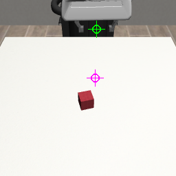
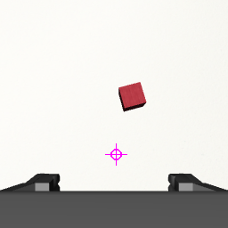
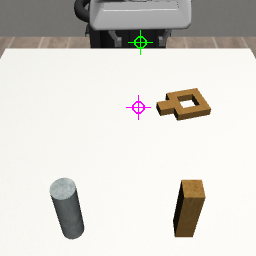
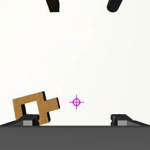
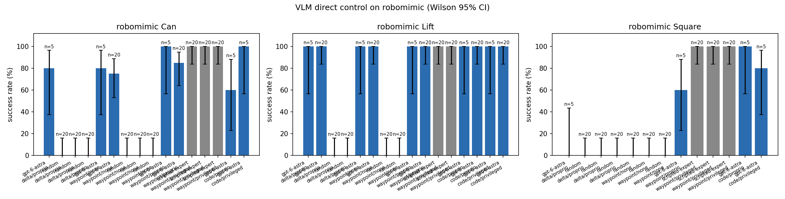

GPT-6 Astra 直接控制机械臂 · robomimic 测试面板
§S 状态与机器
渲染机状态（Mocop 快照 2026-09-08 17:50:26Z）
| 机器 | 状态 | GPU（渲染只用 EGL，占用可忽略；其余负载来自本组的其他任务） | 最近采集 |
|---|---|---|---|
| bjxy_5090 | online | GPU0 GeForce RTX 5090: 负载 89% · 显存 19.6/32 GiB · 52°C · 3 进程 GPU1 GeForce RTX 5090: 负载 95% · 显存 29.0/32 GiB · 53°C · 4 进程 | 2026-09-08 17:50:21Z |
| volc-a100 | online | GPU0 A100-SXM4-80GB: 负载 88% · 显存 47.3/80 GiB · 58°C · 50 进程 GPU1 A100-SXM4-80GB: 负载 82% · 显存 56.4/80 GiB · 52°C · 51 进程 | 2026-09-08 17:50:23Z |
§0 结论
- “方块进碗 19/20、精密插入 2/20”的分布被复现，但分界线在接口而不在任务。 Lift 在所有条件下饱和（20/20 原始动作、20/20 纯视觉都能做）。Square 上原始动作 1/20：模型能把夹爪开到把手 1.5–2 cm 范围内，但抓 3.2 cm 宽的把手需要 <1 cm 精度，反复抓空，还把“夹爪停在 3.1 cm”误读成已抓住（其实是指尖顶到了桌面）。同一模型换航点接口 18/20，写成程序 16/20（有真值 19/20）——它缺的不是眼睛和规划，而是把毫米级修正闭合起来的低层回路。
- 感知精度在 1–3 cm 量级，相机标定提示决定成败。 第一版 prompt 没有像素尺度，Can 航点条件 0/2；加入“洋红标记 = 抓取点在桌面的落点、1 px = x mm、+x/+y 在图中的方向”后同条件 5/5，20 回合矩阵 17/20（纯视觉 15/20）——模型开始按像素做视觉伺服。
- 给对物理事实比给对算法更重要。 Mac 首轮（prompt v2）Square 航点只有 3/5：prompt 里把销顶高度写成了 6 cm（实测 13 cm），模型降到“销顶”其实还在半空，卡住后小步试探收敛不了。v3 改成正确高度并加一句“螺母坐在销上时可握着继续下压”后，同条件在 20 回合上到 18/20；写程序的条件本来就会主动下压（顺应性控制器 + 下压让 ±5 mm 误差也能滑入），所以 v2 时就有 5/5。
- 成本。 每次决策 ~20k token（其中大半是 Codex 自身系统提示）、16–45 s；一个 Square 航点回合约 4 分钟、9 万 token——它适合每几秒给一次航点或写一次程序，不适合 20 Hz 的控制回路。
| 任务 | 脚本上界 | 随机下界 | delta/proprio | waypoint/none | waypoint/proprio | code/proprio | code/privileged |
|---|---|---|---|---|---|---|---|
| Lift | 20/20 (100%, CI 84–100%) | 0/20 (0%, CI 0–16%) | 20/20 (100%, CI 84–100%) | 20/20 (100%, CI 84–100%) | 20/20 (100%, CI 84–100%) | 20/20 (100%, CI 84–100%) | 20/20 (100%, CI 84–100%) |
| Can | 20/20 (100%, CI 84–100%) | 0/20 (0%, CI 0–16%) | 18/20 (90%, CI 70–97%) | 15/20 (75%, CI 53–89%) | 17/20 (85%, CI 64–95%) | 7/20 (35%, CI 18–57%) | 20/20 (100%, CI 84–100%) |
| Square | 20/20 (100%, CI 84–100%) | 0/20 (0%, CI 0–16%) | 1/20 (5%, CI 1–24%) | 0/16 (0%, CI 0–19%) | 18/20 (90%, CI 70–97%) | 16/20 (80%, CI 58–92%) | 19/20 (95%, CI 76–99%) |
每格：成功数/回合数（成功率，Wilson 95% CI）。脚本上界 = 基于仿真真值的脚本专家走同一个控制器；随机下界 = 随机航点。多次运行同一条件时取回合数最多的一次。
§1 实验配置
仿真与任务
- robosuite 1.5 + MuJoCo 3.3.x，Franka Panda，BASIC 复合控制器（OSC_POSE，20 Hz，动作 7 维 ∈ [-1,1]：xyz 增量 ±5 cm 指令 / 实测 ±1.1 cm 每步，旋转 ±0.5 rad / 实测 ±5°，夹爪 +1 闭 −1 开）
- 任务：robomimic Lift（方块抬离桌面 4 cm）、Can（罐子放进右侧料箱指定格并松手离开）、Square（方螺母套进方销并滑到底，孔销单边间隙 6.75 mm）
- 相机：agentview（固定第三人称）+ robot0_eye_in_hand（腕部），默认 256×256；只在问模型时渲染
- 初始状态：robosuite 的 Generator 按回合就地重置，回合 i 在所有条件下物体位姿相同；reset 后空转 10 步让物体落定再给首帧
- 预算：Lift 250 步 / 10 次查询，Can 400 / 14，Square 500 / 16；delta 每次 20 步动作 × 10 次；code 最多 3 轮程序
模型侧
- GPT-6 Astra 通过 Codex CLI（
codex exec -m gpt-6-astra --output-schema schema.json -i cam1.png -i cam2.png --ignore-user-config -s read-only --ephemeral），prompt 从 stdin 传入，答案强制符合 JSON schema；reasoning effort medium - 三种控制接口：delta（原始动作块）、waypoint（末端航点 + P 控制器，容差 1 cm，夹爪命令保持 10 步）、code（
plan(scene)程序，受限命名空间执行，失败后带执行反馈重写） - 三档观测：none（只有图）、proprio（图 + 末端位姿 / 夹爪开度 / 末端像素位置 / 每相机 mm-per-px 与轴向 / 固定地标坐标；图上绿色 = 抓取点、洋红 = 其桌面落点）、privileged（再加物体真值位姿与是否抓住）
- 历史：最近 6 次查询的航点执行结果与其后的机器人状态以文字附在 prompt 里；code 接口额外附上一轮程序的执行反馈
- 对照：scripted 特权脚本专家（控制器上界）、random（下界），都走同一控制器；失败分类用特权信息事后判定
§2 Astra 的输入与输出（真实查询原文）
下面每个接口各取一次真实查询：左边两张图就是模型收到的图片（proprio 档位下带绿色/洋红标记），文本 prompt 与返回 JSON 原文未做删改。
航点接口（waypoint）· 与 RoboCurve 的 EEF tool call 同一类
模型看到两张图和下面的文字，返回 1–4 个末端航点；P 控制器逐个执行后再问。 来源：Square__waypoint__proprio__codex-gpt-6-astra__s0__20260908T132052Z ep00 查询 1，24.205 s，8825 token。


输入 · 文本 prompt（原文，3956 字符）
You are the controller of a Franka Panda robot arm in a MuJoCo simulation (robosuite, robomimic 'Square' task). You cannot run commands, read files or use tools: think, then answer only through the JSON schema. Respond in English.
TASK: Pick up the square nut by its handle and drop it onto the square peg so that the peg passes through the nut's square hole, then release and move the gripper away.
SCENE: A brown square nut (a square ring about 6 cm across with a straight handle sticking out of one side) lies on the table at z = 0.820. Two pegs stand near the front edge: the square peg (3.2 cm square cross-section) at [0.230, 0.100, 0.850] (image bottom right) and a round grey peg at [0.230, -0.100, 0.850] (image bottom left); the given peg positions are their centres, the peg tops are about 13 cm above the table (z = 0.820 + 0.13). The nut's hole (4.5 cm) is only slightly larger than the peg, so the nut must be centred over the peg within a few millimetres and rotated so the hole's edges are parallel to the peg's faces before lowering; once it sits on the peg, pushing it down while still holding it helps it slide. Grasp the handle across its width: the fingers must close perpendicular to the handle direction.
SUCCESS: Success when the nut's centre is within 3 cm (x, y) of the square peg and has slid down to below 5 cm above the table, with the gripper released and more than 7 cm away.
COORDINATES: right-handed world frame in metres. The robot base is at [-0.56, 0.00, 0.91], behind the table. +x points from the robot toward the front camera, +y points to the robot's left, +z is up.
CAMERAS: Image 1 ('agentview', 256x256) is a fixed camera in front of the table looking back at the robot: the robot appears at the TOP of the image, world +x runs DOWN the image (toward the viewer) and world +y runs to the RIGHT. Image 2 ('robot0_eye_in_hand') is mounted on the gripper looking down along the fingers; the two fingertips are visible at the bottom edge.
GRIPPER: a parallel-jaw gripper pointing straight down. The reported end-effector position is the grasp point between the fingertips (fingertips reach ~2 cm below it). Fully open = 8 cm; 'close' grips anything narrower and keeps squeezing. yaw_deg = 0 means the fingers close along world y (they sit left/right of an object in image 1); yaw_deg = 90 closes along world x. The gripper is symmetric, so yaw is modulo 180.
PROGRESS: control step 0/500, query 1/16.
ROBOT STATE: grasp point at [-0.086, 0.025, 1.020] m, gripper yaw -0 deg, opening 7.7 cm (open).
The grasp point projects to pixel (u=140, v=42) in image 1.
CAMERA CALIBRATION at table height: image 1 (fixed camera): the table point straight below the grasp point is at pixel (u=138, v=107); there 1 px = 3.6 mm along world x (x increases downward in the image) and 2.5 mm along world y (y increases rightward); image 2 (moves with the gripper): the table point straight below the grasp point is at pixel (u=130, v=174); there 1 px = 1.7 mm along world x (x increases upward in the image) and 1.7 mm along world y (y increases leftward). Markers: the green crosshair in image 1 is the grasp point itself, the magenta crosshair in each image is the table point straight below it (where the fingers would land if you only descended). Use the pixel offset between an object and the magenta marker with the mm/px scale to compute the metric correction.
OUTPUT: 1 to 4 waypoints, executed in order by a position controller that moves the grasp point to each target (tolerance ~1 cm, up to 80 control steps per waypoint) and then applies the gripper command for 10 steps while holding still. The gripper keeps its last state while moving. After the last waypoint you receive fresh images and state and are asked again. Typical stages: hover 10 cm above the object, descend so the grasp point is at the object's centre height, close, lift, transport, lower, open, retreat. Give coordinates in metres in the world frame.输出约束 · JSON schema（Codex --output-schema）
{
"type": "object",
"properties": {
"reasoning": {
"type": "string",
"description": "at most 80 words: what you see, where the object is, what to do next"
},
"waypoints": {
"type": "array",
"items": {
"type": "object",
"properties": {
"label": {
"type": "string",
"description": "short name of this motion"
},
"target_position_m": {
"type": "array",
"items": {
"type": "number"
},
"minItems": 3,
"maxItems": 3,
"description": "[x, y, z] of the grasp point in the world frame, metres"
},
"gripper": {
"type": "string",
"enum": [
"open",
"close"
]
},
"yaw_deg": {
"type": [
"number",
"null"
],
"description": "gripper yaw about vertical, degrees; null keeps the current yaw"
}
},
"required": [
"label",
"target_position_m",
"gripper",
"yaw_deg"
],
"additionalProperties": false
},
"minItems": 1,
"maxItems": 4
}
},
"required": [
"reasoning",
"waypoints"
],
"additionalProperties": false
}输出 · 模型返回的 JSON（原文）
{
"reasoning": "The handle is left of the square ring in image 1 and near pixel (88, 181) in the wrist view. This places its grasp point near [-0.098, 0.096]. Align the fingers to close across the handle, approach from above, then descend and grip.",
"waypoints": [
{
"label": "Hover above handle",
"target_position_m": [
-0.098,
0.096,
0.93
],
"gripper": "open",
"yaw_deg": -72
},
{
"label": "Descend to handle",
"target_position_m": [
-0.098,
0.096,
0.835
],
"gripper": "open",
"yaw_deg": -72
},
{
"label": "Grip handle",
"target_position_m": [
-0.098,
0.096,
0.835
],
"gripper": "close",
"yaw_deg": -72
}
]
}原始动作接口（delta）
模型直接返回一段 7 维 OSC_POSE 增量动作（每步 ±1.1 cm / ±5°，夹爪 ±1），开环执行后再问。 来源：Lift__delta__proprio__codex-gpt-6-astra__s0__20260908T125956Z ep00 查询 1，37.365 s，19366 token。


输入 · 文本 prompt（原文，3101 字符）
You are the controller of a Franka Panda robot arm in a MuJoCo simulation (robosuite, robomimic 'Lift' task). You cannot run commands, read files or use tools: think, then answer only through the JSON schema. Respond in English.
TASK: Pick up the red cube and lift it clearly off the table.
SCENE: A 4 cm red cube rests somewhere near the centre of a white table. The table surface is at z = 0.800 m, so the cube centre rests at about z = 0.800 + 0.02 m. The cube may be rotated about the vertical axis.
SUCCESS: Success when the cube centre is more than 4 cm above the table surface (z > 0.800 + 0.04) while held in the gripper.
COORDINATES: right-handed world frame in metres. The robot base is at [-0.56, 0.00, 0.91], behind the table. +x points from the robot toward the front camera, +y points to the robot's left, +z is up.
CAMERAS: Image 1 ('agentview', 256x256) is a fixed camera in front of the table looking back at the robot: the robot appears at the TOP of the image, world +x runs DOWN the image (toward the viewer) and world +y runs to the RIGHT. Image 2 ('robot0_eye_in_hand') is mounted on the gripper looking down along the fingers; the two fingertips are visible at the bottom edge.
GRIPPER: a parallel-jaw gripper pointing straight down. The reported end-effector position is the grasp point between the fingertips (fingertips reach ~2 cm below it). Fully open = 8 cm; 'close' grips anything narrower and keeps squeezing. yaw_deg = 0 means the fingers close along world y (they sit left/right of an object in image 1); yaw_deg = 90 closes along world x. The gripper is symmetric, so yaw is modulo 180.
PROGRESS: control step 0/250, query 1/10.
ROBOT STATE: grasp point at [-0.086, 0.025, 1.020] m, gripper yaw -0 deg, opening 7.7 cm (open).
The grasp point projects to pixel (u=140, v=42) in image 1.
CAMERA CALIBRATION at table height: image 1 (fixed camera): the table point straight below the grasp point is at pixel (u=138, v=113); there 1 px = 3.6 mm along world x (x increases downward in the image) and 2.6 mm along world y (y increases rightward); image 2 (moves with the gripper): the table point straight below the grasp point is at pixel (u=130, v=173); there 1 px = 1.7 mm along world x (x increases upward in the image) and 1.8 mm along world y (y increases leftward). Markers: the green crosshair in image 1 is the grasp point itself, the magenta crosshair in each image is the table point straight below it (where the fingers would land if you only descended). Use the pixel offset between an object and the magenta marker with the mm/px scale to compute the metric correction.
OUTPUT: exactly 20 low-level actions, executed open-loop one per control step (20 Hz), then you are asked again. Each action is [dx, dy, dz, droll, dpitch, dyaw, gripper] with every entry in [-1, 1]: a saturated +-1 translation moves the grasp point about 1.1 cm along that world axis in one step, a saturated rotation turns it about 5 deg, and gripper -1 opens / +1 closes (keep +1 on every step while holding an object). Keep droll and dpitch at 0 so the gripper stays pointing down.输出约束 · JSON schema（Codex --output-schema）
{
"type": "object",
"properties": {
"reasoning": {
"type": "string",
"description": "at most 80 words: what you see and the motion you intend"
},
"actions": {
"type": "array",
"description": "exactly 20 actions, each [dx, dy, dz, droll, dpitch, dyaw, gripper] in [-1, 1]",
"items": {
"type": "array",
"items": {
"type": "number"
},
"minItems": 7,
"maxItems": 7
},
"minItems": 20,
"maxItems": 20
}
},
"required": [
"reasoning",
"actions"
],
"additionalProperties": false
}输出 · 模型返回的 JSON（原文）
{
"reasoning": "The cube is about 11 cm forward (+x) and 3.4 cm right (-y) of the grasp point. I will move above it with the gripper open and descend to about z = 0.862 m, leaving clearance for a precise final approach.",
"actions": [
[
0.9,
-0.28,
-0.72,
0,
0,
0,
-1
],
[
0.9,
-0.28,
-0.72,
0,
0,
0,
-1
],
[
0.9,
-0.28,
-0.72,
0,
0,
0,
-1
],
[
0.9,
-0.28,
-0.72,
0,
0,
0,
-1
],
[
0.9,
-0.28,
-0.72,
0,
0,
0,
-1
],
[
0.9,
-0.28,
-0.72,
0,
0,
0,
-1
],
[
0.9,
-0.28,
-0.72,
0,
0,
0,
-1
],
[
0.9,
-0.28,
-0.72,
0,
0,
0,
-1
],
[
0.9,
-0.28,
-0.72,
0,
0,
0,
-1
],
[
0.9,
-0.28,
-0.72,
0,
0,
0,
-1
],
[
0.9,
-0.28,
-0.72,
0,
0,
0,
-1
],
[
0,
0,
-0.72,
0,
0,
0,
-1
],
[
0,
0,
-0.72,
0,
0,
0,
-1
],
[
0,
0,
-0.72,
0,
0,
0,
-1
],
[
0,
0,
-0.72,
0,
0,
0,
-1
],
[
0,
0,
-0.72,
0,
0,
0,
-1
],
[
0,
0,
-0.72,
0,
0,
0,
-1
],
[
0,
0,
-0.72,
0,
0,
0,
-1
],
[
0,
0,
-0.72,
0,
0,
0,
-1
],
[
0,
0,
-0.72,
0,
0,
0,
-1
]
]
}程序接口（code）
模型返回一段 Python plan(scene)，在受限命名空间执行成航点序列；失败后把执行结果反馈给它改程序。 来源：Square__code__proprio__codex-gpt-6-astra__s0__20260908T142029Z ep00 查询 1，41.339 s，9442 token。


输入 · 文本 prompt（原文，4371 字符）
You are the controller of a Franka Panda robot arm in a MuJoCo simulation (robosuite, robomimic 'Square' task). You cannot run commands, read files or use tools: think, then answer only through the JSON schema. Respond in English.
TASK: Pick up the square nut by its handle and drop it onto the square peg so that the peg passes through the nut's square hole, then release and move the gripper away.
SCENE: A brown square nut (a square ring about 6 cm across with a straight handle sticking out of one side) lies on the table at z = 0.820. Two pegs stand near the front edge: the square peg (3.2 cm square cross-section) at [0.230, 0.100, 0.850] (image bottom right) and a round grey peg at [0.230, -0.100, 0.850] (image bottom left); the given peg positions are their centres, the peg tops are about 13 cm above the table (z = 0.820 + 0.13). The nut's hole (4.5 cm) is only slightly larger than the peg, so the nut must be centred over the peg within a few millimetres and rotated so the hole's edges are parallel to the peg's faces before lowering; once it sits on the peg, pushing it down while still holding it helps it slide. Grasp the handle across its width: the fingers must close perpendicular to the handle direction.
SUCCESS: Success when the nut's centre is within 3 cm (x, y) of the square peg and has slid down to below 5 cm above the table, with the gripper released and more than 7 cm away.
COORDINATES: right-handed world frame in metres. The robot base is at [-0.56, 0.00, 0.91], behind the table. +x points from the robot toward the front camera, +y points to the robot's left, +z is up.
CAMERAS: Image 1 ('agentview', 256x256) is a fixed camera in front of the table looking back at the robot: the robot appears at the TOP of the image, world +x runs DOWN the image (toward the viewer) and world +y runs to the RIGHT. Image 2 ('robot0_eye_in_hand') is mounted on the gripper looking down along the fingers; the two fingertips are visible at the bottom edge.
GRIPPER: a parallel-jaw gripper pointing straight down. The reported end-effector position is the grasp point between the fingertips (fingertips reach ~2 cm below it). Fully open = 8 cm; 'close' grips anything narrower and keeps squeezing. yaw_deg = 0 means the fingers close along world y (they sit left/right of an object in image 1); yaw_deg = 90 closes along world x. The gripper is symmetric, so yaw is modulo 180.
PROGRESS: control step 0/500, query 1/3.
ROBOT STATE: grasp point at [-0.086, 0.025, 1.020] m, gripper yaw -0 deg, opening 7.7 cm (open).
The grasp point projects to pixel (u=140, v=42) in image 1.
CAMERA CALIBRATION at table height: image 1 (fixed camera): the table point straight below the grasp point is at pixel (u=138, v=107); there 1 px = 3.6 mm along world x (x increases downward in the image) and 2.5 mm along world y (y increases rightward); image 2 (moves with the gripper): the table point straight below the grasp point is at pixel (u=130, v=174); there 1 px = 1.7 mm along world x (x increases upward in the image) and 1.7 mm along world y (y increases leftward). Markers: the green crosshair in image 1 is the grasp point itself, the magenta crosshair in each image is the table point straight below it (where the fingers would land if you only descended). Use the pixel offset between an object and the magenta marker with the mm/px scale to compute the metric correction.
OUTPUT: a Python program (in the 'code' field) that defines plan(scene) and returns a list of at most 12 Waypoint(position, gripper, yaw_deg=None, label='') objects, executed in order by the waypoint controller (tolerance ~1 cm, then the gripper command is applied for 10 steps while holding still; the gripper keeps its state while moving). Available names: Waypoint, np, math, and the scene API:
- scene.table_z -> float (table surface height)
- scene.targets -> dict of fixed landmark name -> [x, y, z]
- scene.eef_position() -> [x, y, z] of the grasp point now
- scene.eef_yaw_deg() -> float
- scene.gripper_opening() -> float metres (0.08 = fully open)
- (no object poses: read object locations off the images and write the numbers into your program)
After the program runs you are shown the outcome and may submit a revised program. Return the whole sequence (approach, grasp, transport, release/retreat as needed); do not print, import or access anything else.输出约束 · JSON schema（Codex --output-schema）
{
"type": "object",
"properties": {
"reasoning": {
"type": "string",
"description": "at most 100 words: what happened so far and the strategy of this program"
},
"code": {
"type": "string",
"description": "Python source defining plan(scene) -> list[Waypoint]"
}
},
"required": [
"reasoning",
"code"
],
"additionalProperties": false
}输出 · 模型返回的 JSON（原文）
{
"reasoning": "The handle is approximately at [-0.095, 0.101], with the hole about 5.8 cm toward +y and slightly toward -x. Grasp perpendicular to the handle, lift clear of the peg, and rotate the nut to align its square hole with the peg. Preserve the handle-to-hole offset during placement, lower to seat the nut, then release and retreat.",
"code": "def plan(scene):\n z = scene.table_z\n return [\n Waypoint([-0.095, 0.101, z + 0.16], 'open', yaw_deg=-75, label='Approach handle'),\n Waypoint([-0.095, 0.101, z + 0.022], 'open', yaw_deg=-75, label='Lower around handle'),\n Waypoint([-0.095, 0.101, z + 0.022], 'close', yaw_deg=-75, label='Grasp handle across width'),\n Waypoint([-0.095, 0.101, z + 0.24], 'close', yaw_deg=-75, label='Lift clear'),\n Waypoint([-0.095, 0.101, z + 0.24], 'close', yaw_deg=-90, label='Align square edges'),\n Waypoint([0.230, 0.042, z + 0.24], 'close', yaw_deg=-90, label='Center hole over square peg'),\n Waypoint([0.230, 0.042, z + 0.15], 'close', yaw_deg=-90, label='Approach peg top'),\n Waypoint([0.230, 0.042, z + 0.075], 'close', yaw_deg=-90, label='Slide nut onto peg'),\n Waypoint([0.230, 0.042, z + 0.025], 'close', yaw_deg=-90, label='Seat nut near table'),\n Waypoint([0.230, 0.042, z + 0.025], 'open', yaw_deg=-90, label='Release nut'),\n Waypoint([0.230, 0.042, z + 0.22], 'open', yaw_deg=-90, label='Retreat upward')\n ]"
}§3 结果矩阵
| 任务 | 模型 / 基线 | 接口 | 观测 | 成功率 | 查询/回合 | token/回合 | 模型耗时/回合 | 步数/回合 | 失败模式 | 机器 · prompt 版本 · run |
|---|---|---|---|---|---|---|---|---|---|---|
| Lift | gpt-6-astra | delta | proprio | 5/5 (100%, CI 57–100%) | 3.0 | 60055 | 69.8 s | 28.6 | — | MacBook Pro (Apple M-series) v1 · 20260907T112134Z |
| Lift | gpt-6-astra | delta | proprio | 20/20 (100%, CI 84–100%) | 2.2 | 24774 | 73.0 s | 38.0 | — | volc-a100 (2×A100-80G) v3 · 20260908T125956Z |
| Lift | random | delta | proprio | 0/20 (0%, CI 0–16%) | 10.0 | 0 | 0.0 s | 200.0 | 没接近物体×20 | MacBook Pro (Apple M-series) v2 · 20260907T134758Z |
| Lift | random | delta | proprio | 0/20 (0%, CI 0–16%) | 10.0 | 0 | 0.0 s | 200.0 | 接近了没抓住×1、没接近物体×19 | volc-a100 (2×A100-80G) v3 · 20260908T122808Z |
| Lift | gpt-6-astra | waypoint | none | 5/5 (100%, CI 57–100%) | 2.0 | 42468 | 56.6 s | 72.4 | — | MacBook Pro (Apple M-series) v1 · 20260907T111645Z |
| Lift | gpt-6-astra | waypoint | none | 20/20 (100%, CI 84–100%) | 1.55 | 8555 | 42.9 s | 57.0 | — | volc-a100 (2×A100-80G) v3 · 20260908T124519Z |
| Lift | random | waypoint | none | 0/20 (0%, CI 0–16%) | 3.6 | 0 | 0.0 s | 250.0 | 接近了没抓住×2、没接近物体×18 | MacBook Pro (Apple M-series) v2 · 20260907T134733Z |
| Lift | random | waypoint | none | 0/20 (0%, CI 0–16%) | 3.6 | 0 | 0.0 s | 250.0 | 接近了没抓住×4、没接近物体×16 | volc-a100 (2×A100-80G) v3 · 20260908T122721Z |
| Lift | gpt-6-astra | waypoint | proprio | 5/5 (100%, CI 57–100%) | 2.6 | 54803 | 70.1 s | 60.6 | — | MacBook Pro (Apple M-series) v1 · 20260907T111048Z |
| Lift | gpt-6-astra | waypoint | proprio | 20/20 (100%, CI 84–100%) | 1.7 | 20933 | 48.4 s | 44.4 | — | volc-a100 (2×A100-80G) v3 · 20260908T122854Z |
| Lift | scripted | waypoint | privileged | 20/20 (100%, CI 84–100%) | 1.0 | 0 | 0.0 s | 45.1 | — | MacBook Pro (Apple M-series) v2 · 20260907T134725Z |
| Lift | scripted | waypoint | privileged | 20/20 (100%, CI 84–100%) | 1.0 | 0 | 0.0 s | 46.0 | — | volc-a100 (2×A100-80G) v3 · 20260908T122708Z |
| Lift | gpt-6-astra | code | proprio | 5/5 (100%, CI 57–100%) | 1.0 | 19321 | 44.2 s | 46.4 | — | MacBook Pro (Apple M-series) v1 · 20260907T113113Z |
| Lift | gpt-6-astra | code | proprio | 20/20 (100%, CI 84–100%) | 1.0 | 16243 | 41.6 s | 45.4 | — | volc-a100 (2×A100-80G) v3 · 20260908T134254Z |
| Lift | gpt-6-astra | code | privileged | 5/5 (100%, CI 57–100%) | 1.8 | 40609 | 43.9 s | 47.6 | — | MacBook Pro (Apple M-series) v1 · 20260907T112729Z |
| Lift | gpt-6-astra | code | privileged | 20/20 (100%, CI 84–100%) | 1.4 | 25133 | 54.0 s | 48.9 | — | volc-a100 (2×A100-80G) v3 · 20260908T132433Z |
| Can | gpt-6-astra | delta | proprio | 4/5 (80%, CI 38–96%) | 8.2 | 165131 | 270.8 s | 156.2 | 举起了没放好×1 | MacBook Pro (Apple M-series) v2 · 20260907T135833Z |
| Can | gpt-6-astra | delta | proprio | 18/20 (90%, CI 70–97%) | 8.5 | 46758 | 221.1 s | 161.4 | 抓住了没举起×1、举起了没放好×1 | bjxy_5090 (2×RTX 5090) v3 · 20260908T135533Z |
| Can | random | delta | proprio | 0/20 (0%, CI 0–16%) | 10.0 | 0 | 0.0 s | 200.0 | 没接近物体×20 | MacBook Pro (Apple M-series) v2 · 20260907T134925Z |
| Can | random | delta | proprio | 0/20 (0%, CI 0–16%) | 10.0 | 0 | 0.0 s | 200.0 | 没接近物体×20 | volc-a100 (2×A100-80G) v3 · 20260908T122835Z |
| Can | random | delta | proprio | 0/20 (0%, CI 0–16%) | 10.0 | 0 | 0.0 s | 200.0 | 没接近物体×20 | bjxy_5090 (2×RTX 5090) v3 · 20260908T132003Z |
| Can | gpt-6-astra | waypoint | none | 4/5 (80%, CI 38–96%) | 3.8 | 48267 | 114.5 s | 270.0 | 举起了没放好×1 | MacBook Pro (Apple M-series) v2 · 20260907T120006Z |
| Can | gpt-6-astra | waypoint | none | 15/20 (75%, CI 53–89%) | 3.65 | 23283 | 102.9 s | 280.5 | 接近了没抓住×1、举起了没放好×4 | bjxy_5090 (2×RTX 5090) v3 · 20260908T132033Z |
| Can | random | waypoint | none | 0/20 (0%, CI 0–16%) | 4.35 | 0 | 0.0 s | 400.0 | 接近了没抓住×4、没接近物体×16 | MacBook Pro (Apple M-series) v2 · 20260907T134839Z |
| Can | random | waypoint | none | 0/20 (0%, CI 0–16%) | 4.2 | 0 | 0.0 s | 400.0 | 接近了没抓住×2、抓住了没举起×1、没接近物体×17 | volc-a100 (2×A100-80G) v3 · 20260908T122712Z |
| Can | random | waypoint | none | 0/20 (0%, CI 0–16%) | 4.2 | 0 | 0.0 s | 400.0 | 接近了没抓住×2、抓住了没举起×1、没接近物体×17 | bjxy_5090 (2×RTX 5090) v3 · 20260908T131917Z |
| Can | gpt-6-astra | waypoint | proprio | 5/5 (100%, CI 57–100%) | 3.0 | 38703 | 83.6 s | 164.0 | — | MacBook Pro (Apple M-series) v2 · 20260907T115255Z |
| Can | gpt-6-astra | waypoint | proprio | 17/20 (85%, CI 64–95%) | 3.4 | 33152 | 89.2 s | 207.2 | 举起了没放好×3 | volc-a100 (2×A100-80G) v3 · 20260908T122925Z |
| Can | scripted | waypoint | privileged | 20/20 (100%, CI 84–100%) | 2.0 | 0 | 0.0 s | 132.3 | — | MacBook Pro (Apple M-series) v2 · 20260907T134820Z |
| Can | scripted | waypoint | privileged | 20/20 (100%, CI 84–100%) | 2.0 | 0 | 0.0 s | 138.4 | — | volc-a100 (2×A100-80G) v3 · 20260908T122638Z |
| Can | scripted | waypoint | privileged | 20/20 (100%, CI 84–100%) | 2.0 | 0 | 0.0 s | 138.4 | — | bjxy_5090 (2×RTX 5090) v3 · 20260908T131857Z |
| Can | gpt-6-astra | code | proprio | 3/5 (60%, CI 23–88%) | 1.2 | 18256 | 47.4 s | 258.2 | 接近了没抓住×2 | MacBook Pro (Apple M-series) v2 · 20260907T123628Z |
| Can | gpt-6-astra | code | proprio | 7/20 (35%, CI 18–57%) | 1.45 | 11542 | 51.8 s | 314.7 | 接近了没抓住×9、抓住了没举起×1、举起了没放好×1、没接近物体×2 | bjxy_5090 (2×RTX 5090) v3 · 20260908T152543Z |
| Can | gpt-6-astra | code | privileged | 5/5 (100%, CI 57–100%) | 2.0 | 29445 | 56.1 s | 173.4 | — | MacBook Pro (Apple M-series) v2 · 20260907T123134Z |
| Can | gpt-6-astra | code | privileged | 20/20 (100%, CI 84–100%) | 2.0 | 17358 | 46.5 s | 168.7 | — | bjxy_5090 (2×RTX 5090) v3 · 20260908T150945Z |
| Square | gpt-6-astra | delta | proprio | 0/5 (0%, CI 0–43%) | 10.0 | 109142 | 425.4 s | 200.0 | 抓住了没举起×1、举起了没放好×1、没接近物体×3 | MacBook Pro (Apple M-series) v2 · 20260907T142127Z |
| Square | gpt-6-astra | delta | proprio | 1/20 (5%, CI 1–24%) | 10.0 | 69456 | 342.4 s | 199.7 | 接近了没抓住×7、抓住了没举起×4、举起了没放好×8 | bjxy_5090 (2×RTX 5090) v3 · 20260908T131857Z |
| Square | random | delta | proprio | 0/20 (0%, CI 0–16%) | 10.0 | 0 | 0.0 s | 200.0 | 接近了没抓住×1、没接近物体×19 | MacBook Pro (Apple M-series) v2 · 20260907T135114Z |
| Square | random | delta | proprio | 0/20 (0%, CI 0–16%) | 10.0 | 0 | 0.0 s | 200.0 | 接近了没抓住×3、没接近物体×17 | volc-a100 (2×A100-80G) v3 · 20260908T122909Z |
| Square | random | delta | proprio | 0/20 (0%, CI 0–16%) | 10.0 | 0 | 0.0 s | 200.0 | 接近了没抓住×3、没接近物体×17 | bjxy_5090 (2×RTX 5090) v3 · 20260908T132021Z |
| Square | gpt-6-astra 进行中 16/20 回合 | waypoint | none | 0/16 (0%, CI 0–19%) | 13.94 | 79991 | 558.4 s | 402.8 | 接近了没抓住×1、举起了没放好×15 | MacBook Pro (Apple M-series) v3 · 20260908T151342Z |
| Square | random | waypoint | none | 0/20 (0%, CI 0–16%) | 6.1 | 0 | 0.0 s | 500.0 | 接近了没抓住×2、举起了没放好×1、没接近物体×17 | MacBook Pro (Apple M-series) v2 · 20260907T135018Z |
| Square | random | waypoint | none | 0/20 (0%, CI 0–16%) | 6.2 | 0 | 0.0 s | 500.0 | 接近了没抓住×3、没接近物体×17 | volc-a100 (2×A100-80G) v3 · 20260908T122719Z |
| Square | random | waypoint | none | 0/20 (0%, CI 0–16%) | 6.2 | 0 | 0.0 s | 500.0 | 接近了没抓住×3、没接近物体×17 | bjxy_5090 (2×RTX 5090) v3 · 20260908T131920Z |
| Square | gpt-6-astra | waypoint | proprio | 3/5 (60%, CI 23–88%) | 7.6 | 87073 | 227.6 s | 403.6 | 举起了没放好×2 | MacBook Pro (Apple M-series) v2 · 20260907T145719Z |
| Square | gpt-6-astra | waypoint | proprio | 18/20 (90%, CI 70–97%) | 6.95 | 40935 | 176.7 s | 256.6 | 举起了没放好×2 | bjxy_5090 (2×RTX 5090) v3 · 20260908T132052Z |
| Square | scripted | waypoint | privileged | 20/20 (100%, CI 84–100%) | 2.0 | 0 | 0.0 s | 185.2 | — | MacBook Pro (Apple M-series) v2 · 20260907T134953Z |
| Square | scripted | waypoint | privileged | 20/20 (100%, CI 84–100%) | 2.0 | 0 | 0.0 s | 164.8 | — | volc-a100 (2×A100-80G) v3 · 20260908T122638Z |
| Square | scripted | waypoint | privileged | 20/20 (100%, CI 84–100%) | 2.0 | 0 | 0.0 s | 164.8 | — | bjxy_5090 (2×RTX 5090) v3 · 20260908T131857Z |
| Square | gpt-6-astra | code | proprio | 5/5 (100%, CI 57–100%) | 1.0 | 20913 | 49.3 s | 206.8 | — | MacBook Pro (Apple M-series) v2 · 20260907T151651Z |
| Square | gpt-6-astra | code | proprio | 16/20 (80%, CI 58–92%) | 1.35 | 18167 | 66.2 s | 254.8 | 抓住了没举起×3、举起了没放好×1 | bjxy_5090 (2×RTX 5090) v3 · 20260908T142029Z |
| Square | gpt-6-astra | code | privileged | 4/5 (80%, CI 38–96%) | 1.4 | 22281 | 59.6 s | 286.8 | 举起了没放好×1 | MacBook Pro (Apple M-series) v2 · 20260907T135143Z |
| Square | gpt-6-astra | code | privileged | 19/20 (95%, CI 76–99%) | 1.2 | 16312 | 42.9 s | 217.9 | 举起了没放好×1 | bjxy_5090 (2×RTX 5090) v3 · 20260908T144311Z |

§4 每回合视频与推理轨迹
视频为 agentview 第三人称回放（10 fps ≈ 实时，鼠标悬停控制条可拖动）；展开“推理轨迹”可看每次查询模型写的 reasoning、给出的计划和控制器的执行结果。基线（脚本 / 随机）不录视频。
Lift · 拿起红色方块
delta · 原始 7 维增量动作块 × proprio · 图像 + 本体状态 + 相机标定 — gpt-6-astra：5/5 · MacBook Pro (Apple M-series) · seed 0 · prompt v1
最近距离 0.0142 m · 最大抬高 0.01 m
模型的推理轨迹（3 次查询）
- 查询 1（第 0 步，25.283 s，22313 tok）
The cube is near the table centre, below and forward of the grasp point. I will open the gripper and move downward and forward toward the cube, keeping the gripper vertical.
计划：10 个原始动作，均值 [0.45, -0.03, -1.0, 0.0, 0.0, 0.0, -1.0] - 查询 2（第 10 步，31.511 s，22637 tok）
The cube is below and slightly forward of the grasp point. I will move forward and descend with the gripper open, then check alignment before closing.
计划：10 个原始动作，均值 [0.39, 0.0, -0.39, 0.0, 0.0, 0.0, -1.0] - 查询 3（第 20 步，19.533 s，22366 tok）
The open gripper is centered over the cube at grasp height. I will close the fingers and allow the grip to settle, then lift vertically while maintaining the grip.
计划：10 个原始动作，均值 [0.0, 0.0, 0.28, 0.0, 0.0, 0.0, 1.0]
最近距离 0.0099 m · 最大抬高 0.0193 m
模型的推理轨迹（3 次查询）
- 查询 1（第 0 步，19.499 s，22307 tok）
The cube is centered laterally and ahead of the elevated gripper. I will open the jaws, move forward, and descend toward the cube, keeping the gripper vertical.
计划：10 个原始动作，均值 [0.8, 0.0, -0.8, 0.0, 0.0, 0.0, -1.0] - 查询 2（第 10 步，26.048 s，22412 tok）
The cube is below and slightly forward of the grasp point, with good lateral alignment. I will move slightly forward and lower the open gripper toward the cube, leaving it open for final alignment.
计划：10 个原始动作，均值 [0.21, 0.0, -0.54, 0.0, 0.0, 0.0, -1.0] - 查询 3（第 20 步，16.829 s，22326 tok）
The red cube appears between the open fingertips, and the grasp point is low enough to grip its sides. I will close the gripper while holding position, then lift vertically while maintaining the grip.
计划：10 个原始动作，均值 [0.0, 0.0, 0.4, 0.0, 0.0, 0.0, 1.0]
最近距离 0.0042 m · 最大抬高 0.0118 m
模型的推理轨迹（3 次查询）
- 查询 1（第 0 步，23.363 s，4660 tok）
The cube is ahead of the gripper and nearly aligned laterally. I will open the fingers, move forward, and descend toward a position above the cube while keeping the gripper vertical.
计划：10 个原始动作，均值 [0.65, 0.0, -1.0, 0.0, 0.0, 0.0, -1.0] - 查询 2（第 10 步，24.3 s，22417 tok）
The cube is slightly forward and left of the projected grasp point. I will shift toward its centre, lower the open gripper to the cube’s mid-height, then close firmly. Lifting will follow once the grasp is established.
计划：10 个原始动作，均值 [0.15, -0.08, -0.45, 0.0, 0.0, 0.0, -0.2] - 查询 3（第 20 步，23.848 s，22377 tok）
The red cube appears between the open fingertips, and the grasp point is already at cube height. I will close the gripper in place, then lift vertically while maintaining the grip.
计划：10 个原始动作，均值 [0.0, 0.0, 0.48, 0.0, 0.0, 0.0, 1.0]
最近距离 0.0167 m · 最大抬高 0.0147 m
模型的推理轨迹（3 次查询）
- 查询 1（第 0 步，24.57 s，22332 tok）
The red cube is below and slightly ahead of the gripper. I will open the fingers and move forward while descending toward a position above the cube, keeping the gripper pointing straight down.
计划：10 个原始动作，均值 [0.65, -0.08, -1.0, 0.0, 0.0, 0.0, -1.0] - 查询 2（第 10 步，23.32 s，22427 tok）
The cube is nearly centered beneath the open gripper, slightly forward of the grasp point. I will move forward a little while lowering to the cube’s center height, then close the fingers around it.
计划：10 个原始动作，均值 [0.13, 0.0, -0.62, 0.0, 0.0, 0.0, -0.4] - 查询 3（第 20 步，21.521 s，4683 tok）
The red cube appears between the open fingers, and the grasp point is already at gripping height. I will close the gripper without shifting sideways, then lift vertically while maintaining the grip.
计划：10 个原始动作，均值 [0.0, 0.0, 0.38, 0.0, 0.0, 0.0, 1.0]
最近距离 0.0246 m · 最大抬高 0.0118 m
模型的推理轨迹（3 次查询）
- 查询 1（第 0 步，25.627 s，22296 tok）
The cube is ahead of the gripper and nearly aligned laterally. I will open the fingers and move forward while descending toward a pre-grasp position, keeping the gripper vertical.
计划：10 个原始动作，均值 [0.65, 0.0, -1.0, 0.0, 0.0, 0.0, -1.0] - 查询 2（第 10 步，21.785 s，22381 tok）
The cube is below the open gripper, slightly forward and to world +y. I will move toward its centre while lowering the grasp point, then close the fingers around it.
计划：10 个原始动作，均值 [0.18, 0.06, -0.54, 0.0, 0.0, 0.0, -0.4] - 查询 3（第 20 步，22.163 s，22343 tok）
The cube appears mostly occluded beneath the gripper, and the grasp point is already at cube height. I will close the fingers while holding position, then lift vertically while maintaining the grip.
计划：10 个原始动作，均值 [0.0, 0.0, 0.34, 0.0, 0.0, 0.0, 1.0]
delta · 原始 7 维增量动作块 × proprio · 图像 + 本体状态 + 相机标定 — gpt-6-astra：20/20 · volc-a100 (2×A100-80G) · seed 0 · prompt v3
最近距离 0.0127 m · 最大抬高 0.0205 m
模型的推理轨迹（2 次查询）
- 查询 1（第 0 步，37.365 s，19366 tok）
The cube is about 11 cm forward (+x) and 3.4 cm right (-y) of the grasp point. I will move above it with the gripper open and descend to about z = 0.862 m, leaving clearance for a precise final approach.
计划：20 个原始动作，均值 [0.5, -0.15, -0.72, 0.0, 0.0, 0.0, -1.0] - 查询 2（第 20 步，29.877 s，19346 tok）
The cube is between the open fingers but slightly offset toward positive y. I will make a small alignment correction, lower the grasp point slightly, close firmly, and lift while maintaining the grip.
计划：20 个原始动作，均值 [0.01, 0.04, 0.26, 0.0, 0.0, 0.0, 0.8]
最近距离 0.0108 m · 最大抬高 0.0191 m
模型的推理轨迹（2 次查询）
- 查询 1（第 0 步，39.061 s，19460 tok）
The cube is about 10 cm forward and 2 cm left of the grasp point. I will move over it while descending, lower the fingertips around its sides, then close the gripper. Lifting will follow after checking the grasp.
计划：20 个原始动作，均值 [0.45, 0.08, -0.78, 0.0, 0.0, 0.0, -0.7] - 查询 2（第 20 步，32.23 s，19352 tok）
The red cube appears about 1 cm toward +x and 0.7 cm toward -y from the grasp point. I will center the gripper while raising it slightly to the cube’s midpoint, close the fingers, and lift with the gripper held closed.
计划：20 个原始动作，均值 [0.04, -0.03, 0.37, 0.0, 0.0, 0.0, 0.8]
最近距离 0.0128 m · 最大抬高 0.0204 m
模型的推理轨迹（2 次查询）
- 查询 1（第 0 步，33.322 s，19327 tok）
The cube is about 7.7 cm forward and 1.4 cm left of the grasp point. I will move over its centre while descending with the gripper open, stopping just above grasp height for alignment verification.
计划：20 个原始动作，均值 [0.35, 0.06, -0.77, 0.0, 0.0, 0.0, -1.0] - 查询 2（第 20 步，31.109 s，3827 tok）
The cube is between the open fingers, slightly offset toward negative world y. The grasp point is already at cube-centre height. I will make a small lateral correction, close the gripper firmly, then lift vertically while maintaining the grip.
计划：20 个原始动作，均值 [0.0, -0.02, 0.28, 0.0, 0.0, 0.0, 0.9]
最近距离 0.0158 m · 最大抬高 0.0203 m
模型的推理轨迹（2 次查询）
- 查询 1（第 0 步，28.117 s，19361 tok）
The cube is about 9.8 cm forward and 2.4 cm to the right of the grasp point. I will move above it with the gripper open and descend to roughly 5 cm above the table, ready for final alignment and grasping.
计划：20 个原始动作，均值 [0.44, -0.11, -0.65, 0.0, 0.0, 0.0, -1.0] - 查询 2（第 20 步，28.989 s，3839 tok）
The cube is between the open fingers, slightly offset from the grasp point. I will shift about 6 mm forward and 7 mm left, close the gripper at the current height, then lift while maintaining the grip.
计划：20 个原始动作，均值 [0.03, 0.03, 0.26, 0.0, 0.0, 0.0, 0.7]
最近距离 0.0123 m · 最大抬高 0.019 m
模型的推理轨迹（2 次查询）
- 查询 1（第 0 步，30.654 s，3923 tok）
The cube is about 12 cm forward (+x) and 4 cm left (+y) of the grasp point. I will move above it while descending with the gripper open, stopping just above grasp height for alignment verification.
计划：20 个原始动作，均值 [0.54, 0.17, -0.68, 0.0, 0.0, 0.0, -1.0] - 查询 2（第 20 步，28.838 s，19326 tok）
The cube is between the open fingers, slightly offset from the grasp marker. I will make a small alignment correction, close the gripper at the current height, then lift while maintaining the grip.
计划：20 个原始动作，均值 [0.02, -0.03, 0.24, 0.0, 0.0, 0.0, 0.8]
最近距离 0.0128 m · 最大抬高 0.0212 m
模型的推理轨迹（2 次查询）
- 查询 1（第 0 步，34.905 s，3858 tok）
The cube is about 7 cm toward world +x and 2 cm toward world -y from the gripper. I will move over it while descending with the jaws open, stopping above grasp height for another alignment check.
计划：20 个原始动作，均值 [0.33, -0.08, -0.7, 0.0, 0.0, 0.0, -1.0] - 查询 2（第 20 步，33.007 s，3868 tok）
The cube is nearly centered between the open fingers, slightly offset in the wrist view. I will make a small alignment correction, lower the grasp point to the cube’s middle, close the gripper, and lift while maintaining the grip.
计划：20 个原始动作，均值 [0.02, 0.02, 0.27, 0.0, 0.0, 0.0, 0.7]
最近距离 0.0102 m · 最大抬高 0.0216 m
模型的推理轨迹（2 次查询）
- 查询 1（第 0 步，30.58 s，19386 tok）
The cube is about 11 cm forward (+x) and 1 cm left (+y) of the grasp point. I will move over it while lowering the open gripper to about z = 0.85 m, then reassess alignment before grasping.
计划：20 个原始动作，均值 [0.51, 0.05, -0.68, 0.0, 0.0, 0.0, -1.0] - 查询 2（第 20 步，31.679 s，3805 tok）
The cube is between the open fingertips, with the grasp point already at cube-centre height. I will make a small centring adjustment, close the gripper firmly, and lift vertically while maintaining the grip.
计划：20 个原始动作，均值 [0.01, 0.01, 0.34, 0.0, 0.0, 0.0, 0.9]
最近距离 0.0156 m · 最大抬高 0.0208 m
模型的推理轨迹（2 次查询）
- 查询 1（第 0 步，44.131 s，19349 tok）
The cube is about 10–11 cm forward of the grasp point, with little lateral offset. I will move forward while descending with the gripper open, stopping above the cube to refine alignment before grasping.
计划：20 个原始动作，均值 [0.49, -0.02, -0.7, 0.0, 0.0, 0.0, -1.0] - 查询 2（第 20 步，40.462 s，3814 tok）
The cube is nearly centred between the open fingers. I will lower the grasp point about 1 cm, close the gripper firmly, then lift while maintaining the grip.
计划：20 个原始动作，均值 [0.0, 0.0, 0.2, 0.0, 0.0, 0.0, 0.7]
最近距离 0.0246 m · 最大抬高 0.026 m
模型的推理轨迹（2 次查询）
- 查询 1（第 0 步，35.618 s，19422 tok）
The cube is approximately 13 cm forward and 3 cm left of the grasp point. I will move above it while lowering the open gripper, stopping above grasp height for alignment before closing.
计划：20 个原始动作，均值 [0.61, 0.14, -0.63, 0.0, 0.0, 0.0, -1.0] - 查询 2（第 20 步，29.49 s，3820 tok）
The cube is between the open fingers, slightly offset toward negative world y. I will center the grasp, lower a few millimetres, close the fingers firmly, and lift while maintaining the grip.
计划：20 个原始动作，均值 [0.0, -0.03, 0.27, 0.0, 0.0, 0.0, 0.7]
最近距离 0.0103 m · 最大抬高 0.0207 m
模型的推理轨迹（2 次查询）
- 查询 1（第 0 步，29.61 s，19338 tok）
The cube is about 8 cm forward of the point below the gripper, with little lateral offset. I will move forward and descend with the gripper open, stopping just above the cube to check alignment before grasping.
计划：20 个原始动作，均值 [0.35, 0.0, -0.72, 0.0, 0.0, 0.0, -1.0] - 查询 2（第 20 步，31.807 s，3783 tok）
The cube appears centered between the open fingertips, and the grasp point is at cube height. I will close the gripper, allow it to secure the cube, then lift vertically while maintaining the grip.
计划：20 个原始动作，均值 [0.0, 0.0, 0.25, 0.0, 0.0, 0.0, 1.0]
最近距离 0.0087 m · 最大抬高 0.0245 m
模型的推理轨迹（2 次查询）
- 查询 1（第 0 步，29.625 s，3900 tok）
The cube is about 8 cm forward of the grasp point and nearly aligned laterally. I will move forward while lowering the open gripper, then slow the descent to position the fingers around the cube before closing on the next observation.
计划：20 个原始动作，均值 [0.35, 0.02, -0.75, 0.0, 0.0, 0.0, -1.0] - 查询 2（第 20 步，29.582 s，19384 tok）
The red cube is between the open fingers, slightly forward of the grasp point. I will raise the grasp point slightly and shift forward to center the cube, close the gripper, then lift while maintaining the grip.
计划：20 个原始动作，均值 [0.03, 0.01, 0.38, 0.0, 0.0, 0.0, 0.8]
最近距离 0.0257 m · 最大抬高 0.023 m
模型的推理轨迹（2 次查询）
- 查询 1（第 0 步，35.535 s，3939 tok）
The cube is about 16 cm forward (+x) and 6 mm left (+y) of the gripper’s landing point. I will move above it with the gripper open and descend to about 0.87 m, leaving clearance for a precise final approach.
计划：20 个原始动作，均值 [0.71, 0.03, -0.57, 0.0, 0.0, 0.0, -1.0] - 查询 2（第 20 步，32.803 s，19295 tok）
The cube is nearly centered beneath the open gripper. I will lower the grasp point about 1.7 cm, close the fingers around the cube, then lift while maintaining the grip.
计划：20 个原始动作，均值 [0.0, 0.0, 0.23, 0.0, 0.0, 0.0, 0.7]
最近距离 0.0229 m · 最大抬高 0.0216 m
模型的推理轨迹（2 次查询）
- 查询 1（第 0 步，28.479 s，3830 tok）
The cube is about 13 cm forward (+x) and 7 mm right (-y) of the grasp point. I will move above it with the gripper open and descend to roughly 5 cm above the table, leaving final grasp alignment for the next observation.
计划：20 个原始动作，均值 [0.59, -0.03, -0.68, 0.0, 0.0, 0.0, -1.0] - 查询 2（第 20 步，28.607 s，3772 tok）
The red cube appears centered between the open fingertips, and the grasp point is already at cube height. I will close the gripper in place, allow it to secure the cube, then lift vertically while maintaining the grip.
计划：20 个原始动作，均值 [0.0, 0.0, 0.3, 0.0, 0.0, 0.0, 1.0]
最近距离 0.0098 m · 最大抬高 0.0247 m
模型的推理轨迹（2 次查询）
- 查询 1（第 0 步，28.227 s，3838 tok）
The cube is about 7 cm forward of the grasp point, with little lateral offset. I will move forward while descending with the gripper open, then finish approaching above the cube for a precise grasp on the next observation.
计划：20 个原始动作，均值 [0.32, 0.0, -0.65, 0.0, 0.0, 0.0, -1.0] - 查询 2（第 20 步，26.85 s，19332 tok）
The red cube appears centered between the open fingers, beneath the grasp point. I will descend about 1.5 cm, close the gripper firmly around the cube, then lift vertically while maintaining the grip.
计划：20 个原始动作，均值 [0.0, 0.0, 0.23, 0.0, 0.0, 0.0, 0.7]
最近距离 0.0127 m · 最大抬高 0.0216 m
模型的推理轨迹（6 次查询）
- 查询 1（第 0 步，34.135 s，19384 tok）
The cube is about 12 cm forward and 4 cm toward negative y from the grasp point. I will move over it with the gripper open and descend to about 5 cm above the table, leaving final alignment and grasping for the next observation.
计划：20 个原始动作，均值 [0.54, -0.17, -0.73, 0.0, 0.0, 0.0, -1.0] - 查询 2（第 20 步，28.385 s，3820 tok）
The cube appears about 30 pixels left of the wrist-camera marker, indicating a correction of roughly +1.8 cm in world y. I will center the open gripper over it, lower slightly, close firmly, and lift while maintaining the grasp.
计划：20 个原始动作，均值 [0.01, 0.08, 0.28, 0.0, 0.0, 0.0, 0.6] - 查询 3（第 40 步，33.248 s，3924 tok）
The cube appears to remain on the table beneath the closed gripper. The horizontal alignment is close. I will open the fingers, descend to the cube, close firmly, then lift while maintaining the grip.
计划：20 个原始动作，均值 [0.0, -0.01, 0.0, 0.0, 0.0, 0.0, 0.2] - 查询 4（第 60 步，26.293 s，3915 tok）
The nearly closed gripper appears empty, with the cube beneath it on the table. I will open the fingers, descend around the cube, close firmly, and lift vertically while maintaining the grasp.
计划：20 个原始动作，均值 [-0.01, 0.0, 0.0, 0.0, 0.0, 0.0, 0.1] - 查询 5（第 80 步，27.72 s，19501 tok）
The cube remains on the table beneath the nearly closed gripper. I will open the jaws, make a small alignment correction, descend to the cube’s centre, close firmly, and lift while maintaining the grip.
计划：20 个原始动作，均值 [0.02, -0.01, 0.02, 0.0, 0.0, 0.0, 0.1] - 查询 6（第 100 步，25.761 s，3995 tok）
The nearly closed gripper is above the cube, which appears centered beneath it. I will open the fingers, descend about 5.5 cm to surround the cube, close firmly, and lift while maintaining the grip.
计划：20 个原始动作，均值 [0.0, 0.0, -0.05, 0.0, 0.0, 0.0, 0.0]
最近距离 0.0071 m · 最大抬高 0.021 m
模型的推理轨迹（2 次查询）
- 查询 1（第 0 步，31.652 s，19430 tok）
The cube is ahead of the gripper and slightly toward negative world y. I will move approximately 9 cm forward and 1 cm sideways while descending, keeping the jaws open. I will stop above grasp height for a fresh alignment check.
计划：20 个原始动作，均值 [0.4, -0.05, -0.67, 0.0, 0.0, 0.0, -1.0] - 查询 2（第 20 步，32.222 s，3821 tok）
The red cube is between the open fingertips, with its centre close to the grasp marker. The grasp point is already at cube-centre height. I will close the gripper in place, allow it to secure the cube, then lift vertically while maintaining the grip.
计划：20 个原始动作，均值 [0.0, 0.0, 0.34, 0.0, 0.0, 0.0, 1.0]
最近距离 0.0168 m · 最大抬高 0.0243 m
模型的推理轨迹（2 次查询）
- 查询 1（第 0 步，31.003 s，19354 tok）
The cube is approximately 7.6 cm forward and 3.0 cm left of the grasp point. I will move over its centre with the gripper open, then descend to about 5.5 cm above the table to prepare for grasping.
计划：20 个原始动作，均值 [0.34, 0.14, -0.77, 0.0, 0.0, 0.0, -1.0] - 查询 2（第 20 步，29.896 s，19304 tok）
The cube is between the open fingertips, nearly aligned with the grasp point. I will make a small forward correction, close the gripper at the current height, then lift while maintaining the grip.
计划：20 个原始动作，均值 [0.01, -0.01, 0.27, 0.0, 0.0, 0.0, 0.9]
最近距离 0.0176 m · 最大抬高 0.0205 m
模型的推理轨迹（2 次查询）
- 查询 1（第 0 步，29.66 s，19378 tok）
The cube is about 10.5 cm forward and 3.4 cm toward negative y from the gripper. I will move above it while descending with the jaws open, stopping slightly above grasp height for alignment feedback.
计划：20 个原始动作，均值 [0.47, -0.15, -0.9, 0.0, 0.0, 0.0, -1.0] - 查询 2（第 20 步，34.52 s，19315 tok）
The red cube is between the open fingertips, slightly offset from the wrist-camera marker. I will make a small alignment correction, raise the grasp point toward the cube centre, close the gripper, and lift while maintaining the grip.
计划：20 个原始动作，均值 [0.02, 0.01, 0.33, 0.0, 0.0, 0.0, 0.8]
最近距离 0.0182 m · 最大抬高 0.0252 m
模型的推理轨迹（2 次查询）
- 查询 1（第 0 步，66.057 s，3877 tok）
The cube is about 12.5 cm forward and 2.4 cm to the right of the grasp point. I will move over it while lowering the open gripper, stopping above grasp height for alignment feedback.
计划：20 个原始动作，均值 [0.57, -0.11, -0.64, 0.0, 0.0, 0.0, -1.0] - 查询 2（第 20 步，52.697 s，3885 tok）
The cube appears nearly centered between the open fingers at grasp height. I will make a small alignment correction, close the gripper firmly, then lift vertically while maintaining the grip.
计划：20 个原始动作，均值 [-0.01, -0.01, 0.3, 0.0, 0.0, 0.0, 0.8]
最近距离 0.0171 m · 最大抬高 0.0209 m
模型的推理轨迹（2 次查询）
- 查询 1（第 0 步，40.233 s，3898 tok）
The cube is approximately 13 cm forward (+x) and 1.4 cm left (+y) of the grasp point. I will move above it while descending with the gripper open, stopping above the cube for a precise final approach.
计划：20 个原始动作，均值 [0.62, 0.06, -0.65, 0.0, 0.0, 0.0, -1.0] - 查询 2（第 20 步，35.856 s，3818 tok）
The red cube is between the open fingers, slightly offset from the grasp point. I will make a small alignment correction, lower about 1 cm, close the gripper, and lift while keeping it closed.
计划：20 个原始动作，均值 [0.01, -0.02, 0.24, 0.0, 0.0, 0.0, 0.7]
waypoint · 末端航点 + P 控制器 × none · 只有两路图像 — gpt-6-astra：5/5 · MacBook Pro (Apple M-series) · seed 0 · prompt v1
最近距离 0.0059 m · 最大抬高 0.0163 m
模型的推理轨迹（1 次查询）
- 查询 1（第 0 步，29.048 s，22461 tok）
The red cube is near the table centre, slightly toward the front camera. Approach above its estimated centre, descend with open jaws, grasp at z = 0.82 m, then lift clearly above the table.
计划：Approach [0.02, 0.0, 0.92] open yaw -20.0 → Descend [0.02, 0.0, 0.82] open → Grasp [0.02, 0.0, 0.82] close → Lift [0.02, 0.0, 0.96] close
执行：Approach: 到达 13 步；Descend: 到达 9 步；Grasp: 到达 1 步
最近距离 0.0048 m · 最大抬高 0.0163 m
模型的推理轨迹（1 次查询）
- 查询 1（第 0 步，24.438 s，22338 tok）
The red cube appears near the table centre, approximately at [0.00, 0.00, 0.82] m. Approach above it with open jaws, descend to its centre, close the gripper, then lift vertically.
计划：Approach [0.0, 0.0, 0.92] open yaw 10.0 → Descend [0.0, 0.0, 0.82] open yaw 10.0 → Grasp [0.0, 0.0, 0.82] close yaw 10.0 → Lift [0.0, 0.0, 0.95] close yaw 10.0
执行：Approach: 到达 12 步；Descend: 到达 10 步；Grasp: 到达 1 步
最近距离 0.0225 m · 最大抬高 0.0152 m
模型的推理轨迹（3 次查询）
- 查询 1（第 0 步，21.448 s，22273 tok）
The red cube is near the table centre, slightly left in the front view. Its centre is approximately at [-0.02, -0.01, 0.82] m. Move above it with the gripper open, then use fresh images to refine alignment before descending.
计划：hover_above_cube [-0.02, -0.01, 0.92] open yaw 0.0
执行：hover_above_cube: 到达 10 步 - 查询 2（第 19 步，20.388 s，22322 tok）
The red cube is near the table centre, approximately beneath the open gripper. Its centre is at z ≈ 0.820 m. Descend to surround the cube, close the jaws, then lift vertically to clear the table.
计划：descend_to_cube [0.0, -0.01, 0.825] open yaw 30.0 → grasp_cube [0.0, -0.01, 0.825] close yaw 30.0 → lift_cube [0.0, -0.01, 0.95] close yaw 30.0
执行：descend_to_cube: 到达 10 步；grasp_cube: 到达 1 步；lift_cube: 到达 12 步 - 查询 3（第 51 步，35.822 s，22567 tok）
The cube remains on the table; the nearly closed gripper indicates the previous grasp missed. The cube appears slightly toward negative world y near the table centre. Reopen above it, descend to its centre, close, and lift.
计划：reopen_above_cube [0.0, -0.028, 0.93] open yaw 0.0 → align_and_descend [0.0, -0.028, 0.82] open yaw 0.0 → grasp_cube [0.0, -0.028, 0.82] close yaw 0.0 → lift_cube [0.0, -0.028, 0.98] close yaw 0.0
执行：reopen_above_cube: 到达 10 步；align_and_descend: 到达 10 步；grasp_cube: 到达 1 步
最近距离 0.0146 m · 最大抬高 0.0154 m
模型的推理轨迹（1 次查询）
- 查询 1（第 0 步，28.577 s，10186 tok）
The red cube is near the table centre, slightly toward world +y. Approach with open fingers, descend to the cube centre, close the gripper, and lift vertically above the success height.
计划：hover [0.0, 0.01, 0.93] open yaw 0.0 → descend [0.0, 0.01, 0.825] open yaw 0.0 → grasp [0.0, 0.01, 0.825] close yaw 0.0 → lift [0.0, 0.01, 0.96] close yaw 0.0
执行：hover: 到达 10 步；descend: 到达 9 步；grasp: 到达 1 步
最近距离 0.0293 m · 最大抬高 0.0145 m
模型的推理轨迹（4 次查询）
- 查询 1（第 0 步，21.99 s，22248 tok）
The red cube is near the table centre, slightly toward world +y. Its centre is approximately at [0.00, 0.02, 0.82] m. Move above it with the gripper open, then use the next images to refine alignment before descending.
计划：hover_above_cube [0.0, 0.02, 0.92] open yaw 0.0
执行：hover_above_cube: 到达 9 步 - 查询 2（第 18 步，23.339 s，22415 tok）
The red cube is near the table centre, slightly toward the camera and right in Image 1. Its estimated centre is [0.025, 0.015, 0.820] m. Descend with open fingers, grip near its centre, then lift vertically.
计划：descend_to_cube [0.025, 0.015, 0.825] open yaw 15.0 → grasp_cube [0.025, 0.015, 0.825] close yaw 15.0 → lift_cube [0.025, 0.015, 0.95] close yaw 15.0
执行：descend_to_cube: 到达 7 步；grasp_cube: 到达 1 步；lift_cube: 到达 12 步 - 查询 3（第 47 步，39.182 s，22733 tok）
The cube remains on the table, and the nearly closed fingers indicate the previous grasp missed. I estimate the cube near [0.04, 0.01, 0.82] m. Reopen above it, descend with the jaws open, close around its centre, and lift vertically.
计划：reopen_above_cube [0.04, 0.01, 0.94] open yaw 0.0 → grasp_cube [0.04, 0.01, 0.82] close yaw 0.0 → lift_cube [0.04, 0.01, 1.02] close yaw 0.0
执行：reopen_above_cube: 到达 6 步；grasp_cube: 到达 11 步；lift_cube: 到达 18 步 - 查询 4（第 100 步，38.571 s，22798 tok）
The cube remains on the table; the nearly closed gripper indicates previous grasps missed. It appears slightly right of table centre. Reopen, approach its estimated centre, grasp at cube height, and lift vertically.
计划：reopen_above_cube [0.02, 0.015, 0.93] open yaw 0.0 → align_at_cube_height [0.02, 0.015, 0.82] open yaw 0.0 → grasp_cube [0.02, 0.015, 0.82] close yaw 0.0 → lift_cube [0.02, 0.015, 0.96] close yaw 0.0
执行：reopen_above_cube: 到达 9 步；align_at_cube_height: 到达 9 步；grasp_cube: 到达 1 步
waypoint · 末端航点 + P 控制器 × none · 只有两路图像 — gpt-6-astra：20/20 · volc-a100 (2×A100-80G) · seed 0 · prompt v3
最近距离 0.0129 m · 最大抬高 0.0262 m
模型的推理轨迹（3 次查询）
- 查询 1（第 0 步，26.806 s，19023 tok）
The red cube is near the table centre, slightly toward negative world y, with a small rotation. Approach above it, descend to its centre height, close the gripper, then lift vertically.
计划：Approach [0.0, -0.005, 0.93] open yaw 15.0 → Descend [0.0, -0.005, 0.822] open yaw 15.0 → Grasp [0.0, -0.005, 0.822] close yaw 15.0 → Lift [0.0, -0.005, 0.97] close yaw 15.0
执行：Approach: 到达 13 步；Descend: 到达 10 步；Grasp: 到达 1 步；Lift: 到达 14 步 - 查询 2（第 56 步，31.879 s，3607 tok）
The cube remains on the table, so the previous grasp missed. It appears near the table centre. Reopen the gripper, descend to the cube centre, close around it, and lift vertically.
计划：Reopen and align [0.01, 0.0, 0.92] open yaw 0.0 → Descend [0.01, 0.0, 0.82] open yaw 0.0 → Grasp [0.01, 0.0, 0.82] close yaw 0.0 → Lift [0.01, 0.0, 0.97] close yaw 0.0
执行：Reopen and align: 到达 6 步；Descend: 到达 9 步；Grasp: 到达 1 步；Lift: 到达 14 步 - 查询 3（第 104 步，40.847 s，3929 tok）
The cube remains on the table, and the nearly closed gripper indicates the previous grasps missed. I estimate the cube near [0.02, -0.005, 0.82]. Reopen, approach its centre, descend to cube-centre height, then close and lift.
计划：Reopen and align [0.02, -0.005, 0.92] open yaw 30.0 → Descend [0.02, -0.005, 0.82] open yaw 30.0 → Grasp [0.02, -0.005, 0.82] close yaw 30.0 → Lift [0.02, -0.005, 0.98] close yaw 30.0
执行：Reopen and align: 到达 11 步；Descend: 到达 9 步；Grasp: 到达 1 步
最近距离 0.0127 m · 最大抬高 0.0263 m
模型的推理轨迹（1 次查询）
- 查询 1（第 0 步，25.036 s，18902 tok）
The red cube is near the table centre, slightly toward world +y. Its centre is approximately [0.00, 0.02, 0.82] m. Approach above it with open jaws, descend to its centre, close the gripper, and lift vertically.
计划：Approach [0.0, 0.02, 0.92] open yaw 0.0 → Descend [0.0, 0.02, 0.825] open yaw 0.0 → Grasp [0.0, 0.02, 0.825] close yaw 0.0 → Lift [0.0, 0.02, 0.95] close yaw 0.0
执行：Approach: 到达 12 步；Descend: 到达 9 步；Grasp: 到达 1 步
最近距离 0.0115 m · 最大抬高 0.0259 m
模型的推理轨迹（1 次查询）
- 查询 1（第 0 步，22.844 s，3408 tok）
The red cube is near the table centre, slightly toward negative world y. Approach above it with open fingers, descend to its centre height, grip, and lift vertically.
计划：Hover above cube [0.0, -0.01, 0.92] open yaw 0.0 → Descend to grasp [0.0, -0.01, 0.82] open yaw 0.0 → Grip cube [0.0, -0.01, 0.82] close yaw 0.0 → Lift cube [0.0, -0.01, 0.95] close yaw 0.0
执行：Hover above cube: 到达 9 步；Descend to grasp: 到达 9 步；Grip cube: 到达 1 步
最近距离 0.0224 m · 最大抬高 0.0263 m
模型的推理轨迹（1 次查询）
- 查询 1（第 0 步，24.39 s，3471 tok）
The red cube appears near the table centre, approximately at [0.00, 0.00, 0.82] m. Approach with the gripper open, descend to the cube centre, close around it, and lift vertically clear of the table.
计划：Hover above cube [0.0, 0.0, 0.92] open yaw 0.0 → Descend to grasp [0.0, 0.0, 0.822] open yaw 0.0 → Grip cube [0.0, 0.0, 0.822] close yaw 0.0 → Lift cube [0.0, 0.0, 0.96] close yaw 0.0
执行：Hover above cube: 到达 12 步；Descend to grasp: 到达 9 步；Grip cube: 到达 1 步
最近距离 0.0052 m · 最大抬高 0.0265 m
模型的推理轨迹（1 次查询）
- 查询 1（第 0 步，30.542 s，3552 tok）
The red cube is near the table centre, slightly toward world +y. Its estimated centre is [0.02, 0.025, 0.82] m. Approach from above with open fingers, descend to the cube centre, grip, and lift vertically.
计划：Hover above cube [0.02, 0.025, 0.93] open yaw 25.0 → Descend to grasp [0.02, 0.025, 0.82] open yaw 25.0 → Grip cube [0.02, 0.025, 0.82] close yaw 25.0 → Lift cube [0.02, 0.025, 0.96] close yaw 25.0
执行：Hover above cube: 到达 13 步；Descend to grasp: 到达 10 步；Grip cube: 到达 1 步
最近距离 0.0323 m · 最大抬高 0.0197 m
模型的推理轨迹（5 次查询）
- 查询 1（第 0 步，24.045 s，3375 tok）
The red cube is near the table centre, slightly to the right in the fixed camera. I will approach above its estimated position with the gripper open, then use the next images to refine alignment before descending.
计划：Approach above cube [0.0, 0.015, 0.92] open yaw 20.0
执行：Approach above cube: 到达 13 步 - 查询 2（第 22 步，28.603 s，3461 tok）
The red cube is near the table centre, approximately beneath the open gripper. Descend to its centre height, close the fingers around it, then lift vertically well above the success threshold.
计划：Descend to cube [0.02, 0.01, 0.825] open yaw 0.0 → Grasp cube [0.02, 0.01, 0.825] close yaw 0.0 → Lift cube [0.02, 0.01, 0.96] close yaw 0.0
执行：Descend to cube: 到达 8 步；Grasp cube: 到达 1 步；Lift cube: 到达 13 步 - 查询 3（第 53 步，32.693 s，3637 tok）
The cube remains on the table and the gripper is closed above it, indicating the previous grasp missed. Reopen, align over the cube near the table centre, descend to its centre height, grasp, and lift.
计划：Reopen above cube [0.025, 0.012, 0.94] open yaw -20.0 → Descend around cube [0.025, 0.012, 0.82] open yaw -20.0 → Grasp cube [0.025, 0.012, 0.82] close yaw -20.0 → Lift cube [0.025, 0.012, 0.98] close yaw -20.0
执行：Reopen above cube: 到达 9 步；Descend around cube: 到达 10 步；Grasp cube: 到达 1 步；Lift cube: 到达 15 步 - 查询 4（第 106 步，30.235 s，3594 tok）
The cube remains on the table, and the nearly closed gripper indicates the previous grasps missed. It appears near the table centre, slightly toward world +y. Approach and descend with the jaws open, then check alignment before closing again.
计划：Open above cube [0.015, 0.015, 0.92] open yaw 15.0 → Align around cube [0.015, 0.015, 0.835] open yaw 15.0
执行：Open above cube: 到达 14 步；Align around cube: 到达 11 步 - 查询 5（第 140 步，31.322 s，3749 tok）
The red cube is visible beneath the open gripper, slightly to the right of its midpoint. Adjust toward the cube at table height, close the jaws, then lift vertically.
计划：Center around cube [0.0, 0.02, 0.82] open → Grip cube [0.0, 0.02, 0.82] close → Lift cube [0.0, 0.02, 0.96] close
执行：Center around cube: 到达 4 步；Grip cube: 到达 1 步
最近距离 0.0158 m · 最大抬高 0.0261 m
模型的推理轨迹（2 次查询）
- 查询 1（第 0 步，18.859 s，3370 tok）
The red cube is near the table centre, slightly toward world +y. Its centre is approximately z = 0.820 m. Move above it with the gripper open, then use the refreshed view to refine alignment before descending.
计划：Approach above cube [0.0, 0.015, 0.93] open yaw 0.0
执行：Approach above cube: 到达 11 步 - 查询 2（第 20 步，21.038 s，3444 tok）
The red cube is approximately beneath the open gripper, slightly toward the viewer and right of table centre. Descend to its centre height, close around it, then lift vertically clear of the table.
计划：Descend to cube [0.015, 0.01, 0.823] open yaw 0.0 → Grasp cube [0.015, 0.01, 0.823] close yaw 0.0 → Lift cube [0.015, 0.01, 0.96] close yaw 0.0
执行：Descend to cube: 到达 10 步；Grasp cube: 到达 1 步
最近距离 0.0105 m · 最大抬高 0.0269 m
模型的推理轨迹（1 次查询）
- 查询 1（第 0 步，27.457 s，3467 tok）
The red cube is near the table centre, slightly right in the front view, and rotated roughly 45 degrees. Approach above its estimated centre, descend with open jaws, grasp at cube-centre height, then lift 12 cm.
计划：approach [0.0, 0.015, 0.92] open yaw 45.0 → descend [0.0, 0.015, 0.82] open yaw 45.0 → grasp [0.0, 0.015, 0.82] close yaw 45.0 → lift [0.0, 0.015, 0.94] close yaw 45.0
执行：approach: 到达 13 步；descend: 到达 9 步；grasp: 到达 1 步
最近距离 0.0041 m · 最大抬高 0.0264 m
模型的推理轨迹（1 次查询）
- 查询 1（第 0 步，24.274 s，3467 tok）
The red cube is near the table centre, slightly toward the camera and to the right. I estimate its centre at [0.02, 0.01, 0.82] m. Approach with open fingers, descend to the cube centre, close, and lift vertically.
计划：Hover above cube [0.02, 0.01, 0.92] open yaw 0.0 → Descend to grasp [0.02, 0.01, 0.82] open yaw 0.0 → Grip cube [0.02, 0.01, 0.82] close yaw 0.0 → Lift cube [0.02, 0.01, 0.96] close yaw 0.0
执行：Hover above cube: 到达 13 步；Descend to grasp: 到达 10 步；Grip cube: 到达 1 步
最近距离 0.0194 m · 最大抬高 0.026 m
模型的推理轨迹（1 次查询）
- 查询 1（第 0 步，23.457 s，18937 tok）
The red cube appears near the table centre, slightly left of the image centre, with a rotated top face. Approach above it, descend to its centre height, close the gripper, and lift vertically.
计划：Hover above cube [0.0, -0.006, 0.92] open yaw -25.0 → Descend to grasp [0.0, -0.006, 0.822] open yaw -25.0 → Grip cube [0.0, -0.006, 0.822] close yaw -25.0 → Lift cube [0.0, -0.006, 0.95] close yaw -25.0
执行：Hover above cube: 到达 15 步；Descend to grasp: 到达 9 步；Grip cube: 到达 1 步
最近距离 0.024 m · 最大抬高 0.0259 m
模型的推理轨迹（1 次查询）
- 查询 1（第 0 步，29.067 s，3514 tok）
The red cube is near the table centre, with its centre at approximately z = 0.820 m. Approach above it, descend with open jaws, close around its centre, then lift clearly above the table.
计划：Hover above cube [0.0, 0.0, 0.92] open yaw 25.0 → Descend to grasp [0.0, 0.0, 0.825] open yaw 25.0 → Grip cube [0.0, 0.0, 0.825] close yaw 25.0 → Lift cube [0.0, 0.0, 0.96] close yaw 25.0
执行：Hover above cube: 到达 12 步；Descend to grasp: 到达 9 步；Grip cube: 到达 1 步
最近距离 0.0269 m · 最大抬高 0.024 m
模型的推理轨迹（2 次查询）
- 查询 1（第 0 步，29.03 s，3493 tok）
The red cube is near the table centre, slightly toward world +y. I will move the open gripper above its estimated position, then use the next images and robot state to refine alignment before descending.
计划：Hover above cube [0.02, 0.02, 0.92] open yaw 25.0
执行：Hover above cube: 到达 15 步 - 查询 2（第 24 步，30.615 s，3552 tok）
The red cube is beneath the open gripper, slightly toward image right, with its centre near z = 0.820 m. I estimate its horizontal position near [0.01, 0.015]. Descend to the cube centre, close the fingers, then lift well above the table.
计划：Descend to cube [0.01, 0.015, 0.82] open yaw -25.0 → Grasp cube [0.01, 0.015, 0.82] close → Lift cube [0.01, 0.015, 0.95] close
执行：Descend to cube: 到达 16 步；Grasp cube: 到达 1 步
最近距离 0.0061 m · 最大抬高 0.0266 m
模型的推理轨迹（1 次查询）
- 查询 1（第 0 步，22.061 s，3462 tok）
The red cube appears near the table centre, approximately at [0.00, 0.00, 0.82] m. Approach above it with open jaws, descend to its centre height, close the gripper, then lift vertically clear of the table.
计划：Hover above cube [0.0, 0.0, 0.93] open yaw 0.0 → Lower to grasp [0.0, 0.0, 0.82] open yaw 0.0 → Grip cube [0.0, 0.0, 0.82] close yaw 0.0 → Lift cube [0.0, 0.0, 0.96] close yaw 0.0
执行：Hover above cube: 到达 12 步；Lower to grasp: 到达 10 步；Grip cube: 到达 1 步
最近距离 0.026 m · 最大抬高 0.0258 m
模型的推理轨迹（1 次查询）
- 查询 1（第 0 步，28.587 s，3507 tok）
The red cube appears near the table centre, slightly toward negative y, with a rotated top face. Approach above it, descend to its centre height, close the jaws, and lift vertically.
计划：Approach [0.0, -0.01, 0.92] open yaw 25.0 → Descend [0.0, -0.01, 0.823] open yaw 25.0 → Grasp [0.0, -0.01, 0.823] close yaw 25.0 → Lift [0.0, -0.01, 0.95] close yaw 25.0
执行：Approach: 到达 10 步；Descend: 到达 9 步；Grasp: 到达 1 步
最近距离 0.0214 m · 最大抬高 0.027 m
模型的推理轨迹（2 次查询）
- 查询 1（第 0 步，24.572 s，18935 tok）
The red cube is near the table centre, slightly left in the front view. Its estimated centre is [0.00, -0.01, 0.82] m. First move above it with the gripper open, then use the fresh wrist view to refine alignment before descending.
计划：hover_above_cube [0.0, -0.01, 0.92] open yaw -10.0
执行：hover_above_cube: 到达 11 步 - 查询 2（第 20 步，29.468 s，3530 tok）
The red cube is near the table centre, slightly left in the front view. The gripper is open above it. Descend to the cube centre, close the jaws, then lift vertically clear of the table.
计划：descend_to_cube [0.0, -0.008, 0.825] open yaw 15.0 → grasp_cube [0.0, -0.008, 0.825] close yaw 15.0 → lift_cube [0.0, -0.008, 0.95] close yaw 15.0
执行：descend_to_cube: 到达 9 步；grasp_cube: 到达 4 步
最近距离 0.0073 m · 最大抬高 0.0264 m
模型的推理轨迹（1 次查询）
- 查询 1（第 0 步，28.583 s，3635 tok）
The red cube is near the table centre, slightly left in the front view. Its estimated centre is [-0.025, -0.012, 0.820] m. Approach with open fingers, descend to the cube centre, close, and lift vertically.
计划：Hover above cube [-0.025, -0.012, 0.92] open yaw 20.0 → Descend to grasp [-0.025, -0.012, 0.82] open yaw 20.0 → Grip cube [-0.025, -0.012, 0.82] close yaw 20.0 → Lift cube [-0.025, -0.012, 0.96] close yaw 20.0
执行：Hover above cube: 到达 10 步；Descend to grasp: 到达 9 步；Grip cube: 到达 1 步
最近距离 0.0218 m · 最大抬高 0.0256 m
模型的推理轨迹（1 次查询）
- 查询 1（第 0 步，30.699 s，3477 tok）
The red cube is near the table centre, slightly toward world +y, with a modest yaw rotation. Approach above its estimated centre, descend to grasp height, close the jaws, and lift vertically.
计划：Hover above cube [0.0, 0.025, 0.93] open yaw 20.0 → Descend to grasp [0.0, 0.025, 0.822] open yaw 20.0 → Grip cube [0.0, 0.025, 0.822] close yaw 20.0 → Lift cube [0.0, 0.025, 0.96] close yaw 20.0
执行：Hover above cube: 到达 11 步；Descend to grasp: 到达 10 步；Grip cube: 到达 1 步
最近距离 0.0049 m · 最大抬高 0.0268 m
模型的推理轨迹（1 次查询）
- 查询 1（第 0 步，32.105 s，3627 tok）
The red cube is near the table centre, slightly toward negative y, with rotated edges. Approach from above, descend to its centre height, close the gripper, and lift vertically.
计划：Hover above cube [0.01, -0.025, 0.92] open yaw 45.0 → Descend to grasp [0.01, -0.025, 0.822] open yaw 45.0 → Grip cube [0.01, -0.025, 0.822] close yaw 45.0 → Lift cube [0.01, -0.025, 0.95] close yaw 45.0
执行：Hover above cube: 到达 15 步；Descend to grasp: 到达 8 步；Grip cube: 到达 1 步
最近距离 0.015 m · 最大抬高 0.0201 m
模型的推理轨迹（2 次查询）
- 查询 1（第 0 步，24.479 s，3446 tok）
The red cube is near the table centre, slightly left in the fixed camera view. I estimate its centre at approximately [0.00, -0.025, 0.82] m. First move above it with the gripper open, then use the updated view to refine the grasp alignment.
计划：Approach above cube [0.0, -0.025, 0.93] open yaw 35.0
执行：Approach above cube: 到达 12 步 - 查询 2（第 21 步，25.748 s，3497 tok）
The red cube is near the table centre, slightly toward world −y. The gripper is open above it. Descend to the estimated cube centre, close the jaws, then lift vertically.
计划：Descend to cube [0.005, -0.025, 0.82] open yaw 0.0 → Grasp cube [0.005, -0.025, 0.82] close yaw 0.0 → Lift cube [0.005, -0.025, 0.95] close yaw 0.0
执行：Descend to cube: 到达 13 步；Grasp cube: 到达 1 步
最近距离 0.006 m · 最大抬高 0.0265 m
模型的推理轨迹（2 次查询）
- 查询 1（第 0 步，27.121 s，3519 tok）
The red cube is near the table centre, approximately at [0.00, 0.008, 0.82] m, with a slight rotation. Approach above it with open jaws, descend to its centre, close, then lift vertically.
计划：Hover above cube [0.0, 0.008, 0.92] open yaw -12.0 → Descend to grasp [0.0, 0.008, 0.822] open yaw -12.0 → Grip cube [0.0, 0.008, 0.822] close yaw -12.0 → Lift cube [0.0, 0.008, 0.95] close yaw -12.0
执行：Hover above cube: 到达 11 步；Descend to grasp: 到达 9 步；Grip cube: 到达 1 步；Lift cube: 到达 12 步 - 查询 2（第 51 步，30.958 s，3515 tok）
The cube remains on the table, and the closed gripper is empty above it. Reopen, descend around the cube at its centre height, close, and lift vertically.
计划：Open above cube [0.025, 0.005, 0.93] open yaw 0.0 → Descend around cube [0.025, 0.005, 0.82] open yaw 0.0 → Grasp cube [0.025, 0.005, 0.82] close yaw 0.0 → Lift cube [0.025, 0.005, 0.98] close yaw 0.0
执行：Open above cube: 到达 6 步；Descend around cube: 到达 10 步；Grasp cube: 到达 1 步
waypoint · 末端航点 + P 控制器 × proprio · 图像 + 本体状态 + 相机标定 — gpt-6-astra：5/5 · MacBook Pro (Apple M-series) · seed 0 · prompt v1
最近距离 0.0106 m · 最大抬高 0.0162 m
模型的推理轨迹（2 次查询）
- 查询 1（第 0 步，20.5 s，22276 tok）
The red cube is near the table centre, approximately at [0.00, 0.00, 0.82] m. First open the gripper and hover above it; the next images will allow precise alignment before descending.
计划：Open and hover above cube [0.0, 0.0, 0.92] open yaw 0.0
执行：Open and hover above cube: 到达 10 步 - 查询 2（第 19 步，24.359 s，22393 tok）
The red cube appears beneath the open gripper, near [0.005, -0.001, 0.820] m. Descend to its centre, close the jaws, and lift vertically above the success height.
计划：Descend to cube [0.005, -0.001, 0.822] open yaw 0.0 → Grasp cube [0.005, -0.001, 0.822] close yaw 0.0 → Lift cube [0.005, -0.001, 0.94] close yaw 0.0
执行：Descend to cube: 到达 9 步；Grasp cube: 到达 1 步
最近距离 0.015 m · 最大抬高 0.0162 m
模型的推理轨迹（2 次查询）
- 查询 1（第 0 步，17.837 s，22243 tok）
The red cube is near the table centre, approximately at [0.00, 0.005, 0.82] m. Move above it with the gripper fully open, then use the next images to refine alignment before descending.
计划：Approach above cube [0.0, 0.005, 0.92] open yaw 0.0
执行：Approach above cube: 到达 12 步 - 查询 2（第 21 步，22.599 s，22369 tok）
The red cube appears nearly centered beneath the open gripper. Descend to its centre at z = 0.820 m, close the jaws, then lift vertically to clear the table.
计划：Descend to cube [0.012, 0.005, 0.82] open yaw 10.0 → Grasp cube [0.012, 0.005, 0.82] close yaw 10.0 → Lift cube [0.012, 0.005, 0.95] close yaw 10.0
执行：Descend to cube: 到达 10 步；Grasp cube: 到达 1 步
最近距离 0.0208 m · 最大抬高 0.0154 m
模型的推理轨迹（5 次查询）
- 查询 1（第 0 步，22.924 s，22279 tok）
The red cube is near the table centre, slightly left in the front view. I will open the gripper and move above its estimated position, then use fresh images to refine alignment before descending.
计划：Open and approach above cube [0.0, -0.015, 0.92] open yaw -25.0
执行：Open and approach above cube: 到达 13 步 - 查询 2（第 22 步，33.307 s，4723 tok）
The red cube is nearly beneath the gripper, slightly toward negative world y. Descend to its centre with the jaws open, close around it, then lift clearly above the table.
计划：Descend to cube [0.014, -0.011, 0.823] open yaw -26.0 → Grasp cube [0.014, -0.011, 0.823] close → Lift cube [0.014, -0.011, 0.95] close
执行：Descend to cube: 到达 9 步；Grasp cube: 到达 1 步；Lift cube: 到达 12 步 - 查询 3（第 53 步，26.774 s，22584 tok）
The cube remains on the table, and the nearly closed gripper indicates the previous grasp missed. It appears near world [0.025, 0.000, 0.820]. Reopen, descend to its centre, close fully, and lift vertically.
计划：Reopen above cube [0.025, 0.0, 0.92] open yaw -26.0 → Align at cube centre [0.025, 0.0, 0.82] open yaw -26.0 → Grasp cube [0.025, 0.0, 0.82] close yaw -26.0 → Lift cube [0.025, 0.0, 0.95] close yaw -26.0
执行：Reopen above cube: 到达 4 步；Align at cube centre: 到达 9 步；Grasp cube: 到达 1 步；Lift cube: 到达 12 步 - 查询 4（第 97 步，38.361 s，22764 tok）
The cube remains on the table; the nearly closed gripper indicates both previous grasps missed. Its apparent offset includes the height difference. Reopen and descend to the estimated cube centre, then use fresh images to verify alignment before closing.
计划：Reopen gripper [0.024, -0.001, 0.947] open yaw -26.0 → Align beside cube [0.0, -0.009, 0.822] open yaw -26.0
执行：Reopen gripper: 到达 1 步；Align beside cube: 到达 11 步 - 查询 5（第 118 步，26.217 s，22630 tok）
The cube is partly obscured beneath the gripper and appears slightly behind the current grasp point. Shift 1 cm toward the robot, close at cube-centre height, then lift vertically.
计划：Fine alignment [-0.012, -0.009, 0.82] open yaw -26.0 → Grasp cube [-0.012, -0.009, 0.82] close → Lift cube [-0.012, -0.009, 0.94] close
执行：Fine alignment: 到达 1 步；Grasp cube: 到达 1 步
最近距离 0.0059 m · 最大抬高 0.0192 m
模型的推理轨迹（2 次查询）
- 查询 1（第 0 步，28.471 s，22391 tok）
The red cube is near the table centre, slightly right in the front view. I will open the gripper and hover above its estimated position, then use fresh images to refine alignment before descending.
计划：Open and approach cube [-0.015, 0.012, 0.92] open yaw 6.0
执行：Open and approach cube: 到达 9 步 - 查询 2（第 18 步，27.165 s，22410 tok）
The red cube appears nearly beneath the grasp point. Descend to its centre height, align the jaws with its rotated sides, close, then lift clearly above the table.
计划：Descend to cube [-0.012, 0.011, 0.823] open yaw 40.0 → Grasp cube [-0.012, 0.011, 0.823] close yaw 40.0 → Lift cube [-0.012, 0.011, 0.94] close yaw 40.0
执行：Descend to cube: 到达 11 步；Grasp cube: 到达 1 步
最近距离 0.0047 m · 最大抬高 0.0158 m
模型的推理轨迹（2 次查询）
- 查询 1（第 0 步，34.335 s，22442 tok）
The red cube is near the table centre, slightly right of the gripper in the front view. I will open the fingers and move above its estimated position, then refine alignment using the next images.
计划：Hover above cube [-0.02, 0.02, 0.92] open yaw -12.0
执行：Hover above cube: 到达 9 步 - 查询 2（第 18 步，27.69 s，22511 tok）
The red cube is slightly left of the current grasp point. Correct the lateral alignment, descend to the cube centre, close the gripper, then lift vertically.
计划：Align above cube [-0.014, 0.019, 0.91] open yaw -13.0 → Descend to grasp [-0.014, 0.019, 0.822] open yaw -13.0 → Grip cube [-0.014, 0.019, 0.822] close yaw -13.0 → Lift cube [-0.014, 0.019, 0.95] close yaw -13.0
执行：Align above cube: 到达 5 步；Descend to grasp: 到达 8 步；Grip cube: 到达 1 步
waypoint · 末端航点 + P 控制器 × proprio · 图像 + 本体状态 + 相机标定 — gpt-6-astra：20/20 · volc-a100 (2×A100-80G) · seed 0 · prompt v3
最近距离 0.0026 m · 最大抬高 0.0262 m
模型的推理轨迹（2 次查询）
- 查询 1（第 0 步，24.82 s，19082 tok）
The cube is about 11 cm forward and 3.4 cm right of the current grasp point, near [0.025, -0.009, 0.820] m. Move above it with the gripper open, then check alignment before descending.
计划：hover_above_cube [0.025, -0.009, 0.92] open yaw -15.0
执行：hover_above_cube: 到达 11 步 - 查询 2（第 20 步，26.332 s，19163 tok）
The cube is nearly below the gripper, with a small offset toward negative world y. Keep the current yaw, descend to cube-centre height, close the fingers, and lift clearly above the table.
计划：descend_to_cube [0.029, -0.007, 0.823] open yaw -16.0 → grasp_cube [0.029, -0.007, 0.823] close → lift_cube [0.029, -0.007, 0.94] close
执行：descend_to_cube: 到达 9 步；grasp_cube: 到达 1 步
最近距离 0.0056 m · 最大抬高 0.0265 m
模型的推理轨迹（2 次查询）
- 查询 1（第 0 步，30.744 s，19209 tok）
The red cube is ahead of the gripper and slightly toward world +y. The wrist-camera offset suggests approximately x = -0.02 m, y = 0.028 m. Move above it with the gripper open, then refine alignment from fresh images before descending.
计划：Hover above cube [-0.02, 0.028, 0.92] open yaw -12.0
执行：Hover above cube: 到达 11 步 - 查询 2（第 20 步，23.208 s，19153 tok）
The cube is slightly offset from the landing marker, about 1 cm toward negative x and negative y. Move to its centre, descend with the jaws open, grasp, and lift well above the table.
计划：Descend to cube [-0.02, 0.022, 0.822] open yaw -13.0 → Grasp cube [-0.02, 0.022, 0.822] close → Lift cube [-0.02, 0.022, 0.94] close
执行：Descend to cube: 到达 9 步；Grasp cube: 到达 1 步
最近距离 0.0146 m · 最大抬高 0.0261 m
模型的推理轨迹（2 次查询）
- 查询 1（第 0 步，29.029 s，19140 tok）
The cube is forward of the gripper and slightly toward world +y. The wrist-camera offset estimates its position near [-0.013, -0.012]. Move above it with open fingers, then refine alignment from the next images before descending.
计划：Hover above cube [-0.013, -0.012, 0.92] open yaw 45.0
执行：Hover above cube: 到达 15 步 - 查询 2（第 24 步，32.178 s，19258 tok）
The cube is right of the landing marker in the fixed view. Accounting for its height, its centre is approximately [0.007, -0.014, 0.820] m. Align above it, descend with the gripper open, close around its centre, then lift clearly off the table.
计划：Align above cube [0.007, -0.014, 0.921] open yaw 46.0 → Descend to grasp [0.007, -0.014, 0.822] open → Grip cube [0.007, -0.014, 0.822] close → Lift cube [0.007, -0.014, 0.94] close
执行：Align above cube: 到达 6 步；Descend to grasp: 到达 9 步；Grip cube: 到达 1 步
最近距离 0.0103 m · 最大抬高 0.0261 m
模型的推理轨迹（2 次查询）
- 查询 1（第 0 步，29.276 s，19142 tok）
The cube lies forward of the gripper and slightly toward negative world y. The wrist image suggests a correction of approximately +0.09 m in x and −0.024 m in y. Move above it first, then refine alignment before descending.
计划：hover_above_cube [-0.037, -0.007, 0.92] open yaw 35.0
执行：hover_above_cube: 到达 11 步 - 查询 2（第 20 步，28.203 s，3735 tok）
The cube is slightly forward and left of the current grasp point. The wrist image indicates a correction of approximately +0.019 m in x and +0.029 m in y. Align above it, descend to cube-centre height, close the gripper, and lift clearly above the table.
计划：align_above_cube [-0.012, -0.008, 0.924] open yaw 35.0 → descend_to_grasp [-0.012, -0.008, 0.822] open yaw 35.0 → grasp_cube [-0.012, -0.008, 0.822] close yaw 35.0 → lift_cube [-0.012, -0.008, 0.94] close yaw 35.0
执行：align_above_cube: 到达 4 步；descend_to_grasp: 到达 9 步；grasp_cube: 到达 1 步
最近距离 0.0026 m · 最大抬高 0.0264 m
模型的推理轨迹（1 次查询）
- 查询 1（第 0 步，42.956 s，3770 tok）
The cube is approximately at [0.025, 0.032, 0.820] m, based on both camera offsets. Approach above it with the gripper open, descend to its centre, close firmly, and lift well above the table.
计划：Hover above cube [0.025, 0.032, 0.92] open yaw 0.0 → Descend to grasp [0.025, 0.032, 0.822] open yaw 0.0 → Grip cube [0.025, 0.032, 0.822] close yaw 0.0 → Lift cube [0.025, 0.032, 0.96] close yaw 0.0
执行：Hover above cube: 到达 13 步；Descend to grasp: 到达 9 步；Grip cube: 到达 1 步
最近距离 0.0108 m · 最大抬高 0.0255 m
模型的推理轨迹（2 次查询）
- 查询 1（第 0 步，28.18 s，19118 tok）
The cube is above and slightly right of the magenta marker in the wrist image, indicating a correction toward positive x and negative y. I will hover over its estimated centre, then refine alignment before descending.
计划：hover_above_cube [-0.026, 0.009, 0.92] open yaw 25.0
执行：hover_above_cube: 到达 8 步 - 查询 2（第 17 步，28.909 s，3762 tok）
The cube is slightly forward and to the robot’s left of the current grasp point, approximately at [-0.010, 0.012, 0.820] m. Align above it, descend with the jaws open, close around its centre, then lift clearly above the table.
计划：align_above_cube [-0.01, 0.012, 0.908] open yaw 25.0 → descend_to_cube [-0.01, 0.012, 0.822] open yaw 25.0 → grasp_cube [-0.01, 0.012, 0.822] close yaw 25.0 → lift_cube [-0.01, 0.012, 0.94] close yaw 25.0
执行：align_above_cube: 到达 6 步；descend_to_cube: 到达 8 步；grasp_cube: 到达 1 步
最近距离 0.0168 m · 最大抬高 0.0261 m
模型的推理轨迹（2 次查询）
- 查询 1（第 0 步，25.841 s，19137 tok）
The red cube is ahead of the gripper and slightly toward world +y. The camera offsets suggest a position near x = 0.01 m, y = 0.016 m. Move above it with the gripper open, then refine alignment from the next images before descending.
计划：Hover above cube [0.01, 0.016, 0.92] open yaw -7.0
执行：Hover above cube: 到达 12 步 - 查询 2（第 21 步，26.186 s，19287 tok）
The red cube is nearly beneath the gripper, slightly toward negative world y. Descend to its centre height, close the fingers, then lift it clearly above the table.
计划：Descend to cube [0.017, 0.014, 0.822] open yaw -8.0 → Grasp cube [0.017, 0.014, 0.822] close → Lift cube [0.017, 0.014, 0.94] close
执行：Descend to cube: 到达 9 步；Grasp cube: 到达 1 步
最近距离 0.0055 m · 最大抬高 0.0263 m
模型的推理轨迹（1 次查询）
- 查询 1（第 0 步，29.327 s，19192 tok）
The cube is about 10.7 cm forward of the gripper’s table projection, near [0.010, 0.018, 0.820] m. Approach above it, descend with open fingers, close around its centre, and lift well clear of the table.
计划：Hover above cube [0.01, 0.018, 0.93] open yaw 45.0 → Descend to grasp [0.01, 0.018, 0.823] open yaw 45.0 → Grip cube [0.01, 0.018, 0.823] close yaw 45.0 → Lift cube [0.01, 0.018, 0.96] close yaw 45.0
执行：Hover above cube: 到达 13 步；Descend to grasp: 到达 10 步；Grip cube: 到达 1 步
最近距离 0.0143 m · 最大抬高 0.026 m
模型的推理轨迹（2 次查询）
- 查询 1（第 0 步，24.76 s，19133 tok）
The red cube is forward and slightly left of the grasp point. The wrist-camera offset suggests approximately +0.13 m in x and +0.03 m in y. Move above it with the gripper open, then use fresh images to refine alignment before descending.
计划：Hover above cube [0.015, 0.016, 0.92] open yaw -1.0
执行：Hover above cube: 到达 13 步 - 查询 2（第 22 步，24.52 s，3695 tok）
The red cube is nearly aligned beneath the open gripper. Descend to the cube’s centre, close the jaws, then lift well above the table.
计划：Descend to cube [0.03, 0.014, 0.823] open yaw 45.0 → Grasp cube [0.03, 0.014, 0.823] close yaw 45.0 → Lift cube [0.03, 0.014, 0.95] close yaw 45.0
执行：Descend to cube: 到达 14 步；Grasp cube: 到达 1 步
最近距离 0.0066 m · 最大抬高 0.0259 m
模型的推理轨迹（1 次查询）
- 查询 1（第 0 步，33.616 s，19258 tok）
The cube is approximately 8 cm forward of the gripper’s table projection, near world [-0.024, -0.011, 0.820]. Approach above it, descend with open fingers, close around its centre, and lift clearly off the table.
计划：Hover above cube [-0.024, -0.011, 0.92] open yaw -30.0 → Descend to grasp [-0.024, -0.011, 0.822] open yaw -30.0 → Grip cube [-0.024, -0.011, 0.822] close yaw -30.0 → Lift cube [-0.024, -0.011, 0.95] close yaw -30.0
执行：Hover above cube: 到达 11 步；Descend to grasp: 到达 9 步；Grip cube: 到达 1 步
最近距离 0.0104 m · 最大抬高 0.026 m
模型的推理轨迹（2 次查询）
- 查询 1（第 0 步，33.504 s，3676 tok）
The cube is ahead of the gripper, nearly aligned in world y. The wrist-camera offset suggests moving about 8 cm along +x. I will hover above it and check alignment before descending.
计划：hover_above_cube [-0.027, 0.003, 0.92] open yaw -25.0
执行：hover_above_cube: 到达 10 步 - 查询 2（第 19 步，27.288 s，19259 tok）
The cube is about 3 cm toward world −y from the current grasp point, with a small +x correction. Align above it, descend to cube-centre height, close the gripper, and lift clearly above the table.
计划：align_above_cube [-0.016, 0.0, 0.919] open yaw -26.0 → descend_to_cube [-0.016, 0.0, 0.823] open yaw -26.0 → grasp_cube [-0.016, 0.0, 0.823] close yaw -26.0 → lift_cube [-0.016, 0.0, 0.95] close yaw -26.0
执行：align_above_cube: 到达 4 步；descend_to_cube: 到达 9 步；grasp_cube: 到达 1 步
最近距离 0.0169 m · 最大抬高 0.028 m
模型的推理轨迹（2 次查询）
- 查询 1（第 0 步，26.765 s，3625 tok）
The cube is about 16 cm forward of the grasp point and slightly toward +y. Move above it with the gripper open, then use the next images to refine alignment before descending.
计划：Hover above cube [0.03, 0.02, 0.92] open yaw 20.0
执行：Hover above cube: 到达 15 步 - 查询 2（第 24 步，24.446 s，3693 tok）
The red cube is nearly aligned beneath the gripper in the fixed view. Descend to the cube’s centre height, close the fingers, then lift vertically well above the table.
计划：Descend to cube [0.043, 0.02, 0.822] open yaw 20.0 → Grasp cube [0.043, 0.02, 0.822] close yaw 20.0 → Lift cube [0.043, 0.02, 0.95] close yaw 20.0
执行：Descend to cube: 到达 9 步；Grasp cube: 到达 1 步
最近距离 0.0109 m · 最大抬高 0.0264 m
模型的推理轨迹（2 次查询）
- 查询 1（第 0 步，26.02 s，17560 tok）
The cube is forward of the gripper, near world [0.005, 0.001, 0.820]. Move above it with the gripper open, then use the refreshed close-up view to refine alignment before descending.
计划：Hover above cube [0.005, 0.001, 0.92] open yaw 0.0
执行：Hover above cube: 到达 13 步 - 查询 2（第 22 步，22.94 s，19164 tok）
The red cube is aligned closely with the landing marker, and the gripper is fully open. Descend to the cube’s centre height, close around it, then lift vertically clear of the table.
计划：Descend to cube [0.018, 0.001, 0.822] open yaw 0.0 → Grasp cube [0.018, 0.001, 0.822] close yaw 0.0 → Lift cube [0.018, 0.001, 0.95] close yaw 0.0
执行：Descend to cube: 到达 9 步；Grasp cube: 到达 1 步
最近距离 0.0104 m · 最大抬高 0.0262 m
模型的推理轨迹（1 次查询）
- 查询 1（第 0 步，34.484 s，3827 tok）
The red cube is about 7.5 cm forward of the current grasp point, near [-0.025, -0.006, 0.820] m. Align the jaws with its rotated faces, approach from above, descend to its centre, close, and lift clearly above the table.
计划：Hover above cube [-0.025, -0.006, 0.92] open yaw 25.0 → Descend to grasp [-0.025, -0.006, 0.821] open yaw 25.0 → Grip cube [-0.025, -0.006, 0.821] close yaw 25.0 → Lift cube [-0.025, -0.006, 0.95] close yaw 25.0
执行：Hover above cube: 到达 10 步；Descend to grasp: 到达 9 步；Grip cube: 到达 1 步
最近距离 0.0071 m · 最大抬高 0.0263 m
模型的推理轨迹（2 次查询）
- 查询 1（第 0 步，34.615 s，3686 tok）
The cube is forward of the gripper and slightly toward negative world y. The camera offsets suggest a target near [0.02, -0.02]. Move above it with the gripper open, then use fresh images to refine alignment before descending.
计划：Hover above cube [0.02, -0.02, 0.92] open yaw 6.0
执行：Hover above cube: 到达 12 步 - 查询 2（第 21 步，27.122 s，3782 tok）
The cube is slightly offset from the landing marker. Correct toward approximately [0.015, -0.008], descend with the gripper open to cube-centre height, close around it, then lift clearly above the table.
计划：Align and descend [0.015, -0.008, 0.821] open yaw 6.0 → Grasp cube [0.015, -0.008, 0.821] close → Lift cube [0.015, -0.008, 0.95] close
执行：Align and descend: 到达 9 步；Grasp cube: 到达 1 步
最近距离 0.0042 m · 最大抬高 0.0264 m
模型的推理轨迹（1 次查询）
- 查询 1（第 0 步，27.803 s，3801 tok）
The cube is approximately at [-0.020, -0.016, 0.820] m. Its edges suggest a gripper yaw near -25 degrees. Approach above it, descend with open jaws, close around its centre, then lift clearly above the table.
计划：Approach [-0.02, -0.016, 0.92] open yaw -25.0 → Descend [-0.02, -0.016, 0.822] open yaw -25.0 → Grasp [-0.02, -0.016, 0.822] close yaw -25.0 → Lift [-0.02, -0.016, 0.95] close yaw -25.0
执行：Approach: 到达 11 步；Descend: 到达 9 步；Grasp: 到达 1 步
最近距离 0.0078 m · 最大抬高 0.0292 m
模型的推理轨迹（2 次查询）
- 查询 1（第 0 步，25.043 s，3634 tok）
The cube is forward and slightly left of the current grasp point, approximately at [-0.025, 0.026, 0.820] m. Move above it with the gripper open, then use the next images to refine alignment before descending.
计划：Hover above cube [-0.025, 0.026, 0.93] open
执行：Hover above cube: 到达 8 步 - 查询 2（第 17 步，28.479 s，3747 tok）
The cube is nearly beneath the gripper, slightly toward negative x and negative y. Descend with a small alignment correction, grip at the cube’s centre height, then lift well clear of the table.
计划：Align and descend [-0.029, 0.026, 0.82] open yaw 20.0 → Grasp cube [-0.029, 0.026, 0.82] close yaw 20.0 → Lift cube [-0.029, 0.026, 0.95] close yaw 20.0
执行：Align and descend: 到达 9 步；Grasp cube: 到达 1 步
最近距离 0.0052 m · 最大抬高 0.0268 m
模型的推理轨迹（1 次查询）
- 查询 1（第 0 步，28.17 s，19251 tok）
The cube is approximately at [0.029, -0.027, 0.820] m. Both views indicate moving forward and slightly toward negative y. Approach above the cube, align the jaws with its rotated sides, descend to its centre, close, and lift.
计划：hover [0.029, -0.027, 0.92] open yaw 45.0 → descend [0.029, -0.027, 0.82] open yaw 45.0 → grasp [0.029, -0.027, 0.82] close yaw 45.0 → lift [0.029, -0.027, 0.95] close yaw 45.0
执行：hover: 到达 15 步；descend: 到达 9 步；grasp: 到达 1 步
最近距离 0.0067 m · 最大抬高 0.0265 m
模型的推理轨迹（2 次查询）
- 查询 1（第 0 步，27.107 s，19114 tok）
The cube is forward of the gripper and slightly toward negative world y. Move to a hover above its estimated centre, then use the next images to refine alignment before descending.
计划：hover_above_cube [0.012, -0.028, 0.92] open yaw 45.0
执行：hover_above_cube: 到达 15 步 - 查询 2（第 24 步，32.339 s，3792 tok）
The cube is slightly right of the landing marker in the fixed view. Its estimated centre is near [0.025, -0.031, 0.820] m. Align above it, descend with the gripper open, close around its centre, and lift vertically.
计划：align_above_cube [0.025, -0.031, 0.926] open yaw 45.0 → descend_to_grasp [0.025, -0.031, 0.821] open yaw 45.0 → grasp_cube [0.025, -0.031, 0.821] close yaw 45.0 → lift_cube [0.025, -0.031, 0.94] close yaw 45.0
执行：align_above_cube: 到达 4 步；descend_to_grasp: 到达 9 步；grasp_cube: 到达 1 步
最近距离 0.0012 m · 最大抬高 0.0264 m
模型的推理轨迹（2 次查询）
- 查询 1（第 0 步，27.128 s，19150 tok）
The cube is above and slightly left of the magenta marker in the wrist view, indicating positive world x and y offsets. I will move above its estimated position, then use the next images to refine alignment before descending.
计划：Hover above cube [0.025, 0.012, 0.92] open yaw -10.0
执行：Hover above cube: 到达 13 步 - 查询 2（第 22 步，26.931 s，3673 tok）
The red cube is nearly aligned beneath the open gripper. Make a small alignment correction, descend to the cube centre, close the fingers, and lift well above the table.
计划：Descend to cube [0.03, 0.009, 0.822] open yaw -10.0 → Grasp cube [0.03, 0.009, 0.822] close → Lift cube [0.03, 0.009, 0.95] close
执行：Descend to cube: 到达 9 步；Grasp cube: 到达 1 步
code · 写 plan(scene) 程序，按反馈修改 × proprio · 图像 + 本体状态 + 相机标定 — gpt-6-astra：5/5 · MacBook Pro (Apple M-series) · seed 0 · prompt v1
最近距离 0.0106 m · 最大抬高 0.0162 m
模型的推理轨迹（1 次查询）
- 查询 1（第 0 步，42.608 s，22811 tok）
The cube appears near world [0.005, 0.002, 0.820], with a modest vertical-axis rotation. Open the gripper, approach from above, lower around the cube, close, and lift while maintaining the grasp.
计划：Open gripper [-0.0997, 0.008, 1.0138] open → Align above cube [0.005, 0.002, 0.94] open yaw -20.0 → Lower around cube [0.005, 0.002, 0.825] open yaw -20.0 → Grasp cube [0.005, 0.002, 0.825] close yaw -20.0 → Lift and hold cube [0.005, 0.002, 0.96] close yaw -20.0
执行：Open gripper: 到达 1 步；Align above cube: 到达 14 步；Lower around cube: 到达 11 步；Grasp cube: 到达 1 步
最近距离 0.0034 m · 最大抬高 0.0161 m
模型的推理轨迹（1 次查询）
- 查询 1（第 0 步，41.109 s，22788 tok）
The cube appears near the table centre, slightly rotated. Approach with open fingers, descend to the cube’s centre, close the gripper, and lift vertically while maintaining the grasp.
计划：Approach above cube [0.0, 0.004, 0.96] open yaw 10.0 → Lower around cube [0.0, 0.004, 0.825] open yaw 10.0 → Grasp cube [0.0, 0.004, 0.825] close yaw 10.0 → Lift and hold cube [0.0, 0.004, 0.96] close yaw 10.0
执行：Approach above cube: 到达 12 步；Lower around cube: 到达 12 步；Grasp cube: 到达 1 步
最近距离 0.0132 m · 最大抬高 0.0162 m
模型的推理轨迹（1 次查询）
- 查询 1（第 0 步，51.553 s，23036 tok）
The cube appears near world position [-0.037, -0.015, 0.820], rotated roughly 30 degrees. Open the gripper, approach from above, descend around the cube, close, and lift vertically while maintaining the grip.
计划：Align above cube [-0.037, -0.015, 0.96] open yaw -30.0 → Lower around cube [-0.037, -0.015, 0.825] open yaw -30.0 → Grip cube [-0.037, -0.015, 0.825] close yaw -30.0 → Lift and hold cube [-0.037, -0.015, 0.95] close yaw -30.0
执行：Align above cube: 到达 10 步；Lower around cube: 到达 12 步；Grip cube: 到达 1 步
最近距离 0.0135 m · 最大抬高 0.0157 m
模型的推理轨迹（1 次查询）
- 查询 1（第 0 步，36.668 s，4996 tok）
The cube appears near world [0.00, 0.012, 0.820]. Approach with the jaws fully open, descend around its centre, close, and lift vertically. A roughly 40-degree yaw accommodates its apparent rotation.
计划：Align above cube [0.0, 0.012, 0.96] open yaw 40.0 → Approach cube [0.0, 0.012, 0.865] open yaw 40.0 → Lower around cube [0.0, 0.012, 0.825] open yaw 40.0 → Grip cube [0.0, 0.012, 0.825] close yaw 40.0 → Lift and hold cube [0.0, 0.012, 0.95] close yaw 40.0
执行：Align above cube: 到达 12 步；Approach cube: 到达 9 步；Lower around cube: 到达 4 步；Grip cube: 到达 1 步
最近距离 0.0125 m · 最大抬高 0.0161 m
模型的推理轨迹（1 次查询）
- 查询 1（第 0 步，49.258 s，22975 tok）
The cube appears near world position [-0.030, 0.022, 0.820] m. Open the gripper, approach directly above it, lower to the cube centre, close, and lift while maintaining the grip.
计划：Open gripper [-0.0952, 0.0121, 1.0169] open yaw 18.0 → Align above cube [-0.03, 0.022, 0.95] open yaw 18.0 → Lower around cube [-0.03, 0.022, 0.825] open yaw 18.0 → Grip cube [-0.03, 0.022, 0.825] close yaw 18.0 → Lift and hold cube [-0.03, 0.022, 0.98] close yaw 18.0
执行：Open gripper: 到达 6 步；Align above cube: 到达 8 步；Lower around cube: 到达 11 步；Grip cube: 到达 1 步
code · 写 plan(scene) 程序，按反馈修改 × proprio · 图像 + 本体状态 + 相机标定 — gpt-6-astra：20/20 · volc-a100 (2×A100-80G) · seed 0 · prompt v3
最近距离 0.0049 m · 最大抬高 0.0261 m
模型的推理轨迹（1 次查询）
- 查询 1（第 0 步，30.97 s，3817 tok）
Both camera views place the cube near world [0.026, -0.009, 0.820] m. Approach with open fingers, descend to grasp near the cube centre, close, and lift while maintaining the grip.
计划：Align above cube [0.026, -0.009, 0.95] open yaw 15.0 → Lower around cube [0.026, -0.009, 0.827] open yaw 15.0 → Grip cube [0.026, -0.009, 0.827] close yaw 15.0 → Lift and hold cube [0.026, -0.009, 0.98] close yaw 15.0
执行：Align above cube: 到达 14 步；Lower around cube: 到达 11 步；Grip cube: 到达 1 步
最近距离 0.0063 m · 最大抬高 0.0266 m
模型的推理轨迹（1 次查询）
- 查询 1（第 0 步，35.901 s，3887 tok）
Both camera views place the cube near world x = -0.020 m, y = 0.028 m. Approach above it with open fingers, descend to the cube centre, close the gripper, and lift vertically. A small positive yaw aligns the jaws approximately with the cube’s sides.
计划：Approach above cube [-0.02, 0.028, 0.94] open yaw 14.0 → Lower around cube [-0.02, 0.028, 0.827] open yaw 14.0 → Grip cube [-0.02, 0.028, 0.827] close yaw 14.0 → Lift and hold cube [-0.02, 0.028, 0.98] close yaw 14.0
执行：Approach above cube: 到达 10 步；Lower around cube: 到达 10 步；Grip cube: 到达 1 步
最近距离 0.0034 m · 最大抬高 0.0258 m
模型的推理轨迹（1 次查询）
- 查询 1（第 0 步，41.747 s，19459 tok）
Both images place the cube approximately 7.8 cm forward and 1.2 cm left of the current grasp point. Approach that location with open fingers, descend to the cube centre, close, and lift well above the table.
计划：Align above cube [-0.011, -0.012, 0.96] open yaw 45.0 → Lower around cube [-0.011, -0.012, 0.825] open yaw 45.0 → Grip cube [-0.011, -0.012, 0.825] close yaw 45.0 → Lift and hold cube [-0.011, -0.012, 0.98] close yaw 45.0
执行：Align above cube: 到达 15 步；Lower around cube: 到达 11 步；Grip cube: 到达 1 步
最近距离 0.0015 m · 最大抬高 0.0261 m
模型的推理轨迹（1 次查询）
- 查询 1（第 0 步，31.337 s，19356 tok）
Both cameras place the cube near world x = -0.029 m, y = -0.007 m. Its edges suggest a gripper yaw near -38 degrees. Approach above the cube, descend with open fingers, close around its centre, then lift while maintaining the grip.
计划：Align above cube [-0.029, -0.007, 0.95] open yaw -38.0 → Descend around cube [-0.029, -0.007, 0.825] open yaw -38.0 → Grip cube [-0.029, -0.007, 0.825] close yaw -38.0 → Lift and hold cube [-0.029, -0.007, 0.95] close yaw -38.0
执行：Align above cube: 到达 13 步；Descend around cube: 到达 11 步；Grip cube: 到达 1 步
最近距离 0.0018 m · 最大抬高 0.0264 m
模型的推理轨迹（1 次查询）
- 查询 1（第 0 步，44.007 s，19402 tok）
Both camera views estimate the cube near world [0.023, 0.030]. Move above it with the gripper open, descend to the cube centre, close the fingers, and lift vertically while maintaining the grip.
计划：Align above cube [0.023, 0.03, 0.96] open yaw 0.0 → Lower around cube [0.023, 0.03, 0.825] open yaw 0.0 → Grip cube [0.023, 0.03, 0.825] close yaw 0.0 → Lift and hold cube [0.023, 0.03, 0.97] close yaw 0.0
执行：Align above cube: 到达 13 步；Lower around cube: 到达 12 步；Grip cube: 到达 1 步
最近距离 0.0064 m · 最大抬高 0.026 m
模型的推理轨迹（1 次查询）
- 查询 1（第 0 步，49.89 s，19421 tok）
Both images place the cube near world x = -0.026 m, y = 0.010 m. Its edges suggest a gripper yaw near -24 degrees. Approach above the cube, descend with open fingers, close around its centre, and lift while maintaining the grasp.
计划：Align above cube [-0.026, 0.01, 0.96] open yaw -24.0 → Lower around cube [-0.026, 0.01, 0.825] open yaw -24.0 → Grasp cube [-0.026, 0.01, 0.825] close yaw -24.0 → Lift and hold cube [-0.026, 0.01, 0.96] close yaw -24.0
执行：Align above cube: 到达 10 步；Lower around cube: 到达 12 步；Grasp cube: 到达 1 步
最近距离 0.0105 m · 最大抬高 0.0264 m
模型的推理轨迹（1 次查询）
- 查询 1（第 0 步，53.282 s，19514 tok）
The wrist-camera offset places the cube approximately at world x = -0.012 m, y = 0.013 m, allowing for its height above the table. Approach with open fingers, descend to the cube centre, close, and lift while maintaining the grip.
计划：Align above cube [-0.012, 0.013, 0.94] open yaw 0.0 → Lower around cube [-0.012, 0.013, 0.825] open yaw 0.0 → Grasp cube [-0.012, 0.013, 0.825] close yaw 0.0 → Lift and hold cube [-0.012, 0.013, 0.96] close yaw 0.0
执行：Align above cube: 到达 10 步；Lower around cube: 到达 11 步；Grasp cube: 到达 1 步
最近距离 0.0055 m · 最大抬高 0.0267 m
模型的推理轨迹（1 次查询）
- 查询 1（第 0 步，25.417 s，19297 tok）
The cube is approximately 10 cm forward of the current grasp point, with nearly unchanged y. Approach above its estimated centre, descend with open fingers, close around the cube, then lift vertically and hold.
计划：Align above cube [0.007, 0.014, 0.96] open yaw 45.0 → Lower around cube [0.007, 0.014, 0.825] open yaw 45.0 → Grasp cube [0.007, 0.014, 0.825] close yaw 45.0 → Lift and hold cube [0.007, 0.014, 0.98] close yaw 45.0
执行：Align above cube: 到达 14 步；Lower around cube: 到达 12 步；Grasp cube: 到达 1 步
最近距离 0.0045 m · 最大抬高 0.0263 m
模型的推理轨迹（1 次查询）
- 查询 1（第 0 步，31.358 s，19332 tok）
Both camera offsets place the cube near world [0.021, 0.016]. Approach with open fingers, descend to a grasp point 2.5 cm above the table, close around the cube, then lift vertically. A roughly 45-degree yaw follows the cube's visible rotation.
计划：Align above cube [0.021, 0.016, 0.94] open yaw 45.0 → Lower around cube [0.021, 0.016, 0.825] open yaw 45.0 → Grip cube [0.021, 0.016, 0.825] close yaw 45.0 → Lift and hold cube [0.021, 0.016, 1.0] close yaw 45.0
执行：Align above cube: 到达 23 步；Lower around cube: 到达 10 步；Grip cube: 到达 1 步
最近距离 0.0036 m · 最大抬高 0.0262 m
模型的推理轨迹（1 次查询）
- 查询 1（第 0 步，35.375 s，19338 tok）
The wrist image places the cube approximately 8 cm forward of the current grasp point, with almost no lateral offset. Approach above that location, descend with open jaws, close around the cube, then lift while maintaining the grip.
计划：Align above cube [-0.024, -0.01, 0.94] open yaw -30.0 → Lower around cube [-0.024, -0.01, 0.825] open yaw -30.0 → Grip cube [-0.024, -0.01, 0.825] close yaw -30.0 → Lift and hold cube [-0.024, -0.01, 0.97] close yaw -30.0
执行：Align above cube: 到达 11 步；Lower around cube: 到达 10 步；Grip cube: 到达 1 步
最近距离 0.0034 m · 最大抬高 0.0264 m
模型的推理轨迹（1 次查询）
- 查询 1（第 0 步，37.636 s，19432 tok）
Both camera offsets place the cube near world x = -0.029 m, y = 0.002 m. Approach with open fingers, descend to the cube centre, close firmly, then lift vertically while keeping the gripper closed.
计划：Align above cube [-0.029, 0.002, 0.95] open yaw 20.0 → Lower around cube [-0.029, 0.002, 0.825] open yaw 20.0 → Grip cube [-0.029, 0.002, 0.825] close yaw 20.0 → Lift and hold cube [-0.029, 0.002, 0.96] close yaw 20.0
执行：Align above cube: 到达 9 步；Lower around cube: 到达 11 步；Grip cube: 到达 1 步
最近距离 0.0045 m · 最大抬高 0.0267 m
模型的推理轨迹（1 次查询）
- 查询 1（第 0 步，35.511 s，19345 tok）
Both views place the cube about 16 cm forward of the gripper and slightly toward positive y. Approach with open fingers, descend to the cube centre, close, and lift while maintaining the grip.
计划：Align above cube [0.032, 0.018, 0.94] open yaw 25.0 → Lower around cube [0.032, 0.018, 0.825] open yaw 25.0 → Grip cube [0.032, 0.018, 0.825] close yaw 25.0 → Lift and hold [0.032, 0.018, 0.96] close yaw 25.0
执行：Align above cube: 到达 16 步；Lower around cube: 到达 11 步；Grip cube: 到达 1 步
最近距离 0.002 m · 最大抬高 0.0265 m
模型的推理轨迹（1 次查询）
- 查询 1（第 0 步，41.392 s，19414 tok）
Both images place the cube approximately 13 cm forward of the current grasp point, with little lateral offset. Approach above its centre, descend with open fingers, close around the cube, and lift while maintaining the grip.
计划：Align above cube [0.007, 0.001, 0.95] open yaw 0.0 → Lower around cube [0.007, 0.001, 0.826] open yaw 0.0 → Grip cube [0.007, 0.001, 0.826] close yaw 0.0 → Lift and hold cube [0.007, 0.001, 0.96] close yaw 0.0
执行：Align above cube: 到达 13 步；Lower around cube: 到达 11 步；Grip cube: 到达 1 步
最近距离 0.0042 m · 最大抬高 0.0262 m
模型的推理轨迹（1 次查询）
- 查询 1（第 0 步，68.013 s，4000 tok）
The cube appears about 7–8 cm forward of the gripper, with little lateral offset. I will approach above its estimated centre, descend with open fingers, close around the cube, and lift it well above the table while maintaining the grasp.
计划：Align above cube [-0.024, -0.007, 0.95] open yaw 25.0 → Lower around cube [-0.024, -0.007, 0.825] open yaw 25.0 → Grip cube [-0.024, -0.007, 0.825] close yaw 25.0 → Lift and hold cube [-0.024, -0.007, 0.96] close yaw 25.0
执行：Align above cube: 到达 10 步；Lower around cube: 到达 11 步；Grip cube: 到达 1 步
最近距离 0.0094 m · 最大抬高 0.0263 m
模型的推理轨迹（1 次查询）
- 查询 1（第 0 步，74.668 s，18314 tok）
The cube is forward of the gripper and slightly toward negative world y. The two calibrated views estimate its centre near [0.016, -0.018] m. Approach with open fingers, descend to the cube centre, close, then lift vertically while maintaining the grip.
计划：Align above cube [0.016, -0.018, 0.94] open yaw 10.0 → Lower around cube [0.016, -0.018, 0.824] open yaw 10.0 → Grip cube [0.016, -0.018, 0.824] close yaw 10.0 → Lift and hold cube [0.016, -0.018, 0.96] close yaw 10.0
执行：Align above cube: 到达 12 步；Lower around cube: 到达 11 步；Grip cube: 到达 1 步
最近距离 0.0031 m · 最大抬高 0.0264 m
模型的推理轨迹（1 次查询）
- 查询 1（第 0 步，46.949 s，3927 tok）
Both camera offsets place the cube near world x = -0.022 m, y = -0.017 m. Approach with open jaws, descend to the cube centre, close, and lift while maintaining the grip.
计划：Align above cube [-0.022, -0.017, 0.95] open yaw 0.0 → Lower around cube [-0.022, -0.017, 0.825] open yaw 0.0 → Grip cube [-0.022, -0.017, 0.825] close yaw 0.0 → Lift and hold cube [-0.022, -0.017, 0.98] close yaw 0.0
执行：Align above cube: 到达 10 步；Lower around cube: 到达 11 步；Grip cube: 到达 1 步
最近距离 0.002 m · 最大抬高 0.026 m
模型的推理轨迹（1 次查询）
- 查询 1（第 0 步，39.66 s，19379 tok）
The cube is approximately at world x = -0.022 m, y = 0.026 m, based on its offset from the magenta markers. Approach above it, align the jaws with its roughly 20-degree rotation, descend with the gripper open, close around the cube, and lift while maintaining the grip.
计划：Align above cube [-0.022, 0.026, 0.95] open yaw 20.0 → Lower around cube [-0.022, 0.026, 0.825] open yaw 20.0 → Grip cube [-0.022, 0.026, 0.825] close yaw 20.0 → Lift and hold cube [-0.022, 0.026, 0.96] close yaw 20.0
执行：Align above cube: 到达 8 步；Lower around cube: 到达 10 步；Grip cube: 到达 1 步
最近距离 0.0016 m · 最大抬高 0.0256 m
模型的推理轨迹（1 次查询）
- 查询 1（第 0 步，35.079 s，19374 tok）
The cube is approximately 10–11 cm toward world +x and 3–4 cm toward world −y from the gripper. Approach above that location with open jaws, descend to the cube centre, close, and lift while maintaining the grasp.
计划：Align above cube [0.03, -0.028, 0.95] open yaw 0.0 → Lower around cube [0.03, -0.028, 0.825] open yaw 0.0 → Grasp cube [0.03, -0.028, 0.825] close yaw 0.0 → Lift and hold cube [0.03, -0.028, 0.96] close yaw 0.0
执行：Align above cube: 到达 11 步；Lower around cube: 到达 11 步；Grasp cube: 到达 1 步
最近距离 0.0047 m · 最大抬高 0.0267 m
模型的推理轨迹（1 次查询）
- 查询 1（第 0 步，40.55 s，19466 tok）
The cube is approximately at world [0.009, -0.025, 0.820], based on the image offsets with allowance for its height and perspective. Approach with open fingers, descend to the cube centre, close, and lift while maintaining the grip.
计划：Align above cube [0.009, -0.025, 0.95] open yaw 40.0 → Lower around cube [0.009, -0.025, 0.825] open yaw 40.0 → Grasp cube [0.009, -0.025, 0.825] close yaw 40.0 → Lift and hold cube [0.009, -0.025, 0.95] close yaw 40.0
执行：Align above cube: 到达 13 步；Lower around cube: 到达 11 步；Grasp cube: 到达 1 步
最近距离 0.0033 m · 最大抬高 0.0265 m
模型的推理轨迹（1 次查询）
- 查询 1（第 0 步，32.853 s，19380 tok）
The cube is approximately 13.5 cm forward and 1.4 cm left of the current grasp point, placing it near [0.029, 0.011, 0.820]. Approach with open jaws, descend to the cube centre, close, and lift while maintaining the grip.
计划：Approach above cube [0.029, 0.011, 0.94] open yaw 0.0 → Lower around cube [0.029, 0.011, 0.825] open yaw 0.0 → Grip cube [0.029, 0.011, 0.825] close yaw 0.0 → Lift and hold cube [0.029, 0.011, 0.96] close yaw 0.0
执行：Approach above cube: 到达 13 步；Lower around cube: 到达 11 步；Grip cube: 到达 1 步
code · 写 plan(scene) 程序，按反馈修改 × privileged · 再加物体真值位姿 — gpt-6-astra：5/5 · MacBook Pro (Apple M-series) · seed 0 · prompt v1
最近距离 0.0053 m · 最大抬高 0.0162 m
模型的推理轨迹（1 次查询）
- 查询 1（第 0 步，24.682 s，22484 tok）
Use the cube’s ground-truth position and yaw to align the jaws, approach with the gripper open, descend to the cube centre, close, and lift 15 cm while maintaining the grasp. No release is needed.
计划：Open jaws [-0.0997, 0.008, 1.0138] open → Align above cube [0.0138, 0.0026, 0.9518] open yaw -23.4 → Descend around cube [0.0138, 0.0026, 0.8318] open yaw -23.4 → Grasp cube [0.0138, 0.0026, 0.8318] close yaw -23.4 → Lift and hold [0.0138, 0.0026, 0.98] close yaw -23.4
执行：Open jaws: 到达 1 步；Align above cube: 到达 15 步；Descend around cube: 到达 11 步；Grasp cube: 到达 1 步
最近距离 0.0029 m · 最大抬高 0.0162 m
模型的推理轨迹（2 次查询）
- 查询 1（第 0 步，25.661 s，22544 tok） 错误：program failed: NameError: name 'next' is not defined (NameError: name 'next' is not defined)
Use the cube’s ground-truth position and yaw to align the open gripper, descend to a grasp height with fingertip clearance above the table, close, and lift while maintaining the grip.
计划：（无有效计划） - 查询 2（第 0 步，22.997 s，22597 tok）
The previous program failed before any motion because next was unavailable. This sequence uses indexing, opens the gripper, aligns with the cube, descends to grasp height, closes, and lifts while maintaining the grip.
计划：Open gripper [-0.119, 0.0054, 0.9967] open yaw 9.9 → Align above cube [-0.0054, 0.003, 0.95] open yaw 9.9 → Lower around cube [-0.0054, 0.003, 0.825] open yaw 9.9 → Grasp cube [-0.0054, 0.003, 0.825] close yaw 9.9 → Lift and hold cube [-0.0054, 0.003, 1.0] close yaw 9.9
执行：Open gripper: 到达 5 步；Align above cube: 到达 11 步；Lower around cube: 到达 12 步；Grasp cube: 到达 1 步
最近距离 0.0016 m · 最大抬高 0.0167 m
模型的推理轨迹（2 次查询）
- 查询 1（第 0 步，26.041 s，22569 tok） 错误：program failed: NameError: name 'next' is not defined (NameError: name 'next' is not defined)
Use the simulator pose to align the open gripper with the cube’s faces, descend to grasp height, close, and lift while maintaining the grip.
计划：（无有效计划） - 查询 2（第 0 步，23.863 s，22599 tok）
The previous program failed before any movement because next was unavailable. This sequence opens the gripper, aligns it with the cube, descends to grasp height, closes, and lifts while keeping the gripper closed.
计划：Open gripper [-0.1219, -0.0041, 1.0033] open → Align above cube [-0.0267, -0.0135, 0.96] open yaw 56.7 → Lower around cube [-0.0267, -0.0135, 0.827] open yaw 56.7 → Grip cube [-0.0267, -0.0135, 0.827] close yaw 56.7 → Lift and hold cube [-0.0267, -0.0135, 0.96] close yaw 56.7
执行：Open gripper: 到达 1 步；Align above cube: 到达 18 步；Lower around cube: 到达 11 步；Grip cube: 到达 1 步
最近距离 0.0035 m · 最大抬高 0.0159 m
模型的推理轨迹（2 次查询）
- 查询 1（第 0 步，21.196 s，22472 tok） 错误：program failed: NameError: name 'next' is not defined (NameError: name 'next' is not defined)
The cube is ungrasped. Align the open gripper with the cube’s yaw, approach from above, lower the grasp point to the cube centre, close, and lift while maintaining the grip.
计划：（无有效计划） - 查询 2（第 0 步，24.583 s，22630 tok）
The previous program failed before any movement because it used unavailable next(). This sequence opens the gripper, aligns it with the cube, descends to grasp height, closes, and lifts while maintaining the grip.
计划：Open gripper [-0.0986, 0.0233, 1.0304] open → Align above cube [-0.0204, 0.0141, 0.94] open yaw 40.9 → Lower around cube [-0.0204, 0.0141, 0.825] open yaw 40.9 → Grip cube [-0.0204, 0.0141, 0.825] close yaw 40.9 → Lift and hold cube [-0.0204, 0.0141, 1.0] close yaw 40.9
执行：Open gripper: 到达 1 步；Align above cube: 到达 12 步；Lower around cube: 到达 10 步；Grip cube: 到达 1 步
最近距离 0.0061 m · 最大抬高 0.0159 m
模型的推理轨迹（2 次查询）
- 查询 1（第 0 步，25.436 s，22525 tok） 错误：program failed: NameError: name 'next' is not defined (NameError: name 'next' is not defined)
Use the cube’s ground-truth position and align the jaws with its rotation. Open above it, descend to its centre, close firmly, and lift while keeping the gripper closed.
计划：（无有效计划） - 查询 2（第 0 步，24.841 s，22623 tok）
The previous program failed before any motion because next was unavailable. This sequence uses direct indexing, opens the gripper, aligns with the cube’s rotation, descends to its centre, closes, and lifts while maintaining the grasp.
计划：Open gripper [-0.0952, 0.0121, 1.0169] open → Align above cube [-0.0195, 0.0223, 0.96] open yaw 15.8 → Lower around cube [-0.0195, 0.0223, 0.8318] open yaw 15.8 → Grasp cube [-0.0195, 0.0223, 0.8318] close yaw 15.8 → Lift and hold cube [-0.0195, 0.0223, 0.96] close yaw 15.8
执行：Open gripper: 到达 1 步；Align above cube: 到达 8 步；Lower around cube: 到达 11 步；Grasp cube: 到达 1 步
code · 写 plan(scene) 程序，按反馈修改 × privileged · 再加物体真值位姿 — gpt-6-astra：20/20 · volc-a100 (2×A100-80G) · seed 0 · prompt v3
最近距离 0.0017 m · 最大抬高 0.0273 m
模型的推理轨迹（2 次查询）
- 查询 1（第 0 步，32.027 s，19354 tok） 错误：program failed: NameError: name 'next' is not defined (NameError: name 'next' is not defined)
Use the cube’s ground-truth pose to align the open gripper above it, descend to a grasp height that keeps the fingertips above the table, close, and lift while maintaining the grip. Match the gripper to an equivalent cube-axis orientation requiring minimal rotation.
计划：（无有效计划） - 查询 2（第 0 步，39.575 s，19359 tok）
The previous program failed before any motion because next was unavailable. This version uses direct indexing, approaches the cube using its ground-truth pose, aligns the jaws with its rotation, closes near its centre, and lifts while maintaining the grip.
计划：Align above cube [0.0278, -0.007, 0.95] open yaw -75.0 → Descend around cube [0.0278, -0.007, 0.827] open yaw -75.0 → Grip cube [0.0278, -0.007, 0.827] close yaw -75.0 → Lift and hold cube [0.0278, -0.007, 0.97] close yaw -75.0
执行：Align above cube: 到达 22 步；Descend around cube: 到达 11 步；Grip cube: 到达 1 步
最近距离 0.0021 m · 最大抬高 0.0264 m
模型的推理轨迹（1 次查询）
- 查询 1（第 0 步，25.493 s，19212 tok）
Use the cube’s ground-truth position and yaw to align the open gripper above it. Descend to the cube centre, close the jaws, and lift 16 cm while maintaining the grip.
计划：Align above cube [-0.0177, 0.0227, 0.96] open yaw 9.9 → Lower around cube [-0.0177, 0.0227, 0.8242] open yaw 9.9 → Grasp cube [-0.0177, 0.0227, 0.8242] close yaw 9.9 → Lift and hold cube [-0.0177, 0.0227, 0.98] close yaw 9.9
执行：Align above cube: 到达 10 步；Lower around cube: 到达 12 步；Grasp cube: 到达 1 步
最近距离 0.0038 m · 最大抬高 0.026 m
模型的推理轨迹（2 次查询）
- 查询 1（第 0 步，46.605 s，19272 tok） 错误：program failed: NameError: name 'next' is not defined (NameError: name 'next' is not defined)
Use the cube’s ground-truth position and align the jaws with its faces. Approach with the gripper open, descend to the cube centre, close, and lift vertically while maintaining the grip. No release is needed.
计划：（无有效计划） - 查询 2（第 0 步，26.662 s，19318 tok）
The previous program failed before any motion because next was unavailable. Use the first scene object directly, align the gripper with the cube’s yaw, approach from above, descend to its centre, close, and lift while maintaining the grasp.
计划：Align above cube [-0.012, -0.014, 0.96] open yaw 43.6 → Lower around cube [-0.012, -0.014, 0.825] open yaw 43.6 → Grasp cube [-0.012, -0.014, 0.825] close yaw 43.6 → Lift and hold cube [-0.012, -0.014, 0.98] close yaw 43.6
执行：Align above cube: 到达 14 步；Lower around cube: 到达 11 步；Grasp cube: 到达 1 步
最近距离 0.0021 m · 最大抬高 0.0267 m
模型的推理轨迹（1 次查询）
- 查询 1（第 0 步，18.863 s，19228 tok）
Use the cube’s ground-truth position and align the jaws with its rotated faces. Approach from above with the gripper open, descend to the cube centre, close, and lift 15 cm while maintaining the grasp.
计划：Align above cube [-0.0282, -0.0026, 0.96] open yaw 53.7 → Lower around cube [-0.0282, -0.0026, 0.8242] open yaw 53.7 → Grip cube [-0.0282, -0.0026, 0.8242] close yaw 53.7 → Lift and hold [-0.0282, -0.0026, 0.97] close yaw 53.7
执行：Align above cube: 到达 16 步；Lower around cube: 到达 12 步；Grip cube: 到达 1 步
最近距离 0.0027 m · 最大抬高 0.0269 m
模型的推理轨迹（1 次查询）
- 查询 1（第 0 步，21.147 s，19239 tok）
The cube is at [0.022, 0.029, 0.821] m. Approach directly above it with open jaws aligned to the cube’s yaw, descend to its centre, close the gripper, and lift 15 cm while maintaining the grasp. No release is needed.
计划：Align above cube [0.0218, 0.029, 0.98] open yaw 59.0 → Lower around cube [0.0218, 0.029, 0.8242] open yaw 59.0 → Grasp cube [0.0218, 0.029, 0.8242] close yaw 59.0 → Lift and hold cube [0.0218, 0.029, 0.97] close yaw 59.0
执行：Align above cube: 到达 18 步；Lower around cube: 到达 13 步；Grasp cube: 到达 1 步
最近距离 0.0038 m · 最大抬高 0.026 m
模型的推理轨迹（1 次查询）
- 查询 1（第 0 步，21.212 s，19218 tok）
Use the cube’s ground-truth position and align the jaws with its rotation. Approach from above with the gripper open, descend to the cube centre, close, and lift 15 cm while maintaining the grip.
计划：Align above cube [-0.0252, 0.0143, 0.95] open yaw 158.9 → Lower around cube [-0.0252, 0.0143, 0.8242] open yaw 158.9 → Grip cube [-0.0252, 0.0143, 0.8242] close yaw 158.9 → Lift and hold cube [-0.0252, 0.0143, 0.97] close yaw 158.9
执行：Align above cube: 到达 9 步；Lower around cube: 到达 11 步；Grip cube: 到达 1 步
最近距离 0.0026 m · 最大抬高 0.0262 m
模型的推理轨迹（1 次查询）
- 查询 1（第 0 步，29.988 s，19231 tok）
The cube is at [-0.004, 0.014, 0.821] m. Align the open gripper above its centre with yaw 6 degrees, descend to the cube centre, close, and lift 15 cm while maintaining the grasp.
计划：Align above cube [-0.0037, 0.0142, 0.9712] open yaw 6.5 → Descend around cube [-0.0037, 0.0142, 0.8262] open yaw 6.5 → Grip cube [-0.0037, 0.0142, 0.8262] close yaw 6.5 → Lift and hold cube [-0.0037, 0.0142, 0.9712] close yaw 6.5
执行：Align above cube: 到达 11 步；Descend around cube: 到达 13 步；Grip cube: 到达 1 步
最近距离 0.0025 m · 最大抬高 0.0268 m
模型的推理轨迹（1 次查询）
- 查询 1（第 0 步，21.923 s，19274 tok）
Use the cube’s ground-truth position and align the jaws with its rotated faces. Approach from above with open fingers, descend to the cube centre, close firmly, and lift 16 cm while maintaining the grip. No release is needed.
计划：Align above cube [0.0108, 0.0182, 0.96] open yaw 137.1 → Lower around cube [0.0108, 0.0182, 0.8242] open yaw 137.1 → Grip cube [0.0108, 0.0182, 0.8242] close yaw 137.1 → Lift and hold cube [0.0108, 0.0182, 0.98] close yaw 137.1
执行：Align above cube: 到达 18 步；Lower around cube: 到达 12 步；Grip cube: 到达 1 步
最近距离 0.0022 m · 最大抬高 0.0265 m
模型的推理轨迹（1 次查询）
- 查询 1（第 0 步，38.564 s，19396 tok）
The cube is at [0.016, 0.013, 0.821] m. Approach directly above it with open jaws, align the gripper with the cube’s 43-degree equivalent yaw, descend to the cube centre, close, and lift 16 cm above the table while maintaining the grasp.
计划：Align above cube [0.0157, 0.0127, 0.98] open yaw 43.1 → Lower around cube [0.0157, 0.0127, 0.822] open yaw 43.1 → Grip cube [0.0157, 0.0127, 0.822] close yaw 43.1 → Lift and hold [0.0157, 0.0127, 0.96] close yaw 43.1
执行：Align above cube: 到达 21 步；Lower around cube: 到达 13 步；Grip cube: 到达 1 步
最近距离 0.0032 m · 最大抬高 0.0267 m
模型的推理轨迹（1 次查询）
- 查询 1（第 0 步，183.622 s，19282 tok）
The cube pose is known from simulator ground truth. Align the gripper with the cube, approach from above, descend with open jaws, close around its centre, and lift 14 cm while maintaining the grip.
计划：Align above cube [-0.025, -0.0093, 0.96] open yaw 60.0 → Lower around cube [-0.025, -0.0093, 0.8262] open yaw 60.0 → Grip cube [-0.025, -0.0093, 0.8262] close yaw 60.0 → Lift and hold cube [-0.025, -0.0093, 0.96] close yaw 60.0
执行：Align above cube: 到达 18 步；Lower around cube: 到达 11 步；Grip cube: 到达 1 步
最近距离 0.003 m · 最大抬高 0.0267 m
模型的推理轨迹（2 次查询）
- 查询 1（第 0 步，62.236 s，17791 tok） 错误：program failed: NameError: name 'next' is not defined (NameError: name 'next' is not defined)
Use the cube’s ground-truth position and align the gripper with its faces. Approach with open fingers, descend so the fingertips straddle the cube above the table, close, then lift while maintaining the grip.
计划：（无有效计划） - 查询 2（第 0 步，58.928 s，17841 tok）
The previous program failed before moving because next was unavailable. Use direct list indexing to locate the cube, align the open gripper with its yaw, descend to its centre, close, and lift while maintaining the grip.
计划：Align above cube [-0.0298, 0.0007, 0.94] open yaw -67.5 → Descend around cube [-0.0298, 0.0007, 0.825] open yaw -67.5 → Grip cube [-0.0298, 0.0007, 0.825] close yaw -67.5 → Lift and hold cube [-0.0298, 0.0007, 0.98] close yaw -67.5
执行：Align above cube: 到达 20 步；Descend around cube: 到达 10 步；Grip cube: 到达 1 步
最近距离 0.0024 m · 最大抬高 0.027 m
模型的推理轨迹（1 次查询）
- 查询 1（第 0 步，37.622 s，19216 tok）
Use the cube’s ground-truth position and yaw to align the open gripper with its faces. Approach from above, descend to the cube centre, close, and lift while maintaining the grip. No release is needed.
计划：Align above cube [0.0236, 0.0214, 0.96] open yaw 59.4 → Lower around cube [0.0236, 0.0214, 0.8262] open yaw 59.4 → Grip cube [0.0236, 0.0214, 0.8262] close yaw 59.4 → Lift and hold cube [0.0236, 0.0214, 0.98] close yaw 59.4
执行：Align above cube: 到达 17 步；Lower around cube: 到达 12 步；Grip cube: 到达 1 步
最近距离 0.0013 m · 最大抬高 0.0275 m
模型的推理轨迹（2 次查询）
- 查询 1（第 0 步，27.724 s，19311 tok） 错误：program failed: NameError: name 'next' is not defined (NameError: name 'next' is not defined)
Use the cube’s ground-truth position and align the jaws with its faces. Approach from above with the gripper open, descend to the cube centre, close, and lift while maintaining the grip.
计划：（无有效计划） - 查询 2（第 0 步，29.324 s，19339 tok）
The previous program failed before motion because next was unavailable. Use the cube’s ground-truth pose directly, align the jaws with its orientation, descend with the gripper open, close at the cube centre, and lift while keeping the gripper closed.
计划：Approach above cube [0.0031, -0.0009, 0.961] open yaw -83.5 → Align above grasp [0.0031, -0.0009, 0.881] open yaw -83.5 → Descend around cube [0.0031, -0.0009, 0.821] open yaw -83.5 → Grip cube [0.0031, -0.0009, 0.821] close yaw -83.5 → Lift and hold cube [0.0031, -0.0009, 0.981] close yaw -83.5
执行：Approach above cube: 到达 24 步；Align above grasp: 到达 8 步；Descend around cube: 到达 5 步；Grip cube: 到达 1 步
最近距离 0.0022 m · 最大抬高 0.0263 m
模型的推理轨迹（2 次查询）
- 查询 1（第 0 步，21.748 s，19209 tok） 错误：program failed: NameError: name 'next' is not defined (NameError: name 'next' is not defined)
Use the cube’s ground-truth position and yaw to align the open gripper, descend to its centre, close the fingers, and lift vertically. Keep the gripper closed while holding the cube clearly above the table.
计划：（无有效计划） - 查询 2（第 0 步，24.743 s，3810 tok）
The previous program failed before moving because next was unavailable. Use the first scene object directly, align the open gripper with the cube’s yaw, descend to the cube centre, close, and lift while maintaining the grip.
计划：Approach above cube [-0.0279, -0.0121, 0.96] open yaw 21.1 → Lower around cube [-0.0279, -0.0121, 0.8262] open yaw 21.1 → Grip cube [-0.0279, -0.0121, 0.8262] close yaw 21.1 → Lift and hold cube [-0.0279, -0.0121, 0.98] close yaw 21.1
执行：Approach above cube: 到达 9 步；Lower around cube: 到达 12 步；Grip cube: 到达 1 步
最近距离 0.0035 m · 最大抬高 0.0262 m
模型的推理轨迹（2 次查询）
- 查询 1（第 0 步，33.367 s，19283 tok） 错误：program failed: NameError: name 'next' is not defined (NameError: name 'next' is not defined)
Use the cube’s ground-truth position and align the jaws with its 14-degree equivalent yaw. Approach with open fingers, descend to the cube centre, close, then lift and keep holding.
计划：（无有效计划） - 查询 2（第 0 步，36.531 s，424 tok）
The previous program failed before any motion because next is unavailable. Use the cube’s simulator pose directly, align the gripper with its yaw, descend with open fingers, close around the cube, and lift while maintaining the grip.
计划：Approach above cube [0.0184, -0.0095, 0.95] open yaw 14.0 → Lower fingers around cube [0.0184, -0.0095, 0.825] open yaw 14.0 → Grip cube [0.0184, -0.0095, 0.825] close yaw 14.0 → Lift and hold cube [0.0184, -0.0095, 0.98] close yaw 14.0
执行：Approach above cube: 到达 13 步；Lower fingers around cube: 到达 11 步；Grip cube: 到达 1 步
最近距离 0.0031 m · 最大抬高 0.0264 m
模型的推理轨迹（1 次查询）
- 查询 1（第 0 步，22.517 s，19212 tok）
Use the cube’s ground-truth position and yaw to align the open gripper, descend to the cube centre, close, and lift 14 cm while maintaining the grip.
计划：Align above cube [-0.0233, -0.015, 0.9412] open yaw -29.7 → Lower around cube [-0.0233, -0.015, 0.8242] open yaw -29.7 → Grip cube [-0.0233, -0.015, 0.8242] close yaw -29.7 → Lift and hold cube [-0.0233, -0.015, 0.9612] close yaw -29.7
执行：Align above cube: 到达 11 步；Lower around cube: 到达 11 步；Grip cube: 到达 1 步
最近距离 0.0038 m · 最大抬高 0.0261 m
模型的推理轨迹（1 次查询）
- 查询 1（第 0 步，32.815 s，19223 tok）
The cube’s ground-truth position is available. Approach directly above it with open fingers, align the gripper to its 23-degree equivalent yaw, descend to the cube centre, close, and lift 16 cm while maintaining the grip.
计划：Approach above cube [-0.0258, 0.0265, 0.96] open yaw 22.9 → Lower around cube [-0.0258, 0.0265, 0.8242] open yaw 22.9 → Grip cube [-0.0258, 0.0265, 0.8242] close yaw 22.9 → Lift and hold cube [-0.0258, 0.0265, 0.98] close yaw 22.9
执行：Approach above cube: 到达 9 步；Lower around cube: 到达 12 步；Grip cube: 到达 1 步
最近距离 0.0009 m · 最大抬高 0.0264 m
模型的推理轨迹（1 次查询）
- 查询 1（第 0 步，23.41 s，19214 tok）
Use the cube’s ground-truth position and yaw to align the open gripper with its faces. Approach vertically, descend to the cube centre, close the fingers, and lift 16 cm while maintaining the grip.
计划：Align above cube [0.0267, -0.0264, 0.96] open yaw -48.9 → Lower around cube [0.0267, -0.0264, 0.8262] open yaw -48.9 → Grip cube [0.0267, -0.0264, 0.8262] close yaw -48.9 → Lift and hold cube [0.0267, -0.0264, 0.98] close yaw -48.9
执行：Align above cube: 到达 15 步；Lower around cube: 到达 11 步；Grip cube: 到达 1 步
最近距离 0.0035 m · 最大抬高 0.0266 m
模型的推理轨迹（2 次查询）
- 查询 1（第 0 步，33.157 s，19233 tok） 错误：program failed: NameError: name 'next' is not defined (NameError: name 'next' is not defined)
The cube’s ground-truth pose provides the grasp target. Align the jaws with the cube’s yaw, approach from above with the gripper open, descend to the cube centre, close, and lift 16 cm above the table while keeping the gripper closed.
计划：（无有效计划） - 查询 2（第 0 步，52.014 s，19304 tok）
The previous program failed before movement because next is unavailable. Use the supplied cube pose, align the jaws with its 40-degree rotation, descend with the gripper open, close around the cube, and lift while keeping it closed.
计划：Approach above cube [0.014, -0.029, 0.951] open yaw 40.0 → Lower toward cube [0.014, -0.029, 0.861] open yaw 40.0 → Place fingers around cube [0.014, -0.029, 0.821] open yaw 40.0 → Grasp cube [0.014, -0.029, 0.821] close yaw 40.0 → Lift and hold cube [0.014, -0.029, 0.961] close yaw 40.0
执行：Approach above cube: 到达 14 步；Lower toward cube: 到达 9 步；Place fingers around cube: 到达 4 步；Grasp cube: 到达 1 步
最近距离 0.0022 m · 最大抬高 0.0263 m
模型的推理轨迹（2 次查询）
- 查询 1（第 0 步，54.925 s，19479 tok） 错误：program failed: NameError: name 'next' is not defined (NameError: name 'next' is not defined)
Use the cube’s ground-truth pose to align the open gripper above it, descend to its centre, close the jaws, and lift while maintaining the grip. Align the closing direction with a cube face, using the equivalent yaw nearest the current orientation.
计划：（无有效计划） - 查询 2（第 0 步，23.738 s，19394 tok）
The previous program failed before any motion because next was unavailable. This program uses direct indexing, aligns the jaws with the cube, descends with the gripper open, closes around the cube, and lifts it while maintaining the grip.
计划：Align above cube [0.029, 0.0081, 0.94] open yaw -12.3 → Lower around cube [0.029, 0.0081, 0.825] open yaw -12.3 → Grip cube [0.029, 0.0081, 0.825] close yaw -12.3 → Lift and hold cube [0.029, 0.0081, 0.98] close yaw -12.3
执行：Align above cube: 到达 13 步；Lower around cube: 到达 11 步；Grip cube: 到达 1 步
Can · 罐子放进右侧料箱的指定格
delta · 原始 7 维增量动作块 × proprio · 图像 + 本体状态 + 相机标定 — gpt-6-astra：4/5 · MacBook Pro (Apple M-series) · seed 0 · prompt v2
最近距离 0.0162 m · 最大抬高 0.2762 m · 终点离目标 1.7 cm
模型的推理轨迹（8 次查询）
- 查询 1（第 0 步，36.879 s，22969 tok）
The can is forward and left of the current grasp point, approximately at [0.06, -0.29]. I will move the open gripper above it while maintaining height, then check alignment before descending.
计划：20 个原始动作，均值 [0.45, -0.88, 0.0, 0.0, 0.0, 0.0, -1.0] - 查询 2（第 20 步，34.248 s，23037 tok）
The can appears about 23 pixels left and 15 pixels below the wrist-camera marker, suggesting a correction of −2.6 cm in x and +3.9 cm in y. I will align the open gripper, descend toward the can’s middle, and close the fingers.
计划：20 个原始动作，均值 [-0.12, 0.18, -0.54, 0.0, 0.0, 0.0, -0.6] - 查询 3（第 40 步，30.903 s，23000 tok）
The can is nearly centered under the gripper, slightly toward negative x and negative y. I will open the fingers, make a small alignment correction, close around the can, and lift vertically while maintaining the grip.
计划：20 个原始动作，均值 [-0.04, -0.02, 0.45, 0.0, 0.0, 0.0, 0.7] - 查询 4（第 60 步，27.1 s，23000 tok）
The can appears held beneath the gripper after the previous lift. I will keep squeezing, raise it above the bin walls, then begin moving toward the target compartment in positive x and y.
计划：20 个原始动作，均值 [0.2, 0.4, 0.64, 0.0, 0.0, 0.0, 1.0] - 查询 5（第 80 步，27.552 s，22990 tok）
The can appears held beneath the gripper after the lift. I will keep squeezing and carry it toward the right bin at the current safe height, while aligning x with the target compartment.
计划：20 个原始动作，均值 [0.7, 1.0, 0.0, 0.0, 0.0, 0.0, 1.0] - 查询 6（第 100 步，25.269 s，23023 tok）
The can appears held beneath the gripper and clear of the bin walls. I will continue toward the target compartment along +y, slightly correct x toward 0.198 m, and maintain height with the gripper closed.
计划：20 个原始动作，均值 [-0.04, 1.0, 0.0, 0.0, 0.0, 0.0, 1.0] - 查询 7（第 120 步，28.225 s，23038 tok）
The can appears held beneath the gripper. I will move 7 cm along +y to align with the target compartment, keeping the can elevated, then lower it toward the compartment while maintaining the grasp.
计划：20 个原始动作，均值 [0.0, 0.32, -0.65, 0.0, 0.0, 0.0, 1.0] - 查询 8（第 140 步，39.558 s，23106 tok）
The can is over the target compartment and close to the bin floor. I will lower it slightly, open the gripper to release it, then lift the open gripper clear.
计划：20 个原始动作，均值 [0.0, 0.0, 0.47, 0.0, 0.0, 0.0, -0.7]
最近距离 0.0101 m · 最大抬高 0.234 m · 终点离目标 0.5 cm
模型的推理轨迹（10 次查询）
- 查询 1（第 0 步，46.293 s，23019 tok）
The can is to the left of the gripper in the fixed view and near the right edge of the wrist view. I will move approximately 8 cm forward and 20 cm toward negative y, lowering slightly while keeping the fingers open to approach above the can.
计划：20 个原始动作，均值 [0.38, -0.9, -0.2, 0.0, 0.0, 0.0, -1.0] - 查询 2（第 20 步，34.801 s，22964 tok）
The can appears below and left of the wrist-camera marker. I will correct approximately −3.5 cm in x and +4 cm in y, lower the open gripper around the can, close it, then begin lifting.
计划：20 个原始动作，均值 [-0.16, 0.18, -0.03, 0.0, 0.0, 0.0, 0.0] - 查询 3（第 40 步，27.766 s，22911 tok）
The can is about 3.6 cm ahead of the grasp point along +x and nearly aligned in y. I will open the gripper, center it over the can, lower slightly to grasp its sides, close firmly, and lift while maintaining the grip.
计划：20 个原始动作，均值 [0.16, 0.0, 0.33, 0.0, 0.0, 0.0, 0.3] - 查询 4（第 60 步，28.467 s，22962 tok）
The closed gripper appears empty, with the can still in the left bin. The wrist view suggests a small correction toward positive y. I will open the fingers, align over the can, descend to its upper-middle section, and close to grasp it.
计划：20 个原始动作，均值 [-0.01, 0.05, -0.6, 0.0, 0.0, 0.0, -0.6] - 查询 5（第 80 步，35.947 s，23033 tok）
The can appears slightly below and right of the wrist-camera marker. I will shift the grasp point slightly toward negative x and negative y, close the fingers around the can, then lift while maintaining the grasp.
计划：20 个原始动作，均值 [-0.06, -0.05, 0.53, 0.0, 0.0, 0.0, 0.7] - 查询 6（第 100 步，39.065 s，23263 tok）
The can appears slightly below the wrist-camera marker, suggesting a small correction toward negative x. I will open the fingers, descend around the can, close securely, and begin lifting before transferring it across the bin walls.
计划：20 个原始动作，均值 [-0.08, 0.0, -0.32, 0.0, 0.0, 0.0, -0.2] - 查询 7（第 120 步，28.309 s，23101 tok）
The can is nearly centered beneath the grasp point. I will open the fingers, descend about 4 cm to grasp the can around its upper body, close firmly, and begin lifting vertically.
计划：20 个原始动作，均值 [-0.02, -0.01, 0.2, 0.0, 0.0, 0.0, 0.3] - 查询 8（第 140 步，40.289 s，23242 tok）
The can appears aligned beneath the gripper, and the 4.8 cm opening suggests contact with its sides. I will maintain closing pressure, lift above the bin walls, and move diagonally toward the target compartment.
计划：20 个原始动作，均值 [1.0, 1.0, 0.6, 0.0, 0.0, 0.0, 1.0] - 查询 9（第 160 步，27.887 s，23064 tok）
The can appears held beneath the gripper. I will keep gripping, maintain clearance above the bin walls, and carry it toward the rightmost front compartment while aligning x with the target.
计划：20 个原始动作，均值 [0.2, 1.0, 0.0, 0.0, 0.0, 0.0, 1.0] - 查询 10（第 180 步，36.038 s，23242 tok）
The can appears held beneath the gripper. I will carry it toward the target compartment, keeping it above the walls, then open the fingers and lift away while the can settles into the compartment.
计划：20 个原始动作，均值 [-0.06, 0.7, 0.08, 0.0, 0.0, 0.0, 0.4]
最近距离 0.0154 m · 最大抬高 0.2656 m · 终点离目标 2.2 cm
模型的推理轨迹（8 次查询）
- 查询 1（第 0 步，27.643 s，22842 tok）
The can is forward and left of the gripper in world coordinates. I will move toward it with the gripper open, maintaining height above the bin, then use the next images to refine alignment before descending.
计划：20 个原始动作，均值 [1.0, -0.5, 0.0, 0.0, 0.0, 0.0, -1.0] - 查询 2（第 20 步，25.248 s，22868 tok）
The can is above and left of the wrist-camera marker. I will shift approximately 4 cm in +x and 5 cm in +y, lower the open gripper around the can, and close before lifting.
计划：20 个原始动作，均值 [0.18, 0.23, -0.44, 0.0, 0.0, 0.0, -0.4] - 查询 3（第 40 步，30.119 s，22907 tok）
The can appears just below the wrist-camera marker, indicating a small correction toward negative x. I will open the fingers, shift slightly toward the can, lower to grasp its body, close firmly, and begin lifting vertically.
计划：20 个原始动作，均值 [-0.1, -0.02, 0.33, 0.0, 0.0, 0.0, 0.4] - 查询 4（第 60 步，28.298 s，22997 tok）
The can appears held between the fingers after the previous lift. I will keep the gripper closed, raise the can above the bin walls, then begin moving toward the right bin.
计划：20 个原始动作，均值 [-0.12, 0.5, 0.58, 0.0, 0.0, 0.0, 1.0] - 查询 5（第 80 步，27.477 s，22945 tok）
The can appears held beneath the gripper, and the 1.135 m grasp height provides clearance above the bin walls. I will keep squeezing and carry it toward the right bin along +y, with a small +x correction toward the target compartment. This batch maintains carrying height.
计划：20 个原始动作，均值 [0.03, 1.0, 0.0, 0.0, 0.0, 0.0, 1.0] - 查询 6（第 100 步，25.082 s，23032 tok）
The can appears held beneath the gripper at a safe carrying height. I will move toward the target compartment, increasing y by about 22 cm and x by about 2 cm while keeping the gripper closed and maintaining height.
计划：20 个原始动作，均值 [0.09, 0.98, 0.0, 0.0, 0.0, 0.0, 1.0] - 查询 7（第 120 步，32.181 s，23135 tok）
The can appears held above the right bin. I will shift 2.5 cm forward and 2.5 cm left to align with the target compartment, then lower it while maintaining the grasp. Release will follow once the can is near the compartment floor.
计划：20 个原始动作，均值 [0.11, -0.11, -0.77, 0.0, 0.0, 0.0, 1.0] - 查询 8（第 140 步，30.444 s，5371 tok）
The can is in the target compartment, and the grasp point is near its resting height. I will open the gripper to release the can, pause briefly, then lift straight upward to clear it by more than 7 cm.
计划：20 个原始动作，均值 [0.0, 0.0, 0.6, 0.0, 0.0, 0.0, -1.0]
最近距离 0.0268 m · 最大抬高 0.2758 m · 终点离目标 3.2 cm
模型的推理轨迹（8 次查询）
- 查询 1（第 0 步，36.149 s，22890 tok）
The can is forward and left of the gripper in world coordinates. I will move toward it with the gripper open, staying above the bin walls before refining alignment and descending.
计划：20 个原始动作，均值 [0.75, -1.0, 0.0, 0.0, 0.0, 0.0, -1.0] - 查询 2（第 20 步，34.046 s，22910 tok）
The can is nearly centered beneath the gripper; the wrist image suggests a 1 cm correction in +x. I will align, descend to about z=0.88 m with the jaws open, then close firmly around the can.
计划：20 个原始动作，均值 [0.04, 0.0, -0.62, 0.0, 0.0, 0.0, -0.4] - 查询 3（第 40 步，33.501 s，5291 tok）
The can appears slightly toward negative x and positive y from the grasp point. I will open the fingers, correct the alignment, descend around the can, close firmly, and begin lifting before transferring it over the bin walls.
计划：20 个原始动作，均值 [-0.12, 0.12, 0.11, 0.0, 0.0, 0.0, 0.1] - 查询 4（第 60 步，39.228 s，23129 tok）
The can appears between the fingers, and the 4.9 cm opening suggests a possible grasp. I will keep squeezing, lift vertically above the bin walls, then begin moving toward the right bin while maintaining clearance.
计划：20 个原始动作，均值 [0.06, 0.3, 0.82, 0.0, 0.0, 0.0, 1.0] - 查询 5（第 80 步，33.186 s，23006 tok）
The can appears held beneath the gripper, and the stable 4.8 cm opening supports a secure grasp. I will keep squeezing and carry it toward the right bin at the current safe height, while aligning x with the target compartment.
计划：20 个原始动作，均值 [0.16, 1.0, 0.0, 0.0, 0.0, 0.0, 1.0] - 查询 6（第 100 步，22.079 s，22913 tok）
The can appears held beneath the gripper, and the left bin is empty. The grasp is already at the target x coordinate and safely above the walls. I will carry it toward the target compartment along positive y, maintaining height and keeping the gripper closed.
计划：20 个原始动作，均值 [0.0, 1.0, 0.0, 0.0, 0.0, 0.0, 1.0] - 查询 7（第 120 步，35.255 s，23069 tok）
The can appears held beneath the gripper. I will carry it rightward to the target compartment at x=0.198, y=0.403 while maintaining clearance, then begin lowering it with the gripper closed.
计划：20 个原始动作，均值 [0.05, 0.63, -0.35, 0.0, 0.0, 0.0, 1.0] - 查询 8（第 140 步，32.927 s，5476 tok）
The can appears held above the target compartment. I will shift slightly toward its center, lower it into the compartment while keeping the grip closed, then release and lift the gripper away.
计划：20 个原始动作，均值 [0.08, -0.14, -0.25, 0.0, 0.0, 0.0, 0.1]
最近距离 0.0267 m · 最大抬高 0.2771 m · 终点离目标 1.3 cm
模型的推理轨迹（7 次查询）
- 查询 1（第 0 步，32.991 s，5239 tok）
The can is to the right and slightly above the wrist-camera marker, indicating positive x and negative y motion. I will move the open gripper above the can, then descend partway while keeping clearance for a refined alignment on the next observation.
计划：20 个原始动作，均值 [0.27, -0.67, -0.3, 0.0, 0.0, 0.0, -1.0] - 查询 2（第 20 步，39.478 s，5378 tok）
The can is offset to the right of the gripper in the fixed view and left in the wrist view, indicating a positive-y correction. I will move toward it and lower slightly, keeping the fingers open for a closer alignment check before grasping.
计划：20 个原始动作，均值 [0.04, 0.23, -0.15, 0.0, 0.0, 0.0, -1.0] - 查询 3（第 40 步，37.568 s，22991 tok）
The can appears slightly below and right of the wrist-camera marker. I will shift slightly toward negative x and negative y, close around the can, and lift while maintaining the grasp before moving across the bin walls.
计划：20 个原始动作，均值 [-0.08, -0.04, 0.7, 0.0, 0.0, 0.0, 0.8] - 查询 4（第 60 步，32.494 s，22978 tok）
The can appears held beneath the gripper; the 4.7 cm opening supports a successful grasp. I will keep squeezing, lift for wall clearance, and move toward the target compartment in positive x and y.
计划：20 个原始动作，均值 [0.9, 1.0, 0.5, 0.0, 0.0, 0.0, 1.0] - 查询 5（第 80 步，26.937 s，5250 tok）
The can appears held beneath the gripper and remains elevated above the bin walls. I will keep the gripper closed and carry it toward the target compartment, correcting x slightly while moving primarily along positive y.
计划：20 个原始动作，均值 [0.06, 1.0, 0.0, 0.0, 0.0, 0.0, 1.0] - 查询 6（第 100 步，42.217 s，23036 tok）
The can appears held beneath the gripper. I will carry it 10.9 cm along +y and adjust x slightly to align with the target compartment, then lower it while maintaining the grasp.
计划：20 个原始动作，均值 [-0.04, 0.49, -0.5, 0.0, 0.0, 0.0, 1.0] - 查询 7（第 120 步，54.844 s，11037 tok）
The can appears held above the target compartment. I will make a small alignment correction, lower it toward the floor while maintaining the grasp, open the gripper, and lift away.
计划：20 个原始动作，均值 [-0.1, -0.1, -0.28, 0.0, 0.0, 0.0, 0.2]
delta · 原始 7 维增量动作块 × proprio · 图像 + 本体状态 + 相机标定 — gpt-6-astra：18/20 · bjxy_5090 (2×RTX 5090) · seed 0 · prompt v3
最近距离 0.0056 m · 最大抬高 0.2773 m · 终点离目标 3.2 cm
模型的推理轨迹（7 次查询）
- 查询 1（第 0 步，29.94 s，4092 tok）
The can is forward and left of the gripper’s table projection, approximately at x=0.18, y=-0.18. I will move above it with the gripper open, maintaining height before descending for the grasp.
计划：20 个原始动作，均值 [0.93, -0.48, 0.0, 0.0, 0.0, 0.0, -1.0] - 查询 2（第 20 步，25.966 s，8967 tok）
The can is slightly toward negative x and positive y from the gripper’s landing marker. I will shift about 3 cm in negative x and 4.4 cm in positive y, descend to grasp the can’s body, and close the fingers.
计划：20 个原始动作，均值 [-0.13, 0.2, -0.6, 0.0, 0.0, 0.0, -0.6] - 查询 3（第 40 步，22.17 s，4006 tok）
The can appears aligned between the fingertips, and the grasp point is near its centre height. I will close the gripper, then lift vertically while maintaining the grip. Lateral transport will wait until the can clears the bin walls.
计划：20 个原始动作，均值 [0.0, 0.0, 0.7, 0.0, 0.0, 0.0, 1.0] - 查询 4（第 60 步，24.557 s，4116 tok）
The can appears held between the fingers after the lift. I will keep the gripper closed, raise it further for wall clearance, and move toward the right bin while aligning x with the target compartment.
计划：20 个原始动作，均值 [0.08, 1.0, 0.4, 0.0, 0.0, 0.0, 1.0] - 查询 5（第 80 步，22.091 s，4125 tok）
The can appears held beneath the gripper, with the 5 cm opening consistent with a secure grasp. I will carry it toward the target compartment along +y, maintaining the current safe height and adjusting slightly in +x. The gripper stays closed throughout.
计划：20 个原始动作，均值 [0.04, 1.0, 0.0, 0.0, 0.0, 0.0, 1.0] - 查询 6（第 100 步，24.167 s，9063 tok）
The can appears held beneath the gripper above the right bin. I will shift 1.5 cm in +x and 6.2 cm in +y to align with the target compartment, then lower while maintaining the grasp. Release will follow after the can is closer to the compartment floor.
计划：20 个原始动作，均值 [0.07, 0.28, -0.7, 0.0, 0.0, 0.0, 1.0] - 查询 7（第 120 步，24.879 s，4278 tok）
The can remains held over the target compartment. I will shift slightly toward its centre, lower the can to the floor, open the gripper, and lift away to leave it resting in the compartment.
计划：20 个原始动作，均值 [0.09, -0.07, 0.12, 0.0, 0.0, 0.0, -0.3]
最近距离 0.006 m · 最大抬高 0.2334 m · 终点离目标 2.3 cm
模型的推理轨迹（10 次查询）
- 查询 1（第 0 步，25.832 s，4035 tok）
The can is forward and left of the gripper in the fixed view. I will move toward it along positive world x and negative world y, keeping the gripper open and at its current height until alignment can be checked.
计划：20 个原始动作，均值 [1.0, -1.0, 0.0, 0.0, 0.0, 0.0, -1.0] - 查询 2（第 20 步，27.899 s，4146 tok）
The can is above and left of the magenta marker in the wrist view, indicating approximately +5.1 cm in x and +3.7 cm in y. I will align over it, lower the grasp point to about 0.87 m, and close the fingers around its body.
计划：20 个原始动作，均值 [0.23, 0.17, -0.53, 0.0, 0.0, 0.0, -0.4] - 查询 3（第 40 步，27.544 s，4094 tok）
The can’s visible red top lies slightly below and left of the wrist-camera marker. I will open the fingers, shift about 2 cm toward negative x and 1 cm toward positive y, close around the can, then lift while maintaining the grasp.
计划：20 个原始动作，均值 [-0.1, 0.04, 0.46, 0.0, 0.0, 0.0, 0.5] - 查询 4（第 60 步，29.273 s，20764 tok）
The nearly zero gripper opening suggests the previous grasp missed the can. The can appears about 3.5 cm toward negative x and 1 cm toward positive y from the projected grasp point. I will open, correct alignment, descend to the can’s middle, and close again.
计划：20 个原始动作，均值 [-0.16, 0.05, -0.64, 0.0, 0.0, 0.0, -0.7] - 查询 5（第 80 步，26.155 s，9053 tok）
The can appears aligned between the fingers in the wrist view. I will close the gripper, allow the grasp to settle, then lift vertically while maintaining the grip. Further lifting will be needed before crossing the bin walls.
计划：20 个原始动作，均值 [0.0, 0.0, 0.62, 0.0, 0.0, 0.0, 1.0] - 查询 6（第 100 步，22.635 s，9014 tok）
The 5 cm gripper opening and can visible between the fingers suggest the can is grasped. I will keep squeezing, raise it above the bin walls, and begin moving toward the right target compartment while aligning x with its centre.
计划：20 个原始动作，均值 [-0.1, 0.8, 0.2, 0.0, 0.0, 0.0, 1.0] - 查询 7（第 120 步，22.966 s，4167 tok）
The can appears held beneath the gripper, and the 5 cm opening is consistent with a secure grasp. I will carry it toward the right bin along +y, maintaining the current clearance height and keeping the gripper closed.
计划：20 个原始动作，均值 [0.0, 1.0, 0.0, 0.0, 0.0, 0.0, 1.0] - 查询 8（第 140 步，23.66 s，20738 tok）
The can appears held beneath the gripper. I will carry it toward the target compartment at x=0.198, y=0.403, keeping the gripper closed and maintaining clearance above the walls. A small positive x correction aligns it with the target while moving mainly along positive y.
计划：20 个原始动作，均值 [0.09, 1.0, 0.0, 0.0, 0.0, 0.0, 1.0] - 查询 9（第 160 步，25.863 s，4231 tok）
The can remains held above the right bin. I will shift 2.7 cm in +x and 1.5 cm in +y to center it over the target compartment, lower it near the floor, then open the gripper. The next motion will withdraw the gripper.
计划：20 个原始动作，均值 [0.12, 0.07, -0.78, 0.0, 0.0, 0.0, 0.6] - 查询 10（第 180 步，23.345 s，9044 tok）
The can is already lowered inside the target compartment. I will fully open the gripper to release it, pause briefly for it to settle, then raise the open gripper vertically more than 7 cm away.
计划：20 个原始动作，均值 [0.0, 0.0, 0.6, 0.0, 0.0, 0.0, -1.0]
最近距离 0.0173 m · 最大抬高 0.2253 m · 终点离目标 4.0 cm
模型的推理轨迹（10 次查询）
- 查询 1（第 0 步，37.997 s，4251 tok）
The can is ahead of the gripper, with only a small lateral offset. I will move approximately 14 cm forward, descend with the jaws open to the can’s middle, and close the gripper around it.
计划：20 个原始动作，均值 [0.65, -0.03, -0.59, 0.0, 0.0, 0.0, -0.8] - 查询 2（第 20 步，28.746 s，9001 tok）
The can is not clearly visible beneath the open gripper. I will raise the gripper above the bin walls and move toward the left bin’s centre to obtain a wider view before attempting a grasp.
计划：20 个原始动作，均值 [-0.19, -0.49, 0.88, 0.0, 0.0, 0.0, -1.0] - 查询 3（第 40 步，28.583 s，4132 tok）
The can is to the right of the landing marker in the fixed view and left in the wrist view, indicating positive world y. I will shift about 11 cm toward it while descending, keeping the gripper open and stopping above the can for alignment verification.
计划：20 个原始动作，均值 [0.05, 0.5, -0.7, 0.0, 0.0, 0.0, -1.0] - 查询 4（第 60 步，26.153 s，4133 tok）
The can is slightly toward negative x and negative y from the grasp point. I will shift about 1 cm in negative x and 2 cm in negative y, lower to the can’s middle, close the fingers, and begin lifting while maintaining the grip.
计划：20 个原始动作，均值 [-0.04, -0.09, 0.25, 0.0, 0.0, 0.0, 0.4] - 查询 5（第 80 步，31.117 s，4231 tok）
The can remains in the left bin, and the closed gripper missed it. I will open the fingers, move toward the can using the wrist-camera offset, descend to its midsection, and close around it.
计划：20 个原始动作，均值 [0.34, -0.13, -0.39, 0.0, 0.0, 0.0, -0.5] - 查询 6（第 100 步，33.528 s，4316 tok）
The can appears between the fingertips, slightly offset from the grasp point. I will make a small alignment correction, lower slightly, close the gripper firmly, and lift vertically before moving toward the right bin.
计划：20 个原始动作，均值 [0.02, 0.03, 0.64, 0.0, 0.0, 0.0, 0.8] - 查询 7（第 120 步，25.755 s，4264 tok）
The 4.8 cm opening and can visible between the fingertips suggest the can is held. Keep squeezing, raise it for wall clearance, and move toward the right bin while aligning x with the target compartment.
计划：20 个原始动作，均值 [0.14, 1.0, 0.21, 0.0, 0.0, 0.0, 1.0] - 查询 8（第 140 步，27.28 s，4211 tok）
The can appears held beneath the gripper, and the 4.8 cm opening is consistent with a secure grasp. I will continue toward the target compartment along +y, keeping the can above the walls and the gripper closed.
计划：20 个原始动作，均值 [0.02, 1.0, 0.0, 0.0, 0.0, 0.0, 1.0] - 查询 9（第 160 步，29.118 s，4398 tok）
The can appears held beneath the gripper above the right bin. I will move toward the target compartment centre while maintaining clearance, then lower the can and release it. The following batch can withdraw the gripper.
计划：20 个原始动作，均值 [0.06, 0.34, -0.55, 0.0, 0.0, 0.0, 0.8] - 查询 10（第 180 步，22.398 s，4203 tok）
The can is inside the target compartment, with the gripper low enough to set it on the floor. I will open the fingers to release it, pause briefly, then lift the open gripper vertically clear of the can and bin walls.
计划：20 个原始动作，均值 [0.0, 0.0, 0.7, 0.0, 0.0, 0.0, -1.0]
最近距离 0.0185 m · 最大抬高 0.2442 m · 终点离目标 5.0 cm
模型的推理轨迹（8 次查询）
- 查询 1（第 0 步，23.061 s，3967 tok）
The can is forward and left of the gripper in the left bin. I will move toward it with the gripper open, maintaining clearance above the walls, then use the next view to refine alignment before descending to grasp.
计划：20 个原始动作，均值 [1.0, -1.0, 0.0, 0.0, 0.0, 0.0, -1.0] - 查询 2（第 20 步，23.038 s，3998 tok）
The can is about 12 pixels left of the wrist-view marker, indicating a +1.8 cm world-y correction. I will align over it, descend to grasp its body, close the fingers, and begin lifting while maintaining the grip.
计划：20 个原始动作，均值 [0.0, 0.08, -0.38, 0.0, 0.0, 0.0, -0.3] - 查询 3（第 40 步，26.735 s，20653 tok）
The can is slightly below and left of the wrist-camera marker. I will make a small alignment correction, lower the open fingers around the can, close firmly, and lift vertically before transporting it across the bin walls.
计划：20 个原始动作，均值 [-0.05, 0.05, 0.42, 0.0, 0.0, 0.0, 0.7] - 查询 4（第 60 步，24.318 s，4115 tok）
The can appears held between the fingers, and the 5 cm opening is consistent with a grasp. I will keep squeezing, lift above the bin walls, and begin carrying it toward the right bin while aligning x with the target compartment.
计划：20 个原始动作，均值 [0.1, 0.6, 0.4, 0.0, 0.0, 0.0, 1.0] - 查询 5（第 80 步，22.206 s，4025 tok）
The can appears held beneath the gripper, and the 4.9 cm opening is consistent with a grasp. The grasp point is already at safe carrying height. I will keep the gripper closed and move along +y toward the right bin, maintaining x and height.
计划：20 个原始动作，均值 [0.0, 1.0, 0.0, 0.0, 0.0, 0.0, 1.0] - 查询 6（第 100 步，20.895 s，4082 tok）
The can appears held beneath the gripper, and the 4.8 cm opening supports a secure grasp. I will continue carrying it toward the target at positive y while maintaining clearance above the walls and keeping the gripper closed. This segment approaches the target without descending.
计划：20 个原始动作，均值 [0.02, 1.0, 0.0, 0.0, 0.0, 0.0, 1.0] - 查询 7（第 120 步，24.673 s，20752 tok）
The can appears held, and the gripper is above the right bin. I will move 2.1 cm forward and 7 cm right to align with the target compartment, maintaining clearance, then lower while keeping the can firmly grasped.
计划：20 个原始动作，均值 [0.09, 0.32, -0.65, 0.0, 0.0, 0.0, 1.0] - 查询 8（第 140 步，27.348 s，4205 tok）
The can is already in the target compartment, with its centre approximately at x=0.198, y=0.403. I will open the gripper to release it, pause briefly for it to settle, then raise the gripper vertically clear of the can and compartment walls.
计划：20 个原始动作，均值 [0.0, 0.0, 0.56, 0.0, 0.0, 0.0, -1.0]
最近距离 0.0128 m · 最大抬高 0.2823 m · 终点离目标 1.8 cm
模型的推理轨迹（8 次查询）
- 查询 1（第 0 步，26.234 s，4026 tok）
The can is forward of the gripper and slightly toward negative y. I will move toward it with the gripper open, maintaining height until alignment can be checked in the next images.
计划：20 个原始动作，均值 [1.0, -0.25, 0.0, 0.0, 0.0, 0.0, -1.0] - 查询 2（第 20 步，26.51 s，4100 tok）
The can is slightly forward and left of the grasp point in world coordinates. I will shift about 1.2 cm in +x and 2.1 cm in +y, descend to grasp the can, close the fingers, and begin lifting.
计划：20 个原始动作，均值 [0.06, 0.1, -0.4, 0.0, 0.0, 0.0, -0.3] - 查询 3（第 40 步，29.778 s，4165 tok）
The can appears slightly below the wrist-camera marker, suggesting a small correction toward negative x. I will open the fingers, shift about 2.5 cm toward the can, lower to grasp its body, close firmly, and begin lifting before transferring across the bin walls.
计划：20 个原始动作，均值 [-0.11, 0.0, 0.23, 0.0, 0.0, 0.0, 0.2] - 查询 4（第 60 步，27.638 s，4194 tok）
The can appears held between the fingers, with the 5 cm opening consistent with its diameter. I will maintain the grip, lift it above the bin walls, and begin moving toward the right bin.
计划：20 个原始动作，均值 [-0.07, 0.3, 0.7, 0.0, 0.0, 0.0, 1.0] - 查询 5（第 80 步，23.888 s，4085 tok）
The can appears held beneath the gripper, and the current height clears the bin walls. I will keep the gripper closed and carry the can toward the right bin, maintaining height and aligning x with the target compartment.
计划：20 个原始动作，均值 [0.02, 1.0, 0.0, 0.0, 0.0, 0.0, 1.0] - 查询 6（第 100 步，22.388 s，4112 tok）
The can appears held beneath the gripper, already above the bin walls. I will carry it toward the target at x=0.198, y=0.403 while maintaining height and keeping the gripper closed. Lowering and release will follow after checking alignment.
计划：20 个原始动作，均值 [0.07, 0.9, 0.0, 0.0, 0.0, 0.0, 1.0] - 查询 7（第 120 步，25.396 s，9130 tok）
The can appears held above the right bin. I will shift the grasp point 2.3 cm toward +x to align with the target compartment, then lower it about 20 cm while keeping the gripper closed. Release will follow once the can is near the compartment floor.
计划：20 个原始动作，均值 [0.11, 0.01, -0.95, 0.0, 0.0, 0.0, 1.0] - 查询 8（第 140 步，23.251 s，20682 tok）
The can is lowered into the target compartment, and the gripper is near the bin floor. I will open the fingers to release the can, then lift straight upward with the gripper open to clear it by more than 7 cm.
计划：20 个原始动作，均值 [0.0, 0.0, 0.6, 0.0, 0.0, 0.0, -1.0]
最近距离 0.0214 m · 最大抬高 0.0061 m · 终点离目标 75.4 cm
模型的推理轨迹（10 次查询）
- 查询 1（第 0 步，23.974 s，4003 tok）
The can is left of the gripper’s projected landing point. I will move toward it primarily along negative world y, with a small positive x correction, keeping the gripper open and above the bin walls.
计划：20 个原始动作，均值 [0.26, -1.0, 0.0, 0.0, 0.0, 0.0, -1.0] - 查询 2（第 20 步，29.033 s，8989 tok）
The can is right of the wrist-camera marker, requiring a negative-y correction of about 6.5 cm and a small negative-x correction. I will align above it, descend to grasp height, then close the fingers.
计划：20 个原始动作，均值 [-0.05, -0.29, -0.56, 0.0, 0.0, 0.0, -0.5] - 查询 3（第 40 步，26.928 s，8969 tok）
The can is about 63 pixels left of the wrist-camera marker, requiring approximately +0.069 m in world y. I will align over it, lower the grasp point to the can’s middle, close the fingers, and begin lifting while maintaining the grip.
计划：20 个原始动作，均值 [0.01, 0.32, 0.15, 0.0, 0.0, 0.0, 0.0] - 查询 4（第 60 步，25.585 s，4159 tok）
The can appears slightly forward and left of the grasp point in the wrist view, and the narrow opening suggests the previous grasp missed. I will open the fingers, shift about 2 cm in +x and 1 cm in +y, descend around the can, close, and begin lifting.
计划：20 个原始动作，均值 [0.08, 0.05, -0.28, 0.0, 0.0, 0.0, -0.2] - 查询 5（第 80 步，25.184 s，4158 tok）
The can is just below the wrist-camera marker, suggesting a small correction toward negative x. I will open the fingers, shift about 1 cm toward the can, lower slightly, close firmly, and lift it above the bin walls before transporting it.
计划：20 个原始动作，均值 [-0.04, 0.0, 0.45, 0.0, 0.0, 0.0, 0.7] - 查询 6（第 100 步，25.893 s，4207 tok）
The closed gripper is empty; the can remains in the left bin. I will open the fingers, shift slightly toward the can’s centre using the wrist view, lower to grasp the sideways can, and close firmly.
计划：20 个原始动作，均值 [0.03, -0.05, -0.57, 0.0, 0.0, 0.0, -0.5] - 查询 7（第 120 步，29.411 s，4353 tok）
The can is directly beneath the open fingertips, slightly toward negative x. I will lower the grasp point to the can’s midsection, close firmly, and lift vertically before crossing the bin walls.
计划：20 个原始动作，均值 [-0.04, 0.03, 0.52, 0.0, 0.0, 0.0, 0.8] - 查询 8（第 140 步，30.319 s，4365 tok）
The can is still in the left bin beneath the closed gripper. I will open the fingers, descend to the can’s centre with a small alignment correction, close around it, and begin lifting.
计划：20 个原始动作，均值 [0.01, -0.03, -0.56, 0.0, 0.0, 0.0, -0.4] - 查询 9（第 160 步，29.609 s，4319 tok）
The can appears slightly below and left of the wrist-camera marker, suggesting a correction of about −1 cm in x and +2 cm in y. I will open while centering the fingers, close around the can, and lift vertically before crossing the bin walls.
计划：20 个原始动作，均值 [-0.04, 0.09, 0.7, 0.0, 0.0, 0.0, 0.8] - 查询 10（第 180 步，26.229 s，4303 tok）
The can remains in the left bin, lying near the point below the gripper. I will open the jaws, shift slightly toward the can using the wrist view, descend to its centre, close firmly, and begin lifting. The remaining 20 actions cannot cover the full distance to the target compartment.
计划：20 个原始动作，均值 [0.07, -0.11, -0.74, 0.0, 0.0, 0.0, -0.6]
最近距离 0.013 m · 最大抬高 0.2639 m · 终点离目标 1.6 cm
模型的推理轨迹（7 次查询）
- 查询 1（第 0 步，30.194 s，4180 tok）
The can is forward and to the left of the gripper in world coordinates. I will move over it with the gripper open, descending slightly while staying above the can for alignment before grasping.
计划：20 个原始动作，均值 [0.95, -0.5, -0.15, 0.0, 0.0, 0.0, -1.0] - 查询 2（第 20 步，25.117 s，4056 tok）
The can appears slightly behind and to the right of the point beneath the gripper. I will shift approximately 2 cm in negative x and 5.5 cm in positive y, descend to grasp the can around its middle, then close the fingers and hold.
计划：20 个原始动作，均值 [-0.1, 0.25, -0.36, 0.0, 0.0, 0.0, -0.3] - 查询 3（第 40 步，26.077 s，4065 tok）
The can appears centered between the fingertips, and the 5.2 cm opening is close to its diameter. I will finish closing the gripper and lift vertically, keeping it closed to secure the can before moving toward the right bin.
计划：20 个原始动作，均值 [0.0, 0.0, 0.85, 0.0, 0.0, 0.0, 1.0] - 查询 4（第 60 步，23.87 s，4118 tok）
The can appears held beneath the gripper, with the opening matching its diameter. I will keep squeezing, lift slightly for wall clearance, and carry it toward the right bin while aligning x with the target compartment.
计划：20 个原始动作，均值 [0.18, 1.0, 0.2, 0.0, 0.0, 0.0, 1.0] - 查询 5（第 80 步，21.538 s，4037 tok）
The can appears held beneath the gripper, with the 5 cm opening consistent with a grasp. I will carry it toward the target at [0.198, 0.403], keeping the current safe height and maintaining a closed grip. This batch advances along +y; final alignment and lowering will follow.
计划：20 个原始动作，均值 [0.03, 1.0, 0.0, 0.0, 0.0, 0.0, 1.0] - 查询 6（第 100 步，23.619 s，4153 tok）
The can appears held beneath the gripper above the right bin. I will move 1 cm forward and 7.6 cm right to align with the target compartment, keeping the can elevated, then lower it while maintaining the grasp.
计划：20 个原始动作，均值 [0.05, 0.35, -0.65, 0.0, 0.0, 0.0, 1.0] - 查询 7（第 120 步，26.284 s，4177 tok）
The can is held over the target compartment. I will shift slightly toward its centre, lower the can to the floor, open the fingers, and lift the gripper clear.
计划：20 个原始动作，均值 [0.1, -0.06, 0.16, 0.0, 0.0, 0.0, -0.2]
最近距离 0.0143 m · 最大抬高 0.2565 m · 终点离目标 2.2 cm
模型的推理轨迹（8 次查询）
- 查询 1（第 0 步，29.781 s，4188 tok）
The can is left of the gripper’s table projection. I will move about 5.5 cm forward and 16.5 cm left toward it while lowering the open gripper to just above the can, then reassess alignment before grasping.
计划：20 个原始动作，均值 [0.25, -0.75, -0.45, 0.0, 0.0, 0.0, -1.0] - 查询 2（第 20 步，26.505 s，8942 tok）
The can appears slightly below and left of the wrist-camera marker. I will shift toward its centre, lower the open fingers around its body, close the gripper, and begin lifting vertically before moving across the bin walls.
计划：20 个原始动作，均值 [-0.07, 0.08, 0.25, 0.0, 0.0, 0.0, 0.3] - 查询 3（第 40 步，25.675 s，4112 tok）
The can appears slightly below and left of the wrist-camera marker. I will shift slightly toward negative x and positive y, open the fingers, descend around the can, close firmly, and begin lifting it.
计划：20 个原始动作，均值 [-0.07, 0.08, -0.04, 0.0, 0.0, 0.0, 0.0] - 查询 4（第 60 步，27.458 s，4142 tok）
The can is nearly centered beneath the grasp point. I will open the fingers, make a small alignment correction, descend to grasp the can around its body, close firmly, and begin lifting vertically.
计划：20 个原始动作，均值 [-0.02, -0.02, 0.16, 0.0, 0.0, 0.0, 0.2] - 查询 5（第 80 步，29.812 s，4239 tok）
The can appears centered beneath the fingers, and the 4.5 cm opening suggests a grasp. I will keep squeezing, lift the can above the bin walls, then begin moving toward the target compartment in positive x and y.
计划：20 个原始动作，均值 [0.28, 0.35, 0.68, 0.0, 0.0, 0.0, 1.0] - 查询 6（第 100 步，22.848 s，4166 tok）
The can appears held beneath the gripper, with the opening consistent with its diameter. I will keep squeezing and carry it toward the right bin at the current safe height, moving forward toward the target x coordinate while translating right along +y.
计划：20 个原始动作，均值 [0.93, 1.0, 0.0, 0.0, 0.0, 0.0, 1.0] - 查询 7（第 120 步，26.391 s，4260 tok）
The can appears held beneath the gripper. I will carry it toward the target compartment along +y, make a small correction toward x = 0.198, and maintain clearance above the walls with the gripper closed.
计划：20 个原始动作，均值 [-0.08, 1.0, 0.0, 0.0, 0.0, 0.0, 1.0] - 查询 8（第 140 步，26.339 s，4306 tok）
The can is held above the target compartment. I will shift slightly toward its centre and lower it with the gripper closed, preparing to release once it is near the bin floor.
计划：20 个原始动作，均值 [0.0, 0.08, -0.95, 0.0, 0.0, 0.0, 1.0]
最近距离 0.0115 m · 最大抬高 0.2611 m · 终点离目标 0.3 cm
模型的推理轨迹（10 次查询）
- 查询 1（第 0 步，24.704 s，4022 tok）
The can is left of and slightly forward of the gripper. I will move toward it with the gripper open, maintaining height above the bin walls. A later observation will refine alignment before descending.
计划：20 个原始动作，均值 [0.47, -1.0, 0.0, 0.0, 0.0, 0.0, -1.0] - 查询 2（第 20 步，26.164 s，4067 tok）
The can is about 5 cm toward negative world y from the point below the gripper. I will align over it, descend to grasp height, and close the fingers around its body.
计划：20 个原始动作，均值 [0.0, -0.24, -0.5, 0.0, 0.0, 0.0, -0.5] - 查询 3（第 40 步，26.093 s，4095 tok）
The can is left of the magenta marker in the wrist image, indicating about +6 cm in world y and a small negative x correction. I will open the gripper, center it over the can, descend to grasp the cylinder, close, and begin lifting.
计划：20 个原始动作，均值 [-0.04, 0.27, 0.07, 0.0, 0.0, 0.0, 0.0] - 查询 4（第 60 步，25.988 s，4153 tok）
The can appears beneath the gripper, slightly toward the bottom of the wrist image. I will open the jaws, shift slightly in negative x, descend to grasp the can around its upper body, close firmly, and begin lifting.
计划：20 个原始动作，均值 [-0.08, 0.0, 0.14, 0.0, 0.0, 0.0, 0.2] - 查询 5（第 80 步，30.11 s，4248 tok）
The can appears held between the fingers, with the opening remaining near its diameter during the previous lift. I will keep squeezing, raise it above the bin walls, then begin moving toward the target compartment.
计划：20 个原始动作，均值 [0.24, 0.3, 0.7, 0.0, 0.0, 0.0, 1.0] - 查询 6（第 100 步，24.878 s，4204 tok）
The can appears held beneath the gripper, and the 4.9 cm opening is consistent with a secure grasp. I will keep squeezing and carry it toward the right bin, moving toward the target x coordinate while maintaining clearance above the walls.
计划：20 个原始动作，均值 [0.57, 1.0, 0.02, 0.0, 0.0, 0.0, 1.0] - 查询 7（第 120 步，22.505 s，4215 tok）
The can appears held beneath the gripper, with clearance above the bin walls. I will keep the gripper closed and carry it toward the rightmost target compartment, correcting x slightly toward 0.198 m while maintaining height.
计划：20 个原始动作，均值 [-0.06, 1.0, 0.0, 0.0, 0.0, 0.0, 1.0] - 查询 8（第 140 步，23.477 s，4164 tok）
The can appears held beneath the gripper at a safe carrying height. I will move along +y toward the target compartment centre, keeping x and height steady and the gripper closed.
计划：20 个原始动作，均值 [0.0, 0.88, 0.0, 0.0, 0.0, 0.0, 1.0] - 查询 9（第 160 步，28.002 s，4303 tok）
The can appears held above the right bin. I will align the grasp point with the target compartment by moving 2.2 cm in +x and 3.1 cm in -y, then lower it toward the floor while keeping the gripper closed. Release and withdrawal will follow after checking the placement height.
计划：20 个原始动作，均值 [0.1, -0.14, -0.79, 0.0, 0.0, 0.0, 1.0] - 查询 10（第 180 步，25.958 s，4197 tok）
The can is positioned inside the target compartment, with the grasp point near its centre and low enough for placement. I will open the fingers, pause to let the can settle, then raise the open gripper vertically more than 7 cm away.
计划：20 个原始动作，均值 [0.0, 0.0, 0.63, 0.0, 0.0, 0.0, -1.0]
最近距离 0.0124 m · 最大抬高 0.24 m · 终点离目标 3.2 cm
模型的推理轨迹（7 次查询）
- 查询 1（第 0 步，26.863 s，4052 tok）
The can is forward of the gripper and slightly toward negative y. I will move over it with the gripper open, then descend partway while maintaining clearance for a more precise alignment on the next observation.
计划：20 个原始动作，均值 [0.9, -0.18, -0.15, 0.0, 0.0, 0.0, -1.0] - 查询 2（第 20 步，28.376 s，4133 tok）
The can is slightly toward negative x and positive y from the gripper’s projected landing point. I will shift about 3 cm in negative x and 2 cm in positive y, descend to the can’s midsection, close the fingers, and begin lifting.
计划：20 个原始动作，均值 [-0.14, 0.1, -0.35, 0.0, 0.0, 0.0, -0.4] - 查询 3（第 40 步，26.603 s，4112 tok）
The can appears centered between the fingertips, and the grasp point is at a suitable height on its upper body. I will finish closing the gripper, then lift vertically while maintaining the grasp before moving toward the right bin.
计划：20 个原始动作，均值 [0.0, 0.0, 0.8, 0.0, 0.0, 0.0, 1.0] - 查询 4（第 60 步，23.089 s，4020 tok）
The can appears held beneath the gripper, and the 4.9 cm opening supports a successful grasp. The grasp point is already above the walls at z = 1.085 m. I will keep the gripper closed, raise slightly for clearance, and begin carrying the can toward the target compartment in positive y while aligning x to 0.198 m.
计划：20 个原始动作，均值 [0.2, 1.0, 0.1, 0.0, 0.0, 0.0, 1.0] - 查询 5（第 80 步，19.956 s，8907 tok）
The can appears held beneath the gripper, and the opening remains consistent with its diameter. I will continue carrying it toward the target along +y, keeping the grasp height at 1.115 m and maintaining a closed grip. This batch advances about 22 cm toward target y = 0.403; further alignment and lowering will follow.
计划：20 个原始动作，均值 [0.0, 1.0, 0.0, 0.0, 0.0, 0.0, 1.0] - 查询 6（第 100 步，25.144 s，4245 tok）
The can remains held above the right bin. I will shift 1.8 cm in +x and 4.1 cm in +y to center it over the target compartment, then lower it while keeping the gripper closed.
计划：20 个原始动作，均值 [0.08, 0.19, -0.9, 0.0, 0.0, 0.0, 1.0] - 查询 7（第 120 步，21.85 s，4176 tok）
The can is in the target compartment, and the grasp point is near the bin floor. I will open the gripper to release the can, pause briefly, then lift straight up more than 7 cm clear of it.
计划：20 个原始动作，均值 [0.0, 0.0, 0.6, 0.0, 0.0, 0.0, -1.0]
最近距离 0.008 m · 最大抬高 0.3431 m · 终点离目标 0.7 cm
模型的推理轨迹（10 次查询）
- 查询 1（第 0 步，31.288 s，4174 tok）
The can is forward and left of the gripper in world coordinates. I will move the open gripper toward its estimated centre at approximately [0.16, -0.30], descending gradually to just above the can before refining alignment.
计划：20 个原始动作，均值 [0.95, -0.9, -0.35, 0.0, 0.0, 0.0, -1.0] - 查询 2（第 20 步，27.266 s，4074 tok）
The can is slightly behind and to the right of the grasp point: approximately -2 cm in x and +4 cm in y. I will align over it, lower the fingers around its sides, close the gripper, and begin lifting before transferring across the bin walls.
计划：20 个原始动作，均值 [-0.1, 0.19, 0.23, 0.0, 0.0, 0.0, 0.2] - 查询 3（第 40 步，25.047 s，4093 tok）
The can remains in the left bin, and the nearly closed gripper appears empty. Its centre is about 1.5 cm forward of the landing marker. I will open the fingers, correct forward, descend to the can’s centre height, and close for another grasp.
计划：20 个原始动作，均值 [0.07, 0.0, -0.52, 0.0, 0.0, 0.0, -0.4] - 查询 4（第 60 步，28.476 s，20667 tok）
The can is slightly forward and to the right of the wrist crosshair, suggesting a small positive-x and negative-y correction. I will center the open fingers around it, close firmly, and lift vertically while maintaining the grip.
计划：20 个原始动作，均值 [0.07, -0.03, 0.62, 0.0, 0.0, 0.0, 0.7] - 查询 5（第 80 步，32.365 s，4278 tok）
The can appears directly beneath the gripper and may already be caught between the fingers. I will firmly close the gripper, lift vertically to clear the bin walls, and begin moving toward the right bin while maintaining the grasp.
计划：20 个原始动作，均值 [0.0, 0.15, 0.7, 0.0, 0.0, 0.0, 1.0] - 查询 6（第 100 步，25.886 s，4161 tok）
The can appears held beneath the gripper: it remains centered in the wrist view after lifting, and the fingers remain separated. I will keep squeezing and carry it toward the right bin along +y, maintaining ample clearance above the walls and aligning x with the target.
计划：20 个原始动作，均值 [-0.03, 1.0, 0.0, 0.0, 0.0, 0.0, 1.0] - 查询 7（第 120 步，20.6 s，4137 tok）
The can appears held beneath the gripper at a safe carrying height. I will continue moving toward the target compartment along +y, maintaining height and keeping the gripper closed.
计划：20 个原始动作，均值 [0.0, 1.0, 0.0, 0.0, 0.0, 0.0, 1.0] - 查询 8（第 140 步，27.334 s，4303 tok）
The can appears held beneath the gripper. I will keep gripping, carry it rightward to the target compartment at x=0.198, y=0.403, then begin lowering once aligned.
计划：20 个原始动作，均值 [0.08, 0.74, -0.25, 0.0, 0.0, 0.0, 1.0] - 查询 9（第 160 步，28.218 s，4307 tok）
The can appears held above the right bin. I will shift 2.3 cm toward +x and 3.1 cm toward -y to center it over the target compartment, then lower it near the floor while keeping the gripper closed. Release and retreat will follow.
计划：20 个原始动作，均值 [0.1, -0.14, -0.95, 0.0, 0.0, 0.0, 1.0] - 查询 10（第 180 步，24.756 s，4129 tok）
The can is in the target compartment, with the grasp point near its centre at floor level. I will open the fingers to release it, pause briefly, then lift vertically clear of the can and compartment walls.
计划：20 个原始动作，均值 [0.0, 0.0, 0.71, 0.0, 0.0, 0.0, -1.0]
最近距离 0.0249 m · 最大抬高 0.2376 m · 终点离目标 6.2 cm
模型的推理轨迹（7 次查询）
- 查询 1（第 0 步，25.255 s，4016 tok）
The can is forward and left of the gripper in world coordinates. I will move toward it with the gripper open, maintaining height above the bin walls, then use the next images to refine alignment before descending.
计划：20 个原始动作，均值 [0.95, -1.0, 0.0, 0.0, 0.0, 0.0, -1.0] - 查询 2（第 20 步，26.82 s，4086 tok）
The can is above and left of the wrist-camera marker, indicating a correction of about +3.3 cm in x and +4.5 cm in y. I will align the open gripper, descend to the can’s midsection, and close the fingers firmly.
计划：20 个原始动作，均值 [0.15, 0.2, -0.47, 0.0, 0.0, 0.0, -0.4] - 查询 3（第 40 步，28.488 s，4123 tok）
The can appears slightly below and left of the wrist-camera marker, suggesting a small correction toward negative x and positive y. I will reopen and center the fingers, close around the can, then lift vertically while maintaining the grip.
计划：20 个原始动作，均值 [-0.08, 0.04, 0.6, 0.0, 0.0, 0.0, 0.7] - 查询 4（第 60 步，23.607 s，4087 tok）
The can appears held between the fingers, and the 4.2 cm opening supports a successful grasp. I will keep squeezing, raise it for wall clearance, and begin moving toward the right bin while maintaining x near the target’s 0.198 m coordinate.
计划：20 个原始动作，均值 [0.02, 0.72, 0.3, 0.0, 0.0, 0.0, 1.0] - 查询 5（第 80 步，19.435 s，4026 tok）
The can appears held beneath the gripper, and the grasp height clears the bin walls. I will keep the gripper closed and carry it toward the right bin along +y, maintaining the current height and x alignment with the target compartment.
计划：20 个原始动作，均值 [0.0, 1.0, 0.0, 0.0, 0.0, 0.0, 1.0] - 查询 6（第 100 步，20.548 s，20602 tok）
The can appears held beneath the gripper, and the arm is above wall height. I will continue carrying it toward the target compartment, moving primarily along +y with a small +x correction while keeping the gripper closed and maintaining clearance.
计划：20 个原始动作，均值 [0.06, 1.0, 0.0, 0.0, 0.0, 0.0, 1.0] - 查询 7（第 120 步，26.789 s，4331 tok）
The gripper is above the target compartment. I will shift about 2 cm in both +x and +y to center it, then lower toward the bin floor while keeping the gripper closed. Release will follow after checking the lowered position.
计划：20 个原始动作，均值 [0.1, 0.1, -0.81, 0.0, 0.0, 0.0, 1.0]
最近距离 0.0122 m · 最大抬高 0.2398 m · 终点离目标 2.9 cm
模型的推理轨迹（8 次查询）
- 查询 1（第 0 步，29.212 s，4039 tok）
The can is forward and left of the gripper in world coordinates. I will move toward it with the gripper open, keeping the current height, then refine alignment from the next images before descending.
计划：20 个原始动作，均值 [0.9, -1.0, 0.0, 0.0, 0.0, 0.0, -1.0] - 查询 2（第 20 步，24.475 s，4045 tok）
The can is about 2.2 cm forward and 2.9 cm left of the gripper’s projected landing point. I will align above it, descend to its midsection, close the fingers, and begin lifting.
计划：20 个原始动作，均值 [0.1, 0.13, -0.5, 0.0, 0.0, 0.0, -0.4] - 查询 3（第 40 步，23.718 s，4087 tok）
The can appears aligned between the fingertips, and the grasp point is near its centre height. I will close the gripper firmly, then lift vertically to clear the bin walls before moving toward the target compartment.
计划：20 个原始动作，均值 [0.0, 0.0, 0.85, 0.0, 0.0, 0.0, 1.0] - 查询 4（第 60 步，21.937 s，4052 tok）
The can appears held between the fingers, and the grasp point is above the bin walls. I will keep the gripper closed and carry the can toward the right bin along +y, maintaining the current height and target x alignment.
计划：20 个原始动作，均值 [0.0, 1.0, 0.0, 0.0, 0.0, 0.0, 1.0] - 查询 5（第 80 步，19.852 s，4028 tok）
The can remains held beneath the gripper, with a 4.9 cm opening. The grasp is safely above the bin walls at z = 1.111 m and aligned with the target x = 0.198 m. Continue carrying toward positive y while maintaining height and keeping the gripper closed.
计划：20 个原始动作，均值 [0.0, 1.0, 0.0, 0.0, 0.0, 0.0, 1.0] - 查询 6（第 100 步，24.866 s，4220 tok）
The can appears held beneath the gripper at a safe carrying height. I will continue toward the target compartment at x=0.198, y=0.403, keeping the gripper closed and maintaining height above the walls.
计划：20 个原始动作，均值 [0.07, 0.94, 0.0, 0.0, 0.0, 0.0, 1.0] - 查询 7（第 120 步，23.655 s，4205 tok）
The can is held above the target compartment. I will shift slightly forward to its centre, lower the can near the floor while maintaining the grip, then open the fingers to release it.
计划：20 个原始动作，均值 [0.1, 0.0, -0.79, 0.0, 0.0, 0.0, 0.7] - 查询 8（第 140 步，19.771 s，4125 tok）
The can is in the target compartment, with the grasp point near its floor. I will open the gripper to release the can, pause briefly, then lift straight upward more than 7 cm to clear it.
计划：20 个原始动作，均值 [0.0, 0.0, 0.49, 0.0, 0.0, 0.0, -1.0]
最近距离 0.0271 m · 最大抬高 0.2635 m · 终点离目标 4.3 cm
模型的推理轨迹（8 次查询）
- 查询 1（第 0 步，29.598 s，4100 tok）
The can is slightly forward and left of the grasp point, approximately +4.5 cm in x and -11.2 cm in y. I will align the open gripper above it, descend to grasp around its upper middle, and close the fingers.
计划：20 个原始动作，均值 [0.2, -0.51, -0.57, 0.0, 0.0, 0.0, -0.7] - 查询 2（第 20 步，26.574 s，4072 tok）
The can appears below and left of the wrist-camera marker, indicating a correction of roughly −2.5 cm in x and +2.4 cm in y. I will center the open fingers around it, lower slightly, close firmly, and begin lifting while maintaining the grip.
计划：20 个原始动作，均值 [-0.11, 0.11, 0.51, 0.0, 0.0, 0.0, 0.6] - 查询 3（第 40 步，32.633 s，4229 tok）
The can appears to remain in the left bin beneath the closed gripper. I will open the fingers, make a small alignment correction, descend to the can’s centre, close firmly, and begin lifting.
计划：20 个原始动作，均值 [0.03, 0.06, -0.53, 0.0, 0.0, 0.0, -0.5] - 查询 4（第 60 步，25.052 s，4145 tok）
The can appears slightly below and right of the wrist-camera marker. I will adjust about 1.4 cm in negative x and 1.2 cm in negative y, close the fingers around it, and lift vertically before moving toward the right bin.
计划：20 个原始动作，均值 [-0.07, -0.06, 0.6, 0.0, 0.0, 0.0, 0.8] - 查询 5（第 80 步，27.16 s，4260 tok）
The 4.3 cm gripper opening and can visible between the fingertips suggest the can is held. I will maintain the grip, raise it for wall clearance, and begin moving toward the target at x=0.198, y=0.403.
计划：20 个原始动作，均值 [0.6, 0.6, 0.5, 0.0, 0.0, 0.0, 1.0] - 查询 6（第 100 步，23.832 s，9056 tok）
The can appears held between the fingers, and the 4.1 cm opening is consistent with a secure grasp. I will keep squeezing and carry it toward the right bin at the current height, aligning x with the target compartment while moving in positive y.
计划：20 个原始动作，均值 [0.46, 1.0, 0.0, 0.0, 0.0, 0.0, 1.0] - 查询 7（第 120 步，29.067 s，4287 tok）
The can appears held between the fingers above the right bin. I will carry it toward the target centre at [0.198, 0.403], keeping the gripper closed and maintaining the current height above the walls.
计划：20 个原始动作，均值 [-0.06, 0.92, 0.0, 0.0, 0.0, 0.0, 1.0] - 查询 8（第 140 步，28.38 s，4331 tok）
The can appears held above the right bin, close to the target compartment. I will shift slightly toward its centre, lower the can into the compartment while maintaining the grasp, then open the gripper. Retraction will follow after checking the release.
计划：20 个原始动作，均值 [0.06, -0.14, -0.89, 0.0, 0.0, 0.0, 0.8]
最近距离 0.0124 m · 最大抬高 0.2461 m · 终点离目标 0.8 cm
模型的推理轨迹（8 次查询）
- 查询 1（第 0 步，23.999 s，3987 tok）
The can is left of the gripper’s landing marker, requiring roughly −0.25 m in world y and a small positive x correction. I will approach with the gripper open, remaining above the can before the final alignment and descent.
计划：20 个原始动作，均值 [0.18, -1.0, -0.07, 0.0, 0.0, 0.0, -1.0] - 查询 2（第 20 步，25.877 s，4038 tok）
The can is nearly centered beneath the open gripper. I will make a small positive-x correction, descend to the can’s middle at about z = 0.86 m, and close the fingers firmly before lifting.
计划：20 个原始动作，均值 [0.03, 0.0, -0.59, 0.0, 0.0, 0.0, -0.3] - 查询 3（第 40 步，23.593 s，4035 tok）
The can is slightly below and left of the wrist-camera marker, indicating a small correction toward negative x and positive y. I will open the fingers, center over the can, lower to its middle, close firmly, and lift before moving toward the right bin.
计划：20 个原始动作，均值 [-0.06, 0.03, 0.36, 0.0, 0.0, 0.0, 0.4] - 查询 4（第 60 步，24.183 s，4109 tok）
The can appears held beneath the gripper, with the opening matching its diameter. I will keep squeezing, lift it above the bin walls, then begin moving toward the right bin and the target compartment.
计划：20 个原始动作，均值 [0.27, 0.45, 0.55, 0.0, 0.0, 0.0, 1.0] - 查询 5（第 80 步，25.383 s，4150 tok）
The can appears held beneath the gripper, and the 5 cm opening is consistent with a grasp. I will keep squeezing and carry it toward the right bin at the current height, while aligning x with the target compartment.
计划：20 个原始动作，均值 [0.73, 1.0, 0.0, 0.0, 0.0, 0.0, 1.0] - 查询 6（第 100 步，21.6 s，4101 tok）
The can appears held beneath the gripper, and the 5 cm opening supports that. I will keep squeezing and carry it toward the target compartment at y = 0.403, maintaining the current safe height and slightly correcting x toward 0.198.
计划：20 个原始动作，均值 [-0.05, 1.0, 0.0, 0.0, 0.0, 0.0, 1.0] - 查询 7（第 120 步，23.862 s，4121 tok）
The can remains held beneath the gripper above the right bin. I will shift 9.3 cm along +y to align with the target compartment at [0.198, 0.403], then lower it while maintaining the grasp. Release will follow after checking its placement height.
计划：20 个原始动作，均值 [-0.0, 0.42, -0.55, 0.0, 0.0, 0.0, 1.0] - 查询 8（第 140 步，31.137 s，4347 tok）
The can is held above the target compartment. I will align slightly toward its centre, lower gently, open the gripper to release the can, then lift the gripper clear.
计划：20 个原始动作，均值 [0.1, -0.08, 0.28, 0.0, 0.0, 0.0, -0.4]
最近距离 0.0182 m · 最大抬高 0.2303 m · 终点离目标 0.2 cm
模型的推理轨迹（9 次查询）
- 查询 1（第 0 步，23.528 s，3965 tok）
The can is far left of the gripper in the source bin. I will move toward it mainly along negative world y, with a small positive x correction, keeping the gripper open and above the walls. This batch approaches the can without descending to grasp yet.
计划：20 个原始动作，均值 [0.35, -1.0, 0.0, 0.0, 0.0, 0.0, -1.0] - 查询 2（第 20 步，29.564 s，4157 tok）
The can appears below and right of the wrist-camera marker, indicating a correction toward negative x and negative y. I will align the open gripper over it, descend to the can's upper-middle section, then close the fingers.
计划：20 个原始动作，均值 [-0.14, -0.27, -0.5, 0.0, 0.0, 0.0, -0.6] - 查询 3（第 40 步，26.308 s，4134 tok）
The can is about 13 mm toward negative x and 48 mm toward positive y from the gripper’s projected landing point. I will align over it, lower the grasp point to the can’s middle, close the fingers, and begin lifting. Further lifting will be needed before crossing the bin walls.
计划：20 个原始动作，均值 [-0.06, 0.22, 0.26, 0.0, 0.0, 0.0, 0.2] - 查询 4（第 60 步，26.478 s，4178 tok）
The can appears slightly below and left of the wrist-camera marker. I will shift about 2.5 cm in negative x and 0.7 cm in positive y, descend with the jaws open, close around the can, and lift while maintaining the grip.
计划：20 个原始动作，均值 [-0.11, 0.03, 0.05, 0.0, 0.0, 0.0, 0.2] - 查询 5（第 80 步，25.608 s，4178 tok）
The can appears between the fingers, and the 4.9 cm opening is consistent with gripping it. I will maintain the grasp, lift above the bin walls, then begin moving toward the right bin while keeping the can elevated.
计划：20 个原始动作，均值 [0.16, 0.4, 0.6, 0.0, 0.0, 0.0, 1.0] - 查询 6（第 100 步，25.066 s，4181 tok）
The can appears held beneath the gripper, and the 4.9 cm opening is consistent with a grasp. I will keep squeezing and carry it toward the right bin, moving forward toward the target compartment while maintaining clearance above the walls.
计划：20 个原始动作，均值 [1.0, 1.0, 0.05, 0.0, 0.0, 0.0, 1.0] - 查询 7（第 120 步，21.869 s，4141 tok）
The can appears held beneath the gripper, and the arm is high enough to clear the bin walls. I will keep the gripper closed and carry the can toward the target compartment along positive y, with a small positive x correction. Further translation and lowering will follow after checking the next observation.
计划：20 个原始动作，均值 [0.05, 1.0, 0.0, 0.0, 0.0, 0.0, 1.0] - 查询 8（第 140 步，25.007 s，20731 tok）
The can appears held beneath the gripper. I will carry it toward the target centre at x=0.198, y=0.403 while maintaining clearance above the walls, then begin lowering it. The gripper will remain closed throughout.
计划：20 个原始动作，均值 [-0.04, 0.69, -0.27, 0.0, 0.0, 0.0, 1.0] - 查询 9（第 160 步，25.4 s，4297 tok）
The can appears held above the target compartment. I will shift slightly toward negative y while lowering it into the compartment, open the gripper to release it, and lift the gripper clear.
计划：20 个原始动作，均值 [0.0, -0.13, -0.03, 0.0, 0.0, 0.0, -0.1]
最近距离 0.0217 m · 最大抬高 0.2786 m · 终点离目标 20.7 cm
模型的推理轨迹（10 次查询）
- 查询 1（第 0 步，27.465 s，4014 tok）
The can is left and slightly forward of the gripper in the fixed view. I will move toward it with the gripper open, maintaining height above the bin walls. This batch covers most of the lateral distance; the next view will allow precise alignment before descending.
计划：20 个原始动作，均值 [0.5, -1.0, 0.0, 0.0, 0.0, 0.0, -1.0] - 查询 2（第 20 步，24.385 s，4045 tok）
The can is about 9 mm toward +x and 44 mm toward -y from the gripper’s projected landing point. I will align over it, descend to grasp its body, and close the fingers before lifting in the next sequence.
计划：20 个原始动作，均值 [0.04, -0.2, -0.64, 0.0, 0.0, 0.0, -0.6] - 查询 3（第 40 步，27.624 s，4125 tok）
The can appears left and slightly below the wrist-camera marker, indicating a correction of roughly −2 cm in x and +6 cm in y. I will align with it, lower the grasp point around its middle, close the fingers, and begin lifting.
计划：20 个原始动作，均值 [-0.09, 0.27, 0.05, 0.0, 0.0, 0.0, 0.0] - 查询 4（第 60 步，29.381 s，4239 tok）
The can appears slightly below the magenta marker in the wrist view, suggesting a small correction toward negative x. I will open the fingers, align over the can, descend to its middle, close firmly, and begin lifting.
计划：20 个原始动作，均值 [-0.11, 0.02, -0.04, 0.0, 0.0, 0.0, 0.1] - 查询 5（第 80 步，28.334 s，4179 tok）
The can appears slightly below and left of the wrist-camera marker. I will open the fingers, shift slightly toward negative x and positive y, descend to the can’s middle, close firmly, and begin lifting.
计划：20 个原始动作，均值 [-0.07, 0.07, 0.21, 0.0, 0.0, 0.0, 0.3] - 查询 6（第 100 步，24.584 s，4233 tok）
The can appears between the fingertips, and the 4.1 cm opening suggests a grasp. I will keep squeezing, lift vertically until the can clears the bin walls, then start moving toward the right bin.
计划：20 个原始动作，均值 [0.0, 0.3, 0.7, 0.0, 0.0, 0.0, 1.0] - 查询 7（第 120 步，24.271 s，4222 tok）
The can appears held beneath the gripper, above the bin walls. I will keep the gripper closed and carry it toward the right bin at the current safe height, while aligning x with the target compartment.
计划：20 个原始动作，均值 [0.73, 1.0, 0.0, 0.0, 0.0, 0.0, 1.0] - 查询 8（第 140 步，22.342 s，4156 tok）
The can appears held beneath the gripper at a safe carrying height. I will move toward the right bin along +y, keeping the gripper closed and maintaining height. This advances toward the target compartment while keeping x aligned with its centre.
计划：20 个原始动作，均值 [0.0, 1.0, 0.0, 0.0, 0.0, 0.0, 1.0] - 查询 9（第 160 步，27.064 s，4267 tok）
The can appears held beneath the gripper above the right bin. I will move toward the target compartment at y = 0.403 while maintaining clearance, then begin lowering with the gripper closed. Release and retreat will follow after alignment and descent.
计划：20 个原始动作，均值 [-0.03, 0.63, -0.3, 0.0, 0.0, 0.0, 1.0] - 查询 10（第 180 步，55.002 s，4697 tok）
The closed gripper appears empty, and the red can is left of the target compartment. I will open the fingers, move toward the can while descending, then close around its body to recover the grasp.
计划：20 个原始动作，均值 [-0.34, -0.6, -0.76, 0.0, 0.0, 0.0, -0.6]
最近距离 0.0102 m · 最大抬高 0.2728 m · 终点离目标 2.8 cm
模型的推理轨迹（8 次查询）
- 查询 1（第 0 步，31.489 s，4099 tok）
The can is forward and left of the gripper in world coordinates. I will move the open gripper approximately 18 cm along +x and 20 cm along -y, staying above the bin walls for alignment before descending to grasp.
计划：20 个原始动作，均值 [0.83, -0.92, 0.0, 0.0, 0.0, 0.0, -1.0] - 查询 2（第 20 步，27.656 s，4148 tok）
The can is slightly behind and to the right of the gripper’s projected landing point. I will align over it while descending, lower the grasp point to the can’s middle, close the fingers, and begin lifting.
计划：20 个原始动作，均值 [-0.06, 0.22, -0.66, 0.0, 0.0, 0.0, -0.5] - 查询 3（第 40 步，24.515 s，4076 tok）
The can is between the fingertips and nearly aligned with the grasp point. I will close the gripper firmly, then lift vertically while maintaining the grip. Further lifting will establish clearance above the bin walls before moving right.
计划：20 个原始动作，均值 [0.0, 0.0, 0.7, 0.0, 0.0, 0.0, 1.0] - 查询 4（第 60 步，24.451 s，4107 tok）
The can appears held between the fingers, and the 4.9 cm opening supports a successful grasp. I will lift it higher to clear the bin walls, then start carrying it toward the right bin while keeping the gripper closed.
计划：20 个原始动作，均值 [0.1, 0.65, 0.35, 0.0, 0.0, 0.0, 1.0] - 查询 5（第 80 步，22.1 s，4075 tok）
The can appears held beneath the gripper, and the 4.9 cm opening supports a secure grasp. The grasp point is safely above the walls at z = 1.145 m. I will keep the gripper closed and carry the can toward the right bin along +y, maintaining height and nearly constant x.
计划：20 个原始动作，均值 [0.02, 1.0, 0.0, 0.0, 0.0, 0.0, 1.0] - 查询 6（第 100 步，24.185 s，9029 tok）
The can appears held beneath the gripper at a safe height above the walls. I will continue toward the target compartment in +y, make a small +x correction, and keep the gripper closed. Lowering and release will follow after checking alignment.
计划：20 个原始动作，均值 [0.03, 1.0, 0.0, 0.0, 0.0, 0.0, 1.0] - 查询 7（第 120 步，24.366 s，4238 tok）
The can remains held above the right bin, close to the target compartment. I will shift 1.4 cm in +x and 2.3 cm in +y, then lower it toward the compartment floor while keeping the gripper closed. Release will follow after checking the lowered position.
计划：20 个原始动作，均值 [0.06, 0.1, -0.9, 0.0, 0.0, 0.0, 1.0] - 查询 8（第 140 步，24.346 s，4194 tok）
The can has been lowered into the target compartment, with the grasp point near its center and below the walls. I will open the gripper, pause briefly to release the can, then lift straight up more than 7 cm to clear it.
计划：20 个原始动作，均值 [0.0, 0.0, 0.6, 0.0, 0.0, 0.0, -1.0]
最近距离 0.0179 m · 最大抬高 0.2435 m · 终点离目标 5.6 cm
模型的推理轨迹（9 次查询）
- 查询 1（第 0 步，24.33 s，20490 tok）
The can is forward and left of the gripper in the left bin. I will move toward it with the gripper open, maintaining height above the walls. The next observation will allow precise alignment before descending to grasp.
计划：20 个原始动作，均值 [1.0, -1.0, 0.05, 0.0, 0.0, 0.0, -1.0] - 查询 2（第 20 步，26.248 s，4056 tok）
The can is slightly below and right of the wrist-camera marker. I will shift about 1.3 cm toward negative x and negative y, descend to grasp the can around its middle, close the fingers, and begin lifting.
计划：20 个原始动作，均值 [-0.06, -0.06, -0.45, 0.0, 0.0, 0.0, -0.3] - 查询 3（第 40 步，27.046 s，4105 tok）
The can appears below and left of the wrist-camera marker. I will open the gripper, shift about 3 cm toward negative x and positive y, descend around the can, close firmly, and begin lifting.
计划：20 个原始动作，均值 [-0.14, 0.15, -0.11, 0.0, 0.0, 0.0, -0.1] - 查询 4（第 60 步，23.989 s，4131 tok）
The can is beneath the gripper, slightly toward negative x and positive y in the wrist view. I will open the fingers, make a small alignment correction, lower to grasp the can body, close firmly, and begin lifting.
计划：20 个原始动作，均值 [-0.04, 0.02, 0.09, 0.0, 0.0, 0.0, 0.1] - 查询 5（第 80 步，34.002 s，4371 tok）
The can appears below and slightly left of the wrist-camera marker. I will open the fingers, shift slightly toward negative x and positive y, descend around the can, close firmly, and lift while maintaining the grip.
计划：20 个原始动作，均值 [-0.12, 0.06, 0.15, 0.0, 0.0, 0.0, 0.1] - 查询 6（第 100 步，30.797 s，4308 tok）
The can appears held beneath the gripper; the 4.8 cm opening is consistent with gripping it. I will keep squeezing, lift it above the bin walls, and begin moving toward the right target compartment while aligning x.
计划：20 个原始动作，均值 [0.19, 0.5, 0.57, 0.0, 0.0, 0.0, 1.0] - 查询 7（第 120 步，22.993 s，4214 tok）
The can appears held beneath the gripper, and the 4.8 cm opening is consistent with a grasp. The current height clears the bin walls. I will keep squeezing and carry it toward the right bin along +y, maintaining height and nearly the target x coordinate.
计划：20 个原始动作，均值 [-0.01, 1.0, 0.0, 0.0, 0.0, 0.0, 1.0] - 查询 8（第 140 步，19.749 s，4131 tok）
The can appears held beneath the gripper at a safe carrying height. I will keep the gripper closed and move toward the target compartment along positive y, with a small positive x correction. This segment maintains clearance above the bin walls; subsequent motion can finish alignment and lower the can.
计划：20 个原始动作，均值 [0.03, 1.0, 0.0, 0.0, 0.0, 0.0, 1.0] - 查询 9（第 160 步，26.417 s，20783 tok）
The can appears held beneath the gripper above the right bin. I will keep gripping, move 1.8 cm in +x and 10.8 cm in +y to align with the target compartment, then lower vertically. Release and retreat will follow after the final descent.
计划：20 个原始动作，均值 [0.08, 0.49, -0.47, 0.0, 0.0, 0.0, 1.0]
最近距离 0.0138 m · 最大抬高 0.2532 m · 终点离目标 2.3 cm
模型的推理轨迹（8 次查询）
- 查询 1（第 0 步，26.691 s，4071 tok）
The can is forward and left of the gripper, approximately at x=0.16, y=-0.32 m. I will move the open gripper above it while maintaining height, then use the next observation to refine alignment before descending.
计划：20 个原始动作，均值 [0.92, -0.98, 0.0, 0.0, 0.0, 0.0, -1.0] - 查询 2（第 20 步，32.811 s，4198 tok）
The can is slightly toward smaller x and larger y than the gripper. I will align over it while descending, lower the grasp point to the can’s middle, then close the fingers and hold before lifting.
计划：20 个原始动作，均值 [-0.1, 0.29, -0.59, 0.0, 0.0, 0.0, -0.5] - 查询 3（第 40 步，25.064 s，4066 tok）
The can appears aligned between the fingertips at grasp height. I will finish closing the gripper, then lift vertically while maintaining the grip to clear the bin walls before moving toward the target compartment.
计划：20 个原始动作，均值 [0.0, 0.0, 0.85, 0.0, 0.0, 0.0, 1.0] - 查询 4（第 60 步，26.456 s，4067 tok）
The can appears held between the fingers, and the 4.8 cm opening supports a successful grasp. I will keep squeezing, raise slightly for clearance, and carry it toward the right bin while aligning x with the target compartment.
计划：20 个原始动作，均值 [0.17, 1.0, 0.13, 0.0, 0.0, 0.0, 1.0] - 查询 5（第 80 步，20.345 s，4059 tok）
The can appears held beneath the gripper, and the grasp is above the bin walls. I will continue carrying it toward the right bin along +y, maintaining height, x alignment, and a closed gripper.
计划：20 个原始动作，均值 [0.0, 1.0, 0.0, 0.0, 0.0, 0.0, 1.0] - 查询 6（第 100 步，22.332 s，4131 tok）
The can appears held, with the gripper at carry height above the right bin. I will move about 19.6 cm in +y and 1.1 cm in +x to align with the target compartment, keeping the can raised and the gripper closed.
计划：20 个原始动作，均值 [0.05, 0.89, 0.0, 0.0, 0.0, 0.0, 1.0] - 查询 7（第 120 步，25.484 s，4295 tok）
The can is still held above the right bin. I will shift the grasp point toward the target compartment centre and lower the can near the floor while keeping the gripper closed. Release will follow after checking placement.
计划：20 个原始动作，均值 [0.09, -0.11, -0.93, 0.0, 0.0, 0.0, 1.0] - 查询 8（第 140 步，22.144 s，4172 tok）
The can is in the target compartment, with the grasp point near its centre and below the wall top. I will open the fingers to release it, pause briefly, then lift the open gripper vertically clear of the can and bin walls.
计划：20 个原始动作，均值 [0.0, 0.0, 0.6, 0.0, 0.0, 0.0, -1.0]
waypoint · 末端航点 + P 控制器 × none · 只有两路图像 — gpt-6-astra：4/5 · MacBook Pro (Apple M-series) · seed 0 · prompt v2
最近距离 0.0161 m · 最大抬高 0.2589 m · 终点离目标 5.4 cm
模型的推理轨迹（2 次查询）
- 查询 1（第 0 步，29.849 s，4839 tok）
The can is near the middle of the left bin, approximately at [0.04, -0.26, 0.86]. The target is the front-right compartment of the right bin. Approach above the can, descend to its centre height, and close the gripper before lifting.
计划：Approach can [0.04, -0.26, 1.06] open yaw 0.0 → Lower to grasp [0.04, -0.26, 0.86] open yaw 0.0 → Grasp can [0.04, -0.26, 0.86] close yaw 0.0
执行：Approach can: 到达 15 步；Lower to grasp: 到达 17 步；Grasp can: 到达 1 步 - 查询 2（第 51 步，27.461 s，4871 tok）
The can appears held between the fingertips above the left bin. Lift it above the walls, carry it to the front-right compartment of the right bin, lower and release it, then retreat upward.
计划：Lift can [0.04, -0.25, 1.12] close → Carry to target [0.2, 0.38, 1.12] close → Lower and release [0.2, 0.38, 0.86] open → Retreat upward [0.2, 0.38, 1.12] open
执行：Lift can: 到达 22 步；Carry to target: 到达 50 步
最近距离 0.0241 m · 最大抬高 0.2398 m · 终点离目标 29.5 cm
模型的推理轨迹（5 次查询）
- 查询 1（第 0 步，25.305 s，22502 tok）
The can is near the back-middle of the left bin, approximately at [0.00, -0.26, 0.86]. The target is the front-right compartment of the right bin. Approach above the can, descend to its centre, close the gripper, and lift above the walls.
计划：Approach can [0.0, -0.26, 1.05] open yaw 0.0 → Descend to grasp [0.0, -0.26, 0.86] open yaw 0.0 → Grip can [0.0, -0.26, 0.86] close yaw 0.0 → Lift clear [0.0, -0.26, 1.1] close yaw 0.0
执行：Approach can: 到达 15 步；Descend to grasp: 到达 31 步；Grip can: 到达 1 步；Lift clear: 到达 20 步 - 查询 2（第 85 步，26.893 s，10415 tok）
The can appears secured beneath the raised gripper. Move it above the front-right compartment of the right bin, lower it to the floor, release, and retreat vertically.
计划：Transport above target [0.2, 0.4, 1.1] close → Lower can [0.2, 0.4, 0.87] close → Release can [0.2, 0.4, 0.87] open → Retreat upward [0.2, 0.4, 1.1] open
执行：Transport above target: 到达 53 步；Lower can: 到达 17 步；Release can: 到达 1 步；Retreat upward: 到达 16 步 - 查询 3（第 181 步，24.635 s，4898 tok）
The left bin appears empty, and the can appears upright in the right bin’s front-right compartment. The gripper is open above it. Move upward and toward the robot to ensure clearance while leaving the can undisturbed.
计划：Move clear of placed can [-0.1, 0.2, 1.2] open
执行：Move clear of placed can: 未到达 err 0.0636 80 步 - 查询 4（第 261 步，26.999 s，22639 tok）
The can appears to be resting in the front-right compartment, and the gripper is open. The previous retreat stalled; move toward a reachable point above the table centre to clear the placed can.
计划：Retreat toward table centre [-0.1, 0.0, 1.1] open
执行：Retreat toward table centre: 到达 27 步 - 查询 5（第 288 步，32.562 s，22746 tok）
The red can appears in the front-left compartment of the right bin, while the target is the front-right compartment. I will regrasp the can and lift it above the walls before moving it into the target.
计划：Hover above can [0.15, 0.1, 1.06] open yaw 0.0 → Lower to can centre [0.15, 0.1, 0.86] open yaw 0.0 → Grasp can [0.15, 0.1, 0.86] close yaw 0.0 → Lift above walls [0.15, 0.1, 1.06] close yaw 0.0
执行：Hover above can: 到达 22 步；Lower to can centre: 未到达 err 0.0899 80 步
最近距离 0.0168 m · 最大抬高 0.2349 m · 终点离目标 3.5 cm
模型的推理轨迹（2 次查询）
- 查询 1（第 0 步，38.546 s，22551 tok）
The can is near the front of the left bin, approximately at [0.20, -0.20, 0.86]. The target is the front-right compartment of the right bin. Approach above the can, descend with open fingers, grasp its centre, and lift above the walls.
计划：Approach can [0.2, -0.2, 1.05] open yaw 0.0 → Descend to grasp [0.2, -0.2, 0.86] open yaw 0.0 → Grasp can [0.2, -0.2, 0.86] close yaw 0.0 → Lift clear [0.2, -0.2, 1.1] close yaw 0.0
执行：Approach can: 到达 23 步；Descend to grasp: 到达 17 步；Grasp can: 到达 1 步；Lift clear: 到达 20 步 - 查询 2（第 79 步，31.809 s，4777 tok）
The can appears held beneath the gripper after lifting. The target is the front-right compartment of the right bin. Carry the can above the walls, lower it into the compartment, release, and retreat upward.
计划：Transport above target [0.2, 0.4, 1.1] close → Lower can into compartment [0.2, 0.4, 0.87] close → Release can [0.2, 0.4, 0.87] open → Retreat upward [0.2, 0.4, 1.1] open
执行：Transport above target: 到达 49 步；Lower can into compartment: 到达 17 步；Release can: 到达 4 步
最近距离 0.0183 m · 最大抬高 0.2363 m · 终点离目标 4.0 cm
模型的推理轨迹（3 次查询）
- 查询 1（第 0 步，26.437 s，22573 tok）
The can is near the front-left area of the left bin, approximately at [0.20, -0.32, 0.86]. The target is the front-right compartment of the right bin. Approach above the can with open fingers, then descend to its centre height before checking alignment.
计划：Hover above can [0.2, -0.32, 1.06] open yaw 0.0 → Align for grasp [0.2, -0.32, 0.86] open yaw 0.0
执行：Hover above can: 到达 22 步；Align for grasp: 到达 18 步 - 查询 2（第 49 步，33.62 s，4871 tok）
The can is mostly hidden beneath the gripper in the left bin, with a small red portion visible. Its estimated centre is [0.06, -0.32, 0.86] m. Close around its middle, then lift vertically above the bin walls before transporting it.
计划：Grasp can [0.06, -0.32, 0.86] close yaw 0.0 → Lift clear of walls [0.06, -0.32, 1.1] close yaw 0.0
执行：Grasp can: 到达 14 步；Lift clear of walls: 到达 21 步 - 查询 3（第 93 步，26.353 s，10486 tok）
The can appears secured in the gripper above the left bin. The target is the front-right compartment of the right bin, approximately [0.20, 0.40]. Carry the can above the walls, lower it to the floor, release, and retreat upward.
计划：Transport above target [0.2, 0.4, 1.1] close → Lower into compartment [0.2, 0.4, 0.87] close → Release can [0.2, 0.4, 0.87] open → Retreat upward [0.2, 0.4, 1.1] open
执行：Transport above target: 到达 58 步；Lower into compartment: 到达 18 步
最近距离 0.0216 m · 最大抬高 0.2297 m · 终点离目标 2.4 cm
模型的推理轨迹（7 次查询）
- 查询 1（第 0 步，25.763 s，4868 tok）
The can is near the rear-right area of the left bin, approximately at [-0.055, -0.20, 0.86]. Approach above it, descend with open jaws, and close around its centre. Fresh images will allow checking the grasp before lifting and transferring.
计划：Hover above can [-0.055, -0.2, 1.05] open yaw 0.0 → Descend to grasp [-0.055, -0.2, 0.86] open yaw 0.0 → Grip can [-0.055, -0.2, 0.86] close yaw 0.0
执行：Hover above can: 到达 11 步；Descend to grasp: 到达 17 步；Grip can: 到达 1 步 - 查询 2（第 47 步，33.644 s，4966 tok）
The can remains in the left bin; the nearly closed fingers appear behind it, indicating the previous grasp missed. I will reopen, align over the estimated can centre, and descend for another grasp.
计划：Open and align [0.06, -0.2, 1.02] open yaw 0.0 → Descend around can [0.06, -0.2, 0.86] open yaw 0.0 → Grasp can [0.06, -0.2, 0.86] close yaw 0.0
执行：Open and align: 到达 15 步；Descend around can: 到达 15 步；Grasp can: 到达 1 步 - 查询 3（第 96 步，28.278 s，22548 tok）
The can appears directly beneath the closed gripper in the left bin, but the grasp is not yet confirmed. Lift vertically above the walls while keeping the gripper closed, then check whether the can follows before transporting it.
计划：Lift and verify grasp [0.02, -0.2, 1.1] close
执行：Lift and verify grasp: 到达 20 步 - 查询 4（第 116 步，37.445 s，22815 tok）
The can remains in the left bin, so the previous grasp missed. Its estimated centre is [0.04, -0.20, 0.86]. Open the gripper, align above it, then descend and close around its middle before attempting another lift.
计划：Open and align above can [0.04, -0.2, 1.05] open yaw 0.0 → Descend around can [0.04, -0.2, 0.86] open yaw 0.0 → Grasp can [0.04, -0.2, 0.86] close yaw 0.0
执行：Open and align above can: 到达 6 步；Descend around can: 到达 16 步；Grasp can: 到达 1 步 - 查询 5（第 157 步，28.822 s，4949 tok）
The can appears between the fingers, and the 4.8 cm opening suggests a successful grasp. Lift above the bin walls while keeping the gripper closed, then verify that the can follows before transporting it.
计划：Lift can clear of walls [0.0, -0.22, 1.1] close
执行：Lift can clear of walls: 到达 20 步 - 查询 6（第 177 步，30.277 s，22566 tok）
The can appears held beneath the gripper, and the unchanged 4.8 cm opening supports a successful grasp. Move above the right bin’s front-right compartment while keeping the can clear of the walls.
计划：Carry above target compartment [0.1, 0.4, 1.1] close
执行：Carry above target compartment: 到达 51 步 - 查询 7（第 228 步，37.828 s，457 tok）
The can appears held above the right bin, and the left bin is empty. The target is the front-right compartment, approximately at world [0.20, 0.40]. Lower the can into that compartment, release it near the floor, then retreat vertically.
计划：Lower can into target [0.2, 0.4, 0.86] close → Release can [0.2, 0.4, 0.86] open → Retreat above bin [0.2, 0.4, 1.1] open
执行：Lower can into target: 未到达 err 0.0227 80 步；Release can: 未到达 err 0.0364 80 步
waypoint · 末端航点 + P 控制器 × none · 只有两路图像 — gpt-6-astra：15/20 · bjxy_5090 (2×RTX 5090) · seed 0 · prompt v3
最近距离 0.0158 m · 最大抬高 0.2358 m · 终点离目标 1.9 cm
模型的推理轨迹（4 次查询）
- 查询 1（第 0 步，33.801 s，8645 tok）
The can is in the left bin, approximately at [0.20, -0.17, 0.86]. The target is the front-right compartment of the right bin. Approach above the can and descend with the gripper open; use the next images to verify alignment before closing.
计划：Hover above can [0.2, -0.17, 1.06] open yaw 0.0 → Align for grasp [0.2, -0.17, 0.86] open yaw 0.0
执行：Hover above can: 到达 20 步；Align for grasp: 到达 17 步 - 查询 2（第 46 步，31.07 s，8707 tok）
The can is beneath the gripper in the left bin, slightly toward image right. Its estimated centre is near [0.20, -0.15, 0.86]. Centre the open fingers around it, close, then lift above the bin walls before transporting.
计划：Centre and grasp [0.2, -0.15, 0.86] close yaw 0.0 → Lift clear [0.2, -0.15, 1.08] close
执行：Centre and grasp: 到达 8 步；Lift clear: 到达 18 步 - 查询 3（第 81 步，31.367 s，8790 tok）
The can remains upright in the left bin, so the previous grasp missed. I estimate its centre near [0.17, -0.17, 0.86]. Open the gripper, align above it, descend to its centre, and retry the grasp before lifting clear of the walls.
计划：Reopen and align [0.17, -0.17, 1.05] open yaw 0.0 → Grasp can centre [0.17, -0.17, 0.86] close yaw 0.0 → Lift clear [0.17, -0.17, 1.08] close yaw 0.0
执行：Reopen and align: 到达 5 步；Grasp can centre: 到达 15 步；Lift clear: 到达 18 步 - 查询 4（第 137 步，19.621 s，8636 tok）
The can appears secured beneath the gripper, consistent with the 4.9 cm opening after lifting. The target is the front-right compartment of the right bin, approximately at world [0.20, 0.40]. Carry above the walls, lower the can to the floor, release, and retreat upward.
计划：Transport above target [0.2, 0.4, 1.1] close → Lower into compartment [0.2, 0.4, 0.865] close → Release can [0.2, 0.4, 0.865] open → Retreat upward [0.2, 0.4, 1.1] open
执行：Transport above target: 到达 47 步；Lower into compartment: 到达 18 步；Release can: 到达 4 步
最近距离 0.0083 m · 最大抬高 0.2163 m · 终点离目标 1.6 cm
模型的推理轨迹（3 次查询）
- 查询 1（第 0 步，26.465 s，8604 tok）
The can is near the front-left area of the left bin, approximately at [0.21, -0.32, 0.86] m. The destination is the front-right compartment of the right bin. Approach above the can, descend to its centre, and close the gripper before lifting.
计划：Hover above can [0.21, -0.32, 1.06] open yaw 0.0 → Descend to grasp [0.21, -0.32, 0.86] open yaw 0.0 → Grip can [0.21, -0.32, 0.86] close yaw 0.0
执行：Hover above can: 到达 25 步；Descend to grasp: 到达 18 步；Grip can: 到达 1 步 - 查询 2（第 62 步，24.203 s，8564 tok）
The can appears between the fingertips, and the 4.9 cm opening is consistent with a grasp. Lift it above the bin walls, then carry it over the front-right compartment of the right bin. Check the grasp and alignment before lowering.
计划：Lift can [0.2, -0.33, 1.08] close → Carry to target [0.175, 0.405, 1.08] close
执行：Lift can: 到达 17 步；Carry to target: 到达 59 步 - 查询 3（第 138 步，23.365 s，8578 tok）
The can remains held above the right bin. Lower it into the front-right compartment, estimated at world (0.20, 0.40), release near the floor, then retreat vertically clear of the walls.
计划：Lower can into target [0.2, 0.4, 0.86] close → Release can [0.2, 0.4, 0.86] open → Retreat above bin [0.2, 0.4, 1.08] open
执行：Lower can into target: 未到达 err 0.0247 80 步；Release can: 未到达 err 0.0161 80 步
最近距离 0.0206 m · 最大抬高 0.2183 m · 终点离目标 3.4 cm
模型的推理轨迹（2 次查询）
- 查询 1（第 0 步，33.151 s，3728 tok）
The can is in the left bin, approximately at [0.08, -0.14, 0.86] m. The target is the front-right compartment of the right bin. Approach above the can, descend to its centre height, and close the gripper; verify the grasp before lifting across the walls.
计划：Approach can [0.08, -0.14, 0.98] open yaw 0.0 → Lower around can [0.08, -0.14, 0.86] open yaw 0.0 → Grasp can [0.08, -0.14, 0.86] close yaw 0.0
执行：Approach can: 到达 11 步；Lower around can: 到达 11 步；Grasp can: 到达 1 步 - 查询 2（第 41 步，30.036 s，3738 tok）
The can appears held between the fingers in the left bin; the previous 4.5 cm opening is consistent with a grasp. Lift above the walls, carry it to the front-right compartment, lower and release it, then retreat upward. Positions are estimated from the images.
计划：Lift can [0.1, -0.15, 1.08] close → Carry to target [0.2, 0.4, 1.08] close → Lower and release [0.2, 0.4, 0.86] open → Retreat upward [0.2, 0.4, 1.08] open
执行：Lift can: 到达 18 步；Carry to target: 到达 45 步
最近距离 0.018 m · 最大抬高 0.2148 m · 终点离目标 2.9 cm
模型的推理轨迹（3 次查询）
- 查询 1（第 0 步，27.201 s，8631 tok）
The can is near the front-left area of the left bin, estimated at [0.20, -0.32, 0.86] m. Approach above it with open fingers, descend to its centre height, and close around its sides.
计划：Hover above can [0.2, -0.32, 1.06] open yaw 0.0 → Descend to grasp [0.2, -0.32, 0.86] open yaw 0.0 → Grip can [0.2, -0.32, 0.86] close yaw 0.0
执行：Hover above can: 到达 24 步；Descend to grasp: 到达 18 步；Grip can: 到达 1 步 - 查询 2（第 61 步，27.195 s，20363 tok）
The can remains visible beneath and slightly right of the gripper in the left bin. The previous 1.4 cm opening suggests the grasp missed the can. Recenter over its estimated position, open, descend to the cylinder centre, close, and lift above the walls.
计划：Recenter and open [0.18, -0.3, 1.03] open yaw 0.0 → Descend to can centre [0.18, -0.3, 0.86] open yaw 0.0 → Grasp can [0.18, -0.3, 0.86] close yaw 0.0 → Lift above walls [0.18, -0.3, 1.08] close yaw 0.0
执行：Recenter and open: 到达 14 步；Descend to can centre: 到达 14 步；Grasp can: 到达 1 步；Lift above walls: 到达 18 步 - 查询 3（第 126 步，30.54 s，3689 tok）
The can appears held beneath the gripper, consistent with the 4.8 cm opening after lifting. The target is the front-right compartment of the right bin. Carry the can above the walls, lower it to the floor, release, and retreat upward.
计划：Carry to target [0.2, 0.4, 1.08] close → Lower can [0.2, 0.4, 0.865] close → Release can [0.2, 0.4, 0.865] open → Retreat upward [0.2, 0.4, 1.08] open
执行：Carry to target: 到达 57 步；Lower can: 未到达 err 0.0166 80 步；Release can: 未到达 err 0.0251 80 步
最近距离 0.0227 m · 最大抬高 0.241 m · 终点离目标 3.1 cm
模型的推理轨迹（3 次查询）
- 查询 1（第 0 步，26.376 s，8572 tok）
The can is near the front-right area of the left bin, approximately at [0.12, -0.17, 0.86]. The target is the front-right compartment of the right bin. Approach above the can, descend with open fingers, and close around its centre.
计划：Hover above can [0.12, -0.17, 1.05] open yaw 0.0 → Descend to grasp [0.12, -0.17, 0.86] open yaw 0.0 → Grip can [0.12, -0.17, 0.86] close yaw 0.0
执行：Hover above can: 到达 15 步；Descend to grasp: 到达 17 步；Grip can: 到达 1 步 - 查询 2（第 51 步，32.707 s，3863 tok）
The can remains in the left bin, in front of the gripper; the previous grasp appears to have missed. Its estimated centre is [0.23, -0.16, 0.86] m. Open the fingers, reposition above the can, and grasp again before attempting transport.
计划：Open and reposition above can [0.23, -0.16, 1.02] open yaw 0.0 → Descend to can centre [0.23, -0.16, 0.86] open yaw 0.0 → Grasp can [0.23, -0.16, 0.86] close yaw 0.0 → Lift clear of walls [0.23, -0.16, 1.08] close yaw 0.0
执行：Open and reposition above can: 到达 15 步；Descend to can centre: 到达 14 步；Grasp can: 到达 1 步；Lift clear of walls: 到达 18 步 - 查询 3（第 117 步，19.967 s，8570 tok）
The red can appears held beneath the gripper above the left bin. Move it over the front-right compartment of the right bin, maintaining wall clearance, then lower, release, and retreat upward.
计划：Transport above target [0.2, 0.4, 1.1] close → Lower into compartment [0.2, 0.4, 0.865] close → Release can [0.2, 0.4, 0.865] open → Retreat upward [0.2, 0.4, 1.1] open
执行：Transport above target: 到达 47 步；Lower into compartment: 到达 18 步；Release can: 到达 1 步
最近距离 0.0233 m · 最大抬高 0.1753 m · 终点离目标 76.8 cm
模型的推理轨迹（4 次查询）
- 查询 1（第 0 步，31.99 s，8609 tok）
The can is in the left bin, approximately at [-0.065, -0.33, 0.86] m. The target is the front-right compartment of the right bin. Approach with open fingers, descend to the can’s centre, grip, and lift above the walls before transporting.
计划：Hover above can [-0.065, -0.33, 1.02] open yaw 0.0 → Descend to grasp [-0.065, -0.33, 0.86] open yaw 0.0 → Grip can [-0.065, -0.33, 0.86] close yaw 0.0 → Lift clear of walls [-0.065, -0.33, 1.08] close yaw 0.0
执行：Hover above can: 到达 22 步；Descend to grasp: 到达 14 步；Grip can: 到达 1 步；Lift clear of walls: 到达 23 步 - 查询 2（第 78 步，30.549 s，3771 tok）
The can remains in the left bin, and the nearly closed empty gripper indicates the previous grasp missed. I estimate the can centre near [0.00, -0.33, 0.86]. Reopen, align above it, descend to its centre, grasp, and lift above the walls.
计划：Realign above can [0.0, -0.33, 1.05] open yaw 0.0 → Descend to can centre [0.0, -0.33, 0.86] open yaw 0.0 → Grasp can [0.0, -0.33, 0.86] close yaw 0.0 → Lift can clear [0.0, -0.33, 1.08] close yaw 0.0
执行：Realign above can: 到达 8 步；Descend to can centre: 未到达 err 0.0187 80 步；Grasp can: 到达 74 步；Lift can clear: 到达 18 步 - 查询 3（第 276 步，32.328 s，3825 tok）
The can remains in the left bin; the nearly closed gripper indicates the previous grasps missed. I estimate its centre at approximately [-0.035, -0.325, 0.86] m. Open above it, descend with the jaws open, grasp, and lift above the walls before transferring.
计划：Open above can [-0.035, -0.325, 1.02] open yaw 0.0 → Descend around can [-0.035, -0.325, 0.86] open yaw 0.0 → Grasp can [-0.035, -0.325, 0.86] close yaw 0.0 → Lift clear [-0.035, -0.325, 1.08] close yaw 0.0
执行：Open above can: 到达 10 步；Descend around can: 到达 15 步；Grasp can: 到达 1 步；Lift clear: 到达 21 步 - 查询 4（第 341 步，36.105 s，3975 tok）
The can remains in the left bin; previous grasps missed it. Its estimated centre is [0.06, -0.35, 0.86]. Reopen and align directly above it, descend to the cylinder centre, close, then lift above the walls.
计划：Align and open [0.06, -0.35, 0.98] open yaw 0.0 → Grasp can centre [0.06, -0.35, 0.86] close yaw 0.0 → Lift can clear [0.06, -0.35, 1.06] close yaw 0.0
执行：Align and open: 到达 10 步；Grasp can centre: 到达 14 步；Lift can clear: 到达 17 步
最近距离 0.02 m · 最大抬高 0.2376 m · 终点离目标 4.0 cm
模型的推理轨迹（3 次查询）
- 查询 1（第 0 步，26.398 s，8583 tok）
The can is in the left bin, approximately at [0.18, -0.18, 0.86] m. The target is the front-right compartment of the right bin. First approach above the can with the gripper open, then use the next view to refine alignment before descending.
计划：Hover above can [0.18, -0.18, 1.06] open yaw 0.0
执行：Hover above can: 到达 21 步 - 查询 2（第 30 步，33.459 s，8733 tok）
The can is in the front-right portion of the left bin, beneath the hovering gripper. Its centre is approximately at [0.14, -0.19, 0.86] m. Descend with open fingers, grasp the can at its centre, and lift above the bin walls before transporting it.
计划：Descend to can [0.14, -0.19, 0.86] open yaw 0.0 → Grasp can [0.14, -0.19, 0.86] close yaw 0.0 → Lift clear of walls [0.14, -0.19, 1.08] close yaw 0.0
执行：Descend to can: 到达 18 步；Grasp can: 到达 1 步；Lift clear of walls: 到达 18 步 - 查询 3（第 76 步，24.153 s，3598 tok）
The can appears held beneath the gripper after lifting. The target is the front-right compartment of the right bin. Carry the can above the walls, lower it near the floor, release it, and retreat upward.
计划：Transport above target [0.198, 0.403, 1.1] close → Lower can into compartment [0.198, 0.403, 0.87] close → Release can [0.198, 0.403, 0.87] open → Retreat upward [0.198, 0.403, 1.1] open
执行：Transport above target: 到达 49 步；Lower can into compartment: 到达 20 步；Release can: 到达 1 步
最近距离 0.0212 m · 最大抬高 0.206 m · 终点离目标 3.4 cm
模型的推理轨迹（4 次查询）
- 查询 1（第 0 步，25.666 s，8546 tok）
The can stands toward the back of the left bin, approximately at [-0.04, -0.23, 0.86]. Approach above it, descend to its centre, grasp, and lift above the walls. The destination is the front-right compartment of the right bin.
计划：Approach can [-0.04, -0.23, 1.06] open yaw 0.0 → Lower to grasp [-0.04, -0.23, 0.86] open yaw 0.0 → Grasp can [-0.04, -0.23, 0.86] close yaw 0.0 → Lift clear [-0.04, -0.23, 1.08] close yaw 0.0
执行：Approach can: 到达 13 步；Lower to grasp: 到达 17 步；Grasp can: 到达 1 步；Lift clear: 到达 21 步 - 查询 2（第 70 步，26.952 s，8683 tok）
The can remains in the left bin, so the previous grasp missed. Its estimated centre is [0.06, -0.23, 0.86] m. Reopen above it, descend to its centre, grasp, and lift above the bin walls.
计划：Reopen above can [0.06, -0.23, 1.05] open yaw 0.0 → Lower to can centre [0.06, -0.23, 0.86] open yaw 0.0 → Grasp can [0.06, -0.23, 0.86] close yaw 0.0 → Lift clear [0.06, -0.23, 1.08] close yaw 0.0
执行：Reopen above can: 到达 12 步；Lower to can centre: 到达 17 步；Grasp can: 到达 1 步；Lift clear: 到达 19 步 - 查询 3（第 137 步，31.429 s，8784 tok）
The can remains in the left bin; the nearly closed gripper indicates both previous grasps missed. Its estimated centre is [0.02, -0.22, 0.86] m. Reopen, align over this corrected position, grasp at cylinder centre height, and lift above the walls.
计划：Correct approach [0.02, -0.22, 1.05] open yaw 0.0 → Lower around can [0.02, -0.22, 0.86] open yaw 0.0 → Grasp can [0.02, -0.22, 0.86] close yaw 0.0 → Lift clear [0.02, -0.22, 1.08] close yaw 0.0
执行：Correct approach: 到达 6 步；Lower around can: 未到达 err 0.0128 80 步；Grasp can: 到达 16 步；Lift clear: 到达 19 步 - 查询 4（第 276 步，27.382 s，3810 tok）
The red can appears held beneath the gripper, consistent with the 3.1 cm opening. Move it above the front-right compartment, estimated at [0.20, 0.40], lower it inside, release, and retreat vertically.
计划：Transport above target [0.2, 0.4, 1.08] close → Lower into compartment [0.2, 0.4, 0.87] close → Release can [0.2, 0.4, 0.87] open → Retreat upward [0.2, 0.4, 1.08] open
执行：Transport above target: 到达 54 步
最近距离 0.021 m · 最大抬高 0.2128 m · 终点离目标 2.0 cm
模型的推理轨迹（2 次查询）
- 查询 1（第 0 步，27.039 s，8654 tok）
The can is near the outer left side of the left bin, approximately at [0.075, -0.40, 0.86]. Approach from above, descend to its centre, close the gripper, and lift above the bin walls before transporting it.
计划：Hover above can [0.075, -0.4, 1.06] open yaw 0.0 → Descend to grasp [0.075, -0.4, 0.86] open yaw 0.0 → Grip can [0.075, -0.4, 0.86] close yaw 0.0 → Lift clear [0.075, -0.4, 1.08] close yaw 0.0
执行：Hover above can: 到达 24 步；Descend to grasp: 到达 17 步；Grip can: 到达 2 步；Lift clear: 到达 18 步 - 查询 2（第 79 步，19.682 s，3543 tok）
The can appears held between the fingertips after lifting; the 4.6 cm opening supports a successful grasp. Move above the front-right compartment, lower the can to the floor, release it, and retreat vertically.
计划：Transport above target [0.198, 0.403, 1.08] close → Lower can [0.198, 0.403, 0.865] close → Release can [0.198, 0.403, 0.865] open → Retreat upward [0.198, 0.403, 1.08] open
执行：Transport above target: 到达 65 步；Lower can: 到达 16 步；Release can: 到达 1 步
最近距离 0.0372 m · 最大抬高 0.2175 m · 终点离目标 41.4 cm
模型的推理轨迹（9 次查询）
- 查询 1（第 0 步，28.192 s，8619 tok）
The can is in the right half of the left bin, approximately at [0.17, -0.14, 0.86]. The target is the front-right compartment of the right bin. First move above the can with the gripper open; fresh images will help refine alignment before descending.
计划：approach_can [0.17, -0.14, 1.02] open yaw 0.0
执行：approach_can: 到达 19 步 - 查询 2（第 28 步，29.696 s，3752 tok）
The can is beneath the gripper in the left bin, approximately at [0.10, -0.16, 0.86]. Descend with open fingers, grip around its centre, then lift above the bin walls before transporting it.
计划：descend_to_can [0.1, -0.16, 0.86] open yaw 0.0 → grasp_can [0.1, -0.16, 0.86] close yaw 0.0 → lift_can [0.1, -0.16, 1.08] close yaw 0.0
执行：descend_to_can: 到达 15 步；grasp_can: 到达 1 步；lift_can: 到达 20 步 - 查询 3（第 73 步，28.493 s，8769 tok）
The can remains in the left bin; the nearly fully closed gripper indicates the previous grasp missed. I estimate the can centre at approximately [0.19, -0.14, 0.86] m. Open above it, descend to its centre height, and grasp again before checking the result.
计划：align_above_can [0.19, -0.14, 1.05] open yaw 0.0 → descend_to_can [0.19, -0.14, 0.86] open yaw 0.0 → grasp_can [0.19, -0.14, 0.86] close yaw 0.0
执行：align_above_can: 到达 9 步；descend_to_can: 到达 17 步；grasp_can: 到达 1 步 - 查询 4（第 118 步，26.368 s，8637 tok）
The can appears partly hidden beneath the gripper in the left bin. The narrow jaw opening makes the grasp uncertain. Lift above the walls while keeping the jaws closed, then check whether the can rises with the gripper before transporting it.
计划：lift_and_check_grasp [0.16, -0.13, 1.08] close
执行：lift_and_check_grasp: 到达 19 步 - 查询 5（第 137 步，34.704 s，3842 tok）
The can remains upright in the left bin; the fully closed gripper indicates the previous grasp missed. I estimate the can centre at approximately [0.19, -0.145, 0.86] m. Open the gripper, align above the can, and descend to its centre height before checking alignment.
计划：open_and_align [0.19, -0.145, 1.05] open yaw 0.0 → descend_to_can [0.19, -0.145, 0.86] open yaw 0.0
执行：open_and_align: 到达 4 步；descend_to_can: 到达 16 步 - 查询 6（第 166 步，31.83 s，3937 tok）
The can is partly obscured beneath the open gripper in the left bin, slightly toward image right. Earlier lifts did not retain it. Align around the cylinder’s centre, close, then lift vertically to check the grasp before transporting.
计划：centre_on_can [0.16, -0.13, 0.86] open yaw 0.0 → grasp_can [0.16, -0.13, 0.86] close yaw 0.0 → lift_can [0.16, -0.13, 1.08] close yaw 0.0
执行：centre_on_can: 到达 5 步；grasp_can: 到达 1 步；lift_can: 到达 19 步 - 查询 7（第 200 步，22.483 s，20400 tok）
The red can appears held beneath the gripper above the left bin. The target is the front-right compartment of the right bin. Carry the can above the walls, lower it into that compartment, release, and retreat upward.
计划：transport_can [0.2, 0.4, 1.1] close → lower_can [0.2, 0.4, 0.87] close → release_can [0.2, 0.4, 0.87] open → retreat [0.2, 0.4, 1.1] open
执行：transport_can: 到达 44 步；lower_can: 到达 17 步；release_can: 到达 1 步；retreat: 到达 21 步 - 查询 8（第 292 步，32.18 s，4015 tok）
The can is still in the left bin; the previous transfer missed it. Its estimated centre is [0.08, -0.10, 0.86] m. Approach with open jaws, descend to the cylinder centre, and close before checking the lift.
计划：approach_can [0.08, -0.1, 1.05] open yaw 0.0 → descend_to_can [0.08, -0.1, 0.86] open yaw 0.0 → grasp_can [0.08, -0.1, 0.86] close yaw 0.0 → lift_can [0.08, -0.1, 1.06] close yaw 0.0
执行：approach_can: 到达 48 步；descend_to_can: 到达 21 步；grasp_can: 到达 1 步；lift_can: 到达 20 步 - 查询 9（第 391 步，19.821 s，3716 tok）
The red can appears held beneath the gripper above the left bin. Move it at clearance height to the right bin’s front-right compartment, lower it to the floor, release, and retreat upward. The remaining control budget may be insufficient to complete all motions.
计划：transport_can [0.1, 0.38, 1.08] close → lower_can [0.1, 0.38, 0.86] close → release_can [0.1, 0.38, 0.86] open → retreat [0.1, 0.38, 1.08] open
最近距离 0.0255 m · 最大抬高 0.2393 m · 终点离目标 27.6 cm
模型的推理轨迹（6 次查询）
- 查询 1（第 0 步，28.873 s，3620 tok）
The can is near the front-middle of the left bin, approximately at [0.18, -0.27, 0.86]. The target is the front-right compartment of the right bin. First move above the can with the gripper open; the next view will help refine alignment before descending.
计划：hover_above_can [0.18, -0.27, 1.05] open yaw 0.0
执行：hover_above_can: 到达 21 步 - 查询 2（第 30 步，27.912 s，8646 tok）
The can is in the left bin, approximately at [0.06, -0.25, 0.86]. The gripper is open above it. Descend to the can’s centre, close the fingers, and lift above the bin walls before transporting it.
计划：descend_to_can [0.06, -0.25, 0.86] open yaw 0.0 → grasp_can [0.06, -0.25, 0.86] close yaw 0.0 → lift_can [0.06, -0.25, 1.08] close yaw 0.0
执行：descend_to_can: 到达 18 步；grasp_can: 到达 3 步；lift_can: 到达 19 步 - 查询 3（第 79 步，29.427 s，8712 tok）
The can remains in the left bin; the nearly fully closed gripper indicates the previous grasp missed. The can appears slightly toward the front and left of the bin centre. Reopen above it, descend to its centre height, grasp, and lift clear of the walls.
计划：realign_above_can [0.17, -0.275, 1.05] open yaw 0.0 → descend_to_can [0.17, -0.275, 0.86] open yaw 0.0 → grasp_can [0.17, -0.275, 0.86] close yaw 0.0 → lift_can [0.17, -0.275, 1.08] close yaw 0.0
执行：realign_above_can: 到达 11 步；descend_to_can: 到达 17 步；grasp_can: 到达 1 步；lift_can: 到达 18 步 - 查询 4（第 144 步，30.127 s，3863 tok）
The can remains in the left bin; the nearly zero gripper opening indicates the previous grasps missed. It appears forward and slightly right of the gripper. Reposition over the can, open fully, descend to its centre height, grasp, and lift above the walls.
计划：align_and_open [0.11, -0.275, 1.05] open yaw 0.0 → descend_to_can [0.11, -0.275, 0.86] open yaw 0.0 → grasp_can [0.11, -0.275, 0.86] close yaw 0.0 → lift_can [0.11, -0.275, 1.08] close yaw 0.0
执行：align_and_open: 到达 7 步；descend_to_can: 到达 15 步；grasp_can: 到达 1 步；lift_can: 到达 18 步 - 查询 5（第 203 步，24.475 s，20366 tok）
The can appears grasped: it is centered beneath the wrist camera, and the last gripper opening indicates contact. Move above the right bin’s front-right compartment with wall clearance, lower the can, release it, then retreat upward.
计划：transport_can [0.2, 0.4, 1.1] close → lower_can [0.2, 0.4, 0.87] close → release_can [0.2, 0.4, 0.87] open → retreat [0.2, 0.4, 1.08] open
执行：transport_can: 到达 55 步；lower_can: 到达 17 步；release_can: 到达 1 步；retreat: 到达 19 步 - 查询 6（第 304 步，37.212 s，4007 tok）
The red can appears in the front-left compartment of the right bin, short of the required front-right compartment. The gripper is open above the right side. Regrasp the can at its estimated centre and lift above the walls before moving it rightward.
计划：align_above_can [0.2, 0.13, 1.03] open yaw 0.0 → grasp_can [0.2, 0.13, 0.855] close yaw 0.0 → lift_can [0.2, 0.13, 1.06] close yaw 0.0
执行：align_above_can: 到达 25 步
最近距离 0.0178 m · 最大抬高 0.2165 m · 终点离目标 4.7 cm
模型的推理轨迹（3 次查询）
- 查询 1（第 0 步，27.26 s，3662 tok）
The can is in the left bin, approximately at [0.14, -0.31, 0.86]. The target is the front-right compartment of the right bin. Approach above the can, descend with open fingers, grasp its centre, and lift above the walls before transporting.
计划：Hover above can [0.14, -0.31, 1.05] open yaw 0.0 → Descend to grasp [0.14, -0.31, 0.86] open yaw 0.0 → Grip can [0.14, -0.31, 0.86] close yaw 0.0 → Lift clear [0.14, -0.31, 1.08] close yaw 0.0
执行：Hover above can: 到达 20 步；Descend to grasp: 到达 17 步；Grip can: 到达 1 步；Lift clear: 到达 19 步 - 查询 2（第 75 步，34.393 s，3871 tok）
The can remains in the left bin; the nearly closed gripper indicates the previous grasp missed. I estimate the can centre at approximately [0.16, -0.31, 0.86] m. Reopen above it, descend to its centre, close, and lift clear of the walls before transporting.
计划：Reopen above can [0.16, -0.31, 1.05] open yaw 0.0 → Descend to can centre [0.16, -0.31, 0.86] open yaw 0.0 → Grasp can [0.16, -0.31, 0.86] close yaw 0.0 → Lift clear [0.16, -0.31, 1.08] close yaw 0.0
执行：Reopen above can: 到达 4 步；Descend to can centre: 到达 16 步；Grasp can: 到达 1 步；Lift clear: 到达 18 步 - 查询 3（第 132 步，22.687 s，3676 tok）
The can appears held beneath the gripper; the 4.7 cm opening supports a successful grasp. Move above the front-right compartment, lower the can to the floor, release it, and retreat vertically.
计划：Carry above target [0.2, 0.4, 1.08] close → Lower into compartment [0.2, 0.4, 0.865] close → Release can [0.2, 0.4, 0.865] open → Retreat above bin [0.2, 0.4, 1.08] open
执行：Carry above target: 到达 58 步
最近距离 0.0161 m · 最大抬高 0.2153 m · 终点离目标 0.6 cm
模型的推理轨迹（3 次查询）
- 查询 1（第 0 步，21.087 s，3555 tok）
The can is near the front-left area of the left bin. I estimate its centre at [0.14, -0.32, 0.86] m. Approach from above with open fingers, descend to its centre, close, and lift above the bin walls.
计划：Hover above can [0.14, -0.32, 1.06] open yaw 0.0 → Descend and grasp [0.14, -0.32, 0.86] close yaw 0.0 → Lift clear of walls [0.14, -0.32, 1.08] close yaw 0.0
执行：Hover above can: 到达 19 步；Descend and grasp: 到达 18 步；Lift clear of walls: 到达 19 步 - 查询 2（第 74 步，28.039 s，8729 tok）
The can remains in the left bin, so the previous grasp missed. Its estimated centre is [0.16, -0.32, 0.86] m. Reopen above it, descend to its centre, close, and lift clear of the walls before transporting it.
计划：Reopen above can [0.16, -0.32, 1.05] open yaw 0.0 → Align at can centre [0.16, -0.32, 0.86] open yaw 0.0 → Grasp can [0.16, -0.32, 0.86] close yaw 0.0 → Lift can [0.16, -0.32, 1.08] close yaw 0.0
执行：Reopen above can: 到达 4 步；Align at can centre: 到达 16 步；Grasp can: 到达 1 步；Lift can: 到达 18 步 - 查询 3（第 131 步，24.334 s，8629 tok）
The can appears secured beneath the gripper; the 4.7 cm opening supports a successful grasp. Transport it above the walls to the front-right compartment, lower it to the floor, release, and retreat upward.
计划：Transport above target [0.2, 0.4, 1.08] close → Lower and release [0.2, 0.4, 0.86] open → Retreat above compartment [0.2, 0.4, 1.1] open
执行：Transport above target: 到达 58 步；Lower and release: 未到达 err 0.0165 80 步
最近距离 0.007 m · 最大抬高 0.2348 m · 终点离目标 2.2 cm
模型的推理轨迹（2 次查询）
- 查询 1（第 0 步，34.689 s，3681 tok）
The can is near the rear-middle of the left bin, approximately at [0.00, -0.20, 0.86] m. Approach with open fingers, descend to its centre, grasp, and lift above the bin walls before transporting it.
计划：Hover above can [0.0, -0.2, 1.05] open yaw 0.0 → Descend to grasp [0.0, -0.2, 0.86] open yaw 0.0 → Grip can [0.0, -0.2, 0.86] close yaw 0.0 → Lift clear [0.0, -0.2, 1.08] close yaw 0.0
执行：Hover above can: 到达 9 步；Descend to grasp: 到达 17 步；Grip can: 到达 1 步；Lift clear: 到达 19 步 - 查询 2（第 64 步，22.111 s，8593 tok）
The can appears held beneath the gripper, and the left bin is empty. Move it above the right bin’s front-right compartment, lower it to the floor, release, and retreat. The target centre is approximately [0.20, 0.40] in world coordinates.
计划：Transport above target [0.2, 0.4, 1.1] close → Lower can [0.2, 0.4, 0.86] close → Release can [0.2, 0.4, 0.86] open → Retreat upward [0.2, 0.4, 1.1] open
执行：Transport above target: 到达 48 步；Lower can: 到达 19 步；Release can: 到达 72 步
最近距离 0.0307 m · 最大抬高 0.0304 m · 终点离目标 70.0 cm
模型的推理轨迹（4 次查询）
- 查询 1（第 0 步，25.652 s，3576 tok）
The can is toward the back-left of the left bin, approximately at [0.02, -0.29, 0.86]. I will approach with open fingers, descend to its centre, grasp it, and lift above the walls before transferring it to the front-right compartment.
计划：Hover above can [0.02, -0.29, 1.02] open yaw 0.0 → Descend to grasp [0.02, -0.29, 0.86] open yaw 0.0 → Grip can [0.02, -0.29, 0.86] close yaw 0.0 → Lift above walls [0.02, -0.29, 1.08] close yaw 0.0
执行：Hover above can: 到达 18 步；Descend to grasp: 未到达 err 0.0187 80 步；Grip can: 未到达 err 0.0249 80 步；Lift above walls: 到达 19 步 - 查询 2（第 215 步，31.982 s，3756 tok）
The can remains in the left bin; the previous grasp missed. Its estimated centre is [0.04, -0.27, 0.86]. Open the gripper above it, descend to centre height, close, and lift clear of the walls before transporting.
计划：Open above can [0.04, -0.27, 1.05] open yaw 0.0 → Align grasp [0.04, -0.27, 0.86] open yaw 0.0 → Grip can [0.04, -0.27, 0.86] close yaw 0.0 → Lift can [0.04, -0.27, 1.07] close yaw 0.0
执行：Open above can: 到达 5 步；Align grasp: 到达 19 步；Grip can: 到达 1 步；Lift can: 到达 22 步 - 查询 3（第 280 步，30.005 s，3832 tok）
The can remains in the left bin, so the previous grasp missed. Its estimated centre is near [0.02, -0.26, 0.86]. Open the gripper, align over the can, descend to its centre, close, and lift above the walls before transferring.
计划：Open above can [0.02, -0.26, 1.05] open yaw 0.0 → Descend to can centre [0.02, -0.26, 0.86] open yaw 0.0 → Grasp can [0.02, -0.26, 0.86] close yaw 0.0 → Lift can [0.02, -0.26, 1.08] close yaw 0.0
执行：Open above can: 到达 4 步；Descend to can centre: 到达 21 步；Grasp can: 到达 1 步；Lift can: 到达 21 步 - 查询 4（第 345 步，36.79 s，3998 tok）
The can remains in the left bin; previous grasps closed without capturing it. Its estimated centre is near [0.02, -0.25, 0.86]. Open above it, descend with the jaws open, close at its centre, and lift clear of the walls.
计划：Open above can [0.02, -0.25, 0.98] open yaw 0.0 → Grasp can centre [0.02, -0.25, 0.86] close yaw 0.0 → Lift clear [0.02, -0.25, 1.06] close yaw 0.0 → Carry to target [0.1975, 0.4025, 1.06] close yaw 0.0
执行：Open above can: 到达 12 步；Grasp can centre: 到达 10 步
最近距离 0.0103 m · 最大抬高 0.2148 m · 终点离目标 0.8 cm
模型的推理轨迹（3 次查询）
- 查询 1（第 0 步，25.48 s，3549 tok）
The can is near the back-left corner of the left bin, approximately at [0.00, -0.40, 0.86] m. Approach from above with open fingers, descend to its centre, and close before lifting.
计划：Hover above can [0.0, -0.4, 1.05] open yaw 0.0 → Descend to grasp [0.0, -0.4, 0.86] open yaw 0.0 → Grip can [0.0, -0.4, 0.86] close yaw 0.0
执行：Hover above can: 到达 25 步；Descend to grasp: 到达 16 步；Grip can: 到达 1 步 - 查询 2（第 60 步，26.967 s，3648 tok）
The can appears held between the fingers in the left bin. Lift it above the walls, carry it to the front-right compartment, then lower it near the floor while maintaining the grip. Release and retreat after checking placement.
计划：Lift can [-0.04, -0.35, 1.08] close → Carry to target [0.1975, 0.4025, 1.08] close → Lower can [0.1975, 0.4025, 0.865] close
执行：Lift can: 到达 20 步；Carry to target: 到达 60 步；Lower can: 到达 16 步 - 查询 3（第 156 步，16.511 s，3464 tok）
The can appears held in the front-right target compartment after lowering. Release it near the compartment floor, then raise the open gripper clear of the can and bin walls.
计划：Release can [0.2, 0.38, 0.86] open → Retreat upward [0.2, 0.38, 1.08] open
执行：Release can: 未到达 err 0.0259 80 步
最近距离 0.0119 m · 最大抬高 0.215 m · 终点离目标 5.1 cm
模型的推理轨迹（3 次查询）
- 查询 1（第 0 步，25.445 s，3589 tok）
The can is in the left bin, approximately at [0.08, -0.36, 0.86]. The target is the front-right compartment of the right bin. Approach above the can, descend to its centre height, and close the gripper before lifting.
计划：Approach can [0.08, -0.36, 1.06] open yaw 0.0 → Lower to grasp [0.08, -0.36, 0.86] open yaw 0.0 → Grasp can [0.08, -0.36, 0.86] close yaw 0.0
执行：Approach can: 到达 21 步；Lower to grasp: 到达 31 步；Grasp can: 到达 1 步 - 查询 2（第 71 步，28.95 s，3617 tok）
The fingers appear closed around the can, and the previous 5 cm opening is consistent with a grasp. Lift above the bin walls, then carry the can over the front-right compartment. Check the grasp and alignment before lowering.
计划：Lift can clear [-0.02, -0.35, 1.08] close → Carry to target compartment [0.1, 0.38, 1.08] close
执行：Lift can clear: 到达 20 步；Carry to target compartment: 到达 58 步 - 查询 3（第 149 步，26.007 s，3646 tok）
The can appears held above the right bin’s near-right compartment after transport. Lower it inside the compartment, release near the floor, then retreat vertically clear of the walls.
计划：Lower can into target [0.1, 0.4, 0.86] close → Release can [0.1, 0.4, 0.86] open → Retreat upward [0.1, 0.4, 1.08] open
执行：Lower can into target: 未到达 err 0.0677 80 步
最近距离 0.0197 m · 最大抬高 0.238 m · 终点离目标 4.0 cm
模型的推理轨迹（2 次查询）
- 查询 1（第 0 步，26.152 s，3622 tok）
The can is in the left bin, approximately at [0.15, -0.28, 0.86]. The target is the front-right compartment of the right bin. Approach above the can, descend to its centre, and close the gripper before lifting.
计划：Hover above can [0.15, -0.28, 1.05] open yaw 0.0 → Descend to grasp [0.15, -0.28, 0.86] open yaw 0.0 → Grip can [0.15, -0.28, 0.86] close yaw 0.0 → Lift clear of walls [0.15, -0.28, 1.08] close yaw 0.0
执行：Hover above can: 到达 17 步；Descend to grasp: 到达 17 步；Grip can: 到达 1 步；Lift clear of walls: 到达 19 步 - 查询 2（第 72 步，21.289 s，8574 tok）
The can appears held beneath the gripper, consistent with the 4.3 cm opening after lifting. Move it above the front-right compartment of the right bin, lower it to the floor, release, and retreat vertically.
计划：Transport above target [0.2, 0.4, 1.1] close → Lower can into compartment [0.2, 0.4, 0.86] close → Release can [0.2, 0.4, 0.86] open → Retreat above bin [0.2, 0.4, 1.1] open
执行：Transport above target: 到达 55 步；Lower can into compartment: 到达 20 步
最近距离 0.0148 m · 最大抬高 0.2147 m · 终点离目标 5.0 cm
模型的推理轨迹（3 次查询）
- 查询 1（第 0 步，32.522 s，3639 tok）
The can is near the front-left area of the left bin, approximately at [0.19, -0.35, 0.86] m. Approach above it with open fingers, descend to its centre height, and close the gripper before lifting.
计划：Approach can [0.19, -0.35, 1.06] open yaw 0.0 → Lower to grasp [0.19, -0.35, 0.86] open yaw 0.0 → Grasp can [0.19, -0.35, 0.86] close yaw 0.0
执行：Approach can: 到达 22 步；Lower to grasp: 到达 18 步；Grasp can: 到达 1 步 - 查询 2（第 59 步，29.69 s，3636 tok）
The red can appears held between the fingers in the left bin. Lift it above the bin walls, then carry it over the front-right compartment of the right bin while keeping the gripper closed.
计划：Lift can [0.08, -0.35, 1.08] close → Carry to target [0.1, 0.38, 1.08] close
执行：Lift can: 到达 18 步；Carry to target: 到达 58 步 - 查询 3（第 135 步，25.638 s，3607 tok）
The can appears held above the right bin after transport. The target is the front-right compartment, approximately (0.20, 0.40). Lower the can to the floor, release it, then lift the open gripper clear.
计划：Lower into target [0.2, 0.4, 0.86] close → Release can [0.2, 0.4, 0.86] open → Retreat upward [0.2, 0.4, 1.08] open
执行：Lower into target: 未到达 err 0.0248 80 步
最近距离 0.0257 m · 最大抬高 0.239 m · 终点离目标 51.2 cm
模型的推理轨迹（7 次查询）
- 查询 1（第 0 步，24.348 s，8562 tok）
The can is in the left bin, slightly toward the camera and left of the bin centre. I estimate its centre at approximately [0.065, -0.30, 0.86] m. Approach from above, descend with open fingers, grasp the cylinder, then lift above the bin walls.
计划：Hover above can [0.065, -0.3, 1.05] open yaw 0.0 → Descend to can centre [0.065, -0.3, 0.86] open yaw 0.0 → Grasp can [0.065, -0.3, 0.86] close yaw 0.0 → Lift clear of walls [0.065, -0.3, 1.08] close yaw 0.0
执行：Hover above can: 到达 17 步；Descend to can centre: 到达 16 步；Grasp can: 到达 1 步；Lift clear of walls: 到达 20 步 - 查询 2（第 72 步，37.646 s，3914 tok）
The can remains in the left bin, so the previous grasp missed. Its estimated centre is [0.11, -0.28, 0.86] m. Reopen the gripper, align above the can, descend to its centre, grasp, and lift clear of the walls before transporting.
计划：Reopen above can [0.11, -0.28, 1.05] open yaw 0.0 → Descend to grasp [0.11, -0.28, 0.86] open yaw 0.0 → Grip can [0.11, -0.28, 0.86] close yaw 0.0 → Lift can [0.11, -0.28, 1.08] close yaw 0.0
执行：Reopen above can: 到达 5 步；Descend to grasp: 到达 16 步；Grip can: 到达 1 步；Lift can: 到达 20 步 - 查询 3（第 132 步，38.05 s，3922 tok）
The can remains in the left bin, so the previous grasps missed. Its estimated centre is near [0.12, -0.29, 0.86]. Reopen, align over this revised position, descend, and close; check the grasp before lifting.
计划：Reopen and align [0.12, -0.29, 1.05] open yaw 0.0 → Descend around can [0.12, -0.29, 0.86] open yaw 0.0 → Grasp can [0.12, -0.29, 0.86] close yaw 0.0
执行：Reopen and align: 到达 4 步；Descend around can: 到达 16 步；Grasp can: 到达 1 步 - 查询 4（第 171 步，23.914 s，8697 tok）
The 3.7 cm gripper opening suggests the can is now grasped. Lift it above the bin walls, then carry it over the front-right compartment of the right bin. Keep the gripper closed until placement.
计划：Lift can clear of walls [0.04, -0.3, 1.1] close → Carry to target compartment [0.1, 0.375, 1.1] close
执行：Lift can clear of walls: 到达 21 步；Carry to target compartment: 到达 54 步 - 查询 5（第 246 步，27.524 s，3852 tok）
The can is still in the left bin; the closed, empty gripper is above the right bin, indicating the can slipped during lifting. I will return above the can, open the fingers, descend to its centre, and regrasp before attempting another lift.
计划：Return above can [0.08, -0.12, 1.06] open yaw 0.0 → Lower around can [0.08, -0.12, 0.86] open yaw 0.0 → Regrasp can [0.08, -0.12, 0.86] close yaw 0.0
执行：Return above can: 到达 43 步；Lower around can: 到达 18 步；Regrasp can: 到达 1 步 - 查询 6（第 326 步，35.752 s，9019 tok）
The can remains in the left bin; the narrow gripper opening suggests the last grasp missed. I estimate its centre near [0.20, -0.12, 0.86]. Reopen above it, descend to the cylinder centre, and close before attempting another lift.
计划：Align and reopen [0.2, -0.12, 0.96] open yaw 0.0 → Descend open [0.2, -0.12, 0.86] open yaw 0.0 → Grasp can [0.2, -0.12, 0.86] close yaw 0.0
执行：Align and reopen: 到达 13 步；Descend open: 到达 11 步；Grasp can: 到达 1 步 - 查询 7（第 369 步，24.311 s，3854 tok）
The can appears beneath the gripper in the left bin, though the grasp is uncertain. Lift vertically, carry above the walls to the front-right compartment, lower and release, then retreat upward.
计划：Lift can [0.1, -0.13, 1.06] close → Carry to target [0.1, 0.375, 1.06] close → Lower and release [0.1, 0.375, 0.86] open → Retreat [0.1, 0.375, 1.06] open
执行：Lift can: 到达 17 步
waypoint · 末端航点 + P 控制器 × proprio · 图像 + 本体状态 + 相机标定 — gpt-6-astra：5/5 · MacBook Pro (Apple M-series) · seed 0 · prompt v2
最近距离 0.0193 m · 最大抬高 0.2343 m · 终点离目标 1.9 cm
模型的推理轨迹（2 次查询）
- 查询 1（第 0 步，27.156 s，22735 tok）
The can is in the left bin, approximately at [0.065, -0.295, 0.860] m. Open the gripper, approach above the can, descend to its centre, grasp, and lift above the bin walls.
计划：Approach can [0.065, -0.295, 1.02] open yaw 0.0 → Grasp can [0.065, -0.295, 0.86] close yaw 0.0 → Lift clear [0.065, -0.295, 1.08] close yaw 0.0
执行：Approach can: 到达 18 步；Grasp can: 到达 14 步；Lift clear: 到达 19 步 - 查询 2（第 69 步，30.777 s，10596 tok）
The can is visible between the fingers in the wrist camera, and the 4.8 cm opening suggests a successful grasp. Carry it above the walls to the target compartment, lower it to the floor, release, and retreat vertically.
计划：Transport can [0.198, 0.403, 1.1] close yaw 0.0 → Lower can [0.198, 0.403, 0.865] close yaw 0.0 → Release can [0.198, 0.403, 0.865] open yaw 0.0 → Retreat [0.198, 0.403, 1.1] open yaw 0.0
执行：Transport can: 到达 56 步；Lower can: 到达 18 步；Release can: 到达 1 步
最近距离 0.0102 m · 最大抬高 0.2383 m · 终点离目标 0.6 cm
模型的推理轨迹（3 次查询）
- 查询 1（第 0 步，19.679 s，4917 tok）
The can is in the left bin, approximately at [0.02, -0.29, 0.86] m. Move above it with the gripper fully open, then use the next images to refine alignment before descending.
计划：Hover above can [0.02, -0.29, 1.06] open yaw 0.0
执行：Hover above can: 到达 17 步 - 查询 2（第 26 步，30.962 s，22770 tok）
The can appears slightly toward lower x and higher y than the current grasp point. Align above its centre, descend to the cylinder’s centre height, close the gripper, and lift above the bin walls.
计划：Align above can [0.004, -0.279, 1.059] open yaw 0.0 → Descend to grasp [0.004, -0.279, 0.86] open yaw 0.0 → Grip can [0.004, -0.279, 0.86] close yaw 0.0 → Lift clear [0.004, -0.279, 1.08] close yaw 0.0
执行：Align above can: 到达 4 步；Descend to grasp: 到达 17 步；Grip can: 到达 1 步；Lift clear: 到达 19 步 - 查询 3（第 76 步，24.739 s，5130 tok）
The can appears held beneath the gripper after lifting, with the fingers constrained around it. Carry it above the bin walls to the target compartment, lower it to the floor, release, and retreat vertically.
计划：Transport above target [0.198, 0.403, 1.1] close yaw 0.0 → Lower can [0.198, 0.403, 0.86] close yaw 0.0 → Release can [0.198, 0.403, 0.86] open yaw 0.0 → Retreat upward [0.198, 0.403, 1.1] open yaw 0.0
执行：Transport above target: 到达 54 步；Lower can: 到达 18 步；Release can: 到达 1 步
最近距离 0.017 m · 最大抬高 0.2388 m · 终点离目标 2.3 cm
模型的推理轨迹（4 次查询）
- 查询 1（第 0 步，29.112 s，22703 tok）
The can is forward and left of the gripper’s projected landing point. Its base suggests approximately x = 0.27 m, y = -0.22 m. Move above it with the gripper open, then use fresh images to refine alignment before descending.
计划：Hover above can [0.27, -0.22, 1.05] open yaw 0.0
执行：Hover above can: 到达 29 步 - 查询 2（第 38 步，33.61 s，22869 tok）
The can is below and slightly left of the magenta marker in the wrist view. Combining both views gives an estimated can centre near [0.228, -0.181, 0.860]. Align above it, descend with the gripper open, then close around its middle.
计划：Align above can [0.228, -0.181, 1.068] open yaw 0.0 → Descend to can centre [0.228, -0.181, 0.86] open yaw 0.0 → Grasp can [0.228, -0.181, 0.86] close yaw 0.0
执行：Align above can: 到达 9 步；Descend to can centre: 到达 15 步；Grasp can: 到达 1 步 - 查询 3（第 72 步，22.247 s，5037 tok）
The fingers appear closed around the can, with a 4.7 cm opening consistent with a grasp. Lift vertically to clear the bin walls, then carry the can above the target compartment while keeping the gripper closed.
计划：Lift can [0.239, -0.184, 1.1] close yaw 0.0 → Carry above target [0.198, 0.403, 1.1] close yaw 0.0
执行：Lift can: 到达 19 步；Carry above target: 到达 48 步 - 查询 4（第 139 步，20.715 s，5104 tok）
The can appears held beneath the gripper, which is aligned above the target compartment. Lower the can to the bin floor, release it, then retreat vertically beyond 7 cm.
计划：Lower can into target [0.198, 0.403, 0.874] close yaw 0.0 → Release can [0.198, 0.403, 0.874] open yaw 0.0 → Retreat above compartment [0.198, 0.403, 1.1] open yaw 0.0
执行：Lower can into target: 到达 16 步；Release can: 到达 1 步
最近距离 0.0094 m · 最大抬高 0.2346 m · 终点离目标 1.6 cm
模型的推理轨迹（4 次查询）
- 查询 1（第 0 步，34.548 s，5008 tok）
The can is in the left bin, left and forward of the gripper. Its base projects near pixel (48, 144), suggesting a floor position around [0.166, -0.361]. Move above it with the gripper open, then refine alignment from fresh images before descending.
计划：Hover above can [0.166, -0.361, 1.06] open yaw 0.0
执行：Hover above can: 到达 24 步 - 查询 2（第 33 步，35.535 s，5209 tok）
The can appears about 37 pixels left and 19 pixels below the magenta marker in the wrist view. Using the supplied calibration, I will shift approximately 4 cm in negative x and 8 cm in positive y, keeping the gripper open at clearance height before checking alignment.
计划：Align above can [0.131, -0.302, 1.07] open yaw 0.0
执行：Align above can: 到达 9 步 - 查询 3（第 42 步，24.869 s，22791 tok）
The can is slightly above and right of the wrist-camera marker, giving an estimated centre at [0.145, -0.328]. Align over it, descend to its centre height, close the gripper, and lift above the bin walls.
计划：Align over can [0.145, -0.328, 1.065] open yaw 0.0 → Descend to grasp [0.145, -0.328, 0.86] open yaw 0.0 → Grip can [0.145, -0.328, 0.86] close yaw 0.0 → Lift clear [0.145, -0.328, 1.08] close yaw 0.0
执行：Align over can: 到达 5 步；Descend to grasp: 到达 17 步；Grip can: 到达 1 步；Lift clear: 到达 18 步 - 查询 4（第 92 步，26.413 s，22859 tok）
The can appears held beneath the gripper after lifting, with the jaws stopped at 5 cm. Carry it above the target compartment at wall-clearing height, lower gently, release, and retreat vertically.
计划：Carry to target [0.198, 0.403, 1.1] close yaw 0.0 → Lower into compartment [0.198, 0.403, 0.89] close yaw 0.0 → Release can [0.198, 0.403, 0.89] open yaw 0.0 → Retreat upward [0.198, 0.403, 1.12] open yaw 0.0
执行：Carry to target: 到达 59 步；Lower into compartment: 到达 16 步；Release can: 到达 4 步
最近距离 0.0071 m · 最大抬高 0.2547 m · 终点离目标 1.0 cm
模型的推理轨迹（2 次查询）
- 查询 1（第 0 步，32.138 s，5147 tok）
The can is in the left bin, approximately at [0.025, -0.220, 0.860] m. Open the gripper, approach above the can, descend to its centre, grasp, and lift above the bin walls.
计划：Approach can [0.025, -0.22, 1.02] open yaw 0.0 → Descend to grasp [0.025, -0.22, 0.86] open yaw 0.0 → Grasp can [0.025, -0.22, 0.86] close yaw 0.0 → Lift clear [0.025, -0.22, 1.1] close yaw 0.0
执行：Approach can: 到达 12 步；Descend to grasp: 到达 14 步；Grasp can: 到达 1 步；Lift clear: 到达 20 步 - 查询 2（第 65 步，25.757 s，10641 tok）
The can appears held beneath the gripper, and the left bin looks empty. Carry it above the walls to the target compartment, lower it to the floor, release, and retreat upward.
计划：Transport can [0.198, 0.403, 1.12] close yaw 0.0 → Lower can [0.198, 0.403, 0.86] close yaw 0.0 → Release can [0.198, 0.403, 0.86] open yaw 0.0 → Retreat upward [0.198, 0.403, 1.12] open yaw 0.0
执行：Transport can: 到达 50 步；Lower can: 到达 19 步；Release can: 到达 1 步
waypoint · 末端航点 + P 控制器 × proprio · 图像 + 本体状态 + 相机标定 — gpt-6-astra：17/20 · volc-a100 (2×A100-80G) · seed 0 · prompt v3
最近距离 0.0199 m · 最大抬高 0.2365 m · 终点离目标 3.9 cm
模型的推理轨迹（3 次查询）
- 查询 1（第 0 步，26.894 s，19269 tok）
The can is in the left bin, approximately at [0.18, -0.17, 0.86] m. Move above it with the gripper open, then use the next view to refine alignment before descending.
计划：Hover above can [0.18, -0.174, 1.02] open yaw 0.0
执行：Hover above can: 到达 19 步 - 查询 2（第 28 步，25.745 s，19385 tok）
The can appears about 18 pixels below and 13 pixels left of the wrist-camera marker, giving corrections of −0.034 m in x and +0.025 m in y. Align above it, descend to its centre height, close the gripper, then lift clear of the bin walls.
计划：Align above can [0.162, -0.146, 1.032] open yaw 0.0 → Descend to grasp [0.162, -0.146, 0.86] open yaw 0.0 → Grip can [0.162, -0.146, 0.86] close yaw 0.0 → Lift can [0.162, -0.146, 1.08] close yaw 0.0
执行：Align above can: 到达 5 步；Descend to grasp: 到达 14 步；Grip can: 到达 1 步；Lift can: 到达 18 步 - 查询 3（第 75 步，28.762 s，19410 tok）
The can appears held beneath the gripper, and the 4.5 cm opening is consistent with a secure grasp. Carry it above the walls to the target compartment, lower it to the floor, release, and retreat upward.
计划：Transport can [0.198, 0.403, 1.1] close yaw 0.0 → Lower can [0.198, 0.403, 0.865] close yaw 0.0 → Release can [0.198, 0.403, 0.865] open yaw 0.0 → Retreat upward [0.198, 0.403, 1.1] open yaw 0.0
执行：Transport can: 到达 45 步；Lower can: 到达 22 步；Release can: 到达 1 步
最近距离 0.0426 m · 最大抬高 0.174 m · 终点离目标 65.6 cm
模型的推理轨迹（4 次查询）
- 查询 1（第 0 步，25.718 s，19239 tok）
The can is near the front-left of the left bin. Its estimated centre is around [0.21, -0.37, 0.86] m. Move above it with the gripper open, then use the next view to refine alignment before descending.
计划：Hover above can [0.21, -0.37, 1.02] open yaw 0.0
执行：Hover above can: 到达 25 步 - 查询 2（第 34 步，33.137 s，19424 tok）
The can is below and left of the magenta marker in the wrist image, giving an estimated centre near [0.200, -0.290]. Align above it, descend to its centre height, close the jaws, and lift above the bin walls.
计划：Align above can [0.2, -0.29, 1.042] open yaw 0.0 → Grasp can [0.2, -0.29, 0.86] close yaw 0.0 → Lift clear [0.2, -0.29, 1.08] close yaw 0.0
执行：Align above can: 到达 11 步；Grasp can: 未到达 err 0.0484 80 步；Lift clear: 到达 15 步 - 查询 3（第 149 步，33.166 s，19554 tok）
The can appears held beneath the gripper, and the 4.4 cm opening supports a successful grasp. Carry it above the target compartment, lower it near the floor, release it, and retreat upward.
计划：Transport can [0.198, 0.403, 1.1] close yaw 0.0 → Lower into compartment [0.198, 0.403, 0.92] close yaw 0.0 → Release can [0.198, 0.403, 0.92] open yaw 0.0 → Retreat upward [0.198, 0.403, 1.1] open yaw 0.0
执行：Transport can: 到达 59 步；Lower into compartment: 到达 12 步；Release can: 到达 3 步；Retreat upward: 到达 14 步 - 查询 4（第 246 步，33.01 s，19644 tok）
The red can remains in the left bin, so the previous transfer missed it. Its estimated centre is near [0.23, -0.30, 0.86]. Return above it with the gripper open, descend to centre height, close, and lift above the walls before checking the grasp.
计划：Return above can [0.23, -0.305, 1.06] open yaw 0.0 → Descend around can [0.23, -0.305, 0.86] open yaw 0.0 → Grasp can [0.23, -0.305, 0.86] close yaw 0.0 → Lift can clear [0.23, -0.305, 1.07] close yaw 0.0
执行：Return above can: 到达 60 步；Descend around can: 未到达 err 0.03 80 步
最近距离 0.0101 m · 最大抬高 0.2362 m · 终点离目标 1.9 cm
模型的推理轨迹（3 次查询）
- 查询 1（第 0 步，35.963 s，19291 tok）
The can is ahead of the gripper in world +x, with nearly the same y coordinate. The wrist image suggests its centre is approximately [0.110, -0.129]. Move above it with the gripper open, then refine alignment before descending.
计划：Hover above can [0.11, -0.129, 1.0] open yaw 0.0
执行：Hover above can: 到达 13 步 - 查询 2（第 22 步，30.266 s，19386 tok）
The can appears slightly toward negative x from the point below the gripper, with y nearly aligned. Correct the alignment, descend to the can’s centre height, close the gripper, and lift above the bin walls.
计划：Align and descend [0.09, -0.132, 0.86] open yaw 0.0 → Grasp can [0.09, -0.132, 0.86] close yaw 0.0 → Lift can [0.09, -0.132, 1.08] close yaw 0.0
执行：Align and descend: 到达 13 步；Grasp can: 到达 1 步；Lift can: 到达 18 步 - 查询 3（第 63 步，28.931 s，19418 tok）
The 4.9 cm opening and can visible beneath the lifted gripper indicate a successful grasp. Carry it above the bin walls to the target compartment, lower it to the floor, release, and retreat upward.
计划：Transport can [0.198, 0.403, 1.1] close yaw 0.0 → Lower and release [0.198, 0.403, 0.865] open yaw 0.0 → Retreat upward [0.198, 0.403, 1.1] open yaw 0.0
执行：Transport can: 到达 44 步；Lower and release: 到达 17 步
最近距离 0.0182 m · 最大抬高 0.2359 m · 终点离目标 3.2 cm
模型的推理轨迹（3 次查询）
- 查询 1（第 0 步，21.785 s，3743 tok）
The can is in the left bin, down and left of the magenta marker. Its estimated world position is approximately [0.18, -0.36, 0.86]. Move above it with the gripper open, then use the wrist view to refine alignment before descending.
计划：Hover above can [0.18, -0.36, 1.05] open yaw 0.0
执行：Hover above can: 到达 23 步 - 查询 2（第 32 步，27.726 s，3947 tok）
The can appears below and left of the magenta marker in the wrist image, indicating a correction toward smaller x and larger y. Its estimated centre is near [0.150, -0.307, 0.860]. Align above it, descend to its centre, close the gripper, and lift clear of the bin walls.
计划：Align above can [0.15, -0.307, 1.069] open yaw 0.0 → Descend to grasp [0.15, -0.307, 0.86] open yaw 0.0 → Grip can [0.15, -0.307, 0.86] close yaw 0.0 → Lift clear [0.15, -0.307, 1.08] close yaw 0.0
执行：Align above can: 到达 8 步；Descend to grasp: 到达 16 步；Grip can: 到达 1 步；Lift clear: 到达 18 步 - 查询 3（第 84 步，25.525 s，19411 tok）
The can appears held beneath the gripper, and the 4.6 cm opening is consistent with a secure grasp. Transport it above the target compartment with wall clearance, lower it to the bin floor, release, and retreat upward.
计划：Transport can [0.198, 0.403, 1.1] close → Lower can [0.198, 0.403, 0.865] close → Release can [0.198, 0.403, 0.865] open → Retreat upward [0.198, 0.403, 1.1] open
执行：Transport can: 到达 58 步；Lower can: 到达 20 步；Release can: 到达 1 步
最近距离 0.0152 m · 最大抬高 0.2346 m · 终点离目标 0.8 cm
模型的推理轨迹（3 次查询）
- 查询 1（第 0 步，33.59 s，3852 tok）
The can is forward of and slightly to the left of the gripper in the fixed view. I will move above its estimated location with the gripper open, then use the closer view to refine alignment before descending.
计划：Hover above can [0.22, -0.18, 1.05] open yaw 0.0
执行：Hover above can: 到达 23 步 - 查询 2（第 32 步，22.434 s，19377 tok）
The can appears below and left of the wrist-camera marker, suggesting a correction of about −4 cm in x and +4 cm in y. Align above it, descend to its centre height, close the fingers, and lift clear of the bin walls.
计划：Align above can [0.195, -0.144, 1.064] open yaw 0.0 → Descend to grasp [0.195, -0.144, 0.86] open yaw 0.0 → Grip can [0.195, -0.144, 0.86] close yaw 0.0 → Lift clear [0.195, -0.144, 1.08] close yaw 0.0
执行：Align above can: 到达 6 步；Descend to grasp: 到达 16 步；Grip can: 到达 1 步；Lift clear: 到达 18 步 - 查询 3（第 82 步，31.676 s，19415 tok）
The can appears held beneath the gripper after lifting, and the 4.9 cm opening matches its diameter. Carry it above the target compartment, lower it to the floor, release, and retreat vertically.
计划：Transport above target [0.198, 0.403, 1.1] close yaw 0.0 → Lower can [0.198, 0.403, 0.865] close yaw 0.0 → Release can [0.198, 0.403, 0.865] open yaw 0.0 → Retreat upward [0.198, 0.403, 1.1] open yaw 0.0
执行：Transport above target: 到达 45 步；Lower can: 到达 20 步；Release can: 到达 1 步
最近距离 0.0248 m · 最大抬高 0.2332 m · 终点离目标 1.9 cm
模型的推理轨迹（2 次查询）
- 查询 1（第 0 步，27.614 s，19334 tok）
The can is in the left bin, approximately at [0.035, -0.377, 0.860] m. Move above it with open fingers, descend to its centre, close the gripper, then lift above the bin walls.
计划：Hover above can [0.035, -0.377, 1.02] open yaw 0.0 → Grasp can [0.035, -0.377, 0.86] close yaw 0.0 → Lift clear [0.035, -0.377, 1.08] close yaw 0.0
执行：Hover above can: 到达 26 步；Grasp can: 到达 14 步；Lift clear: 到达 19 步 - 查询 2（第 77 步，24.256 s，19346 tok）
The red can is visible between the fingertips, and the 4.4 cm opening indicates a successful grasp after lifting. Carry it above the walls to the target compartment, lower it to the floor, release, and retreat upward.
计划：Transport can [0.198, 0.403, 1.1] close → Lower can [0.198, 0.403, 0.865] close → Release can [0.198, 0.403, 0.865] open → Retreat upward [0.198, 0.403, 1.1] open
执行：Transport can: 到达 62 步；Lower can: 到达 18 步；Release can: 到达 1 步
最近距离 0.0178 m · 最大抬高 0.2369 m · 终点离目标 4.4 cm
模型的推理轨迹（3 次查询）
- 查询 1（第 0 步，25.402 s，3766 tok）
The can is forward and to the left of the gripper in world coordinates. I will move above its estimated position, keeping the fingers open, then refine alignment from the next images before descending.
计划：Hover above can [0.16, -0.2, 1.02] open yaw 0.0
执行：Hover above can: 到达 19 步 - 查询 2（第 28 步，21.676 s，3879 tok）
The can appears slightly below and left of the wrist-camera marker, suggesting a correction toward smaller x and larger y. Align over its centre, descend to grasp height, close the fingers, and lift above the bin walls.
计划：Align and descend [0.142, -0.171, 0.865] open yaw 0.0 → Grasp can [0.142, -0.171, 0.865] close yaw 0.0 → Lift clear [0.142, -0.171, 1.08] close yaw 0.0
执行：Align and descend: 到达 14 步；Grasp can: 到达 1 步；Lift clear: 到达 18 步 - 查询 3（第 70 步，26.294 s，17907 tok）
The can appears held beneath the gripper, and the 4.7 cm opening is consistent with gripping its diameter. Carry it above the bin walls to the target compartment, lower it near the floor, release, and retreat upward.
计划：Carry to target [0.198, 0.403, 1.1] close yaw 0.0 → Lower and release [0.198, 0.403, 0.87] open yaw 0.0 → Retreat upward [0.198, 0.403, 1.1] open yaw 0.0
执行：Carry to target: 到达 47 步；Lower and release: 到达 20 步
最近距离 0.0145 m · 最大抬高 0.2404 m · 终点离目标 2.4 cm
模型的推理轨迹（3 次查询）
- 查询 1（第 0 步，32.146 s，3871 tok）
The can is in the left bin, approximately at [0.03, -0.24, 0.86] m. Move above it with the gripper open, then use the next view to refine alignment before descending.
计划：Hover above can [0.03, -0.24, 1.02] open yaw 0.0
执行：Hover above can: 到达 14 步 - 查询 2（第 23 步，34.688 s，3856 tok）
The can is slightly below and left of the wrist-camera marker, suggesting a correction of about −2.5 cm in x and +1.6 cm in y. Descend to the can’s centre height, close the fingers, and lift above the bin walls.
计划：Align and descend [-0.001, -0.237, 0.86] open yaw 0.0 → Grasp can [-0.001, -0.237, 0.86] close yaw 0.0 → Lift clear [-0.001, -0.237, 1.08] close yaw 0.0
执行：Align and descend: 到达 14 步；Grasp can: 到达 1 步；Lift clear: 到达 19 步 - 查询 3（第 66 步，21.525 s，3888 tok）
The can appears held between the fingers after lifting; the 4.7 cm opening matches its diameter. Carry it above the bin walls to the target compartment, lower it to the floor, release, and retreat upward.
计划：Transport above target [0.198, 0.403, 1.1] close yaw 0.0 → Lower and release [0.198, 0.403, 0.86] open yaw 0.0 → Retreat upward [0.198, 0.403, 1.1] open yaw 0.0
执行：Transport above target: 到达 51 步；Lower and release: 到达 18 步
最近距离 0.0133 m · 最大抬高 0.2192 m · 终点离目标 1.5 cm
模型的推理轨迹（3 次查询）
- 查询 1（第 0 步，23.579 s，3743 tok）
The can is near the left edge of the left bin, approximately at [0.05, -0.425, 0.86]. Move above it with the gripper open, then use the wrist camera to refine alignment before descending.
计划：Hover above can [0.05, -0.425, 1.04] open yaw 0.0
执行：Hover above can: 到达 26 步 - 查询 2（第 35 步，31.177 s，3871 tok）
The can is about 30 pixels left of the magenta marker in the wrist image, corresponding to +0.057 m in world y. Align above its estimated centre at [0.051, -0.384], descend to cylinder-centre height, grasp, and lift above the bin walls.
计划：Align above can [0.051, -0.384, 1.043] open yaw 0.0 → Descend to grasp [0.051, -0.384, 0.86] open yaw 0.0 → Grip can [0.051, -0.384, 0.86] close yaw 0.0 → Lift clear [0.051, -0.384, 1.08] close yaw 0.0
执行：Align above can: 到达 7 步；Descend to grasp: 到达 15 步；Grip can: 到达 1 步；Lift clear: 到达 19 步 - 查询 3（第 86 步，17.103 s，19327 tok）
The can is visible between the fingertips in the wrist view, and the 4.9 cm opening matches its diameter, indicating a successful grasp. The can has cleared the bin walls. Carry it to the target compartment, lower to its resting centre height, release, and retreat upward.
计划：Carry to target [0.198, 0.403, 1.083] close → Lower and release [0.198, 0.403, 0.865] open → Retreat upward [0.198, 0.403, 1.08] open
执行：Carry to target: 到达 63 步；Lower and release: 到达 16 步
最近距离 0.0061 m · 最大抬高 0.234 m · 终点离目标 0.4 cm
模型的推理轨迹（3 次查询）
- 查询 1（第 0 步，25.58 s，3778 tok）
The can is forward of the gripper and slightly toward negative y. I will move above it with the gripper open, then use the updated wrist view to refine alignment before descending.
计划：Hover above can [0.15, -0.15, 1.02] open yaw 0.0
执行：Hover above can: 到达 18 步 - 查询 2（第 27 步，34.017 s，19537 tok）
The can is slightly offset from the projected grasp point. I will adjust toward its centre, descend to its mid-height, close the gripper, and lift above the bin walls.
计划：Align above can [0.15, -0.137, 1.03] open yaw 0.0 → Descend to grasp [0.15, -0.137, 0.86] open yaw 0.0 → Grip can [0.15, -0.137, 0.86] close yaw 0.0 → Lift clear [0.15, -0.137, 1.08] close yaw 0.0
执行：Align above can: 到达 3 步；Descend to grasp: 到达 14 步；Grip can: 到达 1 步；Lift clear: 到达 18 步 - 查询 3（第 72 步，21.066 s，19422 tok）
The can appears held between the fingers after lifting, with the opening matching its diameter. Carry it above the target compartment at safe clearance, lower it to the bin floor, release it, and retreat upward.
计划：Transport above target [0.198, 0.403, 1.1] close yaw 0.0 → Lower can [0.198, 0.403, 0.865] close yaw 0.0 → Release can [0.198, 0.403, 0.865] open yaw 0.0 → Retreat upward [0.198, 0.403, 1.1] open yaw 0.0
执行：Transport above target: 到达 45 步；Lower can: 到达 17 步；Release can: 到达 1 步
最近距离 0.0169 m · 最大抬高 0.2373 m · 终点离目标 2.1 cm
模型的推理轨迹（3 次查询）
- 查询 1（第 0 步，23.195 s，3750 tok）
The can is in the left bin, approximately at x = 0.17 m, y = -0.30 m. Move above it with the gripper open, then use the next images to refine alignment before descending.
计划：Hover above can [0.17, -0.3, 1.05] open yaw 0.0
执行：Hover above can: 到达 20 步 - 查询 2（第 29 步，28.799 s，3943 tok）
The can appears about 29 pixels below and 26 pixels left of the wrist-camera marker, giving an estimated centre at [0.128, -0.259, 0.860] m. Align above it, descend with the jaws open, close around its centre, then lift above the bin walls.
计划：Align above can [0.128, -0.259, 1.065] open yaw 0.0 → Descend to grasp [0.128, -0.259, 0.86] open yaw 0.0 → Grip can [0.128, -0.259, 0.86] close yaw 0.0 → Lift clear [0.128, -0.259, 1.08] close yaw 0.0
执行：Align above can: 到达 7 步；Descend to grasp: 到达 16 步；Grip can: 到达 1 步；Lift clear: 到达 18 步 - 查询 3（第 80 步，27.417 s，3926 tok）
The can appears held beneath the gripper, and the 4.8 cm opening matches its diameter. Carry it above the bin walls to the target compartment, lower it to the floor, release, and retreat vertically.
计划：Transport above target [0.198, 0.403, 1.1] close yaw 0.0 → Lower can [0.198, 0.403, 0.865] close yaw 0.0 → Release can [0.198, 0.403, 0.865] open yaw 0.0 → Retreat upward [0.198, 0.403, 1.08] open yaw 0.0
执行：Transport above target: 到达 54 步；Lower can: 到达 20 步；Release can: 到达 1 步
最近距离 0.0234 m · 最大抬高 0.2132 m · 终点离目标 26.7 cm
模型的推理轨迹（8 次查询）
- 查询 1（第 0 步，22.39 s，3776 tok）
The can is near the front-left of the left bin, approximately at [0.21, -0.35, 0.86]. Move above it with the gripper open, then use the updated wrist view to refine alignment before descending.
计划：hover_above_can [0.21, -0.35, 1.05] open yaw 0.0
执行：hover_above_can: 到达 26 步 - 查询 2（第 35 步，32.118 s，4055 tok）
The can is forward and to the right of the gripper’s projected landing point in the wrist view. Its estimated centre is [0.199, -0.296, 0.860] m. Align above it, descend to centre height, close the fingers, and lift above the bin walls.
计划：align_above_can [0.199, -0.296, 1.071] open yaw 0.0 → descend_to_can [0.199, -0.296, 0.86] open yaw 0.0 → grasp_can [0.199, -0.296, 0.86] close yaw 0.0 → lift_can [0.199, -0.296, 1.08] close yaw 0.0
执行：align_above_can: 到达 8 步；descend_to_can: 到达 16 步；grasp_can: 到达 1 步；lift_can: 到达 17 步 - 查询 3（第 86 步，25.938 s，3918 tok）
The can appears held between the fingers after lifting, consistent with the 3.6 cm gripper opening. Carry it above the bin walls to the target compartment, lower it to the floor, release, and retreat upward.
计划：transport_can [0.198, 0.403, 1.08] close yaw 0.0 → lower_can [0.198, 0.403, 0.865] close yaw 0.0 → release_can [0.198, 0.403, 0.865] open yaw 0.0 → retreat [0.198, 0.403, 1.08] open yaw 0.0
执行：transport_can: 到达 57 步；lower_can: 未到达 err 0.0171 80 步；release_can: 未到达 err 0.0248 80 步；retreat: 到达 17 步 - 查询 4（第 329 步，22.768 s，19407 tok）
The can appears upright in the target compartment beneath the magenta marker. The gripper is open and already above the walls. Move farther upward to maintain clearance and leave the can undisturbed.
计划：clear_target [0.201, 0.403, 1.15] open
执行：clear_target: 到达 6 步 - 查询 5（第 335 步，19.576 s，3984 tok）
The can appears to rest inside the target compartment beneath the magenta marker. The gripper is open and already well over 7 cm away. Keep it clear to allow the can to settle.
计划：hold_clear [0.2, 0.403, 1.152] open
执行：hold_clear: 到达 1 步 - 查询 6（第 336 步，20.766 s，19484 tok）
The can appears inside the target compartment beneath the magenta marker. The gripper is open and already well above it. Move toward the bin centre at clearance height, keeping the gripper open to finish the retreat.
计划：retreat_from_target [0.1, 0.28, 1.15] open
执行：retreat_from_target: 到达 19 步 - 查询 7（第 355 步，30.948 s，4338 tok）
The silver can top appears in the target compartment on the far right. The gripper is open and above the bin. Move farther away while keeping it open so the can can settle undisturbed.
计划：retreat_and_settle [0.02, 0.2, 1.16] open
执行：retreat_and_settle: 到达 15 步 - 查询 8（第 370 步，31.797 s，19856 tok）
The red can appears to lie in the front-left compartment of the right bin, short of the target in y. Its estimated centre is [0.195, 0.150, 0.845]. Regrasp it, lift above the walls, transfer to the target, and release; retreat on the next update.
计划：regrasp_can [0.195, 0.15, 0.845] close yaw 0.0 → lift_clear [0.195, 0.15, 1.07] close → move_above_target [0.198, 0.403, 1.07] close → place_and_release [0.198, 0.403, 0.87] open
最近距离 0.0119 m · 最大抬高 0.2343 m · 终点离目标 1.2 cm
模型的推理轨迹（4 次查询）
- 查询 1（第 0 步，25.4 s，3814 tok）
The can is near the front-left of the left bin. Its estimated world position is approximately [0.22, -0.37, 0.86]. Move above it with the gripper open, then use the next view to refine alignment before descending.
计划：Hover above can [0.22, -0.37, 1.05] open yaw 0.0
执行：Hover above can: 到达 26 步 - 查询 2（第 35 步，45.89 s，501 tok）
The can is below and left of the magenta marker in the wrist view. I will shift approximately 8 cm in world −x and 8 cm in +y while remaining above the bin, then check alignment before descending.
计划：Align above can [0.163, -0.307, 1.073] open yaw 0.0
执行：Align above can: 到达 11 步 - 查询 3（第 46 步，23.241 s，19402 tok）
The can is about 10 pixels right of the magenta marker in the wrist image, requiring a 2.1 cm correction toward negative world y. Align, descend to the can centre at z = 0.86 m, close the fingers, and lift above the bin walls.
计划：Align over can [0.165, -0.323, 1.075] open yaw 0.0 → Descend to grasp [0.165, -0.323, 0.86] open yaw 0.0 → Grip can [0.165, -0.323, 0.86] close yaw 0.0 → Lift clear [0.165, -0.323, 1.08] close yaw 0.0
执行：Align over can: 到达 6 步；Descend to grasp: 到达 17 步；Grip can: 到达 1 步；Lift clear: 到达 17 步 - 查询 4（第 96 步，21.743 s，3963 tok）
The can appears secured beneath the gripper, and the 4.9 cm opening matches its diameter. Carry it above the bin walls to the target compartment, lower it to the floor, release, and retreat upward.
计划：Carry to target [0.198, 0.403, 1.1] close → Lower can [0.198, 0.403, 0.865] close → Release can [0.198, 0.403, 0.865] open → Retreat upward [0.198, 0.403, 1.1] open
执行：Carry to target: 到达 59 步；Lower can: 未到达 err 0.012 80 步；Release can: 未到达 err 0.0119 80 步
最近距离 0.0128 m · 最大抬高 0.2389 m · 终点离目标 0.6 cm
模型的推理轨迹（3 次查询）
- 查询 1（第 0 步，25.848 s，3793 tok）
The can is to the left of the gripper in the fixed view. The wrist-camera offset estimates its position near [0.001, -0.227]. Move above it with the gripper open, then use the next view to refine alignment before descending.
计划：Align above can [0.001, -0.227, 1.01] open yaw 0.0
执行：Align above can: 到达 12 步 - 查询 2（第 21 步，21.802 s，3843 tok）
The can is left of the magenta marker in the wrist image, requiring approximately +0.049 m in world y and -0.007 m in world x. Align above it, descend to its centre height, grasp, and lift above the bin walls.
计划：Align over can [-0.013, -0.195, 1.006] open yaw 0.0 → Descend and grasp [-0.013, -0.195, 0.86] close yaw 0.0 → Lift clear [-0.013, -0.195, 1.08] close yaw 0.0
执行：Align over can: 到达 6 步；Descend and grasp: 到达 13 步；Lift clear: 到达 19 步 - 查询 3（第 68 步，19.448 s，3887 tok）
The can appears secured beneath the gripper, and the 4.9 cm opening matches its diameter. It is lifted clear of the left bin. Carry it above the target compartment, lower it to the floor, release, and retreat vertically.
计划：Carry to target [0.198, 0.403, 1.1] close yaw 0.0 → Lower and release [0.198, 0.403, 0.865] open yaw 0.0 → Retreat upward [0.198, 0.403, 1.1] open yaw 0.0
执行：Carry to target: 到达 48 步；Lower and release: 到达 18 步
最近距离 0.0161 m · 最大抬高 0.2401 m · 终点离目标 1.8 cm
模型的推理轨迹（3 次查询）
- 查询 1（第 0 步，24.19 s，3797 tok）
The can is left of the magenta marker in the left bin. Accounting for its height, its estimated floor position is approximately [0.015, -0.335]. Move above it with the gripper open, then refine alignment from the next images.
计划：hover_above_can [0.015, -0.335, 1.01] open yaw 0.0
执行：hover_above_can: 到达 22 步 - 查询 2（第 31 步，18.146 s，3868 tok）
The can is about 26 pixels left and 9 pixels below the wrist-camera marker, implying a correction of −0.015 m in x and +0.044 m in y. Align above its estimated centre, descend to its centre height, close the gripper, and lift above the bin walls.
计划：align_above_can [-0.006, -0.307, 1.008] open yaw 0.0 → grasp_can [-0.006, -0.307, 0.86] close yaw 0.0 → lift_can [-0.006, -0.307, 1.08] close yaw 0.0
执行：align_above_can: 到达 6 步；grasp_can: 到达 13 步；lift_can: 到达 20 步 - 查询 3（第 79 步，20.09 s，3896 tok）
The can appears held beneath the gripper, and the 4.7 cm opening matches its diameter. Carry it above the target compartment with wall clearance, lower it to the bin floor, release, and retreat upward.
计划：transport_can [0.198, 0.403, 1.1] close yaw 0.0 → place_and_release [0.198, 0.403, 0.865] open yaw 0.0 → retreat [0.198, 0.403, 1.08] open yaw 0.0
执行：transport_can: 到达 57 步；place_and_release: 到达 20 步
最近距离 0.0108 m · 最大抬高 0.2366 m · 终点离目标 0.3 cm
模型的推理轨迹（3 次查询）
- 查询 1（第 0 步，22.021 s，3726 tok）
The can is near the far-left corner of the left bin, approximately at [-0.010, -0.420, 0.860] m. Move above it with the gripper open, then use the wrist-camera view to refine alignment before descending.
计划：Hover above can [-0.01, -0.42, 1.0] open yaw 0.0
执行：Hover above can: 到达 26 步 - 查询 2（第 35 步，26.964 s，3896 tok）
The can is about 3.4 cm toward world +y from the gripper’s projected landing point. Align above its centre, descend to the can’s centre height, close the fingers, then lift above the bin walls.
计划：Align above can [-0.013, -0.399, 1.002] open yaw 0.0 → Grasp can [-0.013, -0.399, 0.86] close yaw 0.0 → Lift clear of walls [-0.013, -0.399, 1.08] close yaw 0.0
执行：Align above can: 到达 5 步；Grasp can: 到达 12 步；Lift clear of walls: 到达 19 步 - 查询 3（第 80 步，21.256 s，3898 tok）
The can appears held beneath the gripper after lifting, and the 5 cm opening matches its diameter. Carry it above the bin walls to the target compartment, lower it to the floor, release, and retreat vertically.
计划：Carry to target [0.198, 0.403, 1.1] close yaw 0.0 → Lower and release [0.198, 0.403, 0.865] open yaw 0.0 → Retreat above bin [0.198, 0.403, 1.1] open yaw 0.0
执行：Carry to target: 到达 64 步；Lower and release: 到达 17 步
最近距离 0.0108 m · 最大抬高 0.2357 m · 终点离目标 0.7 cm
模型的推理轨迹（4 次查询）
- 查询 1（第 0 步，19.385 s，3730 tok）
The can is near the left side of the source bin, approximately at [0.10, -0.415, 0.86] m. Move the open gripper above it, then use the next view to refine alignment before descending.
计划：Hover above can [0.1, -0.415, 1.02] open yaw 0.0
执行：Hover above can: 到达 26 步 - 查询 2（第 35 步，29.607 s，3866 tok）
The can is left and slightly below the magenta marker in the wrist image. Its approximate offset is −0.025 m in x and +0.067 m in y. Move above its centre while keeping the gripper open, then check alignment before descending.
计划：Align above can [0.074, -0.364, 1.023] open yaw 0.0
执行：Align above can: 到达 8 步 - 查询 3（第 43 步，23.259 s，19415 tok）
The can is slightly above and right of the magenta marker in the wrist view, indicating a correction of about +0.010 m in x and -0.029 m in y. Align over it, descend to its centre height, close the gripper, and lift above the bin walls.
计划：Align over can [0.081, -0.387, 1.02] open yaw 0.0 → Descend to grasp [0.081, -0.387, 0.86] open yaw 0.0 → Grip can [0.081, -0.387, 0.86] close yaw 0.0 → Lift can [0.081, -0.387, 1.08] close yaw 0.0
执行：Align over can: 到达 5 步；Descend to grasp: 到达 14 步；Grip can: 到达 1 步；Lift can: 到达 19 步 - 查询 4（第 91 步，21.587 s，3966 tok）
The 5 cm gripper opening and can visible beneath the wrist suggest the can is grasped. Carry it above the bin walls to the target compartment, lower it to the floor, release, and retreat upward.
计划：Carry to target [0.198, 0.403, 1.1] close → Lower can [0.198, 0.403, 0.865] close → Release can [0.198, 0.403, 0.865] open → Retreat upward [0.198, 0.403, 1.08] open
执行：Carry to target: 到达 63 步；Lower can: 到达 18 步；Release can: 到达 2 步
最近距离 0.0157 m · 最大抬高 0.2353 m · 终点离目标 2.4 cm
模型的推理轨迹（3 次查询）
- 查询 1（第 0 步，27.349 s，3855 tok）
The can is in the left bin, approximately at x=0.18, y=-0.29. I will move above it with the gripper open, then use the updated close-up view to refine alignment before descending.
计划：Hover above can [0.18, -0.29, 1.05] open yaw 0.0
执行：Hover above can: 到达 18 步 - 查询 2（第 27 步，27.267 s，3886 tok）
The can is slightly toward smaller x and larger y than the current grasp point. Align above its centre, descend to grasp height, close the fingers, and lift above the bin walls.
计划：Align over can [0.158, -0.266, 1.063] open yaw 0.0 → Descend to can centre [0.158, -0.266, 0.86] open yaw 0.0 → Grasp can [0.158, -0.266, 0.86] close yaw 0.0 → Lift clear [0.158, -0.266, 1.08] close yaw 0.0
执行：Align over can: 到达 6 步；Descend to can centre: 到达 16 步；Grasp can: 到达 1 步；Lift clear: 到达 19 步 - 查询 3（第 78 步，23.561 s，3940 tok）
The can appears held beneath the gripper, and the 4.9 cm opening matches its diameter. Carry it above the bin walls to the target compartment, lower it near the floor, release, and retreat upward.
计划：Transport can [0.198, 0.403, 1.1] close → Lower into compartment [0.198, 0.403, 0.87] close → Release can [0.198, 0.403, 0.87] open → Retreat upward [0.198, 0.403, 1.08] open
执行：Transport can: 到达 54 步；Lower into compartment: 到达 22 步；Release can: 到达 1 步
最近距离 0.0094 m · 最大抬高 0.2139 m · 终点离目标 2.0 cm
模型的推理轨迹（3 次查询）
- 查询 1（第 0 步，22.088 s，19296 tok）
The can is near the front-left of the left bin, approximately at [0.19, -0.407, 0.86] m. Approach above it, descend to its centre height, close the gripper, and lift above the bin walls.
计划：Hover above can [0.19, -0.407, 1.05] open yaw 0.0 → Descend to grasp [0.19, -0.407, 0.86] open yaw 0.0 → Grip can [0.19, -0.407, 0.86] close yaw 0.0 → Lift can [0.19, -0.407, 1.08] close yaw 0.0
执行：Hover above can: 到达 26 步；Descend to grasp: 未到达 err 0.0295 80 步；Grip can: 未到达 err 0.0421 80 步；Lift can: 到达 14 步 - 查询 2（第 218 步，29.905 s，4064 tok）
The can remains in the left bin; the previous grasp missed. Its estimated centre is near [0.155, -0.326, 0.860]. Open above it, descend to centre height, close around the cylinder, and lift above the bin walls.
计划：Align and open [0.155, -0.326, 1.02] open yaw 0.0 → Descend [0.155, -0.326, 0.86] open yaw 0.0 → Grasp can [0.155, -0.326, 0.86] close yaw 0.0 → Lift clear [0.155, -0.326, 1.08] close yaw 0.0
执行：Align and open: 到达 9 步；Descend: 到达 12 步；Grasp can: 到达 1 步；Lift clear: 到达 17 步 - 查询 3（第 275 步，19.796 s，3938 tok）
The can appears held beneath the gripper, and the 5 cm opening matches its diameter. Transport it above the walls to the target compartment, lower it to the floor, release, and retreat upward.
计划：Transport can [0.198, 0.403, 1.08] close yaw 0.0 → Lower and release [0.198, 0.403, 0.87] open yaw 0.0 → Retreat upward [0.198, 0.403, 1.08] open yaw 0.0
执行：Transport can: 到达 58 步
最近距离 0.0089 m · 最大抬高 0.2354 m · 终点离目标 2.3 cm
模型的推理轨迹（4 次查询）
- 查询 1（第 0 步，26.341 s，19310 tok）
The can is in the left bin, approximately at [0.15, -0.33, 0.86] m. Move above it with the gripper open, then use the next view to refine alignment before descending.
计划：Hover above can [0.15, -0.33, 1.02] open yaw 0.0
执行：Hover above can: 到达 19 步 - 查询 2（第 28 步，29.818 s，3920 tok）
The can appears below and left of the magenta marker in the wrist image. Using the supplied scale, shift approximately 3 cm toward negative x and 6 cm toward positive y. Align above it before descending to grasp.
计划：Align above can [0.137, -0.284, 1.035] open yaw 0.0
执行：Align above can: 到达 7 步 - 查询 3（第 35 步，21.45 s，3860 tok）
The can is nearly aligned beneath the gripper; the wrist image suggests a correction of approximately +0.006 m in x and -0.013 m in y. Descend to the can’s centre height, close the fingers, then lift above the bin walls.
计划：Descend to can [0.138, -0.296, 0.86] open yaw 0.0 → Grasp can [0.138, -0.296, 0.86] close yaw 0.0 → Lift clear [0.138, -0.296, 1.08] close yaw 0.0
执行：Descend to can: 到达 14 步；Grasp can: 到达 1 步；Lift clear: 到达 18 步 - 查询 4（第 77 步，30.282 s，3978 tok）
The can appears held beneath the gripper, and the 5 cm opening matches its diameter. Carry it above the bin walls to the target compartment, lower it near the floor, release, and retreat vertically.
计划：Transport above target [0.198, 0.403, 1.1] close yaw 0.0 → Lower can [0.198, 0.403, 0.87] close yaw 0.0 → Release can [0.198, 0.403, 0.87] open yaw 0.0 → Retreat upward [0.198, 0.403, 1.1] open yaw 0.0
执行：Transport above target: 到达 57 步；Lower can: 到达 17 步；Release can: 到达 4 步
code · 写 plan(scene) 程序，按反馈修改 × proprio · 图像 + 本体状态 + 相机标定 — gpt-6-astra：3/5 · MacBook Pro (Apple M-series) · seed 0 · prompt v2
最近距离 0.0097 m · 最大抬高 0.2548 m · 终点离目标 1.3 cm
模型的推理轨迹（1 次查询）
- 查询 1（第 0 步，44.406 s，5517 tok）
The can’s base appears near pixel (64, 127) in the fixed camera, giving an estimated world position of [0.059, -0.290]. Approach with open fingers, grasp near the cylinder centre, lift above the bin walls, and transfer to the specified compartment. Lower gently, release, and retreat vertically.
计划：Approach above can [0.059, -0.29, 1.1] open yaw 0.0 → Lower around can [0.059, -0.29, 0.86] open yaw 0.0 → Grasp can [0.059, -0.29, 0.86] close yaw 0.0 → Lift clear of walls [0.059, -0.29, 1.12] close yaw 0.0 → Carry to target compartment [0.198, 0.403, 1.12] close yaw 0.0 → Lower can into compartment [0.198, 0.403, 0.87] close yaw 0.0 → Release can [0.198, 0.403, 0.87] open yaw 0.0 → Retreat above compartment [0.198, 0.403, 1.12] open yaw 0.0
执行：Approach above can: 到达 17 步；Lower around can: 到达 20 步；Grasp can: 到达 1 步；Lift clear of walls: 到达 22 步；Carry to target compartment: 到达 56 步；Lower can into compartment: 到达 20 步；Release can: 到达 2 步
最近距离 0.0099 m · 最大抬高 0.2549 m · 终点离目标 0.9 cm
模型的推理轨迹（1 次查询）
- 查询 1（第 0 步，27.919 s，22921 tok）
The can appears near world [0.02, -0.29]. Approach with fully open fingers, descend to the cylinder centre, close, and lift above the bin walls. Carry it to the target compartment, lower gently, release, and retreat upward.
计划：Approach above can [0.02, -0.29, 1.1] open yaw 0.0 → Lower around can [0.02, -0.29, 0.86] open yaw 0.0 → Grip can [0.02, -0.29, 0.86] close yaw 0.0 → Lift clear of walls [0.02, -0.29, 1.12] close yaw 0.0 → Carry above target compartment [0.198, 0.403, 1.12] close yaw 0.0 → Lower can to floor [0.198, 0.403, 0.87] close yaw 0.0 → Release can [0.198, 0.403, 0.87] open yaw 0.0 → Retreat above compartment [0.198, 0.403, 1.12] open yaw 0.0
执行：Approach above can: 到达 17 步；Lower around can: 到达 20 步；Grip can: 到达 1 步；Lift clear of walls: 到达 22 步；Carry above target compartment: 到达 55 步；Lower can to floor: 到达 19 步；Release can: 到达 2 步
最近距离 0.0495 m · 最大抬高 0.0048 m · 终点离目标 58.8 cm
模型的推理轨迹（2 次查询）
- 查询 1（第 0 步，42.593 s，5534 tok）
The can appears near world [0.25, -0.225], estimated from its base relative to the table marker. Approach with open fingers, grasp near the cylinder centre, lift above the walls, transfer to the target compartment, lower, release, and retreat vertically.
计划：Approach above can [0.25, -0.225, 1.08] open yaw 0.0 → Lower around can [0.25, -0.225, 0.865] open yaw 0.0 → Grasp can [0.25, -0.225, 0.865] close yaw 0.0 → Lift clear of walls [0.25, -0.225, 1.12] close yaw 0.0 → Carry above target compartment [0.198, 0.403, 1.12] close yaw 0.0 → Lower can into compartment [0.198, 0.403, 0.875] close yaw 0.0 → Release can [0.198, 0.403, 0.875] open yaw 0.0 → Retreat above can [0.198, 0.403, 1.12] open yaw 0.0
执行：Approach above can: 到达 27 步；Lower around can: 到达 19 步；Grasp can: 到达 1 步；Lift clear of walls: 到达 20 步；Carry above target compartment: 到达 52 步；Lower can into compartment: 到达 22 步；Release can: 到达 1 步；Retreat above can: 到达 21 步 - 查询 2（第 190 步，33.732 s，23253 tok）
The can remains in the left bin, so the previous grasp missed. Its image position indicates a pickup location near x=0.20, y=-0.23. Approach that location, grasp near the cylinder centre, lift above the walls, then place and release in the target compartment.
计划：Approach remaining can [0.2, -0.23, 1.1] open yaw 0.0 → Lower fingers around can [0.2, -0.23, 0.855] open yaw 0.0 → Secure can [0.2, -0.23, 0.855] close yaw 0.0 → Lift above bin walls [0.2, -0.23, 1.11] close yaw 0.0 → Carry to target compartment [0.198, 0.403, 1.11] close yaw 0.0 → Lower into target [0.198, 0.403, 0.865] close yaw 0.0 → Release can [0.198, 0.403, 0.865] open yaw 0.0 → Retreat clear [0.198, 0.403, 1.11] open yaw 0.0
执行：Approach remaining can: 到达 53 步；Lower fingers around can: 到达 75 步；Secure can: 到达 1 步；Lift above bin walls: 到达 21 步
最近距离 0.0442 m · 最大抬高 0.0034 m · 终点离目标 74.5 cm
模型的推理轨迹（1 次查询）
- 查询 1（第 0 步，49.651 s，10946 tok）
The can’s estimated floor projection is near pixel (49, 143), giving world coordinates approximately [0.159, -0.356]. Approach with open fingers, grasp near the cylinder centre, lift above the walls, and transfer to the specified compartment. Lower gently, release, and retreat upward.
计划：Approach above can [0.159, -0.356, 1.1] open yaw 0.0 → Lower around can [0.159, -0.356, 0.865] open yaw 0.0 → Grasp can [0.159, -0.356, 0.865] close yaw 0.0 → Lift clear of walls [0.159, -0.356, 1.12] close yaw 0.0 → Carry above target compartment [0.198, 0.403, 1.12] close yaw 0.0 → Lower can into compartment [0.198, 0.403, 0.875] close yaw 0.0 → Release can [0.198, 0.403, 0.875] open yaw 0.0 → Retreat clear of can [0.198, 0.403, 1.12] open yaw 0.0
执行：Approach above can: 到达 23 步；Lower around can: 未到达 err 0.0198 80 步；Grasp can: 未到达 err 0.0366 80 步；Lift clear of walls: 到达 18 步；Carry above target compartment: 到达 60 步；Lower can into compartment: 未到达 err 0.0229 80 步
最近距离 0.0164 m · 最大抬高 0.2599 m · 终点离目标 4.7 cm
模型的推理轨迹（1 次查询）
- 查询 1（第 0 步，38.898 s，23108 tok）
The can appears near world [0.01, -0.22]. Approach with open fingers, grasp around its centre, lift above the bin walls, and transfer to the specified compartment. Lower gently, release, and retreat vertically.
计划：Approach can [0.01, -0.22, 1.08] open yaw 0.0 → Surround can [0.01, -0.22, 0.86] open yaw 0.0 → Grasp can [0.01, -0.22, 0.86] close yaw 0.0 → Lift above walls [0.01, -0.22, 1.12] close yaw 0.0 → Transfer to target [0.198, 0.403, 1.12] close yaw 0.0 → Lower can [0.198, 0.403, 0.87] close yaw 0.0 → Release can [0.198, 0.403, 0.87] open yaw 0.0 → Retreat [0.198, 0.403, 1.12] open yaw 0.0
执行：Approach can: 到达 12 步；Surround can: 到达 18 步；Grasp can: 到达 1 步；Lift above walls: 到达 22 步；Transfer to target: 到达 50 步；Lower can: 到达 19 步；Release can: 到达 5 步
code · 写 plan(scene) 程序，按反馈修改 × proprio · 图像 + 本体状态 + 相机标定 — gpt-6-astra：7/20 · bjxy_5090 (2×RTX 5090) · seed 0 · prompt v3
最近距离 0.0164 m · 最大抬高 0.2553 m · 终点离目标 3.0 cm
模型的推理轨迹（1 次查询）
- 查询 1（第 0 步，54.006 s，4643 tok）
The can appears near world [0.17, -0.17]. Approach with open fingers, grasp around the cylinder centre, lift above the bin walls, and carry it to the specified compartment. Lower it to the floor, release, and retreat vertically.
计划：Approach above can [0.17, -0.17, 1.06] open yaw 0.0 → Surround can [0.17, -0.17, 0.865] open yaw 0.0 → Grasp can [0.17, -0.17, 0.865] close yaw 0.0 → Lift clear of walls [0.17, -0.17, 1.12] close yaw 0.0 → Carry above target compartment [0.198, 0.403, 1.12] close yaw 0.0 → Lower into compartment [0.198, 0.403, 0.87] close yaw 0.0 → Release can [0.198, 0.403, 0.87] open yaw 0.0 → Retreat above can [0.198, 0.403, 1.12] open yaw 0.0
执行：Approach above can: 到达 18 步；Surround can: 到达 17 步；Grasp can: 到达 1 步；Lift clear of walls: 到达 21 步；Carry above target compartment: 到达 47 步；Lower into compartment: 到达 19 步；Release can: 到达 3 步
最近距离 0.0522 m · 最大抬高 0.006 m · 终点离目标 71.8 cm
模型的推理轨迹（1 次查询）
- 查询 1（第 0 步，43.067 s，20883 tok）
The can appears near the front-left portion of the source bin. I estimate its centre at approximately [0.215, -0.365, 0.860]. The gripper will descend around the can, close, lift above the walls, transport it to the specified compartment, lower it, release, and retreat.
计划：Approach can [0.215, -0.365, 1.08] open yaw 0.0 → Surround can [0.215, -0.365, 0.865] open yaw 0.0 → Grasp can [0.215, -0.365, 0.865] close yaw 0.0 → Lift above walls [0.215, -0.365, 1.1] close yaw 0.0 → Carry to target compartment [0.198, 0.403, 1.1] close yaw 0.0 → Lower can into target [0.198, 0.403, 0.875] close yaw 0.0 → Release can [0.198, 0.403, 0.875] open yaw 0.0 → Retreat above can [0.198, 0.403, 1.1] open yaw 0.0
执行：Approach can: 到达 25 步；Surround can: 未到达 err 0.0191 80 步；Grasp can: 未到达 err 0.0376 80 步；Lift above walls: 到达 15 步；Carry to target compartment: 到达 63 步；Lower can into target: 未到达 err 0.0227 80 步
最近距离 0.012 m · 最大抬高 0.254 m · 终点离目标 0.9 cm
模型的推理轨迹（1 次查询）
- 查询 1（第 0 步，35.72 s，20796 tok）
The can appears approximately at world [0.108, -0.135], using its offset from the magenta markers. Approach with open fingers, grasp near the can's middle, lift above the bin walls, carry to the specified compartment, lower gently, release, and retreat upward.
计划：Align above can [0.108, -0.135, 1.04] open yaw 0.0 → Descend around can [0.108, -0.135, 0.865] open yaw 0.0 → Grasp can [0.108, -0.135, 0.865] close yaw 0.0 → Lift clear of walls [0.108, -0.135, 1.12] close yaw 0.0 → Carry above target compartment [0.198, 0.403, 1.12] close yaw 0.0 → Lower can to floor [0.198, 0.403, 0.87] close yaw 0.0 → Release can [0.198, 0.403, 0.87] open yaw 0.0 → Retreat above compartment [0.198, 0.403, 1.12] open yaw 0.0
执行：Align above can: 到达 13 步；Descend around can: 到达 15 步；Grasp can: 到达 1 步；Lift clear of walls: 到达 21 步；Carry above target compartment: 到达 45 步；Lower can to floor: 到达 18 步；Release can: 到达 1 步
最近距离 0.0575 m · 最大抬高 0.0055 m · 终点离目标 74.7 cm
模型的推理轨迹（1 次查询）
- 查询 1（第 0 步，28.661 s，4133 tok）
The can appears near pixel (48, 138). Accounting for its height above the bin floor gives an estimated centre at world [0.185, -0.362, 0.860]. Approach with open fingers, descend and grip the can, lift above the walls, transport to the target compartment, lower, release, and retreat upward.
计划：Approach above can [0.185, -0.362, 1.08] open yaw 0.0 → Lower fingers around can [0.185, -0.362, 0.863] open yaw 0.0 → Grasp can [0.185, -0.362, 0.863] close yaw 0.0 → Lift clear of walls [0.185, -0.362, 1.1] close yaw 0.0 → Carry above target compartment [0.198, 0.403, 1.1] close yaw 0.0 → Lower can into compartment [0.198, 0.403, 0.87] close yaw 0.0 → Release can [0.198, 0.403, 0.87] open yaw 0.0 → Retreat above can [0.198, 0.403, 1.1] open yaw 0.0
执行：Approach above can: 到达 23 步；Lower fingers around can: 未到达 err 0.0219 80 步；Grasp can: 未到达 err 0.0224 80 步；Lift clear of walls: 到达 17 步；Carry above target compartment: 到达 61 步；Lower can into compartment: 未到达 err 0.0344 80 步
最近距离 0.0349 m · 最大抬高 0.0014 m · 终点离目标 56.3 cm
模型的推理轨迹（2 次查询）
- 查询 1（第 0 步，42.032 s，20918 tok）
The can appears near the front of the left bin, approximately at world [0.235, -0.175]. Approach with open fingers, grasp around the cylinder centre, lift above the walls, and carry it to the specified compartment. Lower it near the floor before releasing and retreating vertically.
计划：Approach can [0.235, -0.175, 1.1] open yaw 0.0 → Straddle can [0.235, -0.175, 0.865] open yaw 0.0 → Grasp can [0.235, -0.175, 0.865] close yaw 0.0 → Lift above walls [0.235, -0.175, 1.12] close yaw 0.0 → Carry to target compartment [0.198, 0.403, 1.12] close yaw 0.0 → Lower can [0.198, 0.403, 0.875] close yaw 0.0 → Release can [0.198, 0.403, 0.875] open yaw 0.0 → Retreat clear [0.198, 0.403, 1.12] open yaw 0.0
执行：Approach can: 到达 25 步；Straddle can: 到达 21 步；Grasp can: 到达 1 步；Lift above walls: 到达 21 步；Carry to target compartment: 到达 48 步；Lower can: 到达 17 步；Release can: 到达 5 步；Retreat clear: 到达 22 步 - 查询 2（第 187 步，25.518 s，4369 tok）
The can remains in the left bin, so the previous grasp missed. Its base is near pixel (88, 155), compared with the table marker at (230, 151), giving an estimated position of [0.217, -0.193]. Grasp around the can’s middle, hold the closing command, lift above the walls, and transport it to the target compartment before releasing and retreating.
计划：Align above visible can [0.217, -0.193, 1.1] open yaw 0.0 → Straddle can middle [0.217, -0.193, 0.858] open yaw 0.0 → Grip can [0.217, -0.193, 0.858] close yaw 0.0 → Secure grasp [0.217, -0.193, 0.858] close yaw 0.0 → Lift clear of walls [0.217, -0.193, 1.1] close yaw 0.0 → Carry to target [0.198, 0.403, 1.1] close yaw 0.0 → Lower into compartment [0.198, 0.403, 0.865] close yaw 0.0 → Release can [0.198, 0.403, 0.865] open yaw 0.0 → Retreat above compartment [0.198, 0.403, 1.12] open yaw 0.0
执行：Align above visible can: 到达 50 步；Straddle can middle: 未到达 err 0.0153 80 步
最近距离 0.0378 m · 最大抬高 0.0021 m · 终点离目标 78.9 cm
模型的推理轨迹（2 次查询）
- 查询 1（第 0 步，27.93 s，4110 tok）
The can appears near world [0.048, -0.382], accounting for its height above the floor. Approach with open fingers, grasp around the cylinder centre, lift above the walls, transfer to the target compartment, lower, release, and retreat vertically.
计划：Approach can [0.048, -0.382, 1.08] open yaw 0.0 → Lower around can [0.048, -0.382, 0.862] open yaw 0.0 → Grasp can [0.048, -0.382, 0.862] close yaw 0.0 → Lift above walls [0.048, -0.382, 1.1] close yaw 0.0 → Transport to target [0.198, 0.403, 1.1] close yaw 0.0 → Lower into compartment [0.198, 0.403, 0.87] close yaw 0.0 → Release can [0.198, 0.403, 0.87] open yaw 0.0 → Retreat clear [0.198, 0.403, 1.1] open yaw 0.0
执行：Approach can: 到达 26 步；Lower around can: 到达 18 步；Grasp can: 到达 1 步；Lift above walls: 到达 20 步；Transport to target: 到达 63 步；Lower into compartment: 到达 18 步；Release can: 到达 5 步；Retreat clear: 到达 13 步 - 查询 2（第 191 步，37.612 s，4562 tok）
The red can remains in the left bin, so the previous grasp missed it. Accounting for the can’s height above the table, its estimated centre is near [0.077, -0.300, 0.860]. Descend with open fingers, close around its middle, lift above the walls, then transport, lower, release, and retreat.
计划：Approach actual can [0.077, -0.3, 1.08] open yaw 0.0 → Centre fingers around can [0.077, -0.3, 0.86] open yaw 0.0 → Grip can firmly [0.077, -0.3, 0.86] close yaw 0.0 → Lift clear of walls [0.077, -0.3, 1.1] close yaw 0.0 → Carry to target compartment [0.198, 0.403, 1.1] close yaw 0.0 → Lower can into compartment [0.198, 0.403, 0.87] close yaw 0.0 → Release can [0.198, 0.403, 0.87] open yaw 0.0 → Retreat above can [0.198, 0.403, 1.1] open yaw 0.0
执行：Approach actual can: 未到达 err 0.2607 80 步；Centre fingers around can: 未到达 err 0.0759 80 步
最近距离 0.0442 m · 最大抬高 0.0034 m · 终点离目标 59.6 cm
模型的推理轨迹（1 次查询）
- 查询 1（第 0 步，29.008 s，20681 tok）
The can’s base appears near pixel (83, 145) in the fixed view, giving an estimated world position of [0.171, -0.202]. Approach from above, grasp around the cylinder centre, lift above the walls, then lower into the specified compartment and release before retreating.
计划：Approach can [0.171, -0.202, 1.1] open yaw 0.0 → Align around can [0.171, -0.202, 0.865] open yaw 0.0 → Grasp can [0.171, -0.202, 0.865] close yaw 0.0 → Lift above walls [0.171, -0.202, 1.12] close yaw 0.0 → Carry to target compartment [0.198, 0.403, 1.12] close yaw 0.0 → Lower can into compartment [0.198, 0.403, 0.875] close yaw 0.0 → Release can [0.198, 0.403, 0.875] open yaw 0.0 → Retreat above compartment [0.198, 0.403, 1.13] open yaw 0.0
执行：Approach can: 到达 20 步；Align around can: 未到达 err 0.0231 80 步；Grasp can: 到达 64 步；Lift above walls: 到达 21 步；Carry to target compartment: 到达 49 步；Lower can into compartment: 未到达 err 0.0174 80 步
最近距离 0.0106 m · 最大抬高 0.2541 m · 终点离目标 2.0 cm
模型的推理轨迹（1 次查询）
- 查询 1（第 0 步，33.278 s，4188 tok）
The can’s estimated floor projection places its centre near [0.020, -0.248, 0.860]. Approach with open fingers, grasp around the cylinder’s middle, lift above the walls, and transfer to the target compartment. Lower gently, release, and retreat vertically.
计划：Approach above can [0.02, -0.248, 1.08] open yaw 0.0 → Straddle can [0.02, -0.248, 0.865] open yaw 0.0 → Grasp can [0.02, -0.248, 0.865] close yaw 0.0 → Lift above walls [0.02, -0.248, 1.12] close yaw 0.0 → Transfer to target compartment [0.198, 0.403, 1.12] close yaw 0.0 → Lower can into compartment [0.198, 0.403, 0.875] close yaw 0.0 → Release can [0.198, 0.403, 0.875] open yaw 0.0 → Retreat above can [0.198, 0.403, 1.12] open yaw 0.0
执行：Approach above can: 到达 15 步；Straddle can: 到达 18 步；Grasp can: 到达 1 步；Lift above walls: 到达 22 步；Transfer to target compartment: 到达 52 步；Lower can into compartment: 到达 19 步；Release can: 到达 3 步
最近距离 0.0528 m · 最大抬高 0.0039 m · 终点离目标 84.3 cm
模型的推理轨迹（2 次查询）
- 查询 1（第 0 步，32.596 s，4251 tok）
The can appears left of and slightly forward of the gripper’s table marker. Accounting for its height, its estimated centre is [0.076, -0.427, 0.860] m. Approach with open fingers, grasp around the can’s middle, lift above the walls, transfer to the specified compartment, then lower, release, and retreat.
计划：Approach above can [0.076, -0.427, 1.08] open yaw 0.0 → Lower around can [0.076, -0.427, 0.865] open yaw 0.0 → Grasp can [0.076, -0.427, 0.865] close yaw 0.0 → Lift clear of walls [0.076, -0.427, 1.12] close yaw 0.0 → Transport to target compartment [0.198, 0.403, 1.12] close yaw 0.0 → Lower into compartment [0.198, 0.403, 0.875] close yaw 0.0 → Release can [0.198, 0.403, 0.875] open yaw 0.0 → Retreat above can [0.198, 0.403, 1.12] open yaw 0.0
执行：Approach above can: 到达 26 步；Lower around can: 未到达 err 0.0253 80 步；Grasp can: 未到达 err 0.0226 80 步；Lift clear of walls: 到达 20 步；Transport to target compartment: 到达 66 步；Lower into compartment: 到达 23 步；Release can: 到达 1 步；Retreat above can: 到达 21 步 - 查询 2（第 344 步，28.98 s，4459 tok）
The can remains in the left bin, so the first grasp missed. Its estimated floor projection gives x≈0.10, y≈−0.44. Grasp slightly higher to avoid floor contact, with the jaws closing along x to reduce interference from the nearby side wall, then lift, transfer, release, and retreat.
计划：Approach remaining can [0.1, -0.44, 1.08] open yaw 90.0 → Align fingers around can [0.1, -0.44, 0.88] open yaw 90.0 → Grip can above floor [0.1, -0.44, 0.88] close yaw 90.0 → Lift above bin walls [0.1, -0.44, 1.1] close yaw 90.0 → Carry to target compartment [0.198, 0.403, 1.1] close yaw 90.0 → Lower can into compartment [0.198, 0.403, 0.89] close yaw 90.0 → Release can [0.198, 0.403, 0.89] open yaw 90.0 → Retreat clear of can [0.198, 0.403, 1.1] open yaw 90.0
执行：Approach remaining can: 到达 53 步
最近距离 0.0257 m · 最大抬高 0.2337 m · 终点离目标 2.9 cm
模型的推理轨迹（1 次查询）
- 查询 1（第 0 步，33.41 s，4202 tok）
The can appears near world [0.17, -0.15], using the image offsets and supplied scales. Approach with open fingers, grasp around the can’s middle, lift above the walls, transfer to the target compartment, then lower, release, and retreat.
计划：Approach can [0.17, -0.15, 1.06] open yaw 0.0 → Lower around can [0.17, -0.15, 0.865] open yaw 0.0 → Grasp can [0.17, -0.15, 0.865] close yaw 0.0 → Lift above walls [0.17, -0.15, 1.1] close yaw 0.0 → Move over target compartment [0.198, 0.403, 1.1] close yaw 0.0 → Lower into compartment [0.198, 0.403, 0.875] close yaw 0.0 → Release can [0.198, 0.403, 0.875] open yaw 0.0 → Retreat above can [0.198, 0.403, 1.1] open yaw 0.0
执行：Approach can: 到达 19 步；Lower around can: 到达 17 步；Grasp can: 到达 1 步；Lift above walls: 到达 20 步；Move over target compartment: 到达 46 步；Lower into compartment: 到达 16 步；Release can: 到达 1 步
最近距离 0.0442 m · 最大抬高 0.0 m · 终点离目标 68.5 cm
模型的推理轨迹（2 次查询）
- 查询 1（第 0 步，39.029 s，9264 tok）
The can appears near world [0.19, -0.30] in the left bin. Approach with open fingers, descend to the can’s middle, close, and lift above the walls. Transfer to the specified compartment, lower the can to the floor, release, and retreat vertically.
计划：Approach can [0.19, -0.3, 1.08] open yaw 0.0 → Straddle can [0.19, -0.3, 0.865] open yaw 0.0 → Grasp can [0.19, -0.3, 0.865] close yaw 0.0 → Lift clear of walls [0.19, -0.3, 1.1] close yaw 0.0 → Transfer to target [0.198, 0.403, 1.1] close yaw 0.0 → Lower into compartment [0.198, 0.403, 0.87] close yaw 0.0 → Release can [0.198, 0.403, 0.87] open yaw 0.0 → Retreat above can [0.198, 0.403, 1.1] open yaw 0.0
执行：Approach can: 到达 22 步；Straddle can: 到达 19 步；Grasp can: 到达 1 步；Lift clear of walls: 到达 20 步；Transfer to target: 到达 57 步；Lower into compartment: 到达 22 步；Release can: 到达 1 步；Retreat above can: 到达 22 步 - 查询 2（第 191 步，52.256 s，5028 tok）
The can remains in the left bin, so the previous grasp missed. Accounting for the can’s height above the calibrated table plane, its estimated centre is [0.170, -0.290, 0.860]. Approach this corrected position, grasp and hold, lift above the walls, then place and release in the target compartment.
计划：Approach corrected can position [0.17, -0.29, 1.08] open yaw 0.0 → Straddle can centre [0.17, -0.29, 0.865] open yaw 0.0 → Grip can [0.17, -0.29, 0.865] close yaw 0.0 → Hold grip to settle [0.17, -0.29, 0.865] close yaw 0.0 → Lift above bin walls [0.17, -0.29, 1.09] close yaw 0.0 → Carry to target compartment [0.198, 0.403, 1.09] close yaw 0.0 → Lower can to floor [0.198, 0.403, 0.87] close yaw 0.0 → Release can [0.198, 0.403, 0.87] open yaw 0.0 → Retreat clear of can [0.198, 0.403, 1.1] open yaw 0.0
执行：Approach corrected can position: 到达 60 步；Straddle can centre: 未到达 err 0.0145 80 步
最近距离 0.0736 m · 最大抬高 0.0 m · 终点离目标 70.6 cm
模型的推理轨迹（2 次查询）
- 查询 1（第 0 步，27.055 s，4125 tok）
The can’s floor projection is approximately pixel (51, 151), giving an estimated world position of [0.241, -0.347]. Approach with open fingers, grasp near the cylinder centre, lift above the walls, carry to the target compartment, lower, release, and retreat.
计划：Approach above can [0.241, -0.347, 1.08] open yaw 0.0 → Lower around can [0.241, -0.347, 0.865] open yaw 0.0 → Grasp can [0.241, -0.347, 0.865] close yaw 0.0 → Lift clear of walls [0.241, -0.347, 1.12] close yaw 0.0 → Carry above target [0.198, 0.403, 1.12] close yaw 0.0 → Lower into compartment [0.198, 0.403, 0.87] close yaw 0.0 → Release can [0.198, 0.403, 0.87] open yaw 0.0 → Retreat upward [0.198, 0.403, 1.12] open yaw 0.0
执行：Approach above can: 到达 28 步；Lower around can: 到达 20 步；Grasp can: 到达 1 步；Lift clear of walls: 到达 19 步；Carry above target: 到达 65 步；Lower into compartment: 未到达 err 0.0199 80 步；Release can: 未到达 err 0.0203 80 步；Retreat upward: 到达 23 步 - 查询 2（第 343 步，28.628 s，4439 tok）
The can is still in the left bin, so the previous grasp missed. Its base is approximately 180 pixels left of the target marker, suggesting y ≈ -0.35 m and x ≈ 0.19 m. Regrasp at the can's centre, lift above the walls, then release above the target compartment to avoid the previous low-position stall.
计划：Approach actual can position [0.19, -0.35, 1.06] open yaw 0.0 → Centre fingers around can [0.19, -0.35, 0.865] open yaw 0.0 → Grip can [0.19, -0.35, 0.865] close yaw 0.0 → Lift above walls [0.19, -0.35, 1.07] close yaw 0.0 → Carry into target [0.198, 0.403, 1.07] close yaw 0.0 → Release above compartment [0.198, 0.403, 0.97] open yaw 0.0 → Retreat clear [0.198, 0.403, 1.1] open yaw 0.0
最近距离 0.0555 m · 最大抬高 0.0003 m · 终点离目标 72.5 cm
模型的推理轨迹（2 次查询）
- 查询 1（第 0 步，39.788 s，4393 tok）
The can appears near the front-left of the source bin. Accounting for its height, I estimate its centre at approximately [0.22, -0.36, 0.86]. Approach vertically, grip around the middle, lift clear of the walls, then lower into the designated compartment and release before retreating.
计划：Approach above can [0.22, -0.36, 1.08] open yaw 0.0 → Lower around can [0.22, -0.36, 0.865] open yaw 0.0 → Grip can [0.22, -0.36, 0.865] close yaw 0.0 → Lift above walls [0.22, -0.36, 1.12] close yaw 0.0 → Carry to target compartment [0.198, 0.403, 1.12] close yaw 0.0 → Lower can into target [0.198, 0.403, 0.875] close yaw 0.0 → Release can [0.198, 0.403, 0.875] open yaw 0.0 → Retreat above compartment [0.198, 0.403, 1.12] open yaw 0.0
执行：Approach above can: 到达 26 步；Lower around can: 到达 20 步；Grip can: 到达 1 步；Lift above walls: 到达 19 步；Carry to target compartment: 到达 62 步；Lower can into target: 未到达 err 0.0155 80 步；Release can: 未到达 err 0.0193 80 步；Retreat above compartment: 到达 19 步 - 查询 2（第 334 步，38.793 s，4632 tok）
The can remains in the left bin, so the first grasp missed. Its floor projection suggests approximately [0.22, -0.37]. Grasp at the can’s mid-height, lift above the walls, and release slightly above the target floor to avoid the contact that prevented the previous lowering commands from completing.
计划：Approach remaining can [0.22, -0.37, 1.1] open yaw 0.0 → Lower fingers around can [0.22, -0.37, 0.865] open yaw 0.0 → Secure can [0.22, -0.37, 0.865] close yaw 0.0 → Lift clear of walls [0.22, -0.37, 1.11] close yaw 0.0 → Carry into target compartment [0.198, 0.403, 1.11] close yaw 0.0 → Lower above target floor [0.198, 0.403, 0.92] close yaw 0.0 → Release into compartment [0.198, 0.403, 0.92] open yaw 0.0 → Withdraw gripper [0.198, 0.403, 1.1] open yaw 0.0
执行：Approach remaining can: 到达 62 步
最近距离 0.0153 m · 最大抬高 0.2344 m · 终点离目标 1.4 cm
模型的推理轨迹（1 次查询）
- 查询 1（第 0 步，33.532 s，4215 tok）
The can appears near world [0.008, -0.217], using the image offsets and calibration. Approach with open fingers, grasp around the cylinder centre, lift above the walls, transfer to the target compartment, then lower, release, and retreat.
计划：Approach can [0.008, -0.217, 1.08] open yaw 0.0 → Lower around can [0.008, -0.217, 0.862] open yaw 0.0 → Grasp can [0.008, -0.217, 0.862] close yaw 0.0 → Lift clear of walls [0.008, -0.217, 1.1] close yaw 0.0 → Transfer to target compartment [0.198, 0.403, 1.1] close yaw 0.0 → Lower can into compartment [0.198, 0.403, 0.875] close yaw 0.0 → Release can [0.198, 0.403, 0.875] open yaw 0.0 → Retreat upward [0.198, 0.403, 1.12] open yaw 0.0
执行：Approach can: 到达 11 步；Lower around can: 到达 19 步；Grasp can: 到达 1 步；Lift clear of walls: 到达 21 步；Transfer to target compartment: 到达 50 步；Lower can into compartment: 到达 18 步；Release can: 到达 2 步
最近距离 0.0182 m · 最大抬高 0.2521 m · 终点离目标 1.3 cm
模型的推理轨迹（1 次查询）
- 查询 1（第 0 步，35.357 s，4290 tok）
The can is near the left side of the source bin, estimated at world [0.02, -0.335, 0.86]. Approach vertically with open fingers, grasp around its middle, lift clear of the walls, and carry it to the specified compartment. Lower gently, release, and retreat upward.
计划：Approach above can [0.02, -0.335, 1.06] open yaw 0.0 → Lower around can [0.02, -0.335, 0.865] open yaw 0.0 → Grasp can [0.02, -0.335, 0.865] close yaw 0.0 → Lift above walls [0.02, -0.335, 1.12] close yaw 0.0 → Carry to target compartment [0.198, 0.403, 1.12] close yaw 0.0 → Lower can into compartment [0.198, 0.403, 0.875] close yaw 0.0 → Release can [0.198, 0.403, 0.875] open yaw 0.0 → Retreat clear of can [0.198, 0.403, 1.12] open yaw 0.0
执行：Approach above can: 到达 21 步；Lower around can: 到达 17 步；Grasp can: 到达 1 步；Lift above walls: 到达 22 步；Carry to target compartment: 到达 59 步；Lower can into compartment: 到达 19 步；Release can: 到达 1 步
最近距离 0.0303 m · 最大抬高 0.2309 m · 终点离目标 75.4 cm
模型的推理轨迹（2 次查询）
- 查询 1（第 0 步，31.312 s，4217 tok）
The can is approximately at [0.02, -0.42, 0.86], accounting for its height above the floor. Approach with open fingers, grasp its middle, lift above the walls, then lower it into the target compartment and release before retreating.
计划：Approach can [0.02, -0.42, 1.08] open yaw 0.0 → Align fingers around can [0.02, -0.42, 0.865] open yaw 0.0 → Grasp can [0.02, -0.42, 0.865] close yaw 0.0 → Lift above bin walls [0.02, -0.42, 1.1] close yaw 0.0 → Carry to target compartment [0.198, 0.403, 1.1] close yaw 0.0 → Lower can near floor [0.198, 0.403, 0.875] close yaw 0.0 → Release can [0.198, 0.403, 0.875] open yaw 0.0 → Retreat above can [0.198, 0.403, 1.1] open yaw 0.0
执行：Approach can: 到达 26 步；Align fingers around can: 到达 18 步；Grasp can: 到达 1 步；Lift above bin walls: 到达 20 步；Carry to target compartment: 到达 66 步；Lower can near floor: 到达 16 步；Release can: 到达 5 步；Retreat above can: 到达 20 步 - 查询 2（第 199 步，40.693 s，4613 tok）
The can remains in the left bin, so the previous grasp missed. Accounting for the can’s height and its offset from the table marker places its centre near [0.065, -0.325, 0.860]. Approach that position, descend with open fingers, close and hold before lifting, then carry above the walls and release near the target floor.
计划：Approach corrected can location [0.065, -0.325, 1.05] open yaw 0.0 → Surround can with fingers [0.065, -0.325, 0.862] open yaw 0.0 → Grip can firmly [0.065, -0.325, 0.862] close yaw 0.0 → Allow grasp to settle [0.065, -0.325, 0.862] close yaw 0.0 → Lift clear of walls [0.065, -0.325, 1.06] close yaw 0.0 → Carry into target compartment [0.198, 0.403, 1.06] close yaw 0.0 → Lower can to floor [0.198, 0.403, 0.867] close yaw 0.0 → Release can [0.198, 0.403, 0.867] open yaw 0.0 → Withdraw above can [0.198, 0.403, 1.02] open yaw 0.0
执行：Approach corrected can location: 到达 66 步；Surround can with fingers: 到达 21 步；Grip can firmly: 到达 1 步；Allow grasp to settle: 到达 3 步；Lift clear of walls: 到达 18 步；Carry into target compartment: 到达 61 步
最近距离 0.0554 m · 最大抬高 0.0034 m · 终点离目标 82.0 cm
模型的推理轨迹（2 次查询）
- 查询 1（第 0 步，27.214 s，4161 tok）
The can appears near pixel (36, 125). Correcting for its centre being above the floor gives an estimated world centre of [0.11, -0.415, 0.86]. Approach vertically, grasp around its middle, lift above the walls, carry to the specified compartment, lower, release, and retreat.
计划：Approach above can [0.11, -0.415, 1.05] open yaw 0.0 → Lower around can [0.11, -0.415, 0.865] open yaw 0.0 → Grasp can [0.11, -0.415, 0.865] close yaw 0.0 → Lift above walls [0.11, -0.415, 1.1] close yaw 0.0 → Carry to target compartment [0.198, 0.403, 1.1] close yaw 0.0 → Lower can into compartment [0.198, 0.403, 0.875] close yaw 0.0 → Release can [0.198, 0.403, 0.875] open yaw 0.0 → Retreat vertically [0.198, 0.403, 1.1] open yaw 0.0
执行：Approach above can: 到达 26 步；Lower around can: 未到达 err 0.0245 80 步；Grasp can: 未到达 err 0.02 80 步；Lift above walls: 到达 19 步；Carry to target compartment: 到达 65 步；Lower can into compartment: 到达 22 步；Release can: 到达 1 步；Retreat vertically: 到达 20 步 - 查询 2（第 340 步，32.335 s，20976 tok）
The can remains in the left bin; the earlier grasp failed. Its image position suggests a centre near [0.095, -0.425, 0.845]. Grasp slightly above its centre to avoid pressing the fingertips into the floor, then lift over the walls, transfer, release, and retreat.
计划：Approach remaining can [0.095, -0.425, 1.07] open yaw 0.0 → Position fingers around can [0.095, -0.425, 0.865] open yaw 0.0 → Grip can clear of floor [0.095, -0.425, 0.865] close yaw 0.0 → Lift above bin walls [0.095, -0.425, 1.08] close → Carry to target compartment [0.198, 0.403, 1.08] close → Lower into compartment [0.198, 0.403, 0.885] close → Release can [0.198, 0.403, 0.885] open → Retreat above can [0.198, 0.403, 1.1] open
最近距离 0.0152 m · 最大抬高 0.2316 m · 终点离目标 1.3 cm
模型的推理轨迹（1 次查询）
- 查询 1（第 0 步，48.693 s，4499 tok）
The images place the can approximately at world [0.18, -0.29]. Approach with open fingers, grasp near the cylinder centre, lift above the bin walls, then lower it into the specified compartment. Release and retreat vertically.
计划：Approach above can [0.18, -0.29, 1.08] open yaw 0.0 → Lower around can [0.18, -0.29, 0.865] open yaw 0.0 → Grasp can [0.18, -0.29, 0.865] close yaw 0.0 → Lift clear of walls [0.18, -0.29, 1.1] close yaw 0.0 → Carry to target compartment [0.198, 0.403, 1.1] close yaw 0.0 → Lower can into compartment [0.198, 0.403, 0.875] close yaw 0.0 → Release can [0.198, 0.403, 0.875] open yaw 0.0 → Retreat above bin [0.198, 0.403, 1.1] open yaw 0.0
执行：Approach above can: 到达 18 步；Lower around can: 到达 19 步；Grasp can: 到达 1 步；Lift clear of walls: 到达 20 步；Carry to target compartment: 到达 56 步；Lower can into compartment: 到达 18 步；Release can: 到达 2 步
最近距离 0.0774 m · 最大抬高 0.0 m · 终点离目标 75.6 cm
模型的推理轨迹（2 次查询）
- 查询 1（第 0 步，34.091 s，4318 tok）
The can appears near pixel (38,140); accounting for its height places its floor projection near (40,151), giving an estimated world centre at x=0.24, y=-0.40. Approach from above, grasp around the cylinder centre, lift above the walls, transfer to the specified compartment, lower, release, and retreat.
计划：Approach above can [0.24, -0.4, 1.1] open yaw 0.0 → Lower around can [0.24, -0.4, 0.862] open yaw 0.0 → Grasp can [0.24, -0.4, 0.862] close yaw 0.0 → Lift clear of walls [0.24, -0.4, 1.12] close yaw 0.0 → Carry above target compartment [0.198, 0.403, 1.12] close yaw 0.0 → Lower can into compartment [0.198, 0.403, 0.872] close yaw 0.0 → Release can [0.198, 0.403, 0.872] open yaw 0.0 → Retreat above compartment [0.198, 0.403, 1.12] open yaw 0.0
执行：Approach above can: 到达 27 步；Lower around can: 到达 29 步；Grasp can: 到达 1 步；Lift clear of walls: 到达 19 步；Carry above target compartment: 到达 66 步；Lower can into compartment: 未到达 err 0.0187 80 步；Release can: 未到达 err 0.0205 80 步；Retreat above compartment: 到达 22 步 - 查询 2（第 351 步，30.32 s，21026 tok）
The red can remains in the left bin, so the previous grasp appears to have missed. Its estimated centre is near [0.180, -0.330, 0.860]. Approach that position, grasp at cylinder-centre height, lift above the walls, and release slightly above the target floor to avoid another stalled descent.
计划：Approach remaining can [0.18, -0.33, 1.08] open yaw 0.0 → Centre fingers around can [0.18, -0.33, 0.865] open yaw 0.0 → Grip can [0.18, -0.33, 0.865] close yaw 0.0 → Lift above bin walls [0.18, -0.33, 1.1] close yaw 0.0 → Transport to target compartment [0.198, 0.403, 1.1] close yaw 0.0 → Lower above target floor [0.198, 0.403, 0.915] close yaw 0.0 → Release into compartment [0.198, 0.403, 0.915] open yaw 0.0 → Retreat clear of can [0.198, 0.403, 1.1] open yaw 0.0
最近距离 0.0402 m · 最大抬高 0.0026 m · 终点离目标 71.2 cm
模型的推理轨迹（1 次查询）
- 查询 1（第 0 步，45.273 s，4454 tok）
The can is in front of and to the left of the gripper, approximately at world [0.15, -0.325]. Approach with open fingers, grasp near the cylinder centre, lift above the walls, and carry it to the specified compartment. Lower it close to the floor, release, and retreat upward.
计划：Approach can [0.15, -0.325, 1.06] open yaw 0.0 → Lower around can [0.15, -0.325, 0.865] open yaw 0.0 → Grasp can [0.15, -0.325, 0.865] close yaw 0.0 → Lift clear of walls [0.15, -0.325, 1.12] close yaw 0.0 → Carry to target compartment [0.198, 0.403, 1.12] close yaw 0.0 → Lower can to floor [0.198, 0.403, 0.87] close yaw 0.0 → Release can [0.198, 0.403, 0.87] open yaw 0.0 → Retreat above compartment [0.198, 0.403, 1.12] open yaw 0.0
执行：Approach can: 到达 19 步；Lower around can: 未到达 err 0.0195 80 步；Grasp can: 未到达 err 0.0369 80 步；Lift clear of walls: 到达 18 步；Carry to target compartment: 到达 57 步；Lower can to floor: 未到达 err 0.0214 80 步
code · 写 plan(scene) 程序，按反馈修改 × privileged · 再加物体真值位姿 — gpt-6-astra：5/5 · MacBook Pro (Apple M-series) · seed 0 · prompt v2
最近距离 0.005 m · 最大抬高 0.2343 m · 终点离目标 1.2 cm
模型的推理轨迹（2 次查询）
- 查询 1（第 0 步，30.521 s，22935 tok） 错误：program failed: NameError: name 'next' is not defined (NameError: name 'next' is not defined)
Use the can’s ground-truth position to approach vertically with open fingers, grasp around its centre, and lift above the bin walls. Carry it to the target compartment, lower it to the floor, release, and retreat vertically.
计划：（无有效计划） - 查询 2（第 0 步，25.58 s，5388 tok）
The previous program failed before any motion because it used unavailable next(). This sequence uses the supplied can position, opens the gripper, grasps the can at its centre, lifts above the bin walls, transfers to the target compartment, lowers and releases it, then retreats upward.
计划：Open and raise [-0.04, -0.092, 1.08] open yaw 0.0 → Approach above can [0.052, -0.276, 1.08] open yaw 0.0 → Lower around can [0.052, -0.276, 0.86] open yaw 0.0 → Grasp can [0.052, -0.276, 0.86] close yaw 0.0 → Lift clear of walls [0.052, -0.276, 1.1] close yaw 0.0 → Carry over target compartment [0.198, 0.403, 1.1] close yaw 0.0 → Lower into compartment [0.198, 0.403, 0.87] close yaw 0.0 → Release can [0.198, 0.403, 0.87] open yaw 0.0 → Retreat above can [0.198, 0.403, 1.1] open yaw 0.0
执行：Open and raise: 到达 7 步；Approach above can: 到达 16 步；Lower around can: 到达 18 步；Grasp can: 到达 1 步；Lift clear of walls: 到达 20 步；Carry over target compartment: 到达 55 步；Lower into compartment: 到达 18 步；Release can: 到达 2 步
最近距离 0.0041 m · 最大抬高 0.2557 m · 终点离目标 0.8 cm
模型的推理轨迹（2 次查询）
- 查询 1（第 0 步，29.316 s，22980 tok） 错误：program failed: NameError: name 'next' is not defined (NameError: name 'next' is not defined)
Use the simulator’s can position to align the open gripper, grasp near the can’s centre, and lift clear of the bin walls. Carry it above the target compartment, lower it to the floor, release, and retreat vertically.
计划：（无有效计划） - 查询 2（第 0 步，29.647 s，23163 tok）
The previous program failed before any movement because it used unavailable next(). This sequence uses the supplied ground-truth coordinates, opens the gripper, grasps the can at its centre, lifts it clear of the walls, transfers it to the target compartment, lowers and releases it, then retreats upward.
计划：Open and rise [-0.059, -0.095, 1.1] open yaw 0.0 → Approach can [0.012, -0.283, 1.1] open yaw 0.0 → Lower around can [0.012, -0.283, 0.86] open yaw 0.0 → Grasp can [0.012, -0.283, 0.86] close yaw 0.0 → Lift above walls [0.012, -0.283, 1.12] close yaw 0.0 → Carry to target compartment [0.198, 0.403, 1.12] close yaw 0.0 → Lower can to floor [0.198, 0.403, 0.865] close yaw 0.0 → Release can [0.198, 0.403, 0.865] open yaw 0.0 → Retreat clear of can [0.198, 0.403, 1.12] open yaw 0.0
执行：Open and rise: 到达 10 步；Approach can: 到达 16 步；Lower around can: 到达 20 步；Grasp can: 到达 1 步；Lift above walls: 到达 23 步；Carry to target compartment: 到达 55 步；Lower can to floor: 到达 19 步；Release can: 到达 1 步
最近距离 0.005 m · 最大抬高 0.2531 m · 终点离目标 1.2 cm
模型的推理轨迹（2 次查询）
- 查询 1（第 0 步，24.621 s，22883 tok） 错误：program failed: NameError: name 'next' is not defined (NameError: name 'next' is not defined)
Use the can’s ground-truth centre to align the open gripper, descend and grasp, then lift above the bin walls. Transport to the target compartment, lower the can to the floor, release, and retreat vertically.
计划：（无有效计划） - 查询 2（第 0 步，27.908 s，23048 tok）
The previous program failed before moving the robot because it used an unavailable builtin. This sequence uses the supplied ground-truth can position, opens the gripper, grasps the can at its centre, lifts it above the walls, and transports it to the target compartment. It then lowers the can, releases it, and retreats vertically.
计划：Open and raise [-0.062, -0.104, 1.1] open yaw 0.0 → Approach above can [0.212, -0.188, 1.1] open yaw 0.0 → Lower around can [0.212, -0.188, 0.86] open yaw 0.0 → Grasp can [0.212, -0.188, 0.86] close yaw 0.0 → Lift clear of walls [0.212, -0.188, 1.12] close yaw 0.0 → Carry above target [0.198, 0.403, 1.12] close yaw 0.0 → Lower into target [0.198, 0.403, 0.87] close yaw 0.0 → Release can [0.198, 0.403, 0.87] open yaw 0.0 → Retreat above can [0.198, 0.403, 1.12] open yaw 0.0
执行：Open and raise: 到达 10 步；Approach above can: 到达 24 步；Lower around can: 到达 21 步；Grasp can: 到达 1 步；Lift clear of walls: 到达 21 步；Carry above target: 到达 49 步；Lower into target: 到达 19 步；Release can: 到达 2 步
最近距离 0.0069 m · 最大抬高 0.2536 m · 终点离目标 1.8 cm
模型的推理轨迹（2 次查询）
- 查询 1（第 0 步，27.854 s，5261 tok） 错误：program failed: NameError: name 'next' is not defined (NameError: name 'next' is not defined)
Use the simulator’s can position for a centered vertical grasp. Lift above the bin walls, transport to the specified compartment, lower the can to its resting height, release, and retreat vertically.
计划：（无有效计划） - 查询 2（第 0 步，29.779 s，5419 tok）
The previous program failed before any motion because next was unavailable. This sequence uses the supplied can position, opens the gripper, grasps the can at its centre, lifts above the bin walls, transports it into the target compartment, then lowers, releases, and retreats.
计划：Open and raise [-0.039, -0.077, 1.1] open yaw 0.0 → Approach above can [0.147, -0.32, 1.1] open yaw 0.0 → Lower around can [0.147, -0.32, 0.86] open yaw 0.0 → Grasp can [0.147, -0.32, 0.86] close yaw 0.0 → Lift clear of walls [0.147, -0.32, 1.12] close yaw 0.0 → Carry to target compartment [0.198, 0.403, 1.12] close yaw 0.0 → Lower to bin floor [0.198, 0.403, 0.865] close yaw 0.0 → Release can [0.198, 0.403, 0.865] open yaw 0.0 → Retreat above can [0.198, 0.403, 1.12] open yaw 0.0
执行：Open and raise: 到达 7 步；Approach above can: 到达 21 步；Lower around can: 到达 20 步；Grasp can: 到达 1 步；Lift clear of walls: 到达 21 步；Carry to target compartment: 到达 58 步；Lower to bin floor: 到达 20 步；Release can: 到达 2 步
最近距离 0.0054 m · 最大抬高 0.2543 m · 终点离目标 1.9 cm
模型的推理轨迹（2 次查询）
- 查询 1（第 0 步，23.894 s，5225 tok） 错误：program failed: NameError: name 'next' is not defined (NameError: name 'next' is not defined)
Use the can’s ground-truth centre to align the open gripper, descend and close around its body. Lift vertically above the bin walls, transport to the target compartment, lower to the floor, release, and retreat vertically.
计划：（无有效计划） - 查询 2（第 0 步，31.223 s，10923 tok）
The previous program failed before any motion because it used unavailable next(). This sequence uses explicit coordinates, opens the gripper, grasps the can at its centre, lifts it above the walls, places it in the target compartment, releases it, and retreats vertically.
计划：Open above bin [-0.035, -0.088, 1.08] open yaw 0.0 → Align over can [0.023, -0.213, 1.08] open yaw 0.0 → Descend to can centre [0.023, -0.213, 0.86] open yaw 0.0 → Grasp can [0.023, -0.213, 0.86] close yaw 0.0 → Lift above walls [0.023, -0.213, 1.12] close yaw 0.0 → Carry to target compartment [0.198, 0.403, 1.12] close yaw 0.0 → Lower onto compartment floor [0.198, 0.403, 0.865] close yaw 0.0 → Release can [0.198, 0.403, 0.865] open yaw 0.0 → Retreat above can [0.198, 0.403, 1.12] open yaw 0.0
执行：Open above bin: 到达 7 步；Align over can: 到达 12 步；Descend to can centre: 到达 18 步；Grasp can: 到达 1 步；Lift above walls: 到达 22 步；Carry to target compartment: 到达 50 步；Lower onto compartment floor: 到达 20 步；Release can: 到达 2 步
code · 写 plan(scene) 程序，按反馈修改 × privileged · 再加物体真值位姿 — gpt-6-astra：20/20 · bjxy_5090 (2×RTX 5090) · seed 0 · prompt v3
最近距离 0.0086 m · 最大抬高 0.2317 m · 终点离目标 1.1 cm
模型的推理轨迹（2 次查询）
- 查询 1（第 0 步，19.917 s，20531 tok） 错误：program failed: NameError: name 'next' is not defined (NameError: name 'next' is not defined)
Use the can’s ground-truth centre for a vertical side grasp. Lift above the bin walls, transport to the specified compartment, lower to the resting height, release, and retreat vertically.
计划：（无有效计划） - 查询 2（第 0 步，22.91 s，4168 tok）
The previous program failed before any motion because it used unavailable next(). This sequence uses the provided can position, grasps its middle, lifts above the bin walls, moves to the target compartment, lowers and releases the can, then retreats upward.
计划：Approach above can [0.18, -0.155, 1.1] open yaw 0.0 → Lower around can [0.18, -0.155, 0.87] open yaw 0.0 → Grasp can [0.18, -0.155, 0.87] close yaw 0.0 → Lift clear of walls [0.18, -0.155, 1.1] close yaw 0.0 → Carry above target compartment [0.198, 0.403, 1.1] close yaw 0.0 → Lower can to compartment floor [0.198, 0.403, 0.875] close yaw 0.0 → Release can [0.198, 0.403, 0.875] open yaw 0.0 → Retreat above placed can [0.198, 0.403, 1.1] open yaw 0.0
执行：Approach above can: 到达 19 步；Lower around can: 到达 20 步；Grasp can: 到达 1 步；Lift clear of walls: 到达 19 步；Carry above target compartment: 到达 46 步；Lower can to compartment floor: 到达 17 步；Release can: 到达 3 步
最近距离 0.0063 m · 最大抬高 0.2543 m · 终点离目标 1.5 cm
模型的推理轨迹（2 次查询）
- 查询 1（第 0 步，23.736 s，8976 tok） 错误：program failed: NameError: name 'next' is not defined (NameError: name 'next' is not defined)
Use the can’s ground-truth position for a centred, top-down grasp. Lift above the bin walls, carry it to the target compartment, lower it to the floor, release, and retreat vertically.
计划：（无有效计划） - 查询 2（第 0 步，22.033 s，4170 tok）
The previous program failed before movement because it used an unavailable name. This sequence uses the supplied can position, grasps its middle, lifts it above the bin walls, transfers it to the target compartment, then lowers, releases, and retreats.
计划：Raise above walls [-0.06, -0.091, 1.1] open yaw 0.0 → Approach can [0.212, -0.313, 1.1] open yaw 0.0 → Lower around can [0.212, -0.313, 0.865] open yaw 0.0 → Grasp can [0.212, -0.313, 0.865] close yaw 0.0 → Lift clear of walls [0.212, -0.313, 1.12] close yaw 0.0 → Transport to target [0.198, 0.403, 1.12] close yaw 0.0 → Lower into compartment [0.198, 0.403, 0.87] close yaw 0.0 → Release can [0.198, 0.403, 0.87] open yaw 0.0 → Retreat upward [0.198, 0.403, 1.12] open yaw 0.0
执行：Raise above walls: 到达 9 步；Approach can: 到达 24 步；Lower around can: 到达 21 步；Grasp can: 到达 1 步；Lift clear of walls: 到达 20 步；Transport to target: 到达 58 步；Lower into compartment: 到达 21 步；Release can: 到达 1 步
最近距离 0.0075 m · 最大抬高 0.2344 m · 终点离目标 1.5 cm
模型的推理轨迹（2 次查询）
- 查询 1（第 0 步，26.641 s，4045 tok） 错误：program failed: NameError: name 'next' is not defined (NameError: name 'next' is not defined)
Use the can’s ground-truth centre to align the open gripper, descend and grasp. Lift above the bin walls, carry to the target compartment, lower to the floor, release, and retreat upward.
计划：（无有效计划） - 查询 2（第 0 步，24.132 s，4190 tok）
The previous program failed before any motion because it used unavailable 'next'. This sequence uses the supplied can position, grasps its middle, lifts above the bin walls, transports it to the target compartment, lowers it near the floor, releases, and retreats upward.
计划：Approach above can [0.099, -0.132, 1.04] open yaw 0.0 → Lower around can [0.099, -0.132, 0.865] open yaw 0.0 → Grasp can [0.099, -0.132, 0.865] close yaw 0.0 → Lift clear of walls [0.099, -0.132, 1.1] close yaw 0.0 → Carry above target [0.198, 0.403, 1.1] close yaw 0.0 → Lower into compartment [0.198, 0.403, 0.875] close yaw 0.0 → Release can [0.198, 0.403, 0.875] open yaw 0.0 → Retreat upward [0.198, 0.403, 1.1] open yaw 0.0
执行：Approach above can: 到达 12 步；Lower around can: 到达 15 步；Grasp can: 到达 1 步；Lift clear of walls: 到达 20 步；Carry above target: 到达 44 步；Lower into compartment: 到达 16 步；Release can: 到达 3 步
最近距离 0.0062 m · 最大抬高 0.254 m · 终点离目标 0.4 cm
模型的推理轨迹（2 次查询）
- 查询 1（第 0 步，22.027 s，8946 tok） 错误：program failed: NameError: name 'next' is not defined (NameError: name 'next' is not defined)
Use the can’s ground-truth position to approach vertically and grasp its centre. Lift above the bin walls, transport to the target compartment, lower gently, release, and retreat upward.
计划：（无有效计划） - 查询 2（第 0 步，24.33 s，4142 tok）
The previous program failed before any motion because it used unavailable next(). This sequence uses the supplied can coordinates, approaches with open fingers, grasps the cylinder at its centre, lifts above the bin walls, transports it to the target compartment, lowers it to the floor, releases, and retreats vertically.
计划：Raise above walls [-0.067, -0.083, 1.1] open yaw 0.0 → Approach above can [0.167, -0.316, 1.1] open yaw 0.0 → Lower around can [0.167, -0.316, 0.865] open yaw 0.0 → Grasp can [0.167, -0.316, 0.865] close yaw 0.0 → Lift clear of walls [0.167, -0.316, 1.12] close yaw 0.0 → Carry above target compartment [0.198, 0.403, 1.12] close yaw 0.0 → Lower can to floor [0.198, 0.403, 0.87] close yaw 0.0 → Release can [0.198, 0.403, 0.87] open yaw 0.0 → Retreat above compartment [0.198, 0.403, 1.12] open yaw 0.0
执行：Raise above walls: 到达 10 步；Approach above can: 到达 21 步；Lower around can: 到达 21 步；Grasp can: 到达 1 步；Lift clear of walls: 到达 21 步；Carry above target compartment: 到达 58 步；Lower can to floor: 到达 18 步；Release can: 到达 3 步
最近距离 0.0048 m · 最大抬高 0.2326 m · 终点离目标 1.0 cm
模型的推理轨迹（2 次查询）
- 查询 1（第 0 步，21.956 s，20550 tok） 错误：program failed: NameError: name 'next' is not defined (NameError: name 'next' is not defined)
Use the can's ground-truth centre for a vertical grasp. Lift above the bin walls, carry it to the target compartment, lower it onto the floor, then open the gripper and retreat vertically.
计划：（无有效计划） - 查询 2（第 0 步，22.167 s，20600 tok）
The previous program failed before movement because next is unavailable. Use the supplied can pose directly, approach with open fingers, grasp at the cylinder centre, lift above the bin walls, carry to the target compartment, lower, release, and retreat vertically.
计划：Approach above can [0.208, -0.153, 1.08] open yaw 0.0 → Lower around can [0.208, -0.153, 0.86] open yaw 0.0 → Grasp can [0.208, -0.153, 0.86] close yaw 0.0 → Lift clear of walls [0.208, -0.153, 1.1] close yaw 0.0 → Carry above target [0.198, 0.403, 1.1] close yaw 0.0 → Lower into compartment [0.198, 0.403, 0.87] close yaw 0.0 → Release can [0.198, 0.403, 0.87] open yaw 0.0 → Retreat above can [0.198, 0.403, 1.1] open yaw 0.0
执行：Approach above can: 到达 22 步；Lower around can: 到达 19 步；Grasp can: 到达 1 步；Lift clear of walls: 到达 19 步；Carry above target: 到达 46 步；Lower into compartment: 到达 16 步；Release can: 到达 3 步
最近距离 0.0048 m · 最大抬高 0.2352 m · 终点离目标 0.9 cm
模型的推理轨迹（2 次查询）
- 查询 1（第 0 步，22.585 s，4041 tok） 错误：program failed: NameError: name 'next' is not defined (NameError: name 'next' is not defined)
Use the reported can centre for a vertical grasp. Approach above the can with open jaws, descend to its centre and close. Lift above the bin walls, transport to the target compartment, lower until the can is near the floor, release, and retreat vertically.
计划：（无有效计划） - 查询 2（第 0 步，23.802 s，4158 tok）
The previous program failed before moving because it used the unavailable name next. This sequence uses the supplied can position, grasps its centre, lifts it above the bin walls, places it in the target compartment, releases it, and retreats vertically.
计划：Approach above can [0.015, -0.364, 1.1] open yaw 0.0 → Lower around can [0.015, -0.364, 0.86] open yaw 0.0 → Grasp can [0.015, -0.364, 0.86] close yaw 0.0 → Lift clear of walls [0.015, -0.364, 1.1] close yaw 0.0 → Transport above target [0.198, 0.403, 1.1] close yaw 0.0 → Lower into compartment [0.198, 0.403, 0.865] close yaw 0.0 → Release can [0.198, 0.403, 0.865] open yaw 0.0 → Retreat above can [0.198, 0.403, 1.1] open yaw 0.0
执行：Approach above can: 到达 24 步；Lower around can: 到达 20 步；Grasp can: 到达 1 步；Lift clear of walls: 到达 22 步；Transport above target: 到达 61 步；Lower into compartment: 到达 18 步；Release can: 到达 1 步
最近距离 0.0044 m · 最大抬高 0.2341 m · 终点离目标 0.6 cm
模型的推理轨迹（2 次查询）
- 查询 1（第 0 步，20.965 s，4039 tok） 错误：program failed: NameError: name 'next' is not defined (NameError: name 'next' is not defined)
Use the can’s ground-truth centre for a vertical grasp. Lift above the bin walls, transfer to the target compartment, lower until the can is near the floor, release, and retreat vertically.
计划：（无有效计划） - 查询 2（第 0 步，23.694 s，4164 tok）
The previous program failed before any motion because next was unavailable. This sequence uses the supplied can position, grasps its centre, lifts above the bin walls, carries it to the target compartment, and lowers it before releasing and retreating.
计划：Approach above can [0.157, -0.179, 1.1] open yaw 0.0 → Lower around can [0.157, -0.179, 0.86] open yaw 0.0 → Grasp can [0.157, -0.179, 0.86] close yaw 0.0 → Lift clear of walls [0.157, -0.179, 1.1] close yaw 0.0 → Carry above target compartment [0.198, 0.403, 1.1] close yaw 0.0 → Lower can to floor [0.198, 0.403, 0.865] close yaw 0.0 → Release can [0.198, 0.403, 0.865] open yaw 0.0 → Retreat above compartment [0.198, 0.403, 1.1] open yaw 0.0
执行：Approach above can: 到达 19 步；Lower around can: 到达 21 步；Grasp can: 到达 1 步；Lift clear of walls: 到达 20 步；Carry above target compartment: 到达 48 步；Lower can to floor: 到达 17 步；Release can: 到达 1 步
最近距离 0.0068 m · 最大抬高 0.2572 m · 终点离目标 0.3 cm
模型的推理轨迹（2 次查询）
- 查询 1（第 0 步，24.618 s，4037 tok） 错误：program failed: NameError: name 'next' is not defined (NameError: name 'next' is not defined)
Use the can’s ground-truth centre for a vertical grasp, lift above the bin walls, and transport it to the specified compartment. Lower the can near the floor, release it, then retreat vertically beyond the required clearance.
计划：（无有效计划） - 查询 2（第 0 步，22.931 s，4127 tok）
The previous program failed before any motion because next was unavailable. Use the supplied ground-truth can position and a direct waypoint sequence: approach above the can, descend and grip its centre, lift clear of the walls, transport to the target compartment, lower gently, release, and retreat upward.
计划：Raise above walls [-0.037, -0.083, 1.1] open yaw 0.0 → Align above can [0.012, -0.242, 1.1] open yaw 0.0 → Descend around can [0.012, -0.242, 0.865] open yaw 0.0 → Grasp can [0.012, -0.242, 0.865] close yaw 0.0 → Lift clear of walls [0.012, -0.242, 1.12] close yaw 0.0 → Carry above target [0.198, 0.403, 1.12] close yaw 0.0 → Lower into compartment [0.198, 0.403, 0.875] close yaw 0.0 → Release can [0.198, 0.403, 0.875] open yaw 0.0 → Retreat above can [0.198, 0.403, 1.12] open yaw 0.0
执行：Raise above walls: 到达 8 步；Align above can: 到达 14 步；Descend around can: 到达 19 步；Grasp can: 到达 1 步；Lift clear of walls: 到达 22 步；Carry above target: 到达 52 步；Lower into compartment: 到达 19 步；Release can: 到达 3 步
最近距离 0.009 m · 最大抬高 0.2349 m · 终点离目标 0.5 cm
模型的推理轨迹（2 次查询）
- 查询 1（第 0 步，26.41 s，20680 tok） 错误：program failed: NameError: name 'next' is not defined (NameError: name 'next' is not defined)
Use the can’s ground-truth position and close the fingers along world x to avoid the nearby bin wall. Grasp near the cylinder centre, lift above the walls, carry to the target compartment, lower gently, release, and retreat upward.
计划：（无有效计划） - 查询 2（第 0 步，26.793 s，9103 tok）
The previous program failed before moving the robot because it used unavailable 'next'. This sequence uses the supplied can coordinates, grasps its centre, lifts above the bin walls, transports it to the target compartment, then lowers, releases, and retreats.
计划：Approach above can [0.057, -0.396, 1.08] open yaw 0.0 → Lower around can [0.057, -0.396, 0.86] open yaw 0.0 → Grasp can [0.057, -0.396, 0.86] close yaw 0.0 → Lift clear of walls [0.057, -0.396, 1.1] close yaw 0.0 → Transport above target [0.198, 0.403, 1.1] close yaw 0.0 → Lower into compartment [0.198, 0.403, 0.865] close yaw 0.0 → Release can [0.198, 0.403, 0.865] open yaw 0.0 → Retreat above can [0.198, 0.403, 1.1] open yaw 0.0
执行：Approach above can: 到达 23 步；Lower around can: 到达 18 步；Grasp can: 到达 1 步；Lift clear of walls: 到达 20 步；Transport above target: 到达 64 步；Lower into compartment: 到达 18 步；Release can: 到达 1 步
最近距离 0.0063 m · 最大抬高 0.2443 m · 终点离目标 1.1 cm
模型的推理轨迹（2 次查询）
- 查询 1（第 0 步，22.205 s，4083 tok） 错误：program failed: NameError: name 'next' is not defined (NameError: name 'next' is not defined)
Use the can’s ground-truth centre to align the open gripper, descend, and grasp its sides. Lift above the bin walls, transport to the target compartment, lower gently, release, and retreat vertically.
计划：（无有效计划） - 查询 2（第 0 步，23.268 s，4191 tok）
The previous program failed before any motion because it used unavailable 'next'. This sequence uses the supplied can pose directly, grasps its middle, lifts above the bin walls, transports it to the target compartment, lowers it, releases, and retreats upward.
计划：Approach above can [0.147, -0.14, 1.08] open yaw 0.0 → Lower around can [0.147, -0.14, 0.865] open yaw 0.0 → Grasp can [0.147, -0.14, 0.865] close yaw 0.0 → Lift clear of walls [0.147, -0.14, 1.11] close yaw 0.0 → Carry above target compartment [0.198, 0.403, 1.11] close yaw 0.0 → Lower into target [0.198, 0.403, 0.87] close yaw 0.0 → Release can [0.198, 0.403, 0.87] open yaw 0.0 → Retreat upward [0.198, 0.403, 1.11] open yaw 0.0
执行：Approach above can: 到达 17 步；Lower around can: 到达 19 步；Grasp can: 到达 1 步；Lift clear of walls: 到达 20 步；Carry above target compartment: 到达 45 步；Lower into target: 到达 17 步；Release can: 到达 1 步
最近距离 0.0068 m · 最大抬高 0.2345 m · 终点离目标 0.8 cm
模型的推理轨迹（2 次查询）
- 查询 1（第 0 步，26.781 s，4145 tok） 错误：program failed: NameError: name 'next' is not defined (NameError: name 'next' is not defined)
Use the can’s ground-truth centre for a vertical grasp. Lift above the bin walls, carry it to the target compartment, lower it to the floor, then open the gripper and retreat upward.
计划：（无有效计划） - 查询 2（第 0 步，23.77 s，20696 tok）
The previous program failed before moving because it used unavailable next(). This sequence uses the supplied can position, grasps at its centre, lifts above the bin walls, transfers to the target compartment, lowers gently, releases, and retreats upward.
计划：Raise clear of walls [-0.049, -0.104, 1.1] open yaw 0.0 → Align above can [0.142, -0.27, 1.1] open yaw 0.0 → Descend around can [0.142, -0.27, 0.865] open yaw 0.0 → Grasp can [0.142, -0.27, 0.865] close yaw 0.0 → Lift can clear [0.142, -0.27, 1.1] close yaw 0.0 → Carry to target compartment [0.198, 0.403, 1.1] close yaw 0.0 → Lower can to floor [0.198, 0.403, 0.87] close yaw 0.0 → Release can [0.198, 0.403, 0.87] open yaw 0.0 → Retreat above compartment [0.198, 0.403, 1.1] open yaw 0.0
执行：Raise clear of walls: 到达 9 步；Align above can: 到达 18 步；Descend around can: 到达 20 步；Grasp can: 到达 1 步；Lift can clear: 到达 20 步；Carry to target compartment: 到达 55 步；Lower can to floor: 到达 17 步；Release can: 到达 2 步
最近距离 0.0048 m · 最大抬高 0.2333 m · 终点离目标 1.7 cm
模型的推理轨迹（2 次查询）
- 查询 1（第 0 步，23.34 s，4104 tok） 错误：program failed: NameError: name 'next' is not defined (NameError: name 'next' is not defined)
The can is at [0.176, -0.303, 0.860]. Approach vertically with open fingers, grasp around its centre, and lift above the bin walls. Carry it to the target compartment at [0.198, 0.403], lower it to its resting height, release, and retreat vertically.
计划：（无有效计划） - 查询 2（第 0 步，29.594 s，20710 tok）
The previous program failed before any motion because it used an unavailable name. This sequence uses the supplied can position directly, grasps its centre, lifts it above the walls, transports it to the target compartment, then lowers, releases, and retreats.
计划：Raise above walls [-0.071, -0.09, 1.1] open yaw 0.0 → Align above can [0.176, -0.303, 1.1] open yaw 0.0 → Lower around can [0.176, -0.303, 0.86] open yaw 0.0 → Grasp can [0.176, -0.303, 0.86] close yaw 0.0 → Lift can clear of walls [0.176, -0.303, 1.1] close yaw 0.0 → Carry above target compartment [0.198, 0.403, 1.1] close yaw 0.0 → Lower can into compartment [0.198, 0.403, 0.87] close yaw 0.0 → Release can [0.198, 0.403, 0.87] open yaw 0.0 → Retreat above can [0.198, 0.403, 1.1] open yaw 0.0
执行：Raise above walls: 到达 10 步；Align above can: 到达 22 步；Lower around can: 到达 21 步；Grasp can: 到达 1 步；Lift can clear of walls: 到达 19 步；Carry above target compartment: 到达 57 步；Lower can into compartment: 到达 20 步；Release can: 到达 1 步
最近距离 0.0065 m · 最大抬高 0.2336 m · 终点离目标 2.7 cm
模型的推理轨迹（2 次查询）
- 查询 1（第 0 步，21.248 s，4025 tok） 错误：program failed: NameError: name 'next' is not defined (NameError: name 'next' is not defined)
Use the reported can centre for a vertical grasp. Lift the can above the bin walls, carry it to the target compartment, lower it to the floor, release, and retreat vertically.
计划：（无有效计划） - 查询 2（第 0 步，21.223 s，4100 tok）
The previous program failed before moving because next was unavailable. Use the supplied can coordinates and a direct waypoint sequence: approach with open fingers, grasp the can at its centre, lift above the walls, carry it to the target compartment, lower, release, and retreat.
计划：Approach above can [0.176, -0.322, 1.08] open yaw 0.0 → Lower around can [0.176, -0.322, 0.865] open yaw 0.0 → Grasp can [0.176, -0.322, 0.865] close yaw 0.0 → Lift clear of walls [0.176, -0.322, 1.1] close yaw 0.0 → Carry above target [0.198, 0.403, 1.1] close yaw 0.0 → Lower into compartment [0.198, 0.403, 0.875] close yaw 0.0 → Release can [0.198, 0.403, 0.875] open yaw 0.0 → Retreat above can [0.198, 0.403, 1.1] open yaw 0.0
执行：Approach above can: 到达 22 步；Lower around can: 到达 19 步；Grasp can: 到达 1 步；Lift clear of walls: 到达 19 步；Carry above target: 到达 59 步；Lower into compartment: 到达 16 步；Release can: 到达 3 步
最近距离 0.0041 m · 最大抬高 0.2158 m · 终点离目标 0.2 cm
模型的推理轨迹（2 次查询）
- 查询 1（第 0 步，25.938 s，8991 tok） 错误：program failed: NameError: name 'next' is not defined (NameError: name 'next' is not defined)
Use the simulator can position to approach vertically and grasp near its centre. Lift above the bin walls, carry it to the specified compartment, lower near the floor, release, and retreat upward.
计划：（无有效计划） - 查询 2（第 0 步，24.355 s，20762 tok）
The previous program failed before movement because it used an unavailable name. This sequence uses the supplied can position, grasps at its centre, lifts above the bin walls, transports it to the target compartment, lowers it gently, releases it, and retreats upward.
计划：Approach above can [-0.004, -0.206, 1.06] open yaw 0.0 → Descend around can [-0.004, -0.206, 0.86] open yaw 0.0 → Grasp can [-0.004, -0.206, 0.86] close yaw 0.0 → Lift clear of walls [-0.004, -0.206, 1.08] close yaw 0.0 → Carry above target compartment [0.198, 0.403, 1.08] close yaw 0.0 → Lower into compartment [0.198, 0.403, 0.87] close yaw 0.0 → Release can [0.198, 0.403, 0.87] open yaw 0.0 → Retreat above can [0.198, 0.403, 1.08] open yaw 0.0
执行：Approach above can: 到达 10 步；Descend around can: 到达 17 步；Grasp can: 到达 1 步；Lift clear of walls: 到达 19 步；Carry above target compartment: 到达 49 步；Lower into compartment: 到达 16 步；Release can: 到达 2 步
最近距离 0.0047 m · 最大抬高 0.2352 m · 终点离目标 0.7 cm
模型的推理轨迹（2 次查询）
- 查询 1（第 0 步，27.084 s，4037 tok） 错误：program failed: NameError: name 'next' is not defined (NameError: name 'next' is not defined)
Use the simulator can position to align the open gripper, descend to the cylinder centre, and close. Lift high enough for the can bottom to clear the walls, carry it over the target compartment, lower it to the floor, then release and retreat vertically.
计划：（无有效计划） - 查询 2（第 0 步，20.938 s，4095 tok）
The previous program failed before movement because next is unavailable. Use the supplied can coordinates, grasp its centre from above, lift clear of the walls, carry it above the target compartment, lower it to the floor, release, and retreat vertically.
计划：Approach above can [0.006, -0.318, 1.06] open yaw 0.0 → Lower around can centre [0.006, -0.318, 0.86] open yaw 0.0 → Grasp can [0.006, -0.318, 0.86] close yaw 0.0 → Lift above bin walls [0.006, -0.318, 1.1] close yaw 0.0 → Carry above target compartment [0.198, 0.403, 1.1] close yaw 0.0 → Lower can into compartment [0.198, 0.403, 0.87] close yaw 0.0 → Release can [0.198, 0.403, 0.87] open yaw 0.0 → Retreat clear of can [0.198, 0.403, 1.1] open yaw 0.0
执行：Approach above can: 到达 20 步；Lower around can centre: 到达 17 步；Grasp can: 到达 1 步；Lift above bin walls: 到达 21 步；Carry above target compartment: 到达 58 步；Lower can into compartment: 到达 17 步；Release can: 到达 2 步
最近距离 0.0087 m · 最大抬高 0.236 m · 终点离目标 0.1 cm
模型的推理轨迹（2 次查询）
- 查询 1（第 0 步，20.685 s，8908 tok） 错误：program failed: NameError: name 'next' is not defined (NameError: name 'next' is not defined)
Use the can's ground-truth centre for a vertical grasp, lift above the bin walls, transfer to the target compartment, lower gently, release, and retreat upward. A yaw of zero provides clearance from the nearby left-bin wall.
计划：（无有效计划） - 查询 2（第 0 步，23.024 s，9052 tok）
The previous program failed before execution because it used unavailable 'next'. This sequence uses the supplied can position directly, grasps its centre, lifts it above the bin walls, carries it to the target compartment, lowers it to the floor, releases, and retreats upward.
计划：Raise above walls [-0.057, -0.104, 1.1] open yaw 0.0 → Approach can [-0.009, -0.407, 1.1] open yaw 0.0 → Lower around can [-0.009, -0.407, 0.86] open yaw 0.0 → Grasp can [-0.009, -0.407, 0.86] close yaw 0.0 → Lift clear of walls [-0.009, -0.407, 1.1] close yaw 0.0 → Carry over target [0.198, 0.403, 1.1] close yaw 0.0 → Lower into compartment [0.198, 0.403, 0.865] close yaw 0.0 → Release can [0.198, 0.403, 0.865] open yaw 0.0 → Retreat upward [0.198, 0.403, 1.1] open yaw 0.0
执行：Raise above walls: 到达 10 步；Approach can: 到达 25 步；Lower around can: 到达 20 步；Grasp can: 到达 1 步；Lift clear of walls: 到达 21 步；Carry over target: 到达 65 步；Lower into compartment: 到达 17 步；Release can: 到达 1 步
最近距离 0.0069 m · 最大抬高 0.2345 m · 终点离目标 1.6 cm
模型的推理轨迹（2 次查询）
- 查询 1（第 0 步，23.011 s，4095 tok） 错误：program failed: NameError: name 'next' is not defined (NameError: name 'next' is not defined)
Use the can’s ground-truth position to approach vertically and grasp its centre. Lift above the bin walls, carry it to the target compartment, lower it near the floor, release, and retreat vertically.
计划：（无有效计划） - 查询 2（第 0 步，21.048 s，8954 tok）
The previous program failed before motion because next is unavailable. This sequence uses the supplied ground-truth can position, grasps its centre with downward fingers, lifts above the bin walls, transfers to the target compartment, lowers, releases, and retreats.
计划：Approach above can [0.087, -0.379, 1.07] open yaw 0.0 → Lower around can [0.087, -0.379, 0.865] open yaw 0.0 → Grasp can [0.087, -0.379, 0.865] close yaw 0.0 → Lift clear of walls [0.087, -0.379, 1.1] close yaw 0.0 → Carry above target compartment [0.198, 0.403, 1.1] close yaw 0.0 → Lower can to floor [0.198, 0.403, 0.875] close yaw 0.0 → Release can [0.198, 0.403, 0.875] open yaw 0.0 → Retreat above compartment [0.198, 0.403, 1.1] open yaw 0.0
执行：Approach above can: 到达 23 步；Lower around can: 到达 17 步；Grasp can: 到达 1 步；Lift clear of walls: 到达 20 步；Carry above target compartment: 到达 63 步；Lower can to floor: 到达 17 步；Release can: 到达 3 步
最近距离 0.0078 m · 最大抬高 0.2315 m · 终点离目标 0.9 cm
模型的推理轨迹（2 次查询）
- 查询 1（第 0 步，21.915 s，4040 tok） 错误：program failed: NameError: name 'next' is not defined (NameError: name 'next' is not defined)
Use the can’s ground-truth centre for a vertical grasp. Lift above the bin walls, transport to the specified compartment, lower until the can is near its resting height, release, and retreat vertically.
计划：（无有效计划） - 查询 2（第 0 步，22.071 s，4117 tok）
The previous program failed before any motion because next was unavailable. Use the supplied ground-truth can position, grasp at its centre, lift above the walls, carry it to the target compartment, lower it to the floor, release, and retreat upward.
计划：Approach above can [0.169, -0.278, 1.08] open yaw 0.0 → Lower around can [0.169, -0.278, 0.865] open yaw 0.0 → Grasp can [0.169, -0.278, 0.865] close yaw 0.0 → Lift clear of walls [0.169, -0.278, 1.1] close yaw 0.0 → Carry above target [0.198, 0.403, 1.1] close yaw 0.0 → Lower into compartment [0.198, 0.403, 0.87] close yaw 0.0 → Release can [0.198, 0.403, 0.87] open yaw 0.0 → Retreat above can [0.198, 0.403, 1.1] open yaw 0.0
执行：Approach above can: 到达 17 步；Lower around can: 到达 19 步；Grasp can: 到达 1 步；Lift clear of walls: 到达 20 步；Carry above target: 到达 55 步；Lower into compartment: 到达 18 步；Release can: 到达 1 步
最近距离 0.0067 m · 最大抬高 0.2534 m · 终点离目标 2.5 cm
模型的推理轨迹（2 次查询）
- 查询 1（第 0 步，22.014 s，4023 tok） 错误：program failed: NameError: name 'next' is not defined (NameError: name 'next' is not defined)
Use the ground-truth can centre for a vertical grasp, lift above the bin walls, carry to the specified compartment, lower to the floor, release, and retreat vertically.
计划：（无有效计划） - 查询 2（第 0 步，21.067 s，20636 tok）
The previous program failed before motion because next was unavailable. Use the supplied ground-truth can position directly, grasp around its centre, lift above the bin walls, transfer to the target compartment, lower gently, release, and retreat upward.
计划：Raise above walls [-0.049, -0.101, 1.1] open yaw 0.0 → Approach above can [0.175, -0.353, 1.1] open yaw 0.0 → Lower around can [0.175, -0.353, 0.865] open yaw 0.0 → Grasp can [0.175, -0.353, 0.865] close yaw 0.0 → Lift clear of walls [0.175, -0.353, 1.12] close yaw 0.0 → Transfer to target [0.198, 0.403, 1.12] close yaw 0.0 → Lower into compartment [0.198, 0.403, 0.875] close yaw 0.0 → Release can [0.198, 0.403, 0.875] open yaw 0.0 → Retreat above can [0.198, 0.403, 1.12] open yaw 0.0
执行：Raise above walls: 到达 10 步；Approach above can: 到达 21 步；Lower around can: 到达 21 步；Grasp can: 到达 1 步；Lift clear of walls: 到达 21 步；Transfer to target: 到达 61 步；Lower into compartment: 到达 18 步；Release can: 到达 3 步
最近距离 0.0052 m · 最大抬高 0.2343 m · 终点离目标 1.2 cm
模型的推理轨迹（2 次查询）
- 查询 1（第 0 步，21.273 s，20550 tok） 错误：program failed: NameError: name 'next' is not defined (NameError: name 'next' is not defined)
Use the can’s ground-truth centre for a vertical grasp, lift above the bin walls, then carry it to the specified compartment. Lower the can to its resting height, release it, and retreat vertically beyond 7 cm.
计划：（无有效计划） - 查询 2（第 0 步，23.429 s，4187 tok）
The previous program failed before moving because it used the unavailable name next. This sequence uses the reported can position directly, grasps its centre, lifts above the bin walls, places it in the specified compartment, then releases and retreats.
计划：Approach above can [0.145, -0.293, 1.08] open yaw 0.0 → Lower around can [0.145, -0.293, 0.86] open yaw 0.0 → Grasp can [0.145, -0.293, 0.86] close yaw 0.0 → Lift above walls [0.145, -0.293, 1.1] close yaw 0.0 → Carry to target compartment [0.198, 0.403, 1.1] close yaw 0.0 → Lower can into compartment [0.198, 0.403, 0.87] close yaw 0.0 → Release can [0.198, 0.403, 0.87] open yaw 0.0 → Retreat above can [0.198, 0.403, 1.12] open yaw 0.0
执行：Approach above can: 到达 18 步；Lower around can: 到达 19 步；Grasp can: 到达 1 步；Lift above walls: 到达 20 步；Carry to target compartment: 到达 56 步；Lower can into compartment: 到达 17 步；Release can: 到达 1 步
Square · 方螺母套进方销
delta · 原始 7 维增量动作块 × proprio · 图像 + 本体状态 + 相机标定 — gpt-6-astra：0/5 · MacBook Pro (Apple M-series) · seed 0 · prompt v2
最近距离 0.0645 m · 最大抬高 0.1307 m · 终点离目标 15.2 cm
模型的推理轨迹（10 次查询）
- 查询 1（第 0 步，41.106 s，5344 tok）
The handle is approximately 5.5 cm forward and 13.5 cm left of the grasp point. I will move above it, rotate about -25 degrees so the fingers close across its width, and descend with the gripper open, stopping just above grasp height.
计划：20 个原始动作，均值 [0.25, 0.62, -0.71, 0.0, 0.0, -0.25, -1.0] - 查询 2（第 20 步，34.363 s，5227 tok）
The nut appears occluded by the low gripper. The grasp point is already at handle height. I will close the fingers at the current position, then lift vertically while maintaining the grip to check whether the nut was captured.
计划：20 个原始动作，均值 [0.0, 0.0, 0.42, 0.0, 0.0, 0.0, 1.0] - 查询 3（第 40 步，33.283 s，23005 tok）
The nearly closed fingers and nut remaining below suggest the previous grasp missed. I will reopen, shift slightly toward the handle, descend to handle height, close across its width, and lift while maintaining the current yaw.
计划：20 个原始动作，均值 [-0.06, 0.07, -0.27, 0.0, 0.0, 0.0, -0.2] - 查询 4（第 60 步，28.506 s，10814 tok）
The handle appears nearly centred beneath the grasp point. I will open the fingers, descend to handle height, close firmly, and lift vertically while maintaining the current yaw. This should establish a secure grasp before moving toward the square peg.
计划：20 个原始动作，均值 [0.0, 0.0, 0.2, 0.0, 0.0, 0.0, 0.4] - 查询 5（第 80 步，38.873 s，10987 tok）
The nut appears held: the gripper opening stayed at 3.1 cm during lifting. I will carry it toward the square peg, gain a little clearance, and correct the wrist yaw toward zero before checking the hole alignment.
计划：20 个原始动作，均值 [1.0, -0.15, 0.06, 0.0, 0.0, 0.17, 1.0] - 查询 6（第 100 步，39.959 s，5671 tok）
The nut appears held by its handle, with its ring behind the grasp point. I will move forward and slightly toward negative y to position the ring above the square peg, correct the small yaw error, then lower cautiously while maintaining the grasp.
计划：20 个原始动作，均值 [0.48, -0.09, -0.11, 0.0, 0.0, 0.03, 1.0] - 查询 7（第 120 步，38.996 s，11021 tok）
The nut appears held over the square peg, with the handle offset behind its hole. I will make a small lateral correction, lower gently to seat the nut, release it, and lift the gripper clear.
计划：20 个原始动作，均值 [-0.04, -0.03, 0.36, 0.0, 0.0, 0.0, -0.2] - 查询 8（第 140 步，38.365 s，23184 tok）
The nut’s handle is nearly beneath the gripper, slightly toward negative x. I will lower onto the handle with the fingers closing across its width, grasp it firmly, and begin lifting before moving the hole over the square peg.
计划：20 个原始动作，均值 [-0.04, 0.0, -0.3, 0.0, 0.0, 0.0, -0.1] - 查询 9（第 160 步，42.242 s，23392 tok）
The handle is directly beneath the gripper, while the nut’s hole remains behind the square peg. I will open the fingers, descend onto the handle, close across its width, and lift the nut before beginning the move toward the peg.
计划：20 个原始动作，均值 [0.05, 0.0, 0.05, 0.0, 0.0, 0.0, 0.2] - 查询 10（第 180 步，51.79 s，5818 tok）
The nearly closed fingers suggest the handle was missed. The handle is beneath the grasp point, while the nut’s centre lies behind it. I will open, descend onto the handle, close, then lift and move toward the square peg while maintaining the grasp.
计划：20 个原始动作，均值 [0.23, -0.02, -0.32, 0.0, 0.0, 0.02, -0.1]
最近距离 0.0623 m · 最大抬高 0.1397 m · 终点离目标 15.1 cm
模型的推理轨迹（10 次查询）
- 查询 1（第 0 步，44.953 s，10889 tok）
The handle is approximately 7 cm forward and 17 cm to the robot’s left of the gripper. I will approach it with the jaws open, rotate slightly to close across the handle’s width, and descend to just above grasp height.
计划：20 个原始动作，均值 [0.3, 0.76, -0.68, 0.0, 0.0, 0.12, -1.0] - 查询 2（第 20 步，38.175 s，23061 tok）
The visible brown handle is slightly above and right of the wrist-camera marker. I will shift about 6 mm forward and 8 mm toward negative y, retain the current yaw, close around the handle, and lift to check the grasp.
计划：20 个原始动作，均值 [0.03, -0.04, 0.35, 0.0, 0.0, 0.0, 0.7] - 查询 3（第 40 步，35.625 s，10905 tok）
The nut appears held beneath the gripper after the lift. I will keep squeezing, raise it for peg clearance, and carry it toward the square peg. I will also reduce yaw toward zero to align the square hole with the peg before the final approach.
计划：20 个原始动作，均值 [0.92, -0.45, 0.17, 0.0, 0.0, -0.17, 1.0] - 查询 4（第 60 步，34.904 s，5508 tok）
The nut appears held by its handle, with its hole behind the grasp point along world x. I will move forward and slightly left to place the hole over the square peg, correct the remaining yaw, then lower cautiously while keeping the grip closed.
计划：20 个原始动作，均值 [0.54, 0.1, -0.21, 0.0, 0.0, 0.05, 1.0] - 查询 5（第 80 步，37.734 s，5468 tok）
The held nut appears aligned with the square peg, with yaw nearly parallel to its faces. I will lower it gently to seat it, release the handle, then lift the gripper clear.
计划：20 个原始动作，均值 [-0.06, 0.0, 0.35, 0.0, 0.0, 0.0, -0.5] - 查询 6（第 100 步，37.312 s，5482 tok）
The nut is below the open gripper, with its handle nearly beneath the magenta marker. I will shift slightly toward the handle, descend with the fingers closing across its width, grip firmly, and lift the nut for alignment over the square peg.
计划：20 个原始动作，均值 [-0.03, 0.0, -0.49, 0.0, 0.0, 0.0, -0.3] - 查询 7（第 120 步，46.92 s，23373 tok）
The handle appears close to the gripper’s projected position, but the fingers remain above it. I will open the fingers, lower onto the handle, close firmly, and lift while preserving the square alignment.
计划：20 个原始动作，均值 [0.0, 0.0, 0.11, 0.0, 0.0, 0.0, 0.2] - 查询 8（第 140 步，33.711 s，5486 tok）
The nut appears to remain on the table, with its handle directly below the grasp point. The nearly closed fingers likely missed it. I will open the gripper, descend over the handle, close across its width, and lift before aligning the hole with the square peg.
计划：20 个原始动作，均值 [0.0, 0.0, -0.11, 0.0, 0.0, 0.0, -0.1] - 查询 9（第 160 步，36.781 s，23261 tok）
The nut appears held by its handle, with its hole behind the grasp point along world x. I will lift slightly, move forward about 13 cm and left about 1 cm to align the hole over the square peg, then lower cautiously while maintaining the grasp.
计划：20 个原始动作，均值 [0.6, 0.05, -0.04, 0.0, 0.0, 0.0, 1.0] - 查询 10（第 180 步，35.794 s，23152 tok）
The gripper is above the square peg with yaw nearly aligned. Assuming the nut remains held by its handle, I will keep the handle offset, correct slightly toward +y, lower slowly onto the peg, release, and lift clear.
计划：20 个原始动作，均值 [0.0, 0.03, 0.03, 0.0, 0.0, 0.0, -0.1]
最近距离 0.0392 m · 最大抬高 0.0024 m · 终点离目标 35.5 cm
模型的推理轨迹（10 次查询）
- 查询 1（第 0 步，41.577 s，5413 tok）
The handle is left of the nut’s square hole. I will move approximately 2.5 cm backward and 9.5 cm right toward the handle, rotate to about 60 degrees so the fingers close across its width, and descend with the gripper open, stopping above the handle for alignment.
计划：20 个原始动作，均值 [-0.12, 0.44, -0.64, 0.0, 0.0, 0.62, -1.0] - 查询 2（第 20 步，42.291 s，23037 tok）
The nut’s handle appears just beyond the fingertips, below the ring in the wrist view. I will make a small handle-centering correction, lower slightly, close the fingers, and lift while maintaining the grasp.
计划：20 个原始动作，均值 [0.07, -0.03, 0.38, 0.0, 0.0, 0.0, 0.7] - 查询 3（第 40 步，45.072 s，23090 tok）
The nut remains on the table, so the previous grasp appears to have missed. I will open the fingers, shift slightly toward the handle centre, descend while preserving the current yaw, close around the handle, and lift to check the grasp.
计划：20 个原始动作，均值 [0.07, -0.04, -0.3, 0.0, 0.0, 0.0, -0.3] - 查询 4（第 60 步，36.541 s，5423 tok）
The handle lies slightly left of the wrist-camera marker, near the lower edge of the ring. I will shift onto the handle, keep the current grasp orientation, lower with the fingers open, close firmly, then lift before moving toward the square peg.
计划：20 个原始动作，均值 [0.05, -0.03, 0.26, 0.0, 0.0, 0.0, 0.4] - 查询 5（第 80 步，39.936 s，5468 tok）
The nut remains on the table, with its handle almost directly beneath the gripper. I will open the fingers, shift slightly toward the handle centre, descend while preserving the current yaw, close around the handle, and lift.
计划：20 个原始动作，均值 [0.0, 0.03, -0.25, 0.0, 0.0, 0.0, -0.2] - 查询 6（第 100 步，31.535 s，5489 tok）
The handle appears slightly left of the wrist-camera marker. I will shift toward it, turn the fingers to close across its width, lower to handle height, close, and lift before moving toward the square peg.
计划：20 个原始动作，均值 [-0.05, 0.01, 0.16, 0.0, 0.0, 0.2, 0.2] - 查询 7（第 120 步，43.828 s，23396 tok）
The nut appears to remain on the table, with its handle just below the wrist-camera marker. I will open the fingers, shift slightly toward the handle, descend, close around it, and lift before transferring toward the square peg.
计划：20 个原始动作，均值 [0.02, -0.05, -0.06, 0.0, 0.0, 0.0, 0.1] - 查询 8（第 140 步，41.878 s，11170 tok）
The closed fingers appear positioned on the nut’s handle. I will lift while maintaining the grasp, rotate 16 degrees to align the square hole with the peg, and carry the nut forward toward the square peg.
计划：20 个原始动作，均值 [0.82, -0.22, 0.2, 0.0, 0.0, 0.16, 1.0] - 查询 9（第 160 步，63.214 s，6167 tok）
The nearly fully closed fingers suggest the nut was not secured. The handle appears behind the current grasp point, extending left from the ring. I will open, move back toward the handle, descend with the fingers closing across its width, then grasp and lift for the final alignment.
计划：20 个原始动作，均值 [-0.37, 0.05, -0.21, 0.0, 0.0, 0.0, -0.4] - 查询 10（第 180 步，51.049 s，5854 tok）
The handle lies about 6 cm toward negative x and 3 cm toward positive y from the grasp point. I will align the fingers across its width, descend onto the handle, close firmly, then lift and begin moving toward the square peg. This action window is insufficient to complete the full transfer and release.
计划：20 个原始动作，均值 [-0.01, 0.07, 0.17, 0.0, 0.0, -0.29, 0.4]
最近距离 0.0797 m · 最大抬高 0.0024 m · 终点离目标 36.5 cm
模型的推理轨迹（10 次查询）
- 查询 1（第 0 步，39.661 s，5377 tok）
The nut is to the right of the gripper, with its handle extending diagonally toward the front-right. I will move above the handle while descending toward a safe approach height, keeping the gripper open and rotating so the fingers close across the handle.
计划：20 个原始动作，均值 [0.21, 0.93, -0.6, 0.0, 0.0, 0.4, -1.0] - 查询 2（第 20 步，33.63 s，22936 tok）
The nut’s handle is just left of the gripper’s table marker. I will make a small alignment correction, descend to grasp the handle, close the fingers, and lift the nut clear of the table before moving toward the square peg.
计划：20 个原始动作，均值 [-0.03, -0.06, 0.18, 0.0, 0.0, 0.0, 0.3] - 查询 3（第 40 步，154.981 s，598 tok）
The nut appears held by its handle. I will lift it clear of the peg, rotate the square hole toward alignment with the peg faces, and carry it forward toward the square peg while keeping the gripper closed.
计划：20 个原始动作，均值 [0.8, -0.32, 0.2, 0.0, 0.0, -0.52, 1.0] - 查询 4（第 60 步，40.021 s，5502 tok）
The gripper is closed above the table, with the square peg ahead and slightly to the left in world coordinates. I will keep the handle clamped, straighten the nut’s yaw, move toward the peg with allowance for the handle offset, and lower cautiously toward the peg top before checking alignment.
计划：20 个原始动作，均值 [0.54, 0.1, -0.2, 0.0, 0.0, -0.12, 1.0] - 查询 5（第 80 步，41.836 s，5552 tok）
The nut and square peg are mostly obscured by the gripper. The current position appears to allow for the handle’s offset from the hole. I will maintain the grasp and yaw, lower slowly toward the peg, then pause to assess alignment before releasing.
计划：20 个原始动作，均值 [0.0, 0.0, -0.25, 0.0, 0.0, 0.0, 1.0] - 查询 6（第 100 步，33.092 s，23102 tok）
The nut and square peg are obscured by the gripper, so seating is uncertain. I will ease downward slightly, release, and lift vertically to clear the peg and reveal the placement for the next observation.
计划：20 个原始动作，均值 [0.0, 0.0, 0.45, 0.0, 0.0, 0.0, -0.7] - 查询 7（第 120 步，37.014 s，11058 tok）
The gripper is open and elevated, but it obscures the square peg and the nut’s final position. I will withdraw toward the robot while keeping the fingers open, clearing the peg and exposing the placement for inspection.
计划：20 个原始动作，均值 [-0.7, 0.0, 0.1, 0.0, 0.0, 0.0, -1.0] - 查询 8（第 140 步，37.541 s，5639 tok）
The nut is behind and right of the gripper’s table projection. I will approach its handle, rotate the gripper to close across the handle’s width, and descend with the fingers open. I will stop above the handle for alignment before grasping.
计划：20 个原始动作，均值 [-0.69, 0.56, -1.0, 0.0, 0.0, 0.52, -1.0] - 查询 9（第 160 步，41.525 s，5644 tok）
The nut is partly hidden beneath the wrist, with its handle appearing just left and below the grasp marker. I will shift onto the handle, adjust yaw, close the fingers, then lift and move toward the square peg while maintaining the grip.
计划：20 个原始动作，均值 [0.74, -0.28, 0.34, 0.0, 0.0, 0.19, 0.7] - 查询 10（第 180 步，48.948 s，5836 tok）
The nut is partly obscured by the gripper. I will move toward the square peg while rotating the gripper to align the nut, lower during the approach, then release and lift away.
计划：20 个原始动作，均值 [0.9, -0.61, -0.13, 0.0, 0.0, -0.58, 0.7]
最近距离 0.0167 m · 最大抬高 0.0884 m · 终点离目标 38.7 cm
模型的推理轨迹（10 次查询）
- 查询 1（第 0 步，34.019 s，5419 tok）
The handle is above and left of the nut’s hole. I will move toward its estimated position, lower to a short hover above it, and rotate the open gripper so the fingers close across the handle’s width.
计划：20 个原始动作，均值 [-0.24, 0.77, -0.65, 0.0, 0.0, 0.22, -1.0] - 查询 2（第 20 步，31.689 s，5235 tok）
The handle is nearly beneath the grasp point, with the ring extending away from the fingertips. I will lower onto the handle, close the gripper, and lift the nut above the peg before moving toward it.
计划：20 个原始动作，均值 [0.08, -0.02, 0.26, 0.0, 0.0, 0.0, 0.7] - 查询 3（第 40 步，32.603 s，5330 tok）
The handle extends toward the bottom of the wrist image, partly hidden by the gripper. I will shift slightly toward it, descend with the fingers open, then close around the handle and lift slightly to check the grasp.
计划：20 个原始动作，均值 [-0.11, 0.04, -0.32, 0.0, 0.0, 0.0, -0.4] - 查询 4（第 60 步，56.683 s，5708 tok）
The nut is beneath the gripper, with its handle partly obscured near the bottom of the wrist view. I will shift slightly backward toward the handle, descend, close the fingers, and lift while maintaining the current yaw.
计划：20 个原始动作，均值 [-0.06, 0.02, 0.17, 0.0, 0.0, 0.0, 0.4] - 查询 5（第 80 步，38.986 s，11005 tok）
The closed gripper appears positioned on the nut handle. I will lift for clearance, then carry the nut toward the square peg while rotating its square hole into alignment. I will keep the gripper closed throughout this transfer.
计划：20 个原始动作，均值 [0.7, -0.28, 0.28, 0.0, 0.0, -0.34, 1.0] - 查询 6（第 100 步，38.613 s，23304 tok）
The nut remains on the table, so the previous grasp missed. I will reopen the fingers, return above the protruding handle, rotate to close across its width, and descend to a staging height for a corrected grasp.
计划：20 个原始动作，均值 [-0.68, 0.36, -0.42, 0.0, 0.0, 0.23, -1.0] - 查询 7（第 120 步，42.119 s，5676 tok）
The nut remains on the table. Its handle appears below and left of the wrist-camera marker. I will shift toward the handle, adjust the jaw orientation, descend, close the fingers, and lift before moving toward the square peg.
计划：20 个原始动作，均值 [-0.14, 0.14, 0.08, 0.0, 0.0, -0.4, 0.1] - 查询 8（第 140 步，38.346 s，5632 tok）
The nut appears held by its handle, with its centre slightly forward and left of the grasp point. I will lift it clear of the pegs, carry it toward the square peg, and rotate the square hole toward alignment while maintaining the grip.
计划：20 个原始动作，均值 [1.0, -0.62, 0.3, 0.0, 0.0, -0.17, 1.0] - 查询 9（第 160 步，49.662 s，5769 tok）
The nut appears to remain on the table behind and right of the empty gripper. I will reopen the fingers, return toward the previously identified handle position, and descend for another grasp.
计划：20 个原始动作，均值 [-1.0, 0.77, -0.61, 0.0, 0.0, 0.0, -1.0] - 查询 10（第 180 步，49.844 s，5832 tok）
The nut remains beneath the open gripper. I will descend onto the visible nut edge, close firmly, lift clear of the peg tops, and carry it toward the square peg. The remaining 20 actions cannot cover the full distance, so I will retain the grasp rather than release prematurely.
计划：20 个原始动作，均值 [0.75, -0.52, 0.3, 0.0, 0.0, 0.0, 0.8]
delta · 原始 7 维增量动作块 × proprio · 图像 + 本体状态 + 相机标定 — gpt-6-astra：1/20 · bjxy_5090 (2×RTX 5090) · seed 0 · prompt v3
最近距离 0.0093 m · 最大抬高 0.0033 m · 终点离目标 38.4 cm
模型的推理轨迹（10 次查询）
- 查询 1（第 0 步，34.198 s，9120 tok）
The handle lies about 7.3 cm toward +y and 1 cm toward -x from the gripper. I will align above its centre, rotate roughly -75 degrees so the fingers close across its width, descend to grasp height, and close.
计划：20 个原始动作，均值 [-0.04, 0.33, -0.84, 0.0, 0.0, -0.75, -0.8] - 查询 2（第 20 步，24.574 s，20605 tok）
The nut’s ring is to the right of the gripper, with its handle extending left beneath the wrist. I will lift slightly, move about 8 cm right toward the handle, rotate to close the fingers along world x, then lower, grasp, and begin lifting.
计划：20 个原始动作，均值 [0.07, 0.36, 0.08, 0.0, 0.0, -0.34, -0.4] - 查询 3（第 40 步，29.537 s，9059 tok）
The handle is about 21 pixels right and 10 pixels below the table marker, corresponding to +0.053 m in y and +0.038 m in x. The current yaw approximately closes across its width. I will open, move over the handle, lower slightly, close firmly, and lift while maintaining the grasp.
计划：20 个原始动作，均值 [0.17, 0.24, 0.35, 0.0, 0.0, 0.0, 0.3] - 查询 4（第 60 步，27.878 s，9084 tok）
The nut remains on the table, so the previous grasp appears to have missed. The handle is now nearly beneath the gripper, and the yaw is suitable for closing across its width. I will open, descend onto the handle with a small x correction, close firmly, and lift.
计划：20 个原始动作，均值 [0.02, 0.0, -0.1, 0.0, 0.0, 0.0, 0.0] - 查询 5（第 80 步，37.952 s，9330 tok）
The fingers appear closed around the nut’s handle. I will lift the nut above the peg top while moving toward the square peg, shift slightly toward lower y to account for the handle offset, and correct the small angular misalignment. I will keep gripping throughout.
计划：20 个原始动作，均值 [1.0, -0.2, 0.68, 0.0, 0.0, -0.08, 1.0] - 查询 6（第 100 步，31.602 s，9293 tok）
The closed gripper appears empty; the nut remains on the table behind it. The handle is approximately 68 pixels above and 21 pixels right of the table crosshair. I will open the gripper and move backward, slightly right, and down toward the handle, retaining the yaw for closing across its width.
计划：20 个原始动作，均值 [-0.71, 0.19, -0.98, 0.0, 0.0, 0.0, -1.0] - 查询 7（第 120 步，27.109 s，9213 tok）
The nut remains on the table behind and to the right of the gripper. I will move toward its partially obscured handle, keep the fingers closing perpendicular to the handle, descend slightly, close, and lift to check the grasp.
计划：20 个原始动作，均值 [-0.2, 0.14, 0.23, 0.0, 0.0, 0.0, 0.3] - 查询 8（第 140 步，27.259 s，20860 tok）
The nut remains on the table, with its handle slightly right of and behind the gripper’s table projection. I will open, shift onto the handle, lower, close across its width, and lift while maintaining the grasp.
计划：20 个原始动作，均值 [-0.09, 0.12, 0.07, 0.0, 0.0, 0.0, 0.0] - 查询 9（第 160 步，49.698 s，4747 tok）
The closed fingers appear to hold the nut’s handle, with the square hole offset to the right. I will lift the nut above the peg top while carrying it forward toward the square peg, shifting left to account for the handle offset and gently correcting its rotation.
计划：20 个原始动作，均值 [0.9, -0.29, 0.62, 0.0, 0.0, -0.2, 1.0] - 查询 10（第 180 步，31.612 s，4497 tok）
The nut remains on the table, with its handle left of the square hole. I will open the gripper, move toward the handle while descending, adjust yaw slightly to close across its width, and grasp. These 20 steps are insufficient to also lift, place, and release the nut.
计划：20 个原始动作，均值 [-0.68, 0.35, -1.0, 0.0, 0.0, 0.12, -0.7]
最近距离 0.0154 m · 最大抬高 0.152 m · 终点离目标 38.0 cm
模型的推理轨迹（10 次查询）
- 查询 1（第 0 步，33.172 s，4234 tok）
The nut is right of the gripper, with its handle pointing toward the front and slightly right. I will move over the handle, descend to a short clearance above it, and rotate slightly so the fingers close across its width. I will keep the gripper open for this approach.
计划：20 个原始动作，均值 [0.38, 1.0, -0.6, 0.0, 0.0, 0.17, -1.0] - 查询 2（第 20 步，26.796 s，8929 tok）
The nut is mostly obscured by the gripper near the upper-right edge. I will lift the open gripper and shift slightly toward the table centre to expose the nut and its handle for a precise grasp.
计划：20 个原始动作，均值 [0.0, -0.2, 0.4, 0.0, 0.0, 0.0, -1.0] - 查询 3（第 40 步，30.26 s，9066 tok）
The wrist-camera marker is centred on the nut’s handle, and the fingers appear aligned to close across its width. I will descend onto the handle, close firmly, and lift the nut before moving toward the square peg.
计划：20 个原始动作，均值 [0.0, 0.0, 0.13, 0.0, 0.0, 0.0, 0.3] - 查询 4（第 60 步，33.819 s，9141 tok）
The nut remains on the table and the closed gripper is above its handle. I will open, shift slightly toward the handle centre, descend to grasp height, close across the handle, and lift while maintaining the grip.
计划：20 个原始动作，均值 [0.03, 0.0, -0.22, 0.0, 0.0, 0.0, -0.2] - 查询 5（第 80 步，25.36 s，9075 tok）
The handle is slightly above and left of the wrist-camera marker. I will shift about 7 mm forward and 5 mm left, lower onto the handle, close firmly, then lift the nut above the peg tops while maintaining the grasp.
计划：20 个原始动作，均值 [0.03, 0.02, 0.45, 0.0, 0.0, 0.0, 0.7] - 查询 6（第 100 步，32.472 s，9231 tok）
The nut remains on the table, and the nearly zero gripper opening indicates the previous grasp missed. The handle is slightly forward of the magenta marker. I will open the fingers, move about 1 cm forward, descend to handle height, and close across its width while retaining the current yaw.
计划：20 个原始动作，均值 [0.05, 0.0, -0.64, 0.0, 0.0, 0.0, -0.5] - 查询 7（第 120 步，30.435 s，9285 tok）
The brown handle is slightly above and left of the wrist-camera marker. I will shift toward it, rotate the gripper to close across the handle, then close firmly and begin lifting.
计划：20 个原始动作，均值 [0.03, 0.04, 0.07, 0.0, 0.0, 0.74, -0.4] - 查询 8（第 140 步，31.137 s，9202 tok）
The nut’s handle appears slightly left and above the grasp marker. I will shift inward along the handle, close across its width at the current yaw, and lift it above the peg before attempting alignment.
计划：20 个原始动作，均值 [-0.04, -0.1, 0.57, 0.0, 0.0, 0.0, 0.7] - 查询 9（第 160 步，48.678 s，9558 tok）
The nut appears immediately beneath the gripper near the rear-right edge. I will close around the handle, lift slightly, and begin moving toward the square peg while keeping the grip closed. The next observation will help verify the grasp and refine alignment.
计划：20 个原始动作，均值 [0.75, -0.39, 0.03, 0.0, 0.0, 0.0, 1.0] - 查询 10（第 180 步，31.996 s，4460 tok）
The nut is behind the current grasp point, with its handle partly obscured by the gripper. I will move back and descend toward the handle, rotate the fingers to close across its width, then close and lift.
计划：20 个原始动作，均值 [-0.6, 0.0, -0.46, 0.0, 0.0, 0.24, -0.3]
最近距离 0.0091 m · 最大抬高 0.0253 m · 终点离目标 36.2 cm
模型的推理轨迹（10 次查询）
- 查询 1（第 0 步，28.293 s，9025 tok）
The handle is above and left of the nut’s hole. I will move over its midpoint, rotate the gripper about 45 degrees to close across the handle, and descend with the fingers open, stopping above the nut for alignment feedback.
计划：20 个原始动作，均值 [-0.24, 0.52, -0.57, 0.0, 0.0, 0.46, -1.0] - 查询 2（第 20 步，32.529 s，4278 tok）
The handle projects just left of the magenta marker in the fixed view. I will shift toward its centre, keep the current yaw for a crosswise grasp, descend, close the fingers, and lift the nut clear of the table.
计划：20 个原始动作，均值 [-0.01, -0.16, 0.06, 0.0, 0.0, 0.0, 0.1] - 查询 3（第 40 步，37.633 s，20934 tok）
The closed fingers appear positioned around the handle, with the ring offset toward the square peg. I will keep gripping, lift the nut above the peg top, rotate approximately 37 degrees to align its square hole, and begin moving toward the square peg.
计划：20 个原始动作，均值 [0.7, 0.0, 0.62, 0.0, 0.0, -0.37, 1.0] - 查询 4（第 60 步，33.019 s，4351 tok）
The nut remains on the table, so the previous grasp missed. I will open the gripper, move over the protruding handle, rotate the fingers to close across its width, and descend for another grasp.
计划：20 个原始动作，均值 [-0.57, 0.28, -0.82, 0.0, 0.0, 0.38, -0.9] - 查询 5（第 80 步，30.274 s，9190 tok）
The nut remains on the table, with its handle slightly left of the grasp marker. I will shift toward the handle, lower gently, close the fingers across it, and lift while maintaining the current yaw.
计划：20 个原始动作，均值 [0.0, -0.07, 0.35, 0.0, 0.0, 0.0, 0.6] - 查询 6（第 100 步，31.361 s，9236 tok）
The nut appears to remain on the table, with its handle beneath the gripper. I will open, descend to handle height, close across the handle, and lift while maintaining the current yaw.
计划：20 个原始动作，均值 [0.0, 0.0, -0.2, 0.0, 0.0, 0.0, -0.2] - 查询 7（第 120 步，31.937 s，20942 tok）
The nut remains on the table, with its handle just behind and left of the ring in the fixed view. I will open the fingers, make a small correction toward the handle, descend, close across the handle, and lift while maintaining the grasp.
计划：20 个原始动作，均值 [-0.03, -0.03, 0.08, 0.0, 0.0, 0.0, 0.1] - 查询 8（第 140 步，59.976 s，9771 tok）
The nut's handle appears beneath the gripper, but a secure lift is not evident. I will open, descend onto the handle with the current perpendicular finger alignment, close firmly, and lift before moving toward the square peg.
计划：20 个原始动作，均值 [0.0, 0.0, 0.15, 0.0, 0.0, 0.0, 0.2] - 查询 9（第 160 步，36.833 s，9390 tok）
The nut appears to remain on the table, with its handle slightly ahead of the gripper. I will open the fingers, adjust over the handle, descend while preserving the current yaw, close around the handle, and lift for transfer.
计划：20 个原始动作，均值 [0.08, 0.03, -0.12, 0.0, 0.0, 0.0, 0.0] - 查询 10（第 180 步，36.978 s，4462 tok）
The closed fingers appear to hold the handle, with the nut extending forward from the grasp. I will lift the nut above the peg top, rotate the gripper toward zero yaw, and carry it toward the square peg while maintaining the grip. This batch cannot cover the full remaining distance, so I will keep the nut elevated and avoid releasing prematurely.
计划：20 个原始动作，均值 [1.0, -0.05, 0.4, 0.0, 0.0, -0.43, 1.0]
最近距离 0.0198 m · 最大抬高 0.1032 m · 终点离目标 40.4 cm
模型的推理轨迹（10 次查询）
- 查询 1（第 0 步，29.075 s，4179 tok）
The nut’s handle is left and slightly below the wrist-camera marker, corresponding to about -2 cm in x and +10 cm in y. I will move above the handle, rotate the gripper to close across its width, and descend with the fingers open, stopping above grasp height.
计划：20 个原始动作，均值 [-0.09, 0.45, -0.6, 0.0, 0.0, 0.37, -1.0] - 查询 2（第 20 步，30.732 s，20694 tok）
The handle is just left and slightly forward of the grasp marker. I will make a small correction toward its centre, lower onto the handle, close the fingers, and lift the nut clear of the table while maintaining the grip.
计划：20 个原始动作，均值 [0.04, -0.05, 0.34, 0.0, 0.0, 0.08, 0.6] - 查询 3（第 40 步，39.46 s，4374 tok）
The nut’s handle extends toward the bottom of the wrist view, beyond the square hole. I will shift toward the handle, adjust yaw to close across its width, descend to grasp it, and lift while maintaining the grip.
计划：20 个原始动作，均值 [-0.28, -0.08, -0.25, 0.0, 0.0, -0.12, -0.4] - 查询 4（第 60 步，28.051 s，9097 tok）
The handle is slightly right of the wrist-view marker and below-left of the ring in the fixed view. I will shift toward the handle, keep the current grasp orientation, descend with open fingers, close around the handle, and lift the nut above the peg height.
计划：20 个原始动作，均值 [0.04, -0.08, 0.33, 0.0, 0.0, 0.0, 0.4] - 查询 5（第 80 步，28.524 s，9085 tok）
The nearly closed fingers appear empty, with the nut still on the table. The handle is slightly forward and left of the point below the gripper. I will open, correct the position, descend onto the handle, close across its width at the current yaw, and lift.
计划：20 个原始动作，均值 [0.12, -0.05, -0.26, 0.0, 0.0, 0.0, -0.2] - 查询 6（第 100 步，29.051 s，9170 tok）
The handle is just left of the wrist-camera marker, while the square hole is farther above it. I will shift slightly toward the handle, open the fingers, descend to grasp height, close across the handle, and lift the nut clear of the table.
计划：20 个原始动作，均值 [0.0, 0.04, 0.12, 0.0, 0.0, 0.0, 0.2] - 查询 7（第 120 步，43.736 s，9473 tok）
The nut appears to remain on the table, with its handle beneath the gripper. I will open the fingers, descend to handle height, close across the handle, and lift while maintaining the grip.
计划：20 个原始动作，均值 [0.0, 0.0, 0.15, 0.0, 0.0, 0.15, 0.3] - 查询 8（第 140 步，29.359 s，4383 tok）
The nut remains on the table, with its handle beneath the gripper. I will open the fingers, descend onto the handle while retaining the perpendicular grasp orientation, close firmly, and lift the nut.
计划：20 个原始动作，均值 [0.0, 0.0, -0.19, 0.0, 0.0, 0.0, -0.1] - 查询 9（第 160 步，33.407 s，4486 tok）
The nut remains on the table, with its handle slightly behind and left of the projected grasp point. I will open, correct the handle alignment, descend, close across the handle, and lift while beginning to move toward the square peg.
计划：20 个原始动作，均值 [0.1, -0.06, 0.16, 0.0, 0.0, 0.0, 0.2] - 查询 10（第 180 步，33.06 s，9346 tok）
The nut remains on the table, with its handle slightly left of the wrist-camera marker. I will open the fingers, shift toward the handle, descend to grasp height, close across the handle, and lift. The remaining 20 actions cannot cover the distance to the square peg.
计划：20 个原始动作，均值 [0.0, 0.06, -0.18, 0.0, 0.0, 0.0, -0.1]
最近距离 0.0226 m · 最大抬高 0.0135 m · 终点离目标 30.6 cm
模型的推理轨迹（10 次查询）
- 查询 1（第 0 步，27.596 s，20650 tok）
The nut handle is to the right and slightly forward of the magenta marker. I will move toward the handle while descending partway, and rotate the gripper about 70 degrees so the fingers close across its width. I will keep the gripper open during this approach.
计划：20 个原始动作，均值 [0.16, 1.0, -0.4, 0.0, 0.0, 0.7, -1.0] - 查询 2（第 20 步，38.73 s，9168 tok）
The nut handle is visible just right and below the wrist-camera marker. I will shift toward it, rotate the gripper to close across the handle, descend, close, and lift for a clearer alignment view.
计划：20 个原始动作，均值 [0.2, -0.05, -0.05, 0.0, 0.0, 0.35, -0.2] - 查询 3（第 40 步，43.076 s，4503 tok）
The nut handle is below and left of the projected grasp point. I will open the fingers, move toward the handle with a small clearance lift, and adjust yaw so the fingers close across its width. I will remain open for a clearer alignment check before descending to grasp.
计划：20 个原始动作，均值 [0.4, -0.2, 0.05, 0.0, 0.0, 0.18, -1.0] - 查询 4（第 60 步，32.931 s，9171 tok）
The handle lies about 8 cm forward of the gripper, with little lateral offset. I will move over its midpoint, rotate to close across the handle, lower slightly, and grasp. Then I will lift while maintaining the grip.
计划：20 个原始动作，均值 [0.37, 0.01, 0.15, 0.0, 0.0, -0.37, 0.0] - 查询 5（第 80 步，27.431 s，9133 tok）
The nut appears to remain on the table, with its handle slightly forward of the gripper. I will open, shift about 2.6 cm forward and slightly left toward the handle, descend, close across its width, and lift while maintaining the current yaw.
计划：20 个原始动作，均值 [0.12, -0.03, 0.03, 0.0, 0.0, 0.0, 0.0] - 查询 6（第 100 步，38.281 s，9491 tok）
The closed fingers appear to hold the nut’s handle. I will keep squeezing, lift the nut above the peg, rotate the square hole into alignment, and move toward the square peg. This batch stops short of lowering so alignment can be checked again.
计划：20 个原始动作，均值 [0.6, -0.54, 0.58, 0.0, 0.0, 0.23, 1.0] - 查询 7（第 120 步，33.981 s，4470 tok）
The closed gripper is empty; the nut remains on the table. I will open, move about 4.5 cm backward and 4.8 cm left to the handle, rotate the jaws perpendicular to it, descend to grasp height, and close around the handle.
计划：20 个原始动作，均值 [-0.2, 0.22, -0.79, 0.0, 0.0, 0.3, -0.6] - 查询 8（第 140 步，38.885 s，9457 tok）
The nut’s handle is near the gripper, slightly above the wrist-camera marker. I will adjust onto the handle, rotate the jaws toward a perpendicular grasp, lower slightly, close firmly, and lift. Placement over the square peg will follow after checking the grasp.
计划：20 个原始动作，均值 [-0.03, 0.04, 0.42, 0.0, 0.0, -0.35, 0.3] - 查询 9（第 160 步，33.197 s，4446 tok）
The nut remains on the table, with its handle near the magenta marker. I will open the fingers, shift slightly toward the handle centre, rotate to close across its width, and descend. Then I will grip the handle and begin lifting.
计划：20 个原始动作，均值 [-0.03, -0.05, -0.42, 0.0, 0.0, -0.3, -0.3] - 查询 10（第 180 步，47.858 s，4697 tok）
The nut appears beside the partly closed fingers. I will maintain the grasp, lift above the peg, rotate toward square alignment, and move toward the square peg before lowering, releasing, and retreating.
计划：20 个原始动作，均值 [0.92, -0.65, 0.33, 0.0, 0.0, 0.22, 0.8]
最近距离 0.0191 m · 最大抬高 0.0187 m · 终点离目标 38.0 cm
模型的推理轨迹（10 次查询）
- 查询 1（第 0 步，30.063 s，4158 tok）
The nut handle is above and slightly right of its hole. I will move approximately 6 cm toward the robot and 17 cm right in the fixed image, rotate the jaws perpendicular to the handle, and descend with the gripper open to approach the handle.
计划：20 个原始动作，均值 [-0.28, 0.75, -0.71, 0.0, 0.0, -0.17, -1.0] - 查询 2（第 20 步，34.74 s，9065 tok）
The handle is near the bottom of the wrist image, left of the magenta marker. I will shift about 3 cm toward +y, slightly adjust yaw to grasp across the handle, close the fingers, and lift the nut above the peg tops.
计划：20 个原始动作，均值 [0.02, 0.13, 0.44, 0.0, 0.0, -0.08, 0.4] - 查询 3（第 40 步，29.332 s，9114 tok）
The nearly fully closed fingers suggest the previous grasp missed the handle. The handle is slightly forward and left of the grasp point. I will open, shift onto the handle, descend, close across its width, and lift to check the grasp.
计划：20 个原始动作，均值 [0.1, 0.13, -0.25, 0.0, 0.0, 0.0, -0.2] - 查询 4（第 60 步，29.084 s，4196 tok）
The handle is near the magenta marker, slightly above and right in the wrist view. I will make a small alignment correction, open the fingers, descend around the handle, close firmly, and lift the nut above the peg height.
计划：20 个原始动作，均值 [0.02, -0.03, 0.15, 0.0, 0.0, 0.0, 0.1] - 查询 5（第 80 步，29.952 s，20754 tok）
The closed fingers appear to hold the nut’s handle, with the hole forward of the grasp point. I will lift the nut above the peg tops, straighten its orientation by 15 degrees, and begin moving toward the square peg while maintaining the grasp.
计划：20 个原始动作，均值 [0.7, -0.34, 0.32, 0.0, 0.0, 0.15, 1.0] - 查询 6（第 100 步，44.965 s，21218 tok）
The nearly zero gripper opening suggests the handle was missed. The nut remains behind the gripper’s table projection. I will open the fingers, move back toward the handle, and descend to grasp height with a small yaw correction.
计划：20 个原始动作，均值 [-0.68, 0.06, -0.87, 0.0, 0.0, -0.08, -1.0] - 查询 7（第 120 步，38.156 s，4662 tok）
The grasp point appears near the ring’s edge, with the handle extending beneath the gripper toward negative y. I will shift slightly onto the handle, lower a little, close the fingers, and lift while maintaining the grasp.
计划：20 个原始动作，均值 [-0.03, -0.11, 0.39, 0.0, 0.0, 0.0, 0.6] - 查询 8（第 140 步，35.199 s，21061 tok）
The nut remains on the table; the closed gripper is offset from its handle. I will open, shift toward the handle, descend with the existing yaw to grasp across its width, then close and lift.
计划：20 个原始动作，均值 [-0.12, 0.2, -0.13, 0.0, 0.0, 0.0, -0.2] - 查询 9（第 160 步，38.808 s，4567 tok）
The handle is beneath the gripper, with the fingers approximately perpendicular to it. I will open, descend onto the handle, close firmly, then lift while beginning to move toward the square peg.
计划：20 个原始动作，均值 [0.53, -0.16, 0.36, 0.0, 0.0, 0.0, 0.4] - 查询 10（第 180 步，45.929 s，21195 tok）
The nut appears below the closed gripper. I will keep gripping, raise it for peg clearance, and carry it toward the square peg while correcting yaw. The remaining horizontal distance exceeds this action batch’s travel, so I will retain the grasp rather than release before alignment.
计划：20 个原始动作，均值 [1.0, -0.27, 0.4, 0.0, 0.0, 0.16, 1.0]
最近距离 0.015 m · 最大抬高 0.0738 m · 终点离目标 38.3 cm
模型的推理轨迹（10 次查询）
- 查询 1（第 0 步，33.72 s，4219 tok）
The nut’s handle points toward the robot, slightly left in the image. I will move toward the handle with the gripper open, rotate slightly so the fingers close across its width, and approach from above before making the final grasp adjustment.
计划：20 个原始动作，均值 [-0.17, 0.8, -0.51, 0.0, 0.0, 0.11, -1.0] - 查询 2（第 20 步，30.842 s，9056 tok）
The square hole is above the wrist-camera marker, with the handle extending toward the bottom edge. I will shift toward the handle, lower the open fingers around it, close firmly, and lift the nut clear of the table.
计划：20 个原始动作，均值 [-0.11, 0.02, 0.16, 0.0, 0.0, 0.0, 0.3] - 查询 3（第 40 步，32.039 s，4255 tok）
The handle is nearly aligned with the grasp point, slightly toward positive x. I will open the fingers, lower around the handle, close firmly across its width, then lift the nut clear of the table while maintaining the current yaw.
计划：20 个原始动作，均值 [0.04, 0.0, 0.12, 0.0, 0.0, 0.0, 0.2] - 查询 4（第 60 步，26.255 s，4236 tok）
The closed gripper appears empty, and the handle is ahead of the landing marker. I will open, move approximately 3.7 cm in +x and 0.9 cm in +y, lower onto the handle, close across its width, and lift slightly to check the grasp.
计划：20 个原始动作，均值 [0.17, 0.04, -0.3, 0.0, 0.0, 0.0, -0.3] - 查询 5（第 80 步，33.166 s，9227 tok）
The nut’s handle extends toward the fingertips, just below the magenta marker in the wrist view. I will shift slightly toward the handle, lower with the jaws open, close across its width, and lift the nut above the peg before transporting it.
计划：20 个原始动作，均值 [-0.08, 0.0, 0.32, 0.0, 0.0, 0.0, 0.4] - 查询 6（第 100 步，25.693 s，9088 tok）
The closed gripper is above the handle but appears empty; the nut remains on the table. I will open the fingers, shift slightly toward the handle centre, descend to grasp height, and close across the handle before lifting.
计划：20 个原始动作，均值 [0.07, 0.03, -0.39, 0.0, 0.0, 0.0, -0.3] - 查询 7（第 120 步，33.782 s，9278 tok）
The wrist view places the handle just below the nut’s near edge, partly hidden by the fingers. I will shift toward the handle, lower slightly, close across its width, and lift above the peg before starting the transfer.
计划：20 个原始动作，均值 [0.0, -0.0, 0.43, 0.0, 0.0, 0.0, 0.5] - 查询 8（第 140 步，30.707 s，9204 tok）
The nut remains on the table. Its handle is slightly forward of the magenta marker in the wrist view. I will open the fingers, move about 8 mm forward, descend to the handle, close across its width, and lift while maintaining the grasp.
计划：20 个原始动作，均值 [0.04, 0.0, -0.2, 0.0, 0.0, 0.0, 0.0] - 查询 9（第 160 步，40.633 s，9570 tok）
The closed fingers appear to hold the handle. I will keep gripping, lift the nut above the peg, and move toward the square peg while straightening its orientation. The hole is offset from the grasp point, so the gripper must stop behind the peg centre.
计划：20 个原始动作，均值 [1.0, -0.53, 0.5, 0.0, 0.0, -0.16, 1.0] - 查询 10（第 180 步，45.687 s，9515 tok）
The gripper appears empty; the nut remains on the table behind and to the right. I will open the fingers and move back toward its handle while descending, keeping the fingers oriented to close across the handle. This batch approaches the nut; it does not complete placement.
计划：20 个原始动作，均值 [-1.0, 0.62, -0.8, 0.0, 0.0, 0.0, -1.0]
最近距离 0.0122 m · 最大抬高 0.0143 m · 终点离目标 32.8 cm
模型的推理轨迹（10 次查询）
- 查询 1（第 0 步，32.662 s，4262 tok）
The nut handle is above and right of the magenta marker. I will move approximately 3.5 cm toward the robot and 21 cm right, descend to a hover, and rotate the open gripper so its fingers close across the handle.
计划：20 个原始动作，均值 [-0.16, 0.95, -0.55, 0.0, 0.0, -0.48, -1.0] - 查询 2（第 20 步，38.165 s，4238 tok）
The handle is above and right of the nut’s hole in the fixed view. I will shift toward the handle, preserve the current grasp angle, lower around its width, close the fingers, and lift the nut clear of the table.
计划：20 个原始动作，均值 [-0.1, 0.35, 0.0, 0.0, 0.0, 0.0, -0.2] - 查询 3（第 40 步，29.859 s，4198 tok）
The handle is just above and slightly left of the wrist-camera marker. I will open the fingers, shift about 3.4 cm forward and 0.8 cm left, lower onto the handle, close firmly, then lift the nut above the peg top.
计划：20 个原始动作，均值 [0.16, 0.04, 0.33, 0.0, 0.0, 0.0, 0.2] - 查询 4（第 60 步，36.813 s，4458 tok）
The nut appears to remain on the table; the nearly closed fingers suggest the previous grasp missed. I will reopen, move slightly forward to centre on the handle, descend to grasp height, close across the handle, and lift while maintaining the current yaw.
计划：20 个原始动作，均值 [0.08, -0.02, -0.28, 0.0, 0.0, 0.0, -0.2] - 查询 5（第 80 步，27.496 s，4246 tok）
The handle lies close to the magenta marker, slightly upward in the wrist image. I will open the fingers, shift about 1 cm toward the handle’s middle, descend to grasp height, close firmly, and lift the nut above the peg top.
计划：20 个原始动作，均值 [0.05, 0.01, 0.27, 0.0, 0.0, 0.0, 0.3] - 查询 6（第 100 步，35.97 s，9354 tok）
The nut appears to remain on the table, and the nearly closed fingers suggest the previous grasp missed. The handle is close to the magenta landing marker. I will open the gripper, descend to handle height while preserving the current yaw, close firmly, and lift to check the grasp.
计划：20 个原始动作，均值 [0.0, 0.0, -0.28, 0.0, 0.0, 0.0, -0.2] - 查询 7（第 120 步，27.835 s，4360 tok）
The handle is beneath the gripper, but the fingertips appear too high to grasp it. I will open, lower around 4 cm onto the handle, close firmly, and lift while maintaining the current yaw.
计划：20 个原始动作，均值 [0.0, 0.0, 0.37, 0.0, 0.0, 0.0, 0.5] - 查询 8（第 140 步，29.944 s，4371 tok）
The closed gripper appears empty above the nut. I will open it, shift slightly toward the handle, and descend to a lower grasp height so the fingers straddle the handle before closing and lifting.
计划：20 个原始动作，均值 [0.05, 0.09, -0.46, 0.0, 0.0, 0.0, -0.4] - 查询 9（第 160 步，40.16 s，4451 tok）
The handle lies slightly above and right of the wrist-view marker. I will move onto its middle, lower the fingers, close across the handle, and lift the nut above the peg before beginning the transfer toward the square peg.
计划：20 个原始动作，均值 [0.35, -0.17, 0.6, 0.0, 0.0, 0.0, 0.8] - 查询 10（第 180 步，37.297 s，4486 tok）
The nut appears to remain on the table, with its handle slightly behind and right of the projected grasp point. I will open the fingers, shift toward the handle, descend with the current perpendicular grasp orientation, then close and lift. Reaching and seating it on the peg cannot reliably fit within these 20 steps.
计划：20 个原始动作，均值 [-0.14, 0.04, -0.67, 0.0, 0.0, 0.0, -0.6]
最近距离 0.0171 m · 最大抬高 0.01 m · 终点离目标 35.9 cm
模型的推理轨迹（10 次查询）
- 查询 1（第 0 步，34.752 s，4313 tok）
The nut’s handle is above and right of the magenta table marker. I will move approximately 3 cm toward the robot and 16 cm right, rotate the gripper about 50 degrees to close across the handle, and descend with the fingers open, stopping above the handle for alignment feedback.
计划：20 个原始动作，均值 [-0.14, 0.7, -0.6, 0.0, 0.0, 0.51, -1.0] - 查询 2（第 20 步，26.571 s，4121 tok）
The handle appears aligned beneath the grasp point, with the fingers oriented across it. I will lower slightly, close around the handle, and lift the nut above the square peg before translating toward it.
计划：20 个原始动作，均值 [0.0, 0.0, 0.58, 0.0, 0.0, 0.0, 0.8] - 查询 3（第 40 步，33.386 s，4315 tok）
The nut remains on the table, so the previous grasp appears to have missed. I will open the gripper, move approximately 3.5 cm forward and 2.5 cm left toward the handle, then descend and close across its width while retaining the current yaw.
计划：20 个原始动作，均值 [0.16, -0.11, -0.64, 0.0, 0.0, 0.0, -0.7] - 查询 4（第 60 步，29.664 s，9177 tok）
The handle appears just below the ring in the wrist view, left of the magenta marker. I will shift toward its centre, rotate the fingers to close across its width, grasp, and lift the nut clear of the table.
计划：20 个原始动作，均值 [-0.11, 0.02, 0.34, 0.0, 0.0, 0.3, 0.3] - 查询 5（第 80 步，33.663 s，20828 tok）
The nearly closed fingers appear to have missed the handle. In the wrist view, the handle is slightly right and above the landing marker. I will open, correct the position, descend to the handle, close across its width, and lift to check the grasp.
计划：20 个原始动作，均值 [0.07, 0.08, -0.12, 0.0, 0.0, 0.05, -0.1] - 查询 6（第 100 步，34.801 s，4434 tok）
The handle appears held between the fingers. I will keep the gripper closed, lift the nut above the peg, rotate its edges toward alignment, and begin moving toward the square peg.
计划：20 个原始动作，均值 [0.6, -0.21, 0.45, 0.0, 0.0, 0.18, 1.0] - 查询 7（第 120 步，38.963 s，4595 tok）
The nut remains on the table; the closed gripper missed its handle. I will open, shift about 4 cm toward the handle, rotate to close across its width, and descend for another grasp. After closing, I will lift slightly to check acquisition.
计划：20 个原始动作，均值 [-0.18, 0.01, -0.51, 0.0, 0.0, -0.36, -0.4] - 查询 8（第 140 步，40.192 s，9470 tok）
The nut lies to the right and behind the gripper, with its handle extending toward the upper left. I will move over the handle, retain the approximately perpendicular grasp orientation, lower with open fingers, close around the handle, and lift.
计划：20 个原始动作，均值 [-0.35, 0.24, 0.16, 0.0, 0.0, 0.0, 0.0] - 查询 9（第 160 步，48.211 s，21238 tok）
The narrow gripper opening and handle beneath the fingertips suggest the nut is held. I will maintain the grasp, lift above the peg top, rotate the nut’s edges into alignment, and move toward the square peg. With the handle pointing along world y after rotation, the grasp should approach y = 0.025 so the hole centres near y = 0.100.
计划：20 个原始动作，均值 [1.0, -0.5, 0.45, 0.0, 0.0, 0.31, 1.0] - 查询 10（第 180 步，40.027 s，4646 tok）
The nut remains away from the closed gripper. I will open the fingers, approach the handle using the wrist-camera offset, rotate to grasp across its width, then close and lift. This sequence attempts to secure the nut; placement on the peg is not yet verified.
计划：20 个原始动作，均值 [-0.56, 0.4, -0.36, 0.0, 0.0, -0.47, -0.2]
最近距离 0.0325 m · 最大抬高 0.0242 m · 终点离目标 35.4 cm
模型的推理轨迹（10 次查询）
- 查询 1（第 0 步，36.086 s，4296 tok）
The nut handle lies right of and slightly forward of the gripper’s table projection. I will move approximately 21 cm in +y and 3 cm in +x, descend toward the handle, and rotate to about 65 degrees yaw so the fingers close across its width. I will keep the gripper open for alignment.
计划：20 个原始动作，均值 [0.13, 0.94, -0.7, 0.0, 0.0, 0.62, -1.0] - 查询 2（第 20 步，28.936 s，9060 tok）
The nut handle is about 10.5 cm left of the gripper’s table projection. I will lift slightly, move over the handle while rotating the fingers to close across its width, lower, and grasp.
计划：20 个原始动作，均值 [0.02, -0.47, 0.0, 0.0, 0.0, 0.24, -0.7] - 查询 3（第 40 步，34.702 s，4258 tok）
The handle is close to the fingertips, slightly above the wrist-camera marker. I will make a small alignment correction, close firmly around the handle, and lift the nut above the peg before moving toward it.
计划：20 个原始动作，均值 [-0.01, 0.03, 0.64, 0.0, 0.0, 0.0, 0.8] - 查询 4（第 60 步，38.046 s，4345 tok）
The nut remains on the table, so the previous grasp missed. The handle is right and above the wrist-camera marker. I will open the fingers, shift approximately 6.5 cm in +x and 2.4 cm in +y, then descend onto the handle and close. The current yaw is approximately perpendicular to the handle.
计划：20 个原始动作，均值 [0.3, 0.11, -0.67, 0.0, 0.0, 0.0, -0.7] - 查询 5（第 80 步，32.316 s，9242 tok）
The nut’s handle appears just behind and left of the grasp point. I will shift onto the handle, adjust the finger direction to close across its width, lower slightly, close firmly, and lift above the peg before transporting it.
计划：20 个原始动作，均值 [-0.08, -0.06, 0.49, 0.0, 0.0, -0.1, 0.6] - 查询 6（第 100 步，40.056 s，21066 tok）
The nut remains on the table, so the previous lift missed its handle. I will open the fingers, shift slightly toward the handle, rotate to close across its width, and descend. Then I will close and lift briefly to check the grasp.
计划：20 个原始动作，均值 [-0.04, -0.03, -0.48, 0.0, 0.0, 0.6, -0.4] - 查询 7（第 120 步，31.625 s，4562 tok）
The nut remains on the table, with its handle near pixel (205,110). I will open the fingers, move approximately 6.7 cm forward and 5.5 cm left in world coordinates, and rotate to about 60 degrees to close across the handle. Then I will lower, grip, and lift for placement.
计划：20 个原始动作，均值 [0.3, -0.25, 0.14, 0.0, 0.0, -0.54, -0.1] - 查询 8（第 140 步，31.33 s，20917 tok）
The nut’s handle appears left and slightly above the wrist-camera marker. I will open the fingers, shift toward the handle, descend to grasp height, close across its width, and lift before approaching the peg.
计划：20 个原始动作，均值 [-0.28, 0.08, 0.04, 0.0, 0.0, 0.0, -0.1] - 查询 9（第 160 步，44.397 s，4698 tok）
The nut appears retained beneath the partially closed gripper. I will keep squeezing, lift it above the peg tops, rotate approximately 17 degrees to align its square opening, and carry it toward the square peg. The next observation will allow final centering and lowering.
计划：20 个原始动作，均值 [1.0, -0.25, 0.5, 0.0, 0.0, 0.17, 1.0] - 查询 10（第 180 步，48.248 s，4690 tok）
The nut appears beneath the closed gripper, with its hole slightly left of the grasp point. I will move toward the square peg, compensate for that offset, and align the nut before lowering slightly and releasing. Then I will retreat diagonally upward to clear the peg.
计划：20 个原始动作，均值 [0.4, -0.16, 0.14, 0.0, 0.0, 0.04, 0.4]
最近距离 0.0096 m · 最大抬高 0.1849 m · 终点离目标 6.5 cm
模型的推理轨迹（10 次查询）
- 查询 1（第 0 步，33.452 s，4244 tok）
The handle lies right of the table crosshair, slightly toward the front. I will move above its centre, rotate the fingers perpendicular to the handle, and descend with the gripper open, stopping above grasp height for alignment.
计划：20 个原始动作，均值 [0.12, 0.54, -0.55, 0.0, 0.0, -0.55, -1.0] - 查询 2（第 20 步，25.631 s，4060 tok）
The handle is just above the wrist-camera marker. I will shift slightly toward its centre, descend onto it, close the fingers, and lift the nut above the peg before moving toward the square peg.
计划：20 个原始动作，均值 [0.05, -0.06, 0.51, 0.0, 0.0, 0.0, 0.6] - 查询 3（第 40 步，26.411 s，4192 tok）
The nut remains on the table, so the previous grasp appears to have missed. The handle is nearly beneath the gripper. I will open, adjust slightly toward the handle, descend lower while preserving the current yaw, close around the handle, and begin lifting.
计划：20 个原始动作，均值 [0.03, 0.01, -0.55, 0.0, 0.0, 0.0, -0.3] - 查询 4（第 60 步，25.031 s，4145 tok）
The nut’s handle appears between the fingertips near the crosshair. I will close firmly at the current alignment, lift the nut above the peg top, then begin moving toward the square peg while maintaining the grasp.
计划：20 个原始动作，均值 [0.08, 0.0, 0.63, 0.0, 0.0, 0.0, 1.0] - 查询 5（第 80 步，34.252 s，4350 tok）
The nut remains on the table, so the previous grasp missed. I will open the fingers, move slightly forward and right onto the handle, and rotate the jaws perpendicular to it. Then I will descend to handle height and close before attempting another lift.
计划：20 个原始动作，均值 [0.07, 0.06, -0.68, 0.0, 0.0, -0.6, -0.7] - 查询 6（第 100 步，29.491 s，4376 tok）
The nut remains on the table, with its handle above and right of the grasp point. I will lift slightly, move about 3.4 cm backward and 7 cm right to the handle, adjust yaw for a perpendicular grasp, descend, close, and lift.
计划：20 个原始动作，均值 [-0.15, 0.32, 0.25, 0.0, 0.0, -0.14, -0.1] - 查询 7（第 120 步，49.909 s，4703 tok）
The nut appears held by its handle. I will lift it above the peg top, rotate the square hole approximately 30 degrees clockwise to align its edges with the peg, and carry it toward the square peg while maintaining the grasp.
计划：20 个原始动作，均值 [0.59, -0.13, 0.5, 0.0, 0.0, -0.32, 1.0] - 查询 8（第 140 步，42.216 s，4685 tok）
The nut appears held by its handle, with its hole to the right of the grasp point. I will keep gripping, raise it slightly for peg clearance, rotate the nut toward alignment, and move the hole above the square peg before lowering.
计划：20 个原始动作，均值 [0.65, 0.19, 0.1, 0.0, 0.0, -0.2, 1.0] - 查询 9（第 160 步，41.595 s，4582 tok）
The nut remains on the table; the closed gripper is empty. I will open, move slightly forward and right to the handle, rotate so the fingers close across its width, and descend. Then I will grasp the handle and lift slightly before checking alignment.
计划：20 个原始动作，均值 [0.08, 0.09, -0.53, 0.0, 0.0, 0.67, -0.4] - 查询 10（第 180 步，41.041 s，4655 tok）
The nut remains beside the square peg. I will approach the handle with the fingers closing across its width, grasp it, then lift and shift the nut toward alignment above the square peg. The available actions prioritize establishing a secure grasp and clearing the peg top.
计划：20 个原始动作，均值 [0.14, -0.05, 0.4, 0.0, 0.0, 0.0, 0.4]
最近距离 0.0164 m · 最大抬高 0.0259 m · 终点离目标 38.5 cm
模型的推理轨迹（10 次查询）
- 查询 1（第 0 步，32.321 s，4226 tok）
The nut’s handle is right and slightly forward of the magenta marker. I will move toward the handle while descending partway, and rotate the gripper about 68 degrees so its fingers close across the handle’s width. The gripper stays open during approach.
计划：20 个原始动作，均值 [0.25, 1.0, -0.4, 0.0, 0.0, 0.68, -1.0] - 查询 2（第 20 步，24.6 s，20575 tok）
The handle is nearly under the gripper, slightly offset in world x. I will correct that offset, descend to grasp the handle with the current perpendicular jaw orientation, close firmly, and lift the nut clear of the table.
计划：20 个原始动作，均值 [0.03, -0.01, 0.3, 0.0, 0.0, 0.0, 0.5] - 查询 3（第 40 步，37.188 s，4317 tok）
The nut appears to remain on the table, so the previous grasp likely missed. I will open the fingers, shift slightly toward the handle’s centre, and descend while preserving the approximately perpendicular grasp orientation. Then I will close around the handle and lift slightly to check the grasp.
计划：20 个原始动作，均值 [0.02, -0.12, -0.42, 0.0, 0.0, 0.0, -0.4] - 查询 4（第 60 步，30.209 s，4207 tok）
The handle is above and left of the wrist-view marker. I will shift about 17 mm in negative x and 15 mm in positive y, descend to grasp the handle, close firmly, and lift the nut above the peg before transporting it.
计划：20 个原始动作，均值 [-0.07, 0.07, 0.37, 0.0, 0.0, 0.03, 0.4] - 查询 5（第 80 步，26.305 s，4226 tok）
The nut remains on the table, so the closed gripper appears empty. The handle is slightly forward of the magenta marker. I will open, shift forward about 2 cm, descend to handle height, close across its width, and lift while maintaining the current yaw.
计划：20 个原始动作，均值 [0.09, 0.02, -0.37, 0.0, 0.0, 0.0, -0.3] - 查询 6（第 100 步，27.541 s，4346 tok）
The handle is nearly centred beneath the fingertips, and yaw 75° places the closing direction across its width. I will open the fingers, make a small alignment correction, descend to handle height, close firmly, and lift while maintaining the grasp.
计划：20 个原始动作，均值 [-0.01, 0.02, 0.45, 0.0, 0.0, 0.0, 0.6] - 查询 7（第 120 步，29.383 s，4351 tok）
The nut remains on the table, so the previous grasp missed. The handle is slightly left of the projected grasp point. I will open, shift toward the handle, descend with the current yaw for a crosswise grasp, then close and hold before lifting.
计划：20 个原始动作，均值 [-0.01, -0.08, -0.57, 0.0, 0.0, 0.0, -0.4] - 查询 8（第 140 步，38.749 s，4616 tok）
The handle is slightly left and above the wrist-camera marker. I will shift onto its middle, close across its width, lift the nut clear of the table, and begin moving toward the square peg while maintaining the grasp.
计划：20 个原始动作，均值 [0.35, -0.23, 0.6, 0.0, 0.0, 0.0, 0.7] - 查询 9（第 160 步，36.865 s，4567 tok）
The closed fingers appear to have missed the handle. In the wrist image, the handle is left and above the landing marker. I will open, move approximately 8.7 cm toward negative x and 6.9 cm toward positive y, descend to handle height, close across its width, and lift.
计划：20 个原始动作，均值 [-0.4, 0.31, -0.34, 0.0, 0.0, 0.0, -0.2] - 查询 10（第 180 步，39.009 s，4473 tok）
The handle is approximately 4 cm toward +y from the current grasp point. I will open, move over the handle, descend, and close perpendicular to it. Then I will lift the nut above the peg and begin moving toward the square peg while maintaining the grasp.
计划：20 个原始动作，均值 [0.29, 0.01, 0.37, 0.0, 0.0, -0.03, 0.5]
最近距离 0.0188 m · 最大抬高 0.1935 m · 终点离目标 7.0 cm
模型的推理轨迹（10 次查询）
- 查询 1（第 0 步，27.562 s，4090 tok）
The handle extends toward world −y, so the fingers must close along world x. I will rotate the gripper 90 degrees, move approximately 2.5 cm forward and 9.5 cm left toward the handle, and descend with the gripper open, ready to verify alignment before grasping.
计划：20 个原始动作，均值 [0.11, 0.43, -0.72, 0.0, 0.0, 0.9, -1.0] - 查询 2（第 20 步，30.384 s，4110 tok）
The handle projects left of the nut, around pixel (172, 102). I will lift slightly, shift approximately 4 cm forward and 8 cm left in world y, and rotate to yaw 90 degrees so the fingers close across the handle. Then I will lower onto the handle, close, and begin lifting.
计划：20 个原始动作，均值 [0.18, -0.38, 0.04, 0.0, 0.0, 0.23, -0.6] - 查询 3（第 40 步，31.791 s，4285 tok）
The handle lies to the right and above the wrist-view marker, requiring positive x and y motion. I will align the fingers across the handle, move onto it, lower slightly, close firmly, and lift the nut clear of the table.
计划：20 个原始动作，均值 [0.34, 0.11, 0.24, 0.0, 0.0, 0.32, 0.1] - 查询 4（第 60 步，42.242 s，4551 tok）
The nut appears to remain below the closed fingers. I will reopen, shift toward the handle using the wrist-camera offset, rotate to close across its width, and descend. Then I will close on the handle and lift slightly to check the grasp.
计划：20 个原始动作，均值 [0.07, -0.09, -0.24, 0.0, 0.0, -0.41, -0.4] - 查询 5（第 80 步，38.185 s，4505 tok）
The handle is left and above the wrist-camera marker. I will shift toward its centre, rotate the fingers across its width, lower to grasp it, then close and lift the nut clear of the table.
计划：20 个原始动作，均值 [-0.16, 0.13, 0.09, 0.0, 0.0, 0.32, 0.2] - 查询 6（第 100 步，39.051 s，4482 tok）
The nut appears beside the fingertips, with its handle near the grasp point. I will tighten the grasp, lift the nut above the peg tops, and begin moving toward the square peg while keeping the gripper closed.
计划：20 个原始动作，均值 [0.3, -0.07, 0.51, 0.0, 0.0, 0.0, 1.0] - 查询 7（第 120 步，39.066 s，4534 tok）
The nut appears held by its handle and lifted above the table. I will keep squeezing, raise it slightly for peg clearance, rotate the gripper toward 90 degrees to align the square hole, and carry it toward the square peg. This batch covers most of the forward travel; precise centring will follow the next observation.
计划：20 个原始动作，均值 [1.0, -0.5, 0.13, 0.0, 0.0, -0.12, 1.0] - 查询 8（第 140 步，43.183 s，4604 tok）
The nut appears held by its handle, with the hole offset toward +x and +y from the grasp point. I will keep the grasp closed, move the hole over the square peg, and lower gradually while preserving its aligned yaw.
计划：20 个原始动作，均值 [0.36, 0.17, -0.23, 0.0, 0.0, 0.0, 1.0] - 查询 9（第 160 步，53.824 s，21373 tok）
The nearly closed fingers suggest the handle slipped free, and the nut appears on the table beside the square peg. I will open the gripper, approach the visible handle, rotate to close across its width, then grasp and lift for another placement attempt.
计划：20 个原始动作，均值 [-0.24, -0.3, -0.42, 0.0, 0.0, 0.35, -0.3] - 查询 10（第 180 步，40.475 s，4569 tok）
The nut appears below the gripper, with its handle extending left. I will move onto the handle, descend, close across its width, then lift and move the nut toward the square peg. This action batch keeps the grasp closed until the nut can be lowered onto the peg.
计划：20 个原始动作，均值 [0.1, -0.03, 0.2, 0.0, 0.0, 0.0, 0.3]
最近距离 0.0221 m · 最大抬高 0.0009 m · 终点离目标 35.1 cm
模型的推理轨迹（10 次查询）
- 查询 1（第 0 步，35.893 s，4298 tok）
The nut is right of the gripper, with its handle extending toward the front-right. I will move above the handle, rotate the fingers to close across its width, and descend while keeping the gripper open.
计划：20 个原始动作，均值 [0.3, 0.74, -0.52, 0.0, 0.0, 0.12, -1.0] - 查询 2（第 20 步，25.711 s，4087 tok）
The visible brown handle is slightly behind the landing marker in the wrist view. I will shift about 1.4 cm backward, descend to handle height, close the fingers, and lift while maintaining the grasp.
计划：20 个原始动作，均值 [-0.06, -0.01, 0.26, 0.0, 0.0, 0.0, 0.3] - 查询 3（第 40 步，44.809 s，4504 tok）
The nut appears to remain below the closed fingertips, so the grasp may have missed. I will reopen, shift slightly toward the handle, descend to handle height, close across it, and lift for another grasp check.
计划：20 个原始动作，均值 [0.0, -0.03, -0.14, 0.0, 0.0, 0.0, 0.0] - 查询 4（第 60 步，35.297 s，4369 tok）
The closed fingers appear to hold the nut’s handle, with the hole offset toward the left of the grasp point. I will lift the nut above the peg, straighten its orientation, and move toward the square peg while maintaining the grasp.
计划：20 个原始动作，均值 [0.85, -0.1, 0.65, 0.0, 0.0, -0.12, 1.0] - 查询 5（第 80 步，56.089 s，4848 tok）
The nut appears elevated beside the closed gripper, with its hole offset toward negative y. I will move toward the square peg while rotating the nut to align its edges, then lower slightly while keeping it above the peg for another alignment check.
计划：20 个原始动作，均值 [0.3, 0.01, -0.1, 0.0, 0.0, 0.3, 1.0] - 查询 6（第 100 步，33.279 s，4450 tok）
The nut is obscured by the gripper, so its alignment is uncertain. I will keep the fingers closed, straighten the yaw to align the square hole with the peg, and lower cautiously toward the peg top for a clearer view.
计划：20 个原始动作，均值 [0.0, 0.0, -0.27, 0.0, 0.0, -0.3, 1.0] - 查询 7（第 120 步，28.827 s，4376 tok）
The gripper is just above the square peg. I will correct its small position and yaw offsets, lower gently to seat the nut, then release and lift away.
计划：20 个原始动作，均值 [-0.05, 0.02, -0.19, 0.0, 0.0, -0.08, 0.5] - 查询 8（第 140 步，36.808 s，4532 tok）
The gripper obscures the nut and square peg, so seating is uncertain. I will fully open the fingers, lift vertically clear of the peg, and retreat slightly toward the robot to expose the nut for the next observation.
计划：20 个原始动作，均值 [-0.2, 0.0, 0.36, 0.0, 0.0, 0.0, -1.0] - 查询 9（第 160 步，30.818 s，4512 tok）
The nut appears directly beneath the open gripper, above the square peg. I will close the fingers to secure it, shift slightly forward and left to align its hole with the peg, then lower toward the peg top while maintaining the grasp.
计划：20 个原始动作，均值 [0.14, 0.16, -0.51, 0.0, 0.0, -0.03, 1.0] - 查询 10（第 180 步，28.737 s，4309 tok）
The gripper is just above the square peg, with the nut largely obscured. I will make a small centring correction, lower gently to help the nut slide down, then open the fingers and retreat upward.
计划：20 个原始动作，均值 [-0.04, -0.08, -0.05, 0.0, 0.0, 0.0, 0.1]
最近距离 0.0136 m · 最大抬高 0.0231 m · 终点离目标 35.9 cm
模型的推理轨迹（10 次查询）
- 查询 1（第 0 步，28.932 s，9058 tok）
The handle is above and slightly left of the nut’s hole. I will move toward its estimated centre at approximately [-0.154, 0.128], rotate to close across the handle, and descend with the gripper open to just above grasp height.
计划：20 个原始动作，均值 [-0.23, 0.5, -0.68, 0.0, 0.0, 0.12, -1.0] - 查询 2（第 20 步，30.507 s，4208 tok）
The handle appears directly beneath the grasp point. I will close the fingers around it, lift the nut above the peg top, and rotate toward alignment with the square peg before approaching.
计划：20 个原始动作，均值 [0.05, 0.0, 0.7, 0.0, 0.0, -0.23, 1.0] - 查询 3（第 40 步，28.545 s，20775 tok）
The nut remains on the table; the previous grasp missed its handle. The wrist image places the handle about 2 cm forward and 5.5 cm toward +y from the gripper. I will open the fingers, move over the handle, descend to grasp height, and close across its width.
计划：20 个原始动作，均值 [0.1, 0.25, -0.7, 0.0, 0.0, 0.0, -0.8] - 查询 4（第 60 步，32.323 s，4330 tok）
The grasp point appears offset from the handle toward the nut’s corner. I will shift slightly toward the robot and leftward in the wrist image to centre the fingers across the handle, close firmly, then lift vertically to check the grasp.
计划：20 个原始动作，均值 [-0.07, -0.16, 0.4, 0.0, 0.0, 0.0, 0.6] - 查询 5（第 80 步，38.547 s，4585 tok）
The nut appears to remain on the table, with its handle slightly behind and left of the projected grasp point. I will open the fingers, shift toward the handle, descend to grasp height, close across its width, and lift briefly to check the grasp.
计划：20 个原始动作，均值 [-0.07, -0.04, -0.33, 0.0, 0.0, 0.0, -0.3] - 查询 6（第 100 步，29.774 s，4312 tok）
The nut’s handle is partly hidden beneath the fingertips, while the square hole lies farther forward. I will open the fingers, shift slightly toward the handle’s centre, lower to grasp height, close across its width, and lift the nut clear of the table.
计划：20 个原始动作，均值 [-0.02, -0.07, 0.35, 0.0, 0.0, 0.0, 0.4] - 查询 7（第 120 步，33.652 s，4406 tok）
The nut remains on the table; the closed fingers appear to have missed its handle. The handle is slightly forward of the gripper’s projected position. I will open, move about 1.3 cm forward, descend to handle height, close across its width, and lift.
计划：20 个原始动作，均值 [0.06, 0.0, -0.23, 0.0, 0.0, 0.0, 0.0] - 查询 8（第 140 步，41.921 s，4553 tok）
The closed fingers appear to hold the nut’s handle, with the square hole forward of the grasp point. I will keep gripping, lift the nut above the peg top, and carry it toward the square peg while slightly correcting its rotation.
计划：20 个原始动作，均值 [1.0, -0.1, 0.64, 0.0, 0.0, -0.08, 1.0] - 查询 9（第 160 步，42.582 s，4549 tok）
The nut appears held by its handle, with its hole ahead of the grasp point. I will move toward the square peg, correct the yaw by approximately 13 degrees, then lower cautiously while keeping the gripper closed. This should position the hole just above the peg for final insertion.
计划：20 个原始动作，均值 [0.52, 0.07, -0.2, 0.0, 0.0, 0.13, 1.0] - 查询 10（第 180 步，28.358 s，4365 tok）
The gripper is above the square peg, but nut retention is uncertain. I will correct the small position and yaw offsets, descend to seat any held nut, release, and retreat upward and sideways.
计划：20 个原始动作，均值 [-0.14, -0.11, -0.35, 0.0, 0.0, 0.03, 0.3]
最近距离 0.0057 m · 最大抬高 0.1926 m · 终点离目标 0.2 cm
模型的推理轨迹（10 次查询）
- 查询 1（第 0 步，34.411 s，4279 tok）
The handle is ahead and to the right of the gripper’s table projection. I will move approximately 5.5 cm in +x and 11 cm in +y, rotate to about -42 degrees so the fingers close across the handle, descend, and grasp it.
计划：20 个原始动作，均值 [0.25, 0.5, -0.68, 0.0, 0.0, -0.42, -0.8] - 查询 2（第 20 步，28.546 s，4179 tok）
The nut is mostly obscured by the gripper. The visible brown handle appears slightly forward and right of the grasp marker. I will make a small correction, close across the handle at the current yaw, and lift vertically to check the grasp before approaching the square peg.
计划：20 个原始动作，均值 [0.04, 0.07, 0.6, 0.0, 0.0, 0.0, 0.8] - 查询 3（第 40 步，28.121 s，4212 tok）
The nut appears to remain on the table, so the previous grasp likely missed. The handle is nearly beneath the gripper, and the current yaw suits a cross-width grasp. I will reopen, descend to handle height, close firmly, and lift slightly to check the grasp.
计划：20 个原始动作，均值 [0.0, 0.0, -0.49, 0.0, 0.0, 0.0, -0.3] - 查询 4（第 60 步，24.698 s，4139 tok）
The handle appears beneath the grasp marker, with the nut extending to its right. I will lower slightly to engage the handle, close the fingers firmly, and lift above the peg tops before moving toward the square peg.
计划：20 个原始动作，均值 [0.0, 0.0, 0.52, 0.0, 0.0, 0.0, 0.8] - 查询 5（第 80 步，28.468 s，4269 tok）
The nut remains on the table, with its handle close to the projected grasp point. I will open the fingers, make a small alignment correction, and descend onto the handle while preserving the current perpendicular grasp orientation. Then I will close firmly before attempting another lift.
计划：20 个原始动作，均值 [-0.02, 0.03, -0.67, 0.0, 0.0, 0.0, -0.6] - 查询 6（第 100 步，27.938 s，4319 tok）
The visible brown handle is slightly above and left of the wrist-camera marker, suggesting a correction of about +1 cm in both x and y. I will shift onto its centre, lower slightly, close firmly, and lift while maintaining the grasp. The next view will confirm whether the nut is secured before approaching the square peg.
计划：20 个原始动作，均值 [0.04, 0.04, 0.57, 0.0, 0.0, 0.0, 0.8] - 查询 7（第 120 步，32.988 s，4440 tok）
The nut appears held by its handle: the fingers remain about 3 cm apart after lifting. I will keep squeezing, raise it above the peg tops, rotate the gripper toward zero yaw, and carry it forward toward the square peg. Final centring will follow once the nut is clearly visible.
计划：20 个原始动作，均值 [1.0, 0.0, 0.26, 0.0, 0.0, 0.35, 1.0] - 查询 8（第 140 步，42.344 s，4600 tok）
The nut appears held, but it remains behind the square peg in the wrist view. I will keep gripping, move forward and left toward the peg, correct the small yaw offset, and stay above the peg top for another alignment check.
计划：20 个原始动作，均值 [0.64, -0.34, -0.08, 0.0, 0.0, 0.11, 1.0] - 查询 9（第 160 步，38.844 s，4614 tok）
The nut appears held by its handle above the square peg. I will shift slightly toward +y, correct the small yaw error, and lower gradually while maintaining the grasp to guide the peg through the hole.
计划：20 个原始动作，均值 [-0.01, 0.11, -0.6, 0.0, 0.0, -0.02, 1.0] - 查询 10（第 180 步，24.796 s，4281 tok）
The nut appears positioned over the square peg, with the handle still held. I will straighten the remaining small yaw offset, lower the nut to seat it, release the handle, and lift the gripper clear.
计划：20 个原始动作，均值 [0.0, 0.0, 0.17, 0.0, 0.0, 0.02, -0.2]
最近距离 0.0178 m · 最大抬高 0.0065 m · 终点离目标 38.7 cm
模型的推理轨迹（10 次查询）
- 查询 1（第 0 步，32.553 s，4256 tok）
The nut handle is above and right of the magenta marker. I will move approximately 5.5 cm toward the robot and 18.7 cm right, descend toward the handle, and rotate the gripper so its fingers close across the handle. I will keep the gripper open for this approach.
计划：20 个原始动作，均值 [-0.25, 0.85, -0.65, 0.0, 0.0, 0.32, -1.0] - 查询 2（第 20 步，34.878 s，4297 tok）
The handle extends toward the bottom of the wrist view, partly hidden by the gripper. I will shift slightly backward toward its centre, adjust yaw to grasp across its width, descend, close, and lift the nut above the peg tops.
计划：20 个原始动作，均值 [-0.11, 0.02, 0.38, 0.0, 0.0, 0.08, 0.4] - 查询 3（第 40 步，26.744 s，4191 tok）
The nut remains on the table, so the previous grasp missed. Its handle is below and left of the table-height marker in the fixed view. I will open the fingers, move approximately 5 cm forward and 3.5 cm left, descend onto the handle while retaining the current yaw, then close.
计划：20 个原始动作，均值 [0.23, -0.16, -0.44, 0.0, 0.0, 0.0, -0.6] - 查询 4（第 60 步，27.582 s，4191 tok）
The handle appears beneath the grasp point, with the ring extending away from the fingers. I will lower slightly, close firmly around the handle, and lift the nut above the peg before moving toward it.
计划：20 个原始动作，均值 [0.0, 0.0, 0.57, 0.0, 0.0, 0.0, 0.8] - 查询 5（第 80 步，31.226 s，4427 tok）
The nut appears to remain on the table, with its handle nearly beneath the gripper. I will open, make a small alignment correction, descend to the handle, close across its width, and lift slightly to check the grasp.
计划：20 个原始动作，均值 [0.03, 0.01, -0.56, 0.0, 0.0, 0.0, -0.3] - 查询 6（第 100 步，28.266 s，4381 tok）
The gripper appears positioned over the nut’s handle, with the ring extending toward the square peg. I will lower slightly to seat the handle between the fingers, close firmly, and lift vertically while maintaining the grip before attempting transport.
计划：20 个原始动作，均值 [0.0, 0.0, 0.47, 0.0, 0.0, 0.0, 0.7] - 查询 7（第 120 步，27.892 s，4324 tok）
The nut remains on the table, with its handle approximately beneath the magenta marker. I will open the fingers, descend to handle height without lateral motion, close across the handle, and lift slightly to check the grasp.
计划：20 个原始动作，均值 [0.0, 0.0, -0.52, 0.0, 0.0, 0.0, -0.3] - 查询 8（第 140 步，36.652 s，4553 tok）
The grasp point appears near the handle, but the fingertips may be too high to catch it. I will lower slightly with the gripper open, close firmly across the handle, then lift above the peg and begin moving toward it while maintaining the grasp.
计划：20 个原始动作，均值 [0.34, -0.09, 0.53, 0.0, 0.0, 0.0, 0.8] - 查询 9（第 160 步，37.158 s，21062 tok）
The nut remains on the table. Its handle is above and slightly left of the magenta marker. I will open the gripper, shift about 7 cm toward the robot, descend onto the handle with the current perpendicular jaw orientation, close, and begin lifting.
计划：20 个原始动作，均值 [-0.34, -0.02, -0.52, 0.0, 0.0, 0.0, -0.4] - 查询 10（第 180 步，33.032 s，4433 tok）
The nut remains on the table, with its handle below and left of the hole in the wrist image. I will shift toward the handle, lower the fingers around it, close firmly, and lift before moving toward the square peg. The remaining action window is too short to complete the full transfer reliably.
计划：20 个原始动作，均值 [0.17, 0.15, 0.42, 0.0, 0.0, 0.0, 0.4]
最近距离 0.0085 m · 最大抬高 0.1519 m · 终点离目标 33.5 cm
模型的推理轨迹（10 次查询）
- 查询 1（第 0 步，29.556 s，4155 tok）
The handle lies slightly forward and about 6 cm to the right of the table marker. I will move above its outer portion, rotate the gripper about −45° to close across the handle, and descend with the fingers open.
计划：20 个原始动作，均值 [0.03, 0.28, -0.78, 0.0, 0.0, -0.45, -1.0] - 查询 2（第 20 步，34.835 s，4307 tok）
The nut’s ring is right of the gripper, with its handle extending toward the lower left beneath the fingers. I will shift toward the handle, adjust the closing direction across its width, descend, close, and lift to check the grasp next observation.
计划：20 个原始动作，均值 [0.08, 0.24, 0.19, 0.0, 0.0, -0.07, 0.0] - 查询 3（第 40 步，37.633 s，4374 tok）
The nut appears held by its handle. I will lift it above the peg top, move toward the square peg, and rotate about 43 degrees to align the square hole. I will keep the gripper closed throughout this transfer.
计划：20 个原始动作，均值 [0.8, 0.0, 0.63, 0.0, 0.0, 0.43, 1.0] - 查询 4（第 60 步，36.81 s，4437 tok）
The nut remains on the table, so the previous grasp missed. I will open the gripper, return above the handle, rotate so the fingers close across its width, and descend toward a new grasp.
计划：20 个原始动作，均值 [-0.65, -0.28, -0.9, 0.0, 0.0, 0.52, -1.0] - 查询 5（第 80 步，30.926 s，4324 tok）
The nut is partly hidden beneath the gripper, with its visible handle slightly behind the table crosshair. I will shift toward that handle, lower gently, close the fingers, and lift while maintaining the grasp.
计划：20 个原始动作，均值 [-0.11, 0.05, 0.29, 0.0, 0.0, 0.0, 0.3] - 查询 6（第 100 步，31.352 s，4307 tok）
The visible brown handle is slightly right and below the wrist-camera marker. I will shift about 2 cm toward negative y, descend to handle height with the current yaw, close the fingers, and lift while maintaining the grasp.
计划：20 个原始动作，均值 [-0.03, -0.09, 0.07, 0.0, 0.0, 0.0, 0.3] - 查询 7（第 120 步，30.708 s，4392 tok）
The nut appears beneath the gripper rather than on the table. I will keep the fingers closing, lift clear of the peg tops, rotate toward square alignment, and carry the nut forward toward the square peg. Final centring will follow the next observation.
计划：20 个原始动作，均值 [0.82, 0.0, 0.52, 0.0, 0.0, -0.34, 1.0] - 查询 8（第 140 步，39.267 s，4616 tok）
The nut remains on the table; the gripper is empty. I will open the fingers, move above the handle down-left of the nut’s hole, rotate to close perpendicular to the handle, and descend toward grasping height.
计划：20 个原始动作，均值 [-0.62, -0.36, -1.0, 0.0, 0.0, -0.58, -1.0] - 查询 9（第 160 步，28.868 s，4415 tok）
The nut remains on the table, with its handle down-left of the square hole. I will move approximately 11.5 cm toward world +y and 1.7 cm toward −x to centre the gripper on the handle, retaining the current yaw for a perpendicular grasp. Then I will descend, close firmly, and lift for placement in the next sequence.
计划：20 个原始动作，均值 [-0.07, 0.52, 0.02, 0.0, 0.0, 0.0, -0.4] - 查询 10（第 180 步，33.96 s，4516 tok）
The brown handle appears just above and right of the wrist-camera marker. I will shift slightly onto it, lower and close the fingers, then lift the nut and carry it toward the square peg. The remaining action horizon is too short to complete placement from this position.
计划：20 个原始动作，均值 [0.68, 0.24, 0.59, 0.0, 0.0, 0.0, 0.8]
最近距离 0.0104 m · 最大抬高 0.0021 m · 终点离目标 38.5 cm
模型的推理轨迹（10 次查询）
- 查询 1（第 0 步，34.599 s，4308 tok）
The handle lies roughly 5 cm forward and 15 cm left of the grasp point. Its direction requires about 42 degrees of gripper yaw to close across its width. I will approach the handle with the gripper open, rotate into alignment, and descend to just above grasp height.
计划：20 个原始动作，均值 [0.22, 0.68, -0.6, 0.0, 0.0, 0.43, -1.0] - 查询 2（第 20 步，29.44 s，4168 tok）
The nut’s handle appears left of the grasp point, near pixel (194, 115). I will lift slightly, shift approximately 6 cm toward negative y and 1 cm toward positive x, then lower onto the handle. I will preserve the current yaw, close the fingers, and lift the nut.
计划：20 个原始动作，均值 [0.04, -0.27, 0.23, 0.0, 0.0, 0.0, -0.1] - 查询 3（第 40 步，34.47 s，4260 tok）
The nut handle appears left of the grasp point, suggesting the previous closure missed it. I will open, shift approximately 4.6 cm toward negative y, descend to handle height, close across the handle at the current yaw, and lift to check the grasp.
计划：20 个原始动作，均值 [0.0, -0.21, 0.01, 0.0, 0.0, 0.0, 0.1] - 查询 4（第 60 步，38.121 s，4346 tok）
The narrow closed gripper appears to hold the nut by its handle. I will lift the nut above the square peg, rotate the gripper toward zero yaw to align the square hole, then begin moving toward the peg while maintaining the grasp.
计划：20 个原始动作，均值 [0.35, 0.0, 0.65, 0.0, 0.0, -0.32, 1.0] - 查询 5（第 80 步，30.172 s，4386 tok）
The nut remains on the table, so the previous grasp missed. Its handle is down and right of the hole. I will open the gripper, move over the handle, rotate so the fingers close across its width, and descend to just above grasp height.
计划：20 个原始动作，均值 [-0.17, 0.21, -0.9, 0.0, 0.0, 0.39, -1.0] - 查询 6（第 100 步，28.292 s，4342 tok）
The nut is left of the open gripper, with its handle extending toward the fingertips. I will lift slightly, shift toward the handle, descend, close across its width, and lift to check the grasp.
计划：20 个原始动作，均值 [-0.06, -0.18, 0.2, 0.0, 0.0, 0.0, -0.2] - 查询 7（第 120 步，45.464 s，4661 tok）
The handle appears between the fingertips. I will close firmly, lower slightly to secure the grasp, then lift the nut above the peg tops while rotating the gripper toward zero yaw. The next view will show whether the nut is held and reveal its alignment.
计划：20 个原始动作，均值 [0.02, 0.0, 0.76, 0.0, 0.0, -0.35, 1.0] - 查询 8（第 140 步，30.882 s，4422 tok）
The nut remains on the table. Its handle is about 7 cm right of the magenta marker and slightly forward. I will open the gripper, align its closing direction across the diagonal handle, and descend onto the handle before closing.
计划：20 个原始动作，均值 [0.05, 0.32, -0.98, 0.0, 0.0, 0.37, -0.8] - 查询 9（第 160 步，43.323 s，4688 tok）
The nut remains on the table, with its handle partly hidden beneath the gripper. I will move slightly backward and left to centre the fingers over the handle, retain the current yaw, close firmly, and lift before beginning the move toward the square peg.
计划：20 个原始动作，均值 [0.06, -0.19, 0.58, 0.0, 0.0, 0.0, 0.4] - 查询 10（第 180 步，40.897 s，4491 tok）
The nut remains on the table, with its handle left of the gripper’s projected landing point. I will open the fingers, move over the handle, descend, close across its width, and lift. The remaining actions are insufficient to complete the transfer and precise insertion onto the peg.
计划：20 个原始动作，均值 [0.0, -0.24, -0.23, 0.0, 0.0, 0.04, -0.1]
最近距离 0.0243 m · 最大抬高 0.014 m · 终点离目标 27.1 cm
模型的推理轨迹（10 次查询）
- 查询 1（第 0 步，30.765 s，4152 tok）
The handle lies to the right of the nut, approximately 2 cm forward and 25 cm left of the current grasp point. I will move toward it with the gripper open, descend partway, and rotate the fingers to close across the handle’s width. Final alignment and grasping will follow the next observation.
计划：20 个原始动作，均值 [0.08, 1.0, -0.45, 0.0, 0.0, 0.8, -1.0] - 查询 2（第 20 步，36.776 s，4305 tok）
The nut handle is left and slightly forward of the gripper’s table marker. I will move toward the handle while keeping the gripper open and above the table, and rotate toward 90 degrees so the fingers close across the handle. I will check alignment before descending.
计划：20 个原始动作，均值 [0.23, -0.4, 0.0, 0.0, 0.0, 0.28, -1.0] - 查询 3（第 40 步，27.407 s，4237 tok）
The handle is below and slightly right of the magenta marker, requiring approximately +6.4 cm in x and +1.3 cm in y. The current 91-degree yaw closes across the handle correctly. I will align over the handle, lower slightly, close the fingers, and lift the nut before approaching the square peg.
计划：20 个原始动作，均值 [0.29, 0.06, 0.3, 0.0, 0.0, 0.0, 0.2] - 查询 4（第 60 步，27.503 s，4257 tok）
The nut is still on the table, so the previous grasp appears to have missed. Its handle lies about 5.8 cm forward and 1 cm right of the point below the gripper. I will open, move over the handle, descend, close across its width, and lift.
计划：20 个原始动作，均值 [0.26, 0.05, -0.03, 0.0, 0.0, 0.0, 0.2] - 查询 5（第 80 步，38.033 s，4452 tok）
The nut appears below and left of the closed gripper. I will open, move about 3.6 cm toward the handle, and descend to grasp height. With yaw near 90 degrees, the fingers close across the handle. I will close around it and lift slightly to check the grasp next turn.
计划：20 个原始动作，均值 [0.03, -0.16, -0.25, 0.0, 0.0, 0.0, -0.3] - 查询 6（第 100 步，34.428 s，4398 tok）
The handle appears above and slightly left of the wrist-camera marker. I will open the fingers, shift approximately 1.7 cm in negative x and 2.4 cm in positive y, align across the handle, descend, close, and lift the nut above the peg top.
计划：20 个原始动作，均值 [-0.07, 0.1, 0.34, 0.0, 0.0, 0.15, 0.3] - 查询 7（第 120 步，27.782 s，4398 tok）
The nut remains on the table; the closed gripper appears empty. The handle is approximately 4.7 cm forward and 2.8 cm left of the point below the gripper. I will open, move over the handle, descend while preserving the nearly perpendicular grasp orientation, close, and lift.
计划：20 个原始动作，均值 [0.21, -0.12, -0.19, 0.0, 0.0, 0.0, -0.1] - 查询 8（第 140 步，41.722 s，4642 tok）
The handle lies slightly left and above the wrist-camera marker. I will open, shift about 17 mm in negative x and 12 mm in positive y, descend to grasp the handle, then close and lift above the peg. During the lift, I will straighten the nut and begin moving toward the square peg.
计划：20 个原始动作，均值 [0.17, -0.15, 0.46, 0.0, 0.0, -0.12, 0.6] - 查询 9（第 160 步，36.345 s，4568 tok）
The nut remains on the table; the closed gripper is above and beside its handle. I will open, move approximately 3.5 cm backward and 5 cm left toward the handle, adjust yaw slightly to grasp across its width, descend, close, and begin lifting.
计划：20 个原始动作，均值 [-0.16, 0.23, -0.64, 0.0, 0.0, -0.12, -0.5] - 查询 10（第 180 步，40.639 s，4556 tok）
The handle is beneath the gripper, with the nut’s hole offset toward negative y. I will close on the handle, lift above the peg, straighten the nut slightly, and carry it toward the square peg. This action batch cannot cover the full distance safely, so I will keep the nut grasped rather than release it prematurely.
计划：20 个原始动作，均值 [0.85, -0.38, 0.57, 0.0, 0.0, 0.11, 1.0]
waypoint · 末端航点 + P 控制器 × none · 只有两路图像 — gpt-6-astra：0/16 · MacBook Pro (Apple M-series) · seed 0 · prompt v3 · 进行中
最近距离 0.0253 m · 最大抬高 0.1643 m · 终点离目标 36.7 cm
模型的推理轨迹（11 次查询）
- 查询 1（第 0 步，35.722 s，3814 tok）
The nut lies behind the pegs, with its handle pointing left and slightly forward. The square peg is at the front right. I will approach the handle and close perpendicular to its length, then use the next images to verify the grasp.
计划：Hover over handle [-0.105, 0.063, 0.93] open yaw -75.0 → Lower to handle [-0.105, 0.063, 0.835] open yaw -75.0 → Grasp handle [-0.105, 0.063, 0.835] close yaw -75.0
执行：Hover over handle: 到达 22 步；Lower to handle: 到达 10 步；Grasp handle: 到达 1 步 - 查询 2（第 51 步，33.326 s，3761 tok）
The fingers appear closed around the nut’s handle, with the ring extending to the right. Lift while maintaining the grasp, then verify that the nut follows before moving toward the square peg at the bottom right.
计划：Lift nut clear of table [-0.2, 0.065, 1.08] close
执行：Lift nut clear of table: 到达 26 步 - 查询 3（第 77 步，52.044 s，20871 tok）
The nut remains on the table, so the previous lift missed the handle. Its handle points left and slightly forward; grasp across it with the fingers closing approximately along world x. Reopen, approach the handle, and retry the grasp before lifting.
计划：Reopen above handle [-0.2, 0.075, 0.94] open yaw 80.0 → Lower onto handle [-0.2, 0.075, 0.837] open yaw 80.0 → Grasp handle [-0.2, 0.075, 0.837] close yaw 80.0
执行：Reopen above handle: 到达 20 步；Lower onto handle: 到达 9 步；Grasp handle: 到达 1 步 - 查询 4（第 125 步，45.748 s，4039 tok）
The square nut is beneath the gripper, with its handle extending left; the square peg is at the front right. The previous lift lost the nut, so first lift gently and verify that this grasp holds before transporting it.
计划：Lift and verify handle grasp [-0.12, 0.075, 1.06] close
执行：Lift and verify handle grasp: 到达 27 步 - 查询 5（第 152 步，48.65 s，4371 tok）
The nut remains on the table, and the nearly closed gripper indicates the previous grasp missed. The handle extends leftward from the ring. I estimate its centre near [-0.105, 0.075, 0.830]. Reopen, approach the handle with the fingers closing across its width, grasp lower, then lift to check attachment.
计划：Reopen above handle [-0.105, 0.075, 1.01] open yaw -75.0 → Descend to handle [-0.105, 0.075, 0.835] open yaw -75.0 → Grip handle [-0.105, 0.075, 0.835] close yaw -75.0 → Lift and verify [-0.105, 0.075, 1.04] close yaw -75.0
执行：Reopen above handle: 到达 8 步；Descend to handle: 到达 20 步；Grip handle: 到达 1 步；Lift and verify: 到达 18 步 - 查询 6（第 217 步，27.407 s，3865 tok）
The nut appears lifted, and the remaining 0.8 cm finger opening suggests a handle grasp. The square peg is at the front right, approximately (0.10, 0.10). Rotate the nut to align its hole with the peg, keeping the handle toward negative y, then hover above the peg before lowering.
计划：Align and transport above square peg [0.1, 0.045, 1.06] close yaw 90.0
执行：Align and transport above square peg: 到达 21 步 - 查询 7（第 238 步，68.585 s，4690 tok）
The gripper appears empty; the nut remains behind the pegs. I will retry at the protruding handle, closing perpendicular to its direction, then check the grasp before transporting.
计划：Hover above handle [-0.31, 0.12, 0.93] open yaw 60.0 → Lower onto handle [-0.31, 0.12, 0.832] open yaw 60.0 → Grip handle [-0.31, 0.12, 0.832] close yaw 60.0 → Lift to verify [-0.31, 0.12, 0.91] close yaw 60.0
执行：Hover above handle: 到达 42 步；Lower onto handle: 到达 11 步；Grip handle: 到达 1 步；Lift to verify: 到达 9 步 - 查询 8（第 319 步，74.945 s，9937 tok）
The nut remains on the table, so the previous grasp slipped or missed. Its handle points toward the lower left. Reopen, approach the handle, and close perpendicular to its length. Check the grasp before transporting.
计划：Approach handle [-0.16, 0.08, 0.94] open yaw -60.0 → Lower to handle [-0.16, 0.08, 0.835] open yaw -60.0 → Grasp handle [-0.16, 0.08, 0.835] close yaw -60.0 → Lift to check grasp [-0.16, 0.08, 0.9] close yaw -60.0
执行：Approach handle: 到达 24 步；Lower to handle: 到达 11 步；Grasp handle: 到达 1 步；Lift to check grasp: 到达 7 步 - 查询 9（第 380 步，75.233 s，4999 tok）
The nut remains on the table; previous lifts appear to have missed its handle. The handle projects toward the lower left of the ring. Reopen, approach its centre, and close perpendicular to its length before lifting.
计划：Open above handle [-0.13, 0.1, 0.94] open yaw -60.0 → Lower around handle [-0.13, 0.1, 0.835] open yaw -60.0 → Grip handle [-0.13, 0.1, 0.835] close yaw -60.0 → Lift nut [-0.13, 0.1, 1.01] close yaw -60.0
执行：Open above handle: 到达 5 步；Lower around handle: 到达 11 步；Grip handle: 到达 1 步；Lift nut: 到达 15 步 - 查询 10（第 430 步，53.838 s，4520 tok）
The nut remains on the table; the previous grasp appears empty. Its handle extends toward the lower left of the ring. Reposition over the handle, descend fully, and close perpendicular to its length before lifting.
计划：Open above handle [-0.18, 0.065, 0.92] open yaw 65.0 → Lower around handle [-0.18, 0.065, 0.83] open yaw 65.0 → Grip handle [-0.18, 0.065, 0.83] close yaw 65.0 → Lift nut [-0.18, 0.065, 1.01] close yaw 65.0
执行：Open above handle: 到达 16 步；Lower around handle: 到达 11 步；Grip handle: 到达 1 步；Lift nut: 到达 17 步 - 查询 11（第 493 步，28.133 s，3955 tok）
The nut remains on the table; previous grasps missed. Its handle points toward the lower left, away from the square hole. Approach the handle with the jaws closing perpendicular to it. Only seven control steps remain, so completing insertion is unlikely.
计划：Open over handle [-0.19, 0.087, 0.86] open yaw 65.0 → Grasp handle [-0.19, 0.087, 0.83] close yaw 65.0
最近距离 0.0351 m · 最大抬高 0.2293 m · 终点离目标 18.3 cm
模型的推理轨迹（16 次查询）
- 查询 1（第 0 步，31.267 s，3598 tok）
The square nut is at the upper right, with its handle pointing toward the front and slightly right. The square peg is at the lower right; the grey round peg is at the lower left. Move above the handle with the fingers closing perpendicular to it, then use the next view to refine the grasp.
计划：hover_over_handle [-0.08, 0.15, 0.94] open yaw -15.0
执行：hover_over_handle: 到达 14 步 - 查询 2（第 23 步，36.179 s，3848 tok）
The nut is behind the square peg on the right. Its handle points toward the camera and slightly right. I will descend onto the handle, close across its width, and lift before aligning the hole with the peg.
计划：descend_to_handle [-0.105, 0.155, 0.835] open yaw 15.0 → grasp_handle [-0.105, 0.155, 0.835] close yaw 15.0 → lift_nut [-0.105, 0.155, 1.06] close yaw 15.0
执行：descend_to_handle: 到达 13 步；grasp_handle: 到达 1 步；lift_nut: 到达 20 步 - 查询 3（第 66 步，38.685 s，3893 tok）
The nut appears held by its handle. The square peg is at the front right, approximately (0.10, 0.10), with its top at z = 0.95. Rotate to align the square hole with the peg and transport above it, accounting for the offset between the handle grasp and hole centre. Keep clearance before checking alignment.
计划：align_and_transport [0.045, 0.1, 1.05] close yaw 0.0
执行：align_and_transport: 到达 14 步 - 查询 4（第 80 步，38.449 s，3928 tok）
The nut remains held by its handle, but its hole is still behind the square peg at the front right. Move forward with the hole aligned to the square peg, keeping the nut above the peg top and its edges parallel to the peg faces. Keep the gripper closed for a fresh alignment check.
计划：center_hole_above_square_peg [0.165, 0.1, 1.04] close yaw 0.0
执行：center_hole_above_square_peg: 到达 11 步 - 查询 5（第 91 步，35.811 s，3957 tok）
The nut remains grasped above the square peg at the lower right. Its handle appears to point toward the robot, placing the grasp point behind the hole centre. Lower cautiously toward the peg top while maintaining the current rotation and grip, then check alignment before insertion.
计划：approach_peg_top [0.04, 0.1, 0.99] close
执行：approach_peg_top: 到达 13 步 - 查询 6（第 104 步，30.022 s，3866 tok）
The nut remains grasped, but the wrist view shows its hole offset from the square peg. The hole edges appear aligned with the peg faces. Move the handle toward the front of the table and slightly toward negative y, keeping the nut above the peg before lowering.
计划：refine_hole_alignment [0.155, 0.1, 0.99] close
执行：refine_hole_alignment: 到达 13 步 - 查询 7（第 117 步，45.139 s，4288 tok）
The nut remains held, but its hole appears behind and slightly right of the square peg. Move toward the front and left to centre the hole over the peg, keeping clearance before lowering.
计划：centre_hole_over_peg [0.05, 0.1, 1.01] close
执行：centre_hole_over_peg: 到达 12 步 - 查询 8（第 129 步，33.416 s，3962 tok）
The nut remains held by its handle, but the wrist view shows its hole offset from the square peg. I estimate the square peg at approximately (0.10, 0.10). Keep the nut above the peg while positioning the hole over its centre; the grasp point must remain offset toward the handle.
计划：align_hole_above_square_peg [0.155, 0.1, 1.02] close yaw 0.0
执行：align_hole_above_square_peg: 到达 12 步 - 查询 9（第 141 步，28.573 s，3785 tok）
The nut remains held by its handle, with its hole above and behind the square peg at approximately [0.10, 0.10]. Its edges appear aligned with the peg. Move the handle grasp point forward to centre the hole over the peg, keeping the nut just above the peg top before lowering.
计划：centre_above_square_peg [0.045, 0.1, 0.99] close yaw 0.0
执行：centre_above_square_peg: 到达 12 步 - 查询 10（第 153 步，25.216 s，3809 tok）
The nut remains held by its handle, but the wrist view shows its hole behind the square peg. The square peg is approximately at [0.10, 0.10]. Move forward with the nut elevated, accounting for the handle’s offset from the hole, before attempting insertion.
计划：align_hole_above_square_peg [0.155, 0.1, 1.03] close yaw 0.0
执行：align_hole_above_square_peg: 到达 12 步 - 查询 11（第 165 步，45.089 s，4288 tok）
The nut remains gripped above and behind the square peg at the lower right. The grasp appears offset toward the nut’s rear-left edge, so the grasp point must remain offset from the peg centre. Preserve the current rotation, centre the hole, and lower toward the peg before checking insertion.
计划：align_hole_with_peg [0.075, 0.06, 0.99] close → begin_insertion [0.075, 0.06, 0.94] close
执行：align_hole_with_peg: 到达 10 步；begin_insertion: 到达 5 步 - 查询 12（第 180 步，36.994 s，4049 tok）
The nut remains held above and behind the square peg at approximately (0.10, 0.10). The hole appears roughly parallel to the peg faces but still offset toward the robot. Move the held handle forward while maintaining clearance, then lower the hole onto the peg.
计划：centre_hole_over_square_peg [0.045, 0.1, 1.005] close → start_insertion [0.045, 0.1, 0.94] close
执行：centre_hole_over_square_peg: 到达 9 步；start_insertion: 到达 7 步 - 查询 13（第 196 步，32.816 s，4030 tok）
The nut remains held by its handle but appears offset from the square peg. The square peg is approximately at [0.10, 0.10]. With the handle pointing along +x, the grasp point must stay about 4.5 cm ahead of the hole. Centre the hole above the peg, then lower while maintaining the grip.
计划：align_hole_above_peg [0.145, 0.1, 1.035] close yaw 0.0 → insert_square_peg [0.145, 0.1, 0.935] close yaw 0.0
执行：align_hole_above_peg: 到达 11 步；insert_square_peg: 到达 11 步 - 查询 14（第 218 步，31.834 s，3918 tok）
The nut remains held, but its hole is behind and slightly right of the square peg. Shift toward the front and left, keeping the hole edges parallel to the peg, then lower gently to begin insertion.
计划：centre_hole_over_peg [0.04, 0.1, 1.0] close yaw 0.0 → begin_insertion [0.04, 0.1, 0.94] close yaw 0.0
执行：centre_hole_over_peg: 到达 10 步；begin_insertion: 到达 6 步 - 查询 15（第 234 步，37.512 s，4099 tok）
The nut remains held by its handle, but its hole is behind the square peg. Move toward the front to centre the hole over the right-hand peg, maintaining alignment, then lower while holding the handle to slide the nut down.
计划：centre_hole_above_square_peg [0.14, 0.1, 1.02] close yaw 0.0 → slide_nut_down_peg [0.14, 0.1, 0.855] close yaw 0.0
执行：centre_hole_above_square_peg: 到达 11 步；slide_nut_down_peg: 到达 15 步 - 查询 16（第 260 步，49.784 s，4381 tok）
The nut remains held, with its hole offset from the square peg. The square peg is approximately at [0.10, 0.10]. Lift slightly, correct the alignment while preserving yaw, lower the nut toward the table, then release and retreat.
计划：align_above_square_peg [0.045, 0.075, 1.01] close → slide_nut_down_peg [0.045, 0.075, 0.85] close → release_nut [0.045, 0.075, 0.85] open → retreat_upward [0.045, 0.075, 1.05] open
执行：align_above_square_peg: 到达 16 步；slide_nut_down_peg: 到达 14 步；release_nut: 到达 1 步；retreat_upward: 到达 18 步
最近距离 0.0282 m · 最大抬高 0.1904 m · 终点离目标 27.4 cm
模型的推理轨迹（8 次查询）
- 查询 1（第 0 步，38.601 s，3815 tok）
The square nut is behind the pegs, with its handle pointing toward the upper left. The square peg is at the bottom right. I will first hover over the handle with the fingers closing perpendicular to it, then refine the grasp from the next view.
计划：Hover over handle [-0.18, 0.075, 0.94] open yaw 45.0
执行：Hover over handle: 到达 15 步 - 查询 2（第 24 步，54.246 s，4301 tok）
The nut’s handle points toward the robot and slightly left in the fixed view. I estimate its grasp point near (-0.145, 0.075). Descend onto the handle with the jaws closing perpendicular to it, grasp, then lift above the peg tops before aligning for insertion.
计划：Descend to handle [-0.145, 0.075, 0.835] open yaw -45.0 → Grasp handle [-0.145, 0.075, 0.835] close yaw -45.0 → Lift nut [-0.145, 0.075, 1.04] close yaw -45.0
执行：Descend to handle: 未到达 err 0.0711 80 步；Grasp handle: 到达 34 步；Lift nut: 到达 18 步 - 查询 3（第 165 步，34.265 s，3961 tok）
The nut remains on the table; the nearly closed gripper indicates the previous grasp missed. Its handle extends toward the robot and left in image 1. Reopen, approach the handle, and grasp across its width before attempting another lift.
计划：Reopen above handle [-0.145, 0.075, 0.93] open yaw -40.0 → Lower onto handle [-0.145, 0.075, 0.835] open yaw -40.0 → Grip handle [-0.145, 0.075, 0.835] close yaw -40.0 → Lift and check grasp [-0.145, 0.075, 1.02] close yaw -40.0
执行：Reopen above handle: 到达 11 步；Lower onto handle: 到达 29 步；Grip handle: 到达 2 步；Lift and check grasp: 到达 16 步 - 查询 4（第 241 步，50.52 s，4299 tok）
The nut remains on the table, and the nearly closed fingers indicate another missed grasp. Its handle points toward the upper left. Reopen, approach the handle more precisely, and close perpendicular to its length before lifting.
计划：Reopen above handle [-0.14, 0.08, 0.94] open yaw 45.0 → Lower to handle [-0.14, 0.08, 0.835] open yaw 45.0 → Grip handle [-0.14, 0.08, 0.835] close yaw 45.0 → Lift for verification [-0.14, 0.08, 1.02] close yaw 45.0
执行：Reopen above handle: 到达 23 步；Lower to handle: 到达 9 步；Grip handle: 到达 1 步；Lift for verification: 到达 17 步 - 查询 5（第 309 步，54.334 s，4458 tok）
The nut remains on the table; previous closures appear to have missed its handle. The handle projects toward the upper left of the ring, approximately at world [-0.14, 0.10]. Approach it with the fingers closing across its width, grasp near table height, then lift to verify attachment.
计划：Align above handle [-0.14, 0.1, 0.94] open yaw 45.0 → Lower around handle [-0.14, 0.1, 0.835] open yaw 45.0 → Grip handle [-0.14, 0.1, 0.835] close yaw 45.0 → Lift to verify [-0.14, 0.1, 1.01] close yaw 45.0
执行：Align above handle: 到达 8 步；Lower around handle: 到达 9 步；Grip handle: 到达 1 步；Lift to verify: 到达 16 步 - 查询 6（第 361 步，41.913 s，4266 tok）
The nut remains on the table; previous grasps appear to have missed. Its handle points toward the upper left in image 1. I will reposition over the handle, close perpendicular to it, and lift to verify a secure grasp before approaching the square peg.
计划：Open above handle [-0.15, 0.105, 0.98] open yaw 40.0 → Lower around handle [-0.15, 0.105, 0.835] open yaw 40.0 → Grasp handle [-0.15, 0.105, 0.835] close yaw 40.0 → Lift nut [-0.15, 0.105, 1.01] close yaw 40.0
执行：Open above handle: 到达 5 步；Lower around handle: 到达 13 步；Grasp handle: 到达 1 步；Lift nut: 到达 18 步 - 查询 7（第 416 步，41.992 s，4345 tok）
The nut remains on the table; the nearly closed gripper indicates previous grasps missed. Its handle projects toward the upper left, away from the square peg at the lower right. Reposition over the handle and close perpendicular to its length before lifting.
计划：Align over handle [-0.15, 0.115, 0.94] open yaw 45.0 → Lower to handle [-0.15, 0.115, 0.83] open yaw 45.0 → Grasp handle [-0.15, 0.115, 0.83] close yaw 45.0 → Lift nut [-0.15, 0.115, 1.01] close yaw 45.0
执行：Align over handle: 到达 9 步；Lower to handle: 到达 10 步；Grasp handle: 到达 1 步；Lift nut: 到达 19 步 - 查询 8（第 473 步，47.794 s，4472 tok）
The 1.3 cm opening suggests the handle is now grasped. The square peg is at the front right, approximately [0.10, 0.10]. Move the nut above it with clearance, accounting for the handle offset, lower to seat it, release, and retreat. Position and alignment remain estimates without robot state.
计划：Center nut above square peg [0.05, 0.1, 1.02] close → Slide nut down peg [0.05, 0.1, 0.85] close → Release nut [0.05, 0.1, 0.85] open → Retreat upward [0.05, 0.1, 1.04] open
执行：Center nut above square peg: 到达 19 步
最近距离 0.0234 m · 最大抬高 0.2586 m · 终点离目标 12.8 cm
模型的推理轨迹（16 次查询）
- 查询 1（第 0 步，32.909 s，3755 tok）
The square nut is behind the square peg on the right. Its handle points toward the upper left, approximately along negative x and negative y. I will hover above the handle with the fingers oriented to close across its width, then refine the grasp using the next observation.
计划：hover_above_handle [-0.15, 0.09, 0.96] open yaw 45.0
执行：hover_above_handle: 到达 15 步 - 查询 2（第 24 步，27.643 s，3732 tok）
The nut is behind the square peg, with its handle extending toward the upper left in the fixed view. I estimate the handle at approximately (-0.13, 0.07). Align the fingers across the handle, descend, grip, and lift before checking alignment over the peg.
计划：descend_to_handle [-0.13, 0.07, 0.84] open yaw 55.0 → grasp_handle [-0.13, 0.07, 0.84] close yaw 55.0 → lift_nut [-0.13, 0.07, 1.04] close yaw 55.0
执行：descend_to_handle: 到达 11 步；grasp_handle: 到达 1 步；lift_nut: 到达 22 步 - 查询 3（第 67 步，46.824 s，4158 tok）
The nut remains on the table; the nearly closed gripper indicates the previous grasp missed. Its handle extends toward the upper left in the fixed view. Reopen, approach the estimated handle centre, close perpendicular to the handle, and lift to verify the grasp.
计划：retry_above_handle [-0.145, 0.095, 0.94] open yaw 55.0 → descend_to_handle [-0.145, 0.095, 0.83] open yaw 55.0 → grasp_handle [-0.145, 0.095, 0.83] close yaw 55.0 → lift_and_check [-0.145, 0.095, 1.03] close yaw 55.0
执行：retry_above_handle: 到达 15 步；descend_to_handle: 到达 9 步；grasp_handle: 到达 1 步；lift_and_check: 到达 21 步 - 查询 4（第 131 步，28.77 s，3768 tok）
The nut appears held by its handle; the 3.1 cm gripper opening supports a successful grasp. The square peg is at approximately [0.10, 0.10], and the nut’s centre is offset toward world +y from the grasp point. Move above the square peg with clearance, preserving the current orientation, then check alignment before lowering.
计划：transport_above_square_peg [0.1, 0.025, 1.06] close
执行：transport_above_square_peg: 到达 24 步 - 查询 5（第 155 步，42.209 s，4063 tok）
The nut is held by its handle above the square peg. The wrist view shows the peg off-centre and rotated relative to the hole. Rotate the nut to align its edges with the peg and reposition the handle grasp behind the peg, maintaining clearance before lowering.
计划：align_above_square_peg [0.175, 0.1, 1.07] close yaw 0.0
执行：align_above_square_peg: 到达 23 步 - 查询 6（第 178 步，33.03 s，3953 tok）
The nut remains grasped, but its hole appears behind and slightly right of the square peg. Move the hole forward and left while keeping it above the peg top, and align its edges with the peg before descending. The handle extends toward the robot, so the grasp point must remain behind the peg centre.
计划：centre_hole_above_square_peg [0.025, 0.1, 1.06] close yaw 0.0
执行：centre_hole_above_square_peg: 到达 14 步 - 查询 7（第 192 步，25.122 s，3871 tok）
The nut remains held by its handle, but its hole is still behind the square peg in the front view. Move the hole over the bottom-right square peg while keeping it above the peg top, and align the square edges before lowering.
计划：align_hole_over_square_peg [0.045, 0.1, 1.04] close yaw 0.0
执行：align_hole_over_square_peg: 到达 6 步 - 查询 8（第 198 步，36.71 s，4083 tok）
The nut remains held by its handle, with its hole approximately aligned with the square peg on the right. The handle points toward the robot, so the grasp point must remain behind the peg centre. Lower to just above the peg top, keeping the current yaw, then inspect alignment before insertion.
计划：lower_above_square_peg [0.045, 0.1, 0.99] close
执行：lower_above_square_peg: 到达 5 步 - 查询 9（第 203 步，38.088 s，20765 tok）
The nut remains held by its handle above the square peg on the right. Its hole appears approximately aligned, but perspective makes the remaining offset uncertain. Lower toward the peg top while keeping the grasp and current rotation, then inspect alignment before insertion.
计划：approach_square_peg [0.045, 0.1, 1.01] close
执行：approach_square_peg: 到达 3 步 - 查询 10（第 206 步，36.378 s，3892 tok）
The nut remains held by its handle, with its square hole approximately aligned with the square peg on the right. Keep the current yaw and lower cautiously toward the peg, maintaining the handle offset from the hole centre. Check alignment again before insertion.
计划：lower_to_peg_approach [0.035, 0.1, 1.0] close
执行：lower_to_peg_approach: 到达 1 步 - 查询 11（第 207 步，28.586 s，3801 tok）
The nut remains grasped by its handle above the square peg on the right. Its hole appears aligned with the peg’s faces. Keep the current yaw and grip, and lower to just above the peg top to check centring before insertion.
计划：lower_to_insertion_height [-0.065, 0.1, 0.975] close
执行：lower_to_insertion_height: 到达 11 步 - 查询 12（第 218 步，27.791 s，20468 tok）
The nut remains held by its handle, but its hole is not visibly over the square peg at the lower right. Move the hole above the square peg, keeping the nut level and its edges aligned, before attempting insertion. The grasp point must remain offset toward the robot from the hole centre.
计划：recenter_above_square_peg [0.02, 0.1, 1.02] close yaw 0.0
执行：recenter_above_square_peg: 到达 11 步 - 查询 13（第 229 步，29.8 s，3910 tok）
The nut is still held by its handle, with the square peg at the lower right. I estimate the peg centre at [0.10, 0.10]. Keep the hole aligned with the peg’s faces and offset the grasp point toward the robot to account for the handle, then lower cautiously toward insertion.
计划：align_hole_above_peg [0.04, 0.1, 1.01] close yaw 0.0 → approach_insertion [0.04, 0.1, 0.965] close yaw 0.0
执行：align_hole_above_peg: 到达 3 步；approach_insertion: 到达 6 步 - 查询 14（第 238 步，39.771 s，20705 tok）
The nut remains held by its handle, above and behind the square peg at approximately (0.10, 0.10). Move the hole over that peg, align its edges, and lower while maintaining the grasp. Keep the handle offset toward the robot from the hole centre.
计划：centre_and_align [0.02, 0.1, 1.04] close yaw 0.0 → lower_onto_square_peg [0.02, 0.1, 0.96] close yaw 0.0
执行：centre_and_align: 到达 9 步；lower_onto_square_peg: 到达 9 步 - 查询 15（第 256 步，39.39 s，4091 tok）
The nut remains held by its handle, but the square peg is offset from the hole in the wrist view. I estimate the square peg at (0.10, 0.10). Position the hole over it with the handle toward the robot, align the square edges, then lower while maintaining the grasp.
计划：align_over_square_peg [0.045, 0.1, 1.015] close yaw 0.0 → slide_nut_down_peg [0.045, 0.1, 0.855] close yaw 0.0
执行：align_over_square_peg: 到达 7 步；slide_nut_down_peg: 到达 15 步 - 查询 16（第 278 步，35.325 s，3979 tok）
The nut remains held by its handle, but the square peg is outside the hole, toward the front and right. Move the hole over the square peg with clearance, lower it to the table, release, and retreat. Positions are estimated from the images.
计划：align_above_square_peg [0.025, 0.1, 1.01] close yaw 0.0 → slide_down_peg [0.025, 0.1, 0.85] close yaw 0.0 → release_nut [0.025, 0.1, 0.85] open yaw 0.0 → retreat_upward [0.025, 0.1, 1.08] open yaw 0.0
执行：align_above_square_peg: 到达 16 步；slide_down_peg: 到达 15 步；release_nut: 到达 1 步；retreat_upward: 到达 21 步
最近距离 0.0124 m · 最大抬高 0.2476 m · 终点离目标 10.1 cm
模型的推理轨迹（16 次查询）
- 查询 1（第 0 步，34.589 s，3715 tok）
The square nut is at the upper right, with its handle extending rightward and slightly downward. The square peg is at the lower right; the grey round peg is at the lower left. I will first hover above the handle, orienting the fingers to close across its width, then refine the grasp using the next view.
计划：Hover over nut handle [-0.085, 0.19, 0.94] open yaw 60.0
执行：Hover over nut handle: 到达 19 步 - 查询 2（第 28 步，34.806 s，3887 tok）
The nut lies behind the square peg, with its handle pointing right and slightly forward. The gripper is hovering near the handle. Descend onto the handle, close perpendicular to its length, and lift clear of the peg tops before transporting.
计划：Descend to handle [-0.12, 0.24, 0.84] open yaw 70.0 → Grasp handle [-0.12, 0.24, 0.84] close yaw 70.0 → Lift nut [-0.12, 0.24, 1.04] close yaw 70.0
执行：Descend to handle: 到达 10 步；Grasp handle: 到达 1 步；Lift nut: 到达 19 步 - 查询 3（第 67 步，63.259 s，4503 tok）
The nearly closed fingers and nut still on the table suggest the grasp missed. The nut is at the rear right, with its handle extending rightward. Reattempt the handle grasp with the fingers perpendicular to it, then lift before transporting to the square peg.
计划：Approach handle [-0.105, 0.215, 0.94] open yaw 70.0 → Lower onto handle [-0.105, 0.215, 0.835] open yaw 70.0 → Grip handle [-0.105, 0.215, 0.835] close yaw 70.0 → Lift for inspection [-0.105, 0.215, 1.04] close yaw 70.0
执行：Approach handle: 到达 11 步；Lower onto handle: 到达 9 步；Grip handle: 到达 1 步；Lift for inspection: 到达 19 步 - 查询 4（第 125 步，57.121 s，4415 tok）
The nut remains on the table, so the previous grasps missed. Its handle points toward the image’s lower right. Reopen, approach the handle farther right, and grasp across its width before lifting to verify capture.
计划：Open above handle [-0.16, 0.22, 0.94] open yaw 65.0 → Descend to handle [-0.16, 0.22, 0.835] open yaw 65.0 → Grasp handle [-0.16, 0.22, 0.835] close yaw 65.0 → Lift and inspect [-0.16, 0.22, 1.02] close yaw 65.0
执行：Open above handle: 到达 14 步；Descend to handle: 到达 8 步；Grasp handle: 到达 1 步；Lift and inspect: 到达 16 步 - 查询 5（第 182 步，35.33 s，4019 tok）
The nut remains on the table; the nearly closed gripper indicates previous grasps missed. Its handle projects to the right of the ring. Reposition over the handle and close perpendicular to it, then inspect before lifting.
计划：Align above handle [-0.18, 0.235, 0.94] open yaw 65.0 → Lower to handle [-0.18, 0.235, 0.83] open yaw 65.0 → Grasp handle [-0.18, 0.235, 0.83] close yaw 65.0
执行：Align above handle: 到达 10 步；Lower to handle: 到达 9 步；Grasp handle: 到达 1 步 - 查询 6（第 220 步，39.603 s，4073 tok）
The 2.1 cm gripper opening suggests the handle is now grasped. Lift the nut clear of the table while maintaining the current yaw, then inspect its position and orientation before aligning its hole with the square peg at the bottom right.
计划：Lift nut for alignment [-0.12, 0.16, 1.08] close
执行：Lift nut for alignment: 到达 23 步 - 查询 7（第 243 步，35.144 s，4120 tok）
The nut appears securely held by its handle. The square peg is at approximately [0.10, 0.10], on the right. The handle extends toward negative y, so the grasp point should remain about 5.5 cm to that side of the peg. Move above the peg with clearance and inspect alignment before lowering.
计划：Position nut above square peg [0.1, 0.045, 1.04] close yaw 90.0
执行：Position nut above square peg: 到达 31 步 - 查询 8（第 274 步，41.443 s，4099 tok）
The nut appears held by its handle, with its hole approximately above the square peg at world (0.10, 0.10). Keep the grip and current yaw, then lower cautiously toward the peg top to check alignment before insertion.
计划：Lower toward square peg [0.1, 0.04, 0.985] close
执行：Lower toward square peg: 到达 11 步 - 查询 9（第 285 步，42.393 s，4185 tok）
The nut remains held above the table, and the square peg is at the lower right. The hole appears offset from the peg. Keep the gripper closed and adjust the nut over the square peg before descending further; retain the current rotation and inspect alignment again.
计划：Align hole above square peg [0.1, 0.065, 1.03] close
执行：Align hole above square peg: 到达 5 步 - 查询 10（第 290 步，36.181 s，4033 tok）
The nut remains held, with its handle pointing right. The square peg is at the bottom right; the grey round peg is not the target. The grasp appears offset toward the nut’s left side. Move the hole over the square peg while keeping clearance, then inspect before lowering further.
计划：Centre hole above square peg [0.23, 0.075, 1.01] close
执行：Centre hole above square peg: 到达 19 步 - 查询 11（第 309 步，46.499 s，4142 tok）
The nut remains held near the square peg, but seating is not yet confirmed. Keep the current yaw and grip, make a small centring correction, and lower gently to start the peg through the hole before releasing.
计划：Centre and gently lower nut [0.055, 0.085, 0.94] close
执行：Centre and gently lower nut: 到达 28 步 - 查询 12（第 337 步，37.27 s，20616 tok）
The nut remains held above and behind the square peg at the lower right. The square peg is approximately at (0.10, 0.10). Move the held nut forward over it while maintaining clearance; inspect alignment before lowering further.
计划：Align above square peg [0.045, 0.1, 1.035] close
执行：Align above square peg: 到达 12 步 - 查询 13（第 349 步，29.274 s，3855 tok）
The nut remains held by its handle, with the hole offset to the right of the grasp point. The square peg is at the lower right; the grey peg is not the target. Move the hole above the square peg while keeping clearance, and align the hole edges with the peg before descending.
计划：Align hole over square peg [0.1, 0.045, 1.04] close yaw 90.0
执行：Align hole over square peg: 到达 8 步 - 查询 14（第 357 步，43.766 s，4124 tok）
The nut remains held above the table; the square peg is at the front right, approximately (0.10, 0.10). The hole is offset from the grasp toward the right. Move the handle grasp above the peg with that offset compensated, keeping the nut above the peg top before lowering.
计划：Align hole above square peg [0.1, 0.04, 1.015] close yaw 90.0
执行：Align hole above square peg: 到达 4 步 - 查询 15（第 361 步，34.032 s，4036 tok）
The nut remains held by its handle, with its hole offset toward image right. The square peg is at the lower right, approximately [0.10, 0.10]. Move the handle grasp point above and slightly left of the peg so the hole centres over it, keeping the nut above the peg top before lowering.
计划：Centre hole above square peg [0.1, 0.045, 1.0] close yaw 90.0
执行：Centre hole above square peg: 到达 3 步 - 查询 16（第 364 步，37.07 s，4109 tok）
The nut remains held by its handle above the square peg on the right. Align the square hole with the peg, keeping the handle toward negative y and closing across world x. Lower the nut along the peg, release near the table, and retreat upward.
计划：Align over square peg [0.1, 0.04, 1.0] close yaw 90.0 → Slide nut down peg [0.1, 0.04, 0.85] close yaw 90.0 → Release nut [0.1, 0.04, 0.85] open yaw 90.0 → Retreat upward [0.1, 0.04, 1.06] open yaw 90.0
执行：Align over square peg: 到达 1 步；Slide nut down peg: 到达 17 步；Release nut: 到达 1 步；Retreat upward: 到达 20 步
最近距离 0.0147 m · 最大抬高 0.1034 m · 终点离目标 30.9 cm
模型的推理轨迹（9 次查询）
- 查询 1（第 0 步，30.254 s，3759 tok）
The square nut is behind the square peg, with its handle pointing mostly toward the robot and slightly right. I estimate the handle grasp point near (-0.16, 0.17). Approach above it, descend, close perpendicular to the handle, and lift clear of the table.
计划：Hover above handle [-0.16, 0.17, 0.95] open yaw 15.0 → Descend to handle [-0.16, 0.17, 0.835] open yaw 15.0 → Grasp handle [-0.16, 0.17, 0.835] close yaw 15.0 → Lift nut [-0.16, 0.17, 1.03] close yaw 15.0
执行：Hover above handle: 到达 15 步；Descend to handle: 到达 10 步；Grasp handle: 到达 1 步；Lift nut: 到达 18 步 - 查询 2（第 62 步，53.697 s，4402 tok）
The nut remains on the table, so the previous grasp missed. Its handle points toward the robot, slightly toward positive y. I will reopen, align across the handle, grasp it, and lift before approaching the square peg.
计划：Align above handle [-0.17, 0.21, 0.94] open yaw 15.0 → Descend to handle [-0.17, 0.21, 0.835] open yaw 15.0 → Grasp handle [-0.17, 0.21, 0.835] close yaw 15.0 → Lift nut [-0.17, 0.21, 1.04] close yaw 15.0
执行：Align above handle: 到达 9 步；Descend to handle: 到达 9 步；Grasp handle: 到达 1 步；Lift nut: 到达 18 步 - 查询 3（第 117 步，48.19 s，4230 tok）
The nut remains on the table; the nearly closed gripper indicates both previous grasps missed. Its handle points toward the robot and slightly right. Reposition over the handle, close across its width, and lift before attempting peg alignment.
计划：Hover over handle [-0.16, 0.18, 0.94] open yaw 15.0 → Lower to handle [-0.16, 0.18, 0.835] open yaw 15.0 → Grip handle [-0.16, 0.18, 0.835] close yaw 15.0 → Lift and inspect [-0.16, 0.18, 1.02] close yaw 15.0
执行：Hover over handle: 到达 12 步；Lower to handle: 到达 9 步；Grip handle: 到达 1 步；Lift and inspect: 到达 17 步 - 查询 4（第 174 步，58.524 s，4481 tok）
The nut remains on the table; the nearly closed gripper indicates the previous grasps missed. Its handle points toward the robot and slightly right. Reposition over the handle, close perpendicular to it, then lift for inspection. The square peg is at the front right.
计划：Reposition above handle [-0.23, 0.17, 0.94] open yaw 15.0 → Lower onto handle [-0.23, 0.17, 0.835] open yaw 15.0 → Grasp handle [-0.23, 0.17, 0.835] close yaw 15.0 → Lift and inspect [-0.23, 0.17, 1.02] close yaw 15.0
执行：Reposition above handle: 到达 11 步；Lower onto handle: 到达 9 步；Grasp handle: 到达 1 步；Lift and inspect: 到达 17 步 - 查询 5（第 230 步，60.785 s，4701 tok）
The nut remains on the table; the nearly closed gripper indicates previous grasps missed. The handle is the small tab above the ring in Image 1, approximately at [-0.15, 0.21]. Approach it with the fingers closing across its width, grasp at table height, then lift to verify capture.
计划：Hover above handle [-0.15, 0.21, 0.94] open yaw 20.0 → Lower around handle [-0.15, 0.21, 0.835] open yaw 20.0 → Grasp handle [-0.15, 0.21, 0.835] close yaw 20.0 → Lift and inspect [-0.15, 0.21, 1.02] close yaw 20.0
执行：Hover above handle: 到达 10 步；Lower around handle: 到达 9 步；Grasp handle: 到达 1 步；Lift and inspect: 到达 16 步 - 查询 6（第 284 步，43.003 s，4331 tok）
The nut remains on the table; previous near-zero gripper openings indicate missed grasps. Its handle points toward the robot and slightly right in image 1. I estimate the handle at approximately (-0.15, 0.16). Approach with the fingers closing perpendicular to the handle, grasp low, then lift to verify capture before transporting.
计划：Hover over handle [-0.15, 0.16, 0.96] open yaw -15.0 → Descend around handle [-0.15, 0.16, 0.835] open yaw -15.0 → Grip handle [-0.15, 0.16, 0.835] close yaw -15.0 → Lift and inspect [-0.15, 0.16, 1.04] close yaw -15.0
执行：Hover over handle: 到达 14 步；Descend around handle: 到达 15 步；Grip handle: 到达 3 步；Lift and inspect: 到达 21 步 - 查询 7（第 355 步，67.055 s，5074 tok）
The nut remains on the table; earlier near-zero gripper openings indicate missed grasps. Its handle projects toward the robot and slightly right. I will reposition over the handle, close perpendicular to it, and lift before attempting peg alignment.
计划：Hover over handle [-0.23, 0.175, 0.93] open yaw 15.0 → Lower around handle [-0.23, 0.175, 0.832] open yaw 15.0 → Grip handle [-0.23, 0.175, 0.832] close yaw 15.0 → Lift and inspect [-0.23, 0.175, 1.02] close yaw 15.0
执行：Hover over handle: 到达 17 步；Lower around handle: 到达 8 步；Grip handle: 到达 1 步；Lift and inspect: 到达 18 步 - 查询 8（第 417 步，48.812 s，4472 tok）
The nut remains on the table; previous near-zero gripper openings indicate missed grasps. Its handle points toward the robot, slightly toward world +y. Aim farther back at the handle, close across its width, and lift to verify capture.
计划：Align over handle [-0.15, 0.155, 0.94] open yaw -12.0 → Lower around handle [-0.15, 0.155, 0.83] open yaw -12.0 → Grip handle [-0.15, 0.155, 0.83] close yaw -12.0 → Lift nut [-0.15, 0.155, 1.02] close yaw -12.0
执行：Align over handle: 到达 14 步；Lower around handle: 到达 8 步；Grip handle: 到达 1 步；Lift nut: 到达 18 步 - 查询 9（第 476 步，75.259 s，5059 tok）
The nut remains on the table; previous grasps appear to have missed. Its handle points toward the robot and slightly right in image 1. Reposition over the handle with open fingers, descend, and close perpendicular to it before lifting.
计划：Align with handle [-0.3, 0.19, 0.88] open yaw -15.0 → Grasp handle [-0.3, 0.19, 0.835] close yaw -15.0 → Lift nut [-0.3, 0.19, 1.01] close yaw -15.0
最近距离 0.0231 m · 最大抬高 0.2849 m · 终点离目标 11.7 cm
模型的推理轨迹（15 次查询）
- 查询 1（第 0 步，34.332 s，3789 tok）
The square nut is behind the square peg on the right. Its handle points toward the robot, slightly left in the image. I estimate the handle grasp point near (-0.16, 0.15). Approach from above, descend to handle height, and close across its width.
计划：Hover above handle [-0.16, 0.15, 0.94] open yaw 10.0 → Descend to handle [-0.16, 0.15, 0.835] open yaw 10.0 → Grasp handle [-0.16, 0.15, 0.835] close yaw 10.0
执行：Hover above handle: 到达 15 步；Descend to handle: 到达 9 步；Grasp handle: 到达 1 步 - 查询 2（第 43 步，37.404 s，3841 tok）
The fingers appear to have grasped the nut’s handle. The square peg is at the front right; the grey round peg is not the target. Lift the nut above the peg tops while maintaining the grasp, then check its position and orientation before transporting it.
计划：Lift nut clear [-0.18, 0.15, 1.08] close
执行：Lift nut clear: 到达 25 步 - 查询 3（第 68 步，38.96 s，3912 tok）
The nut remains on the table; the nearly closed gripper indicates the previous lift missed it. Its handle points toward the robot, slightly left in image 1. Reopen, approach the handle, and grasp across its width before attempting another lift.
计划：Reopen above handle [-0.18, 0.14, 0.94] open yaw -10.0 → Lower onto handle [-0.18, 0.14, 0.835] open yaw -10.0 → Grasp handle [-0.18, 0.14, 0.835] close yaw -10.0
执行：Reopen above handle: 到达 11 步；Lower onto handle: 到达 9 步；Grasp handle: 到达 1 步 - 查询 4（第 107 步，29.311 s，8758 tok）
The fingers appear closed around the nut’s handle. Lift while maintaining the current yaw, then check that the nut follows before transporting it to the square peg on the right.
计划：Lift and verify handle grasp [-0.18, 0.12, 1.06] close
执行：Lift and verify handle grasp: 到达 20 步 - 查询 5（第 127 步，54.909 s，4313 tok）
The nut remains on the table; the nearly closed gripper after lifting indicates another missed grasp. Its handle points toward the robot, above the ring in image 1. I estimate the square peg at (0.10, 0.10). Reposition over the handle, close across its width, and lift slightly to check attachment before transport.
计划：Reposition above handle [-0.255, 0.13, 0.93] open yaw 0.0 → Lower around handle [-0.255, 0.13, 0.835] open yaw 0.0 → Grip handle [-0.255, 0.13, 0.835] close yaw 0.0 → Check grasp with short lift [-0.255, 0.13, 0.89] close yaw 0.0
执行：Reposition above handle: 到达 18 步；Lower around handle: 到达 8 步；Grip handle: 到达 1 步；Check grasp with short lift: 到达 6 步 - 查询 6（第 178 步，64.447 s，4656 tok）
The nut remains on the table; the nearly closed gripper indicates another missed grasp. Its handle points toward the robot, slightly left in image 1. Reopen, approach the handle, and grasp lower with the fingers closing across its width before attempting another lift.
计划：Open above handle [-0.15, 0.11, 0.94] open yaw -10.0 → Lower around handle [-0.15, 0.11, 0.831] open yaw -10.0 → Grip handle [-0.15, 0.11, 0.831] close yaw -10.0 → Test lift [-0.15, 0.11, 0.89] close yaw -10.0
执行：Open above handle: 到达 11 步；Lower around handle: 到达 12 步；Grip handle: 到达 1 步；Test lift: 到达 5 步 - 查询 7（第 225 步，26.113 s，3849 tok）
The 2.1 cm gripper opening suggests the handle is now held. The nut is beneath the gripper, behind the square peg at the lower right. Lift clear of the peg tops while keeping the grip and yaw unchanged, then verify the nut follows before aligning its hole.
计划：Lift held nut clear [-0.16, 0.12, 1.08] close
执行：Lift held nut clear: 到达 19 步 - 查询 8（第 244 步，31.033 s，3953 tok）
The nut remains on the table, so the previous lift did not retain it. Its handle points toward the robot and slightly left in image 1. Reapproach the handle near (-0.23, 0.12), close across its width, and inspect before lifting again.
计划：Open above handle [-0.23, 0.12, 0.94] open yaw -15.0 → Descend around handle [-0.23, 0.12, 0.835] open yaw -15.0 → Grip handle [-0.23, 0.12, 0.835] close yaw -15.0
执行：Open above handle: 到达 17 步；Descend around handle: 到达 10 步；Grip handle: 到达 1 步 - 查询 9（第 290 步，57.252 s，4570 tok）
The fingers appear closed around the handle, with the square ring extending toward the front of the table. The square peg is at the lower right; the grey round peg is at the lower left. Make a short lift first to verify that the nut stays attached before transporting it.
计划：Lift to verify handle grasp [-0.24, 0.1, 0.94] close
执行：Lift to verify handle grasp: 到达 12 步 - 查询 10（第 302 步，49.408 s，4308 tok）
The nut remains on the table; the previous lift did not retain it. Its handle points toward the upper left in the fixed view. I will approach the handle at approximately (-0.21, 0.10), orient the fingers across its width, and grasp lower before another lift.
计划：Open above handle [-0.21, 0.1, 0.94] open yaw 40.0 → Lower around handle [-0.21, 0.1, 0.834] open yaw 40.0 → Grip handle [-0.21, 0.1, 0.834] close yaw 40.0
执行：Open above handle: 到达 19 步；Lower around handle: 到达 9 步；Grip handle: 到达 1 步 - 查询 11（第 349 步，35.342 s，3999 tok）
The gripper appears to surround the nut’s handle, with the ring extending toward the lower right. Previous lifts lost the grasp, so first make a short lift while maintaining closure and check whether the nut follows. The square peg is at the bottom right; the grey round peg is not the target.
计划：Lift and verify handle grasp [-0.1, 0.05, 1.1] close
执行：Lift and verify handle grasp: 到达 31 步 - 查询 12（第 380 步，32.876 s，3976 tok）
The nut appears securely held by its handle after the last lift. The square peg is at approximately [0.23, 0.10], on the right. The ring centre appears offset toward +y from the grasp point by about 7 cm. Move above the peg while maintaining the grasp, then check alignment before lowering.
计划：Transport nut above square peg [0.23, 0.03, 1.08] close
执行：Transport nut above square peg: 到达 32 步 - 查询 13（第 412 步，51.482 s，20977 tok）
The nut remains held by its handle, with its hole approximately above the square peg on the right. Lower carefully while maintaining the current orientation and grip, then inspect whether the peg enters the hole before pushing farther down.
计划：Lower nut onto square peg [0.13, 0.1, 0.94] close
执行：Lower nut onto square peg: 到达 15 步 - 查询 14（第 427 步，44.997 s，4181 tok）
The nut remains held by its handle, but its hole appears offset from the square peg. Recenter above the peg while preserving the current square-edge alignment, then lower the nut along the peg before releasing.
计划：Center hole above square peg [0.03, 0.1, 0.99] close → Slide nut down square peg [0.03, 0.1, 0.855] close
执行：Center hole above square peg: 到达 8 步；Slide nut down square peg: 到达 14 步 - 查询 15（第 449 步，39.694 s，4146 tok）
The nut remains suspended above and behind the square peg at approximately [0.10, 0.10]. The handle extends toward the robot. Move the hole directly above the peg, align its edges, then lower while maintaining the handle grasp. Release near the table and retreat upward.
计划：Align hole over square peg [0.03, 0.1, 0.98] close yaw 0.0 → Slide nut down peg [0.03, 0.1, 0.85] close yaw 0.0 → Release handle [0.03, 0.1, 0.85] open yaw 0.0 → Retreat upward [0.03, 0.1, 1.04] open yaw 0.0
执行：Align hole over square peg: 到达 30 步；Slide nut down peg: 到达 14 步
最近距离 0.0337 m · 最大抬高 0.2766 m · 终点离目标 18.6 cm
模型的推理轨迹（16 次查询）
- 查询 1（第 0 步，26.493 s，3543 tok）
The square peg is at the front right, approximately (0.10, 0.10). The nut lies behind it, with its handle pointing toward negative x and positive y. I will approach the handle and close perpendicular to its length, then inspect the grasp before lifting.
计划：Hover above handle [-0.15, 0.18, 0.94] open yaw -35.0 → Descend to handle [-0.15, 0.18, 0.835] open yaw -35.0 → Grasp handle [-0.15, 0.18, 0.835] close yaw -35.0
执行：Hover above handle: 到达 22 步；Descend to handle: 到达 9 步；Grasp handle: 到达 1 步 - 查询 2（第 50 步，35.705 s，3888 tok）
The nut appears held by its handle beneath the gripper. The square peg is at the front right; the grey round peg is at the front left. Lift the nut clear of both peg tops while maintaining the grasp, then reassess its alignment before transport.
计划：Lift nut clear [-0.12, 0.12, 1.1] close
执行：Lift nut clear: 到达 30 步 - 查询 3（第 80 步，44.92 s，3940 tok）
The nut remains held by its handle. The square peg is at approximately [0.10, 0.10], on the right; the grey round peg is on the left. Transport above the square peg while aligning the nut’s edges with its faces. Offset the grasp point toward +x to account for the handle, keeping the nut above the peg top before checking alignment.
计划：Align and transport above square peg [0.14, 0.1, 1.06] close yaw 0.0
执行：Align and transport above square peg: 到达 17 步 - 查询 4（第 97 步，41.809 s，3917 tok）
The nut remains held by its handle. Its hole appears behind and right of the square peg in the fixed view. Move the hole toward the peg while keeping it above the peg top, and align the square edges before descending.
计划：Refine alignment above square peg [0.04, 0.1, 1.06] close yaw 0.0
执行：Refine alignment above square peg: 到达 12 步 - 查询 5（第 109 步，31.036 s，3759 tok）
The nut remains held, but its hole is not yet aligned with the square peg. The square peg is approximately at [0.10, 0.10]. Position the hole above it, accounting for the handle’s offset from the hole, and straighten the nut before lowering.
计划：Align hole above square peg [0.04, 0.1, 1.04] close yaw 0.0
执行：Align hole above square peg: 到达 3 步 - 查询 6（第 112 步，34.426 s，3885 tok）
The nut remains held by its handle. The square peg is at the front right; the nut appears rotated relative to its faces. Align the hole edges and bring the hole above the peg while keeping clearance before lowering.
计划：Align above square peg [0.045, 0.1, 1.04] close yaw 0.0
执行：Align above square peg: 到达 3 步 - 查询 7（第 115 步，45.619 s，4159 tok）
The nut remains grasped, but its hole is offset from the square peg in the wrist view. Move the held nut toward the peg while keeping it above the peg top, then reassess alignment before lowering.
计划：Recenter above square peg [0.055, 0.075, 1.04] close
执行：Recenter above square peg: 到达 4 步 - 查询 8（第 119 步，36.159 s，3905 tok）
The nut remains held by its handle. Its hole appears behind the square peg, with some rotation still present. Move forward and align the hole’s edges with the peg while maintaining clearance above the peg top; inspect alignment before descending.
计划：Align held nut above square peg [0.045, 0.1, 1.03] close yaw 0.0
执行：Align held nut above square peg: 到达 4 步 - 查询 9（第 123 步，27.299 s，3750 tok）
The nut is still held behind the square peg; the wrist view shows the peg above and right of the hole. Move toward the table’s front and slightly left, keeping the hole aligned with the peg’s faces and safely above its top. Preserve the handle grasp before checking alignment again.
计划：Center held nut above square peg [0.04, 0.1, 1.08] close yaw 0.0
执行：Center held nut above square peg: 到达 6 步 - 查询 10（第 129 步，53.901 s，4225 tok）
The nut remains held, but its hole is still behind the square peg. Move toward the front of the table while keeping the nut above the peg top. Offset the grasp point from the peg centre to account for the handle, then check alignment before descending.
计划：Advance held nut over square peg [0.075, 0.045, 1.075] close
执行：Advance held nut over square peg: 到达 6 步 - 查询 11（第 135 步，23.609 s，3762 tok）
The nut appears held by its handle, but its hole is still behind the square peg at the front right. Move the held nut forward, keeping it above the peg top. Preserve the grasp and inspect alignment before lowering.
计划：Position nut above square peg [0.055, 0.085, 1.04] close
执行：Position nut above square peg: 到达 6 步 - 查询 12（第 141 步，41.697 s，4016 tok）
The nut remains held by its handle, but its hole is not yet visibly over the square peg. The square peg is at approximately (0.23, 0.10). Move the held nut forward and lower to a clearance height, aligning its edges before attempting insertion.
计划：Align nut above square peg [0.17, 0.1, 1.06] close yaw 0.0
执行：Align nut above square peg: 到达 13 步 - 查询 13（第 154 步，46.099 s，4106 tok）
The nut remains held above and behind the square peg at the lower right; the grey round peg is not the target. Move toward the square peg while aligning the nut’s edges with its faces. Keep the nut above the peg top before attempting insertion.
计划：Align above square peg [0.055, 0.1, 1.04] close yaw 0.0
执行：Align above square peg: 到达 14 步 - 查询 14（第 168 步，30.059 s，3820 tok）
The nut remains held by its handle, but its hole is behind the square peg in the lower right. I estimate the square peg centre at [0.10, 0.10]. Move the hole above that centre, accounting for the handle offset, and align its edges before descending.
计划：Align held nut over square peg [0.04, 0.1, 1.04] close yaw 0.0
执行：Align held nut over square peg: 到达 1 步 - 查询 15（第 169 步，34.636 s，3902 tok）
The nut remains held by its handle, but its hole is still behind the square peg at bottom right. Move the hole over the peg, keeping its edges aligned with the peg faces and maintaining clearance above the peg top.
计划：Center held nut above square peg [0.045, 0.1, 1.04] close yaw 0.0
执行：Center held nut above square peg: 到达 1 步 - 查询 16（第 170 步，40.548 s，4110 tok）
The square nut appears held by its handle. The square peg is at the front right, approximately [0.10, 0.10]. Position the nut’s hole over it, accounting for the handle offset, align the square edges, lower the nut, release, and retreat.
计划：Align hole above square peg [0.045, 0.1, 1.04] close yaw 0.0 → Slide nut down peg [0.045, 0.1, 0.85] close yaw 0.0 → Release nut [0.045, 0.1, 0.85] open yaw 0.0 → Retreat above peg [0.045, 0.1, 1.08] open yaw 0.0
执行：Align hole above square peg: 到达 1 步；Slide nut down peg: 到达 15 步；Release nut: 到达 1 步；Retreat above peg: 到达 20 步
最近距离 0.0061 m · 最大抬高 0.2706 m · 终点离目标 13.0 cm
模型的推理轨迹（16 次查询）
- 查询 1（第 0 步，65.849 s，20965 tok）
The square nut is behind the two pegs, with its handle pointing toward the upper left. The square peg is at the bottom right. I will first hover above the handle, orienting the jaws to close across its width, then refine the grasp from the next images.
计划：hover_over_handle [-0.15, 0.105, 0.94] open yaw -40.0
执行：hover_over_handle: 到达 18 步 - 查询 2（第 27 步，57.396 s，4273 tok）
The nut is behind the square peg at bottom right. Its handle extends toward the upper left, requiring approximately 45° gripper yaw to close across its width. I will descend onto the estimated handle position, grip it, and lift before aligning the hole over the peg.
计划：descend_to_handle [-0.2, 0.13, 0.84] open yaw 45.0 → grasp_handle [-0.2, 0.13, 0.84] close yaw 45.0 → lift_nut [-0.2, 0.13, 1.06] close yaw 45.0
执行：descend_to_handle: 到达 26 步；grasp_handle: 到达 1 步；lift_nut: 到达 21 步 - 查询 3（第 84 步，66.452 s，4498 tok）
The nut remains on the table, and the nearly closed fingers indicate the previous grasp missed. Its handle points toward the upper left, approximately at (-0.14, 0.14). Reopen above the handle, descend, and grasp perpendicular to its direction before attempting another lift.
计划：reposition_above_handle [-0.14, 0.14, 0.94] open yaw 48.0 → lower_to_handle [-0.14, 0.14, 0.835] open yaw 48.0 → grasp_handle [-0.14, 0.14, 0.835] close yaw 48.0 → lift_nut [-0.14, 0.14, 1.04] close yaw 48.0
执行：reposition_above_handle: 到达 10 步；lower_to_handle: 到达 8 步；grasp_handle: 到达 1 步；lift_nut: 到达 19 步 - 查询 4（第 140 步，20.837 s，3634 tok）
The 3 cm gripper opening and wrist view suggest the handle is now grasped. The square peg is at the front right, approximately [0.10, 0.10]. Move the nut above it with the square hole aligned to the peg, accounting for the handle’s offset from the hole centre. Check alignment before lowering.
计划：align_above_square_peg [0.155, 0.1, 1.08] close yaw 0.0
执行：align_above_square_peg: 到达 20 步 - 查询 5（第 160 步，27.685 s，3824 tok）
The nut is held by its handle above the square peg on the right. Its hole appears aligned with the peg’s faces. Lower toward the peg while maintaining the grasp and current yaw, then check centring before insertion.
计划：lower_above_square_peg [0.035, 0.1, 0.99] close
执行：lower_above_square_peg: 到达 14 步 - 查询 6（第 174 步，33.126 s，20537 tok）
The nut remains held by its handle above the square peg on the right. Lower toward the peg while aligning the square hole with its faces. Keep the handle grasp offset behind the hole and retain the grip until insertion is confirmed.
计划：align_and_lower_to_peg [0.035, 0.1, 0.98] close yaw 0.0
执行：align_and_lower_to_peg: 到达 1 步 - 查询 7（第 175 步，53.254 s，20949 tok）
The nut is held by its handle, but its hole remains behind the square peg in the wrist view. The square peg is at approximately [0.10, 0.10]. Move the hole forward over it, keeping the handle offset toward the robot and the nut above the peg top before lowering.
计划：center_hole_above_square_peg [0.045, 0.1, 1.02] close yaw 0.0
执行：center_hole_above_square_peg: 到达 5 步 - 查询 8（第 180 步，28.684 s，3864 tok）
The nut remains held by its handle. In the wrist view, the square peg is above and slightly left of the hole, indicating a forward and slightly leftward correction in world coordinates. Move the hole over the square peg while keeping it above the peg top; retain the handle offset and align the square edges.
计划：align_hole_over_square_peg [0.04, 0.1, 1.03] close yaw 0.0
执行：align_hole_over_square_peg: 到达 2 步 - 查询 9（第 182 步，32.145 s，3909 tok）
The nut remains grasped by its handle. The square peg is above and slightly left of the hole in the wrist view, so alignment still needs correction. Move the hole over the square peg while keeping the nut just above the peg top, then reassess before lowering.
计划：center_above_square_peg [0.04, 0.1, 0.985] close yaw 0.0
执行：center_above_square_peg: 到达 5 步 - 查询 10（第 187 步，34.466 s，3990 tok）
The nut remains held by its handle, but its hole is not yet over the square peg. The square peg is on the right, approximately at [0.10, 0.10]. Move the hole above it while maintaining clearance; the handle grasp point should remain about 6 cm toward the robot from the hole centre.
计划：align_hole_above_square_peg [0.04, 0.1, 1.02] close yaw 0.0
执行：align_hole_above_square_peg: 到达 5 步 - 查询 11（第 192 步，50.142 s，20831 tok）
The nut remains held by its handle, but its hole is behind the square peg. The square peg is at the lower right; the grey round peg is at the lower left. Move toward the front while keeping the nut above the peg, then inspect alignment before lowering. The handle extends toward the robot, so the grasp point must remain behind the hole centre.
计划：translate_above_square_peg [0.045, 0.1, 1.04] close yaw 0.0
执行：translate_above_square_peg: 到达 3 步 - 查询 12（第 195 步，34.69 s，3965 tok）
The nut appears held by its handle, with the square peg below and to the right. Move the hole above the square peg, keeping clearance above its top. Offset the grasp point toward the robot to account for the handle and align the hole with the peg before descending.
计划：center_hole_above_square_peg [0.03, 0.1, 1.05] close yaw 0.0
执行：center_hole_above_square_peg: 到达 3 步 - 查询 13（第 198 步，32.627 s，3994 tok）
The nut is still held by its handle. The wrist view shows the square peg beyond the hole, so alignment is not yet complete. Move the hole above the right-hand square peg, keeping the handle offset toward the robot and the hole edges aligned with the peg.
计划：align_above_square_peg [0.045, 0.1, 1.07] close yaw 0.0
执行：align_above_square_peg: 到达 3 步 - 查询 14（第 201 步，38.058 s，3995 tok）
The nut is held by its handle, but its hole remains behind and slightly left of the square peg. The square peg is approximately at (0.10, 0.10). Keep the handle pointing toward the robot, align the hole over the peg, then lower and push the nut down while maintaining the grasp.
计划：center_hole_over_peg [0.04, 0.1, 1.02] close yaw 0.0 → engage_square_peg [0.04, 0.1, 0.955] close yaw 0.0 → slide_nut_down [0.04, 0.1, 0.85] close yaw 0.0
执行：center_hole_over_peg: 到达 5 步；engage_square_peg: 到达 6 步；slide_nut_down: 到达 9 步 - 查询 15（第 221 步，39.478 s，4063 tok）
The nut remains held by its handle, but the square peg is still outside the hole, toward the image’s lower right. Lift clear, move the hole forward and right over the square peg, then lower and press gently down. Keep gripping until the next image confirms insertion.
计划：lift_clear [0.0, 0.07, 1.05] close yaw 0.0 → center_over_square_peg [0.04, 0.1, 1.05] close yaw 0.0 → engage_peg [0.04, 0.1, 0.97] close yaw 0.0 → slide_down_peg [0.04, 0.1, 0.85] close yaw 0.0
执行：lift_clear: 到达 18 步；center_over_square_peg: 到达 5 步；engage_peg: 到达 8 步；slide_down_peg: 到达 10 步 - 查询 16（第 262 步，33.735 s，4013 tok）
The nut remains held by its handle, with its hole behind and left of the square peg. Estimate the square peg centre at (0.10, 0.10). Move the hole over it with the handle offset toward the robot, align the square edges, lower to the table, release, and retreat.
计划：align_above_square_peg [0.04, 0.1, 1.05] close yaw 0.0 → slide_nut_down_peg [0.04, 0.1, 0.85] close yaw 0.0 → release_handle [0.04, 0.1, 0.85] open yaw 0.0 → retreat_upward [0.04, 0.1, 1.08] open yaw 0.0
执行：align_above_square_peg: 到达 18 步；slide_nut_down_peg: 到达 17 步；release_handle: 到达 1 步；retreat_upward: 到达 21 步
最近距离 0.0259 m · 最大抬高 0.2693 m · 终点离目标 19.2 cm
模型的推理轨迹（16 次查询）
- 查询 1（第 0 步，44.404 s，3873 tok）
The nut is behind the pegs, with its handle pointing right and slightly forward. The square peg is at the front right. I estimate the handle grasp point near [-0.10, 0.17, 0.83]. Approach above the handle, then descend with the fingers closing perpendicular to it.
计划：Hover over handle [-0.1, 0.17, 0.94] open yaw 70.0 → Descend to handle [-0.1, 0.17, 0.835] open yaw 70.0
执行：Hover over handle: 到达 22 步；Descend to handle: 到达 11 步 - 查询 2（第 42 步，30.102 s，3703 tok）
The nut is beneath the gripper, behind the square peg on the image’s right. The previous descent is complete. Close on the handle, then lift vertically to verify the grasp before aligning the hole over the peg.
计划：Grasp handle [-0.11, 0.1, 0.84] close → Lift nut [-0.11, 0.1, 1.06] close
执行：Grasp handle: 到达 15 步；Lift nut: 到达 23 步 - 查询 3（第 89 步，61.339 s，4271 tok）
The nearly closed gripper appears empty; the nut remains on the table. Its handle points toward image right and slightly downward. Retry grasping the handle, with the fingers closing perpendicular to it, before lifting.
计划：Reposition above handle [-0.2, 0.12, 0.94] open yaw 70.0 → Lower around handle [-0.2, 0.12, 0.835] open yaw 70.0 → Grip handle [-0.2, 0.12, 0.835] close yaw 70.0
执行：Reposition above handle: 到达 18 步；Lower around handle: 到达 9 步；Grip handle: 到达 1 步 - 查询 4（第 135 步，25.912 s，3720 tok）
The 2.3 cm gripper opening suggests the nut is now grasped. The square peg is at the front right, and the round peg is at the front left. Lift vertically first to confirm the nut follows and obtain a clearer view before aligning its hole over the square peg.
计划：Lift nut clear of table [-0.11, 0.06, 1.08] close
执行：Lift nut clear of table: 到达 28 步 - 查询 5（第 163 步，46.299 s，4122 tok）
The nut appears lifted and held. The square peg is at the bottom right, approximately (0.23, 0.10). Transport above it with clearance, aligning the square hole with the peg and allowing for the handle’s offset toward +y. Check alignment before lowering.
计划：Align above square peg [0.23, 0.18, 1.08] close yaw 90.0
执行：Align above square peg: 到达 42 步 - 查询 6（第 205 步，35.389 s，4028 tok）
The nut appears held by its handle; its elevated position shifts it toward the image’s upper right. The square peg is the brown post at bottom right, approximately (0.10, 0.10). Lower toward the peg while keeping the grasp closed, then inspect alignment before insertion.
计划：Lower above square peg [0.04, 0.1, 1.0] close
执行：Lower above square peg: 到达 18 步 - 查询 7（第 223 步，56.063 s，4508 tok）
The nut remains held, but its hole does not appear centred over the square peg at the lower right. I estimate the peg centre at [0.10, 0.10]. The handle appears to extend toward negative y, so I will position the grasp point slightly to that side and keep the nut above the peg for another alignment check.
计划：Recentre above square peg [0.1, 0.04, 1.06] close
执行：Recentre above square peg: 到达 9 步 - 查询 8（第 232 步，39.583 s，4051 tok）
The nut remains held high above the table and appears left of the square peg. The square peg is at approximately (0.10, 0.10), on the right; the grey peg is not the target. Move the held nut toward an alignment hover, allowing for the handle offset, and inspect before lowering onto the peg.
计划：Align nut above square peg [0.1, 0.16, 1.04] close
执行：Align nut above square peg: 到达 14 步 - 查询 9（第 246 步，41.77 s，4044 tok）
The nut remains held by its handle, with its ring extending right of the grasp point. The square peg is at approximately [0.10, 0.10], opposite the grey round peg. Move the handle left so the offset square hole aligns above the square peg, keeping the nut above the peg top before checking alignment.
计划：Centre held nut above square peg [0.1, 0.04, 1.02] close
执行：Centre held nut above square peg: 到达 13 步 - 查询 10（第 259 步，37.712 s，4015 tok）
The nut remains held above and behind the square peg at approximately [0.10, 0.10]. Its hole appears slightly to the right of the grasp point. Move forward over the square peg while maintaining clearance, then reassess the hole alignment before lowering.
计划：Move held nut over square peg [0.1, 0.075, 1.04] close
执行：Move held nut over square peg: 到达 5 步 - 查询 11（第 264 步，35.498 s，20569 tok）
The nut remains held above the table, and the square peg is at the lower right. The handle appears to extend toward negative y. Move the held nut directly above the square peg while keeping the current grasp and orientation; inspect alignment before descending onto the peg.
计划：Align held nut over square peg [0.1, 0.045, 1.06] close
执行：Align held nut over square peg: 到达 5 步 - 查询 12（第 269 步，37.027 s，3985 tok）
The nut remains held by its handle, well behind the square peg at the lower right. Move forward with the hole above the square peg, keeping the nut above the peg top. The handle grasp point should remain approximately 6 cm behind the hole centre.
计划：Transport nut above square peg [0.17, 0.1, 1.04] close yaw 0.0
执行：Transport nut above square peg: 到达 23 步 - 查询 13（第 292 步，41.513 s，4109 tok）
The nut remains held above the table, but its hole appears offset from the square peg at bottom right. Align the hole over the estimated peg centre at [0.10, 0.10], keeping the handle toward +x and the hole edges parallel to the peg. Stop above the peg for visual confirmation before insertion.
计划：Align above square peg [0.16, 0.1, 1.02] close yaw 0.0
执行：Align above square peg: 到达 5 步 - 查询 14（第 297 步，48.615 s，4051 tok）
The nut is still held above the square peg on the right. Its hole appears close to the peg’s lateral alignment. Keep the current rotation, move the held nut over the peg, and lower carefully to engage the square hole before releasing.
计划：Centre nut over square peg [0.15, 0.1, 1.01] close → Lower nut onto peg [0.15, 0.1, 0.94] close
执行：Centre nut over square peg: 到达 3 步；Lower nut onto peg: 到达 7 步 - 查询 15（第 307 步，41.034 s，20701 tok）
The nut is still held, but its hole appears behind and slightly left of the square peg. Keep the current yaw, lift clear, and shift toward the peg. The target includes the offset from the nut’s centre to its handle. Lower partially, then inspect alignment before releasing.
计划：Lift and centre hole [0.16, 0.1, 1.03] close → Lower onto square peg [0.16, 0.1, 0.89] close
执行：Lift and centre hole: 到达 9 步；Lower onto square peg: 到达 12 步 - 查询 16（第 328 步，32.914 s，4052 tok）
The nut remains held, with its hole appearing behind and left of the square peg. Shift toward the peg, keeping the handle offset to the right, then lower to seat the nut. Release and retreat vertically.
计划：Centre hole above peg [0.1, 0.16, 0.99] close yaw 90.0 → Seat nut [0.1, 0.16, 0.85] close yaw 90.0 → Release handle [0.1, 0.16, 0.85] open yaw 90.0 → Retreat [0.1, 0.16, 1.06] open yaw 90.0
执行：Centre hole above peg: 到达 21 步；Seat nut: 到达 12 步；Release handle: 到达 1 步；Retreat: 到达 17 步
最近距离 0.0267 m · 最大抬高 0.0091 m · 终点离目标 35.6 cm
模型的推理轨迹（10 次查询）
- 查询 1（第 0 步，33.446 s，3781 tok）
The square nut is behind the square peg on the right. Its handle points toward the lower left. I estimate the handle near [-0.12, 0.10]; I will approach above it and descend with the fingers closing perpendicular to the handle, then grasp.
计划：Hover above handle [-0.12, 0.1, 0.94] open yaw -65.0 → Lower to handle [-0.12, 0.1, 0.835] open yaw -65.0 → Grasp handle [-0.12, 0.1, 0.835] close yaw -65.0
执行：Hover above handle: 到达 21 步；Lower to handle: 到达 11 步；Grasp handle: 到达 1 步 - 查询 2（第 51 步，31.324 s，3749 tok）
The fingers appear closed around the nut’s handle, with the ring extending to the right. The square peg is at the bottom right. Lift first while maintaining the current yaw and grip, then check the nut’s orientation and handle offset before aligning it over the peg.
计划：Lift nut clear of table [-0.11, 0.09, 1.08] close
执行：Lift nut clear of table: 到达 27 步 - 查询 3（第 78 步，32.563 s，3819 tok）
The closed gripper appears empty, and the nut remains on the table. Its handle points toward the lower left. Reopen and approach the handle, aligning finger closure across its width, then grasp again before attempting another lift.
计划：Approach handle [-0.1, 0.075, 0.93] open yaw -65.0 → Lower onto handle [-0.1, 0.075, 0.835] open yaw -65.0 → Grasp handle [-0.1, 0.075, 0.835] close yaw -65.0
执行：Approach handle: 到达 17 步；Lower onto handle: 到达 66 步；Grasp handle: 到达 2 步 - 查询 4（第 181 步，28.005 s，3710 tok）
The fingers appear closed around the nut’s handle, with the square ring extending to the right. The square peg is at the lower right, approximately (0.10, 0.10). Lift while maintaining the grasp, then inspect whether the nut follows before attempting precise alignment.
计划：Lift and check grasp [-0.1, 0.06, 1.1] close
执行：Lift and check grasp: 到达 26 步 - 查询 5（第 207 步，91.641 s，5082 tok）
The nut remains on the table; the previous lift did not retain it. Its handle points toward the lower left. I will reposition over the handle, descend, and close perpendicular to its length before checking another lift.
计划：Approach handle [-0.05, 0.1, 0.93] open yaw 65.0 → Lower to handle [-0.05, 0.1, 0.835] open yaw 65.0 → Grasp handle [-0.05, 0.1, 0.835] close yaw 65.0
执行：Approach handle: 到达 22 步；Lower to handle: 到达 15 步；Grasp handle: 到达 1 步 - 查询 6（第 263 步，125.736 s，18993 tok）
The fingers appear closed around the nut’s handle, but earlier lifts lost the grasp. Lift vertically with the gripper closed, then check whether the nut follows before moving toward the square peg at the front right.
计划：Lift and verify handle grasp [-0.18, 0.12, 1.04] close
执行：Lift and verify handle grasp: 到达 19 步 - 查询 7（第 282 步，60.0 s，4668 tok）
The nut remains on the table; the fully closed gripper indicates another missed grasp. Its handle extends toward the lower left, approximately at [-0.22, 0.11, 0.83]. Reposition over the handle and close perpendicular to its direction, with the fingertips low enough to engage it.
计划：Approach handle [-0.22, 0.11, 0.94] open yaw 65.0 → Lower around handle [-0.22, 0.11, 0.835] open yaw 65.0 → Grip handle [-0.22, 0.11, 0.835] close yaw 65.0
执行：Approach handle: 到达 14 步；Lower around handle: 到达 10 步；Grip handle: 到达 1 步 - 查询 8（第 325 步，59.847 s，4538 tok）
The nut remains on the table; the previous grasp appears to have slipped. Its handle points toward the lower left. Reapproach the handle, descend deeper to grip its sides, and close perpendicular to its length before attempting another lift.
计划：Align above handle [-0.17, 0.09, 0.93] open yaw -60.0 → Lower around handle [-0.17, 0.09, 0.827] open yaw -60.0 → Grip handle [-0.17, 0.09, 0.827] close yaw -60.0
执行：Align above handle: 到达 16 步；Lower around handle: 到达 33 步；Grip handle: 到达 2 步 - 查询 9（第 394 步，43.378 s，20827 tok）
The nut appears held by its handle. The square peg is at the front right, approximately [0.23, 0.10]. Lift clear of the peg, then align the square hole above it, allowing for the handle-to-hole offset.
计划：Lift nut clear [-0.08, 0.1, 1.08] close → Align hole above square peg [0.23, 0.055, 1.035] close yaw 90.0
执行：Lift nut clear: 到达 20 步；Align hole above square peg: 到达 28 步 - 查询 10（第 442 步，50.206 s，4341 tok）
The nearly closed fingers suggest the last lift missed the handle. The nut appears behind the gripper, away from the square peg. Reapproach its partially obscured handle with open fingers, lower to table height, and grasp across the handle before attempting another lift.
计划：Approach handle [-0.19, 0.1, 0.99] open yaw 135.0 → Lower around handle [-0.19, 0.1, 0.84] open yaw 135.0 → Grasp handle [-0.19, 0.1, 0.84] close yaw 135.0
执行：Approach handle: 到达 37 步；Lower around handle: 到达 12 步
最近距离 0.0221 m · 最大抬高 0.2375 m · 终点离目标 14.6 cm
模型的推理轨迹（14 次查询）
- 查询 1（第 0 步，36.793 s，3877 tok）
The nut is at the upper right, with its handle pointing right and slightly toward the camera. The square peg is at the lower right; the grey round peg is at the lower left. I will approach the handle and close perpendicular to its direction, then verify the grasp before lifting.
计划：Hover over handle [-0.12, 0.19, 0.93] open yaw 65.0 → Descend to handle [-0.12, 0.19, 0.835] open yaw 65.0 → Grasp handle [-0.12, 0.19, 0.835] close yaw 65.0
执行：Hover over handle: 到达 21 步；Descend to handle: 到达 9 步；Grasp handle: 到达 1 步 - 查询 2（第 49 步，34.169 s，3817 tok）
The wide gripper opening suggests the previous grasp missed. The nut’s handle extends toward image right, along world +y; grasp it with fingers closing along world x. Reposition over the handle, close, and lift to verify the grasp before approaching the square peg at the lower right.
计划：Align above handle [-0.12, 0.2, 0.91] open yaw 90.0 → Lower onto handle [-0.12, 0.2, 0.835] open yaw 90.0 → Grip handle [-0.12, 0.2, 0.835] close yaw 90.0 → Lift nut [-0.12, 0.2, 1.04] close yaw 90.0
执行：Align above handle: 到达 9 步；Lower onto handle: 到达 10 步；Grip handle: 到达 1 步；Lift nut: 到达 21 步 - 查询 3（第 108 步，57.697 s，4436 tok）
The nut remains on the table, so the previous grasp missed. Its handle extends toward the lower right in the fixed view. Reposition over the handle, open the fingers, and descend to grasp across its width before attempting another lift.
计划：Open above handle [-0.135, 0.32, 0.94] open yaw 60.0 → Lower onto handle [-0.135, 0.32, 0.835] open yaw 60.0 → Grip handle [-0.135, 0.32, 0.835] close yaw 60.0
执行：Open above handle: 到达 24 步；Lower onto handle: 到达 13 步；Grip handle: 到达 1 步 - 查询 4（第 164 步，26.767 s，3699 tok）
The 2.6 cm opening suggests the handle is grasped. The nut is at the back-right of the table; the square peg is at the front-right. Lift first to confirm the nut follows and clears the peg before transporting it.
计划：Lift nut by handle [-0.12, 0.23, 1.08] close
执行：Lift nut by handle: 到达 21 步 - 查询 5（第 185 步，54.219 s，4361 tok）
The nut remains on the table, so the last lift missed the handle. The handle points toward the lower right. Reposition over its outer portion, descend with open fingers, and close perpendicular to the handle before attempting another lift.
计划：Reposition above handle [-0.08, 0.18, 0.94] open yaw 45.0 → Lower around handle [-0.08, 0.18, 0.835] open yaw 45.0 → Grip handle [-0.08, 0.18, 0.835] close yaw 45.0
执行：Reposition above handle: 到达 15 步；Lower around handle: 到达 9 步；Grip handle: 到达 1 步 - 查询 6（第 228 步，26.601 s，3801 tok）
The nut appears held near its handle, behind the square peg at the lower right. Lift it clear of the peg tops while maintaining the current grip and yaw; the next view will help confirm the grasp and estimate the hole-to-handle offset before alignment.
计划：Lift nut clear [-0.1, 0.12, 1.1] close
执行：Lift nut clear: 到达 25 步 - 查询 7（第 253 步，61.555 s，4678 tok）
The nut remains on the table; the last lift missed. Its handle points diagonally toward the front right. I will reposition over the handle, lower fully, and close perpendicular to its direction before attempting another lift.
计划：Hover over handle [-0.075, 0.16, 0.94] open yaw -45.0 → Lower around handle [-0.075, 0.16, 0.83] open yaw -45.0 → Grasp handle [-0.075, 0.16, 0.83] close yaw -45.0
执行：Hover over handle: 到达 25 步；Lower around handle: 到达 10 步；Grasp handle: 到达 1 步 - 查询 8（第 307 步，31.792 s，3945 tok）
The nut is visible beneath the gripper, but the wide finger opening suggests the grasp is uncertain. Lift gently while maintaining closure, then inspect whether the nut follows before attempting peg alignment. The square peg is at the front right; the grey round peg is not the target.
计划：Lift to check grasp [-0.1, 0.1, 1.08] close
执行：Lift to check grasp: 到达 20 步 - 查询 9（第 327 步，35.757 s，20695 tok）
The nut appears lifted near the gripper at the top of Image 1. The square peg is at approximately [0.10, 0.10], on the right. Keep the current grasp and move above it, allowing for the handle’s offset from the hole. Inspect alignment before lowering.
计划：Carry nut above square peg [0.1, 0.15, 1.08] close
执行：Carry nut above square peg: 到达 19 步 - 查询 10（第 346 步，32.706 s，3914 tok）
The nut appears beneath the gripper, with its handle pointing approximately toward +y. The square peg is at approximately [0.10, 0.10], on the right. Position the nut’s hole above that peg while maintaining clearance, then inspect alignment before lowering.
计划：Align above square peg [0.1, 0.16, 1.04] close yaw 90.0
执行：Align above square peg: 到达 13 步 - 查询 11（第 359 步，29.43 s，20581 tok）
The nut appears beside the gripper, still far behind the square peg at the image’s bottom right. Move above that peg while maintaining the grasp and current orientation, allowing for the handle-to-hole offset. Check alignment before lowering onto the peg.
计划：Carry nut above square peg [0.1, 0.045, 1.04] close
执行：Carry nut above square peg: 到达 12 步 - 查询 12（第 371 步，35.412 s，3994 tok）
The nut appears ungrasped, behind the square peg. Its handle points approximately along world +x, so yaw 0 closes across its width. Reapproach the handle, grasp near table height, and lift before attempting placement.
计划：Hover over handle [-0.05, 0.1, 0.94] open yaw 0.0 → Lower to handle [-0.05, 0.1, 0.835] open yaw 0.0 → Grasp handle [-0.05, 0.1, 0.835] close yaw 0.0 → Lift nut [-0.05, 0.1, 1.04] close yaw 0.0
执行：Hover over handle: 到达 23 步；Lower to handle: 到达 9 步；Grasp handle: 到达 1 步；Lift nut: 到达 17 步 - 查询 13（第 439 步，48.077 s，4451 tok）
The nearly closed gripper suggests the last grasp missed. The nut appears behind the square peg, with its handle pointing toward the viewer. Regrasp the handle with fingers closing along world y, then lift to verify capture.
计划：Open above handle [-0.025, 0.11, 0.96] open yaw 0.0 → Lower to handle [-0.025, 0.11, 0.84] open yaw 0.0 → Grasp handle [-0.025, 0.11, 0.84] close yaw 0.0 → Lift nut [-0.025, 0.11, 1.02] close yaw 0.0
执行：Open above handle: 到达 8 步；Lower to handle: 到达 10 步；Grasp handle: 到达 1 步；Lift nut: 到达 15 步 - 查询 14（第 491 步，41.0 s，4129 tok）
The nut remains behind the square peg, and the nearly closed gripper suggests the previous grasp missed. Its handle points toward the camera, so close along world y. Reattempt the handle grasp before lifting.
计划：Approach handle [-0.07, 0.1, 0.88] open yaw 0.0 → Grasp handle [-0.07, 0.1, 0.84] close yaw 0.0 → Lift nut [-0.07, 0.1, 1.06] close yaw 0.0
最近距离 0.0222 m · 最大抬高 0.233 m · 终点离目标 13.1 cm
模型的推理轨迹（12 次查询）
- 查询 1（第 0 步，37.688 s，3908 tok）
The square nut is behind the square peg, with its handle pointing approximately toward world −y. I estimate the handle at (−0.11, 0.075). Closing along world x will grasp across the handle. First approach, descend, and grip; then use fresh observations before lifting and aligning.
计划：Hover above handle [-0.11, 0.075, 0.93] open yaw 90.0 → Descend to handle [-0.11, 0.075, 0.835] open yaw 90.0 → Grip handle [-0.11, 0.075, 0.835] close yaw 90.0
执行：Hover above handle: 到达 26 步；Descend to handle: 到达 10 步；Grip handle: 到达 1 步 - 查询 2（第 55 步，26.578 s，3633 tok）
The fingers appear closed around the nut’s leftward handle. The square peg is at the bottom right; the grey round peg is at the bottom left. Lift the nut above the peg tops first, keeping the current yaw, then check its position and orientation before transporting it.
计划：Lift nut clear [-0.11, 0.055, 1.08] close
执行：Lift nut clear: 到达 28 步 - 查询 3（第 83 步，39.732 s，3952 tok）
The nut remains on the table; the nearly closed gripper indicates the previous grasp missed. Its handle points left in image 1, approximately along world y, so close along world x using yaw 90°. Reapproach the handle and inspect alignment before grasping again.
计划：Reapproach handle [-0.2, 0.095, 0.94] open yaw 90.0 → Lower above handle [-0.2, 0.095, 0.86] open yaw 90.0
执行：Reapproach handle: 到达 17 步；Lower above handle: 到达 8 步 - 查询 4（第 117 步，42.463 s，4055 tok）
The nut remains on the table after the failed lift. Its handle points left in the image, approximately along world y, so the fingers should close along world x. Reposition over the handle, descend fully, grip, and lift to check the grasp.
计划：Align over handle [-0.2, 0.08, 0.89] open yaw 90.0 → Descend onto handle [-0.2, 0.08, 0.832] open yaw 90.0 → Grip handle [-0.2, 0.08, 0.832] close yaw 90.0 → Lift nut [-0.2, 0.08, 1.03] close yaw 90.0
执行：Align over handle: 到达 6 步；Descend onto handle: 到达 7 步；Grip handle: 到达 1 步；Lift nut: 到达 19 步 - 查询 5（第 159 步，49.385 s，4241 tok）
The nut remains on the table; the nearly closed gripper indicates the previous grasp missed. Its handle extends left in image 1, along world y, so the fingers should close along world x. Reapproach the handle at its estimated position, descend fully, and grip before checking again.
计划：Open above handle [-0.115, 0.07, 0.93] open yaw 90.0 → Lower onto handle [-0.115, 0.07, 0.835] open yaw 90.0 → Grasp handle [-0.115, 0.07, 0.835] close yaw 90.0
执行：Open above handle: 到达 11 步；Lower onto handle: 到达 10 步；Grasp handle: 到达 1 步 - 查询 6（第 199 步，28.784 s，3881 tok）
The fingers appear positioned around the nut’s left-facing handle, and the 1.4 cm opening suggests contact. Lift vertically to verify that the nut follows before transporting it toward the square peg at the bottom right.
计划：Lift nut clear [-0.13, 0.055, 1.06] close yaw 90.0
执行：Lift nut clear: 到达 23 步 - 查询 7（第 222 步，45.445 s，4148 tok）
The nut remains on the table; the nearly closed gripper after each lift indicates a missed grasp. Its handle points left in the front view, so close along world x. Reposition over the handle and grasp lower before attempting another lift.
计划：Open above handle [-0.115, 0.085, 0.94] open yaw 90.0 → Lower around handle [-0.115, 0.085, 0.832] open yaw 90.0 → Grip handle [-0.115, 0.085, 0.832] close yaw 90.0
执行：Open above handle: 到达 13 步；Lower around handle: 到达 10 步；Grip handle: 到达 10 步 - 查询 8（第 273 步，24.745 s，3814 tok）
The fingers appear to surround the nut’s handle, and the 2.1 cm opening suggests a grasp. Lift vertically to check that the nut follows before transporting it toward the square peg at the bottom right.
计划：Lift nut by handle [-0.18, 0.08, 1.08] close
执行：Lift nut by handle: 到达 23 步 - 查询 9（第 296 步，56.735 s，4604 tok）
The nut remains on the table; the fully closed gripper indicates the last lift missed. Its handle points left, near world [-0.12, 0.10]. Reapproach the handle and grasp lower, with the fingers closing approximately along world x.
计划：Open above handle [-0.12, 0.102, 0.93] open yaw 80.0 → Lower around handle [-0.12, 0.102, 0.824] open yaw 80.0 → Grip handle [-0.12, 0.102, 0.824] close yaw 80.0 → Test lift [-0.12, 0.102, 0.88] close yaw 80.0
执行：Open above handle: 到达 11 步；Lower around handle: 未到达 err 0.01 80 步；Grip handle: 到达 12 步；Test lift: 到达 6 步 - 查询 10（第 423 步，35.302 s，4090 tok）
The nut appears beside the gripper, with its hole offset toward world +y from the grasp point. The square peg is at the lower right, approximately (0.10, 0.10). Move the presumed grasped nut above that peg with clearance, compensating for the handle offset, then inspect alignment before lowering.
计划：Carry nut above square peg [0.1, 0.045, 1.06] close
执行：Carry nut above square peg: 到达 22 步 - 查询 11（第 445 步，36.157 s，20759 tok）
The nut appears held by its handle, with its square hole aligned above the square peg at approximately (0.10, 0.10). The handle extends toward negative y. Keep the current yaw, lower the nut over the peg, slide it toward the table, then release and retreat.
计划：Lower over peg [0.1, 0.03, 0.97] close → Slide nut down [0.1, 0.03, 0.85] close → Release nut [0.1, 0.03, 0.85] open → Retreat upward [0.1, 0.03, 1.05] open
执行：Lower over peg: 到达 9 步；Slide nut down: 到达 10 步；Release nut: 到达 1 步；Retreat upward: 到达 18 步 - 查询 12（第 492 步，34.229 s，4094 tok）
The nut appears caught near the square peg’s top rather than fully seated. Regrasp its leftward handle, centre the hole over the peg, lower and release, then retreat. The handle runs along world y, so close along world x.
计划：Regrasp handle [0.065, 0.055, 0.965] close yaw 90.0 → Centre above peg [0.1, 0.055, 1.0] close yaw 90.0 → Seat and release [0.1, 0.055, 0.845] open yaw 90.0 → Retreat [0.1, 0.055, 1.06] open yaw 90.0
最近距离 0.0238 m · 最大抬高 0.2777 m · 终点离目标 8.9 cm
模型的推理轨迹（16 次查询）
- 查询 1（第 0 步，40.828 s，3885 tok）
The nut is behind the square peg, with its handle pointing diagonally toward the front right. I will approach the handle and grasp across its width, then use fresh images to refine alignment before lifting.
计划：Hover above handle [-0.075, 0.125, 0.94] open yaw -30.0 → Lower to handle [-0.075, 0.125, 0.835] open yaw -30.0 → Grasp handle [-0.075, 0.125, 0.835] close yaw -30.0
执行：Hover above handle: 到达 18 步；Lower to handle: 到达 9 步；Grasp handle: 到达 1 步 - 查询 2（第 46 步，26.86 s，3653 tok）
The nut appears between the fingers, but its grasp is not yet confirmed. The square peg is at the lower right; the grey round peg is at the lower left. Lift the nut clear of the table, keeping the current yaw, then inspect its position and handle offset before aligning the hole over the square peg.
计划：Lift and inspect grasp [-0.05, 0.1, 1.08] close
执行：Lift and inspect grasp: 到达 22 步 - 查询 3（第 68 步，41.851 s，4111 tok）
The nut remains on the table, so the previous grasp missed. Its handle points toward the lower right. Reopen, approach the handle, and close perpendicular to its length before attempting another lift.
计划：Reopen above handle [-0.09, 0.125, 0.99] open yaw 30.0 → Lower onto handle [-0.09, 0.125, 0.835] open yaw 30.0 → Grasp handle [-0.09, 0.125, 0.835] close yaw 30.0
执行：Reopen above handle: 到达 20 步；Lower onto handle: 到达 19 步；Grasp handle: 到达 1 步 - 查询 4（第 126 步，23.221 s，20317 tok）
The fingers appear to grip the nut’s handle; the 2.5 cm opening supports this. Lift vertically to check that the nut follows and clear the square peg before transporting it.
计划：Lift nut and inspect grasp [-0.13, 0.12, 1.08] close
执行：Lift nut and inspect grasp: 到达 23 步 - 查询 5（第 149 步，31.552 s，3826 tok）
The 2.3 cm gripper opening after lifting suggests the nut is held. The square peg is at the front right, approximately [0.10, 0.10], with its top at z = 0.95 m. Move above it with ample clearance, keeping the current grasp and rotation, then inspect the hole’s offset before aligning and lowering.
计划：Transport above square peg [0.1, 0.1, 1.12] close
执行：Transport above square peg: 到达 23 步 - 查询 6（第 172 步，36.053 s，3953 tok）
The nut remains held above the table; the square peg is at the lower right, approximately (0.10, 0.10). The nut’s hole appears offset to the right of the grasp, so position the handle left of the peg and lower to a hover just above its top for an alignment check.
计划：Align nut above square peg [0.1, 0.055, 1.01] close yaw 90.0
执行：Align nut above square peg: 到达 25 步 - 查询 7（第 197 步，50.691 s，4257 tok）
The nut remains held above the table; the square peg is at the front right, approximately (0.10, 0.10). Lower toward its top while keeping the handle grasp and current orientation. Inspect alignment before attempting insertion or release.
计划：Approach square peg [0.1, 0.03, 1.02] close
执行：Approach square peg: 到达 5 步 - 查询 8（第 202 步，38.091 s，4019 tok）
The nut remains grasped, but its hole appears offset from the square peg. Move the handle grasp point behind the peg so the hole is centred above it, keeping the nut elevated and its edges aligned before descending.
计划：Centre nut above square peg [0.045, 0.1, 1.04] close yaw 0.0
执行：Centre nut above square peg: 到达 24 步 - 查询 9（第 226 步，41.789 s，20753 tok）
The nut remains held, but the wrist view shows its hole displaced from the square peg. Move toward the front of the table while keeping the nut above the peg top, then inspect alignment before lowering. Keep the gripper closed and preserve its current yaw.
计划：Shift held nut toward square peg [0.16, 0.1, 1.1] close
执行：Shift held nut toward square peg: 到达 12 步 - 查询 10（第 238 步，37.67 s，4006 tok）
The nut remains grasped by its handle, above and behind the square peg at approximately [0.10, 0.10]. Move the handle so the hole, roughly 6 cm forward of the grasp point, centres over the peg. Keep the nut above the peg tip and align its edges before lowering.
计划：Align hole above square peg [0.04, 0.1, 1.03] close yaw 0.0
执行：Align hole above square peg: 到达 14 步 - 查询 11（第 252 步，32.07 s，3873 tok）
The nut remains gripped by its handle, but its hole is offset from the square peg in the wrist view. The square peg is at approximately [0.10, 0.10]. Move the handle toward the front, accounting for the hole-to-handle offset, while keeping the nut above the peg top. Check alignment before descending.
计划：Centre held hole above square peg [0.155, 0.1, 1.015] close
执行：Centre held hole above square peg: 到达 13 步 - 查询 12（第 265 步，38.774 s，4009 tok）
The nut remains held by its handle above the square peg on the right. The hole appears close to alignment. Keep the current yaw and lower cautiously toward the peg, maintaining the grip before checking whether the peg enters the hole.
计划：Lower nut toward square peg [0.04, 0.1, 0.96] close
执行：Lower nut toward square peg: 到达 13 步 - 查询 13（第 278 步，41.049 s，20766 tok）
The nut remains held by its handle, but the wrist view shows the square peg offset from the hole. Move the handle behind the peg so the hole is centred over approximately [0.10, 0.10], keeping the nut above the peg top before lowering further.
计划：Align held nut over square peg [0.055, 0.1, 1.01] close
执行：Align held nut over square peg: 到达 6 步 - 查询 14（第 284 步，45.837 s，4205 tok）
The nut remains held above and behind the square peg at the lower right. I estimate the peg centre at [0.10, 0.10]. Move forward with the hole above the peg, allowing for the handle offset, and keep clearance before attempting insertion.
计划：Centre hole over square peg [0.16, 0.1, 1.02] close yaw 0.0
执行：Centre hole over square peg: 到达 11 步 - 查询 15（第 295 步，31.185 s，3933 tok）
The nut remains held by its handle above and behind the square peg. I estimate the square peg centre at (0.10, 0.10). With the handle pointing toward the robot, place the grasp point about 5.5 cm behind the peg, align the hole edges, then lower while holding to slide the nut down.
计划：Align above square peg [0.045, 0.1, 0.99] close yaw 0.0 → Slide nut down peg [0.045, 0.1, 0.85] close yaw 0.0
执行：Align above square peg: 到达 14 步；Slide nut down peg: 到达 11 步 - 查询 16（第 320 步，36.776 s，4129 tok）
The nut remains held above and behind the square peg at approximately [0.10, 0.10]. Its handle points toward +x. Centre the hole over the peg with the handle offset toward +x, lower to seat the nut, release, and retreat.
计划：Align over square peg [0.155, 0.1, 1.01] close yaw 0.0 → Slide nut down peg [0.155, 0.1, 0.85] close yaw 0.0 → Release nut [0.155, 0.1, 0.85] open yaw 0.0 → Retreat upward [0.155, 0.1, 1.06] open yaw 0.0
执行：Align over square peg: 到达 14 步；Slide nut down peg: 到达 14 步；Release nut: 到达 1 步；Retreat upward: 到达 16 步
最近距离 0.0062 m · 最大抬高 0.2578 m · 终点离目标 13.3 cm
模型的推理轨迹（16 次查询）
- 查询 1（第 0 步，31.535 s，3641 tok）
The square nut is toward the rear right, with its handle pointing rearward and slightly left. The square peg is at the front right; the grey round peg is not the target. First approach above the handle with the fingers oriented to close across its width, then refine alignment from the next observation.
计划：approach_handle [-0.16, 0.1, 0.95] open yaw 20.0
执行：approach_handle: 到达 8 步 - 查询 2（第 17 步，45.887 s，4152 tok）
The nut’s handle points toward the robot and slightly left in the fixed view. The gripper is already hovering nearby. Descend onto the handle, close perpendicular to its length, then lift the nut clear of the table before aligning it with the square peg.
计划：descend_to_handle [-0.15, 0.08, 0.84] open yaw -20.0 → grasp_handle [-0.15, 0.08, 0.84] close yaw -20.0 → lift_nut [-0.15, 0.08, 1.04] close yaw -20.0
执行：descend_to_handle: 到达 17 步；grasp_handle: 到达 1 步；lift_nut: 到达 22 步 - 查询 3（第 66 步，34.216 s，3916 tok）
The nut remains on the table, so the previous grasp missed. Its handle points toward the robot and slightly left. Reopen, approach the handle, and grasp across its width before attempting another lift.
计划：reopen_above_handle [-0.15, 0.125, 0.94] open yaw 20.0 → lower_to_handle [-0.15, 0.125, 0.835] open yaw 20.0 → grasp_handle [-0.15, 0.125, 0.835] close yaw 20.0 → test_lift [-0.15, 0.125, 0.99] close yaw 20.0
执行：reopen_above_handle: 到达 17 步；lower_to_handle: 到达 8 步；grasp_handle: 到达 1 步；test_lift: 到达 15 步 - 查询 4（第 125 步，27.794 s，3853 tok）
The nut appears lifted and retained by the gripper. The square peg is at approximately (0.10, 0.10), on the right; the grey peg is on the left. Move the nut above the square peg with its edges aligned, allowing approximately 6 cm between the handle grasp and hole centre. Check alignment before lowering.
计划：align_above_square_peg [0.16, 0.1, 1.08] close yaw 0.0
执行：align_above_square_peg: 到达 25 步 - 查询 5（第 150 步，36.284 s，3996 tok）
The nut is held above the square peg, which appears inside the hole but slightly off-centre in the wrist view. The hole edges are nearly aligned with the peg. Lower cautiously toward the peg top while keeping the grip closed, then check alignment before insertion.
计划：lower_toward_peg [0.04, 0.1, 0.985] close
执行：lower_toward_peg: 到达 13 步 - 查询 6（第 163 步，35.677 s，4029 tok）
The nut remains held, but the wrist view shows the square peg beyond the hole rather than inside it. Reposition above the square peg, accounting for the offset between the grasp and hole centres, before attempting another descent.
计划：realign_hole_above_peg [0.04, 0.1, 1.02] close yaw 0.0
执行：realign_hole_above_peg: 到达 6 步 - 查询 7（第 169 步，30.794 s，20548 tok）
The nut remains held, but its hole is not yet over the square peg at approximately [0.10, 0.10]. The handle points toward the robot, so the grasp point must remain behind the hole centre. Move forward to centre the hole above the peg while maintaining clearance and the current orientation.
计划：centre_hole_above_square_peg [0.055, 0.1, 0.99] close
执行：centre_hole_above_square_peg: 到达 4 步 - 查询 8（第 173 步，28.226 s，3881 tok）
The nut is held above the square peg, but the wrist view shows the peg displaced toward the far side of the hole. The square peg is approximately at [0.10, 0.10]. Move the hole over it while maintaining clearance and keeping the square edges parallel before descending.
计划：align_hole_above_square_peg [0.045, 0.1, 1.04] close yaw 0.0
执行：align_hole_above_square_peg: 到达 6 步 - 查询 9（第 179 步，24.428 s，3829 tok）
The nut appears held by its handle, but its hole is still offset from the square peg. The square peg is approximately at world [0.10, 0.10], on the right. Move the hole above it while keeping the nut clear of the peg top; keep the handle aligned along x and the fingers closing along y.
计划：align_handle_offset_above_square_peg [0.045, 0.1, 1.045] close yaw 0.0
执行：align_handle_offset_above_square_peg: 到达 1 步 - 查询 10（第 180 步，40.201 s，4106 tok）
The nut appears held by its handle, but its hole is still behind the square peg at the lower right. Keep the grasp closed and move forward, maintaining clearance above the peg. The handle points along world x, so yaw 0 keeps the fingers closing across its width.
计划：align_above_square_peg [0.05, 0.1, 1.06] close yaw 0.0
执行：align_above_square_peg: 到达 3 步 - 查询 11（第 183 步，32.993 s，3880 tok）
The nut appears held by its handle, with the handle pointing toward the robot. The square peg is at the bottom right, approximately (0.10, 0.10). Keep the hole aligned with the peg faces and move the handle grasp point behind the peg centre, leaving clearance above the peg before lowering further.
计划：align_above_square_peg [0.045, 0.1, 1.01] close yaw 0.0
执行：align_above_square_peg: 到达 6 步 - 查询 12（第 189 步，28.476 s，3841 tok）
The nut appears held by its handle. In the wrist view, the square peg is beyond the hole, so the nut needs to move toward world +x. The hole and peg edges appear parallel. Position the hole above the square peg, accounting for the handle’s offset, before lowering.
计划：centre_hole_over_square_peg [0.045, 0.1, 1.04] close yaw 0.0
执行：centre_hole_over_square_peg: 到达 4 步 - 查询 13（第 193 步，28.242 s，3932 tok）
The nut appears held by its rear-facing handle, with its hole approximately aligned laterally with the square peg on the right. Lower to just above the peg to check alignment before insertion. The handle points along world x, so keep the fingers closing along world y.
计划：lower_above_square_peg [0.045, 0.1, 0.985] close yaw 0.0
执行：lower_above_square_peg: 到达 6 步 - 查询 14（第 199 步，41.683 s，4149 tok）
The nut remains held by its handle, with its square edges approximately aligned to the square peg. In the wrist view, the peg is beyond the hole toward world +x. Move the held nut forward while keeping it above the peg; the grasp point must remain behind the hole centre by the handle offset.
计划：align_hole_over_square_peg [0.045, 0.1, 1.02] close yaw 0.0
执行：align_hole_over_square_peg: 到达 5 步 - 查询 15（第 204 步，34.88 s，4076 tok）
The nut remains held by its handle. In the wrist view, the square peg is beyond the hole, so the nut needs to move toward +x. The hole and peg edges appear aligned. Account for the handle’s approximately 6 cm offset from the hole, centre above the square peg, then lower while maintaining the grasp.
计划：centre_above_square_peg [0.04, 0.1, 1.06] close yaw 0.0 → slide_nut_down_peg [0.04, 0.1, 0.86] close yaw 0.0
执行：centre_above_square_peg: 到达 4 步；slide_nut_down_peg: 到达 17 步 - 查询 16（第 225 步，36.646 s，4057 tok）
The nut is still held by its handle, with the square hole not visibly seated on the brown peg at bottom right. Keep the hole edges aligned with the peg, recenter above it, lower to table height, release, and retreat. The grey peg at bottom left is not the target.
计划：recenter_above_square_peg [0.045, 0.1, 1.04] close yaw 0.0 → slide_nut_down_peg [0.045, 0.1, 0.845] close yaw 0.0 → release_nut [0.045, 0.1, 0.845] open yaw 0.0 → retreat_upward [0.045, 0.1, 1.06] open yaw 0.0
执行：recenter_above_square_peg: 到达 17 步；slide_nut_down_peg: 到达 17 步；release_nut: 到达 1 步；retreat_upward: 到达 19 步
最近距离 0.0059 m · 最大抬高 0.2544 m · 终点离目标 26.1 cm
模型的推理轨迹（16 次查询）
- 查询 1（第 0 步，25.087 s，3635 tok）
The nut is behind the pegs, with its handle pointing toward the front-left of the image. The square peg is at the bottom right. I will first hover over the estimated handle position, orienting the fingers to close across its width, then refine the grasp from the next observation.
计划：hover_over_handle [-0.075, 0.095, 0.94] open yaw -30.0
执行：hover_over_handle: 到达 15 步 - 查询 2（第 24 步，45.871 s，4125 tok）
The nut’s handle points toward the viewer and slightly left. The square peg is at the lower right; the grey round peg is not the target. I will descend onto the handle, close perpendicular to its direction, and lift before aligning over the square peg.
计划：descend_to_handle [-0.075, 0.085, 0.84] open yaw -25.0 → grasp_handle [-0.075, 0.085, 0.84] close yaw -25.0 → lift_nut [-0.075, 0.085, 1.03] close yaw -25.0
执行：descend_to_handle: 到达 9 步；grasp_handle: 到达 1 步；lift_nut: 到达 17 步 - 查询 3（第 60 步，34.499 s，3936 tok）
The nut remains on the table, and the nearly closed fingers indicate the previous grasp missed. Its handle points toward the camera and slightly left. Reopen, approach the handle again, close across its width, and lift to check the grasp.
计划：realign_above_handle [-0.075, 0.075, 0.93] open yaw -25.0 → lower_to_handle [-0.075, 0.075, 0.835] open yaw -25.0 → grasp_handle [-0.075, 0.075, 0.835] close yaw -25.0 → lift_and_check [-0.075, 0.075, 1.02] close yaw -25.0
执行：realign_above_handle: 到达 10 步；lower_to_handle: 到达 8 步；grasp_handle: 到达 1 步；lift_and_check: 到达 17 步 - 查询 4（第 114 步，34.223 s，3886 tok）
The nut appears held by its handle; the 3 cm gripper opening supports a successful grasp. The square peg is at approximately [0.10, 0.10], on the right. Move above it with the hole aligned to the peg’s faces, allowing for the offset between the handle grasp and nut centre. Check alignment before lowering.
计划：align_above_square_peg [0.045, 0.1, 1.08] close yaw 0.0
执行：align_above_square_peg: 到达 11 步 - 查询 5（第 125 步，34.308 s，3970 tok）
The nut appears held by its handle, and the square peg is the brown post on the right. The peg remains forward of the nut’s hole in the wrist view. Move forward while keeping the nut above the peg, then inspect alignment before inserting. Preserve the current yaw because the visible edges appear parallel.
计划：approach_peg_above_top [0.16, 0.1, 1.04] close
执行：approach_peg_above_top: 到达 10 步 - 查询 6（第 135 步，33.268 s，3950 tok）
The nut remains held by its handle, and the square peg is at the lower right. I estimate the peg centre at (0.10, 0.10). The handle extends toward +x, so the grasp point must remain offset from the hole centre. Keep the current orientation and approach just above the peg before checking alignment.
计划：centre_hole_above_square_peg [0.155, 0.1, 0.99] close
执行：centre_hole_above_square_peg: 到达 6 步 - 查询 7（第 141 步，34.971 s，4001 tok）
The nut remains held by its handle, and the square peg is at the lower right. The ring extends behind the handle, so the grasp point must remain offset toward +x while the hole approaches the peg. Lower cautiously, keeping the gripper closed, then check alignment before insertion.
计划：approach_insertion [0.16, 0.1, 0.975] close yaw 0.0
执行：approach_insertion: 到达 3 步 - 查询 8（第 144 步，42.381 s，4158 tok）
The nut remains held by its handle, with the square peg below and the round peg to the left. The square peg is approximately at [0.10, 0.10]. Keep the current yaw and lower cautiously toward the peg top, then check alignment before pushing farther down.
计划：lower_toward_square_peg [0.04, 0.1, 0.975] close
执行：lower_toward_square_peg: 到达 12 步 - 查询 9（第 156 步，33.962 s，20678 tok）
The nut appears held by its handle, but its hole is still behind the square peg at the lower right. The grey peg is the wrong target. Keep the handle grasped, raise for clearance, and move forward so the hole approaches the square peg; retain the current orientation until alignment can be checked.
计划：raise_for_clearance [0.0, 0.1, 1.06] close → move_above_square_peg [0.16, 0.1, 1.06] close yaw 0.0
执行：raise_for_clearance: 到达 10 步；move_above_square_peg: 到达 15 步 - 查询 10（第 181 步，26.215 s，3874 tok）
The nut remains held by its handle. The square peg is below it on the right; the grey round peg is on the left. Keep the current yaw and grip, and bring the hole just above the square peg before attempting insertion.
计划：align_for_insertion [0.16, 0.1, 0.99] close
执行：align_for_insertion: 到达 8 步 - 查询 11（第 189 步，28.394 s，3878 tok）
The nut remains held by its handle, but the square peg is still offset from the hole. Move toward the front of the table while maintaining clearance and the current rotation, accounting for the offset between the handle grasp and the nut’s centre. Check alignment before lowering.
计划：centre_nut_above_square_peg [0.16, 0.1, 1.02] close
执行：centre_nut_above_square_peg: 到达 4 步 - 查询 12（第 193 步，30.096 s，3981 tok）
The nut remains held by its handle. The square peg is at the front right, approximately (0.10, 0.10). Lower cautiously while retaining the handle offset, then inspect the alignment before pushing the nut down.
计划：lower_for_insertion [0.045, 0.1, 0.97] close
执行：lower_for_insertion: 到达 12 步 - 查询 13（第 205 步，36.442 s，4099 tok）
The nut remains held by its handle and appears behind the square peg. The square peg is at approximately [0.10, 0.10]. Move the held nut forward with clearance, allowing for the handle-to-hole offset, before attempting another descent.
计划：realign_above_square_peg [0.16, 0.1, 1.04] close yaw 0.0
执行：realign_above_square_peg: 到达 13 步 - 查询 14（第 218 步，34.532 s，4011 tok）
The nut remains held, but its hole is not yet centred over the square peg at the lower right. Move the held nut forward over the peg while maintaining clearance and the current orientation; inspect alignment before lowering.
计划：centre_above_square_peg [0.16, 0.1, 1.01] close
执行：centre_above_square_peg: 到达 4 步 - 查询 15（第 222 步，40.225 s，4194 tok）
The nut remains grasped but appears behind the square peg. The square peg is approximately at [0.10, 0.10]; the handle extends toward +x from the nut’s hole. Move the handle forward so the hole centres over the peg, preserve the aligned yaw, then lower while maintaining the grasp.
计划：align_hole_over_peg [0.16, 0.1, 1.04] close → slide_nut_down_peg [0.16, 0.1, 0.86] close
执行：align_hole_over_peg: 到达 4 步；slide_nut_down_peg: 到达 15 步 - 查询 16（第 241 步，30.58 s，3943 tok）
The gripper still holds the nut near the square peg on the right. Continue lowering to seat the nut, then release and retreat upward. Keep the current yaw to preserve the existing alignment.
计划：seat_nut [0.045, 0.1, 0.855] close → release_nut [0.045, 0.1, 0.855] open → retreat_upward [0.045, 0.1, 1.06] open
执行：seat_nut: 到达 12 步；release_nut: 到达 1 步；retreat_upward: 到达 18 步
waypoint · 末端航点 + P 控制器 × proprio · 图像 + 本体状态 + 相机标定 — gpt-6-astra：3/5 · MacBook Pro (Apple M-series) · seed 0 · prompt v2
最近距离 0.0034 m · 最大抬高 0.1506 m · 终点离目标 0.4 cm
模型的推理轨迹（8 次查询）
- 查询 1（第 0 步，40.274 s，22862 tok）
The nut is behind the square peg, with its handle pointing toward +x and slightly toward -y. The handle grasp point is approximately [-0.055, 0.145, 0.830]. Align the fingers perpendicular to the handle, descend, grasp, and lift before aligning the hole with the peg.
计划：Hover over handle [-0.055, 0.145, 0.93] open yaw -25.0 → Descend to handle [-0.055, 0.145, 0.833] open yaw -25.0 → Grasp handle [-0.055, 0.145, 0.833] close yaw -25.0 → Lift nut [-0.055, 0.145, 0.96] close yaw -25.0
执行：Hover over handle: 到达 18 步；Descend to handle: 到达 8 步；Grasp handle: 到达 1 步；Lift nut: 到达 12 步 - 查询 2（第 57 步，26.694 s，22798 tok）
The nut appears held by its handle after lifting. Rotate to align the square hole with the peg, then transport above the square peg while maintaining clearance. Account for the offset between the handle grasp and nut centre; inspect alignment before lowering.
计划：Align and transport nut [0.28, 0.1, 0.962] close yaw 0.0
执行：Align and transport nut: 到达 33 步 - 查询 3（第 90 步，23.436 s，22771 tok）
The nut appears held by its handle and positioned over the square peg. Keep yaw at 0° to preserve square-hole alignment, and lower close to the peg top before checking alignment for insertion.
计划：Approach peg [0.279, 0.1, 0.9] close yaw 0.0
执行：Approach peg: 未到达 err 0.0109 80 步 - 查询 4（第 170 步，29.209 s，5295 tok）
The nut appears still held by its handle. The previous descent stalled, suggesting contact with the peg rim. Lift to clear the peg, restore the intended horizontal alignment while keeping the square hole axis-aligned, then lower vertically again.
计划：Clear peg rim [0.284, 0.099, 0.96] close yaw 0.0 → Recenter nut [0.279, 0.1, 0.96] close yaw 0.0 → Lower onto peg [0.279, 0.1, 0.885] close yaw 0.0
执行：Clear peg rim: 到达 5 步；Recenter nut: 到达 3 步；Lower onto peg: 未到达 err 0.0259 80 步 - 查询 5（第 258 步，36.436 s，5446 tok）
The nut remains held above the square peg, but repeated lowering has stalled, suggesting the hole is catching the peg rim. Lift clear, make a small alignment correction while preserving the square orientation, then lower again without releasing.
计划：Lift clear of peg [0.29, 0.098, 0.96] close yaw 0.0 → Fine alignment correction [0.285, 0.104, 0.96] close yaw 0.0 → Lower nut onto peg [0.285, 0.104, 0.855] close yaw 0.0
执行：Lift clear of peg: 到达 6 步；Fine alignment correction: 到达 1 步；Lower nut onto peg: 未到达 err 0.0516 80 步 - 查询 6（第 345 步，31.419 s，23096 tok）
The nut remains gripped but has repeatedly caught on the peg rim. Lift clear before correcting alignment. Shift the handle 2.4 cm toward the robot while keeping the square hole aligned with the peg, then inspect before lowering again.
计划：Lift clear of peg [0.294, 0.103, 0.965] close yaw 0.0 → Recenter above square peg [0.27, 0.1, 0.965] close yaw 0.0
执行：Lift clear of peg: 到达 7 步；Recenter above square peg: 到达 7 步 - 查询 7（第 359 步，30.575 s，23155 tok）
The nut remains held by its handle and is now recentered above the square peg. Keep the current yaw and lower vertically to test this corrected alignment before releasing.
计划：Lower with corrected alignment [0.27, 0.1, 0.88] close yaw 0.0
执行：Lower with corrected alignment: 未到达 err 0.0685 80 步 - 查询 8（第 439 步，22.691 s，5341 tok）
The nut remains held by its handle above the square peg. With the handle offset, its hole should be near the peg centre; repeated lowering attempts have stalled. Release at the current alignment so gravity can seat the nut, then withdraw vertically.
计划：Release nut over peg [0.279, 0.098, 0.948] open yaw 0.0 → Withdraw gripper [0.279, 0.098, 1.06] open yaw 0.0
执行：Release nut over peg: 到达 1 步
最近距离 0.0012 m · 最大抬高 0.169 m · 终点离目标 0.2 cm
模型的推理轨迹（8 次查询）
- 查询 1（第 0 步，28.932 s，22767 tok）
The nut is behind the square peg, with its handle pointing approximately along +x. The wrist image places the handle near [-0.060, 0.172]. Approach above the handle with the fingers closing perpendicular to it, then refine the grasp from fresh images.
计划：hover_over_handle [-0.06, 0.172, 0.93] open yaw 12.0
执行：hover_over_handle: 到达 15 步 - 查询 2（第 24 步，23.87 s，5066 tok）
The handle is slightly forward of the current landing point. Shift about 16 mm in +x and 6 mm in −y, descend to handle height, close across its width, then lift clear of the pegs.
计划：descend_to_handle [-0.053, 0.182, 0.832] open yaw 11.0 → grasp_handle [-0.053, 0.182, 0.832] close yaw 11.0 → lift_nut [-0.053, 0.182, 0.96] close yaw 11.0
执行：descend_to_handle: 到达 9 步；grasp_handle: 到达 1 步；lift_nut: 到达 12 步 - 查询 3（第 55 步，27.115 s，5144 tok）
The 3 cm gripper opening after lifting suggests the handle is held. The nut is partly obscured, so its exact offset remains uncertain. Move above the square peg with the hole edges aligned, maintaining clearance, then inspect alignment before lowering.
计划：transport_above_square_peg [0.28, 0.1, 1.0] close yaw 0.0
执行：transport_above_square_peg: 到达 30 步 - 查询 4（第 85 步，26.267 s，5114 tok）
The nut remains held by its handle. The grasp point is about 5 cm forward of the square peg, consistent with the handle-to-hole offset, so the hole should be centred over the peg. Keep yaw at zero to preserve square alignment and lower carefully before checking insertion.
计划：lower_nut_above_peg [0.281, 0.099, 0.905] close yaw 0.0
执行：lower_nut_above_peg: 到达 17 步 - 查询 5（第 102 步，32.269 s，5170 tok）
The nut remains held by its handle and appears aligned above the square peg. Maintain yaw and the handle-to-hole offset while lowering slowly so the peg enters the hole. Keep the gripper closed until seating is confirmed.
计划：lower_nut_onto_peg [0.285, 0.1, 0.86] close yaw 0.0
执行：lower_nut_onto_peg: 未到达 err 0.0462 80 步 - 查询 6（第 182 步，28.291 s，5400 tok）
The nut remains held, but the last descent stalled, suggesting contact with the peg rim. Lift to clear the peg, correct the forward drift while preserving the handle-to-hole offset, then lower cautiously with the square alignment unchanged.
计划：clear_peg [0.294, 0.098, 0.965] close yaw 0.0 → recenter_nut [0.28, 0.1, 0.965] close yaw 0.0 → retry_insertion [0.28, 0.1, 0.885] close yaw 0.0
执行：clear_peg: 到达 7 步；recenter_nut: 到达 3 步；retry_insertion: 未到达 err 0.0235 80 步 - 查询 7（第 272 步，31.691 s，23155 tok）
The nut remains gripped but has stalled above the peg, suggesting edge contact. Lift clear, shift the handle 9 mm toward the robot to improve hole alignment, then lower again with the square orientation unchanged.
计划：lift_clear [0.289, 0.1, 0.95] close yaw 0.0 → adjust_alignment [0.28, 0.1, 0.95] close yaw 0.0 → lower_onto_peg [0.28, 0.1, 0.875] close yaw 0.0
执行：lift_clear: 到达 5 步；adjust_alignment: 到达 4 步；lower_onto_peg: 未到达 err 0.0496 80 步 - 查询 8（第 361 步，34.021 s，23319 tok）
The nut remains grasped, but repeated lowering attempts indicate contact with the peg rather than insertion. Lift clear, shift the handle slightly toward the robot to improve hole centring, then lower with the square alignment preserved. Release so the nut can settle and withdraw vertically.
计划：lift_clear [0.29, 0.098, 0.98] close yaw 0.0 → recenter_hole [0.28, 0.1, 0.98] close yaw 0.0 → lower_and_release [0.28, 0.1, 0.885] open yaw 0.0 → withdraw [0.28, 0.1, 1.0] open yaw 0.0
执行：lift_clear: 到达 7 步；recenter_hole: 到达 1 步
最近距离 0.0113 m · 最大抬高 0.1664 m · 终点离目标 0.7 cm
模型的推理轨迹（6 次查询）
- 查询 1（第 0 步，27.257 s，22730 tok）
The nut’s handle lies near [-0.145, 0.085] on the table, extending diagonally from the ring. Set yaw to 55° so the fingers close across the handle, approach above it, descend, and grasp before lifting.
计划：Hover over handle [-0.145, 0.085, 0.93] open yaw 55.0 → Descend to handle [-0.145, 0.085, 0.832] open yaw 55.0 → Grasp handle [-0.145, 0.085, 0.832] close yaw 55.0
执行：Hover over handle: 到达 17 步；Descend to handle: 到达 10 步；Grasp handle: 到达 1 步 - 查询 2（第 46 步，23.227 s，22673 tok）
The fingers appear positioned around the handle, but the grasp needs verification. Lift vertically while maintaining the current yaw and grip; the next images will show whether the nut is securely held and reveal its offset for peg alignment.
计划：Lift nut clear of table [-0.151, 0.087, 0.96] close yaw 55.0
执行：Lift nut clear of table: 到达 13 步 - 查询 3（第 59 步，34.838 s，5226 tok）
The nut appears held by its handle and lifted clear of the table. Rotate to yaw 0 to align the square hole with the peg, then transport above the square peg. Account for the approximately 5.5 cm offset from the handle grasp to the nut centre; check alignment before lowering.
计划：Align and transport above square peg [0.175, 0.1, 0.98] close yaw 0.0
执行：Align and transport above square peg: 到达 22 步 - 查询 4（第 81 步，30.128 s，22806 tok）
The nut remains grasped by its handle, with its square hole approximately aligned above the square peg and its edges parallel to the peg faces. Lower cautiously while maintaining the grasp, then check alignment before insertion.
计划：Lower toward peg [0.177, 0.1, 0.91] close yaw 0.0
执行：Lower toward peg: 到达 21 步 - 查询 5（第 102 步，27.862 s，5303 tok）
The square peg appears slightly below and left of the hole centre in the wrist image. The hole edges already look parallel to the peg faces. Shift the held nut about 15 mm toward negative x and 7 mm toward positive y, then lower gently while keeping the handle grasped.
计划：Correct hole alignment [0.165, 0.107, 0.927] close yaw 0.0 → Lower onto square peg [0.165, 0.107, 0.885] close yaw 0.0
执行：Correct hole alignment: 到达 3 步；Lower onto square peg: 到达 5 步 - 查询 6（第 110 步，34.896 s，5372 tok）
The nut appears nearly centred over the square peg, with its hole edges aligned. Keep the handle grasped and lower vertically to let the peg pass through the hole before releasing.
计划：Seat nut on square peg [0.162, 0.105, 0.842] close yaw 0.0
执行：Seat nut on square peg: 到达 4 步
最近距离 0.0082 m · 最大抬高 0.2164 m · 终点离目标 8.0 cm
模型的推理轨迹（7 次查询）
- 查询 1（第 0 步，23.718 s，22739 tok）
The nut lies to the right of the gripper marker, with its handle extending toward positive x and positive y. I will approach the handle and orient the fingers perpendicular to it, then descend and grasp.
计划：Hover over handle [-0.05, 0.23, 0.94] open yaw 40.0 → Descend to handle [-0.05, 0.23, 0.835] open yaw 40.0 → Grasp handle [-0.05, 0.23, 0.835] close yaw 40.0
执行：Hover over handle: 到达 14 步；Descend to handle: 到达 10 步；Grasp handle: 到达 1 步 - 查询 2（第 43 步，16.979 s，22602 tok）
The fingers appear to have closed around the nut’s handle. Lift vertically while maintaining the current yaw and grip, then inspect the suspended nut to determine its hole centre and alignment before moving over the square peg.
计划：Lift nut clear of table [-0.055, 0.234, 0.95] close yaw 40.0
执行：Lift nut clear of table: 到达 11 步 - 查询 3（第 54 步，21.16 s，5104 tok）
The nut appears secured by its handle and lifted clear of the table. Move above the square peg while rotating the square hole into alignment. The grasp point must remain offset from the hole centre by the handle length; verify alignment before lowering.
计划：Align nut above square peg [0.27, 0.1, 0.95] close yaw 0.0
执行：Align nut above square peg: 未到达 err 0.0668 80 步 - 查询 4（第 134 步，36.712 s，5384 tok）
The previous transport stalled short of its target, and the nut is obscured by the gripper. Keep the handle gripped, raise for clearance, then retry the offset alignment above the square peg. Inspect the new view before lowering.
计划：Raise held nut [0.205, 0.098, 1.03] close yaw 0.0 → Retry peg alignment [0.27, 0.1, 1.03] close yaw 0.0
执行：Raise held nut: 到达 10 步；Retry peg alignment: 到达 11 步 - 查询 5（第 155 步，19.411 s，5203 tok）
The nut remains held by its handle above the square peg. The current alignment places the nut’s centre approximately over the peg, with yaw unchanged. Lower gradually while keeping the handle gripped, then inspect seating before release.
计划：Lower toward peg [0.266, 0.098, 0.905] close yaw 0.0 → Seat nut over peg [0.266, 0.098, 0.845] close yaw 0.0
执行：Lower toward peg: 未到达 err 0.0155 80 步；Seat nut over peg: 未到达 err 0.0717 80 步 - 查询 6（第 315 步，31.967 s，5304 tok）
The gripper is above the square peg, but lowering has stalled and the grip has narrowed. The nut may be resting against the peg. Release at the current position, then withdraw upward and backward to let the nut settle and reveal its placement.
计划：Release nut [0.275, 0.1, 0.918] open yaw 0.0 → Withdraw and inspect [0.18, 0.1, 1.04] open yaw 0.0
执行：Release nut: 到达 1 步；Withdraw and inspect: 到达 19 步 - 查询 7（第 344 步，51.587 s，5705 tok）
The nut appears perched above the peg rather than seated. In the wrist view, its handle is above the magenta marker, near [0.225, 0.094]. Regrasp the handle with fingers closing along world y, then lift to correct the hole alignment.
计划：Approach handle [0.225, 0.094, 0.99] open yaw 0.0 → Lower to handle [0.225, 0.094, 0.895] open yaw 0.0 → Grasp handle [0.225, 0.094, 0.895] close yaw 0.0 → Lift for alignment [0.225, 0.094, 0.99] close yaw 0.0
执行：Approach handle: 到达 9 步；Lower to handle: 未到达 err 0.0251 80 步
最近距离 0.0081 m · 最大抬高 0.1878 m · 终点离目标 4.5 cm
模型的推理轨迹（9 次查询）
- 查询 1（第 0 步，24.814 s，5003 tok）
The nut lies behind the square peg, with its handle pointing toward the robot and slightly toward negative y. I will hover over the handle and orient the jaws to close perpendicular to it before descending.
计划：Hover over handle [-0.16, 0.18, 0.94] open yaw 25.0
执行：Hover over handle: 到达 15 步 - 查询 2（第 24 步，32.359 s，5096 tok）
The handle is almost directly beneath the gripper, near the magenta marker in the wrist image. Make a small position correction, descend to the handle, close across its width, and lift clear of the pegs before transporting.
计划：Descend to handle [-0.17, 0.195, 0.835] open yaw 23.0 → Grasp handle [-0.17, 0.195, 0.835] close yaw 23.0 → Lift nut [-0.17, 0.195, 0.96] close yaw 23.0
执行：Descend to handle: 到达 9 步；Grasp handle: 到达 1 步；Lift nut: 到达 12 步 - 查询 3（第 55 步，43.296 s，5451 tok）
The nut appears lifted and held by its handle. Its hole is offset from the grasp point toward positive x and y. Rotate to align the square hole with the peg, then transport above the peg while maintaining clearance. Check alignment before lowering.
计划：Align and transport [0.18, 0.1, 0.97] close yaw 0.0
执行：Align and transport: 到达 29 步 - 查询 4（第 84 步，27.428 s，5230 tok）
The nut remains grasped by its handle, and its square edges appear aligned with the peg. The hole is approximately over the square peg. Lower cautiously to just above the peg top, keeping the grip closed, then check alignment before insertion.
计划：Lower above square peg [0.18, 0.098, 0.905] close yaw 0.0
执行：Lower above square peg: 到达 39 步 - 查询 5（第 123 步，30.094 s，5307 tok）
The handle remains between the fingers, and the square hole appears aligned with the square peg. Keep yaw at zero and lower vertically so the peg enters the hole before releasing.
计划：Seat nut on square peg [0.186, 0.098, 0.85] close yaw 0.0
执行：Seat nut on square peg: 到达 8 步 - 查询 6（第 131 步，29.59 s，5219 tok）
The nut appears tilted above the square peg, and the nearly closed fingers suggest the handle has slipped. Open the gripper and retreat vertically to remove contact and check whether the nut settles onto the peg.
计划：Release nut [0.184, 0.098, 0.847] open → Retreat above peg [0.184, 0.098, 0.98] open
执行：Release nut: 到达 1 步；Retreat above peg: 到达 12 步 - 查询 7（第 153 步，41.803 s，11015 tok）
The nut appears tipped beside the square peg rather than seated. The visible handle is approximately at [0.240, 0.098]. Regrasp it across its width and lift clear before attempting alignment again.
计划：Hover over handle [0.24, 0.098, 0.981] open yaw 0.0 → Lower to handle [0.24, 0.098, 0.864] open yaw 0.0 → Grasp handle [0.24, 0.098, 0.864] close yaw 0.0 → Lift for inspection [0.24, 0.098, 0.99] close yaw 0.0
执行：Hover over handle: 到达 7 步；Lower to handle: 未到达 err 0.0596 80 步；Grasp handle: 未到达 err 0.0599 80 步；Lift for inspection: 到达 19 步 - 查询 8（第 348 步，29.231 s，5503 tok）
The gripper is empty. The nut appears perched near the peg, with its handle beneath the gripper and its hole farther along +x. The previous low approach hit an obstruction. Open, grasp the elevated handle higher, and lift to verify attachment before realigning.
计划：Open above handle [0.239, 0.098, 0.987] open yaw 0.0 → Grasp elevated handle [0.239, 0.098, 0.913] close yaw 0.0 → Lift for alignment [0.239, 0.098, 1.01] close yaw 0.0
执行：Open above handle: 到达 1 步；Grasp elevated handle: 到达 8 步；Lift for alignment: 未到达 err 0.0796 80 步 - 查询 9（第 455 步，26.455 s，5491 tok）
The nut’s hole appears ahead of the grasped handle along +x. Shift the handle toward −x to centre the hole over the square peg, maintain the aligned yaw, then lower, release, and retreat.
计划：Centre hole over peg [0.187, 0.1, 0.94] close yaw 0.0 → Lower and release [0.187, 0.1, 0.855] open yaw 0.0 → Retreat [0.187, 0.1, 0.98] open yaw 0.0
执行：Centre hole over peg: 到达 10 步
waypoint · 末端航点 + P 控制器 × proprio · 图像 + 本体状态 + 相机标定 — gpt-6-astra：18/20 · bjxy_5090 (2×RTX 5090) · seed 0 · prompt v3
最近距离 0.0077 m · 最大抬高 0.2349 m · 终点离目标 0.6 cm
模型的推理轨迹（6 次查询）
- 查询 1（第 0 步，24.205 s，8825 tok）
The handle is left of the square ring in image 1 and near pixel (88, 181) in the wrist view. This places its grasp point near [-0.098, 0.096]. Align the fingers to close across the handle, approach from above, then descend and grip.
计划：Hover above handle [-0.098, 0.096, 0.93] open yaw -72.0 → Descend to handle [-0.098, 0.096, 0.835] open yaw -72.0 → Grip handle [-0.098, 0.096, 0.835] close yaw -72.0
执行：Hover above handle: 到达 21 步；Descend to handle: 到达 10 步；Grip handle: 到达 1 步 - 查询 2（第 50 步，15.249 s，8706 tok）
The gripper has closed around the handle, but the nut is still at table height. Lift vertically while keeping the current yaw and grip, then check that the nut follows and locate its hole before aligning it over the square peg.
计划：Lift nut clear of table [-0.098, 0.084, 1.02] close
执行：Lift nut clear of table: 到达 18 步 - 查询 3（第 68 步，26.683 s，8945 tok）
The nut appears lifted and held by its handle, with its hole offset toward the right of the grasp point. Rotate to align the square hole with the peg, then transport above the square peg with clearance. The grasp position includes an estimated 6 cm handle-to-hole offset; verify centring before lowering.
计划：Align and transport above square peg [0.29, 0.1, 1.07] close yaw 0.0
执行：Align and transport above square peg: 到达 64 步 - 查询 4（第 132 步，20.988 s，8946 tok）
The nut remains held by its handle above the square peg. The grasp point is offset about 5.8 cm in +x from the nut’s hole, placing the hole near the peg centre. Keep the current alignment and lower vertically, then gently push the nut down before checking seating.
计划：Lower hole onto peg top [0.288, 0.1, 0.96] close yaw 0.0 → Slide nut down peg [0.288, 0.1, 0.85] close yaw 0.0
执行：Lower hole onto peg top: 到达 31 步；Slide nut down peg: 未到达 err 0.0587 80 步 - 查询 5（第 243 步，23.994 s，9040 tok）
The handle remains gripped, but descent stalled, suggesting the nut is catching on the peg. Lift clear, correct the alignment by about 1 cm toward the robot, then lower again while keeping the square hole aligned.
计划：Lift clear of peg [0.298, 0.099, 1.01] close yaw 0.0 → Correct hole alignment [0.288, 0.1, 1.01] close yaw 0.0 → Slide nut onto peg [0.288, 0.1, 0.85] close yaw 0.0
执行：Lift clear of peg: 到达 9 步；Correct hole alignment: 到达 4 步；Slide nut onto peg: 未到达 err 0.0556 80 步 - 查询 6（第 336 步，27.75 s，9179 tok）
The nut has descended below the peg top, but further lowering repeatedly stalls, suggesting the gripper is contacting the peg. Release the handle so the nut can slide down, then lift the gripper away.
计划：Release nut [0.297, 0.097, 0.905] open yaw 0.0 → Withdraw gripper [0.297, 0.097, 1.06] open yaw 0.0
最近距离 0.0067 m · 最大抬高 0.2301 m · 终点离目标 0.3 cm
模型的推理轨迹（7 次查询）
- 查询 1（第 0 步，28.26 s，8867 tok）
The square nut is at the upper right, with its handle pointing toward the front and slightly right. I will hover over the handle with the fingers closing across its width, then refine the grasp from the next images.
计划：Hover over handle [-0.035, 0.212, 0.94] open yaw -10.0
执行：Hover over handle: 到达 18 步 - 查询 2（第 27 步，27.601 s，8955 tok）
The handle is slightly right and below the magenta marker in the wrist image. Shift about 4 mm toward negative x and 8 mm toward negative y, align the fingers perpendicular to the handle, then descend, grasp, and lift before aligning the hole over the square peg.
计划：Align over handle [-0.047, 0.221, 0.938] open yaw 25.0 → Descend to handle [-0.047, 0.221, 0.837] open yaw 25.0 → Grasp handle [-0.047, 0.221, 0.837] close yaw 25.0 → Lift nut [-0.047, 0.221, 1.035] close yaw 25.0
执行：Align over handle: 到达 13 步；Descend to handle: 到达 10 步；Grasp handle: 到达 1 步；Lift nut: 到达 18 步 - 查询 3（第 78 步，21.38 s，8873 tok）
The handle remains between the fingers after lifting, consistent with a successful grasp. Rotate to align the square hole with the peg, then transport above the square peg. Account for the nut centre being approximately 5.5 cm toward the robot from the handle grasp; verify alignment before descending.
计划：Align and transport above square peg [0.285, 0.1, 1.06] close yaw 0.0
执行：Align and transport above square peg: 到达 27 步 - 查询 4（第 105 步，18.391 s，8901 tok）
The nut remains held by its handle above the square peg. The handle grasp is offset about 5.3 cm in +x from the hole centre, so keep the current x, y and yaw while lowering. Lower onto the peg, then push down gently while maintaining the grip; inspect seating before releasing.
计划：Lower hole onto peg [0.283, 0.099, 0.965] close yaw 0.0 → Slide nut down peg [0.283, 0.099, 0.865] close yaw 0.0
执行：Lower hole onto peg: 到达 10 步；Slide nut down peg: 未到达 err 0.0433 80 步 - 查询 5（第 195 步，21.721 s，9049 tok）
The nut remains gripped but stopped above the required seating height, suggesting it caught on the peg. Lift clear, correct the roughly 1 cm displacement in x, and lower again with the square hole aligned to the peg.
计划：Lift clear of peg [0.293, 0.099, 1.04] close yaw 0.0 → Recenter hole [0.283, 0.1, 1.04] close yaw 0.0 → Lower onto peg [0.283, 0.1, 0.895] close yaw 0.0
执行：Lift clear of peg: 到达 9 步；Recenter hole: 到达 4 步；Lower onto peg: 未到达 err 0.0133 80 步 - 查询 6（第 288 步，25.003 s，20782 tok）
The nut remains held but has stalled above the required seating height, suggesting the hole is catching on the peg. Lift clear, shift the handle grasp point 11 mm toward the robot while preserving square alignment, then lower to test the corrected centring.
计划：Lift clear [0.289, 0.099, 1.02] close yaw 0.0 → Adjust hole alignment [0.278, 0.1, 1.02] close yaw 0.0 → Slide onto peg [0.278, 0.1, 0.85] close yaw 0.0
执行：Lift clear: 到达 8 步；Adjust hole alignment: 到达 5 步；Slide onto peg: 未到达 err 0.0837 80 步 - 查询 7（第 381 步，23.495 s，9242 tok）
The nut remains held over the square peg, but repeated lowering has stalled. Its estimated hole centre is close to the peg centre. Release the handle to let the nut settle under gravity, then lift the gripper clear and inspect the result.
计划：Release nut over peg [0.287, 0.1, 0.933] open yaw 0.0 → Lift gripper clear [0.287, 0.1, 1.06] open yaw 0.0
最近距离 0.0091 m · 最大抬高 0.267 m · 终点离目标 0.3 cm
模型的推理轨迹（7 次查询）
- 查询 1（第 0 步，25.521 s，20466 tok）
The nut is behind the pegs, with its handle extending toward negative x and negative y. The handle grasp point is approximately [-0.150, 0.100, 0.830]. I will hover above the handle and rotate the gripper so the fingers close across its width.
计划：Hover above handle [-0.15, 0.1, 0.93] open yaw 40.0
执行：Hover above handle: 到达 15 步 - 查询 2（第 24 步，31.267 s，3914 tok）
The handle is nearly beneath the magenta marker, about 3 mm toward +x. The current 40° yaw aligns the fingers to close across its width. Descend onto the handle, grip it, then lift the nut above the peg top.
计划：Descend to handle [-0.156, 0.097, 0.832] open yaw 40.0 → Grip handle [-0.156, 0.097, 0.832] close yaw 40.0 → Lift nut [-0.156, 0.097, 1.025] close yaw 40.0
执行：Descend to handle: 到达 9 步；Grip handle: 到达 1 步；Lift nut: 到达 19 步 - 查询 3（第 62 步，27.915 s，9000 tok）
The nut is lifted and appears securely held by its handle. Rotate the square hole into alignment with the peg and transport above it, keeping the nut clear of the peg top. The grasp point must remain offset from the hole centre by the handle length; check alignment before descending.
计划：Align and transport above square peg [0.175, 0.1, 1.07] close yaw 0.0
执行：Align and transport above square peg: 到达 24 步 - 查询 4（第 86 步，23.349 s，8922 tok）
The nut remains held by its handle, with its square hole approximately aligned above the square peg. Lower it to just above the peg top while maintaining yaw and grip, then check alignment before insertion.
计划：Lower above peg [0.178, 0.1, 0.985] close yaw 0.0
执行：Lower above peg: 到达 9 步 - 查询 5（第 95 步，32.557 s，9195 tok）
The nut remains held by its handle. In the wrist view, the square peg is offset toward the lower-left of the hole; the hole edges already appear aligned. Shift the nut slightly toward negative x and positive y, then lower carefully onto the peg while maintaining the grasp.
计划：Fine-align hole over peg [0.161, 0.109, 0.985] close yaw 0.0 → Begin sliding onto peg [0.161, 0.109, 0.94] close yaw 0.0
执行：Fine-align hole over peg: 到达 3 步；Begin sliding onto peg: 到达 5 步 - 查询 6（第 103 步，33.284 s，9214 tok）
The nut remains held by its handle. The square peg appears slightly toward the upper right of the hole in the wrist view. Shift the nut about 7 mm forward and 6 mm right in world coordinates, keeping its edges aligned, then lower gently to slide it onto the peg.
计划：Fine alignment [0.165, 0.101, 0.945] close yaw 0.0 → Slide nut down peg [0.165, 0.101, 0.885] close yaw 0.0
执行：Fine alignment: 到达 2 步；Slide nut down peg: 到达 5 步 - 查询 7（第 110 步，17.617 s，4010 tok）
The nut appears aligned around the square peg and has descended while the handle remains gripped. Lower it a little farther so it seats near the table, then release the handle and retreat vertically.
计划：Seat nut on peg [0.163, 0.099, 0.845] close yaw 0.0 → Release handle [0.163, 0.099, 0.845] open yaw 0.0 → Retreat upward [0.163, 0.099, 1.02] open yaw 0.0
最近距离 0.0094 m · 最大抬高 0.2212 m · 终点离目标 13.0 cm
模型的推理轨迹（10 次查询）
- 查询 1（第 0 步，23.847 s，8797 tok）
The nut lies behind the pegs, with its handle pointing diagonally toward the robot and world −y. I will align the gripper to close across the handle, hover above it, then descend and grasp.
计划：Hover over handle [-0.145, 0.12, 0.93] open yaw 45.0 → Descend to handle [-0.145, 0.12, 0.837] open yaw 45.0 → Grasp handle [-0.145, 0.12, 0.837] close yaw 45.0
执行：Hover over handle: 到达 15 步；Descend to handle: 到达 8 步；Grasp handle: 到达 1 步 - 查询 2（第 42 步，19.326 s，8725 tok）
The fingertips appear positioned around the handle, with the square hole clear ahead of them. Lift vertically while maintaining the grasp to verify that the nut is securely held and clear the peg tops before transport.
计划：Lift nut by handle [-0.153, 0.128, 1.03] close yaw 46.0
执行：Lift nut by handle: 到达 17 步 - 查询 3（第 59 步，26.915 s，4019 tok）
The nut appears lifted and held by its handle. Move above the square peg while rotating the gripper to align the nut, keeping the nut clear of the peg top. Check the new view before lowering to refine the hole alignment.
计划：Transport and align above square peg [0.17, 0.1, 1.05] close yaw 0.0
执行：Transport and align above square peg: 到达 24 步 - 查询 4（第 83 步，30.264 s，9098 tok）
The nut slipped during transport: it is on the table, and the gripper is empty. Its handle is near pixel (149, 144), giving an estimated grasp position [0.063, 0.040]. Reopen, approach the handle, and grasp across its width with approximately 30° yaw.
计划：Open and approach handle [0.063, 0.04, 0.94] open yaw 30.0 → Lower to handle [0.063, 0.04, 0.84] open yaw 30.0 → Grasp handle [0.063, 0.04, 0.84] close yaw 30.0
执行：Open and approach handle: 到达 17 步；Lower to handle: 到达 9 步；Grasp handle: 到达 1 步 - 查询 5（第 128 步，16.44 s，8868 tok）
The fingers appear to be gripping the nut’s handle; the 1.9 cm opening is consistent with a grasp. Lift vertically while maintaining yaw, then verify that the nut follows before transporting and aligning its hole over the square peg.
计划：Lift nut and verify grasp [0.062, 0.051, 1.035] close yaw 30.0
执行：Lift nut and verify grasp: 到达 16 步 - 查询 6（第 144 步，33.051 s，4268 tok）
The nut remains on the table, and the nearly fully closed fingers indicate the lift missed it. The handle is slightly behind and left of the magenta marker. Reposition over its outer section and grasp lower, keeping the fingers perpendicular to the handle.
计划：Open above handle [0.045, 0.042, 0.93] open yaw 30.0 → Lower onto handle [0.045, 0.042, 0.832] open yaw 30.0 → Grip handle [0.045, 0.042, 0.832] close yaw 30.0 → Lift to verify grasp [0.045, 0.042, 0.99] close yaw 30.0
执行：Open above handle: 到达 10 步；Lower onto handle: 到达 8 步；Grip handle: 到达 1 步；Lift to verify grasp: 到达 14 步 - 查询 7（第 195 步，22.763 s，4184 tok）
The nut remains on the table; the previous grasp missed. The handle is slightly right of the wrist-camera marker, near [0.047, 0.027]. Keep yaw at 30° to close across its width, descend lower to the handle’s centre, grasp, and lift to verify attachment.
计划：Open above handle [0.047, 0.027, 0.94] open yaw 30.0 → Lower to handle centre [0.047, 0.027, 0.832] open yaw 30.0 → Grip handle [0.047, 0.027, 0.832] close yaw 30.0 → Lift and verify [0.047, 0.027, 1.02] close yaw 30.0
执行：Open above handle: 到达 6 步；Lower to handle centre: 到达 10 步；Grip handle: 到达 1 步；Lift and verify: 到达 16 步 - 查询 8（第 246 步，23.933 s，9222 tok）
The nut remains on the table; the nearly closed fingers indicate a missed grasp. The handle appears slightly forward and left of the magenta marker. Approach its centre and grasp lower, with the fingers closing across the handle, then lift to verify attachment.
计划：Open above handle [0.06, 0.016, 0.98] open yaw 30.0 → Descend to handle [0.06, 0.016, 0.832] open yaw 30.0 → Grip handle [0.06, 0.016, 0.832] close yaw 30.0 → Lift and verify [0.06, 0.016, 1.025] close yaw 30.0
执行：Open above handle: 到达 5 步；Descend to handle: 到达 13 步；Grip handle: 到达 1 步；Lift and verify: 到达 16 步 - 查询 9（第 299 步，28.18 s，9249 tok）
The nut remains on the table; the nearly closed fingers indicate another missed grasp. The handle is almost directly beneath the gripper. Keep yaw 30° to close across its width, but descend lower so the fingers engage the handle before lifting.
计划：Open above handle [0.057, 0.018, 0.94] open yaw 30.0 → Lower around handle [0.057, 0.018, 0.833] open yaw 30.0 → Grasp handle [0.057, 0.018, 0.833] close yaw 30.0 → Lift and verify [0.057, 0.018, 1.01] close yaw 30.0
执行：Open above handle: 到达 9 步；Lower around handle: 到达 9 步；Grasp handle: 到达 1 步；Lift and verify: 到达 15 步 - 查询 10（第 351 步，23.556 s，9263 tok）
The nut remains on the table; the fully closed gripper indicates the previous grasp missed. The wrist image places the handle almost directly below the grasp point. Align the fingers across the handle and grasp lower, near the nut’s centre height, then lift to verify.
计划：Open and align [0.054, 0.017, 0.93] open yaw 5.0 → Lower around handle [0.054, 0.017, 0.829] open yaw 5.0 → Grip handle [0.054, 0.017, 0.829] close yaw 5.0 → Lift nut [0.054, 0.017, 1.01] close yaw 5.0
执行：Open and align: 到达 10 步；Lower around handle: 未到达 err 0.0124 80 步
最近距离 0.0086 m · 最大抬高 0.2312 m · 终点离目标 0.5 cm
模型的推理轨迹（5 次查询）
- 查询 1（第 0 步，20.988 s，8728 tok）
The nut is at the upper right, with its handle pointing right and slightly downward. The handle grasp point is approximately [-0.065, 0.271, 0.830]. I will hover above it with the fingers closing perpendicular to the handle, then refine alignment from the wrist camera.
计划：Hover above handle [-0.065, 0.271, 0.94] open yaw 60.0
执行：Hover above handle: 到达 17 步 - 查询 2（第 26 步，27.77 s，3953 tok）
The handle is slightly left and below the wrist-camera marker. Correct the grasp position, descend to the handle, close across its width, then lift the nut clear of the table.
计划：Align over handle [-0.074, 0.273, 0.921] open yaw 70.0 → Grasp handle [-0.074, 0.273, 0.835] close yaw 70.0 → Lift nut [-0.074, 0.273, 1.025] close yaw 70.0
执行：Align over handle: 到达 5 步；Grasp handle: 到达 8 步；Lift nut: 到达 18 步 - 查询 3（第 66 步，25.951 s，8851 tok）
The nut appears lifted and held by its handle. Its square hole lies inward from the grasp point, toward negative y. Rotate to align the hole with the square peg and transport above it, keeping the nut clear of the peg top. Check alignment before lowering.
计划：Transport and align nut [0.23, 0.16, 1.065] close yaw 90.0
执行：Transport and align nut: 到达 30 步 - 查询 4（第 96 步，16.651 s，3825 tok）
The nut remains held by its handle. The handle offset places the square hole approximately over the square peg at [0.230, 0.100], with the current yaw preserving edge alignment. Lower to just above the peg top, keeping the grip closed, then check alignment before sliding it down.
计划：Lower above square peg [0.23, 0.159, 0.975] close yaw 90.0
执行：Lower above square peg: 到达 10 步 - 查询 5（第 106 步，19.308 s，3915 tok）
The nut is held by its handle, with its square hole aligned above the square peg. Keep the current yaw and horizontal position, then lower steadily while maintaining the grasp to slide the nut down the peg before releasing.
计划：Seat nut on square peg [0.232, 0.159, 0.86] close yaw 90.0
最近距离 0.0072 m · 最大抬高 0.2566 m · 终点离目标 0.8 cm
模型的推理轨迹（6 次查询）
- 查询 1（第 0 步，26.894 s，3813 tok）
The nut is behind the square peg, with its handle pointing toward the robot and slightly toward +y. I will hover above the handle and align the fingers to close across its width before descending.
计划：Hover over nut handle [-0.16, 0.2, 0.93] open yaw -13.0
执行：Hover over nut handle: 到达 20 步 - 查询 2（第 29 步，24.274 s，3864 tok）
The handle is slightly right of the magenta marker in the wrist image. Shift about 13 mm toward negative world y, descend onto the handle, close across its width at the current yaw, then lift the nut above the peg tops.
计划：Align over handle [-0.167, 0.219, 0.936] open yaw -15.0 → Descend to handle [-0.167, 0.219, 0.838] open yaw -15.0 → Grasp handle [-0.167, 0.219, 0.838] close yaw -15.0 → Lift nut [-0.167, 0.219, 1.04] close yaw -15.0
执行：Align over handle: 到达 3 步；Descend to handle: 到达 9 步；Grasp handle: 到达 1 步；Lift nut: 到达 22 步 - 查询 3（第 73 步，26.557 s，3985 tok）
The nut appears held by its handle. Its hole is approximately 3.2 cm toward world +x from the grasp point. Rotate to align the square hole with the peg and transport above the square peg, keeping the nut clear of the peg top before checking alignment.
计划：Align and transport above square peg [0.198, 0.1, 1.06] close yaw 0.0
执行：Align and transport above square peg: 到达 30 步 - 查询 4（第 103 步，40.321 s，9310 tok）
The nut remains held by its handle, with the square hole approximately aligned to the peg’s faces. The hole appears offset about 4.7 cm in +x and 0.9 cm in +y from the grasp point. Shift the grasp point to centre the hole over the square peg, then lower just above the peg top for another alignment check.
计划：Centre hole above peg [0.183, 0.091, 1.06] close yaw 0.0 → Approach peg top [0.183, 0.091, 0.985] close yaw 0.0
执行：Centre hole above peg: 到达 6 步；Approach peg top: 到达 7 步 - 查询 5（第 116 步，36.588 s，4290 tok）
The nut remains held by its handle. The square peg appears near the lower edge of the hole, so the hole needs a small correction toward negative x and positive y. Keep the current aligned yaw, centre the hole, then lower gently onto the peg while maintaining the grasp.
计划：Fine centre over peg [0.161, 0.094, 0.982] close yaw 0.0 → Lower onto peg [0.161, 0.094, 0.935] close yaw 0.0
执行：Fine centre over peg: 到达 3 步；Lower onto peg: 到达 5 步 - 查询 6（第 124 步，30.606 s，4164 tok）
The nut remains grasped by its handle, with the square hole approximately aligned over the square peg. Keep the current yaw and horizontal position, then lower gently while holding the handle to help the nut slide down. Check seating before releasing.
计划：Slide nut down peg [0.158, 0.094, 0.865] close yaw 0.0
执行：Slide nut down peg: 到达 6 步
最近距离 0.0105 m · 最大抬高 0.252 m · 终点离目标 3.2 cm
模型的推理轨迹（12 次查询）
- 查询 1（第 0 步，22.253 s，8703 tok）
The nut is at the upper right, with its handle pointing toward the robot. I will hover above the handle with the fingers closing across its width, then refine alignment from the next images.
计划：hover_above_handle [-0.145, 0.18, 0.93] open yaw 0.0
执行：hover_above_handle: 到达 17 步 - 查询 2（第 26 步，23.307 s，3813 tok）
The handle lies slightly below and right of the magenta marker in the wrist image. Shift about 8 mm toward negative x and negative y, align the fingers across the handle, descend, grasp, and lift before transporting the nut.
计划：align_over_handle [-0.173, 0.189, 0.924] open yaw 10.0 → grasp_handle [-0.173, 0.189, 0.837] close yaw 10.0 → lift_nut [-0.173, 0.189, 1.055] close yaw 10.0
执行：align_over_handle: 到达 5 步；grasp_handle: 到达 8 步；lift_nut: 到达 23 步 - 查询 3（第 71 步，24.99 s，8890 tok）
The nut appears securely held by its handle, with its hole ahead of the grasp point. Rotate to align the square hole with the square peg, then transport above the peg while maintaining clearance. Keep holding and check alignment before lowering.
计划：align_and_transport [0.185, 0.1, 1.065] close yaw 0.0
执行：align_and_transport: 到达 30 步 - 查询 4（第 101 步，32.542 s，20695 tok）
The nut remains grasped by its handle, with its square hole approximately aligned over the square peg and its edges parallel to the peg faces. Lower toward the peg while keeping the grip closed, then check alignment before sliding farther down.
计划：lower_to_peg [0.189, 0.098, 0.965] close yaw 0.0
执行：lower_to_peg: 到达 10 步 - 查询 5（第 111 步，21.978 s，8945 tok）
The nut remains held by its handle, with its square hole approximately aligned over the square peg and its edges parallel to the peg faces. Lower vertically while maintaining the grasp to guide the nut onto the peg and help it slide toward the table.
计划：slide_nut_down_peg [0.188, 0.098, 0.895] close yaw 0.0 → seat_nut [0.188, 0.098, 0.845] close yaw 0.0
执行：slide_nut_down_peg: 到达 24 步；seat_nut: 到达 6 步 - 查询 6（第 141 步，16.416 s，3876 tok）
The nut appears seated around the square peg after lowering. Release the gripper at its current position, then lift straight up to clear the nut and peg.
计划：release_nut [0.186, 0.098, 0.839] open yaw 0.0 → retreat_upward [0.186, 0.098, 1.06] open yaw 0.0
执行：release_nut: 到达 1 步；retreat_upward: 到达 19 步 - 查询 7（第 170 步，32.119 s，9231 tok）
The nut appears caught near the square peg’s top rather than seated near the table. Regrasp its handle at the previous insertion position and lift it clear so its alignment can be checked before another insertion.
计划：regrasp_handle [0.188, 0.098, 0.95] close yaw 0.0 → lift_clear_of_peg [0.188, 0.098, 1.07] close yaw 0.0
执行：regrasp_handle: 到达 10 步；lift_clear_of_peg: 到达 12 步 - 查询 8（第 201 步，41.047 s，4437 tok）
The nearly closed fingers indicate the last regrasp missed. The nut remains near the square peg and appears tilted, with its handle extending toward +x. Approach the exposed handle with open fingers, then grasp across its width before attempting another lift.
计划：open_above_handle [0.275, 0.105, 1.04] open yaw 0.0 → grasp_exposed_handle [0.275, 0.105, 0.88] close yaw 0.0
执行：open_above_handle: 到达 9 步；grasp_exposed_handle: 未到达 err 0.0385 80 步 - 查询 9（第 308 步，17.762 s，4024 tok）
The closed gripper may have caught the exposed handle, but the nut is obscured and the previous descent was blocked. Lift vertically while keeping the grip closed to clear the peg and reveal whether the nut is secured before adjusting alignment.
计划：lift_and_check_grasp [0.286, 0.101, 1.075] close yaw 0.0
执行：lift_and_check_grasp: 到达 13 步 - 查询 10（第 321 步，37.179 s，4434 tok）
The closed fingers are empty. The nut appears caught near the peg top, offset toward the robot and slightly left. Reapproach the rear handle with open fingers, grasp across its width, and lift clear before attempting alignment again.
计划：approach_rear_handle [0.155, 0.08, 1.045] open yaw 0.0 → grasp_handle [0.155, 0.08, 0.957] close yaw 0.0 → lift_nut_clear [0.155, 0.08, 1.065] close yaw 0.0
执行：approach_rear_handle: 到达 12 步；grasp_handle: 到达 7 步；lift_nut_clear: 到达 11 步 - 查询 11（第 369 步，35.183 s，9446 tok）
The closed fingers are empty; the nut remains beside the square peg. Its exposed section extends left of the peg in the fixed view. Approach that section with the fingers closing along world x, grasp, and lift to check whether the nut is secured.
计划：open_above_exposed_handle [0.23, 0.045, 1.065] open yaw 90.0 → grasp_exposed_handle [0.23, 0.045, 0.925] close yaw 90.0 → lift_and_check [0.23, 0.045, 1.065] close yaw 90.0
执行：open_above_exposed_handle: 到达 24 步；grasp_exposed_handle: 到达 10 步；lift_and_check: 到达 14 步 - 查询 12（第 435 步，26.594 s，4227 tok）
The 2.5 cm opening suggests the handle is held. The nut’s centre should be about 5.5 cm toward +y from the grasp point, placing its hole over the square peg. Keep the current yaw, lower the nut onto and down the peg, release, and retreat vertically.
计划：seat_nut_on_square_peg [0.23, 0.045, 0.852] close yaw -90.0 → release_nut [0.23, 0.045, 0.852] open yaw -90.0 → retreat_upward [0.23, 0.045, 1.06] open yaw -90.0
最近距离 0.0064 m · 最大抬高 0.2518 m · 终点离目标 0.4 cm
模型的推理轨迹（9 次查询）
- 查询 1（第 0 步，29.189 s，20511 tok）
The nut is at the upper right, with its handle pointing toward the upper right. The handle grasp point is approximately [-0.140, 0.233, 0.830]. A yaw of -40 degrees should close the fingers across the handle. Approach above it, descend, and grip before checking the grasp.
计划：Hover above handle [-0.14, 0.233, 0.93] open yaw -40.0 → Descend to handle [-0.14, 0.233, 0.835] open yaw -40.0 → Grip handle [-0.14, 0.233, 0.835] close yaw -40.0
执行：Hover above handle: 到达 26 步；Descend to handle: 到达 9 步；Grip handle: 到达 1 步 - 查询 2（第 54 步，26.35 s，3957 tok）
The nut remains on the table, and the open fingers appear near the ring’s edge rather than securely around its handle. Shift slightly toward the handle, lower the grasp point, close across the handle’s width, then lift to check the grasp.
计划：Adjust onto handle [-0.151, 0.224, 0.835] open yaw -40.0 → Grasp handle [-0.151, 0.224, 0.835] close yaw -40.0 → Lift nut [-0.151, 0.224, 1.03] close yaw -40.0
执行：Adjust onto handle: 到达 54 步；Grasp handle: 到达 6 步；Lift nut: 到达 17 步 - 查询 3（第 149 步，27.04 s，4064 tok）
The nut remains on the table; the nearly fully closed gripper missed its handle. The wrist image places the handle slightly below and right of the magenta marker. Reposition over the handle, open before descending, and retry the grasp with the current perpendicular closing direction.
计划：Open above handle [-0.169, 0.212, 0.94] open yaw -40.0 → Descend onto handle [-0.169, 0.212, 0.837] open yaw -40.0 → Grip handle [-0.169, 0.212, 0.837] close yaw -40.0 → Lift nut [-0.169, 0.212, 1.04] close yaw -40.0
执行：Open above handle: 到达 10 步；Descend onto handle: 到达 10 步；Grip handle: 到达 1 步；Lift nut: 到达 20 步 - 查询 4（第 208 步，25.691 s，4051 tok）
The nut remains on the table; the fully closed gripper missed its handle. In the wrist image, the handle is about 15 pixels right and 7 pixels below the magenta marker. Shift onto its centre, retain the current yaw to grasp across its width, then descend, close, and lift.
计划：Open above handle centre [-0.185, 0.183, 1.02] open yaw -40.0 → Descend onto handle [-0.185, 0.183, 0.833] open yaw -40.0 → Grip handle [-0.185, 0.183, 0.833] close yaw -40.0 → Lift nut [-0.185, 0.183, 1.04] close yaw -40.0
执行：Open above handle centre: 到达 5 步；Descend onto handle: 到达 19 步；Grip handle: 到达 1 步；Lift nut: 到达 23 步 - 查询 5（第 274 步，32.584 s，4260 tok）
The nut remains on the table; the nearly closed gripper missed its handle. The handle appears below and left of the marker in the wrist view, near [-0.203, 0.203]. Shift there, open, descend slightly lower, and grasp across the handle before lifting.
计划：Align above handle [-0.203, 0.203, 0.94] open yaw -39.0 → Lower onto handle [-0.203, 0.203, 0.831] open yaw -39.0 → Grip handle [-0.203, 0.203, 0.831] close yaw -39.0 → Lift and verify [-0.203, 0.203, 1.03] close yaw -39.0
执行：Align above handle: 到达 13 步；Lower onto handle: 到达 10 步；Grip handle: 到达 1 步；Lift and verify: 到达 21 步 - 查询 6（第 337 步，30.414 s，4302 tok）
The 3 cm gripper opening and elevated nut indicate a successful handle grasp. Move the held nut above the square peg and rotate the gripper to align it, then use fresh images to refine the hole’s position before lowering.
计划：Transport and align nut [0.19, 0.1, 1.07] close yaw 0.0
执行：Transport and align nut: 到达 30 步 - 查询 7（第 367 步，32.157 s，4275 tok）
The nut remains held by its handle, with its square hole approximately aligned above the square peg and its edges parallel to the peg faces. Lower to just above the peg top while maintaining the grip, then check alignment before sliding it down.
计划：Lower above square peg [0.191, 0.099, 0.978] close yaw 0.0
执行：Lower above square peg: 到达 10 步 - 查询 8（第 377 步，38.364 s，4416 tok）
The nut remains held by its handle. In the wrist view, the square peg appears below and right of the hole centre, suggesting a small correction toward negative x and negative y. Keep the hole aligned at yaw 0, correct laterally, then lower gently to start threading the peg through the hole.
计划：Correct hole alignment [0.173, 0.09, 0.977] close yaw 0.0 → Thread nut onto peg [0.173, 0.09, 0.932] close yaw 0.0
执行：Correct hole alignment: 到达 4 步；Thread nut onto peg: 到达 5 步 - 查询 9（第 386 步，23.23 s，9152 tok）
The nut remains gripped by its handle, and the square peg appears to be entering the hole. Keep the current horizontal alignment and yaw, then lower while holding the handle to slide the nut down the peg. Check seating before releasing.
计划：Slide nut down peg [0.169, 0.094, 0.85] close yaw 0.0
最近距离 0.0034 m · 最大抬高 0.2505 m · 终点离目标 0.5 cm
模型的推理轨迹（8 次查询）
- 查询 1（第 0 步，30.266 s，8881 tok）
The nut is at the back right, with its handle pointing toward the upper left. I estimate the handle grasp point at [-0.133, 0.145]. Set yaw to about 48° so the fingers close across the handle, descend, grasp, and lift before aligning the hole over the square peg.
计划：Hover above handle [-0.133, 0.145, 0.93] open yaw 48.0 → Descend to handle [-0.133, 0.145, 0.835] open yaw 48.0 → Grip handle [-0.133, 0.145, 0.835] close yaw 48.0 → Lift nut [-0.133, 0.145, 1.04] close yaw 48.0
执行：Hover above handle: 到达 16 步；Descend to handle: 到达 8 步；Grip handle: 到达 1 步；Lift nut: 到达 20 步 - 查询 2（第 63 步，25.415 s，9001 tok）
The nut remains on the table, and the nearly closed fingers indicate the previous grasp missed. The handle is slightly forward and left of the magenta marker. Reopen, descend over the handle, close across its width, and lift to verify the grasp.
计划：Reposition above handle [-0.112, 0.142, 0.94] open yaw 65.0 → Descend onto handle [-0.112, 0.142, 0.834] open yaw 65.0 → Grip handle [-0.112, 0.142, 0.834] close yaw 65.0 → Lift nut [-0.112, 0.142, 1.04] close yaw 65.0
执行：Reposition above handle: 到达 9 步；Descend onto handle: 到达 11 步；Grip handle: 到达 1 步；Lift nut: 到达 22 步 - 查询 3（第 124 步，26.15 s，3985 tok）
The nut appears lifted and held by its handle; the 3 cm gripper opening supports a successful grasp. Its hole is offset toward +y from the grasp point. Rotate to align the square hole with the peg, then transport above the peg with clearance. Check alignment before lowering.
计划：Align and transport nut [0.23, 0.05, 1.07] close yaw 90.0
执行：Align and transport nut: 到达 41 步 - 查询 4（第 165 步，45.535 s，4455 tok）
The nut remains held by its handle, and its hole appears offset from the square peg. Using the supplied wrist-camera calibration, the hole is approximately 0.147 m in +x and 0.093 m in +y from the grasp point. Correct the horizontal position while maintaining clearance, then inspect alignment before lowering.
计划：Correct hole alignment [0.083, 0.007, 1.062] close yaw 89.0
执行：Correct hole alignment: 到达 19 步 - 查询 5（第 184 步，37.588 s，4177 tok）
The nut appears held by its handle, with its hole approximately 6 cm toward world +y from the grasp point. Its edges are nearly aligned with the square peg. Move the grasp point above and slightly to the −y side of the peg, keeping the nut above the peg top; check alignment before descending.
计划：Align held nut above square peg [0.23, 0.04, 1.064] close yaw 90.0
执行：Align held nut above square peg: 到达 18 步 - 查询 6（第 202 步，28.736 s，4109 tok）
The nut remains held by its handle, with its square hole approximately aligned above the square peg. Lower it carefully toward the peg top while maintaining the current orientation and grip, then inspect alignment before pushing it down.
计划：Lower nut toward peg [0.229, 0.04, 0.975] close yaw 90.0
执行：Lower nut toward peg: 到达 20 步 - 查询 7（第 222 步，23.881 s，4107 tok）
The nut remains held by its handle, with its square hole approximately over the square peg. Keep the current yaw and lower steadily, maintaining the grip to help the nut slide down the peg. Check seating before releasing.
计划：Slide nut onto peg [0.23, 0.04, 0.905] close yaw 90.0 → Seat nut near table [0.23, 0.04, 0.85] close yaw 90.0
执行：Slide nut onto peg: 到达 47 步；Seat nut near table: 到达 11 步 - 查询 8（第 280 步，15.343 s，3926 tok）
The nut appears seated around the square peg near table height. Release the handle at the current position, then lift the open gripper clear of the nut and peg.
计划：Release seated nut [0.231, 0.043, 0.854] open yaw 91.0 → Retreat upward [0.231, 0.043, 1.06] open yaw 91.0
执行：Release seated nut: 到达 1 步
最近距离 0.0071 m · 最大抬高 0.2072 m · 终点离目标 1.2 cm
模型的推理轨迹（5 次查询）
- 查询 1（第 0 步，20.665 s，8688 tok）
The nut is behind the square peg, with its handle extending toward image right and slightly downward. The handle grasp point is approximately [-0.075, 0.202] m. I will hover above it and orient the fingers to close across the handle’s width before refining the grasp.
计划：hover_above_handle [-0.075, 0.202, 0.93] open yaw 66.0
执行：hover_above_handle: 到达 20 步 - 查询 2（第 29 步，28.034 s，3998 tok）
The wrist view shows the handle slightly left and above the magenta marker. Correct approximately 1.5 cm in negative x and 0.8 cm in positive y, retain the current grasp orientation, descend onto the handle, close, and lift clear of the peg tops.
计划：align_over_handle [-0.087, 0.196, 0.928] open yaw 66.0 → descend_to_handle [-0.087, 0.196, 0.835] open yaw 66.0 → grasp_handle [-0.087, 0.196, 0.835] close yaw 66.0 → lift_nut [-0.087, 0.196, 1.02] close yaw 66.0
执行：align_over_handle: 到达 3 步；descend_to_handle: 到达 9 步；grasp_handle: 到达 1 步；lift_nut: 到达 18 步 - 查询 3（第 69 步，22.782 s，20548 tok）
The nut appears held by its handle after lifting. Rotate to yaw 90° to align the square hole with the peg, then transport above the square peg. Account for the nut centre being approximately 6 cm toward negative y from the handle grasp; inspect alignment before lowering.
计划：align_and_transport [0.23, 0.16, 1.05] close yaw 90.0
执行：align_and_transport: 到达 34 步 - 查询 4（第 103 步，22.764 s，3929 tok）
The nut remains held by its handle, with its square hole positioned above the square peg. Keep the current yaw and handle offset while lowering slowly to engage the peg and slide the nut downward. Maintain the grip until insertion is confirmed.
计划：lower_to_peg [0.23, 0.16, 0.975] close yaw 90.0 → slide_onto_peg [0.23, 0.16, 0.915] close yaw 90.0
执行：lower_to_peg: 到达 9 步；slide_onto_peg: 到达 6 步 - 查询 5（第 118 步，17.585 s，3887 tok）
The square peg appears to pass through the nut’s hole, and the handle remains grasped. Keep the current alignment and yaw while pushing the nut farther down the peg. Check that it is seated before releasing.
计划：seat_nut_on_peg [0.23, 0.16, 0.85] close yaw 90.0
最近距离 0.0105 m · 最大抬高 0.2278 m · 终点离目标 0.2 cm
模型的推理轨迹（5 次查询）
- 查询 1（第 0 步，23.678 s，3809 tok）
The nut is behind the square peg, with its handle extending toward the lower left in image 1. I estimate the handle centre at [-0.087, 0.119]. Align the fingers to close across the handle, approach from above, and grasp it.
计划：Hover over handle [-0.087, 0.119, 0.94] open yaw -65.0 → Descend to handle [-0.087, 0.119, 0.84] open yaw -65.0 → Grasp handle [-0.087, 0.119, 0.84] close yaw -65.0
执行：Hover over handle: 到达 23 步；Descend to handle: 到达 9 步；Grasp handle: 到达 1 步 - 查询 2（第 51 步，14.617 s，3676 tok）
The fingers appear closed around the nut’s handle, but the ring is partly obscured. Lift vertically while keeping the grip closed, then use the next view to confirm attachment and determine the hole’s offset before aligning it over the square peg.
计划：Lift nut clear of table [-0.097, 0.107, 1.06] close yaw -65.0
执行：Lift nut clear of table: 到达 24 步 - 查询 3（第 75 步，26.373 s，3930 tok）
The nut appears securely lifted by its handle, with its hole offset to the right of the grasp. Rotate the gripper to -90° to align the square hole with the peg, then transport above the square peg. Keep the nut above the peg top and check alignment before lowering.
计划：Align and transport nut [0.23, 0.04, 1.065] close yaw -90.0
执行：Align and transport nut: 到达 30 步 - 查询 4（第 105 步，18.699 s，3866 tok）
The nut remains held by its handle, with its square hole approximately above the square peg. Lower toward the peg while keeping the current orientation and grip, stopping just above the peg top to check alignment before insertion.
计划：Lower above square peg [0.232, 0.038, 0.985] close yaw -90.0
执行：Lower above square peg: 到达 9 步 - 查询 5（第 114 步，17.529 s，3915 tok）
The nut remains held by its handle, with its square hole positioned above the square peg. Keep the current yaw and horizontal position, lower the nut over the peg, and gently push it down before checking seating and releasing.
计划：Slide nut onto square peg [0.232, 0.038, 0.905] close yaw -90.0 → Seat nut near table [0.232, 0.038, 0.85] close yaw -90.0
执行：Slide nut onto square peg: 到达 7 步
最近距离 0.0009 m · 最大抬高 0.2602 m · 终点离目标 0.2 cm
模型的推理轨迹（6 次查询）
- 查询 1（第 0 步，19.854 s，3699 tok）
The nut is at the back right of the table, with its handle extending right and slightly downward. The handle is approximately at [-0.068, 0.265, 0.830]. I will hover above it and orient the fingers to close across its width before refining the grasp.
计划：Hover over handle [-0.068, 0.265, 0.93] open yaw 65.0
执行：Hover over handle: 到达 19 步 - 查询 2（第 28 步，25.787 s，3871 tok）
The handle is slightly left of the magenta marker in the wrist view. Shift about 12 mm in negative x and 5 mm in negative y, retain the 64° yaw to close across its width, then descend, grasp, and lift.
计划：Align over handle [-0.077, 0.257, 0.931] open yaw 64.0 → Descend to handle [-0.077, 0.257, 0.835] open yaw 64.0 → Grasp handle [-0.077, 0.257, 0.835] close yaw 64.0 → Lift nut [-0.077, 0.257, 1.025] close yaw 64.0
执行：Align over handle: 到达 2 步；Descend to handle: 到达 9 步；Grasp handle: 到达 1 步；Lift nut: 到达 18 步 - 查询 3（第 67 步，22.719 s，3935 tok）
The nut appears lifted and held by its handle. Rotate the gripper to align the square hole with the peg, then transport above it. The hole is offset from the handle grasp point by approximately 5.5 cm; after rotation, place the grasp point that distance beyond the peg along +x. Check alignment before lowering.
计划：Raise and align nut [-0.079, 0.257, 1.08] close yaw 0.0 → Transport above square peg [0.285, 0.1, 1.08] close yaw 0.0
执行：Raise and align nut: 到达 19 步；Transport above square peg: 到达 33 步 - 查询 4（第 119 步，22.887 s，3904 tok）
The nut remains gripped by its handle and appears aligned above the square peg. Maintain yaw and the handle’s offset from the hole centre while lowering onto the peg, then gently push down before checking seating.
计划：Lower to peg top [0.285, 0.1, 0.965] close yaw 0.0 → Slide nut down peg [0.285, 0.1, 0.86] close yaw 0.0
执行：Lower to peg top: 到达 11 步；Slide nut down peg: 未到达 err 0.0471 80 步 - 查询 5（第 210 步，23.163 s，4033 tok）
The nut remains gripped, but the descent stalled, suggesting it is catching on the peg. Lift clear, correct the lateral drift, and lower again with the square hole aligned to the peg.
计划：Lift clear of peg [0.294, 0.103, 1.035] close yaw 0.0 → Recenter nut over peg [0.285, 0.1, 1.035] close yaw 0.0 → Slide nut down peg [0.285, 0.1, 0.86] close yaw 0.0
执行：Lift clear of peg: 到达 13 步；Recenter nut over peg: 到达 1 步；Slide nut down peg: 未到达 err 0.0466 80 步 - 查询 6（第 304 步，23.639 s，4107 tok）
The nut appears aligned with the square peg, but repeated downward motion stalls at the same height. Release the handle so the nut can settle under gravity, then lift the gripper clear of the peg.
计划：Release nut [0.294, 0.1, 0.906] open yaw 0.0 → Retreat upward [0.294, 0.1, 1.07] open yaw 0.0
最近距离 0.0153 m · 最大抬高 0.2207 m · 终点离目标 0.2 cm
模型的推理轨迹（6 次查询）
- 查询 1（第 0 步，23.952 s，3830 tok）
The nut handle is near [-0.103, 0.105], extending mostly along world y. A gripper yaw of 100° closes across its width. Approach above the handle, descend to its centre height, and grasp.
计划：Hover above handle [-0.103, 0.105, 0.93] open yaw 100.0 → Descend to handle [-0.103, 0.105, 0.835] open yaw 100.0 → Grasp handle [-0.103, 0.105, 0.835] close yaw 100.0
执行：Hover above handle: 到达 24 步；Descend to handle: 到达 10 步；Grasp handle: 到达 1 步 - 查询 2（第 53 步，16.003 s，3710 tok）
The gripper is positioned on the nut’s handle, with the square hole visible to its right. Lift vertically while maintaining the current grip and yaw, then check that the nut follows before aligning it over the square peg.
计划：Lift nut clear of peg height [-0.105, 0.093, 1.05] close yaw -79.0
执行：Lift nut clear of peg height: 到达 24 步 - 查询 3（第 77 步，24.198 s，3888 tok）
The nut appears secured by its handle and lifted clear of the peg. Its hole is approximately 7 cm toward world +y from the grasp point. Rotate to align the square hole with the peg, then transport above the square peg before checking alignment and lowering.
计划：Align and transport above square peg [0.23, 0.03, 1.05] close yaw -90.0
执行：Align and transport above square peg: 到达 29 步 - 查询 4（第 106 步，30.176 s，4067 tok）
The nut remains held by its handle above the square peg. Lower it close to the peg top while keeping its current orientation and grip, then check the hole’s alignment before insertion.
计划：Approach peg top [0.232, 0.029, 0.98] close yaw -90.0
执行：Approach peg top: 到达 8 步 - 查询 5（第 114 步，18.826 s，3860 tok）
The nut remains held by its handle, with its square hole positioned above the square peg. Keep the current yaw and horizontal position while lowering onto the peg; check insertion before pushing farther down and releasing.
计划：Slide nut onto square peg [0.234, 0.029, 0.9] close yaw -90.0
执行：Slide nut onto square peg: 到达 7 步 - 查询 6（第 121 步，16.738 s，3932 tok）
The nut appears aligned around the square peg and remains held by its handle. Lower it farther while maintaining the current alignment, release near table height, then lift the gripper clear.
计划：Seat nut fully [0.232, 0.028, 0.842] close → Release handle [0.232, 0.028, 0.842] open → Retreat upward [0.232, 0.028, 1.02] open
最近距离 0.0024 m · 最大抬高 0.2165 m · 终点离目标 0.0 cm
模型的推理轨迹（6 次查询）
- 查询 1（第 0 步，24.123 s，3790 tok）
The nut is behind the square peg, with its handle extending toward the front-right. I will hover over the handle and orient the fingers to close across its width before descending.
计划：Hover over handle [-0.06, 0.165, 0.93] open yaw 25.0
执行：Hover over handle: 到达 13 步 - 查询 2（第 22 步，25.43 s，3815 tok）
The handle is slightly right of the magenta marker in the wrist image, corresponding to about 1 cm toward negative world y. Adjust onto its centre, retain the 24° yaw to grasp across its width, close at handle height, then lift clear of the peg tops.
计划：Grasp handle [-0.062, 0.166, 0.84] close yaw 24.0 → Lift nut [-0.062, 0.166, 1.03] close yaw 24.0
执行：Grasp handle: 到达 9 步；Lift nut: 到达 18 步 - 查询 3（第 58 步，22.937 s，3892 tok）
The nut appears held by its handle after lifting. Rotate to align its square hole with the peg, then move above the square peg. Allow approximately 5.5 cm between the handle grasp and hole centre; inspect alignment before lowering.
计划：Align and transport above square peg [0.285, 0.1, 1.05] close yaw 0.0
执行：Align and transport above square peg: 到达 30 步 - 查询 4（第 88 步，20.458 s，3874 tok）
The nut remains held by its handle above the square peg. The grasp point is about 5.6 cm forward of the hole centre, matching the handle offset. Keep the current yaw and horizontal alignment, lower onto the peg, then press gently downward while maintaining the grip.
计划：Engage square peg [0.286, 0.1, 0.935] close yaw 0.0 → Slide nut down peg [0.286, 0.1, 0.855] close yaw 0.0
执行：Engage square peg: 到达 11 步；Slide nut down peg: 未到达 err 0.0511 80 步 - 查询 5（第 179 步，22.369 s，4074 tok）
The nut remains gripped but stalled above the required seating height, suggesting it is catching on the peg. Lift clear, correct the slight forward offset, then lower with the square hole aligned and maintain the grip while seating.
计划：Lift clear of peg [0.295, 0.099, 1.015] close yaw 0.0 → Recenter nut over peg [0.283, 0.1, 1.015] close yaw 0.0 → Lower and seat nut [0.283, 0.1, 0.855] close yaw 0.0
执行：Lift clear of peg: 到达 13 步；Recenter nut over peg: 到达 2 步；Lower and seat nut: 未到达 err 0.0518 80 步 - 查询 6（第 274 步，28.082 s，4160 tok）
The handle remains held over the square peg, but two lowering attempts stalled at the same height. Release the nut to let it settle freely onto the peg, then lift the gripper clear and inspect the result.
计划：Release nut to settle [0.292, 0.1, 0.906] open yaw 0.0 → Withdraw above nut [0.292, 0.1, 1.06] open yaw 0.0
最近距离 0.011 m · 最大抬高 0.2425 m · 终点离目标 0.5 cm
模型的推理轨迹（7 次查询）
- 查询 1（第 0 步，26.433 s，3872 tok）
The nut lies behind the square peg, with its handle pointing toward the robot and slightly toward negative y. I will approach the handle near [-0.154, 0.123], align the fingers to close across its width, descend, and grasp.
计划：Hover above handle [-0.154, 0.123, 0.94] open yaw 22.0 → Descend to handle [-0.154, 0.123, 0.835] open yaw 22.0 → Grasp handle [-0.154, 0.123, 0.835] close yaw 22.0
执行：Hover above handle: 到达 10 步；Descend to handle: 到达 9 步；Grasp handle: 到达 1 步 - 查询 2（第 38 步，20.789 s，3868 tok）
The gripper is positioned over the nut’s handle, with its closing direction approximately perpendicular to the handle. Finish closing, then lift vertically to verify the grasp before transporting the nut over the square peg.
计划：Secure handle grasp [-0.16, 0.127, 0.831] close yaw 22.0 → Lift nut clear of peg tops [-0.16, 0.127, 1.03] close yaw 22.0
执行：Secure handle grasp: 到达 1 步；Lift nut clear of peg tops: 到达 18 步 - 查询 3（第 57 步，47.39 s，4391 tok）
The nut appears lifted and held. In the wrist image, the hole centre is about 66 pixels above and 16 pixels left of the marker, giving an estimated offset of [+0.112, +0.027] m. Move above the square peg with clearance, then check centring and rotation before lowering.
计划：Transport above square peg [0.118, 0.073, 1.06] close
执行：Transport above square peg: 到达 23 步 - 查询 4（第 80 步，27.539 s，4004 tok）
The nut appears held by its handle, with its hole slightly offset from the square peg. Rotate to align the hole edges with the peg faces and position the handle behind the peg, keeping the nut above the peg top. Check alignment before descending.
计划：Align held nut above square peg [0.15, 0.1, 1.06] close yaw 0.0
执行：Align held nut above square peg: 到达 9 步 - 查询 5（第 89 步，34.099 s，4183 tok）
The nut remains held by its handle, with the square peg visible through the hole. The hole edges appear nearly aligned with the peg faces. Move slightly toward negative y and lower cautiously, keeping the nut above the peg top so alignment can be checked before insertion.
计划：Lower above square peg [0.15, 0.1, 0.99] close yaw 0.0
执行：Lower above square peg: 到达 7 步 - 查询 6（第 96 步，26.91 s，4081 tok）
The nut is held by its handle, with its square hole nearly aligned over the square peg. Keep the current yaw and grip, make a small forward correction, and lower slowly so the peg enters the hole. Check alignment before pushing the nut fully down.
计划：Lower nut onto square peg [0.154, 0.099, 0.905] close yaw 0.0
执行：Lower nut onto square peg: 到达 10 步 - 查询 7（第 106 步，21.034 s，4084 tok）
The square peg is visible through the nut’s hole, and the nut appears aligned with the peg faces. Keep the handle gripped and push straight down to seat the nut near table height, then release and retreat vertically.
计划：Seat nut on peg [0.161, 0.1, 0.843] close yaw 0.0 → Release handle [0.161, 0.1, 0.843] open yaw 0.0 → Retreat upward [0.161, 0.1, 1.04] open yaw 0.0
最近距离 0.0036 m · 最大抬高 0.2489 m · 终点离目标 0.2 cm
模型的推理轨迹（7 次查询）
- 查询 1（第 0 步，26.386 s，3871 tok）
The nut’s handle is approximately at [-0.063, 0.110] m, extending diagonally toward +x and -y. Approach above the handle, rotate the gripper so its fingers close across the handle’s width, then descend and grasp.
计划：Hover over handle [-0.063, 0.11, 0.94] open yaw -32.0 → Lower onto handle [-0.063, 0.11, 0.837] open yaw -32.0 → Grasp handle [-0.063, 0.11, 0.837] close yaw -32.0
执行：Hover over handle: 到达 17 步；Lower onto handle: 到达 9 步；Grasp handle: 到达 1 步 - 查询 2（第 45 步，18.612 s，3708 tok）
The fingers appear to surround the nut’s handle, and the 3 cm opening suggests contact. Lift vertically while maintaining the grasp and current yaw to confirm the nut is secure and reveal its hole position before aligning it over the square peg.
计划：Lift nut clear of peg height [-0.068, 0.101, 1.08] close
执行：Lift nut clear of peg height: 到达 22 步 - 查询 3（第 67 步，24.777 s，3942 tok）
The nut appears held by its handle after lifting. Rotate to align the square hole with the square peg, then transport above the peg while maintaining clearance. Account for the hole being behind the handle; inspect alignment before descending.
计划：Align and transport above square peg [0.285, 0.1, 1.083] close yaw 0.0
执行：Align and transport above square peg: 到达 37 步 - 查询 4（第 104 步，19.37 s，3867 tok）
The nut remains held by its handle above the square peg. The current grasp position accounts for the handle’s offset from the hole. Lower vertically with yaw unchanged, keeping the nut just above the peg top so alignment can be checked before insertion.
计划：Lower nut to peg entrance [0.287, 0.1, 0.975] close yaw 0.0
执行：Lower nut to peg entrance: 到达 12 步 - 查询 5（第 116 步，14.804 s，3832 tok）
The handle remains gripped, and the nut is positioned over the square peg with its orientation maintained. Lower straight down while keeping the grasp closed to guide the peg through the hole and slide the nut toward the table.
计划：Slide nut down square peg [0.287, 0.1, 0.852] close yaw 0.0
执行：Slide nut down square peg: 未到达 err 0.0537 80 步 - 查询 6（第 196 步，22.796 s，4048 tok）
The nut appears partially threaded onto the square peg but has stalled. The grasp point drifted about 9 mm forward during lowering, which may be binding the hole against the peg. Raise slightly, restore alignment, and lower again while keeping the handle gripped.
计划：Relieve binding [0.296, 0.099, 0.925] close yaw 0.0 → Recenter nut [0.287, 0.1, 0.925] close yaw 0.0 → Slide nut down [0.287, 0.1, 0.852] close yaw 0.0
执行：Relieve binding: 到达 4 步；Recenter nut: 到达 1 步；Slide nut down: 未到达 err 0.0537 80 步 - 查询 7（第 281 步，25.471 s，4175 tok）
The nut appears partly threaded onto the square peg. Repeated lowering stops at the same height, suggesting gripper contact or binding. Release the handle so the nut can slide under gravity, then lift clear and inspect.
计划：Release nut on peg [0.296, 0.098, 0.905] open yaw 0.0 → Retract above nut [0.296, 0.098, 1.08] open yaw 0.0
最近距离 0.0034 m · 最大抬高 0.2592 m · 终点离目标 0.6 cm
模型的推理轨迹（8 次查询）
- 查询 1（第 0 步，20.321 s，3711 tok）
The nut is at the upper right, with its handle extending toward the upper left. The handle grasp point is approximately [-0.144, 0.183, 0.830] m. Approach above the handle with the jaws closing perpendicular to its direction, then refine alignment before descending.
计划：Hover above handle [-0.144, 0.183, 0.94] open yaw 35.0
执行：Hover above handle: 到达 15 步 - 查询 2（第 24 步，19.061 s，3825 tok）
The handle is slightly below and left of the magenta marker in the wrist image. Move approximately 18 mm toward negative x and 10 mm toward positive y, descend onto the handle, close across its width at the current yaw, and lift above the peg tops.
计划：Descend to handle [-0.169, 0.208, 0.834] open yaw 34.0 → Grasp handle [-0.169, 0.208, 0.834] close yaw 34.0 → Lift nut [-0.169, 0.208, 1.02] close yaw 34.0
执行：Descend to handle: 到达 10 步；Grasp handle: 到达 1 步；Lift nut: 到达 16 步 - 查询 3（第 60 步，34.471 s，4070 tok）
The nut remains on the table and the nearly fully closed gripper indicates a missed grasp. The handle is close to the magenta marker in the wrist view. Reopen, descend to handle height, close across its width, and lift to verify the grasp.
计划：Open above handle [-0.166, 0.204, 0.94] open yaw 34.0 → Lower onto handle [-0.166, 0.204, 0.83] open yaw 34.0 → Grasp handle [-0.166, 0.204, 0.83] close yaw 34.0 → Lift and verify [-0.166, 0.204, 1.03] close yaw 34.0
执行：Open above handle: 到达 9 步；Lower onto handle: 到达 10 步；Grasp handle: 到达 1 步；Lift and verify: 到达 17 步 - 查询 4（第 115 步，42.198 s，4316 tok）
The nut appears to remain on the table, so the previous grasp likely missed. The handle is slightly below and left of the fixed-camera magenta marker. Reposition over its centre, open, descend, and close across the handle before lifting to verify.
计划：Align above handle [-0.127, 0.184, 1.029] open yaw 34.0 → Lower to handle [-0.127, 0.184, 0.83] open yaw 34.0 → Grasp handle [-0.127, 0.184, 0.83] close yaw 34.0 → Lift and verify [-0.127, 0.184, 1.03] close yaw 34.0
执行：Align above handle: 到达 5 步；Lower to handle: 到达 18 步；Grasp handle: 到达 1 步；Lift and verify: 到达 18 步 - 查询 5（第 175 步，28.304 s，4139 tok）
The nut appears held by its handle: the jaws remain 3 cm apart and the nut is elevated beside the gripper. Rotate to align the square hole with the peg and transport above it, allowing approximately 5 cm between the handle grasp and hole centre. Check alignment before lowering.
计划：Align and transport nut above square peg [0.18, 0.1, 1.08] close yaw 0.0
执行：Align and transport nut above square peg: 到达 25 步 - 查询 6（第 200 步，24.569 s，4122 tok）
The nut remains held by its handle, with its square hole approximately aligned over the square peg. The hole edges appear parallel to the peg faces. Lower cautiously while keeping the grasp closed, then check alignment before sliding the nut down.
计划：Lower toward peg top [0.178, 0.099, 1.0] close yaw 0.0
执行：Lower toward peg top: 到达 9 步 - 查询 7（第 209 步，28.989 s，4120 tok）
The nut remains grasped by its handle, with its square hole approximately aligned above the square peg. Keep the current yaw and horizontal position while lowering carefully over the peg; inspect engagement before pushing farther down or releasing.
计划：Lower nut onto square peg [0.178, 0.099, 0.925] close yaw 0.0
执行：Lower nut onto square peg: 到达 7 步 - 查询 8（第 216 步，21.267 s，4090 tok）
The square peg appears inside the aligned nut hole, and the handle remains grasped. Lower straight down to slide the nut near the table, then release the handle and retreat vertically.
计划：Slide nut down peg [0.177, 0.1, 0.85] close yaw 0.0 → Release handle [0.177, 0.1, 0.85] open yaw 0.0 → Retreat above nut [0.177, 0.1, 1.03] open yaw 0.0
最近距离 0.006 m · 最大抬高 0.2655 m · 终点离目标 0.1 cm
模型的推理轨迹（7 次查询）
- 查询 1（第 0 步，30.147 s，3824 tok）
The nut’s handle is near [-0.067, 0.073] m, extending diagonally toward +x and −y. I will align the fingers to close across the handle, approach above it, descend, and grasp.
计划：Hover above handle [-0.067, 0.073, 0.93] open yaw -45.0 → Descend to handle [-0.067, 0.073, 0.837] open yaw -45.0 → Grasp handle [-0.067, 0.073, 0.837] close yaw -45.0
执行：Hover above handle: 到达 17 步；Descend to handle: 到达 8 步；Grasp handle: 到达 4 步 - 查询 2（第 47 步，17.348 s，3708 tok）
The fingers appear to have closed around the nut’s handle. Lift vertically while maintaining the grasp and current yaw, then use the next images to locate the square hole and determine its alignment before moving over the square peg.
计划：Lift nut clear of table [-0.073, 0.07, 1.01] close
执行：Lift nut clear of table: 到达 18 步 - 查询 3（第 65 步，28.179 s，3949 tok）
The nut appears held after lifting, with the gripper maintaining a 3 cm opening. Move above the square peg while rotating to align the nut’s square hole with the peg faces. Keep enough height for clearance, then use the next images to correct the hole-to-peg offset before lowering.
计划：Transport and align above square peg [0.23, 0.1, 1.07] close yaw 0.0
执行：Transport and align above square peg: 到达 25 步 - 查询 4（第 90 步，29.885 s，4040 tok）
The nut remains held by its handle. The hole appears offset toward the robot from the grasp point, so placing the handle directly above the peg leaves the hole misaligned. Move the grasp point approximately 5.5 cm forward, then approach just above the peg top to inspect alignment before insertion.
计划：Align hole over square peg [0.285, 0.1, 1.069] close yaw 0.0 → Approach peg top [0.285, 0.1, 0.985] close yaw 0.0
执行：Align hole over square peg: 到达 6 步；Approach peg top: 到达 9 步 - 查询 5（第 105 步，18.505 s，8924 tok）
The nut remains held by its handle, with the hole aligned over the square peg using the 5.5 cm handle offset. Keep yaw unchanged and lower vertically onto the peg, then push gently downward while maintaining the grasp. Check seating before releasing.
计划：Lower nut onto peg [0.285, 0.1, 0.925] close yaw 0.0 → Slide nut down peg [0.285, 0.1, 0.85] close yaw 0.0
执行：Lower nut onto peg: 到达 5 步；Slide nut down peg: 未到达 err 0.0559 80 步 - 查询 6（第 190 步，27.826 s，4175 tok）
The nut remains held but stopped above the required seating height, suggesting it caught on the peg. The grasp drifted about 9 mm forward from the intended alignment. Lift clear, correct that offset, then lower the aligned nut and press it down before releasing.
计划：Lift clear of peg [0.294, 0.098, 1.01] close yaw 0.0 → Recenter nut hole [0.284, 0.1, 1.01] close yaw 0.0 → Engage square peg [0.284, 0.1, 0.925] close yaw 0.0 → Slide nut down [0.284, 0.1, 0.85] close yaw 0.0
执行：Lift clear of peg: 到达 10 步；Recenter nut hole: 到达 3 步；Engage square peg: 到达 8 步；Slide nut down: 未到达 err 0.056 80 步 - 查询 7（第 291 步，20.408 s，4141 tok）
The nut has descended below the peg top but repeatedly stops at the same height while held. Release the handle to let the nut settle under gravity, then lift the gripper clear and inspect the result.
计划：Release handle [0.293, 0.098, 0.905] open yaw 0.0 → Withdraw gripper [0.293, 0.098, 1.065] open yaw 0.0
最近距离 0.0052 m · 最大抬高 0.211 m · 终点离目标 0.1 cm
模型的推理轨迹（6 次查询）
- 查询 1（第 0 步，22.392 s，3753 tok）
The nut is behind the pegs, with its handle extending toward +x and +y. The wrist image places the handle near [-0.065, 0.149]. I will hover above the handle and rotate the gripper so its fingers close across the handle’s width.
计划：Hover over handle [-0.065, 0.149, 0.93] open yaw 45.0
执行：Hover over handle: 到达 15 步 - 查询 2（第 24 步，24.911 s，3899 tok）
The handle is slightly above and left of the wrist-camera marker. Shift approximately 1 cm in both +x and +y, retain the 44° yaw to close across the handle, descend, grasp, and lift clear of the peg tops.
计划：Descend to handle [-0.054, 0.148, 0.835] open yaw 44.0 → Grasp handle [-0.054, 0.148, 0.835] close yaw 44.0 → Lift nut [-0.054, 0.148, 1.02] close yaw 44.0
执行：Descend to handle: 到达 9 步；Grasp handle: 到达 1 步；Lift nut: 到达 17 步 - 查询 3（第 60 步，26.316 s，3912 tok）
The nut appears held by its handle after lifting. Rotate the gripper to align the square hole with the peg, then transport above the square peg while maintaining clearance. Account for the offset between the handle grasp and the nut’s centre; inspect alignment before lowering.
计划：Align and transport above square peg [0.285, 0.1, 1.04] close yaw 0.0
执行：Align and transport above square peg: 到达 29 步 - 查询 4（第 89 步，23.978 s，3951 tok）
The nut remains held by its handle above the square peg. The handle-to-hole offset places the hole approximately at [0.230, 0.100]. Keep yaw at 0 degrees and the gripper closed while lowering vertically, allowing the peg to enter the hole and the nut to slide toward the table.
计划：Engage square peg [0.285, 0.1, 0.96] close yaw 0.0 → Slide nut down peg [0.285, 0.1, 0.885] close yaw 0.0 → Seat nut near table [0.285, 0.1, 0.85] close yaw 0.0
执行：Engage square peg: 到达 8 步；Slide nut down peg: 未到达 err 0.0229 80 步；Seat nut near table: 未到达 err 0.0565 80 步 - 查询 5（第 257 步，22.702 s，4048 tok）
The nut remains held but stopped above the required seating height, suggesting it is binding on the peg. The grasp point has drifted about 9 mm forward from the intended alignment. Lift to clear the peg, restore alignment while preserving yaw, then lower again.
计划：Lift clear of peg [0.294, 0.102, 1.01] close yaw 0.0 → Recenter nut hole [0.285, 0.1, 1.01] close yaw 0.0 → Slide nut onto peg [0.285, 0.1, 0.862] close yaw 0.0
执行：Lift clear of peg: 到达 9 步；Recenter nut hole: 到达 2 步；Slide nut onto peg: 未到达 err 0.0446 80 步 - 查询 6（第 348 步，36.941 s，4339 tok）
The nut has repeatedly stopped at the same height, suggesting contact or binding while held. It appears engaged with the square peg. Release the handle so gravity can seat the nut, then lift the gripper clear and inspect the result.
计划：Release handle [0.294, 0.1, 0.906] open yaw 0.0 → Retreat above nut [0.294, 0.1, 1.04] open yaw 0.0
最近距离 0.0106 m · 最大抬高 0.2359 m · 终点离目标 0.7 cm
模型的推理轨迹（6 次查询）
- 查询 1（第 0 步，23.951 s，3763 tok）
The nut is at the upper right, with its handle pointing mostly along world +y. I will approach the handle near [-0.087, 0.247], orient the fingers perpendicular to it, and grasp before lifting.
计划：Hover over handle [-0.087, 0.247, 0.93] open yaw 79.0 → Lower to handle [-0.087, 0.247, 0.835] open yaw 79.0 → Grasp handle [-0.087, 0.247, 0.835] close yaw 79.0
执行：Hover over handle: 到达 25 步；Lower to handle: 到达 10 步；Grasp handle: 到达 1 步 - 查询 2（第 54 步，23.277 s，3792 tok）
The handle appears between the fingers, but the nut is still at table height. Lift while maintaining the grip and rotate to 90° to align the square hole with the peg. Check the lifted nut’s position before transporting it.
计划：Lift and align nut [-0.099, 0.249, 1.06] close yaw 90.0
执行：Lift and align nut: 到达 22 步 - 查询 3（第 76 步，28.104 s，3969 tok）
The nut appears held by its handle, with the square hole offset toward negative world y from the grasp point. Keep the current alignment and transport it above the square peg, allowing approximately 6 cm for the handle-to-hole offset. Check alignment before descending.
计划：Transport above square peg [0.23, 0.16, 1.07] close yaw 90.0
执行：Transport above square peg: 到达 30 步 - 查询 4（第 106 步，17.136 s，3831 tok）
The nut remains held by its handle, with its square hole approximately above the square peg. Keep the current yaw to preserve alignment and lower cautiously until the nut is just above the peg top, then check centring before insertion.
计划：Lower above square peg [0.233, 0.159, 0.985] close yaw 90.0
执行：Lower above square peg: 到达 10 步 - 查询 5（第 116 步，22.039 s，3952 tok）
The nut remains held by its handle, with its square hole appearing aligned above the square peg. Keep the current yaw and horizontal position while lowering slowly to engage the peg, then inspect before pushing farther down.
计划：Slide nut onto square peg [0.233, 0.159, 0.905] close yaw 90.0
执行：Slide nut onto square peg: 到达 7 步 - 查询 6（第 123 步，20.078 s，3954 tok）
The nut appears aligned around the square peg and remains held by its handle. Lower it farther to seat it near the table, release the handle, then retreat vertically clear of the peg.
计划：Seat nut on peg [0.231, 0.159, 0.84] close yaw 90.0 → Release handle [0.231, 0.159, 0.84] open yaw 90.0 → Retreat above nut [0.231, 0.159, 1.02] open yaw 90.0
code · 写 plan(scene) 程序，按反馈修改 × proprio · 图像 + 本体状态 + 相机标定 — gpt-6-astra：5/5 · MacBook Pro (Apple M-series) · seed 0 · prompt v2
最近距离 0.0042 m · 最大抬高 0.1688 m · 终点离目标 0.3 cm
模型的推理轨迹（1 次查询）
- 查询 1（第 0 步，42.449 s，11009 tok）
The handle is approximately at [-0.051, 0.149], with the nut centre near [-0.104, 0.169]. Grasp at −21° so the fingers close across the handle, lift, and rotate to align the square hole with the peg. Account for the offset between the handle and hole when positioning over the peg, then lower, release, and retreat.
计划：Approach handle [-0.051, 0.149, 0.98] open yaw -21.0 → Lower around handle [-0.051, 0.149, 0.835] open yaw -21.0 → Grip handle across width [-0.051, 0.149, 0.835] close yaw -21.0 → Lift nut clear [-0.051, 0.149, 1.0] close yaw -21.0 → Align hole above square peg [0.287, 0.1, 1.0] close yaw 0.0 → Approach peg top [0.287, 0.1, 0.905] close yaw 0.0 → Lower hole onto peg [0.287, 0.1, 0.855] close yaw 0.0 → Release nut [0.287, 0.1, 0.855] open yaw 0.0 → Retreat upward [0.287, 0.1, 1.01] open yaw 0.0
执行：Approach handle: 到达 17 步；Lower around handle: 到达 12 步；Grip handle across width: 到达 1 步；Lift nut clear: 到达 15 步；Align hole above square peg: 到达 33 步；Approach peg top: 到达 10 步；Lower hole onto peg: 未到达 err 0.0508 80 步
最近距离 0.0029 m · 最大抬高 0.1495 m · 终点离目标 0.2 cm
模型的推理轨迹（1 次查询）
- 查询 1（第 0 步，48.181 s，23316 tok）
The handle points approximately along +x, angled 15° toward +y. Grasp across its width, lift, then rotate the nut to align its square hole with the peg. Preserve the approximately 5.5 cm handle-to-hole offset when positioning over the peg, lower, release, and retreat.
计划：Approach handle [-0.057, 0.176, 0.96] open yaw 15.0 → Straddle handle [-0.057, 0.176, 0.836] open yaw 15.0 → Grip handle [-0.057, 0.176, 0.836] close yaw 15.0 → Lift nut clear [-0.057, 0.176, 0.98] close yaw 15.0 → Align hole over square peg [0.285, 0.1, 0.98] close yaw 0.0 → Approach peg top [0.285, 0.1, 0.915] close yaw 0.0 → Thread nut onto peg [0.285, 0.1, 0.855] close yaw 0.0 → Release nut [0.285, 0.1, 0.855] open yaw 0.0 → Retreat upward [0.285, 0.1, 1.0] open yaw 0.0
执行：Approach handle: 到达 15 步；Straddle handle: 到达 11 步；Grip handle: 到达 1 步；Lift nut clear: 到达 14 步；Align hole over square peg: 到达 30 步；Approach peg top: 到达 6 步；Thread nut onto peg: 未到达 err 0.0512 80 步
最近距离 0.007 m · 最大抬高 0.1532 m · 终点离目标 0.3 cm
模型的推理轨迹（1 次查询）
- 查询 1（第 0 步，41.968 s，23220 tok）
The handle is approximately at [-0.151, 0.094], with its axis about 55° from world x. Grasp perpendicular to that axis, lift, and rotate the nut to align its square hole with the peg. Account for the offset between the handle grasp and hole centre during placement.
计划：Approach handle [-0.151, 0.094, 0.95] open yaw 55.0 → Lower around handle [-0.151, 0.094, 0.834] open yaw 55.0 → Grip handle [-0.151, 0.094, 0.834] close yaw 55.0 → Lift nut clear [-0.151, 0.094, 0.97] close yaw 55.0 → Align square hole [-0.151, 0.094, 0.97] close yaw 0.0 → Centre hole above square peg [0.165, 0.102, 0.97] close yaw 0.0 → Approach peg top [0.165, 0.102, 0.905] close yaw 0.0 → Slide nut onto peg [0.165, 0.102, 0.845] close yaw 0.0 → Release nut [0.165, 0.102, 0.845] open yaw 0.0 → Retreat upward [0.165, 0.102, 0.99] open yaw 0.0
执行：Approach handle: 到达 18 步；Lower around handle: 到达 12 步；Grip handle: 到达 1 步；Lift nut clear: 到达 14 步；Align square hole: 到达 16 步；Centre hole above square peg: 到达 29 步；Approach peg top: 到达 7 步
最近距离 0.0168 m · 最大抬高 0.1417 m · 终点离目标 0.3 cm
模型的推理轨迹（1 次查询）
- 查询 1（第 0 步，53.361 s，23381 tok）
The handle is approximately at [-0.046, 0.235], pointing diagonally along positive x and y. Close perpendicular to it at about 45° yaw. Lift, rotate the square hole into alignment with the peg, and compensate for the offset between the handle grasp and nut centre before lowering and releasing.
计划：Approach handle [-0.046, 0.235, 0.96] open yaw 45.0 → Straddle handle [-0.046, 0.235, 0.84] open yaw 45.0 → Grip handle [-0.046, 0.235, 0.84] close yaw 45.0 → Lift nut clear [-0.046, 0.235, 0.97] close yaw 45.0 → Align square hole [-0.046, 0.235, 0.97] close yaw 0.0 → Centre hole over square peg [0.293, 0.1, 0.97] close yaw 0.0 → Approach peg top [0.293, 0.1, 0.905] close yaw 0.0 → Lower nut onto peg [0.293, 0.1, 0.85] close yaw 0.0 → Release nut [0.293, 0.1, 0.85] open yaw 0.0 → Retreat upward [0.293, 0.1, 1.0] open yaw 0.0
执行：Approach handle: 到达 13 步；Straddle handle: 到达 11 步；Grip handle: 到达 1 步；Lift nut clear: 到达 13 步；Align square hole: 到达 15 步；Centre hole over square peg: 到达 36 步；Approach peg top: 到达 9 步；Lower nut onto peg: 未到达 err 0.0561 80 步
最近距离 0.0141 m · 最大抬高 0.159 m · 终点离目标 0.5 cm
模型的推理轨迹（1 次查询）
- 查询 1（第 0 步，60.376 s，23641 tok）
The handle points approximately 22° from the world x axis. Grasp across its width, lift, then rotate the nut to align its hole with the square peg. Account for the roughly 5.6 cm offset between the handle grasp and hole centre during placement, then release and retreat.
计划：Approach handle [-0.154, 0.19, 0.97] open yaw 22.0 → Lower around handle [-0.154, 0.19, 0.834] open yaw 22.0 → Grip handle across width [-0.154, 0.19, 0.834] close yaw 22.0 → Lift nut clear [-0.154, 0.19, 0.99] close yaw 22.0 → Align square hole above peg [0.174, 0.1, 0.99] close yaw 0.0 → Approach peg top [0.174, 0.1, 0.915] close yaw 0.0 → Slide nut onto square peg [0.174, 0.1, 0.845] close yaw 0.0 → Release nut [0.174, 0.1, 0.845] open yaw 0.0 → Retreat above nut [0.174, 0.1, 1.0] open yaw 0.0
执行：Approach handle: 到达 16 步；Lower around handle: 到达 12 步；Grip handle across width: 到达 1 步；Lift nut clear: 到达 14 步；Align square hole above peg: 到达 28 步；Approach peg top: 到达 9 步
code · 写 plan(scene) 程序，按反馈修改 × proprio · 图像 + 本体状态 + 相机标定 — gpt-6-astra：16/20 · bjxy_5090 (2×RTX 5090) · seed 0 · prompt v3
最近距离 0.0066 m · 最大抬高 0.2267 m · 终点离目标 0.5 cm
模型的推理轨迹（1 次查询）
- 查询 1（第 0 步，41.339 s，9442 tok）
The handle is approximately at [-0.095, 0.101], with the hole about 5.8 cm toward +y and slightly toward -x. Grasp perpendicular to the handle, lift clear of the peg, and rotate the nut to align its square hole with the peg. Preserve the handle-to-hole offset during placement, lower to seat the nut, then release and retreat.
计划：Approach handle [-0.095, 0.101, 0.98] open yaw -75.0 → Lower around handle [-0.095, 0.101, 0.842] open yaw -75.0 → Grasp handle across width [-0.095, 0.101, 0.842] close yaw -75.0 → Lift clear [-0.095, 0.101, 1.06] close yaw -75.0 → Align square edges [-0.095, 0.101, 1.06] close yaw -90.0 → Center hole over square peg [0.23, 0.042, 1.06] close yaw -90.0 → Approach peg top [0.23, 0.042, 0.97] close yaw -90.0 → Slide nut onto peg [0.23, 0.042, 0.895] close yaw -90.0 → Seat nut near table [0.23, 0.042, 0.845] close yaw -90.0 → Release nut [0.23, 0.042, 0.845] open yaw -90.0 → Retreat upward [0.23, 0.042, 1.04] open yaw -90.0
执行：Approach handle: 到达 22 步；Lower around handle: 到达 12 步；Grasp handle across width: 到达 1 步；Lift clear: 到达 19 步；Align square edges: 到达 6 步；Center hole over square peg: 到达 28 步；Approach peg top: 到达 10 步；Slide nut onto peg: 到达 7 步
最近距离 0.0003 m · 最大抬高 0.2225 m · 终点离目标 0.2 cm
模型的推理轨迹（1 次查询）
- 查询 1（第 0 步，64.207 s，9767 tok）
The handle appears near [-0.048, 0.220], pointing approximately 17 degrees toward +y from +x. Close across its width, lift above the peg, and rotate to align the square hole. Position the handle about 5.5 cm beyond the peg centre, lower the nut onto and down the peg, then release and retreat.
计划：Approach handle [-0.048, 0.22, 0.99] open yaw 17.0 → Straddle handle [-0.048, 0.22, 0.838] open yaw 17.0 → Grip handle across its width [-0.048, 0.22, 0.838] close yaw 17.0 → Lift nut clear [-0.048, 0.22, 1.05] close yaw 17.0 → Align square hole [-0.048, 0.22, 1.05] close yaw 0.0 → Centre hole above square peg [0.285, 0.1, 1.05] close yaw 0.0 → Approach peg top [0.285, 0.1, 0.97] close yaw 0.0 → Thread hole onto peg [0.285, 0.1, 0.925] close yaw 0.0 → Slide nut down peg [0.285, 0.1, 0.848] close yaw 0.0 → Release nut [0.285, 0.1, 0.848] open yaw 0.0 → Retreat above nut [0.285, 0.1, 1.05] open yaw 0.0
执行：Approach handle: 到达 17 步；Straddle handle: 到达 13 步；Grip handle across its width: 到达 1 步；Lift nut clear: 到达 19 步；Align square hole: 到达 7 步；Centre hole above square peg: 到达 31 步；Approach peg top: 到达 8 步；Thread hole onto peg: 到达 4 步；Slide nut down peg: 未到达 err 0.058 80 步
最近距离 0.014 m · 最大抬高 0.0053 m · 终点离目标 33.2 cm
模型的推理轨迹（3 次查询）
- 查询 1（第 0 步，50.206 s，9492 tok）
The handle is approximately at [-0.132, 0.091], with the nut centre near [-0.089, 0.136]. Grasp with yaw 46 degrees so the fingers close across the handle. Lift above the peg, rotate the square hole into alignment, and account for the handle-to-hole offset when positioning over the square peg. Lower steadily, release, and retreat.
计划：Approach handle [-0.132, 0.091, 0.98] open yaw 46.0 → Descend around handle [-0.132, 0.091, 0.848] open yaw 46.0 → Grasp handle across width [-0.132, 0.091, 0.848] close yaw 46.0 → Lift clear of pegs [-0.132, 0.091, 1.05] close yaw 46.0 → Align hole over square peg [0.168, 0.1, 1.05] close yaw 0.0 → Approach peg top [0.168, 0.1, 0.98] close yaw 0.0 → Thread peg through hole [0.168, 0.1, 0.925] close yaw 0.0 → Slide nut down peg [0.168, 0.1, 0.855] close yaw 0.0 → Release seated nut [0.168, 0.1, 0.855] open yaw 0.0 → Retreat above nut [0.168, 0.1, 1.05] open yaw 0.0
执行：Approach handle: 到达 16 步；Descend around handle: 到达 14 步；Grasp handle across width: 到达 1 步；Lift clear of pegs: 到达 23 步；Align hole over square peg: 到达 18 步；Approach peg top: 到达 8 步；Thread peg through hole: 到达 6 步；Slide nut down peg: 到达 6 步；Release seated nut: 到达 1 步；Retreat above nut: 到达 16 步 - 查询 2（第 136 步，61.752 s，21718 tok）
The peg is still bare, and the nut appears behind the current gripper position. The previous grasp likely missed the handle. I estimate the handle near [-0.042, 0.065], with its direction about 55 degrees from world x. Regrasp there, lift, rotate the nut to align its hole with the peg, and lower using the handle-to-hole offset.
计划：Approach estimated handle [-0.042, 0.065, 1.02] open yaw 55.0 → Place fingers across handle [-0.042, 0.065, 0.832] open yaw 55.0 → Grip handle [-0.042, 0.065, 0.832] close yaw 55.0 → Lift nut clear [-0.042, 0.065, 1.05] close yaw 55.0 → Align square hole over peg [0.184, 0.1, 1.05] close yaw 0.0 → Approach peg vertically [0.184, 0.1, 0.975] close yaw 0.0 → Thread hole onto peg [0.184, 0.1, 0.935] close yaw 0.0 → Slide down peg [0.184, 0.1, 0.88] close yaw 0.0 → Seat nut near table [0.184, 0.1, 0.84] close yaw 0.0 → Release nut [0.184, 0.1, 0.84] open yaw 0.0 → Retreat clear [0.184, 0.1, 1.05] open yaw 0.0
执行：Approach estimated handle: 到达 17 步；Place fingers across handle: 到达 17 步；Grip handle: 到达 1 步；Lift nut clear: 到达 23 步；Align square hole over peg: 到达 16 步；Approach peg vertically: 到达 9 步；Thread hole onto peg: 到达 5 步；Slide down peg: 到达 5 步；Seat nut near table: 未到达 err 0.0313 80 步；Release nut: 未到达 err 0.0308 80 步；Retreat clear: 到达 14 步 - 查询 3（第 421 步，62.049 s，10082 tok）
The nut appears caught beneath the gripper rather than seated on the peg. Its visible hole is offset from the grasp point. Reclose, compensate for that offset and the apparent hole rotation, then lower onto the square peg. Release at a reachable height to avoid repeating the previous stalled release, and retreat.
计划：Secure suspended nut [0.186, 0.101, 1.05] close yaw 0.0 → Align visible hole with square peg [0.24, 0.155, 1.05] close yaw 25.0 → Approach peg top [0.24, 0.155, 0.975] close yaw 25.0 → Thread and slide nut onto peg [0.24, 0.155, 0.9] close yaw 25.0 → Release nut to settle down peg [0.24, 0.155, 0.9] open yaw 25.0 → Withdraw gripper vertically [0.24, 0.155, 1.06] open yaw 25.0
执行：Secure suspended nut: 到达 1 步；Align visible hole with square peg: 到达 9 步；Approach peg top: 到达 6 步；Thread and slide nut onto peg: 到达 7 步；Release nut to settle down peg: 到达 2 步；Withdraw gripper vertically: 到达 14 步
最近距离 0.0116 m · 最大抬高 0.1316 m · 终点离目标 33.2 cm
模型的推理轨迹（2 次查询）
- 查询 1（第 0 步，42.257 s，9377 tok）
The wrist image places the handle near [-0.146, 0.116], with its direction approximately 45 degrees to world x. Grasp across the handle, lift above the peg, then rotate the nut to align its square hole with the peg. Account for the roughly 6.4 cm offset between the handle grasp and hole centre during placement.
计划：Approach handle [-0.146, 0.116, 0.97] open yaw 45.0 → Lower around handle [-0.146, 0.116, 0.84] open yaw 45.0 → Grip handle across width [-0.146, 0.116, 0.84] close yaw 45.0 → Lift nut clear [-0.146, 0.116, 1.05] close yaw 45.0 → Align square hole [-0.146, 0.116, 1.05] close yaw 0.0 → Centre hole over square peg [0.166, 0.1, 1.05] close yaw 0.0 → Approach peg top [0.166, 0.1, 0.975] close yaw 0.0 → Slide nut onto peg [0.166, 0.1, 0.915] close yaw 0.0 → Seat nut down peg [0.166, 0.1, 0.845] close yaw 0.0 → Release nut [0.166, 0.1, 0.845] open yaw 0.0 → Retreat above nut [0.166, 0.1, 1.05] open yaw 0.0
执行：Approach handle: 到达 14 步；Lower around handle: 到达 12 步；Grip handle across width: 到达 1 步；Lift nut clear: 到达 21 步；Align square hole: 到达 18 步；Centre hole over square peg: 到达 28 步；Approach peg top: 到达 9 步；Slide nut onto peg: 到达 5 步；Seat nut down peg: 到达 6 步；Release nut: 到达 1 步；Retreat above nut: 到达 17 步 - 查询 2（第 159 步，50.032 s，9800 tok）
The nut appears to remain near the fingertips, with its hole approximately beneath the grasp point rather than offset toward the peg. Reclose to secure it, remove the previous handle-offset assumption, and centre the hole directly over the square peg. Lower in stages, release near table height, and retreat vertically.
计划：Secure nut remaining at fingertips [0.1643, 0.0994, 1.0487] close yaw 0.0 → Lift clear of peg [0.1643, 0.0994, 1.09] close yaw 0.0 → Centre hole directly over square peg [0.23, 0.1, 1.09] close yaw 0.0 → Approach square peg vertically [0.23, 0.1, 0.99] close yaw 0.0 → Engage peg with aligned hole [0.23, 0.1, 0.955] close yaw 0.0 → Slide nut down peg [0.23, 0.1, 0.92] close yaw 0.0 → Continue seating nut [0.23, 0.1, 0.875] close yaw 0.0 → Seat nut near table [0.23, 0.1, 0.85] close yaw 0.0 → Release seated nut [0.23, 0.1, 0.85] open yaw 0.0 → Retreat vertically clear of nut [0.23, 0.1, 1.09] open yaw 0.0
执行：Secure nut remaining at fingertips: 到达 1 步；Lift clear of peg: 到达 5 步；Centre hole directly over square peg: 到达 8 步；Approach square peg vertically: 到达 10 步；Engage peg with aligned hole: 到达 4 步；Slide nut down peg: 未到达 err 0.0405 80 步；Continue seating nut: 未到达 err 0.0843 80 步；Seat nut near table: 未到达 err 0.1091 80 步
最近距离 0.0119 m · 最大抬高 0.212 m · 终点离目标 0.4 cm
模型的推理轨迹（1 次查询）
- 查询 1（第 0 步，37.884 s，20969 tok）
The handle lies to the right and slightly forward of the nut’s hole. Grasp across its width at approximately 62 degrees, lift above the peg, then rotate to 90 degrees so the square hole aligns with the peg. Position the hole over the square peg using the handle-to-hole offset, lower to seat the nut, release, and retreat.
计划：Approach handle [-0.062, 0.274, 0.98] open yaw 62.0 → Descend around handle [-0.062, 0.274, 0.845] open yaw 62.0 → Grip handle across width [-0.062, 0.274, 0.845] close yaw 62.0 → Lift nut clear [-0.062, 0.274, 1.05] close yaw 62.0 → Align square hole above square peg [0.23, 0.162, 1.05] close yaw 90.0 → Bring hole to peg top [0.23, 0.162, 0.975] close yaw 90.0 → Slide nut down peg [0.23, 0.162, 0.855] close yaw 90.0 → Release seated nut [0.23, 0.162, 0.855] open yaw 90.0 → Retreat above nut [0.23, 0.162, 1.05] open yaw 90.0
执行：Approach handle: 到达 18 步；Descend around handle: 到达 12 步；Grip handle across width: 到达 1 步；Lift nut clear: 到达 19 步；Align square hole above square peg: 到达 29 步；Bring hole to peg top: 到达 9 步
最近距离 0.0236 m · 最大抬高 0.0066 m · 终点离目标 36.4 cm
模型的推理轨迹（2 次查询）
- 查询 1（第 0 步，57.158 s，9807 tok）
The visible handle is behind and slightly right of the nut’s hole. I estimate its grasp centre at [-0.158, 0.204], with handle direction about 164 degrees. Grasping perpendicular to that direction and rotating to 180 degrees should align the square hole with the peg. The transport position compensates for the handle-to-hole offset.
计划：Approach handle [-0.158, 0.204, 0.98] open yaw 164.0 → Straddle handle [-0.158, 0.204, 0.838] open yaw 164.0 → Grip handle [-0.158, 0.204, 0.838] close yaw 164.0 → Lift nut clear [-0.158, 0.204, 1.03] close yaw 164.0 → Align square hole [-0.158, 0.204, 1.03] close yaw 180.0 → Centre hole over square peg [0.174, 0.1, 1.03] close yaw 180.0 → Approach peg top [0.174, 0.1, 0.975] close yaw 180.0 → Thread nut onto peg [0.174, 0.1, 0.925] close yaw 180.0 → Slide nut down peg [0.174, 0.1, 0.845] close yaw 180.0 → Release seated nut [0.174, 0.1, 0.845] open yaw 180.0 → Retreat upward [0.174, 0.1, 1.04] open yaw 180.0
执行：Approach handle: 到达 21 步；Straddle handle: 到达 17 步；Grip handle: 到达 2 步；Lift nut clear: 到达 20 步；Align square hole: 到达 6 步；Centre hole over square peg: 到达 36 步；Approach peg top: 到达 7 步；Thread nut onto peg: 到达 5 步；Slide nut down peg: 到达 7 步；Release seated nut: 到达 1 步；Retreat upward: 到达 18 步 - 查询 2（第 167 步，48.781 s，21474 tok）
The nut appears caught near the open gripper rather than seated on the peg. Its handle extends toward world −y, so grasp it with the fingers closing along x. Regrasp the elevated handle, keep the square ring aligned, and position its hole over the square peg using the handle-to-hole offset before lowering and releasing.
计划：Align across visible handle [0.153, 0.101, 1.1] open yaw 90.0 → Straddle elevated handle [0.153, 0.101, 1.064] open yaw 90.0 → Secure handle [0.153, 0.101, 1.064] close yaw 90.0 → Lift nut clear [0.153, 0.101, 1.14] close yaw 90.0 → Centre square hole over peg [0.238, 0.059, 1.14] close yaw 90.0 → Approach square peg [0.238, 0.059, 1.02] close yaw 90.0 → Precisely align before insertion [0.238, 0.059, 0.975] close yaw 90.0 → Thread hole onto peg [0.238, 0.059, 0.932] close yaw 90.0 → Slide down square peg [0.238, 0.059, 0.875] close yaw 90.0 → Seat nut near table [0.238, 0.059, 0.842] close yaw 90.0 → Release handle [0.238, 0.059, 0.842] open yaw 90.0 → Move gripper away [0.15, 0.03, 1.08] open yaw 90.0
执行：Align across visible handle: 到达 24 步；Straddle elevated handle: 到达 14 步；Secure handle: 到达 1 步；Lift nut clear: 到达 6 步；Centre square hole over peg: 到达 11 步；Approach square peg: 到达 11 步；Precisely align before insertion: 到达 4 步；Thread hole onto peg: 到达 19 步；Slide down square peg: 未到达 err 0.0574 80 步；Seat nut near table: 未到达 err 0.0853 80 步
最近距离 0.0086 m · 最大抬高 0.2241 m · 终点离目标 0.4 cm
模型的推理轨迹（1 次查询）
- 查询 1（第 0 步，48.54 s，9388 tok）
The handle points toward the robot, slightly toward negative y. Grasp across its width, lift clear of the peg, and rotate the nut to align its square hole. Account for the handle-to-hole offset during placement, then lower, release, and retreat.
计划：Above handle [-0.158, 0.178, 0.99] open yaw 15.0 → Straddle handle [-0.158, 0.178, 0.845] open yaw 15.0 → Grip handle [-0.158, 0.178, 0.845] close yaw 15.0 → Lift nut [-0.158, 0.178, 1.04] close yaw 15.0 → Align square edges [-0.158, 0.178, 1.04] close yaw 0.0 → Centre hole above square peg [0.175, 0.1, 1.04] close yaw 0.0 → Approach peg top [0.175, 0.1, 0.975] close yaw 0.0 → Thread onto peg [0.175, 0.1, 0.925] close yaw 0.0 → Slide nut down [0.175, 0.1, 0.855] close yaw 0.0 → Release nut [0.175, 0.1, 0.855] open yaw 0.0 → Retreat upward [0.175, 0.1, 1.05] open yaw 0.0
执行：Above handle: 到达 16 步；Straddle handle: 到达 13 步；Grip handle: 到达 1 步；Lift nut: 到达 19 步；Align square edges: 到达 7 步；Centre hole above square peg: 到达 34 步；Approach peg top: 到达 8 步；Thread onto peg: 到达 5 步；Slide nut down: 到达 7 步
最近距离 0.0144 m · 最大抬高 0.008 m · 终点离目标 35.0 cm
模型的推理轨迹（2 次查询）
- 查询 1（第 0 步，50.608 s，9496 tok）
The handle points diagonally toward negative x and positive y. Grasp across its width at yaw −45°, lift above the peg, then rotate to yaw 0° to align the square hole. Position the handle approximately 5.5 cm behind the peg centre, lower the nut onto the peg, release, and retreat.
计划：Approach handle [-0.145, 0.245, 0.98] open yaw -45.0 → Lower around handle [-0.145, 0.245, 0.845] open yaw -45.0 → Grasp handle across width [-0.145, 0.245, 0.845] close yaw -45.0 → Lift clear of pegs [-0.145, 0.245, 1.04] close yaw -45.0 → Align square hole [-0.145, 0.245, 1.04] close yaw 0.0 → Centre hole over square peg [0.175, 0.1, 1.04] close yaw 0.0 → Approach peg top [0.175, 0.1, 0.975] close yaw 0.0 → Thread peg through hole [0.175, 0.1, 0.93] close yaw 0.0 → Slide nut down peg [0.175, 0.1, 0.855] close yaw 0.0 → Release nut [0.175, 0.1, 0.855] open yaw 0.0 → Retreat upward [0.175, 0.1, 1.04] open yaw 0.0
执行：Approach handle: 到达 28 步；Lower around handle: 到达 13 步；Grasp handle across width: 到达 1 步；Lift clear of pegs: 到达 19 步；Align square hole: 到达 18 步；Centre hole over square peg: 到达 37 步；Approach peg top: 到达 7 步；Thread peg through hole: 到达 5 步；Slide nut down peg: 到达 8 步；Release nut: 到达 1 步；Retreat upward: 到达 19 步 - 查询 2（第 183 步，49.487 s，9820 tok）
The nut appears caught between the open fingers above the table, while the square peg remains bare. Regrasp the visible handle, lift, and rotate the nut approximately 45 degrees to align its hole. Account for the handle offset when centring the hole over the square peg, then lower, release, and retreat.
计划：Orient fingers across suspended handle [0.171, 0.096, 1.042] open yaw -45.0 → Regrasp handle [0.171, 0.096, 1.042] close yaw -45.0 → Lift nut clear [0.171, 0.096, 1.11] close yaw -45.0 → Align square hole edges [0.171, 0.096, 1.11] close yaw 0.0 → Centre hole with handle offset [0.278, 0.1, 1.11] close yaw 0.0 → Approach square peg [0.278, 0.1, 0.985] close yaw 0.0 → Thread square peg [0.278, 0.1, 0.945] close yaw 0.0 → Slide nut down [0.278, 0.1, 0.895] close yaw 0.0 → Seat nut near table [0.278, 0.1, 0.85] close yaw 0.0 → Release nut [0.278, 0.1, 0.85] open yaw 0.0 → Retreat vertically [0.278, 0.1, 1.09] open yaw 0.0
执行：Orient fingers across suspended handle: 到达 17 步；Regrasp handle: 到达 1 步；Lift nut clear: 到达 6 步；Align square hole edges: 到达 17 步；Centre hole with handle offset: 到达 12 步；Approach square peg: 到达 12 步；Thread square peg: 到达 4 步；Slide nut down: 未到达 err 0.0413 80 步；Seat nut near table: 未到达 err 0.0693 80 步
最近距离 0.0082 m · 最大抬高 0.2424 m · 终点离目标 0.3 cm
模型的推理轨迹（1 次查询）
- 查询 1（第 0 步，42.48 s，4533 tok）
The handle is near pixel (183, 92), placing it approximately at [-0.144, 0.143]. Its direction is about 47 degrees from world x. Grasp perpendicular to the handle, lift above the peg, and rotate to align the square hole. The nut centre is approximately 6.4 cm from the grasp point along the handle, so compensate for that offset when placing it.
计划：Approach handle [-0.144, 0.143, 0.98] open yaw 47.0 → Lower around handle [-0.144, 0.143, 0.838] open yaw 47.0 → Grip handle [-0.144, 0.143, 0.838] close yaw 47.0 → Lift clear [-0.144, 0.143, 1.05] close yaw 47.0 → Align hole over square peg [0.166, 0.1, 1.05] close yaw 0.0 → Approach peg top [0.166, 0.1, 0.98] close yaw 0.0 → Thread peg through hole [0.166, 0.1, 0.925] close yaw 0.0 → Slide nut down peg [0.166, 0.1, 0.845] close yaw 0.0 → Release nut [0.166, 0.1, 0.845] open yaw 0.0 → Retreat upward [0.166, 0.1, 1.05] open yaw 0.0
执行：Approach handle: 到达 16 步；Lower around handle: 到达 14 步；Grip handle: 到达 1 步；Lift clear: 到达 23 步；Align hole over square peg: 到达 23 步；Approach peg top: 到达 8 步；Thread peg through hole: 到达 5 步
最近距离 0.007 m · 最大抬高 0.2047 m · 终点离目标 1.0 cm
模型的推理轨迹（1 次查询）
- 查询 1（第 0 步，42.1 s，20998 tok）
The nut hole is approximately at [-0.106, 0.147], with its handle at [-0.080, 0.204]. Grasping at yaw 65 degrees closes across the handle. After lifting, rotate to yaw 90 degrees to align the square hole with the peg, preserving the approximately 6.3 cm handle offset. Lower onto the peg, push down gently, release, and retreat.
计划：Approach handle [-0.08, 0.204, 0.98] open yaw 65.0 → Straddle handle [-0.08, 0.204, 0.837] open yaw 65.0 → Grasp handle [-0.08, 0.204, 0.837] close yaw 65.0 → Lift clear of pegs [-0.08, 0.204, 1.04] close yaw 65.0 → Align hole over square peg [0.23, 0.163, 1.04] close yaw 90.0 → Approach peg top [0.23, 0.163, 0.98] close yaw 90.0 → Thread hole onto peg [0.23, 0.163, 0.92] close yaw 90.0 → Slide nut down peg [0.23, 0.163, 0.845] close yaw 90.0 → Release nut [0.23, 0.163, 0.845] open yaw 90.0 → Retreat upward [0.23, 0.163, 1.04] open yaw 90.0
执行：Approach handle: 到达 19 步；Straddle handle: 到达 13 步；Grasp handle: 到达 1 步；Lift clear of pegs: 到达 19 步；Align hole over square peg: 到达 31 步；Approach peg top: 到达 8 步；Thread hole onto peg: 到达 6 步
最近距离 0.003 m · 最大抬高 0.2314 m · 终点离目标 0.2 cm
模型的推理轨迹（1 次查询）
- 查询 1（第 0 步，58.992 s，21442 tok）
The handle is approximately at [-0.091, 0.117], pointing about -62 degrees from world x. Closing perpendicular to that direction should grip its width. After lifting, rotate the handle to world +x and position the hole about 6.8 cm behind the grasp point, centred over the square peg. Lower gradually, release, and retreat.
计划：Approach handle [-0.091, 0.117, 1.0] open yaw -62.0 → Straddle handle [-0.091, 0.117, 0.835] open yaw -62.0 → Grip handle [-0.091, 0.117, 0.835] close yaw -62.0 → Lift nut clear [-0.091, 0.117, 1.06] close yaw -62.0 → Align square hole above peg [0.298, 0.1, 1.06] close yaw 0.0 → Approach peg top [0.298, 0.1, 0.99] close yaw 0.0 → Thread hole onto peg [0.298, 0.1, 0.94] close yaw 0.0 → Slide nut down [0.298, 0.1, 0.885] close yaw 0.0 → Seat nut [0.298, 0.1, 0.845] close yaw 0.0 → Release nut [0.298, 0.1, 0.845] open yaw 0.0 → Retreat upward [0.298, 0.1, 1.06] open yaw 0.0
执行：Approach handle: 到达 21 步；Straddle handle: 到达 14 步；Grip handle: 到达 1 步；Lift nut clear: 到达 20 步；Align square hole above peg: 到达 52 步；Approach peg top: 到达 9 步；Thread hole onto peg: 到达 9 步；Slide nut down: 未到达 err 0.0254 80 步；Seat nut: 未到达 err 0.0646 80 步
最近距离 0.0192 m · 最大抬高 0.2184 m · 终点离目标 0.8 cm
模型的推理轨迹（1 次查询）
- 查询 1（第 0 步，43.17 s，21104 tok）
The handle is approximately at [-0.060, 0.267], with its direction about 60 degrees from world +x. Grasp perpendicular to that direction, lift, and rotate to align the square hole with the peg. Position the hole over the square peg using the estimated 6.7 cm handle offset, lower gradually, release, and retreat.
计划：Approach handle [-0.06, 0.267, 0.98] open yaw 60.0 → Straddle handle [-0.06, 0.267, 0.835] open yaw 60.0 → Grip handle [-0.06, 0.267, 0.835] close yaw 60.0 → Lift clear [-0.06, 0.267, 1.05] close yaw 60.0 → Align square hole [-0.06, 0.267, 1.05] close yaw 90.0 → Centre hole above square peg [0.23, 0.167, 1.05] close yaw 90.0 → Approach peg top [0.23, 0.167, 0.985] close yaw 90.0 → Thread onto peg [0.23, 0.167, 0.925] close yaw 90.0 → Slide down peg [0.23, 0.167, 0.865] close yaw 90.0 → Seat nut [0.23, 0.167, 0.838] close yaw 90.0 → Release nut [0.23, 0.167, 0.838] open yaw 90.0 → Retreat upward [0.23, 0.167, 1.05] open yaw 90.0
执行：Approach handle: 到达 17 步；Straddle handle: 到达 13 步；Grip handle: 到达 1 步；Lift clear: 到达 19 步；Align square hole: 到达 10 步；Centre hole above square peg: 到达 26 步；Approach peg top: 到达 8 步；Thread onto peg: 到达 6 步
最近距离 0.0049 m · 最大抬高 0.2223 m · 终点离目标 0.5 cm
模型的推理轨迹（1 次查询）
- 查询 1（第 0 步，42.609 s，21036 tok）
The handle is approximately at [-0.105, 0.108], with the nut centre about 5.8 cm toward +y. Close across the handle with yaw -84°, lift above the peg, then rotate to -90° to align the square hole. Place the grasp point 5.8 cm toward -y from the square peg, lower the nut onto it, release, and retreat.
计划：Approach handle [-0.105, 0.108, 0.98] open yaw -84.0 → Lower around handle [-0.105, 0.108, 0.836] open yaw -84.0 → Grasp handle across width [-0.105, 0.108, 0.836] close yaw -84.0 → Lift clear of pegs [-0.105, 0.108, 1.05] close yaw -84.0 → Align square hole above square peg [0.23, 0.042, 1.05] close yaw -90.0 → Approach peg top [0.23, 0.042, 0.98] close yaw -90.0 → Thread hole onto peg [0.23, 0.042, 0.935] close yaw -90.0 → Slide nut down peg [0.23, 0.042, 0.855] close yaw -90.0 → Release nut [0.23, 0.042, 0.855] open yaw -90.0 → Retreat above nut [0.23, 0.042, 1.05] open yaw -90.0
执行：Approach handle: 到达 25 步；Lower around handle: 到达 13 步；Grasp handle across width: 到达 1 步；Lift clear of pegs: 到达 19 步；Align square hole above square peg: 到达 30 步；Approach peg top: 到达 9 步；Thread hole onto peg: 到达 5 步
最近距离 0.0044 m · 最大抬高 0.2111 m · 终点离目标 0.2 cm
模型的推理轨迹（1 次查询）
- 查询 1（第 0 步，53.421 s，21344 tok）
The handle is approximately at [-0.059, 0.169], extending about 30 degrees from world +x. Close perpendicular to it, lift above the peg, and rotate the nut to align its square hole. Position the hole over the square peg, lower while holding, then release and retreat.
计划：Approach handle [-0.059, 0.169, 0.98] open yaw 30.0 → Straddle handle [-0.059, 0.169, 0.838] open yaw 30.0 → Grasp handle [-0.059, 0.169, 0.838] close yaw 30.0 → Lift nut clear [-0.059, 0.169, 1.04] close yaw 30.0 → Align square hole [-0.059, 0.169, 1.04] close yaw 0.0 → Center hole above square peg [0.283, 0.1, 1.04] close yaw 0.0 → Approach peg top [0.283, 0.1, 0.975] close yaw 0.0 → Thread nut onto peg [0.283, 0.1, 0.925] close yaw 0.0 → Slide nut down [0.283, 0.1, 0.85] close yaw 0.0 → Release nut [0.283, 0.1, 0.85] open yaw 0.0 → Retreat upward [0.283, 0.1, 1.05] open yaw 0.0
执行：Approach handle: 到达 11 步；Straddle handle: 到达 13 步；Grasp handle: 到达 1 步；Lift nut clear: 到达 18 步；Align square hole: 到达 11 步；Center hole above square peg: 到达 33 步；Approach peg top: 到达 8 步；Thread nut onto peg: 到达 5 步；Slide nut down: 未到达 err 0.0565 80 步
最近距离 0.0083 m · 最大抬高 0.2474 m · 终点离目标 0.5 cm
模型的推理轨迹（1 次查询）
- 查询 1（第 0 步，40.409 s，4552 tok）
The nut centre is approximately [-0.098, 0.147], with its handle near [-0.153, 0.124]. Grasp across the handle at about 18 degrees, lift above the peg, and rotate to align the square hole. Account for the handle-to-hole offset when positioning the gripper, then lower, release, and retreat.
计划：Approach handle [-0.153, 0.124, 0.97] open yaw 18.0 → Straddle handle [-0.153, 0.124, 0.839] open yaw 18.0 → Grip handle [-0.153, 0.124, 0.839] close yaw 18.0 → Lift nut clear [-0.153, 0.124, 1.05] close yaw 18.0 → Align square edges [-0.153, 0.124, 1.05] close yaw 0.0 → Centre hole over square peg [0.171, 0.095, 1.05] close yaw 0.0 → Approach peg top [0.171, 0.095, 0.98] close yaw 0.0 → Thread onto peg [0.171, 0.095, 0.925] close yaw 0.0 → Slide nut down [0.171, 0.095, 0.847] close yaw 0.0 → Release nut [0.171, 0.095, 0.847] open yaw 0.0 → Retreat upward [0.171, 0.095, 1.05] open yaw 0.0
执行：Approach handle: 到达 11 步；Straddle handle: 到达 11 步；Grip handle: 到达 1 步；Lift nut clear: 到达 21 步；Align square edges: 到达 8 步；Centre hole over square peg: 到达 43 步；Approach peg top: 到达 6 步；Thread onto peg: 到达 5 步；Slide nut down: 到达 14 步
最近距离 0.002 m · 最大抬高 0.2071 m · 终点离目标 0.3 cm
模型的推理轨迹（2 次查询）
- 查询 1（第 0 步，47.978 s，4710 tok）
The wrist image places the handle near [-0.067, 0.108] and the hole near [-0.117, 0.145]. Grasp across the handle at approximately -30° yaw, lift above the peg, then rotate to align the square hole. Compensate for the offset between the handle and hole during transport, lower onto the square peg, release, and retreat.
计划：Approach handle [-0.0674, 0.108, 0.98] open yaw -30.0 → Straddle handle [-0.0674, 0.108, 0.838] open yaw -30.0 → Grasp handle [-0.0674, 0.108, 0.838] close yaw -30.0 → Lift clear [-0.0674, 0.108, 1.04] close yaw -30.0 → Align square edges [-0.0674, 0.108, 1.04] close yaw 0.0 → Center hole over square peg [0.2914, 0.0929, 1.04] close yaw 0.0 → Approach peg top [0.2914, 0.0929, 0.97] close yaw 0.0 → Thread onto peg [0.2914, 0.0929, 0.915] close yaw 0.0 → Seat nut [0.2914, 0.0929, 0.845] close yaw 0.0 → Release nut [0.2914, 0.0929, 0.845] open yaw 0.0 → Retreat upward [0.2914, 0.0929, 1.05] open yaw 0.0
执行：Approach handle: 到达 16 步；Straddle handle: 到达 12 步；Grasp handle: 到达 1 步；Lift clear: 到达 18 步；Align square edges: 到达 12 步；Center hole over square peg: 到达 36 步；Approach peg top: 到达 10 步；Thread onto peg: 到达 10 步；Seat nut: 未到达 err 0.0602 80 步；Release nut: 未到达 err 0.0601 80 步；Retreat upward: 到达 9 步 - 查询 2（第 311 步，49.173 s，21453 tok）
The nut appears caught on the peg rather than fully seated. The previous descent stalled about 6 cm high, suggesting edge interference. Regrasp the handle, lift the nut clear, correct the estimated hole alignment by 9 mm in x and 7 mm in y, then lower with square edges aligned. Release after seating and retreat vertically.
计划：Approach raised handle [0.294, 0.093, 0.98] open yaw 0.0 → Straddle handle [0.294, 0.093, 0.91] open yaw 0.0 → Regrasp handle [0.294, 0.093, 0.91] close yaw 0.0 → Lift nut clear of peg [0.294, 0.093, 1.06] close yaw 0.0 → Correct hole centering [0.285, 0.1, 1.06] close yaw 0.0 → Approach square peg [0.285, 0.1, 0.985] close yaw 0.0 → Thread hole onto peg [0.285, 0.1, 0.935] close yaw 0.0 → Slide nut down peg [0.285, 0.1, 0.855] close yaw 0.0 → Release seated nut [0.285, 0.1, 0.855] open yaw 0.0 → Retreat above nut [0.285, 0.1, 1.07] open yaw 0.0
执行：Approach raised handle: 到达 7 步；Straddle handle: 到达 6 步
最近距离 0.0067 m · 最大抬高 0.2218 m · 终点离目标 0.1 cm
模型的推理轨迹（2 次查询）
- 查询 1（第 0 步，47.24 s，4544 tok）
The handle points toward the upper left, approximately 32 degrees from world x. Grasp across its width, lift above the peg, then rotate the nut to align its square hole with the peg. Account for the offset between the handle grasp and hole centre during placement, lower to seat the nut, and release.
计划：Approach handle [-0.145, 0.181, 0.98] open yaw 32.0 → Straddle handle [-0.145, 0.181, 0.838] open yaw 32.0 → Grip handle [-0.145, 0.181, 0.838] close yaw 32.0 → Lift nut clear [-0.145, 0.181, 1.05] close yaw 32.0 → Align square hole [-0.145, 0.181, 1.05] close yaw 0.0 → Centre hole over square peg [0.16, 0.1, 1.05] close yaw 0.0 → Approach peg top [0.16, 0.1, 0.98] close yaw 0.0 → Thread peg through hole [0.16, 0.1, 0.925] close yaw 0.0 → Slide nut down peg [0.16, 0.1, 0.845] close yaw 0.0 → Release nut [0.16, 0.1, 0.845] open yaw 0.0 → Retreat upward [0.16, 0.1, 1.05] open yaw 0.0
执行：Approach handle: 到达 14 步；Straddle handle: 到达 13 步；Grip handle: 到达 1 步；Lift nut clear: 到达 19 步；Align square hole: 到达 11 步；Centre hole over square peg: 到达 28 步；Approach peg top: 到达 8 步；Thread peg through hole: 到达 5 步；Slide nut down peg: 到达 7 步；Release nut: 到达 1 步；Retreat upward: 到达 18 步 - 查询 2（第 152 步，61.287 s，21759 tok）
The nut appears to have landed behind the square peg rather than threaded onto it. Its handle points approximately toward negative x with a slight positive-y angle. Regrasp the handle perpendicular to its width, lift, straighten the square hole, and position the hole using an estimated 5.9 cm handle-to-centre offset before lowering and releasing.
计划：Approach displaced handle [0.058, 0.152, 0.99] open yaw -14.0 → Straddle handle [0.058, 0.152, 0.836] open yaw -14.0 → Grasp handle [0.058, 0.152, 0.836] close yaw -14.0 → Lift clear of peg [0.058, 0.152, 1.04] close yaw -14.0 → Square hole alignment [0.058, 0.152, 1.04] close yaw 0.0 → Centre hole over square peg [0.171, 0.1, 1.04] close yaw 0.0 → Approach peg top [0.171, 0.1, 0.98] close yaw 0.0 → Thread square peg [0.171, 0.1, 0.935] close yaw 0.0 → Slide down peg [0.171, 0.1, 0.885] close yaw 0.0 → Seat nut near table [0.171, 0.1, 0.845] close yaw 0.0 → Release seated nut [0.171, 0.1, 0.845] open yaw 0.0 → Retreat above nut [0.171, 0.1, 1.06] open yaw 0.0
执行：Approach displaced handle: 到达 11 步；Straddle handle: 到达 12 步；Grasp handle: 到达 1 步；Lift clear of peg: 到达 18 步；Square hole alignment: 到达 6 步；Centre hole over square peg: 到达 11 步；Approach peg top: 到达 7 步；Thread square peg: 到达 5 步；Slide down peg: 到达 5 步
最近距离 0.0133 m · 最大抬高 0.2053 m · 终点离目标 0.4 cm
模型的推理轨迹（1 次查询）
- 查询 1（第 0 步，46.452 s，4658 tok）
The wrist image places the handle near [-0.068, 0.071] and the hole centre near [-0.105, 0.118]. Grasp across the handle at yaw -51 degrees, lift above the peg, then rotate to -90 degrees to align the square hole. The hole will lie approximately 6 cm along +y from the grasp point. Lower over the square peg, push down gently, release, and retreat.
计划：Approach handle [-0.068, 0.071, 0.95] open yaw -51.0 → Straddle handle [-0.068, 0.071, 0.836] open yaw -51.0 → Grasp handle [-0.068, 0.071, 0.836] close yaw -51.0 → Lift clear [-0.068, 0.071, 1.04] close yaw -51.0 → Align hole over square peg [0.23, 0.04, 1.04] close yaw -90.0 → Approach peg top [0.23, 0.04, 0.975] close yaw -90.0 → Thread peg through hole [0.23, 0.04, 0.925] close yaw -90.0 → Slide nut down [0.23, 0.04, 0.865] close yaw -90.0 → Seat nut [0.23, 0.04, 0.838] close yaw -90.0 → Release nut [0.23, 0.04, 0.838] open yaw -90.0 → Retreat vertically [0.23, 0.04, 1.05] open yaw -90.0
执行：Approach handle: 到达 18 步；Straddle handle: 到达 9 步；Grasp handle: 到达 1 步；Lift clear: 到达 21 步；Align hole over square peg: 到达 28 步；Approach peg top: 到达 8 步；Thread peg through hole: 到达 6 步；Slide nut down: 到达 68 步
最近距离 0.002 m · 最大抬高 0.2209 m · 终点离目标 0.3 cm
模型的推理轨迹（1 次查询）
- 查询 1（第 0 步，45.308 s，9469 tok）
The images place the handle near [-0.070, 0.149], with the nut hole roughly 5.8 cm inward along a handle direction of 42 degrees. Grasp perpendicular to the handle, lift, and rotate to align the square hole with the peg. Position the gripper outward from the peg by the handle offset, lower the nut over the peg, then release and retreat.
计划：Approach handle [-0.07, 0.149, 0.97] open yaw 42.0 → Descend around handle [-0.07, 0.149, 0.839] open yaw 42.0 → Grip handle across its width [-0.07, 0.149, 0.839] close yaw 42.0 → Lift nut clear [-0.07, 0.149, 1.05] close yaw 42.0 → Align square hole edges [-0.07, 0.149, 1.05] close yaw 0.0 → Centre hole above square peg [0.288, 0.1, 1.05] close yaw 0.0 → Approach peg top [0.288, 0.1, 0.985] close yaw 0.0 → Thread nut onto peg [0.288, 0.1, 0.925] close yaw 0.0 → Slide nut down peg [0.288, 0.1, 0.85] close yaw 0.0 → Release nut [0.288, 0.1, 0.85] open yaw 0.0 → Retreat above peg [0.288, 0.1, 1.05] open yaw 0.0
执行：Approach handle: 到达 14 步；Descend around handle: 到达 12 步；Grip handle across its width: 到达 1 步；Lift nut clear: 到达 19 步；Align square hole edges: 到达 14 步；Centre hole above square peg: 到达 34 步；Approach peg top: 到达 8 步；Thread nut onto peg: 到达 5 步；Slide nut down peg: 未到达 err 0.0561 80 步
最近距离 0.0085 m · 最大抬高 0.2065 m · 终点离目标 1.0 cm
模型的推理轨迹（1 次查询）
- 查询 1（第 0 步，38.136 s，21103 tok）
The handle is approximately at [-0.087, 0.244], with the nut centre near [-0.099, 0.183]. Grasp across the handle at yaw 78°, lift clear of the peg, then rotate to 90° to align the square hole. Account for the rotated handle-to-hole offset when positioning above the square peg, lower gently, release, and retreat.
计划：Approach handle [-0.087, 0.244, 0.97] open yaw 78.0 → Straddle handle [-0.087, 0.244, 0.838] open yaw 78.0 → Grip handle [-0.087, 0.244, 0.838] close yaw 78.0 → Lift nut clear [-0.087, 0.244, 1.04] close yaw 78.0 → Align square hole [-0.087, 0.244, 1.04] close yaw 90.0 → Centre hole above square peg [0.2291, 0.1622, 1.04] close yaw 90.0 → Approach peg top [0.2291, 0.1622, 0.98] close yaw 90.0 → Thread hole over peg [0.2291, 0.1622, 0.93] close yaw 90.0 → Slide nut down peg [0.2291, 0.1622, 0.855] close yaw 90.0 → Seat nut [0.2291, 0.1622, 0.845] close yaw 90.0 → Release handle [0.2291, 0.1622, 0.845] open yaw 90.0 → Retreat upward [0.2291, 0.1622, 1.04] open yaw 90.0
执行：Approach handle: 到达 24 步；Straddle handle: 到达 12 步；Grip handle: 到达 1 步；Lift nut clear: 到达 20 步；Align square hole: 到达 6 步；Centre hole above square peg: 到达 28 步；Approach peg top: 到达 7 步；Thread hole over peg: 到达 6 步
code · 写 plan(scene) 程序，按反馈修改 × privileged · 再加物体真值位姿 — gpt-6-astra：4/5 · MacBook Pro (Apple M-series) · seed 0 · prompt v2
最近距离 0.0522 m · 最大抬高 0.1833 m · 终点离目标 0.2 cm
模型的推理轨迹（1 次查询）
- 查询 1（第 0 步，34.513 s，23237 tok）
Grasp the handle with the fingers closing perpendicular to its direction. Lift clear of both pegs, rotate the nut to align its square hole with the square peg, and compensate for the offset between the handle and hole when positioning. Lower onto the peg, release, and retreat upward.
计划：Approach above handle [-0.0618, 0.1511, 1.0138] open yaw -23.4 → Lower around handle [-0.0618, 0.1511, 0.8369] open yaw -23.4 → Grasp handle across its width [-0.0618, 0.1511, 0.8369] close yaw -23.4 → Lift nut clear [-0.0618, 0.1511, 1.0138] close yaw -23.4 → Align square hole with peg faces [-0.0618, 0.1511, 1.0138] close yaw 0.0 → Center hole above square peg [0.284, 0.1, 1.0138] close yaw 0.0 → Approach peg top [0.284, 0.1, 0.91] close yaw 0.0 → Slide nut down square peg [0.284, 0.1, 0.852] close yaw 0.0 → Release nut [0.284, 0.1, 0.852] open yaw 0.0 → Retreat above nut [0.284, 0.1, 1.0138] open yaw 0.0
执行：Approach above handle: 到达 18 步；Lower around handle: 到达 15 步；Grasp handle across its width: 到达 1 步；Lift nut clear: 到达 17 步；Align square hole with peg faces: 到达 11 步；Center hole above square peg: 到达 29 步；Approach peg top: 到达 12 步；Slide nut down square peg: 未到达 err 0.054 80 步
最近距离 0.0519 m · 最大抬高 0.1339 m · 终点离目标 0.2 cm
模型的推理轨迹（1 次查询）
- 查询 1（第 0 步，45.137 s，5727 tok）
Grasp the handle with the jaws closing perpendicular to its direction. Lift the nut clear of the pegs, rotate its square hole into alignment, and compensate for the handle-to-hole offset when positioning over the square peg. Lower gently, release, and retreat vertically.
计划：Approach handle [-0.0598, 0.1825, 0.97] open yaw 9.9 → Lower around handle [-0.0598, 0.1825, 0.845] open yaw 9.9 → Grip handle [-0.0598, 0.1825, 0.845] close yaw 9.9 → Lift nut clear [-0.0598, 0.1825, 0.97] close yaw 9.9 → Align square hole [-0.0598, 0.1825, 0.97] close yaw 0.0 → Center hole over square peg [0.284, 0.1, 0.97] close yaw 0.0 → Approach peg vertically [0.284, 0.1, 0.9351] close yaw 0.0 → Slide nut onto peg [0.284, 0.1, 0.8471] close yaw 0.0 → Release nut [0.284, 0.1, 0.8471] open yaw 0.0 → Retreat vertically [0.284, 0.1, 1.0] open yaw 0.0
执行：Approach handle: 到达 16 步；Lower around handle: 到达 11 步；Grip handle: 到达 1 步；Lift nut clear: 到达 12 步；Align square hole: 到达 5 步；Center hole over square peg: 到达 31 步；Approach peg vertically: 到达 4 步；Slide nut onto peg: 未到达 err 0.0592 80 步
最近距离 0.054 m · 最大抬高 0.1644 m · 终点离目标 0.3 cm
模型的推理轨迹（1 次查询）
- 查询 1（第 0 步，47.03 s，5760 tok）
Grasp the handle with finger closure perpendicular to its direction. Lift the nut, rotate its hole to align with the square peg, and compensate for the offset between the handle and hole centre during placement. Lower over the peg, release, and retreat vertically.
计划：Approach handle [-0.1444, 0.0965, 0.97] open yaw 56.7 → Straddle handle [-0.1444, 0.0965, 0.84] open yaw 56.7 → Grasp handle [-0.1444, 0.0965, 0.84] close yaw 56.7 → Lift clear [-0.1444, 0.0965, 0.98] close yaw 56.7 → Align square hole [-0.1444, 0.0965, 0.98] close yaw 90.0 → Centre hole above peg [0.23, 0.046, 0.98] close yaw 90.0 → Approach peg top [0.23, 0.046, 0.91] close yaw 90.0 → Slide nut onto peg [0.23, 0.046, 0.85] close yaw 90.0 → Release nut [0.23, 0.046, 0.85] open yaw 90.0 → Retreat vertically [0.23, 0.046, 1.01] open yaw 90.0
执行：Approach handle: 到达 19 步；Straddle handle: 到达 14 步；Grasp handle: 到达 1 步；Lift clear: 到达 15 步；Align square hole: 到达 12 步；Centre hole above peg: 到达 30 步；Approach peg top: 到达 9 步
最近距离 0.0525 m · 最大抬高 0.152 m · 终点离目标 0.1 cm
模型的推理轨迹（1 次查询）
- 查询 1（第 0 步，36.03 s，5628 tok）
Grasp the handle with the fingers closing perpendicular to its direction. Lift clear of both pegs, rotate the nut so its square hole aligns with the square peg, and position the hole using the rotated handle offset. Lower onto the peg, release, and retreat vertically.
计划：Approach handle [-0.0734, 0.2298, 0.98] open yaw 40.9 → Straddle handle [-0.0734, 0.2298, 0.8349] open yaw 40.9 → Grip handle [-0.0734, 0.2298, 0.8349] close yaw 40.9 → Lift nut clear [-0.0734, 0.2298, 0.98] close yaw 40.9 → Align hole over square peg [0.284, 0.1, 0.98] close yaw -0.0 → Approach peg top [0.284, 0.1, 0.905] close yaw -0.0 → Thread nut onto peg [0.284, 0.1, 0.85] close yaw -0.0 → Release nut [0.284, 0.1, 0.85] open yaw -0.0 → Retreat clear [0.284, 0.1, 0.98] open yaw -0.0
执行：Approach handle: 到达 14 步；Straddle handle: 到达 13 步；Grip handle: 到达 1 步；Lift nut clear: 到达 14 步；Align hole over square peg: 到达 29 步；Approach peg top: 到达 7 步；Thread nut onto peg: 未到达 err 0.0567 80 步
最近距离 0.025 m · 最大抬高 0.2216 m · 终点离目标 1.7 cm
模型的推理轨迹（3 次查询）
- 查询 1（第 0 步，39.876 s，23245 tok）
Grasp the handle with the fingers closing perpendicular to its direction. Lift clear of both pegs, rotate the nut to align its square hole with the square peg, and compensate for the handle-to-hole offset when positioning. Lower onto the peg, release, and retreat upward.
计划：Approach handle [-0.1661, 0.1955, 1.0] open yaw 15.8 → Lower around handle [-0.1661, 0.1955, 0.8419] open yaw 15.8 → Grip handle [-0.1661, 0.1955, 0.8419] close yaw 15.8 → Lift nut clear [-0.1661, 0.1955, 1.0] close yaw 15.8 → Align square hole [-0.1661, 0.1955, 1.0] close yaw 0.0 → Center hole over square peg [0.176, 0.1, 1.0] close yaw 0.0 → Approach peg top [0.176, 0.1, 0.915] close yaw 0.0 → Slide nut onto peg [0.176, 0.1, 0.855] close yaw 0.0 → Release nut [0.176, 0.1, 0.855] open yaw 0.0 → Retreat upward [0.176, 0.1, 1.0] open yaw 0.0
执行：Approach handle: 到达 17 步；Lower around handle: 到达 14 步；Grip handle: 到达 1 步；Lift nut clear: 到达 17 步；Align square hole: 到达 10 步；Center hole over square peg: 到达 27 步；Approach peg top: 到达 30 步；Slide nut onto peg: 到达 9 步；Release nut: 到达 1 步；Retreat upward: 到达 13 步 - 查询 2（第 166 步，42.179 s，23752 tok）
The nut is tipped upright: its centre is 5.4 cm above its handle, so yaw correction alone cannot align its hole with the peg. Recover by grasping the low handle, lifting clear of the peg, and releasing over an unobstructed table area to let the nut settle flat. Retreat for the final observation and insertion attempt.
计划：Approach upright nut handle [0.2014, 0.1019, 1.01] open yaw 0.0 → Lower around handle [0.2014, 0.1019, 0.8451] open yaw 0.0 → Grasp handle across width [0.2014, 0.1019, 0.8451] close yaw 0.0 → Lift clear of square peg [0.2014, 0.1019, 1.02] close yaw 0.0 → Move to clear table area [0.02, -0.02, 1.02] close yaw 35.0 → Lower for recovery drop [0.02, -0.02, 0.895] close yaw 35.0 → Release and let nut settle [0.02, -0.02, 0.895] open yaw 35.0 → Retreat for observation [-0.08, -0.02, 1.04] open yaw 0.0
执行：Approach upright nut handle: 到达 4 步；Lower around handle: 未到达 err 0.0729 80 步；Grasp handle across width: 未到达 err 0.0829 80 步；Lift clear of square peg: 到达 8 步；Move to clear table area: 到达 19 步；Lower for recovery drop: 到达 12 步；Release and let nut settle: 到达 1 步；Retreat for observation: 到达 15 步 - 查询 3（第 403 步，53.025 s，24056 tok）
The nut remains caught on the open gripper and is hanging vertically. Secure it, transport it above the square peg, align its yaw, then release near the peg and withdraw sideways so the fingers can clear the ring and let it settle.
计划：Secure the hanging nut [-0.0812, -0.0192, 1.0377] close yaw 0.8 → Transport and align above square peg [0.2351, 0.0985, 1.0374] close yaw -29.7 → Lower beside peg top for settling [0.2131, 0.0985, 0.9364] close yaw -29.7 → Release nut [0.2131, 0.0985, 0.9364] open yaw -29.7 → Withdraw fingers sideways and clear nut [0.1131, 0.0985, 0.9714] open yaw -29.7
执行：Secure the hanging nut: 到达 1 步；Transport and align above square peg: 到达 29 步
code · 写 plan(scene) 程序，按反馈修改 × privileged · 再加物体真值位姿 — gpt-6-astra：19/20 · bjxy_5090 (2×RTX 5090) · seed 0 · prompt v3
最近距离 0.002 m · 最大抬高 0.2431 m · 终点离目标 0.6 cm
模型的推理轨迹（1 次查询）
- 查询 1（第 0 步，35.319 s，21041 tok）
Grasp the handle with the fingers closing perpendicular to its direction. Lift above the peg, rotate the nut 15 degrees to align its square hole, and compensate for the handle’s rotated offset when positioning over the peg. Lower through the peg top, push the nut down gently, release, and retreat vertically.
计划：Approach handle [-0.0962, 0.1019, 1.0] open yaw -75.0 → Lower around handle [-0.0962, 0.1019, 0.8349] open yaw -75.0 → Grip handle [-0.0962, 0.1019, 0.8349] close yaw -75.0 → Lift clear of pegs [-0.0962, 0.1019, 1.07] close yaw -75.0 → Align square hole over square peg [0.23, 0.046, 1.07] close yaw -90.0 → Approach peg top [0.23, 0.046, 0.99] close yaw -90.0 → Thread peg through hole [0.23, 0.046, 0.94] close yaw -90.0 → Slide down peg [0.23, 0.046, 0.885] close yaw -90.0 → Seat nut near table [0.23, 0.046, 0.845] close yaw -90.0 → Release nut [0.23, 0.046, 0.845] open yaw -90.0 → Retreat above peg [0.23, 0.046, 1.07] open yaw -90.0
执行：Approach handle: 到达 22 步；Lower around handle: 到达 14 步；Grip handle: 到达 1 步；Lift clear of pegs: 到达 21 步；Align square hole over square peg: 到达 28 步；Approach peg top: 到达 9 步；Thread peg through hole: 到达 5 步；Slide down peg: 到达 5 步
最近距离 0.0081 m · 最大抬高 0.212 m · 终点离目标 0.2 cm
模型的推理轨迹（1 次查询）
- 查询 1（第 0 步，36.254 s，9381 tok）
Grasp the handle with fingers closing perpendicular to its direction. Lift the nut above the peg, rotate its square hole into alignment, and compensate for the offset between the handle and nut centre. Lower onto the square peg, push down gently, release, and retreat vertically.
计划：Approach handle [-0.0608, 0.2202, 1.05] open yaw 9.9 → Straddle handle [-0.0608, 0.2202, 0.8449] open yaw 9.9 → Grip handle [-0.0608, 0.2202, 0.8449] close yaw 9.9 → Lift clear [-0.0608, 0.2202, 1.05] close yaw 9.9 → Align hole above square peg [0.284, 0.1, 1.05] close yaw -0.0 → Approach peg top [0.284, 0.1, 0.98] close yaw -0.0 → Slide onto peg [0.284, 0.1, 0.92] close yaw -0.0 → Seat nut near table [0.284, 0.1, 0.845] close yaw -0.0 → Release nut [0.284, 0.1, 0.845] open yaw -0.0 → Retreat vertically [0.284, 0.1, 1.05] open yaw -0.0
执行：Approach handle: 到达 18 步；Straddle handle: 到达 17 步；Grip handle: 到达 1 步；Lift clear: 到达 19 步；Align hole above square peg: 到达 30 步；Approach peg top: 到达 7 步；Slide onto peg: 到达 5 步；Seat nut near table: 未到达 err 0.0611 80 步
最近距离 0.0071 m · 最大抬高 0.2497 m · 终点离目标 0.7 cm
模型的推理轨迹（1 次查询）
- 查询 1（第 0 步，39.299 s，21119 tok）
Grasp the handle with finger closure perpendicular to its direction. Lift and rotate the nut to align its hole with the square peg, accounting for the offset between handle and nut centre. Lower over the peg, press down gently, release, and retreat.
计划：Approach handle [-0.1526, 0.1034, 1.0] open yaw 43.6 → Straddle handle [-0.1526, 0.1034, 0.845] open yaw 43.6 → Grip handle [-0.1526, 0.1034, 0.845] close yaw 43.6 → Lift clear [-0.1526, 0.1034, 1.06] close yaw 43.6 → Align square hole [-0.1526, 0.1034, 1.06] close yaw -0.0 → Centre hole over peg [0.176, 0.1, 1.06] close yaw -0.0 → Approach peg top [0.176, 0.1, 0.99] close yaw -0.0 → Thread peg through hole [0.176, 0.1, 0.925] close yaw -0.0 → Slide nut down peg [0.176, 0.1, 0.85] close yaw -0.0 → Release nut [0.176, 0.1, 0.85] open yaw -0.0 → Retreat upward [0.176, 0.1, 1.07] open yaw -0.0
执行：Approach handle: 到达 16 步；Straddle handle: 到达 16 步；Grip handle: 到达 1 步；Lift clear: 到达 24 步；Align square hole: 到达 13 步；Centre hole over peg: 到达 28 步；Approach peg top: 到达 8 步；Thread peg through hole: 到达 7 步
最近距离 0.0072 m · 最大抬高 0.2628 m · 终点离目标 0.3 cm
模型的推理轨迹（1 次查询）
- 查询 1（第 0 步，40.239 s，21150 tok）
Grasp the handle with the fingers closing perpendicular to it. Lift the nut above the peg, rotate its square hole into alignment, and compensate for the offset between the handle and hole centre. Lower the nut over the square peg, push it toward the table, then release and retreat.
计划：Approach handle [-0.1468, 0.119, 1.06] open yaw 53.7 → Straddle handle [-0.1468, 0.119, 0.8399] open yaw 53.7 → Grip handle [-0.1468, 0.119, 0.8399] close yaw 53.7 → Lift clear [-0.1468, 0.119, 1.06] close yaw 53.7 → Align square hole [-0.1468, 0.119, 1.06] close yaw 90.0 → Centre hole over square peg [0.23, 0.046, 1.06] close yaw 90.0 → Approach peg top [0.23, 0.046, 0.99] close yaw 90.0 → Thread peg through hole [0.23, 0.046, 0.91] close yaw 90.0 → Slide nut down peg [0.23, 0.046, 0.84] close yaw 90.0 → Release nut [0.23, 0.046, 0.84] open yaw 90.0 → Retreat above nut [0.23, 0.046, 1.06] open yaw 90.0
执行：Approach handle: 到达 16 步；Straddle handle: 到达 18 步；Grip handle: 到达 1 步；Lift clear: 到达 26 步；Align square hole: 到达 23 步；Centre hole over square peg: 到达 39 步；Approach peg top: 到达 6 步；Thread peg through hole: 到达 12 步；Slide nut down peg: 未到达 err 0.0232 80 步
最近距离 0.0058 m · 最大抬高 0.2257 m · 终点离目标 0.9 cm
模型的推理轨迹（1 次查询）
- 查询 1（第 0 步，33.262 s，20965 tok）
Grasp the handle with the fingers closing perpendicular to its direction. Lift above the peg, rotate the square hole into alignment, and compensate for the offset between the handle and nut centre during placement. Lower over the square peg, push down gently, release, and retreat vertically.
计划：Approach handle [-0.0829, 0.2694, 1.06] open yaw 59.0 → Descend around handle [-0.0829, 0.2694, 0.8399] open yaw 59.0 → Grip handle across its width [-0.0829, 0.2694, 0.8399] close yaw 59.0 → Lift nut clear of peg height [-0.0829, 0.2694, 1.06] close yaw 59.0 → Align square hole with peg [-0.0829, 0.2694, 1.06] close yaw 90.0 → Centre nut hole above square peg [0.23, 0.154, 1.06] close yaw 90.0 → Approach peg top [0.23, 0.154, 0.975] close yaw 90.0 → Thread hole onto peg [0.23, 0.154, 0.93] close yaw 90.0 → Slide nut down peg [0.23, 0.154, 0.845] close yaw 90.0 → Release seated nut [0.23, 0.154, 0.845] open yaw 90.0 → Retreat above nut [0.23, 0.154, 1.06] open yaw 90.0
执行：Approach handle: 到达 17 步；Descend around handle: 到达 18 步；Grip handle across its width: 到达 1 步；Lift nut clear of peg height: 到达 20 步；Align square hole with peg: 到达 10 步；Centre nut hole above square peg: 到达 28 步；Approach peg top: 到达 9 步；Thread hole onto peg: 到达 5 步
最近距离 0.0061 m · 最大抬高 0.2405 m · 终点离目标 0.4 cm
模型的推理轨迹（1 次查询）
- 查询 1（第 0 步，33.981 s，9358 tok）
Grasp the handle with finger closure perpendicular to its direction. Lift above the peg, rotate the nut 21 degrees to align its square hole with the peg, and compensate for the handle-to-hole offset during transport. Lower the nut over the peg, push it down gently, release, and retreat upward.
计划：Approach handle [-0.165, 0.2144, 1.05] open yaw 158.9 → Straddle handle [-0.165, 0.2144, 0.8379] open yaw 158.9 → Grip handle [-0.165, 0.2144, 0.8379] close yaw 158.9 → Lift clear of pegs [-0.165, 0.2144, 1.05] close yaw 158.9 → Align square hole above square peg [0.176, 0.1, 1.05] close yaw 180.0 → Approach peg top [0.176, 0.1, 0.975] close yaw 180.0 → Thread nut onto peg [0.176, 0.1, 0.925] close yaw 180.0 → Slide nut down peg [0.176, 0.1, 0.845] close yaw 180.0 → Release seated nut [0.176, 0.1, 0.845] open yaw 180.0 → Retreat above nut [0.176, 0.1, 1.05] open yaw 180.0
执行：Approach handle: 到达 22 步；Straddle handle: 到达 19 步；Grip handle: 到达 1 步；Lift clear of pegs: 到达 22 步；Align square hole above square peg: 到达 39 步；Approach peg top: 到达 8 步；Thread nut onto peg: 到达 5 步；Slide nut down peg: 到达 9 步
最近距离 0.0058 m · 最大抬高 0.2542 m · 终点离目标 0.2 cm
模型的推理轨迹（1 次查询）
- 查询 1（第 0 步，34.327 s，4533 tok）
Grasp the handle with finger closure perpendicular to its direction, lift above the peg, and rotate the nut’s hole into alignment. Preserve the rotated handle-to-hole offset while centring the hole over the square peg, then lower, release, and retreat.
计划：Approach handle [-0.1665, 0.1885, 1.06] open yaw 6.5 → Lower around handle [-0.1665, 0.1885, 0.8399] open yaw 6.5 → Grip handle [-0.1665, 0.1885, 0.8399] close yaw 6.5 → Lift clear of peg [-0.1665, 0.1885, 1.06] close yaw 6.5 → Align square hole over peg [0.176, 0.1, 1.06] close yaw 0.0 → Approach peg top [0.176, 0.1, 0.985] close yaw 0.0 → Thread peg through hole [0.176, 0.1, 0.925] close yaw 0.0 → Slide nut down peg [0.176, 0.1, 0.84] close yaw 0.0 → Release nut [0.176, 0.1, 0.84] open yaw 0.0 → Retreat above nut [0.176, 0.1, 1.06] open yaw 0.0
执行：Approach handle: 到达 16 步；Lower around handle: 到达 20 步；Grip handle: 到达 1 步；Lift clear of peg: 到达 24 步；Align square hole over peg: 到达 27 步；Approach peg top: 到达 8 步；Thread peg through hole: 到达 7 步；Slide nut down peg: 到达 11 步
最近距离 0.0091 m · 最大抬高 0.2429 m · 终点离目标 0.3 cm
模型的推理轨迹（1 次查询）
- 查询 1（第 0 步，36.563 s，21080 tok）
The handle lies along the nut’s 137° direction, so the jaws should close perpendicular to that direction. Grasp the handle, lift above the peg, rotate the nut to align its square hole, and compensate for the rotated handle offset when positioning over the peg. Lower while holding, release near the table, and retreat vertically.
计划：Approach above handle [-0.1512, 0.2392, 1.06] open yaw 137.1 → Descend around handle [-0.1512, 0.2392, 0.8419] open yaw 137.1 → Grip handle across its width [-0.1512, 0.2392, 0.8419] close yaw 137.1 → Lift nut clear of pegs [-0.1512, 0.2392, 1.06] close yaw 137.1 → Align square hole [-0.1512, 0.2392, 1.06] close yaw 180.0 → Centre hole above square peg [0.176, 0.1, 1.06] close yaw 180.0 → Approach peg top [0.176, 0.1, 0.98] close yaw 180.0 → Slide nut onto peg [0.176, 0.1, 0.895] close yaw 180.0 → Seat nut near table [0.176, 0.1, 0.8419] close yaw 180.0 → Release nut [0.176, 0.1, 0.8419] open yaw 180.0 → Retreat above nut [0.176, 0.1, 1.06] open yaw 180.0
执行：Approach above handle: 到达 26 步；Descend around handle: 到达 18 步；Grip handle across its width: 到达 1 步；Lift nut clear of pegs: 到达 21 步；Align square hole: 到达 16 步；Centre hole above square peg: 到达 33 步；Approach peg top: 到达 9 步；Slide nut onto peg: 到达 10 步
最近距离 0.0096 m · 最大抬高 0.2468 m · 终点离目标 0.7 cm
模型的推理轨迹（1 次查询）
- 查询 1（第 0 步，36.932 s，9429 tok）
Grasp the handle with the fingers closing perpendicular to it, then lift above the peg. Rotate the nut to align its square hole with the peg, compensating for the offset between handle and hole centre. Lower onto the peg, push down gently, release, and retreat.
计划：Approach handle [-0.1506, 0.155, 1.06] open yaw 43.1 → Straddle handle [-0.1506, 0.155, 0.8349] open yaw 43.1 → Grip handle [-0.1506, 0.155, 0.8349] close yaw 43.1 → Lift clear [-0.1506, 0.155, 1.06] close yaw 43.1 → Align hole above square peg [0.176, 0.1, 1.06] close yaw 0.0 → Approach peg top [0.176, 0.1, 0.98] close yaw 0.0 → Thread peg through hole [0.176, 0.1, 0.93] close yaw 0.0 → Slide nut down peg [0.176, 0.1, 0.84] close yaw 0.0 → Release nut [0.176, 0.1, 0.84] open yaw 0.0 → Retreat vertically [0.176, 0.1, 1.06] open yaw 0.0
执行：Approach handle: 到达 14 步；Straddle handle: 到达 18 步；Grip handle: 到达 3 步；Lift clear: 到达 23 步；Align hole above square peg: 到达 22 步；Approach peg top: 到达 9 步；Thread peg through hole: 到达 6 步
最近距离 0.0038 m · 最大抬高 0.2241 m · 终点离目标 0.8 cm
模型的推理轨迹（1 次查询）
- 查询 1（第 0 步，33.69 s，9384 tok）
Grasp the handle with the fingers closing perpendicular to it. Lift above the peg, rotate the nut to the nearest square-aligned orientation, and account for the handle offset when centring the hole. Lower onto the peg, push gently down, release, and retreat.
计划：Approach handle [-0.0876, 0.1965, 1.03] open yaw 60.0 → Descend around handle [-0.0876, 0.1965, 0.842] open yaw 60.0 → Grasp handle across its width [-0.0876, 0.1965, 0.842] close yaw 60.0 → Lift clear of pegs [-0.0876, 0.1965, 1.06] close yaw 60.0 → Align square hole over square peg [0.23, 0.154, 1.06] close yaw 90.0 → Approach peg top [0.23, 0.154, 0.99] close yaw 90.0 → Thread hole onto peg [0.23, 0.154, 0.925] close yaw 90.0 → Slide nut down peg [0.23, 0.154, 0.845] close yaw 90.0 → Release nut [0.23, 0.154, 0.845] open yaw 90.0 → Retreat above peg [0.23, 0.154, 1.08] open yaw 90.0
执行：Approach handle: 到达 18 步；Descend around handle: 到达 16 步；Grasp handle across its width: 到达 1 步；Lift clear of pegs: 到达 20 步；Align square hole over square peg: 到达 29 步；Approach peg top: 到达 8 步；Thread hole onto peg: 到达 6 步
最近距离 0.0036 m · 最大抬高 0.2205 m · 终点离目标 0.5 cm
模型的推理轨迹（1 次查询）
- 查询 1（第 0 步，33.711 s，4515 tok）
Grasp across the handle with the gripper aligned to the handle direction. Lift above the peg, rotate the nut’s square hole into alignment, and position the handle so the hole is centred over the square peg. Lower, push gently down, release, and retreat.
计划：Approach handle [-0.0943, 0.119, 1.05] open yaw -67.5 → Lower around handle [-0.0943, 0.119, 0.8419] open yaw -67.5 → Grasp handle across width [-0.0943, 0.119, 0.8419] close yaw -67.5 → Lift clear of pegs [-0.0943, 0.119, 1.05] close yaw -67.5 → Align square hole [-0.0943, 0.119, 1.05] close yaw -90.0 → Centre hole above square peg [0.23, 0.046, 1.05] close yaw -90.0 → Approach peg top [0.23, 0.046, 0.98] close yaw -90.0 → Thread hole onto peg [0.23, 0.046, 0.925] close yaw -90.0 → Slide nut down peg [0.23, 0.046, 0.845] close yaw -90.0 → Release seated nut [0.23, 0.046, 0.845] open yaw -90.0 → Retreat above nut [0.23, 0.046, 1.05] open yaw -90.0
执行：Approach handle: 到达 20 步；Lower around handle: 到达 17 步；Grasp handle across width: 到达 1 步；Lift clear of pegs: 到达 19 步；Align square hole: 到达 8 步；Centre hole above square peg: 到达 29 步；Approach peg top: 到达 8 步；Thread hole onto peg: 到达 6 步
最近距离 0.0067 m · 最大抬高 0.2156 m · 终点离目标 0.1 cm
模型的推理轨迹（1 次查询）
- 查询 1（第 0 步，31.019 s，4399 tok）
Grasp across the handle at the nut’s yaw, lift above the peg, and rotate the nut to align its square hole with the peg. Account for the handle’s offset when positioning, then lower, release, and retreat.
计划：Approach handle [-0.0831, 0.2551, 1.05] open yaw 59.4 → Lower around handle [-0.0831, 0.2551, 0.8449] open yaw 59.4 → Grip handle across its width [-0.0831, 0.2551, 0.8449] close yaw 59.4 → Lift clear of pegs [-0.0831, 0.2551, 1.05] close yaw 59.4 → Align square hole above square peg [0.284, 0.1, 1.05] close yaw 0.0 → Approach peg top [0.284, 0.1, 0.985] close yaw 0.0 → Thread nut onto peg [0.284, 0.1, 0.915] close yaw 0.0 → Push nut down peg [0.284, 0.1, 0.848] close yaw 0.0 → Release seated nut [0.284, 0.1, 0.848] open yaw 0.0 → Retreat upward [0.284, 0.1, 1.05] open yaw 0.0
执行：Approach handle: 到达 17 步；Lower around handle: 到达 17 步；Grip handle across its width: 到达 1 步；Lift clear of pegs: 到达 19 步；Align square hole above square peg: 到达 31 步；Approach peg top: 到达 7 步；Thread nut onto peg: 到达 7 步；Push nut down peg: 未到达 err 0.0591 80 步
最近距离 0.003 m · 最大抬高 0.2211 m · 终点离目标 0.4 cm
模型的推理轨迹（1 次查询）
- 查询 1（第 0 步，37.032 s，4526 tok）
Grasp the handle with the jaws closing perpendicular to it. Lift clear of the peg, rotate the nut so its square hole aligns with the peg, and compensate for the handle-to-hole offset when positioning. Lower the nut along the peg, release near the table, and retreat vertically.
计划：Approach handle [-0.1061, 0.1122, 1.05] open yaw -83.5 → Straddle handle [-0.1061, 0.1122, 0.8379] open yaw -83.5 → Grip handle [-0.1061, 0.1122, 0.8379] close yaw -83.5 → Lift nut clear [-0.1061, 0.1122, 1.05] close yaw -83.5 → Align square hole [-0.1061, 0.1122, 1.05] close yaw -90.0 → Center hole over square peg [0.23, 0.046, 1.05] close yaw -90.0 → Approach peg top [0.23, 0.046, 0.975] close yaw -90.0 → Thread nut onto peg [0.23, 0.046, 0.915] close yaw -90.0 → Slide nut down peg [0.23, 0.046, 0.848] close yaw -90.0 → Release nut [0.23, 0.046, 0.848] open yaw -90.0 → Retreat clear [0.23, 0.046, 1.05] open yaw -90.0
执行：Approach handle: 到达 24 步；Straddle handle: 到达 17 步；Grip handle: 到达 1 步；Lift nut clear: 到达 19 步；Align square hole: 到达 3 步；Center hole over square peg: 到达 30 步；Approach peg top: 到达 9 步；Thread nut onto peg: 到达 6 步
最近距离 0.0045 m · 最大抬高 0.2269 m · 终点离目标 0.1 cm
模型的推理轨迹（1 次查询）
- 查询 1（第 0 步，33.822 s，4487 tok）
Grasp the handle with the fingers closing perpendicular to its direction. Lift the nut above the peg, rotate its square hole into alignment, and account for the handle offset when centring the hole. Lower it onto the peg, slide it down, release, and retreat vertically.
计划：Approach handle [-0.0644, 0.1637, 1.06] open yaw 21.1 → Lower around handle [-0.0644, 0.1637, 0.8379] open yaw 21.1 → Grip handle across width [-0.0644, 0.1637, 0.8379] close yaw 21.1 → Lift clear of pegs [-0.0644, 0.1637, 1.06] close yaw 21.1 → Align square hole over square peg [0.284, 0.1, 1.06] close yaw 0.0 → Approach peg top [0.284, 0.1, 0.98] close yaw 0.0 → Thread peg through hole [0.284, 0.1, 0.92] close yaw 0.0 → Slide nut down peg [0.284, 0.1, 0.84] close yaw 0.0 → Release seated nut [0.284, 0.1, 0.84] open yaw 0.0 → Retreat above nut [0.284, 0.1, 1.06] open yaw 0.0
执行：Approach handle: 到达 12 步；Lower around handle: 到达 18 步；Grip handle across width: 到达 1 步；Lift clear of pegs: 到达 20 步；Align square hole over square peg: 到达 30 步；Approach peg top: 到达 9 步；Thread peg through hole: 到达 5 步；Slide nut down peg: 未到达 err 0.0665 80 步
最近距离 0.0044 m · 最大抬高 0.25 m · 终点离目标 0.6 cm
模型的推理轨迹（3 次查询）
- 查询 1（第 0 步，33.659 s，9370 tok）
Grasp the handle with finger closure perpendicular to its direction. Lift the nut above the peg, rotate its square hole into alignment, and compensate for the handle-to-hole offset when positioning over the square peg. Lower while holding, release near the table, and retreat upward.
计划：Approach handle [-0.1634, 0.1363, 1.05] open yaw 14.0 → Descend around handle [-0.1634, 0.1363, 0.8399] open yaw 14.0 → Grip handle [-0.1634, 0.1363, 0.8399] close yaw 14.0 → Lift clear of peg [-0.1634, 0.1363, 1.05] close yaw 14.0 → Align square hole [-0.1634, 0.1363, 1.05] close yaw 0.0 → Center hole over square peg [0.176, 0.1, 1.05] close yaw 0.0 → Approach peg top [0.176, 0.1, 0.98] close yaw 0.0 → Thread peg through hole [0.176, 0.1, 0.925] close yaw 0.0 → Slide nut down peg [0.176, 0.1, 0.845] close yaw 0.0 → Release nut [0.176, 0.1, 0.845] open yaw 0.0 → Retreat upward [0.176, 0.1, 1.05] open yaw 0.0
执行：Approach handle: 到达 11 步；Descend around handle: 到达 19 步；Grip handle: 到达 1 步；Lift clear of peg: 到达 23 步；Align square hole: 到达 9 步；Center hole over square peg: 到达 30 步；Approach peg top: 到达 8 步；Thread peg through hole: 到达 6 步；Slide nut down peg: 到达 15 步；Release nut: 到达 1 步；Retreat upward: 到达 19 步 - 查询 2（第 169 步，36.403 s，21391 tok）
The nut remains near the peg top and is tilted: its handle is 4.4 cm below its centre. Repeating the insertion would preserve that tilt. Regrasp the handle, lift the nut clear, and release it over an empty part of the table so it can settle flat. The next observation can then support a level, accurately centred insertion.
计划：Align above tilted handle [0.187, 0.0971, 1.1] open yaw 0.0 → Descend around handle [0.187, 0.0971, 0.8945] open yaw 0.0 → Secure handle [0.187, 0.0971, 0.8945] close yaw 0.0 → Lift nut clear of peg [0.187, 0.0971, 1.1] close yaw 0.0 → Move over clear table [0.02, 0.0, 1.1] close yaw 0.0 → Lower for settling [0.02, 0.0, 0.865] close yaw 0.0 → Release nut to settle flat [0.02, 0.0, 0.865] open yaw 0.0 → Clear nut for pose observation [0.02, 0.0, 1.1] open yaw 0.0
执行：Align above tilted handle: 到达 5 步；Descend around handle: 到达 18 步；Secure handle: 到达 1 步；Lift nut clear of peg: 到达 19 步；Move over clear table: 到达 14 步；Lower for settling: 到达 20 步；Release nut to settle flat: 到达 1 步；Clear nut for pose observation: 到达 22 步 - 查询 3（第 287 步，36.717 s，21678 tok）
The nut is now flat, with its handle 5.4 cm behind the hole. Grasp the handle perpendicular to its length, lift above the peg, and correct the one-degree yaw error. Preserve the measured handle-to-hole offset when positioning over the square peg. Lower in stages to seat the nut near table height before releasing and retreating.
计划：Approach flat handle [0.1056, 0.1018, 1.01] open yaw 0.0 → Enclose handle across its width [0.1056, 0.1018, 0.84] open yaw 0.0 → Secure handle [0.1056, 0.1018, 0.84] close yaw 0.0 → Lift nut above peg [0.1056, 0.1018, 1.05] close yaw 0.0 → Center and align square hole [0.176, 0.1, 1.05] close yaw 1.0 → Approach peg vertically [0.176, 0.1, 0.99] close yaw 1.0 → Thread peg through square hole [0.176, 0.1, 0.93] close yaw 1.0 → Slide nut down peg [0.176, 0.1, 0.87] close yaw 1.0 → Seat nut at table height [0.176, 0.1, 0.84] close yaw 1.0 → Release seated nut [0.176, 0.1, 0.84] open yaw 1.0 → Retreat clear of nut [0.176, 0.1, 1.07] open yaw 1.0
执行：Approach flat handle: 到达 14 步；Enclose handle across its width: 到达 15 步；Secure handle: 到达 1 步；Lift nut above peg: 到达 20 步；Center and align square hole: 到达 7 步；Approach peg vertically: 到达 7 步；Thread peg through square hole: 到达 6 步；Slide nut down peg: 到达 6 步
最近距离 0.005 m · 最大抬高 0.2136 m · 终点离目标 0.0 cm
模型的推理轨迹（1 次查询）
- 查询 1（第 0 步，32.656 s，4477 tok）
Grasp the handle with the fingers closing perpendicular to its direction. Lift the nut above the peg, rotate its square hole into alignment, and position the hole using the rotated handle offset. Lower onto the square peg, push down gently, release, and retreat upward.
计划：Approach handle [-0.0675, 0.112, 1.05] open yaw -29.7 → Lower around handle [-0.0675, 0.112, 0.84] open yaw -29.7 → Grip handle [-0.0675, 0.112, 0.84] close yaw -29.7 → Lift clear of pegs [-0.0675, 0.112, 1.05] close yaw -29.7 → Align square hole orientation [-0.0675, 0.112, 1.05] close yaw 0.0 → Center hole over square peg [0.284, 0.1, 1.05] close yaw 0.0 → Approach peg top [0.284, 0.1, 0.985] close yaw 0.0 → Thread hole onto peg [0.284, 0.1, 0.925] close yaw 0.0 → Slide nut down peg [0.284, 0.1, 0.84] close yaw 0.0 → Release seated nut [0.284, 0.1, 0.84] open yaw 0.0 → Retreat upward [0.284, 0.1, 1.05] open yaw 0.0
执行：Approach handle: 到达 16 步；Lower around handle: 到达 17 步；Grip handle: 到达 1 步；Lift clear of pegs: 到达 19 步；Align square hole orientation: 到达 12 步；Center hole over square peg: 到达 34 步；Approach peg top: 到达 8 步；Thread hole onto peg: 到达 8 步；Slide nut down peg: 未到达 err 0.0659 80 步
最近距离 0.0108 m · 最大抬高 0.257 m · 终点离目标 41.1 cm
模型的推理轨迹（3 次查询）
- 查询 1（第 0 步，34.687 s，9321 tok）
The handle points approximately 23 degrees from the world x axis, modulo 180 degrees. Grasp with that yaw so the fingers close across its width. Lift clear of the peg, rotate the nut to align its square hole with the peg, and compensate for the handle-to-hole offset during placement. Lower while holding, then release and retreat.
计划：Approach handle [-0.1644, 0.1972, 1.06] open yaw 22.9 → Lower across handle [-0.1644, 0.1972, 0.8449] open yaw 22.9 → Grip handle [-0.1644, 0.1972, 0.8449] close yaw 22.9 → Lift nut clear [-0.1644, 0.1972, 1.06] close yaw 22.9 → Align square hole [-0.1644, 0.1972, 1.06] close yaw 0.0 → Center hole over square peg [0.176, 0.1, 1.06] close yaw 0.0 → Approach peg top [0.176, 0.1, 0.99] close yaw 0.0 → Slide onto peg [0.176, 0.1, 0.915] close yaw 0.0 → Seat nut near table [0.176, 0.1, 0.8449] close yaw 0.0 → Release nut [0.176, 0.1, 0.8449] open yaw 0.0 → Retreat upward [0.176, 0.1, 1.06] open yaw 0.0
执行：Approach handle: 到达 16 步；Lower across handle: 到达 20 步；Grip handle: 到达 1 步；Lift nut clear: 到达 24 步；Align square hole: 到达 11 步；Center hole over square peg: 到达 29 步；Approach peg top: 到达 8 步；Slide onto peg: 到达 7 步；Seat nut near table: 到达 6 步；Release nut: 到达 1 步；Retreat upward: 到达 20 步 - 查询 2（第 170 步，38.204 s，21478 tok）
The previous sequence did not grasp the nut. The handle points diagonally, so grasp with yaw approximately 46 degrees to close perpendicular to its width. Lift, rotate by approximately −46 degrees to align the square hole with the peg, and compensate for the handle-to-hole offset during placement. Lower fully before releasing and retreating.
计划：Approach handle perpendicular to its width [-0.0929, 0.2214, 1.05] open yaw 45.6 → Lower fingertips around handle [-0.0929, 0.2214, 0.834] open yaw 45.6 → Grip handle [-0.0929, 0.2214, 0.834] close yaw 45.6 → Maintain grip before lifting [-0.0929, 0.2214, 0.834] close yaw 45.6 → Lift nut above peg [-0.0929, 0.2214, 1.05] close yaw 45.6 → Align hole edges with peg faces [-0.0929, 0.2214, 1.05] close yaw 90.0 → Center hole over square peg [0.23, 0.046, 1.05] close yaw 90.0 → Approach peg top [0.23, 0.046, 0.975] close yaw 90.0 → Slide nut down peg [0.23, 0.046, 0.9] close yaw 90.0 → Seat nut at peg base [0.23, 0.046, 0.834] close yaw 90.0 → Release seated nut [0.23, 0.046, 0.834] open yaw 90.0 → Retreat clear of nut [0.23, 0.046, 1.05] open yaw 90.0
执行：Approach handle perpendicular to its width: 到达 16 步；Lower fingertips around handle: 到达 24 步；Grip handle: 到达 2 步；Maintain grip before lifting: 到达 1 步；Lift nut above peg: 到达 21 步；Align hole edges with peg faces: 到达 20 步；Center hole over square peg: 到达 35 步；Approach peg top: 到达 8 步；Slide nut down peg: 到达 7 步；Seat nut at peg base: 未到达 err 0.0153 80 步；Release seated nut: 到达 23 步；Retreat clear of nut: 到达 18 步 - 查询 3（第 443 步，40.069 s，21736 tok）
The nut remains on the table, so the previous grasp did not carry it. Grasp the handle with closure perpendicular to its measured direction, then rotate the nut only 15 degrees to align its square hole. Account for the handle offset when positioning over the peg, seat, release, and retreat.
计划：Approach handle [-0.1119, 0.2539, 0.97] open yaw -74.9 → Grasp across handle width [-0.1119, 0.2539, 0.835] close yaw -74.9 → Lift nut clear of peg [-0.1119, 0.2539, 1.02] close yaw -74.9 → Align and center square hole [0.23, 0.046, 1.02] close yaw -90.0 → Approach peg top [0.23, 0.046, 0.97] close yaw -90.0 → Slide nut down peg [0.23, 0.046, 0.865] close yaw -90.0 → Seat nut [0.23, 0.046, 0.845] close yaw -90.0 → Release nut [0.23, 0.046, 0.845] open yaw -90.0 → Retreat upward [0.23, 0.046, 1.02] open yaw -90.0
执行：Approach handle: 到达 30 步
最近距离 0.0025 m · 最大抬高 0.2219 m · 终点离目标 0.2 cm
模型的推理轨迹（1 次查询）
- 查询 1（第 0 步，36.232 s，21023 tok）
Grasp the handle with finger closure perpendicular to its direction, lift the nut above the peg, and rotate its square hole into alignment. Account for the rotated offset between the handle and nut centre when positioning over the square peg. Lower onto the peg, push down gently, release, and retreat.
计划：Approach handle [-0.0748, 0.0762, 1.0] open yaw -48.9 → Straddle handle [-0.0748, 0.0762, 0.84] open yaw -48.9 → Grip handle [-0.0748, 0.0762, 0.84] close yaw -48.9 → Lift clear of pegs [-0.0748, 0.0762, 1.04] close yaw -48.9 → Align square hole [-0.0748, 0.0762, 1.04] close yaw 0.0 → Centre hole over square peg [0.284, 0.1, 1.04] close yaw 0.0 → Approach peg top [0.284, 0.1, 0.98] close yaw 0.0 → Thread peg through hole [0.284, 0.1, 0.925] close yaw 0.0 → Slide nut down peg [0.284, 0.1, 0.85] close yaw 0.0 → Release nut [0.284, 0.1, 0.85] open yaw 0.0 → Retreat upward [0.284, 0.1, 1.05] open yaw 0.0
执行：Approach handle: 到达 19 步；Straddle handle: 到达 13 步；Grip handle: 到达 1 步；Lift clear of pegs: 到达 23 步；Align square hole: 到达 19 步；Centre hole over square peg: 到达 36 步；Approach peg top: 到达 7 步；Thread peg through hole: 到达 6 步；Slide nut down peg: 未到达 err 0.0559 80 步
最近距离 0.0026 m · 最大抬高 0.2378 m · 终点离目标 0.4 cm
模型的推理轨迹（1 次查询）
- 查询 1（第 0 步，36.744 s，21006 tok）
Grasp the handle with the jaws closing perpendicular to its direction. Lift the nut clear of the peg, rotate its square hole into alignment, and place the hole over the square peg while accounting for the handle offset. Lower while holding, then release and retreat.
计划：Approach handle [-0.0701, 0.1472, 1.0] open yaw 40.2 → Lower around handle [-0.0701, 0.1472, 0.8399] open yaw 40.2 → Grasp handle [-0.0701, 0.1472, 0.8399] close yaw 40.2 → Lift clear [-0.0701, 0.1472, 1.07] close yaw 40.2 → Align square hole above peg [0.284, 0.1, 1.07] close yaw -0.0 → Approach peg top [0.284, 0.1, 0.99] close yaw -0.0 → Thread peg through hole [0.284, 0.1, 0.93] close yaw -0.0 → Slide nut down peg [0.284, 0.1, 0.845] close yaw -0.0 → Release nut [0.284, 0.1, 0.845] open yaw -0.0 → Retreat above nut [0.284, 0.1, 1.06] open yaw -0.0
执行：Approach handle: 到达 13 步；Lower around handle: 到达 14 步；Grasp handle: 到达 1 步；Lift clear: 到达 21 步；Align square hole above peg: 到达 31 步；Approach peg top: 到达 9 步；Thread peg through hole: 到达 6 步；Slide nut down peg: 未到达 err 0.0621 80 步
最近距离 0.003 m · 最大抬高 0.2178 m · 终点离目标 0.7 cm
模型的推理轨迹（1 次查询）
- 查询 1（第 0 步，37.059 s，9390 tok）
Grasp the handle with finger closure perpendicular to its direction. Lift above the peg, rotate the nut 12 degrees to align its square hole with the peg, and preserve the rotated handle offset when positioning. Lower onto the peg, push down gently, release, and retreat upward.
计划：Approach handle [-0.0986, 0.2359, 1.05] open yaw 77.7 → Descend around handle [-0.0986, 0.2359, 0.84] open yaw 77.7 → Grip handle [-0.0986, 0.2359, 0.84] close yaw 77.7 → Lift clear of pegs [-0.0986, 0.2359, 1.05] close yaw 77.7 → Align square hole over square peg [0.23, 0.154, 1.05] close yaw 90.0 → Approach peg top [0.23, 0.154, 0.97] close yaw 90.0 → Thread peg through hole [0.23, 0.154, 0.9] close yaw 90.0 → Slide nut down peg [0.23, 0.154, 0.845] close yaw 90.0 → Release nut [0.23, 0.154, 0.845] open yaw 90.0 → Retreat upward [0.23, 0.154, 1.05] open yaw 90.0
执行：Approach handle: 到达 23 步；Descend around handle: 到达 17 步；Grip handle: 到达 1 步；Lift clear of pegs: 到达 19 步；Align square hole over square peg: 到达 30 步；Approach peg top: 到达 9 步；Thread peg through hole: 到达 6 步
§5 外部对照
RoboCurve：GPT-6 Astra 直接控制 YAM 机械臂（罗清雨，知乎，2026-09-07）
同一类设置：图像 + 语言 + robot state → Cartesian EEF waypoint / tool call → IK + 底层控制器执行；不是端到端 VLA。对应本面板的 waypoint / proprio 条件。原文：zhuanlan.zhihu.com/p/208031326825455257；已收录于 awesome_agentic_robot。
| block → bowl（真机） | 成功 | 时间 | token/次 |
|---|---|---|---|
| Fable 5 | 1/20（5%） | 8.2 min | — |
| Fable 5.1 | 8/20（40%） | 6.8 min | 12.9K |
| GPT-6 Astra | 19/20（95%） | 2.5 min | 2.1K |
| 圆形拼图块 → 精确圆槽（真机） | 成功 |
|---|---|
| Fable 5 | 0% |
| Fable 5.1 | 10% |
| GPT-6 Astra | 10% |
| identify ✓ approach ✓ grasp ✓ move above target ✓ precise insertion ✗ —— 与本面板 Square 的失败阶段一致（举起了没放好）。文章的判断：语义推理强、精密接触控制弱，未来形态是 GPT 类 System 2 + flow/diffusion action head 的 System 1。 | |
另一条路：Astra 做 3D 重建资产 → 仿真里训练策略（小红书视频，2026-09-08）
作者把 Astra 的 3D 重建资产导入 Isaac Sim 并配置物理属性；用 mimic 把 1 条演示扩到 32 条（杯子位置随机 ±cm、偏航 ±0.05 rad、动作噪声 0.001）；SFT 训练 DP 得 22/64；PPO 后训练提到 27/64；下一步用自采数据跑完整 Real2Sim → Sim2Real。视频前半段是 RL 并行训练，后半段是训好的 DP 执行。链接：xiaohongshu.com/explore/6a9f9d16000000000b00e2be。这与具身纪元那篇的判断一致：GPT-6 未必先成为机器人的大脑，更可能先成为制造机器人能力的引擎（数字资产、仿真、数据扩增、验证）。
具身纪元 / 小红书笔记的论点
《GPT-6 未必能当好机器人的大脑，却可能帮王兴兴加速 RobotRSI》与其图文版《GPT-6 Astra 开启 Robot RSI 时代! howto 实现》：“它不是看不见，也不是不会想。卡住它的，是接触、摩擦和毫米级误差。”本面板 §0 的第 1、3 条就是对这句话的定量检验。
§6 复现与产物
git clone https://github.com/asimfish/robocore.git && cd robocore uv sync --extra robomimic --extra vla-client # robosuite 1.5 + mujoco 3.3.x export PYTHONPATH="$PWD:$PWD/ext"; export MUJOCO_GL=egl # 无头 Linux 服务器；macOS 不需要 MUJOCO_GL robocore vlm-eval --task Square --interface waypoint --state proprio --backend codex --model gpt-6-astra --episodes 20 robocore vlm-eval --task Square --interface code --state privileged --backend scripted --episodes 20 --no-video robocore vlm-report # experiments/vlm_control/REPORT.md + 图 python3 scripts/build_vlm_dashboard.py --out ../astra-control-dashboard/site # 本页面 bash scripts/vlm_control_matrix.sh # 整个矩阵（EPISODES=20 TASKS="Lift Can Square"）
产物：experiments/vlm_control/<run_id>/episodes/epXX/queries.json（每次查询的完整 prompt / 回答 / 计划 / 执行结果 / 前后状态）、qNN_<camera>.png（模型看到的图）、video.mp4；台账 experiments/results/robomimic/<run_id>.json（robocore results 里以 vlm_control/<model>|<interface>|<state> 显示）。
§7 变更日志
- 2026-09-07 · 平台首版（robocore 0.4.0），Mac 上跑完 3 任务 × 5 条件 × 5 回合 + 基线；prompt v2 加入相机标定；修复 reset 首帧未落定；Square 专家加下压后 20/20。
- 2026-09-08 · 面板上线；20 回合/条件的完整矩阵在 volc-a100（Lift、Can 航点）与 bjxy_5090（Can 其余、Square）上并行重跑，prompt v3；进行中的条目带“进行中”标记，页面每 30 分钟随结果重建。